도메인 주도 설계
소프트웨어의 복잡성을 다루는 실용적 접근
추천사
소프트웨어 개발을 복잡하게 만드는 요인은 많다. 하지만 이 복잡성의 핵심은 문제 도메인 자체에 내재된 본질적인 얽힘에 있다. 복잡한 인간 활동에 자동화를 도입하려 한다면 소프트웨어는 이 복잡성을 회피할 수 없으며, 오직 제어할 수 있을 뿐이다.
복잡성을 제어하는 열쇠는 좋은 도메인 모델에 있다. 좋은 도메인 모델은 도메인의 피상적인 모습을 넘어 내면의 구조를 드러냄으로써 소프트웨어 개발자에게 필요한 지렛대를 제공한다. 훌륭한 도메인 모델은 엄청난 가치를 지니지만 만들기가 쉽지 않다. 이를 잘 해내는 사람은 드물며, 가르치기는 더욱 어렵다.
에릭 에반스(Eric Evans)는 도메인 모델을 훌륭하게 만들어 낼 수 있는 그 드문 사람들 중 한 명이다. 나는 그와 함께 일하면서 이 사실을 알게 되었는데, 이는 나보다 더 뛰어난 실력을 갖춘 클라이언트를 만나는 멋진 경험 중 하나였다. 우리의 협업은 짧았지만 무척 즐거웠다. 그 이후로도 계속 연락을 주고받으며 나는 이 책이 천천히 무르익어 가는 과정을 지켜보았다.
기다린 보람이 충분한 책이다.
이 책은 원대한 포부를 충족하는 결실로 발전했다. 바로 도메인 모델링이라는 기술 그 자체에 관한 어휘를 정립하고 기술하는 것, 그리고 이 활동을 설명하고 배우기 어려운 이 기술을 가르칠 수 있는 준거 틀(frame of reference)을 제공하는 것이다. 이 책이 형태를 갖춰 가는 동안 나 역시 많은 새로운 아이디어를 얻었으며, 개념 모델링에 잔뼈가 굵은 베테랑이라 하더라도 이 책을 읽고 수많은 새로운 아이디어를 얻지 못한다면 오히려 놀랄 일이다.
또한 에릭은 우리가 수년간 배워 온 많은 사실들을 굳건히 정립한다. 첫째, 도메인 모델링에서는 개념과 구현을 분리해서는 안 된다. 유능한 도메인 모델러는 회계사와 화이트보드 앞에서 논의할 수 있을 뿐만 아니라 프로그래머와 함께 Java 코드도 작성할 수 있다. 이는 구현 문제를 고려하지 않고는 유용한 개념 모델을 구축할 수 없기 때문이기도 하다. 하지만 개념과 구현이 함께 가야 하는 가장 주된 이유는 다음과 같다. 도메인 모델이 갖는 가장 큰 가치는 도메인 전문가와 기술자를 하나로 묶어 주는 유비쿼터스 언어(Ubiquitous Language)를 제공한다는 점이다.
이 책에서 얻게 될 또 하나의 교훈은 도메인 모델이 먼저 모델링된 다음 구현되는 것이 아니라는 사실이다. 많은 사람들과 마찬가지로 나 역시 “먼저 설계하고, 그다음에 구축한다”는 단계적 사고방식을 거부하게 되었다. 그러나 에릭의 경험이 주는 교훈은, 진정으로 강력한 도메인 모델은 시간이 지남에 따라 진화하며, 가장 경험 많은 모델러조차 시스템의 초기 릴리스가 나온 뒤에야 최고의 아이디어를 얻는다는 것이다.
나는 이 책이 막대한 영향력을 발휘할 것이라 생각하며 또 그렇게 되기를 바란다. 이 책은 다루기 까다로운 분야에 구조와 응집력을 불어넣고, 수많은 사람들에게 이 귀중한 도구를 사용하는 방법을 가르쳐 줄 것이다. 도메인 모델은 어떤 언어나 환경에서 구현되든 소프트웨어 개발을 제어하는 데 큰 영향을 미칠 수 있다.
마지막으로 중요한 생각 하나를 덧붙이고자 한다. 내가 이 책에서 가장 존경하는 점 중 하나는 에릭이 자신이 성공하지 못했던 때에 대해서도 이야기하기를 두려워하지 않는다는 것이다. 대부분의 저자는 무관심하고 전지전능한 태도를 유지하려 든다. 하지만 에릭은 우리 대부분과 마찬가지로 성공과 실망을 모두 맛보았음을 분명히 밝힌다. 중요한 것은 그가 둘 모두로부터 배울 수 있다는 점이며, 우리에게 더 중요한 것은 그가 그 교훈을 전해 줄 수 있다는 점이다.
마틴 파울러(Martin Fowler) 2003년 4월
머리말
선도적인 소프트웨어 설계자들은 최소 20년 전부터 도메인 모델링과 설계를 핵심 주제로 인식해 왔지만, 놀랍게도 무엇을 해야 하는지 혹은 어떻게 해야 하는지에 대해서는 거의 쓰여진 바가 없다. 명확히 정식화된 적은 없으나 객체 커뮤니티의 저변에 하나의 철학이 자리 잡아 왔는데, 나는 이를 도메인 주도 설계(domain-driven design)라 부른다.
나는 지난 10년간 여러 비즈니스 및 기술 도메인에서 복잡한 시스템을 개발해 왔다. 일을 하면서 나는 객체지향 개발 분야의 선구자들이 내놓은 설계 및 개발 프로세스의 모범 사례들을 시도해 보았다. 프로젝트 중 일부는 매우 성공적이었고 몇몇은 실패했다. 성공한 프로젝트들의 공통된 특징은 반복적인 설계를 거쳐 진화하며 프로젝트의 핵심 토대로 자리 잡은 풍부한 도메인 모델이 있었다는 점이다.
이 책은 설계 결정을 내리기 위한 프레임워크와 도메인 설계를 논의하기 위한 기술 어휘를 제공한다. 이는 널리 받아들여진 모범 사례들과 나 자신의 통찰 및 경험을 종합한 것이다. 복잡한 도메인에 직면한 소프트웨어 개발 팀은 이 프레임워크를 사용하여 도메인 주도 설계에 체계적으로 접근할 수 있다.
세 프로젝트의 대조
도메인 설계 관행이 개발 결과에 얼마나 극적인 영향을 미칠 수 있는지 생생하게 보여 주는 세 프로젝트가 내 기억에 남아 있다. 세 프로젝트 모두 유용한 소프트웨어를 만들어 냈지만, 그중 단 하나만이 야심 찬 목표를 달성하고 조직의 지속적인 요구를 충족하기 위해 계속 진화할 수 있는 복잡한 소프트웨어를 생산했다.
한 프로젝트는 웹 기반의 단순하지만 유용한 트레이딩 시스템을 내놓으며 빠르게 출발하는 모습을 보았다. 개발자들은 주먹구구식으로 일하고 있었지만, 단순한 소프트웨어는 설계에 거의 신경 쓰지 않고도 작성할 수 있기 때문에 이것이 발목을 잡지는 않았다. 이 초기 성공의 결과로 향후 개발에 대한 기대치는 하늘을 찔렀다. 바로 그때 두 번째 버전 작업을 함께해 달라는 요청을 받았다. 자세히 들여다보니 그 프로젝트에는 도메인 모델은 물론 프로젝트 내 공통 언어조차 없었고, 구조화되지 않은 설계에 발목이 잡혀 있었다. 프로젝트 리더들은 내 평가에 동의하지 않았고 나는 그 일을 거절했다. 1년 뒤, 그 팀은 수렁에 빠져 두 번째 버전을 내놓지 못하고 있었다. 기술 활용도 모범적이지 않았지만, 그들을 압도한 것은 바로 비즈니스 로직이었다. 첫 번째 릴리스는 너무 이르게 굳어져 유지보수 비용이 높은 레거시가 되어 버렸다.
이러한 복잡성의 한계를 돌파하려면 도메인 로직 설계에 훨씬 더 진지하게 접근해야 한다. 경력 초기에 나는 운 좋게도 도메인 설계를 중시하는 프로젝트에 참여하게 되었다. 첫 번째 프로젝트 못지않게 복잡한 도메인을 다룬 이 프로젝트 역시 기관 트레이더를 위한 단순한 애플리케이션을 제공하며 소박한 초기 성공으로 시작했다. 하지만 이 경우에는 초기 출시 이후 개발 속도가 연이어 가속화되었다. 각 반복 주기마다 이전 릴리스의 기능을 통합하고 정교화할 수 있는 흥미로운 새로운 선택지들이 열렸다. 팀은 유연성과 확장되는 역량을 바탕으로 트레이더들의 요구에 대응할 수 있었다. 이러한 상승 궤적은 코드로 표현되고 거듭 정제된 예리한 도메인 모델 덕분이었다. 팀이 도메인에 대한 새로운 통찰을 얻을수록 모델은 더욱 깊어졌다. 개발자들 사이뿐만 아니라 개발자와 도메인 전문가 사이의 의사소통의 질도 향상되었으며, 설계는 유지보수 부담을 가중시키기는커녕 수정하고 확장하기가 더욱 쉬워졌다.
안타깝게도 모델을 진지하게 받아들인다고 해서 프로젝트가 저절로 이러한 선순환에 도달하는 것은 아니다. 과거에 내가 겪은 또 다른 프로젝트는 도메인 모델을 기반으로 글로벌 엔터프라이즈 시스템을 구축하겠다는 원대한 포부로 시작했지만, 수년간의 실망 끝에 눈높이를 낮추고 평범한 수준에 안주하고 말았다. 그 팀은 좋은 도구와 비즈니스에 대한 훌륭한 이해를 갖추고 있었고 모델링에도 세심한 주의를 기울였다. 하지만 잘못 나눈 개발자 역할 분담으로 인해 모델링과 구현이 단절되었고, 그 결과 진행 중이던 깊이 있는 분석이 설계에 반영되지 못했다. 어쨌든 세부 비즈니스 객체의 설계는 정교한 애플리케이션으로 조합하기에 충분히 엄밀하지 못했다. 실용적이고 동작하는 소프트웨어로서도 기능하는 모델 기반 객체를 만드는 비공식적 스타일과 기법에 대한 인식이 전혀 없던 개발자들의 고르지 못한 역량 때문에, 반복을 거듭해도 코드는 개선되지 않았다. 몇 달이 지나면서 개발 작업은 복잡성의 늪에 빠졌고 팀은 시스템에 대한 응집력 있는 비전을 잃었다. 수년간의 노력 끝에 프로젝트는 그럭저럭 쓸 만한 소박한 소프트웨어를 내놓기는 했지만, 팀은 모델 중심의 접근과 함께 초기의 야망마저 포기해야 했다.
복잡성이라는 난제
관료주의, 불분명한 목표, 자원 부족 등 프로젝트를 궤도에서 벗어나게 만드는 요인은 많다. 그러나 소프트웨어가 얼마나 복잡해질 수 있는지를 크게 좌우하는 것은 바로 설계에 대한 접근 방식이다. 복잡성이 통제를 벗어나면 개발자는 소프트웨어를 충분히 이해하지 못해 쉽고 안전하게 변경하거나 확장할 수 없게 된다. 반면 좋은 설계는 그러한 복잡한 기능들을 활용할 수 있는 기회를 창출한다.
일부 설계 요인은 기술적인 것이다. 네트워크, 데이터베이스 및 소프트웨어의 여타 기술적 차원을 설계하는 데는 많은 노력이 기울여져 왔다. 이러한 문제들을 해결하는 방법에 관한 수많은 책들이 쓰였다. 수많은 개발자들이 기술을 연마하고 각각의 기술 발전을 뒤따랐다.
하지만 많은 애플리케이션에서 가장 중대한 복잡성은 기술적인 것이 아니다. 그것은 도메인 자체, 즉 사용자의 활동이나 비즈니스에 있다. 설계에서 이 도메인 복잡성을 다루지 않는다면, 기반 기술이 아무리 잘 구상되었다 해도 소용이 없다. 성공적인 설계는 소프트웨어의 이 중심 측면을 체계적으로 다루어야 한다.
이 책의 전제는 두 가지다.
대부분의 소프트웨어 프로젝트에서 주된 초점은 도메인 및 도메인 로직에 두어야 한다.
- 복잡한 도메인 설계는 모델에 기반해야 한다. 도메인 주도 설계는 복잡한 도메인을 다루어야 하는 소프트웨어 프로젝트를 가속화하기 위한 사고방식이자 우선순위 집합이다. 이 목표를 달성하기 위해 이 책은 광범위한 설계 관행, 기법, 원칙들을 제시한다.
설계 대 개발 프로세스
설계 서적, 프로세스 서적. 이들은 서로를 언급하는 일조차 드물다. 각 주제는 그 자체로도 복잡하다. 이 책은 설계 서적이지만, 나는 설계와 프로세스가 떼려야 뗄 수 없는 관계라고 믿는다. 설계 개념은 성공적으로 구현되어야 하며, 그렇지 않으면 공허한 학술적 논의로 말라비틀어지고 만다.
사람들은 설계 기법을 배울 때 그 가능성에 들뜨곤 한다. 그러다 실제 프로젝트의 어수선한 현실이 들이닥친다. 새로운 설계 아이디어를 반드시 사용해야 하는 기술에 맞추지 못한다. 혹은 시간을 맞추기 위해 특정 설계 측면을 언제 놓아 주어야 하고, 언제 뚝심 있게 버티며 깔끔한 해결책을 찾아내야 하는지 알지 못한다. 개발자들은 설계 원칙의 적용에 대해 서로 추상적으로 이야기할 수 있고 실제로도 그렇게 하지만, 실제 일이 어떻게 돌아가는지를 이야기하는 편이 훨씬 자연스럽다. 따라서 이 책은 설계 서적이지만, 필요할 때는 인위적인 경계를 과감히 넘어 프로세스 영역으로 들어갈 것이다. 이는 설계 원칙을 맥락 속에 자리 잡게 하는 데 도움이 된다.
이 책은 특정 방법론에 매여 있지 않지만, 새로운 흐름인 “애자일 개발 프로세스(Agile development processes)” 계열을 지향한다. 구체적으로, 프로젝트에 몇 가지 실천법이 자리 잡고 있다고 가정한다. 다음 두 가지 실천법은 이 책의 접근 방식을 적용하기 위한 전제 조건이다.
개발은 반복적이다. 반복적 개발(iterative development)은 수십 년간 주창되고 실천되어 왔으며, 애자일 개발 방법론의 초석이다. 애자일 개발과 익스트림 프로그래밍(Extreme Programming, 또는 XP) 문헌에는 훌륭한 논의가 많이 있는데, 그중에서도 『Surviving Object-Oriented Projects』(Cockburn 1998)와 『Extreme Programming Explained』(Beck 1999)가 대표적이다.
- 개발자와 도메인 전문가는 긴밀한 관계를 맺는다. 도메인 주도 설계는 엄청난 양의 지식을 도메인에 대한 깊은 통찰과 핵심 개념에 대한 집중을 반영하는 모델로 압축해 낸다. 이는 도메인을 아는 사람들과 소프트웨어를 구축할 줄 아는 사람들 사이의 협업이다. 개발은 반복적으로 진행되므로 이러한 협업은 프로젝트의 전 생애 동안 계속되어야 한다. 켄트 벡(Kent Beck), 워드 커닝햄(Ward Cunningham) 등이 고안한 익스트림 프로그래밍(『Extreme Programming Explained』[Beck 2000] 참조)은 애자일 프로세스 중 가장 두드러진 방법론이며, 내가 가장 많이 함께 작업해 온 방법론이기도 하다. 이 책 전반에 걸쳐 설명을 구체화하기 위해 설계와 프로세스의 상호작용을 논의할 때 XP를 기반으로 삼을 것이다. 여기서 설명하는 원칙들은 다른 애자일 프로세스에도 쉽게 적용할 수 있다.
최근 몇 년 사이 쓸모없는 정적 문서와 강박적인 사전 계획 및 설계로 프로젝트에 부담을 주는 거창한 개발 방법론에 대한 반발이 일어났다. 대신 XP와 같은 애자일 프로세스는 변화와 불확실성에 대처하는 능력을 강조한다.
익스트림 프로그래밍은 설계 결정의 중요성을 인정하지만 사전 설계(upfront design)에는 강하게 저항한다. 대신 의사소통과 프로젝트의 신속한 방향 전환 능력을 향상시키는 데 훌륭한 노력을 기울인다. 이러한 대응 능력을 갖추면 개발자는 프로젝트의 어느 단계에서든 “동작할 수 있는 가장 단순한 것”을 사용한 다음, 지속적으로 리팩터링하여 수많은 작은 설계 개선을 이루어 냄으로써 궁극적으로 고객의 진정한 요구에 부합하는 설계에 도달할 수 있다.
이러한 미니멀리즘은 설계 열광주의자들의 일부 과잉에 대한 절실한 해독제 역할을 해 왔다. 프로젝트들은 가치를 거의 제공하지 못하는 번거로운 문서들 때문에 수렁에 빠지곤 했다. 팀원들이 불완전한 설계를 너무 두려워한 나머지 아무런 진전도 이루지 못하는 “분석 마비(analysis paralysis)”를 겪기도 했다. 무언가 바뀌어야만 했다.
안타깝게도 이러한 프로세스 아이디어 중 일부는 오해될 수 있다. 사람마다 “가장 단순한 것”에 대한 정의가 다르다. 지속적인 리팩터링은 일련의 작은 재설계 과정이다. 확고한 설계 원칙이 없는 개발자는 이해하거나 변경하기 어려운 코드베이스를 만들어 내게 되는데, 이는 애자일과 정반대의 결과다. 또한 예상치 못한 요구사항에 대한 두려움이 과도한 엔지니어링(overengineering)으로 이어지는 경우가 많지만, 과도한 엔지니어링을 피하려는 시도가 또 다른 두려움, 즉 깊은 설계 사고 자체를 아예 회피하려는 두려움으로 번질 수도 있다.
사실 XP는 예리한 설계 감각을 지닌 개발자에게 가장 잘 작동한다. XP 프로세스는 리팩터링을 통해 설계를 개선할 수 있으며 이를 자주, 그리고 빠르게 수행할 것이라고 가정한다. 하지만 과거의 설계 선택은 리팩터링 자체를 더 쉽게 만들기도 하고 더 어렵게 만들기도 한다. XP 프로세스는 팀 의사소통을 증진하려 하지만, 모델과 설계의 선택은 의사소통을 명료하게 만들기도 하고 혼란스럽게 만들기도 한다.
이 책은 설계와 개발 실천법을 엮어 내며 도메인 주도 설계와 애자일 개발이 어떻게 서로를 강화하는지 보여 준다. 애자일 개발 프로세스의 맥락 안에서 이루어지는 도메인 모델링에 대한 정교한 접근 방식은 개발을 가속화할 것이다. 프로세스와 도메인 개발의 상호 관계는 이 접근 방식을 진공 상태의 “순수한” 설계를 다루는 어떤 논의보다도 훨씬 실용적으로 만든다.
이 책의 구성
이 책은 크게 네 개의 부로 나뉜다.
1부(Part I): 도메인 모델 활용하기는 도메인 주도 개발의 기본 목표들을 제시하며, 이 목표들은 이후 부들의 실천법에 동기를 부여한다. 소프트웨어 개발에는 매우 다양한 접근 방식이 존재하므로, 1부에서는 용어를 정의하고 도메인 모델을 사용하여 의사소통과 설계를 주도할 때 따르는 함의를 개괄한다. 2부(Part II): 모델 주도 설계의 구성 요소는 객체지향 도메인 모델링의 핵심 모범 사례들을 기본 구성 요소의 집합으로 응축한다. 이 부는 모델과 실용적이고 동작하는 소프트웨어 사이의 간극을 메우는 데 초점을 맞춘다. 이러한 표준 패턴을 공유하면 설계에 질서가 잡힌다. 팀원들은 서로의 작업을 더 쉽게 이해하게 된다. 또한 표준 패턴을 사용하면 모든 팀원이 모델과 설계 결정을 논의할 때 쓸 수 있는 공통 언어에 어휘를 보태게 된다. 그러나 이 부의 핵심 요점은 모델과 구현이 서로 정렬되어 각자가 상대방의 효과를 강화하도록 유지하는 결정들에 초점을 맞추는 것이다. 이러한 정렬을 위해서는 개별 요소의 세부 사항에 주의를 기울여야 한다. 이렇게 작은 규모에서 공들여 다듬는 작업은 개발자가 3부와 4부의 모델링 접근 방식을 적용할 수 있는 탄탄한 기반을 제공한다. 3부(Part III): 더 깊은 통찰을 향한 리팩터링은 구성 요소를 넘어, 이를 조합하여 실질적인 성과를 내는 실용적인 모델을 만드는 도전 과제로 나아간다. 난해한 설계 원칙으로 곧장 뛰어드는 대신, 이 부는 발견의 과정을 강조한다. 가치 있는 모델은 단번에 나타나지 않으며, 도메인에 대한 깊은 이해를 필요로 한다. 그러한 이해는 직접 뛰어들어 어쩌면 순진할 수도 있는 초기 모델을 바탕으로 설계를 구현한 뒤, 이를 거듭 변형해 나가는 과정에서 얻어진다. 팀이 통찰을 얻을 때마다 모델은 그 풍부한 지식을 드러내도록 변형되고, 코드는 더 깊은 모델을 반영하고 그 잠재력을 애플리케이션에서 활용할 수 있도록 리팩터링된다. 그러다 이따금씩 이러한 양파 껍질 벗기기가 훨씬 더 깊은 모델로 돌파할 수 있는 기회로 이어지며, 이때 심오한 설계 변화가 물밀듯이 일어나게 된다. 탐구는 본질적으로 끝이 열려 있지만, 무작위일 필요는 없다. 3부에서는 그 여정에서 선택의 길잡이가 될 수 있는 모델링 원칙과 탐색의 방향을 잡는 데 도움이 되는 기법들을 깊이 파고든다. 4부(Part IV): 전략적 설계는 복잡한 시스템, 대규모 조직, 그리고 외부 시스템 및 레거시 시스템과의 상호작용에서 발생하는 상황들을 다룬다. 이 부에서는 시스템 전체에 적용되는 세 가지 원칙인 컨텍스트(context), 정제(distillation), 대규모 구조(large-scale structure)를 탐구한다. 전략적 설계 결정은 팀 단위 혹은 심지어 여러 팀 사이에서 이루어진다. 전략적 설계는 대규모 시스템이나 전사적 네트워크에 편입되는 애플리케이션에서도 1부의 목표가 실현될 수 있도록 한다.
책 전반에 걸쳐 논의는 지나치게 단순화한 “장난감” 문제가 아니라 실제 프로젝트에서 각색한 현실적인 예제를 통해 설명한다.
이 책의 상당 부분은 일련의 “패턴” 형식으로 쓰였다. 독자들은 이 형식을 신경 쓰지 않고도 내용을 이해할 수 있겠지만, 패턴의 스타일과 형식에 관심이 있는 독자라면 부록을 읽어 보는 것도 좋다.
추가 예제 코드와 커뮤니티 토론을 포함한 보충 자료는 http://domaindrivendesign.org에서 찾을 수 있다.
이 책의 독자
이 책은 주로 객체지향 소프트웨어 개발자를 대상으로 쓰였다. 소프트웨어 프로젝트 팀의 구성원 대부분이 이 책의 일부로부터 도움을 얻을 수 있다. 현재 프로젝트에 참여하여 진행하면서 이러한 기법들을 시도해 보려는 사람들이나, 이미 그러한 프로젝트에 깊은 경험을 가진 사람들에게 가장 큰 의미가 있을 것이다.
이 책에서 유익을 얻으려면 객체지향 모델링에 대한 어느 정도의 지식이 필요하다. 예제에는 UML 다이어그램과 Java 코드가 포함되어 있으므로 이 언어들을 기초 수준에서 읽을 수 있는 능력이 중요하지만, 어느 쪽이든 세부 사항까지 통달할 필요는 없다. 익스트림 프로그래밍에 대한 지식은 개발 프로세스 논의에 시각을 더해 주겠지만, 배경지식이 없더라도 내용을 이해하는 데는 무리가 없다.
중급 소프트웨어 개발자, 즉 객체지향 설계에 대해 어느 정도 알고 있고 소프트웨어 설계 서적을 한두 권쯤 읽어 본 독자에게 이 책은 빈틈을 메워 주고 객체 모델링이 소프트웨어 프로젝트의 실제 현장에 어떻게 들어맞는지에 대한 관점을 제공할 것이다. 이 책은 중급 개발자가 정교한 모델링 및 설계 기술을 실용적인 문제에 적용하는 법을 배우는 데 도움을 줄 것이다.
고급 또는 숙련된 소프트웨어 개발자는 도메인을 다루기 위한 이 책의 포괄적인 프레임워크에 관심을 가질 것이다. 설계에 대한 이러한 체계적 접근 방식은 기술 리더가 팀을 이 길로 안내하는 데 도움이 될 것이다. 또한 책 전반에 걸쳐 사용된 일관된 용어는 고급 개발자가 동료들과 의사소통하는 데 도움이 될 것이다.
이 책은 하나의 서사로 구성되어 있으며, 처음부터 끝까지 읽거나 어느 장의 시작 부분부터든 읽을 수 있다. 배경이 다양한 독자들이 저마다 다른 경로로 책을 읽을 수 있겠지만, 모든 독자에게 1부 도입부와 1장은 꼭 읽기를 권한다. 그 외에 핵심이 되는 장은 2장, 3장, 9장, 14장이라 할 수 있다. 이미 주제에 대한 감을 어느 정도 잡고 있어 훑어보기를 원하는 독자라면 제목과 굵은 글씨를 읽는 것만으로도 요점을 파악할 수 있을 것이다. 매우 숙련된 독자라면 1부와 2부를 빠르게 훑어보고 3부와 4부에 가장 큰 관심을 가질 것이다.
이 핵심 독자층 외에도 분석가와 기술적 소양을 갖춘 프로젝트 관리자 역시 이 책을 읽으면 유익할 것이다. 분석가는 모델과 설계 사이의 연결 고리를 활용하여 애자일 프로젝트의 맥락에서 더 효과적으로 기여할 수 있다. 또한 분석가는 전략적 설계의 원칙 중 일부를 활용하여 자신의 업무를 더 잘 집중하고 조직화할 수 있다.
프로젝트 관리자는 팀을 더 효과적으로 만들고 비즈니스 전문가와 사용자에게 의미 있는 소프트웨어를 설계하는 데 더 집중하도록 하는 강조점에 관심을 가질 것이다. 그리고 전략적 설계 결정은 팀 조직 및 업무 스타일과 서로 맞물려 있으므로, 이러한 설계 결정에는 필연적으로 프로젝트 리더십의 참여가 필요하며 프로젝트의 궤적에 중대한 영향을 미친다.
도메인 주도 팀
도메인 주도 설계를 이해하는 개별 개발자도 귀중한 설계 기법과 관점을 얻게 되겠지만, 가장 큰 성과는 팀이 함께 힘을 모아 도메인 주도 설계 접근 방식을 적용하고 도메인 모델을 프로젝트 논의의 중심으로 옮길 때 나타난다. 그렇게 함으로써 팀원들은 의사소통을 풍요롭게 하고 소프트웨어와의 연결을 유지해 주는 언어를 공유하게 된다. 모델과 발맞춘 명료한 구현을 만들어 내어 애플리케이션 개발에 지렛대 효과를 얻을 것이다. 서로 다른 팀들의 설계 작업이 어떻게 연관되는지 보여 주는 지도를 공유하게 되며, 조직에 가장 차별화되고 가치 있는 기능에 체계적으로 주의를 집중하게 될 것이다.
도메인 주도 설계는 어려운 기술적 도전이지만, 대부분의 소프트웨어 프로젝트가 레거시로 굳어지기 시작하는 바로 그 시점에 새로운 기회를 열어 주며 큰 보상을 안겨 줄 수 있다.
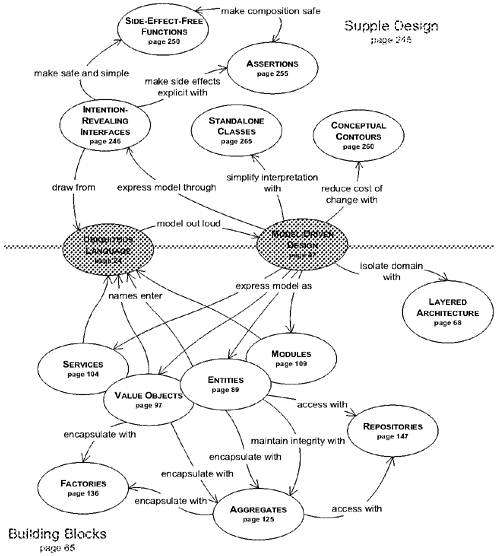

감사의 글
나는 어떤 형태로든 4년 넘게 이 책을 집필해 왔으며, 그 과정에서 많은 사람들의 도움과 지원을 받았다.
원고를 읽고 의견을 준 분들께 감사드린다. 그 피드백이 없었다면 이 책은 결코 세상에 나올 수 없었을 것이다. 특히 몇몇 분들은 검토에 아낌없는 관심을 기울여 주었다. 러스 루퍼(Russ Rufer)와 트레이시 비알렉(Tracy Bialek)이 이끄는 실리콘밸리 패턴 그룹(Silicon Valley Patterns Group)은 이 책의 첫 번째 완성 초고를 7주 동안 꼼꼼히 살펴보았다. 랠프 존슨(Ralph Johnson)이 이끄는 일리노이 대학교 독서 모임 역시 후속 초고를 검토하는 데 몇 주를 할애했다. 이 모임들의 길고 활기찬 토론을 경청한 것은 깊은 영향을 미쳤다. 카일 브라운(Kyle Brown)과 마틴 파울러(Martin Fowler)는 상세한 피드백, 값진 통찰, 그리고 (물고기 조형물 위에 앉아) 소중한 정신적 지지를 보내 주었다. 워드 커닝햄(Ward Cunningham)의 의견은 몇 가지 중요한 약점을 보완하는 데 도움이 되었다. 앨리스터 코번(Alistair Cockburn)은 초기부터 나를 격려해 주었고 힐러리 에반스(Hilary Evans)와 함께 출판 과정을 헤쳐 나가도록 도와주었다. 데이비드 시겔(David Siegel)과 유진 월링포드(Eugene Wallingford)는 보다 기술적인 부분에서 내가 망신당하지 않도록 도와주었다. 비부 모힌드라(Vibhu Mohindra)와 블라디미르 기틀레비치(Vladimir Gitlevich)는 모든 코드 예제를 공들여 검증해 주었다.
롭 미(Rob Mee)는 이 자료에 대한 나의 가장 초기 탐구 중 일부를 읽어 주었고, 내가 이러한 설계 스타일을 전달할 방법을 찾아 헤매던 시절에 함께 아이디어를 브레인스토밍해 주었다. 그 후 훨씬 나중의 초고도 나와 함께 꼼꼼히 살펴보았다.
조시 케리예프스키(Josh Kerievsky)는 이 책의 전개에서 중대한 전환점 중 하나를 만들어 낸 주역이다. 그는 나에게 이 책 구성의 핵심이 된 “알렉산더(Alexandrian)” 패턴 형식을 시도해 보라고 설득했다. 또한 1999년 PLoP 콘퍼런스에 앞선 집중적인 “셰퍼딩(shepherding)” 과정에서 현재 2부에 실린 내용의 일부를 처음으로 일관된 형태로 엮어 내도록 도와주었다. 이것은 책의 나머지 대부분이 형성되는 씨앗이 되었다.
또한 훌륭한 카페에서 내가 수백 시간 동안 앉아 글을 쓸 수 있도록 해 준 아와드 파둘(Awad Faddoul)에게도 감사한다. 그 피난처는 숱한 윈드서핑과 함께 내가 계속 나아갈 수 있도록 버팀목이 되어 주었다.
그리고 몇 가지 핵심 개념을 설명하기 위해 아름다운 사진을 만들어 준 마르틴 주세(Martine Jousset), 리처드 파셀크(Richard Paselk), 로스 베너블스(Ross Venables)에게 깊이 감사드린다(517쪽의 사진 출처 참조).
이 책을 구상하기 전에 나는 먼저 소프트웨어 개발에 대한 나의 시각과 이해를 형성해야 했다. 그 형성 과정은 나에게 친구이자 비공식 멘토 역할을 해 준 몇몇 뛰어난 사람들의 아낌없는 베풂에 크게 빚지고 있다. 데이비드 시겔, 에릭 골드(Eric Gold), 이설트 화이트(Iseult White)는 각자 다른 방식으로 내가 소프트웨어 설계에 대한 사고방식을 발전시키도록 도와주었다. 한편 브루스 고든(Bruce Gordon), 리처드 프라이버그(Richard Freyberg), 주디스 시걸(Judith Segal) 역시 저마다 전혀 다른 방식으로 내가 성공적인 프로젝트 업무의 세계에서 길을 찾도록 도와주었다.
내 생각들은 자연스럽게 당시 공중에 떠돌던 수많은 아이디어에서 자라났다. 그러한 기여 중 일부는 본문에서 명확히 드러나며 가능한 곳마다 출처를 밝혔다. 다른 일부는 너무나 근본적이어서 내게 미친 영향을 미처 깨닫지 못할 정도다.
석사 논문 지도교수였던 발라 수브라마니움(Bala Subramanium) 박사는 나를 화학 반응 속도론에 적용한 수학적 모델링의 세계로 이끌었다. 모델링은 결국 모델링이며, 그 작업은 나를 이 책으로 이끈 길의 일부였다.
그보다 훨씬 이전부터 나의 사고방식은 부모님인 캐럴(Carol)과 게리 에반스(Gary Evans)에 의해 형성되었다. 그리고 몇몇 특별한 선생님들이 나의 흥미를 일깨우거나 기초를 다지는 데 도움을 주셨는데, 특히 고등학교 수학 선생님이신 데일 커리어(Dale Currier), 고등학교 영작문 선생님이신 메리 브라운(Mary Brown), 초등학교 6학년 과학 선생님이신 조세핀 맥글래머리(Josephine McGlamery) 선생님께 감사드린다.
마지막으로, 그동안 줄곧 격려해 준 친구들과 가족, 그리고 페르난도 데 레온(Fernando De Leon)에게 감사를 전한다.
1부: 도메인 모델 활용하기
이 18세기 중국 지도는 세계 전체를 나타낸다. 가운데에서 대부분의 공간을 차지하고 있는 것은 중국이고, 다른 나라들은 그 주변에 형식적으로만 그려져 있다. 이는 의도적으로 내면을 향했던 당시 사회에 부합하는 세계 모델이었다. 이 지도가 나타내는 세계관은 외국인을 상대하는 데는 전혀 도움이 되지 않았을 것이다. 현대 중국에도 전혀 맞지 않음은 물론이다. 지도는 모델이며, 모든 모델은 현실의 어떤 측면이나 관심 있는 아이디어를 나타낸다. 모델은 단순화다. 당면한 문제를 해결하는 데 관련된 측면들을 추상화하고 불필요한 세부 사항을 무시하는 현실의 해석이다. 모든 소프트웨어 프로그램은 사용자의 어떤 활동이나 관심사와 관련이 있다. 사용자가 프로그램을 적용하는 그 주제 영역이 바로 소프트웨어의 도메인(domain)이다. 어떤 도메인은 물리적 세계를 다룬다. 항공권 예약 프로그램의 도메인은 실제 사람들이 실제 항공기에 탑승하는 일을 다룬다. 어떤 도메인은 무형이다. 회계 프로그램의 도메인은 돈과 재무다. 소스 코드 관리 시스템의 도메인이 소프트웨어 개발 그 자체인 것처럼 예외는 있지만, 소프트웨어 도메인은 대개 컴퓨터와 거의 관련이 없다. 사용자의 활동에 가치 있게 관여하는 소프트웨어를 만들려면, 개발 팀은 그 활동과 관련된 지식 체계를 동원해야 한다. 필요한 지식의 폭은 위압적일 수 있다. 정보의 양과 복잡성은 압도적일 수 있다. 모델은 이러한 과부하와 씨름하기 위한 도구다. 모델은 선택적으로 단순화되고 의식적으로 구조화된 지식의 형태다. 적절한 모델은 정보에 의미를 부여하고 그것을 문제에 집중시킨다. 도메인 모델은 특정한 다이어그램이 아니다. 그것은 다이어그램이 전달하고자 하는 아이디어다. 도메인 모델은 도메인 전문가의 머릿속에 있는 지식 그 자체가 아니라, 그 지식을 엄격하게 조직화하고 선택적으로 추상화한 것이다. 공들여 작성된 코드나 영어 문장이 그러하듯, 다이어그램 역시 모델을 표현하고 전달할 수 있다. 도메인 모델링은 가능한 한 “사실적인” 모델을 만드는 문제가 아니다. 만질 수 있는 현실 세계의 사물을 다루는 도메인에서도 우리의 모델은 인위적인 창조물이다. 또한 필요한 결과를 내는 소프트웨어 메커니즘을 단순히 구축하는 것도 아니다. 그것은 특정 목적을 위해 현실을 느슨하게 재현하는 영화 제작에 더 가깝다. 다큐멘터리 영화조차 편집되지 않은 실제 삶을 그대로 보여 주지는 않는다. 영화 제작자가 이야기를 들려주거나 요점을 전달하기 위해 경험의 특정 측면을 선택하여 독특한 방식으로 제시하듯, 도메인 모델러는 유용성을 기준으로 특정 모델을 선택한다. 도메인 주도 설계에서는 세 가지 기본 용도가 모델의 선택을 결정한다. 모델과 설계의 핵심은 서로를 형성한다. 모델이 의미를 지니고 거기에 투입된 분석이 최종 산물인 동작하는 프로그램에 적용되도록 보장하는 것은 모델과 구현 사이의 긴밀한 연결이다. 이러한 모델과 구현의 결합은 유지보수와 지속적인 개발 과정에서도 도움이 되는데, 모델에 대한 이해를 바탕으로 코드를 해석할 수 있기 때문이다. (3장 참조.) 모델은 모든 팀원이 사용하는 언어의 근간이다. 모델과 구현의 결합 덕분에 개발자들은 이 언어로 프로그램에 관해 이야기할 수 있다. 도메인 전문가와 번역 없이 의사소통할 수 있다. 그리고 언어가 모델에 기반하므로, 우리의 자연스러운 언어적 능력을 모델 자체를 정제하는 데 활용할 수 있다. (2장 참조.) 모델은 정제된 지식이다. 모델은 도메인 지식을 구조화하고 가장 관심 있는 요소들을 가려내기 위해 팀이 합의한 방식이다. 모델은 우리가 용어를 선택하고, 개념을 분해하고, 그것들을 연관 지으며 도메인에 대해 생각하기로 선택한 방식을 포착한다. 공유된 언어는 개발자와 도메인 전문가가 정보를 이러한 형태로 다듬어 나가면서 효과적으로 협업할 수 있게 해 준다. 모델과 구현의 결합은 소프트웨어 초기 버전을 사용하며 얻은 경험을 모델링 프로세스의 피드백으로 활용할 수 있게 만든다. (1장 참조.) 이어지는 세 장에서는 이러한 기여 각각의 의미와 가치, 그리고 그것들이 서로 얽혀 있는 방식을 차례로 살펴본다. 이러한 방식으로 모델을 활용하면, 그렇지 않았더라면 엄청난 규모의 임시방편적 개발 투자가 필요했을 풍부한 기능의 소프트웨어 개발을 뒷받침할 수 있다. 소프트웨어의 핵심은 사용자를 위해 도메인 관련 문제를 해결하는 능력이다. 다른 모든 기능은 아무리 중요하더라도 이 기본 목적을 뒷받침한다. 도메인이 복잡할 때 이는 어려운 과업이며, 재능 있고 숙련된 사람들의 집중적인 노력을 요구한다. 개발자는 비즈니스에 대한 지식을 쌓기 위해 도메인에 푹 빠져들어야 한다. 모델링 기술을 연마하고 도메인 설계를 숙달해야 한다. 하지만 대부분의 소프트웨어 프로젝트에서 이것들은 우선순위가 아니다. 재능 있는 대부분의 개발자는 자신이 일하고 있는 특정 도메인에 대해 배우는 데 큰 관심이 없으며, 도메인 모델링 기술을 확장하기 위해 본격적으로 헌신하려는 생각은 더더욱 없다. 기술자들은 자신의 기술 역량을 발휘할 수 있는 정량적인 문제를 즐긴다. 도메인 작업은 어수선하고, 컴퓨터 과학자의 역량을 늘려 줄 것 같지 않은 복잡하고 새로운 지식을 많이 요구한다. 그 대신 기술적 재능은 정교한 프레임워크를 만드는 데 투입되어, 기술로 도메인 문제를 해결하려 든다. 도메인에 대해 배우고 모델링하는 일은 다른 사람들에게 맡겨진다. 소프트웨어 핵심부의 복잡성은 정면으로 맞서야 한다. 그렇게 하지 않으면 무의미해질 위험을 감수해야 한다. 한 TV 토크쇼 인터뷰에서 코미디언 존 클리즈(John Cleese)는 『몬티 파이튼과 성배(Monty Python and the Holy Grail)』 촬영 중에 있었던 일화를 들려주었다. 그들은 특정 장면을 몇 번이고 거듭 촬영했지만 어쩐지 웃기지 않았다. 마침내 그는 휴식을 취하며 동료 코미디언 마이클 페일린(Michael Palin, 그 장면에 함께 출연한 배우)과 상의했고, 두 사람은 약간의 변형을 생각해 냈다. 한 번 더 테이크를 찍었고 이번에는 웃기게 나와서 그날 촬영을 마쳤다. 다음 날 아침, 클리즈는 전날 촬영분을 필름 편집자가 이어 붙인 가편집본을 보고 있었다. 애를 먹었던 그 장면에 이르렀을 때, 클리즈는 그 장면이 웃기지 않다는 것을 발견했다. 앞선 테이크 중 하나가 쓰였던 것이다. 그는 편집자에게 왜 지시한 대로 마지막 테이크를 쓰지 않았느냐고 물었다. “쓸 수 없었어요. 누군가 화면 안으로 걸어 들어왔거든요.” 편집자가 대답했다. 클리즈는 그 장면을 다시 보고 또 다시 보았다. 여전히 아무런 문제도 찾을 수 없었다. 마침내 편집자는 필름을 멈추고 화면 가장자리에 잠깐 비친 코트 소매 자락을 가리켰다. 필름 편집자는 자신의 전문 분야를 정밀하게 수행하는 데만 집중하고 있었다. 그는 영화를 보는 다른 필름 편집자들이 기술적 완벽함을 기준으로 자신의 작업을 평가할까 봐 걱정했다. 그 과정에서 장면의 핵심은 사라지고 말았다(CBS 「The Late Late Show with Craig Kilborn」, 2001년 9월). 다행히도 그 웃긴 장면은 코미디를 이해하는 감독에 의해 되살아났다. 이와 똑같은 방식으로, 도메인의 중심성을 이해하는 팀 내 리더들은 깊은 이해를 반영하는 모델 개발이 혼란 속에서 길을 잃었을 때 소프트웨어 프로젝트를 다시 제 궤도에 올려놓을 수 있다. 이 책은 도메인 개발이 매우 정교한 설계 기술을 연마할 수 있는 기회를 품고 있음을 보여 줄 것이다. 대부분 소프트웨어 도메인의 어수선함은 사실 흥미로운 기술적 도전이다. 실제로 많은 과학 분야에서 연구자들이 현실 세계의 어수선함을 다루려 함에 따라 “복잡성”은 오늘날 가장 흥미진진한 주제 중 하나다. 소프트웨어 개발자 역시 한 번도 정식화된 적 없는 복잡한 도메인에 직면했을 때 동일한 전망을 마주한다. 그 복잡성을 관통하는 명료한 모델을 창조하는 일은 흥미진진하다. 개발자가 통찰을 찾고 효과적인 모델을 만들어 내기 위해 동원할 수 있는 체계적인 사고방식들이 있다. 난잡한 소프트웨어 애플리케이션에 질서를 부여할 수 있는 설계 기법들도 있다. 이러한 기술을 연마하면 처음에는 낯선 도메인에서조차 개발자의 가치는 훨씬 높아진다.
1장. 지식 탐구
몇 년 전, 나는 인쇄회로기판(PCB) 설계를 위한 전문 소프트웨어 도구를 설계하기 시작했다. 한 가지 걸림돌이 있었다. 전자 하드웨어에 대해 아무것도 모른다는 점이었다. 물론 PCB 설계자들을 만날 수는 있었지만, 그들은 보통 3분 만에 내 머리를 어지럽게 만들었다. 납품 기한 전에 어떻게 이 소프트웨어를 작성할 만큼 충분히 이해할 수 있을까? 분명 그 기한 전에 내가 전기공학자가 될 수는 없을 노릇이었다!
우리는 PCB 설계자들이 소프트웨어가 정확히 무엇을 해야 하는지 내게 일러 주는 방식을 시도해 보았다. 나쁜 생각이었다. 그들은 훌륭한 회로 설계자였지만, 그들의 소프트웨어 아이디어는 대개 ASCII 파일을 읽고, 정렬하고, 주석을 달아 다시 출력하고, 보고서를 생성하는 수준이었다. 이는 분명 그들이 찾고 있던 생산성의 도약으로 이어질 리 없었다.
처음 몇 번의 회의는 실망스러웠지만, 그들이 요청한 보고서에서 한 줄기 희망이 보였다. 그 보고서에는 항상 “네트(net)”와 그에 관한 여러 세부 사항이 포함되어 있었다. 이 도메인에서 네트란 본질적으로 PCB 상의 임의의 개수의 부품(component)을 연결하고 연결된 모든 대상에 전기 신호를 전달할 수 있는 도선(wire conductor)을 말한다. 우리는 도메인 모델의 첫 번째 요소를 얻었다.
그림 1.1.
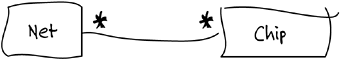
그들이 소프트웨어에 원하는 바를 논의하면서 나는 그들을 위해 다이어그램을 그리기 시작했다. 시나리오를 따라가 보기 위해 객체 상호작용 다이어그램의 비공식적인 변형을 사용했다.
그림 1.2.

PCB 전문가 1: 부품(component)이 꼭 칩(chip)일 필요는 없습니다.
개발자(나): 그러면 그냥 “컴포넌트(component)”라고 부르면 될까요?
전문가 1: 저희는 “컴포넌트 인스턴스(component instance)”라고 부릅니다. 같은 컴포넌트가 여러 개 있을 수 있거든요.
전문가 2: “네트” 상자가 컴포넌트 인스턴스랑 똑같이 생겼네요.
전문가 1: 이분은 우리 표기법을 안 쓰니까요. 저쪽에서는 다 네모로 그리나 보죠.
개발자: 죄송하지만 맞습니다. 이 표기법에 대해 좀 더 설명드려야겠네요.
그들은 끊임없이 나를 바로잡아 주었고, 그러는 사이 나는 배우기 시작했다. 우리는 그들의 용어에 담긴 충돌과 모호함, 그리고 기술적 견해 차이를 조율해 나갔고, 그들도 배워 나갔다. 그들은 사물을 더 정확하고 일관되게 설명하기 시작했고, 우리는 함께 모델을 발전시켜 나가기 시작했다.
전문가 1: 신호가 ref-des에 도착한다고 말하는 것만으로는 부족해요. 핀(pin)을 알아야 합니다.
개발자: Ref-des요?
전문가 2: 컴포넌트 인스턴스랑 같은 거예요. 우리가 쓰는 특정 도구에서 부르는 이름입니다.
전문가 1: 아무튼 네트는 한 인스턴스의 특정 핀을 다른 인스턴스의 특정 핀에 연결합니다.
개발자: 그러니까 핀은 오직 하나의 컴포넌트 인스턴스에만 속하고, 오직 하나의 네트에만 연결된다는 말씀인가요?
전문가 1: 네, 맞습니다.
전문가 2: 그리고 모든 네트에는 토폴로지(topology)가 있어요. 네트의 요소들이 연결되는 방식을 결정하는 배치 구조죠.
개발자: 좋습니다. 이건 어떤가요?
그림 1.3.
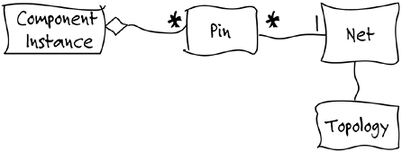
탐구의 초점을 맞추기 위해, 우리는 당분간 하나의 특정 기능을 연구하는 데로 범위를 좁혔다. “프로브 시뮬레이션(probe simulation)”은 설계에서 특정 종류의 문제가 발생할 가능성이 높은 지점을 찾아내기 위해 신호의 전파(propagation)를 추적하는 기능이었다.
개발자: 신호가 네트(Net)를 통해 연결된 모든 핀(Pin)으로 전달되는 것은 이해했습니다. 그런데 그 다음에는 어떻게 더 나아가나요? 토폴로지(Topology)가 관련이 있나요?
전문가 2: 아니요. 컴포넌트가 신호를 통과시켜 밀어냅니다(push).
개발자: 칩의 내부 동작까지 모델링할 수는 없을 텐데요. 그건 너무 복잡합니다.
전문가 2: 그럴 필요 없어요. 단순화를 쓰면 됩니다. 컴포넌트를 통과해 특정 핀들에서 다른 특정 핀들로 밀어내는(push) 목록만 있으면 돼요.
개발자: 이런 식인가요?
[상당한 시행착오 끝에, 우리는 함께 시나리오 하나를 스케치해 나갔다.]
그림 1.4.
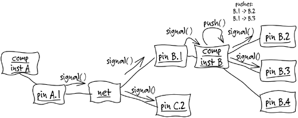
개발자: 그런데 이 계산에서 정확히 무엇을 알아내야 하는 건가요?
전문가 2: 신호 지연이 긴 경우를 찾으려 합니다. 예컨대 2~3홉(hop)을 넘는 신호 경로 같은 거죠. 일종의 경험 법칙입니다. 경로가 너무 길면 신호가 클록 사이클 내에 도착하지 못할 수 있거든요.
개발자: 3홉 이상이라……. 그럼 경로 길이를 계산해야겠네요. 그런데 무엇을 1홉으로 치나요?
전문가 2: 신호가 넷(Net)을 한 번 건너갈 때마다 1홉입니다.
개발자: 그렇다면 홉 수를 계속 넘겨주면서 넷(Net)이 그 값을 1씩 증가시키도록 하면 되겠네요. 이런 식으로요.
그림 1.5.

개발자: 제가 아직 명확히 이해하지 못한 유일한 부분은 “푸시(push)”가 어디서 오는가 하는 점입니다. 그 데이터를 모든 컴포넌트 인스턴스(Component Instance)마다 저장해야 하나요?
전문가 2: 푸시는 같은 컴포넌트의 모든 인스턴스에서 동일할 겁니다.
개발자: 그러니까 컴포넌트의 타입이 푸시를 결정한다는 말씀이군요. 모든 인스턴스마다 똑같을 거라는 거죠?
그림 1.6.
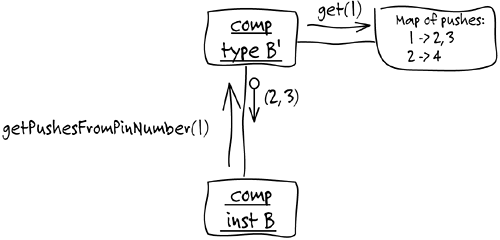
전문가 2: 여기에 적힌 몇몇 항목이 정확히 무엇을 의미하는지는 잘 모르겠지만, 각 컴포넌트마다 푸시-스루(push-through)를 저장하는 모습은 대략 저런 식일 것 같네요.
개발자: 죄송합니다, 거기서 제가 너무 세세한 부분까지 들어갔네요. 그냥 머릿속으로 정리해 보던 중이었습니다……. 자, 그럼 토폴로지(Topology)는 여기서 어디에 들어가나요?
전문가 1: 그건 프로브 시뮬레이션(probe simulation)에서는 쓰이지 않습니다.
개발자: 그럼 지금은 빼 둘게요, 괜찮을까요? 나중에 그 기능을 다룰 때 다시 가져오면 되니까요.
이런 식으로 대화가 이어졌다(여기에 묘사된 것보다 훨씬 더 많은 우여곡절이 있었다). 브레인스토밍하고 다듬고, 질문하고 설명하는 과정이었다. 모델은 도메인에 대한 나의 이해, 그리고 그 모델이 해결책 속에서 어떤 역할을 할지에 대한 전문가들의 이해와 함께 발전해 나갔다. 그 초기 모델을 나타낸 클래스 다이어그램은 대략 다음과 같다.
그림 1.7.
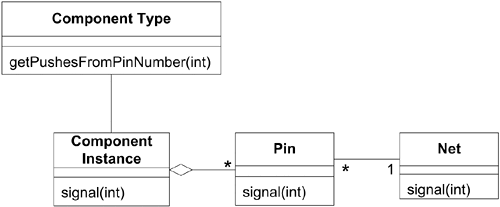
이렇게 며칠 동안 파트타임으로 작업을 더 진행한 뒤, 나는 코드를 작성해 볼 수 있을 만큼 충분히 이해했다고 느꼈다. 자동화된 테스트 프레임워크로 구동되는 아주 단순한 프로토타입을 작성했다. 인프라는 일절 배제했다. 영속성(persistence)도 없었고, 사용자 인터페이스(UI)도 없었다. 덕분에 동작(behavior)에만 집중할 수 있었다. 불과 며칠 만에 간단한 프로브 시뮬레이션을 시연할 수 있었다. 비록 더미 데이터를 사용하고 콘솔에 투박한 텍스트를 출력하기는 했지만, 그래도 자바(Java) 객체를 사용해 실제 경로 길이를 계산해 내고 있었다. 그 자바 객체들은 도메인 전문가들과 내가 공유하는 모델을 반영하고 있었다.
이 프로토타입이 보여 준 구체성 덕분에 도메인 전문가들은 모델이 무엇을 의미하며 작동하는 소프트웨어와 어떻게 연결되는지를 훨씬 분명히 이해하게 되었다. 그 시점부터 우리의 모델 논의는 훨씬 더 상호작용적으로 변했다. 내가 새로 습득한 지식을 모델에, 그리고 이어서 소프트웨어에 어떻게 반영하는지를 전문가들이 직접 눈으로 볼 수 있었기 때문이다. 또한 그들은 프로토타입에서 얻은 구체적인 피드백을 바탕으로 자신의 생각을 검증할 수 있었다.
여기에 보인 것보다 자연히 훨씬 더 복잡해진 그 모델 속에는, 우리가 풀고자 하는 문제와 관련된 PCB 도메인 지식이 담겨 있었다. 모델은 수많은 동의어와 표현상의 미세한 차이를 하나로 통합했다. 또한 엔지니어들은 알고 있지만 당면 문제와 직접 관련이 없는 수백 가지 사실(예컨대 컴포넌트의 실제 디지털 기능 등)은 배제했다. 나와 같은 소프트웨어 전문가라면 다이어그램만 보고도 몇 분 만에 이 소프트웨어가 무엇을 하는 것인지 감을 잡기 시작할 수 있었다. 새로운 정보를 체계화하고 더 빠르게 학습하며, 무엇이 중요하고 무엇이 중요하지 않은지 더 나은 추측을 내리고, PCB 엔지니어들과 더 원활하게 의사소통할 수 있는 틀을 갖추게 되는 것이다.
엔지니어들이 필요한 새 기능을 설명할 때마다, 나는 객체들이 어떻게 상호작용하는지 시나리오를 따라가며 함께 짚어 보게 했다. 모델 객체들이 중요한 시나리오를 감당하지 못할 때는, 그들의 지식을 파헤쳐 정제하면서 새로운 객체를 브레인스토밍하거나 기존 객체를 수정했다. 우리는 모델을 다듬었고, 코드는 공진화(coevolution)했다. 몇 달 뒤 PCB 엔지니어들은 기대를 뛰어넘는 풍부한 기능을 갖춘 도구를 손에 넣게 되었다.
효과적인 모델링의 요소
우리가 방금 설명한 성공을 이끈 몇 가지 핵심 요소가 있다.
모델과 구현의 결합. 그 투박한 프로토타입은 초기 단계에서 핵심적인 연결 고리를 만들어 냈고, 이후 모든 반복 주기(iteration)에서도 그 연결이 유지되었다.
- 모델에 기반한 언어의 배양. 처음에는 엔지니어들이 나에게 기초적인 PCB 문제를 설명해야 했고, 나는 클래스 다이어그램이 무엇을 뜻하는지 설명해야 했다. 하지만 프로젝트가 진행되면서 우리 중 누구라도 모델에서 용어를 곧장 가져와 모델의 구조에 부합하는 문장으로 엮어 말할 수 있게 되었고, 별도의 번역 없이도 모호함 없이 서로를 이해할 수 있었다.
- 지식이 풍부한 모델의 개발. 객체들은 동작을 지니고 규칙을 강제했다. 모델은 단순한 데이터 스키마가 아니라, 복잡한 문제를 해결하는 데 필수적인 요소였다. 그것은 다양한 종류의 지식을 포착해 냈다.
- 모델의 정제. 모델이 완성도를 높여 감에 따라 중요한 개념들이 추가되었지만, 그에 못지않게 유용하거나 핵심적이지 않음이 드러난 개념들은 과감히 제거되었다. 불필요한 개념이 필요한 개념과 얽혀 있을 때는, 본질적인 개념을 분리해 내어 나머지 개념을 버릴 수 있도록 새로운 모델을 찾아냈다.
- 브레인스토밍과 실험. 언어는 스케치 및 브레인스토밍하는 태도와 결합되어 우리의 논의를 모델의 실험실로 탈바꿈시켰고, 그 안에서 수백 가지 실험적 변형을 실제로 해 보고 시험하며 평가할 수 있었다. 팀이 시나리오를 따라가 보는 동안, 말로 뱉어낸 표현 자체가 제안된 모델의 타당성을 빠르게 검증해 주는 시험대가 되었다. 귀로 듣기만 해도 표현이 명쾌하고 매끄러운지, 아니면 어색한지를 금세 알아차릴 수 있었기 때문이다. 지식이 풍부한 모델을 찾아내고 그것을 정제할 수 있게 해 주는 것은, 모델 기반의 언어를 지렛대 삼고 구현을 통한 피드백 루프로 규율을 잡은 상태에서 이루어지는 브레인스토밍의 창의성과 대규모 실험이다. 이러한 종류의 지식 크런칭(knowledge crunching)이 팀의 지식을 가치 있는 모델로 바꾸어 놓는다.
지식 크런칭
재무 분석가는 숫자를 파고들어 분석한다(crunch numbers). 그들은 산더미 같은 세부 수치를 훑고, 조합하고 또 재조합하며 그 이면의 의미를 찾고, 진정으로 중요한 것—즉 재무적 의사결정의 토대가 될 수 있는 이해—을 드러내는 단순한 표현 방식을 찾는다.
유능한 도메인 모델러는 지식 크런처(knowledge cruncher)다. 그들은 밀려드는 정보의 홍수 속에서 관련 있는 한 줄기 물길을 찾아 탐색한다. 방대한 자료를 이해할 수 있게 해 주는 단순한 관점을 찾기 위해 하나의 체계화 아이디어를 시도하고 또 다른 아이디어를 시도한다. 수많은 모델이 시험대에 오르고 버려지거나 변형된다. 성공은 모든 세부 사항을 납득시켜 주는 추상 개념들의 집합이 떠오를 때 찾아온다. 이 정제(distillation)는 가장 관련성이 높다고 밝혀진 특정 지식을 엄밀하게 표현한 결과물이다.
지식 크런칭은 혼자서 하는 활동이 아니다. 보통 개발자가 주도하는 가운데, 개발자들과 도메인 전문가들로 구성된 팀이 협업한다. 그들은 함께 정보를 끌어모아 유용한 형태로 파헤쳐 정제한다. 원재료는 도메인 전문가의 머릿속, 기존 시스템의 사용자, 그리고 기술 팀이 관련 레거시 시스템이나 같은 도메인의 다른 프로젝트에서 쌓은 이전 경험에서 나온다. 또한 프로젝트를 위해 작성되었거나 현업에서 쓰이는 문서들, 그리고 엄청나게 많은 대화의 형태로도 나온다. 초기 버전이나 프로토타입은 경험을 다시 팀에 피드백하여 해석을 변화시킨다.
과거의 폭포수(waterfall) 방식에서는 현업 전문가가 분석가와 이야기하고, 분석가가 이를 소화하고 추상화한 뒤 결과를 프로그래머에게 넘겨 소프트웨어를 코딩하게 했다. 이 접근 방식은 피드백이 전혀 없기 때문에 실패한다. 분석가는 오직 현업 전문가의 입력에만 의존해 모델을 만들 전권을 쥔다. 그들은 프로그래머로부터 배우거나 초기 버전의 소프트웨어를 통해 경험을 쌓을 기회가 없다. 지식은 한 방향으로만 흘러갈 뿐 축적되지 않는다.
반복적(iterative) 프로세스를 사용하는 다른 프로젝트들도 추상화를 하지 않기 때문에 지식을 축적하는 데 실패한다. 개발자들은 전문가에게 원하는 기능을 설명하게 한 뒤 가서 그것을 구현한다. 결과를 전문가에게 보여 주고 다음에 무엇을 할지 묻는다. 프로그래머가 리팩토링을 실천한다면 소프트웨어를 계속 확장할 수 있을 만큼 깔끔하게 유지할 수는 있겠지만, 프로그래머가 도메인에 관심이 없다면 애플리케이션이 무엇을 해야 하는지만 배울 뿐 그 배후의 원리는 배우지 못한다. 그런 식으로 쓸 만한 소프트웨어를 만들 수는 있어도, 오래된 기능의 자연스러운 귀결로 강력한 새 기능이 펼쳐지는 지점에는 결코 도달하지 못할 것이다.
유능한 프로그래머는 자연스럽게 추상화를 시작하고 더 많은 일을 해낼 수 있는 모델을 발전시키려 한다. 하지만 이 과정이 도메인 전문가와의 협업 없이 기술적인 환경에서만 이루어지면, 그 개념들은 피상적이게 된다. 이러한 지식의 얕음은 기본적인 작업은 수행하지만 도메인 전문가의 사고방식과 깊은 연결고리가 결여된 소프트웨어를 낳는다.
모든 구성원이 함께 모델을 크런칭함에 따라 팀원 간의 상호작용도 달라진다. 도메인 모델을 끊임없이 다듬는 과정은 개발자들이 기능을 기계적으로 찍어 내기보다 자신이 돕고 있는 비즈니스의 중요한 원리를 배우도록 이끈다. 도메인 전문가들 역시 자신이 아는 바를 본질로 정제하도록 요구받으면서 스스로의 이해를 가다듬게 되고, 소프트웨어 프로젝트가 요구하는 개념적 엄밀함을 이해하게 된다.
이 모든 과정은 팀원들을 더 유능한 지식 크런처로 만든다. 그들은 불필요한 것을 걸러 낸다. 모델을 더욱 유용한 형태로 끊임없이 재구성한다. 분석가와 프로그래머가 기여하기 때문에 모델은 깔끔하게 구조화되고 추상화되어 구현에 지렛대 역할을 할 수 있다. 도메인 전문가가 기여하기 때문에 모델은 비즈니스에 대한 깊은 지식을 반영한다. 그 추상화들은 진정한 비즈니스 원리가 된다.
모델이 개선됨에 따라, 그것은 프로젝트 전반에 계속 흘러들어오는 정보를 체계화하는 도구가 된다. 모델은 요구사항 분석의 초점을 맞춘다. 프로그래밍 및 설계와 밀접하게 상호작용한다. 그리고 선순환을 통해 도메인에 대한 팀원들의 통찰을 깊게 하여 더 명확하게 볼 수 있게 해 주고, 이는 다시 모델의 추가적인 정제로 이어진다. 이러한 모델은 결코 완벽하지 않으며 진화한다. 모델은 도메인을 이해하는 데 실용적이고 유용해야 한다. 그리고 애플리케이션을 단순하게 구현하고 이해할 수 있을 만큼 엄밀해야 한다.
지속적인 학습
우리가 소프트웨어를 작성하기 시작할 때, 우리가 아는 것은 결코 충분하지 않다. 프로젝트에 관한 지식은 단편화되어 여러 사람과 문서에 흩어져 있으며, 다른 정보들과 뒤섞여 있어서 어떤 지식 조각이 정말로 필요한지조차 알지 못한다. 기술적으로 덜 벅차 보이는 도메인은 착각을 일으키기 쉽다. 우리가 얼마나 모르는지를 깨닫지 못하는 것이다. 이러한 무지는 우리를 잘못된 가정으로 이끈다.
한편 모든 프로젝트는 지식이 새어 나간다. 무언가를 배운 사람들이 떠나간다. 조직 개편으로 팀이 흩어지면 지식은 다시 단편화된다. 핵심 서브시스템이 외주로 넘어가면서 코드는 납품되지만 지식은 남지 않는다. 그리고 전형적인 설계 접근 방식에서는 코드와 문서가 힘들게 얻은 이 지식을 쓸모 있는 형태로 표현하지 못하므로, 어떤 이유로든 구전이 끊어지면 지식은 사라지고 만다.
생산성이 높은 팀은 지속적인 학습(continuous learning)을 실천함으로써 의식적으로 지식을 키워 나간다(Kerievsky 2003). 개발자에게 이는 (이 책에서 다루는 것과 같은) 일반적인 도메인 모델링 기법과 함께 기술 지식을 향상하는 것을 의미한다. 하지만 여기에는 자신이 일하고 있는 특정 도메인에 대한 진지한 학습도 포함된다.
스스로 학습한 이 팀원들은 가장 중요한 영역이 걸린 개발 작업에 집중하는 안정적인 핵심 인력을 형성한다(이에 대해서는 15장을 참고하라). 이 핵심 팀의 머릿속에 축적된 지식은 그들을 더 유능한 지식 크런처로 만든다.
이 시점에서 잠시 멈추어 스스로에게 질문해 보라. PCB 설계 프로세스에 대해 무언가를 배웠는가? 이 예제가 그 도메인을 피상적으로 다루기는 했지만, 도메인 모델을 논의할 때는 어느 정도의 학습이 이루어지기 마련이다. 나는 엄청나게 많은 것을 배웠다. PCB 엔지니어가 되는 법을 배운 것은 아니다. 그것은 목표가 아니었다. 나는 PCB 전문가들과 대화하고, 애플리케이션과 관련된 주요 개념을 이해하며, 우리가 만들고 있는 것이 타당한지 점검하는 법을 배웠다.
사실, 우리 팀은 결국 프로브 시뮬레이션이 개발 우선순위가 낮다는 것을 발견했고, 그 기능은 아예 폐기되었다. 그와 함께 컴포넌트를 통해 신호를 밀어 넣고 홉을 세는 이해를 포착했던 모델의 부분들도 사라졌다. 애플리케이션의 핵심은 다른 곳에 있음이 드러났고, 모델은 그 측면들을 무대 중앙으로 끌어올리도록 변화했다. 도메인 전문가들은 더 많은 것을 배웠고 애플리케이션의 목표를 명확히 했다(15장에서 이 문제를 깊이 있게 다룬다).
그럼에도 불구하고 초기 작업은 필수적이었다. 핵심적인 모델 요소들이 유지되었을 뿐 아니라, 더 중요하게는 그 작업이 이후의 모든 작업을 효과적으로 만든 지식 크런칭 프로세스를 가동시켰기 때문이다. 즉 팀원들, 개발자, 도메인 전문가 모두에게 축적된 지식, 공유 언어의 시작, 그리고 구현을 통한 피드백 루프의 완성이 그것이다. 발견의 항해는 어딘가에서 시작해야만 한다.
지식이 풍부한 설계
PCB 예제와 같은 모델에 포착되는 지식의 종류는 단순히 “명사 찾기”를 넘어선다. 비즈니스 활동과 규칙은 관련된 엔티티(Entity)만큼이나 도메인의 중심에 있다. 어떤 도메인이든 다양한 범주의 개념을 갖게 마련이다. 지식 크런칭은 이러한 통찰을 반영하는 모델을 산출한다. 모델의 변화와 병행하여, 개발자는 구현을 리팩토링해 모델을 표현함으로써 애플리케이션이 그 지식을 활용할 수 있게 한다.
지식 크런칭이 치열해지는 것은 바로 엔티티(Entity)와 값을 넘어선 이 단계에서인데, 비즈니스 규칙 사이에 실제 불일치가 존재할 수 있기 때문이다. 도메인 전문가들은 대개 업무를 수행하면서 이 모든 규칙을 헤쳐 나가고, 모순을 조정하며, 상식으로 빈틈을 메우는 자신들의 정신적 과정이 얼마나 복잡한지 자각하지 못한다. 소프트웨어는 그렇게 할 수 없다. 소프트웨어 전문가들과의 긴밀한 협업을 통한 지식 크런칭을 거쳐서야 비로소 규칙들이 명확해지고, 구체화되며, 조정되거나, 범위 밖으로 제외된다.
예제
숨겨진 개념 추출하기
선박의 항해에 화물을 예약하는 애플리케이션의 토대가 될 수 있는 아주 단순한 도메인 모델부터 시작해 보자.
그림 1.8.

예약 애플리케이션의 책임은 각 화물(Cargo)을 항해(Voyage)와 연관 짓고, 그 관계를 기록하고 추적하는 것이라고 말할 수 있다. 여기까지는 좋다. 애플리케이션 코드 어딘가에 다음과 같은 메서드가 있을 수 있다.
public int makeBooking(Cargo cargo, Voyage voyage) {
int confirmation = orderConfirmationSequence.next();
voyage.addCargo(cargo, confirmation);
return confirmation;
}막판 취소는 언제나 있기 마련이므로, 해운 업계의 표준 관행은 특정 선박이 항해에서 실을 수 있는 것보다 더 많은 화물을 수주하는 것이다. 이를 “초과 예약(overbooking)”이라고 한다. 때로는 적재 용량의 110퍼센트를 예약하는 식으로 단순한 비율을 사용하기도 한다. 또 다른 경우에는 주요 고객이나 특정 종류의 화물을 우대하는 복잡한 규칙이 적용된다.
이것은 해운 업계의 비즈니스 담당자라면 누구나 알고 있는 기본 전략이지만, 소프트웨어 팀의 모든 기술 인력이 이해하고 있지는 못할 수도 있다.
요구사항 문서에는 다음과 같은 한 줄이 들어 있다.
10% 초과 예약을 허용한다.
이제 클래스 다이어그램과 코드는 다음과 같아진다.
그림 1.9.

public int makeBooking(Cargo cargo, Voyage voyage) {
double maxBooking = voyage.capacity() * 1.1;
if ((voyage.bookedCargoSize() + cargo.size()) > maxBooking)
return –1;
int confirmation = orderConfirmationSequence.next();
voyage.addCargo(cargo, confirmation);
return confirmation;
}이제 중요한 비즈니스 규칙 하나가 애플리케이션 메서드 안의 가드 절(guard clause)로 숨어 버렸다. 나중에 4장에서는 초과 예약 규칙을 도메인 객체 안으로 옮기도록 안내할 계층형 아키텍처(Layered Architecture)의 원칙을 살펴볼 것이지만, 지금은 이 지식을 어떻게 하면 프로젝트의 모든 사람에게 더 명시적이고 접근 가능하게 만들 수 있을지에 집중하자. 이 역시 우리를 비슷한 해결책으로 이끌 것이다.
지금 작성된 상태로는, 개발자의 안내를 받더라도 현업 전문가가 이 코드를 읽고 규칙을 검증하기는 어려울 것이다.
- 비즈니스를 모르는 기술 인력이 요구사항 텍스트와 코드를 연결 짓기도 어려울 것이다. 규칙이 더 복잡하다면 걸려 있는 위험은 그만큼 더 커질 것이다.
우리는 이 지식을 더 잘 포착하도록 설계를 변경할 수 있다. 초과 예약 규칙은 하나의 정책(policy)이다. 정책은 전략(STRATEGY)으로 알려진 디자인 패턴의 또 다른 이름이다(Gamma et al. 1995). 전략 패턴은 보통 서로 다른 규칙을 교체해야 할 필요성 때문에 사용되지만, 우리가 아는 한 여기서는 그런 필요가 없다. 그러나 우리가 포착하려는 개념은 정책의 의미와 정확히 맞아떨어지며, 이는 도메인 주도 설계에서 그에 못지않게 중요한 동기이다(12장 “모델과 디자인 패턴의 연관 짓기” 참고).
그림 1.10.

이제 코드는 다음과 같다.
public int makeBooking(Cargo cargo, Voyage voyage) {
if (!overbookingPolicy.isAllowed(cargo, voyage)) return –1;
int confirmation = orderConfirmationSequence.next();
voyage.addCargo(cargo, confirmation);
return confirmation;
}새로운 Overbooking Policy 클래스에는 다음 메서드가 들어 있다.
public boolean isAllowed(Cargo cargo, Voyage voyage) {
return (cargo.size() + voyage.bookedCargoSize()) <=
(voyage.capacity() * 1.1);
}초과 예약이 하나의 뚜렷한 정책이며 그 규칙의 구현이 명시적이고 분리되어 있다는 사실이 누구에게나 분명해질 것이다.
그렇다고 해서 도메인의 모든 세부 사항에 이처럼 정교한 설계를 적용하라고 권하는 것은 아니다. 15장 “정제(Distillation)”에서는 중요한 것에 집중하고 나머지를 모두 최소화하거나 분리하는 방법을 깊이 있게 다룬다. 이 예제는 지식을 확보하고 공유하기 위해 도메인 모델과 그에 상응하는 설계를 어떻게 활용할 수 있는지 보여 주기 위한 것이다. 이처럼 더 명시적인 설계에는 다음과 같은 장점이 있다.
설계를 이 단계까지 끌어올리기 위해, 프로그래머와 관련된 모든 사람은 초과 예약이 모호한 계산식이 아니라 뚜렷하고 중요한 비즈니스 규칙이라는 본질을 이해하게 된다.
- 프로그래머는 코드까지도 포함한 기술적 산출물을 현업 전문가에게 보여 줄 수 있고, (안내가 동반된다면) 도메인 전문가가 이를 이해할 수 있어야 하므로 피드백 루프가 완성된다.
깊은 모델
유용한 모델이 표면에 드러나 있는 경우는 드물다. 도메인과 애플리케이션의 요구를 이해하게 되면서, 우리는 보통 처음에 중요해 보였던 피상적인 모델 요소를 버리거나 그 관점을 바꾼다. 처음에는 떠오르지 않았지만 사안의 핵심을 꿰뚫는 미묘한 추상화가 나타난다.
앞선 예제는 이 책 전반에 걸쳐 여러 예제로 활용할 프로젝트 중 하나인 컨테이너 해운 시스템에 느슨하게 기반을 두고 있다. 이 책의 예제들은 해운 전문가가 아닌 사람도 이해할 수 있는 수준으로 유지할 것이다. 하지만 지속적인 학습이 팀원들을 준비시키는 실제 프로젝트에서는, 유용성과 명료성을 갖춘 모델이 종종 도메인과 모델링 기법 양면 모두에서 높은 정교함을 요구한다.
그 프로젝트에서는 선적이 화물 예약 행위로 시작되기 때문에, 화물과 그 여정(itinerary) 등을 설명할 수 있는 모델을 개발했다. 이는 모두 필요하고 유용했지만, 도메인 전문가들은 어딘가 불만족스러워했다. 우리가 놓치고 있는 그들만의 비즈니스 관점이 있었던 것이다.
결국 몇 달간의 지식 크런칭 끝에, 우리는 화물 취급—즉 물리적인 선적과 하역, 이곳에서 저곳으로의 이동—이 대부분 하청업체나 회사 내 현장 운영 인력에 의해 수행된다는 사실을 깨달았다. 해운 전문가들의 관점에서는 당사자들 사이의 일련의 책임 이전(transfer of responsibility)이 존재했다. 송하인(shipper)에서 지역 운송인(carrier)으로, 한 운송인에서 다른 운송인으로, 그리고 마침내 수하인(consignee)에게로 법적·실질적 책임을 넘기는 프로세스가 지배하고 있었던 것이다. 종종 화물이 창고에 머물러 있는 동안에도 중요한 절차들이 진행되었다. 또 어떤 때는 화물이 해운 회사의 비즈니스 의사결정과는 무관한 복잡한 물리적 단계를 거쳐 이동하기도 했다. 여정의 물류 흐름보다 전면에 부각된 것은 선하증권(bill of lading)과 같은 법적 문서, 그리고 대금 지급 승인으로 이어지는 프로세스였다.
해운 비즈니스에 대한 이 더 깊은 관점이 Itinerary(여정) 객체의 제거로 이어지지는 않았지만, 모델은 근본적으로 변화했다. 해운에 대한 우리의 관점은 컨테이너를 이곳에서 저곳으로 옮기는 것에서, 화물에 대한 책임을 한 주체에서 다른 주체로 이전하는 것으로 바뀌었다. 이러한 책임 이전을 다루는 기능들은 더 이상 선적 작업에 어색하게 덧붙여지지 않았고, 그 작업들과 책임들 사이의 중요한 관계에 대한 이해에서 비롯된 모델의 지원을 받게 되었다.
지식 크런칭은 탐험이며, 어디에 도달하게 될지는 미리 알 수 없다.
2장. 의사소통과 언어의 사용
도메인 모델은 소프트웨어 프로젝트의 공통 언어의 핵심이 될 수 있다. 모델은 프로젝트 참여자들의 머릿속에 구축된 개념들의 집합으로, 도메인 통찰을 반영하는 용어와 관계들로 이루어져 있다. 이러한 용어와 상호 관계는 도메인에 맞춤화되어 있으면서도 기술적 개발에 쓸 수 있을 만큼 정밀한 언어의 의미 체계(semantics)를 제공한다. 이것은 모델을 개발 활동 속에 엮어 넣고 코드와 결합시키는 중추적인 끈이다.
모델에 기반한 이러한 의사소통은 통합 모델링 언어(UML) 다이어그램에만 국한되지 않는다. 모델을 가장 효과적으로 활용하려면, 모든 의사소통 매체에 모델이 스며들어야 한다. 그것은 글로 쓰인 텍스트 문서뿐만 아니라 애자일(Agile) 프로세스에서 다시 강조되는 비공식 다이어그램과 일상적인 대화의 효용성도 높여 준다. 또한 코드 자체와 그 코드를 검증하는 테스트를 통한 의사소통도 개선한다.
프로젝트에서의 언어 사용은 미묘하지만 무엇보다 중요하다.
유비쿼터스 언어(Ubiquitous Language)
먼저 문장을 하나 쓰고, 그다음엔 잘게 토막 내라; 그리고 조각들을 섞어 다시 맞추되 운에 맡겨 떨어지는 대로 배열하라: 어구의 순서 따위는 아무런 차이도 만들지 않느니. —루이스 캐럴(Lewis Carroll), “Poeta Fit, Non Nascitur”
유연하고 지식이 풍부한 설계를 만들어 내려면, 다재다능하고 팀 전체가 공유하는 언어, 그리고 소프트웨어 프로젝트에서는 좀처럼 일어나지 않는 활발한 언어 실험이 필요하다.

도메인 전문가는 소프트웨어 개발의 기술 전문 용어를 제한적으로만 이해하지만, 자기 분야의 전문 용어는—아마도 여러 변형된 형태로—구사한다. 반면 개발자는 전문가의 언어가 지닌 의미가 빠진 채로 시스템을 서술적이고 기능적인 용어로 이해하고 논의하곤 한다. 혹은 개발자가 자신의 설계를 뒷받침하지만 도메인 전문가는 이해하지 못하는 추상화를 만들어 내기도 한다. 문제의 서로 다른 부분을 맡아 일하는 개발자들 역시 저마다의 설계 개념과 도메인 서술 방식을 만들어 낸다.
이 언어적 단절 너머에서 도메인 전문가는 자신이 원하는 바를 모호하게 설명한다. 낯선 도메인을 이해하려고 애쓰는 개발자는 이를 모호하게 이해한다. 팀원 중 소수가 이중 언어를 구사하게 되기도 하지만, 그들은 정보 흐름의 병목이 되고 그들의 번역 역시 부정확하다.
공통 언어가 없는 프로젝트에서는 개발자가 도메인 전문가를 위해 번역해야 한다. 도메인 전문가는 개발자와 또 다른 도메인 전문가 사이를 번역한다. 심지어 개발자들끼리도 서로를 위해 번역한다. 번역은 모델 개념을 흐리게 만들고, 이는 코드를 파괴하는 리팩토링으로 이어진다. 의사소통의 간접성은 균열의 형성을 감추는데, 서로 다른 팀원이 용어를 다르게 쓰면서도 그 사실을 깨닫지 못하는 것이다. 이는 서로 맞물리지 않는 신뢰할 수 없는 소프트웨어로 이어진다(14장 참고). 번역에 드는 노력은 깊은 모델 통찰로 이끄는 지식과 아이디어의 상호작용을 가로막는다.
언어가 분열된 프로젝트는 심각한 문제에 직면한다. 도메인 전문가는 자신들의 전문 용어를 쓰는 반면, 기술 팀원은 설계 관점에서 도메인을 논의하기 위해 다듬어진 자신들만의 언어를 사용한다.
일상적인 논의의 용어는 (결국 소프트웨어 프로젝트의 가장 중요한 산출물인) 코드에 담긴 용어와 단절되어 있다. 심지어 같은 사람조차 말할 때와 글로 쓸 때 서로 다른 언어를 사용하여, 도메인에 대한 가장 예리한 표현들이 코드나 문서로도 결코 포착되지 않은 채 일시적인 형태로만 나타났다 사라지곤 한다.
번역은 의사소통을 무디게 하고 지식 크런칭을 빈약하게 만든다.
그러나 이러한 방언(dialect) 중 어느 것도 모든 필요를 충족하지 못하므로 공통 언어가 될 수 없다.
이 모든 번역에 드는 간접 비용과 오해의 위험은 너무나 크다. 프로젝트에는 가장 단순한 공통분모보다 더 견고한 공통 언어가 필요하다. 팀이 의식적으로 노력한다면, 도메인 모델은 팀의 의사소통을 소프트웨어 구현과 연결하는 동시에 그 공통 언어의 뼈대를 제공할 수 있다. 그 언어는 팀의 작업 전반에 걸쳐 두루 쓰이는 유비쿼터스(ubiquitous) 언어가 될 수 있다.
그 유비쿼터스 언어(Ubiquitous Language)의 어휘에는 클래스와 주요 연산의 이름이 포함된다. 이 언어에는 모델에 명시적으로 드러낸 규칙들을 논의하기 위한 용어들도 포함된다. 여기에 모델에 부여하는 고수준의 구성 원칙에서 나온 용어들(14장과 16장에서 다룰 컨텍스트 맵(Context Map)과 대규모 구조 등)이 보태진다. 마지막으로, 팀이 도메인 모델에 공통으로 적용하는 패턴의 이름들이 더해지면서 이 언어는 한층 풍부해진다.
모델의 관계들은 모든 언어가 지니는 결합 규칙이 된다. 단어와 구절의 의미는 모델의 의미론을 그대로 반영한다.
개발자들은 시스템의 산출물뿐만 아니라 작업과 기능을 설명할 때도 이 모델 기반의 언어를 사용해야 한다. 또한 바로 그 모델이 개발자와 도메인 전문가가 서로 소통할 때, 그리고 도메인 전문가들이 요구사항, 개발 계획, 기능에 관해 서로 논의할 때 쓰는 언어를 제공해야 한다. 이 언어가 구석구석 폭넓게 쓰일수록 이해는 더욱 원활하게 흐른다.
적어도 우리가 나아가야 할 방향은 그렇다. 하지만 초기에는 모델이 이러한 역할을 감당할 만큼 충분히 좋지 못할 수 있다. 현업의 전문 용어가 지닌 의미론적 풍부함이 모델에는 부족할 수도 있다. 그렇다고 해서 현업의 전문 용어를 다듬지 않고 그대로 쓸 수도 없는데, 모호함과 모순을 품고 있기 때문이다. 또한 개발자들이 코드 속에 만들어 둔 섬세하고 능동적인 기능들이 모델에 빠져 있을 수도 있다. 개발자들이 그것을 모델의 일부로 생각하지 않았거나, 절차적인 코딩 스타일 때문에 그러한 도메인 개념이 암묵적으로만 담겨 있기 때문이다.
순서가 순환 논리처럼 보일지 모르지만, 더 유용한 모델을 만들어 내는 지식 탐구(knowledge crunching) 과정은 모델 기반 언어에 대한 팀의 헌신에 달려 있다. 유비쿼터스 언어(Ubiquitous Language)를 끈질기게 사용하다 보면 모델의 약점이 자연스레 수면 위로 드러난다. 팀은 어색한 용어나 조합을 대체할 대안을 실험하고 찾아나갈 것이다. 언어의 빈틈이 발견되면 새로운 단어가 논의에 들어온다. 팀은 이러한 언어의 변화를 도메인 모델의 변화로 인식하고, 클래스 다이어그램을 갱신하며 코드의 클래스와 메서드 이름을 바꿀 뿐만 아니라, 용어의 의미가 바뀔 때는 동작까지 수정하게 된다.
구현의 맥락에서 이 언어를 사용하기로 다짐한 개발자들은 부정확하거나 모순되는 지점을 짚어내고, 도메인 전문가가 실행 가능한 대안을 함께 찾도록 이끌 것이다.
물론 도메인 전문가들은 배경을 설명하고 더 넓은 맥락을 전달하기 위해 유비쿼터스 언어(Ubiquitous Language)의 범위를 벗어나 이야기할 때도 있을 것이다. 그러나 모델이 다루는 범위 내에서는 이 언어를 사용해야 하며, 어색하거나 불완전하거나 틀렸다고 느낄 때는 문제를 제기해야 한다. 모델 기반 언어를 전반에 걸쳐 사용하고 그 흐름이 자연스러워질 때까지 만족하지 않고 다듬어 나감으로써, 우리는 단순한 요소들이 결합해 복잡한 개념을 표현하는 완전하고 이해하기 쉬운 모델에 다가가게 된다.
그러므로 다음과 같이 실천한다.
모델을 언어의 뼈대로 삼는다. 팀 전체가 팀 내부의 모든 의사소통과 코드에서 그 언어를 끈질기게 사용하기로 다짐한다. 다이어그램과 문서, 그리고 특히 말로 대화할 때 같은 언어를 사용한다.
대안 모델을 반영하는 다른 표현들을 실험해 보며 어려움을 해소한다. 그런 다음 새로운 모델에 부합하도록 코드를 리팩터링하고 클래스, 메서드, 모듈(Module)의 이름을 바꾼다. 일상적인 단어의 뜻에 합의해 나가는 방식 그대로, 대화 속에서 용어에 대한 혼란을 해결한다.
유비쿼터스 언어(Ubiquitous Language)의 변화가 곧 모델의 변화임을 인식한다.
도메인 전문가는 도메인 이해를 전달하기에 어색하거나 부적절한 용어 및 구조에 이의를 제기해야 하며, 개발자는 설계를 망가뜨릴 수 있는 모호함이나 불일치를 주의 깊게 살펴야 한다.
유비쿼터스 언어(Ubiquitous Language)가 있으면 모델은 단순한 설계 산출물에 그치지 않는다. 개발자와 도메인 전문가가 함께 하는 모든 일에 없어서는 안 될 핵심이 된다. 언어는 지식을 살아 움직이는 형태로 실어 나른다. 이 언어로 나누는 대화는 다이어그램과 코드 너머의 의미에 생명을 불어넣는다.
유비쿼터스 언어(Ubiquitous Language)에 대한 이 논의는 단 하나의 모델만 작동하고 있다고 가정한다. 서로 다른 모델(과 언어)의 공존, 그리고 모델이 산산조각 나는 것을 막는 방법은 14장 「모델 무결성 유지(Maintaining Model Integrity)」에서 다룬다.
유비쿼터스 언어(Ubiquitous Language)는 코드에는 드러나지 않는 설계의 측면들을 전달하는 주된 매개체이다. 여기에는 전체 시스템을 조직하는 대규모 구조(16장 참조), 서로 다른 시스템과 모델 간의 관계를 정의하는 바운디드 컨텍스트(Bounded Context)(14장 참조), 그리고 모델과 설계에 적용되는 여타 패턴들이 포함된다.
예제
화물 라우터(Cargo Router) 다듬기
다음 두 대화에는 미묘하지만 중요한 차이가 있다. 각 시나리오에서 화자들이 소프트웨어가 비즈니스에 갖는 의미에 대해 얼마나 이야기하는지, 반대로 기술적인 작동 방식에 대해 얼마나 이야기하는지 살펴보자. 사용자와 개발자가 같은 언어를 사용하고 있는가? 그 언어가 애플리케이션이 해야 할 일에 관한 논의를 담아낼 만큼 충분히 풍부한가?
시나리오 1: 도메인을 최소한으로 추상화한 경우
그림 2.1.

사용자: 그러니까 통관 지점(customs clearance point)을 바꾸면 전체 경로 계획(routing plan)을 처음부터 다시 세워야 해요.
개발자: 맞습니다. 해당 화물 ID(cargo id)를 가진 배송 테이블(shipment table)의 행을 모두 삭제한 다음, 출발지, 도착지, 그리고 새 통관 지점을 라우팅 서비스(Routing Service)에 넘기면 테이블을 다시 채워 줄 겁니다. 배송 테이블에 데이터가 있는지 알 수 있도록 Cargo에 불리언(Boolean) 필드를 하나 둬야겠네요.
사용자: 행을 삭제한다고요? 네, 뭐 그러시든가요. 어쨌든 이전에는 통관 지점이 아예 없었더라도 똑같이 처리해야 할 거예요.
개발자: 물론이죠. 출발지나 도착지, 통관 지점을 변경할 때마다(또는 처음으로 입력할 때도) 배송 데이터가 있는지 확인한 뒤 삭제하고 라우팅 서비스가 다시 생성하도록 하겠습니다.
사용자: 당연히 기존 통관 지점이 마침 알맞은 곳이었다면 그렇게 다시 할 필요는 없겠죠.
개발자: 아, 문제없습니다. 그냥 매번 라우팅 서비스가 적재(load)와 하역(unload)을 다시 계산하게 만드는 편이 더 간단해요.
사용자: 그렇긴 하지만 새 여정(itinerary)에 맞춰 부수적인 계획들을 전부 다시 세우는 건 우리한테 추가 업무라서요. 변경 때문에 꼭 필요한 경우가 아니면 경로를 다시 잡지 않았으면 해요.
개발자: 으음. 그렇다면 처음으로 통관 지점을 입력할 때는 테이블을 조회해서 기존에 도출되었던 통관 지점을 찾은 다음, 새 지점과 비교해야겠네요. 그래야 다시 계산할 필요가 있는지 알 수 있으니까요.
사용자: 출발지나 도착지에서는 이런 걱정을 안 하셔도 돼요. 그때는 여정이 언제나 바뀔 테니까요.
개발자: 좋습니다. 그건 신경 쓰지 않겠습니다.
시나리오 2: 논의를 뒷받침하도록 풍부해진 도메인 모델
그림 2.2.
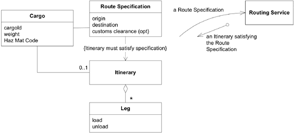
사용자: 그러니까 통관 지점을 바꾸면 전체 경로 계획을 처음부터 다시 세워야 해요.
개발자: 맞습니다. 경로 명세(Route Specification)의 속성 중 하나라도 변경하시면, 기존 여정(Itinerary)을 삭제하고 새 경로 명세를 바탕으로 라우팅 서비스(Routing Service)에 새 여정을 생성해 달라고 요청할 겁니다.
사용자: 이전에는 통관 지점을 전혀 지정하지 않았더라도 그때 역시 똑같이 해야 할 거예요.
개발자: 물론입니다. 경로 명세(Route Spec)에서 무엇이든 변경하실 때마다 여정을 다시 생성하겠습니다. 무언가를 처음으로 입력하는 경우도 포함해서요.
사용자: 당연히 기존 통관 지점이 마침 알맞은 곳이었다면 그렇게 다시 할 필요는 없겠죠.
개발자: 아, 문제없습니다. 그냥 매번 라우팅 서비스가 여정을 다시 생성하게 만드는 편이 더 간단해요.
사용자: 그렇긴 하지만 새 여정(Itinerary)에 맞춰 부수적인 계획들을 전부 다시 세우는 건 우리한테 추가 업무라서요. 변경 때문에 꼭 필요한 경우가 아니면 경로를 다시 잡지 않았으면 해요.
개발자: 아, 그렇다면 경로 명세에 기능을 좀 추가해야겠군요. 이제 명세(Spec)에서 무언가를 변경하실 때마다 기존 여정이 여전히 그 명세(Specification)를 충족하는지 확인하겠습니다. 충족하지 않을 때만 라우팅 서비스가 여정을 다시 생성하도록 하죠.
사용자: 출발지나 도착지에서는 이런 걱정을 안 하셔도 돼요. 그때는 여정이 언제나 바뀔 테니까요.
개발자: 좋습니다. 하지만 저희로서는 매번 비교를 수행하는 편이 더 단순할 것 같네요. 여정은 더 이상 경로 명세를 충족하지 않을 때만 새로 생성될 겁니다.
두 번째 대화는 도메인 전문가의 의도를 훨씬 더 잘 전달한다. 사용자는 두 대화 모두에서 “여정(itinerary)”이라는 단어를 썼지만, 두 번째 대화에서는 두 사람이 정확하고 구체적으로 논의할 수 있는 하나의 객체가 되었다. 그들은 매번 속성과 절차로 풀어서 설명하는 대신 “경로 명세(route specification)”를 명시적으로 거론하며 대화했다.
이 두 대화는 서로 긴밀하게 대칭을 이루도록 의도적으로 구성되었다. 현실에서라면 첫 번째 대화는 애플리케이션 기능에 대한 장황한 설명과 오해로 훨씬 더 길고 산만해졌을 것이다. 두 번째 설계의 도메인 모델 기반 용어 덕분에 두 번째 대화는 훨씬 간결해진다.
소리 내어 모델링하기
말로 하는 대화가 다른 의사소통 수단과 분리되는 것은 특히 큰 손실이다. 우리 인간은 음성 언어를 다루는 데 타고난 재능이 있기 때문이다. 불행히도 사람들은 말할 때 보통 도메인 모델의 언어를 사용하지 않는다.
처음에는 이 말이 와닿지 않을 수도 있고 실제로 예외도 있다. 하지만 다음에 요구사항이나 설계 회의에 참석할 때 귀를 기울여 보라. 기능을 설명할 때 현업의 전문 용어나 이를 일반인 눈높이로 풀어낸 말들이 들릴 것이다. 기술적인 산출물과 구체적인 기능에 관한 이야기도 들릴 것이다. 물론 도메인 모델에서 가져온 용어도 들린다. 현업 용어에서 눈에 띄는 명사들은 대개 객체로 코드화되기 때문에 자연히 언급되기 마련이다. 하지만 현재 도메인 모델의 관계와 상호작용으로 조금이라도 설명될 만한 구절들이 들리는가?
모델을 다듬는 가장 좋은 방법 중 하나는 말로 탐색해 보는 것, 즉 가능한 여러 모델 변형에서 나온 개념 구조를 큰 소리로 시험 삼아 말해 보는 것이다. 거친 모서리는 귀로 듣기만 해도 쉽게 드러난다.
“라우팅 서비스에 출발지, 도착지, 도착 시간을 주면 화물이 거쳐야 할 기착지들을 조회해서, 음… 데이터베이스에 집어넣을 수 있어요.” (모호하고 기술적이다) “출발지, 도착지 등등… 그 모든 게 라우팅 서비스로 들어가면 우리가 필요로 하는 모든 것이 담긴 여정(Itinerary)을 돌려받아요.” (더 완전하지만 장황하다) “라우팅 서비스는 경로 명세(Route Specification)를 충족하는 여정(Itinerary)을 찾는다.” (간결하다)
시각적·공간적 추론을 동원해 다이어그램을 스케치하는 것이 필수적인 만큼이나, 우리의 언어 능력을 모델링 작업에 동원해 단어와 구절을 이리저리 맞춰 보는 것도 필수적이다. 방법론적인 분석과 설계에 동원하는 분석 능력, 그리고 코드에 대한 저 신비로운 ‘감각’ 역시 마찬가지다. 이러한 사고방식들은 서로를 보완하며, 유용한 모델과 설계를 찾아내려면 이 모두가 필요하다. 이 가운데 언어를 가지고 실험하는 일은 가장 흔히 간과된다. (이 책의 3부에서는 이 발견 과정을 깊이 파고들고 여러 대화를 통해 이러한 상호작용을 보여줄 것이다.)
실제로 우리의 뇌는 음성 언어의 복잡성을 다루는 데 어느 정도 특화되어 있는 듯하다(나 같은 비전공자를 위한 좋은 입문서로 스티븐 핑커의 『언어 본능(The Language Instinct)』[Pinker 1994]이 있다). 예를 들어 서로 다른 언어 배경을 가진 사람들이 상거래를 위해 모였을 때 공통 언어가 없으면 피진(pidgin)이라는 언어를 만들어 낸다. 피진은 화자들의 원래 언어만큼 포괄적이지는 않지만 당면한 과업에는 꼭 맞는다. 사람들은 대화를 나누면서 자연스럽게 해석의 차이와 단어의 의미 차이를 발견하고, 그 차이를 자연스럽게 해소한다. 언어에서 거친 부분을 찾아내 매끄럽게 다듬는 것이다.
대학 시절 집중 스페인어 수업을 들은 적이 있다. 교실 안에서는 영어를 단 한 마디도 쓰지 못한다는 규칙이 있었다. 처음에는 답답했다. 무척 부자연스럽게 느껴졌고 상당한 자제력이 필요했다. 하지만 결국 나와 반 친구들은 종이 위 연습 문제로는 결코 도달할 수 없었을 유창함의 경지에 이르렀다.
논의 자리—특히 개발자와 도메인 전문가가 시나리오와 요구사항을 치열하게 다듬는 자리—에서 도메인 모델의 유비쿼터스 언어(Ubiquitous Language)를 사용하다 보면, 우리는 그 언어에 더욱 능숙해지고 서로에게 미묘한 뉘앙스를 가르쳐 주게 된다. 다이어그램이나 문서로는 결코 일어나지 않는 방식으로, 우리가 말하는 언어를 자연스럽게 공유하게 되는 것이다.
소프트웨어 프로젝트에서 유비쿼터스 언어(Ubiquitous Language)를 구현하는 일은 말처럼 쉽지 않으며, 이를 해내려면 우리가 타고난 재능을 총동원해야 한다. 인간의 시각·공간 능력이 그래픽 개요를 통해 정보를 빠르게 전달하고 처리하게 해 주듯이, 문법적이고 의미 있는 언어를 다루는 타고난 재능을 활용해 모델 개발을 이끌 수 있다.
그러므로 유비쿼터스 언어(Ubiquitous Language) 패턴의 보칙으로서 다음과 같이 실천한다.
시스템에 관해 이야기할 때 모델을 가지고 이리저리 실험해 보라. 모델의 요소와 상호작용을 사용해 시나리오를 소리 내어 설명하고, 모델이 허용하는 방식으로 개념들을 결합해 보라. 해야 할 말을 더 쉽게 표현하는 방법을 찾은 다음, 그 새로운 아이디어를 다시 다이어그램과 코드로 내려보내라.
하나의 팀, 하나의 언어
기술 인력들은 종종 현업 전문가를 도메인 모델로부터 ’보호’해야 한다고 느낀다. 그들은 이렇게 말한다.
“그분들한테는 너무 추상적이에요.” “그분들은 객체를 이해하지 못해요.” “요구사항은 그분들의 용어로 수집해야 해요.”
이것들은 팀 내에 두 개의 언어를 두는 데 대해 내가 들어본 이유 중 극히 일부일 뿐이다. 그런 생각은 잊어버려라.
물론 도메인 전문가가 신경 쓸 필요 없는 기술적 설계 컴포넌트도 있겠지만, 모델의 핵심만큼은 그들이 관심을 가져야 마땅하다. 너무 추상적이라고? 그렇다면 그 추상화가 타당하다는 것을 어떻게 아는가? 당신이 그들만큼 도메인을 깊이 이해하고 있는가? 물론 현장의 실무 사용자로부터 구체적인 요구사항을 수집할 때는 좀 더 구체적인 용어의 부분집합이 필요할 수도 있지만, 도메인 전문가라면 자신의 분야에 대해 어느 정도 깊이 있게 사고할 수 있다고 전제한다. 식견 있는 도메인 전문가가 모델을 이해하지 못한다면, 그 모델에 무언가 문제가 있는 것이다.
물론 처음에 사용자들이 아직 모델링되지 않은 시스템의 미래 기능을 논의할 때는 그들이 사용할 모델이 없다. 하지만 개발자들과 함께 이 새로운 아이디어를 구체화하기 시작하는 순간, 공유 모델을 향해 더듬어 나가는 과정이 시작된다. 처음에는 어색하고 불완전하겠지만 점차 다듬어질 것이다. 새로운 언어가 진화함에 따라 도메인 전문가들도 이 언어를 받아들이고 여전히 중요한 옛 문서들을 새 언어에 맞게 고쳐 쓰는 수고를 기꺼이 감수해야 한다.
도메인 전문가가 개발자와의 논의나 전문가들끼리의 논의에서 이 언어를 사용하다 보면, 모델이 자신의 필요에 비해 부족하거나 잘못되었다고 느껴지는 부분을 금세 발견한다. 또한 도메인 전문가는(개발자의 도움을 받아) 모델 기반 언어의 정밀함 덕분에 자신들의 생각 속에 있던 모순이나 모호함이 드러나는 부분도 찾아내게 된다.
개발자와 도메인 전문가는 모델 객체를 사용해 단계별로 시나리오를 따라가 보며 비공식적으로 모델을 시험할 수 있다. 거의 모든 논의가 개발자와 사용자 전문가가 함께 모델을 이리저리 시험해 보며 서로의 이해를 깊게 하고 개념을 다듬어 가는 기회다.
도메인 전문가는 유스케이스를 작성할 때 모델의 언어를 사용할 수 있으며, 인수 테스트(acceptance test)를 명세함으로써 모델과 훨씬 더 직접적으로 작업할 수도 있다.
요구사항을 수집할 때 모델의 언어를 사용한다는 발상에 반론이 제기되기도 한다. 결국 요구사항은 그것을 충족하는 설계와 독립적이어야 하지 않겠는가? 이러한 반론은 모든 언어가 어떤 모델에 기반한다는 사실을 간과한 것이다. 단어의 의미란 미끄러운 것이다. 도메인 모델은 대개 도메인 전문가 자신의 전문 용어에서 출발하지만, 더 날카롭고 좁은 정의를 갖도록 ‘다듬어진’ 형태가 된다. 물론 이러한 정의가 현업에서 통용되는 의미와 어긋난다면 도메인 전문가가 이의를 제기해야 한다. 애자일 프로세스에서는 처음부터 애플리케이션을 적절히 명세할 만큼 지식이 갖춰져 있는 경우가 거의 없기 때문에, 프로젝트가 진행되면서 요구사항도 진화한다. 이러한 진화의 일부로서, 다듬어진 유비쿼터스 언어(Ubiquitous Language)로 요구사항을 재구성하는 과정이 포함되어야 한다.
여러 언어가 공존해야 하는 상황도 종종 필요하지만, 언어의 분리가 도메인 전문가와 개발자 사이에서 벌어져서는 결코 안 된다. (같은 프로젝트 내에서 여러 모델이 공존하는 문제는 12장 「모델 무결성 유지(Maintaining Model Integrity)」에서 다룬다.)
물론 개발자들은 도메인 전문가가 이해하지 못할 기술 용어를 사용한다. 개발자에게는 시스템의 기술적인 측면을 논의하는 데 필요한 방대한 전문 용어가 있다. 거의 틀림없이 사용자들 역시 애플리케이션의 좁은 범위와 개발자의 이해를 훨씬 넘어서는 자기만의 전문 용어를 가지고 있을 것이다. 하지만 이것들은 언어의 확장일 뿐이다. 이러한 방언(dialect)들이 서로 다른 모델을 반영하는 동일한 도메인에 대한 별개의 어휘집을 담고 있어서는 안 된다.
그림 2.3. 유비쿼터스 언어(Ubiquitous Language)는 전문 용어들의 교집합에서 길러진다.
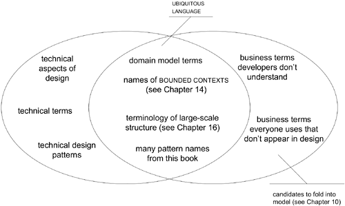
유비쿼터스 언어(Ubiquitous Language)를 통해 개발자 간의 대화, 도메인 전문가 간의 논의, 그리고 코드 자체의 표현이 모두 공유된 도메인 모델에서 비롯된 동일한 언어에 기반하게 된다.
문서와 다이어그램
소프트웨어 설계를 논의하는 회의에 들어갈 때마다 나는 화이트보드나 스케치패드에 그림을 그리지 않고는 거의 일을 진행하지 못한다. 내가 그리는 그림의 상당수는 UML 다이어그램, 주로 클래스 다이어그램이나 객체 상호작용(object-interaction) 다이어그램이다.
타고나길 시각적인 성향인 사람들이 있으며, 다이어그램은 사람들이 특정 종류의 정보를 파악하는 데 도움을 준다. UML 다이어그램은 객체 간의 관계를 전달하는 데 꽤 뛰어나고 상호작용을 보여주는 데도 그럭저럭 쓸 만하다. 하지만 그 객체들의 개념적 정의까지 전달하지는 못한다. 회의에서 나는 다이어그램을 그리면서 말로 그러한 의미를 구체화하거나, 다른 참석자들과의 대화를 통해 의미가 드러나도록 하곤 했다.
단순하고 비공식적인 UML 다이어그램은 논의의 중심을 잡아 줄 수 있다. 당면한 문제의 핵심이 되는 객체 서너 개에서 다섯 개 정도를 다이어그램으로 그려 놓으면 모두가 초점을 유지할 수 있다. 모두가 객체 간의 관계와, 특히 객체들의 이름에 대해 공통된 시각을 공유하게 된다. 이 보조 도구 덕분에 말로 나누는 논의도 훨씬 효과적이 된다. 사람들이 다양한 사고 실험을 해 보면서 다이어그램을 수정할 수 있고, 스케치는 말의 유연성을 어느 정도 띠게 되어 진정한 논의의 일부가 된다. 결국 UML은 통합 모델링 언어(Unified Modeling Language)를 뜻하지 않는가.
문제는 사람들이 UML을 통해 모델이나 설계 전체를 전달해야 한다는 강박을 느낄 때 생긴다. 많은 객체 모델 다이어그램이 지나치게 완전하면서도 동시에 너무 많은 것을 빠뜨린다. 사람들이 코드로 작성할 모든 객체를 모델링 도구에 집어넣어야 한다고 느끼기 때문에 지나치게 완전해진다. 그토록 세세한 정보가 가득하다 보니 나무만 보고 숲을 보지 못하게 된다.
하지만 그토록 세세한 내용을 다 넣어도 속성과 관계는 객체 모델 이야기의 절반에 불과하다. 그 객체들의 동작과 제약 조건은 그리 쉽게 그림으로 표현되지 않는다. 객체 상호작용 다이어그램이 설계의 까다로운 핵심 지점 몇 군데를 보여줄 수는 있지만, 대다수 상호작용을 그런 식으로 보여줄 수는 없다. 다이어그램을 그리는 쪽이나 읽는 쪽이나 품이 너무 많이 들기 때문이다. 게다가 상호작용 다이어그램조차 여전히 모델 이면의 목적을 암시할 뿐이다. 제약 조건과 단언(assertion)을 포함하기 위해 UML은 다이어그램 안에 끼워 넣은 작은 괄호 속 텍스트에 의존한다.
객체의 행위적 책임(behavioral responsibility)은 연산 이름으로 암시할 수 있고 객체 상호작용(또는 시퀀스) 다이어그램으로 간접적으로 시연할 수는 있지만, 명시적으로 진술할 수는 없다. 따라서 이 역할은 보충 텍스트나 대화가 떠안게 된다. 다시 말해 UML 다이어그램은 모델의 가장 중요한 두 가지 측면, 즉 모델이 나타내는 개념의 의미와 객체가 수행하도록 의도된 바를 전달하지 못한다. 그렇다고 걱정할 필요는 없다. 영어(또는 스페인어든 어떤 언어든)를 신중하게 사용하면 이 역할을 꽤 잘 메울 수 있기 때문이다.
그렇다고 UML이 만족스러운 프로그래밍 언어가 되는 것도 아니다. 모델링 도구의 코드 생성 기능을 쓰려는 시도는 내가 본 것마다 역효과를 냈다. UML의 기능에 얽매이다 보면 박스-선 다이어그램에 들어맞지 않는 규칙이라는 이유로 모델에서 가장 결정적인 부분을 빼놓아야 하는 경우가 잦다. 그리고 물론 코드 생성기는 그 텍스트 주석들을 활용할 수 없다. UML과 유사한 다이어그램 언어로 실행 가능한 프로그램을 작성하게 해 주는 기술을 쓰더라도, 그 순간 UML 다이어그램은 프로그램 자체를 보는 또 다른 방식에 불과한 것으로 전락하고 ’모델’이라는 본래의 의미는 사라진다. UML을 구현 언어로 사용한다면, 복잡하지 않게 정돈된 모델을 전달할 다른 수단이 여전히 필요할 것이다.
다이어그램은 소통과 설명의 수단이며 브레인스토밍을 촉진한다. 다이어그램은 최소한으로 그릴 때 이러한 목적을 가장 잘 수행한다. 객체 모델 전체를 망라한 다이어그램은 소통이나 설명에 실패한다. 지나치게 세세한 정보로 독자를 압도하며 의미가 결여되어 있기 때문이다. 이는 우리를 전부를 아우르는 객체 모델 다이어그램이나, 심지어 전부를 아우르는 UML 데이터베이스 저장소로부터 멀어지게 한다. 대신 설계를 이해하는 데 필수적인, 객체 모델의 개념적으로 중요한 부분을 단순화한 다이어그램으로 이끈다. 이 책에 실린 다이어그램들은 내가 프로젝트에서 사용하는 전형적인 형태이다. 단순화하고, 설명하며, 요점을 명확히 전달할 수 있다면 비표준 표기법까지도 약간 섞어 쓴다. 설계상의 제약 조건을 보여주긴 하지만 모든 세부 사항을 담은 설계 명세서는 아니다. 그것들은 아이디어의 뼈대를 나타낸다.
설계에 관한 핵심적인 세부 사항은 코드에 담긴다. 잘 작성된 구현체는 투명해서 그 바탕이 되는 모델을 드러내야 한다. (그렇게 되도록 만드는 것이 다음 장과 이 책 나머지 대부분의 주제다.) 보충 다이어그램과 문서는 사람들의 시선을 중심 요점으로 이끌 수 있다. 자연어 논의는 의미의 미묘한 뉘앙스를 채워 넣을 수 있다. 이 때문에 나는 전형적인 UML 다이어그램이 다루는 방식을 거꾸로 뒤집는 편을 선호한다. 텍스트 주석이 달린 다이어그램 대신, 선별되고 단순화된 다이어그램으로 삽화를 넣은 텍스트 문서를 작성한다.
모델은 다이어그램이 아님을 항상 명심하라. 다이어그램의 목적은 모델을 소통하고 설명하는 데 도움을 주는 것이다. 코드는 설계 세부 사항의 저장소 역할을 할 수 있다. 잘 작성된 Java 코드는 그 나름의 방식으로 UML만큼이나 표현력이 풍부하다. 모델이나 설계를 완전히 나타내려는 강박에 가려지지 않는다면, 신중하게 선별하고 구성한 다이어그램은 주의를 집중시키고 탐색을 돕는 역할을 할 수 있다.
서면 설계 문서
말로 하는 소통은 코드의 엄밀함과 세부 사항에 의미를 보태 준다. 하지만 모두가 모델에 연결되도록 하는 데 대화가 결정적인 역할을 하긴 해도, 어느 정도 규모가 있는 그룹이라면 안정성과 공유 가능성을 갖춘 서면 문서가 필요할 것이다. 그러나 팀이 좋은 소프트웨어를 만드는 데 실제로 도움이 되는 서면 문서를 작성하기란 쉽지 않다.
문서가 영구적인 형태를 띠는 순간 프로젝트의 흐름과 연결 고리를 잃어버리는 경우가 많다. 코드의 진화나 프로젝트 언어의 진화에 뒤처지게 되는 것이다.
다양한 접근 방식이 효과를 발휘할 수 있다. 특정 요구를 다루는 몇 가지 구체적인 문서는 이 책의 뒷부분인 4부에서 제안하겠지만, 프로젝트가 어떤 문서 세트를 사용해야 한다고 규정할 생각은 없다. 대신 문서를 평가하기 위한 두 가지 일반 지침을 제시하고자 한다.
문서는 코드와 대화를 보완해야 한다
각 애자일 프로세스는 문서에 대해 저마다의 철학을 갖고 있다. 익스트림 프로그래밍(Extreme Programming)은 추가적인 설계 문서를 전혀 쓰지 않고 코드 스스로 말하게 하라고 주장한다. 실행되는 코드는 다른 어떤 문서처럼 거짓말을 하지 않는다. 실행 코드의 동작은 모호하지 않다.
익스트림 프로그래밍은 프로그램의 능동적인 요소들과 실행 가능한 테스트에만 오로지 집중한다. 코드에 추가한 주석조차 프로그램 동작에 영향을 주지 않으므로, 살아 움직이는 코드 및 이를 이끄는 모델과 언제나 어긋나기 마련이다. 외부 문서와 다이어그램 역시 프로그램 동작에 영향을 주지 않으므로 어긋나게 된다. 반면 말로 하는 의사소통과 화이트보드 위의 일시적인 다이어그램은 오래 남아 혼란을 일으키지 않는다. 이처럼 의사소통 매체로서 코드에 의존하면 개발자들이 코드를 깔끔하고 투명하게 유지하도록 동기를 부여받는다.
하지만 설계 문서로서의 코드에도 한계는 있다. 세부 사항으로 독자를 압도할 수 있다. 동작이 모호하지 않다고 해서 자명한 것은 아니다. 그리고 동작 이면의 의미를 전달하기는 어려울 수 있다. 다시 말해 코드만으로 문서화를 대체하는 것은 포괄적인 UML 다이어그램을 사용할 때와 똑같은 근본적인 문제를 일부 공유한다. 물론 팀 내에서의 활발한 구두 의사소통이 코드 주변의 맥락과 지침을 제공하긴 하지만, 그것은 일시적이고 국지적이다. 게다가 모델을 이해해야 하는 사람이 개발자만은 아니다.
문서는 코드가 이미 잘하고 있는 일을 하려 들어서는 안 된다. 코드는 이미 세부 사항을 제공한다. 코드는 프로그램 동작에 대한 정확한 명세이다.
다른 문서들은 의미를 밝히고, 대규모 구조에 대한 통찰을 제공하며, 핵심 요소에 주의를 집중시켜야 한다. 또한 프로그래밍 언어가 개념의 직관적인 구현을 지원하지 않을 때 문서가 설계 의도를 명확히 밝혀 줄 수 있다. 서면 문서는 코드와 대화를 보완해야 한다.
문서는 제 역할을 하며 최신 상태를 유지해야 한다
내가 모델을 글로 문서화할 때는 신중하게 선별한 모델의 작은 부분집합을 다이어그램으로 그리고 그 주위를 텍스트로 둘러싼다. 클래스와 그 책임을 말로 정의하고, 오직 자연어만이 줄 수 있는 의미의 맥락 속에 배치한다. 한편 다이어그램은 개념을 정형화하고 객체 모델로 추려내는 과정에서 내린 몇 가지 선택을 보여준다. 이러한 다이어그램은 다소 가벼워도 된다. 심지어 손으로 그려도 좋다. 손으로 그린 다이어그램은 수고를 덜어줄 뿐만 아니라 가볍고 임시적이라는 느낌을 준다는 장점이 있다. 이는 모델에 대한 우리의 아이디어가 본래 그렇다는 점을 전달해 주기에 좋은 요소들이다.
설계 문서의 가장 큰 가치는 모델의 개념을 설명하고, 코드의 세부 사항을 탐색하는 데 도움을 주며, 어쩌면 모델이 의도하는 사용 스타일에 대한 통찰을 제공하는 데 있다. 팀의 철학에 따라 전체 설계 문서는 벽에 붙여 놓은 스케치 묶음처럼 단순할 수도 있고, 상당히 방대할 수도 있다.
문서는 프로젝트 활동에 관여해야 한다. 이를 판단하는 가장 쉬운 방법은 문서가 유비쿼터스 언어(Ubiquitous Language)와 어떻게 상호작용하는지 관찰하는 것이다. 문서가 (지금) 프로젝트에서 사람들이 쓰는 언어로 쓰여 있는가? 코드에 녹아 있는 언어로 쓰여 있는가?
유비쿼터스 언어(Ubiquitous Language)와 그것이 어떻게 변해 가는지에 귀를 기울여라. 설계 문서에서 설명한 용어들이 대화와 코드에 나타나기 시작하지 않는다면, 그 문서는 제 역할을 다하지 못하고 있는 것이다. 어쩌면 문서가 너무 방대하거나 복잡할 수도 있다. 어쩌면 충분히 중요한 주제에 초점을 맞추지 않았을 수도 있다. 사람들이 그 문서를 읽지 않거나 설득력을 느끼지 못하는 것이다. 문서가 유비쿼터스 언어(Ubiquitous Language)에 아무런 영향을 미치지 못한다면 무언가 잘못된 것이다.
반대로, 유비쿼터스 언어(Ubiquitous Language)가 자연스럽게 변해 가는데 문서는 뒤처지는 소리가 들릴 수도 있다. 명백히 그 문서는 사람들에게 관련성이 있어 보이지 않거나 갱신할 만큼 중요해 보이지 않는 것이다. 역사 기록으로 보관해 두는 편이 안전할 텐데, 현행 문서로 남겨 두면 혼란을 일으키고 프로젝트에 해를 끼칠 수 있다. 그리고 문서가 중요한 역할을 하지 못하고 있다면, 순전히 의지와 규율만으로 문서를 최신 상태로 유지하는 것은 노력을 낭비하는 일이다.
유비쿼터스 언어(Ubiquitous Language) 덕분에 요구사항 명세서 같은 다른 문서들도 더 간결하고 덜 모호하게 작성할 수 있다. 도메인 모델이 비즈니스의 가장 핵심적인 지식을 반영하게 되면, 애플리케이션 요구사항은 그 모델 내에서의 시나리오가 되며, 유비쿼터스 언어(Ubiquitous Language)를 사용해 그러한 시나리오를 모델 주도 설계(Model-Driven Design, 3장 참조)와 직접 연결되는 용어로 기술할 수 있다. 그 결과 명세서 뒤에 깔린 비즈니스 지식을 일일이 전달할 필요가 없어지므로 명세서를 훨씬 단순하게 작성할 수 있다.
문서를 최소한으로 유지하고 코드와 대화를 보완하는 데 초점을 맞춤으로써, 문서가 프로젝트와 계속 연결되도록 할 수 있다. 살아 움직이며 프로젝트 활동에 녹아드는 문서를 선택하는 나침반으로 유비쿼터스 언어(Ubiquitous Language)와 그 진화를 삼으라.
실행 가능한 토대(Executable Bedrock)
이제 실행 가능한 코드와 그 테스트에 거의 전적으로 의존하는 XP 커뮤니티와 일부 다른 이들의 선택을 살펴보자. 이 책의 상당 부분은 모델 주도 설계(Model-Driven Design, 3장 참조)를 통해 코드가 의미를 전달하게 만드는 방법을 다룬다. 잘 작성된 코드는 매우 뛰어난 전달력을 지닐 수 있지만, 코드가 전달하는 메시지가 정확하리라는 보장은 없다. 물론 특정 코드 영역이 일으키는 동작의 실체야 피할 수 없는 사실이다. 하지만 메서드 이름은 메서드 내부 구현에 비해 모호하거나 오해를 불러일으키거나 구식일 수 있다. 테스트의 단언문(assertion)은 엄밀하지만, 변수 이름과 코드 구성이 들려주는 이야기는 그렇지 않다. 좋은 프로그래밍 스타일은 이 연결을 가능한 한 직접적으로 유지하지만, 그것은 여전히 자기 규율의 문제다. 옳은 일을 할 뿐만 아니라 옳은 말을 하는 코드를 작성하려면 까다로울 정도의 꼼꼼함이 필요하다.
이러한 불일치를 제거하는 것은 선언적 설계(declarative design, 10장 참조) 같은 접근 방식이 내세우는 주요 강점이다. 선언적 설계에서는 프로그램 요소의 목적을 기술한 진술이 프로그램 내에서의 실제 동작을 결정한다. UML로부터 프로그램을 생성하려는 움직임도 부분적으로는 여기에서 동기를 얻었지만, 지금까지는 대체로 잘 풀리지 않았다.
그럼에도 코드조차 오해를 불러일으킬 수 있긴 하지만, 다른 문서들보다는 현실에 훨씬 더 밀착되어 있다. 현재의 표준 기술을 사용해 코드의 동작, 의도, 메시지를 일치시키려면 규율과 설계에 대한 특정한 사고방식이 필요하다(3부에서 길게 다룬다). 효과적으로 소통하려면 코드는 요구사항을 작성할 때 사용하는 것과 같은 언어, 즉 개발자들이 서로 그리고 도메인 전문가와 대화할 때 사용하는 바로 그 언어에 기반해야 한다.
설명용 모델(Explanatory Models)
이 책의 핵심 취지는 하나의 모델이 구현, 설계, 팀 의사소통의 바탕이 되어야 한다는 것이다. 이러한 각각의 목적을 위해 별도의 모델을 두는 것은 위험을 초래한다.
모델은 도메인에 대해 가르치는 교육 보조 자료로도 가치가 있다. 설계를 이끄는 모델은 도메인을 바라보는 하나의 관점이지만, 도메인에 관한 일반적인 지식을 전달하기 위해 오직 교육용 도구로만 쓰이는 다른 관점을 갖는 것도 학습에 도움이 될 수 있다. 이 목적을 위해서는 소프트웨어 설계와 무관한 다른 종류의 모델을 전달하는 그림이나 글을 사용할 수 있다.
별도의 모델이 필요한 특별한 이유 중 하나는 범위(scope)다. 소프트웨어 개발 과정을 이끄는 기술적 모델은 기능을 수행하는 데 필요한 최소한으로 엄격하게 축소되어야 한다. 반면 설명용 모델(explanatory model)은 더 좁게 범위가 정해진 모델을 명확하게 이해할 수 있도록 맥락을 제공하는 도메인 측면을 포함할 수 있다.
설명용 모델은 특정 주제에 맞춘 훨씬 더 소통하기 좋은 스타일을 자유롭게 만들어 낼 수 있게 해 준다. 해당 분야의 도메인 전문가들이 사용하는 시각적 은유는 종종 더 명확한 설명을 제시해 개발자를 교육하고 전문가들 간의 조율을 돕는다. 설명용 모델은 단순히 다른 방식으로 도메인을 제시하기도 하며, 이처럼 다양하고 다각적인 설명은 사람들의 학습을 돕는다.
설명용 모델이 객체 모델일 필요는 없으며, 대체로 객체 모델이 아닌 편이 가장 좋다. 소프트웨어 설계와 대응한다는 잘못된 인상을 피하려면 이러한 모델에서는 UML을 쓰지 않는 편이 실제로 도움이 된다. 설명용 모델과 설계를 이끄는 모델이 종종 대응하기는 하지만, 그 유사성이 정확히 일치하는 경우는 드물다. 혼동을 피하려면 모두가 이 구분을 의식하고 있어야 한다.
예제
해운 작업과 경로
해운 회사의 화물을 추적하는 애플리케이션을 생각해 보자. 이 모델에는 항만 작업(port operation)과 선박 항해(vessel voyage)가 어떻게 화물의 운영 계획(즉, ‘경로(route)’)으로 조립되는지에 대한 상세한 관점이 담겨 있다. 하지만 문외한에게는 클래스 다이어그램이 별로 명쾌하지 않을 수 있다.
그림 2.4. 해운 경로를 위한 클래스 다이어그램
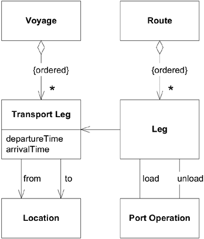
이런 경우 설명용 모델이 팀원들에게 클래스 다이어그램이 실제로 무엇을 의미하는지 이해하는 데 도움을 줄 수 있다. 동일한 개념을 바라보는 또 다른 방식은 다음과 같다.
그림 2.5의 각 선은 항만 작업(화물의 선적 또는 하역), 지상의 보관소에 적치된 화물, 또는 항해 중인 선박에 실린 화물을 나타낸다. 이는 클래스 다이어그램과 세부적으로 일대일 대응하지는 않지만, 도메인의 핵심 사항을 보강해 준다.
그림 2.5. 해운 경로를 위한 설명 모델
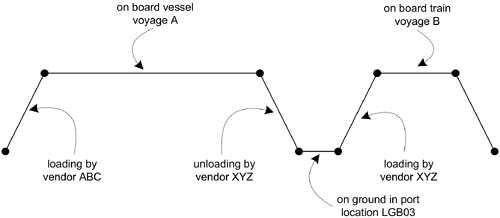
이러한 종류의 다이어그램은 자신이 표현하는 모델에 대한 자연어 설명과 함께 제공될 때, 개발자와 도메인 전문가 모두가 훨씬 엄밀한 소프트웨어 모델 다이어그램을 이해하는 데 도움을 줄 수 있다. 두 가지를 함께 보면 어느 한쪽의 관점만 볼 때보다 훨씬 이해하기 쉽다.
3장. 모델과 구현의 결합
문을 열고 들어섰을 때 가장 먼저 내 눈에 띈 것은 커다란 벽면을 가득 메운 대형 종이들에 인쇄된 거대한 전체 클래스 다이어그램이었다. 그날은 뛰어난 사람들이 몇 달에 걸쳐 도메인을 신중하게 조사하고 상세한 모델을 개발해 온 프로젝트에 내가 처음 합류한 날이었다. 모델 속의 전형적인 객체는 다른 서너 개의 객체와 복잡한 연관 관계를 맺고 있었고, 이 연관 관계의 그물망에는 자연스러운 경계가 거의 없었다. 이런 측면에서 분석가들은 도메인의 본질에 충실했다.
벽면 크기만 한 다이어그램에 압도되기는 했지만, 그 모델은 분명 상당한 지식을 포착하고 있었다. 적당히 시간을 들여 살펴본 후 나는 꽤 많은 것을 배웠다(비록 그 학습 과정이 마치 웹을 무작정 서핑하는 것처럼 방향을 잡기 어렵기는 했지만 말이다). 하지만 더 큰 문제는, 그 모델을 아무리 공부해도 애플리케이션의 코드와 설계에 대해서는 아무런 통찰도 얻을 수 없다는 사실이었다.
개발자들이 애플리케이션 구현을 시작했을 때, 그들은 인간 분석가는 따라갈 수 있을지언정 그 뒤얽힌 연관 관계가 트랜잭션 무결성을 유지하며 저장하고 조회하고 조작할 수 있는 단위로 변환되지 않는다는 사실을 곧바로 깨달았다. 게다가 이 프로젝트는 객체 데이터베이스를 사용하고 있었기 때문에, 개발자들은 객체를 관계형 테이블로 매핑하는 어려움조차 겪을 필요가 없었다. 그럼에도 근본적인 수준에서 그 모델은 구현을 위한 지침을 제공하지 못했다.
기술 분석가들과 비즈니스 전문가들 사이의 광범위한 협업으로 나온 그 모델은 “올바른” 것이었기 때문에, 개발자들은 개념에 기반한 객체가 자신들의 설계의 토대가 될 수 없다는 결론에 도달했다. 그래서 그들은 임기응변식 설계를 진행했다. 그들의 설계는 데이터 저장을 위해 몇몇 동일한 클래스 이름과 속성을 사용하긴 했지만, 기존의 모델이나 그 어떤 모델에도 기반을 두지 않았다.
프로젝트에 도메인 모델은 있었지만, 실행되는 소프트웨어의 개발에 직접적인 도움을 주지 못하는 종이 위의 모델이 무슨 소용이 있겠는가?
몇 년 후, 나는 완전히 다른 프로세스에서 똑같은 최종 결과가 나오는 것을 보았다. 그 프로젝트는 기존의 C++ 애플리케이션을 Java로 구현된 새로운 설계로 대체하는 것이었다. 이전 애플리케이션은 객체 모델링을 전혀 고려하지 않고 땜질식으로 엮어 만든 것이었다. 이전 애플리케이션의 설계라는 게 있었다면, 그것은 눈에 띄는 일반화나 추상화 없이 기존 코드 위에 기능을 하나씩 얹어 가면서 누적된 것이었다.
기묘하게도 두 프로세스의 최종 결과물은 매우 비슷했다! 둘 다 기능은 동작했지만 비대해졌고, 이해하기가 대단히 어려웠으며, 결국 유지보수가 불가능해졌다. 구현에 나름의 직접적인 면이 있는 곳도 있었지만, 코드를 읽어서 시스템의 목적에 대한 통찰을 얻기는 어려웠다. 두 프로세스 모두 개발 환경에서 사용할 수 있는 객체 패러다임을 그저 그럴듯한 데이터 구조 이상으로 활용하지 못했다.
소프트웨어 개발 프로젝트의 맥락에 한정하더라도 모델은 다양한 종류가 있고 다양한 역할을 수행한다. 도메인 주도 설계(Domain-Driven Design)는 초기 분석만 돕는 것이 아니라 설계의 바로 그 토대가 되는 모델을 요구한다. 이러한 접근 방식은 코드에 몇 가지 중요한 함의를 가진다. 덜 자명한 사실은, 도메인 주도 설계가 모델링 자체에도 다른 접근 방식을 요구한다는 점이다. . . .
모델 주도 설계(Model-Driven Design)
별의 위치를 계산하는 데 쓰이는 아스트롤라베(astrolabe)는 하늘의 모델을 기계적으로 구현한 것이다.
코드를 기저에 있는 모델과 긴밀하게 연결하면 코드에 의미가 부여되고 모델도 유의미해진다.
중세의 천체 계산기 고대 그리스 천문학자들이 고안한 아스트롤라베는 중세 이슬람 과학자들에 의해 완성되었다. 회전하는 그물망(레테, rete라고 불린다)은 천구 위의 항성들의 위치를 나타냈다. 국지적인 구면 좌표계가 새겨진 교체 가능한 판(plate)은 서로 다른 위도에서 바라본 하늘을 나타냈다. 판 위에서 레테를 회전시키면 연중 어느 날, 어느 시각의 천체 위치든 계산할 수 있었다. 반대로 별이나 태양의 위치가 주어지면 시각을 계산할 수 있었다. 아스트롤라베는 하늘에 대한 객체 지향 모델의 기계적 구현이었다.
도메인 모델이 전혀 없이 그저 요구되는 기능을 하나씩 구현하는 식으로 코드를 작성하는 프로젝트는, 앞의 두 장에서 논의한 지식 탐구(knowledge crunching)와 의사소통의 이점을 거의 얻지 못한다. 복잡한 도메인은 그런 프로젝트를 집어삼켜 버릴 것이다.
반면, 많은 복잡한 프로젝트들이 모종의 도메인 모델을 시도하기는 하지만 모델과 코드 사이의 긴밀한 연결을 유지하지 못한다. 초반에는 탐색적 도구로서 유용할 수도 있었던 모델이 점점 무관해지고 심지어 오해를 불러일으키게 된다. 설계와 모델이 서로 다르기 때문에, 모델에 쏟은 온갖 정성도 설계가 올바르다는 보장을 거의 해 주지 못한다.
이 연결은 여러 방식으로 끊어질 수 있지만, 이러한 분리는 종종 의식적인 선택의 결과다. 많은 설계 방법론은 설계와는 뚜렷이 구분되며 대개 다른 사람들이 작성하는 분석 모델(analysis model)을 옹호한다. 이를 분석 모델이라 부르는 이유는 소프트웨어 시스템에서 수행할 역할은 전혀 고려하지 않은 채 비즈니스 도메인을 분석해 그 개념들을 정리한 산출물이기 때문이다. 분석 모델은 오로지 이해를 위한 도구로 의도된 것이며, 구현상의 관심사를 섞으면 논점이 흐려진다고 여긴다. 나중에야 분석 모델과 느슨하게만 대응할지도 모르는 설계가 만들어진다. 분석 모델은 설계 문제를 염두에 두고 만든 것이 아니므로, 설계의 필요에 전혀 실용적이지 않을 가능성이 크다.
그러한 분석 과정에서 어느 정도 지식 탐구가 일어나긴 하지만, 코딩이 시작되고 개발자들이 설계를 위해 새로운 추상화를 고안해야만 할 때 그 지식의 대부분은 유실된다. 그러면 분석가들이 얻어 모델에 담아 둔 통찰이 유지되거나 재발견되리라는 보장이 없다. 이 시점에 이르면, 설계와 느슨하게 연결된 모델 사이의 매핑을 유지하는 데 드는 비용이 효과를 정당화하지 못하게 된다.
순수한 분석 모델은 도메인을 이해한다는 본래의 일차적 목표조차 달성하지 못하는데, 결정적인 발견은 항상 설계와 구현을 진행하는 동안 나타나기 때문이다. 매우 구체적이고 예측하지 못했던 문제들이 늘 발생한다. 사전에 만든 모델은 일부 무관한 주제를 깊이 파고드는 반면 정작 중요한 주제는 간과하기 일쑤다. 또 다른 주제들은 애플리케이션에 유용하지 않은 방식으로 표현되기도 한다. 그 결과 순수 분석 모델은 코딩이 시작되자마자 버려지고, 대부분의 과정을 처음부터 다시 밟아야 한다. 하지만 두 번째 시도에서 개발자들이 분석을 별개의 프로세스로 인식한다면 모델링은 덜 체계적인 방식으로 이루어진다. 관리자들이 분석을 별개의 프로세스로 인식한다면 개발팀은 도메인 전문가에게 충분히 접근할 기회를 얻지 못할 수도 있다.
원인이 무엇이든 간에, 설계의 토대에 개념이 결여된 소프트웨어는 기껏해야 자신의 동작을 설명하지 못한 채 유용한 일만 처리하는 기계 장치에 불과하다.
설계나 그 중심적인 부분이 도메인 모델에 매핑되지 않는다면, 그 모델은 가치가 거의 없으며 소프트웨어의 정확성도 의심스러워진다. 동시에 모델과 설계 기능 간의 복잡한 매핑은 이해하기 어렵고, 설계가 변경됨에 따라 실제로 유지하기도 불가능하다. 분석과 설계 사이에 치명적인 단절이 생겨나, 각 활동에서 얻은 통찰이 서로에게 흘러 들어가지 못하게 된다.
분석은 이해하기 쉽고 표현력 있는 방식으로 도메인의 근본 개념을 포착해야 한다. 설계는 프로젝트에서 사용하는 프로그래밍 도구로 구축할 수 있고, 목표 배포 환경에서 효율적으로 동작하며, 애플리케이션에 제기된 문제를 올바르게 해결할 수 있는 일련의 컴포넌트를 명세해야 한다.
모델 주도 설계(MODEL-DRIVEN DESIGN)는 분석 모델과 설계의 이분법을 버리고 두 목적을 모두 충족하는 단일 모델을 찾는다. 순수하게 기술적인 문제를 제외하면, 설계의 각 객체는 모델에 기술된 개념적 역할을 수행한다. 이는 선택된 모델이 서로 상당히 다른 두 가지 목표를 모두 완수해야 하므로 우리가 모델에 훨씬 더 까다로운 기준을 요구하게 만든다.
도메인을 추상화하는 방법은 언제나 여러 가지이며, 애플리케이션 문제를 해결할 수 있는 설계 역시 언제나 여러 가지다. 바로 이 점 때문에 모델과 설계를 엮는 것이 현실적으로 가능하다. 이러한 결합은 기술적 고려사항 때문에 치명적으로 타협하여 약화된 분석을 대가로 치러서는 안 된다. 그렇다고 도메인 아이디어는 반영하지만 소프트웨어 설계 원칙을 외면한 조잡한 설계를 받아들일 수도 없다. 이 접근 방식은 분석과 설계 모두에서 잘 작동하는 모델을 요구한다. 모델이 구현에 실용적이지 않아 보이면 새로운 모델을 찾아야 한다. 모델이 도메인의 핵심 개념을 충실히 표현하지 못해도 새로운 모델을 찾아야 한다. 그러면 모델링과 설계 프로세스는 하나의 반복적인 순환 고리가 된다.
도메인 모델을 설계와 밀접하게 연관 지어야 한다는 필수 요건은 가능한 모델들의 세계에서 더 유용한 모델을 가려내는 기준을 하나 더 추가한다. 이는 치열한 사고를 요구하며 대개 여러 차례의 반복과 많은 리팩토링을 수반하지만, 모델을 유의미하게 만든다.
그러므로:
소프트웨어 시스템의 일부를 도메인 모델이 매우 문자 그대로 반영되도록 설계하여 그 매핑이 명백히 드러나게 하라. 모델이 도메인에 대한 더 깊은 통찰을 반영하도록 추구하는 동시에, 모델을 다시 검토하고 수정하여 소프트웨어로 더욱 자연스럽게 구현될 수 있게 하라. 견고한 유비쿼터스 언어(UBIQUITOUS LANGUAGE)를 지원하는 것에 더해, 분석과 설계라는 두 목적을 모두 잘 충족하는 단일 모델을 요구하라.
설계에 사용되는 용어와 기본적인 책임 할당을 모델에서 도출하라. 코드는 모델의 표현이 되므로 코드의 변경은 모델의 변경이 될 수 있다. 그 영향은 그에 맞추어 프로젝트의 나머지 활동 전반으로 파급되어야 한다.
구현을 모델에 엄격히 묶어 두려면 대개 객체 지향 프로그래밍처럼 모델링 패러다임을 지원하는 소프트웨어 개발 도구와 언어가 필요하다.
때로는 서로 다른 서브시스템에 대해 서로 다른 모델이 존재할 수도 있지만(14장 참조), 시스템의 특정 부분에 대해서는 코드에서 요구사항 분석에 이르기까지 개발 노력의 모든 측면에 걸쳐 오직 하나의 모델만 적용되어야 한다.
단일 모델은 오류의 가능성을 줄여 준다. 이제 설계가 신중하게 숙고된 모델에서 직접 도출된 결과물이기 때문이다. 설계와 심지어 코드 자체까지도 모델이 가진 의사소통 능력을 갖추게 된다.
문제를 포착하고 실용적인 설계를 제공하는 단일 모델을 개발하는 일은 말처럼 쉽지 않다. 아무 모델이나 가져다가 쓸 만한 설계로 바꿀 수는 없다. 실용적인 구현이 가능하도록 모델을 세심하게 다듬어야 한다. 코드가 모델을 효과적으로 표현할 수 있게 해 주는 설계 및 구현 기법을 활용해야 한다(2부 참조). 지식 탐구자들은 모델의 선택지들을 탐색하고 이를 실용적인 소프트웨어 요소로 정제한다. 개발은 모델, 설계, 코드를 하나의 활동으로서 함께 정제해 나가는 반복적인 과정이 된다(3부 참조).
모델링 패러다임과 도구 지원
모델 주도 설계(MODEL-DRIVEN DESIGN)가 성과를 거두려면, 모델과 설계의 대응 관계가 인간의 오류 범위 내에서 문자 그대로 정확해야 한다. 모델과 설계의 이처럼 긴밀한 대응을 가능하게 하려면, 모델의 개념에 직접 대응하는 대상을 만들 수 있도록 해 주는 소프트웨어 도구가 지원하는 모델링 패러다임 안에서 작업하는 것이 거의 필수적이다.
그림 3.1.

객체 지향 프로그래밍이 강력한 이유는 모델링 패러다임에 기반을 두고 있으며 모델 구성 요소의 구현을 제공하기 때문이다. 프로그래머의 관점에서 객체는 메모리에 실제로 존재하며, 다른 객체와 연관 관계를 맺고, 클래스로 조직화되며, 메시지 전달을 통해 호출할 수 있는 행동을 제공한다. 많은 개발자들이 프로그램 코드를 정리하기 위해 객체의 기술적 기능만 적용해도 이점을 얻지만, 객체 설계의 진정한 돌파구는 코드가 모델의 개념을 표현할 때 일어난다. Java와 그 밖의 여러 도구는 개념적 객체 모델에 직접 대응하는 객체와 관계의 생성을 허용한다.
객체 지향 언어만큼 대중적으로 쓰이지는 못했지만, Prolog 언어는 모델 주도 설계(MODEL-DRIVEN DESIGN)에 자연스럽게 들어맞는다. 이 경우 패러다임은 논리(logic)이며, 모델은 일련의 논리 규칙과 그 규칙이 다루는 사실들이다.
C와 같은 언어에서는 순수하게 절차적인 언어에 대응하는 모델링 패러다임이 없기 때문에 모델 주도 설계(MODEL-DRIVEN DESIGN)의 적용 가능성이 제한된다. 그러한 언어들은 프로그래머가 컴퓨터에게 따라야 할 일련의 단계를 지시한다는 의미에서 절차적이다. 프로그래머가 도메인의 개념을 생각하며 코딩할 수는 있겠지만, 프로그램 자체는 데이터에 대한 일련의 기술적인 조작에 불과하다. 결과물이 유용할 수는 있어도 프로그램이 의미를 많이 담아내지는 못한다. 절차적 언어는 도메인의 더 자연스러운 개념에 대응하기 시작하는 복합 데이터 타입을 지원하는 경우가 많지만, 이러한 복합 타입은 단지 구조화된 데이터일 뿐 도메인의 능동적인 측면을 포착하지 못한다. 그 결과 절차적 언어로 작성된 소프트웨어는 도메인 모델의 개념적 연결이 아니라 예상되는 실행 경로에 기반해 서로 엮인 복잡한 함수들을 갖게 된다.
내가 객체 지향 프로그래밍이라는 말을 듣기도 전에, 나는 수학적 모델을 풀기 위해 포트란(fortran) 프로그램을 작성하곤 했는데, 포트란이 탁월한 영역이 바로 그런 종류의 도메인이었다. 수학 함수는 그러한 모델의 핵심 개념적 구성 요소이며 포트란으로 깔끔하게 표현할 수 있다. 그럼에도 불구하고 함수를 넘어서는 더 높은 수준의 의미를 담아낼 방법은 없다. 비수학적 도메인의 대부분은 수학 함수나 절차의 단계로 개념화되지 않기 때문에, 절차적 언어에서 모델 주도 설계(MODEL-DRIVEN DESIGN)를 적용하기에 적합하지 않다.
현재 야심 찬 프로젝트의 대다수를 지배하는 패러다임인 객체 지향 설계가 이 책에서 주로 사용하는 접근 방식이다.
예제
절차적 설계에서 모델 주도 설계(MODEL-DRIVEN)로
1장에서 논의했듯이, 인쇄 회로 기판(PCB)은 여러 컴포넌트의 핀을 연결하는 전기 도체(넷, net이라 부른다)들의 집합으로 볼 수 있다. 흔히 수만 개의 넷이 존재한다. PCB 레이아웃 도구라 불리는 특수 소프트웨어는 이 모든 넷이 서로 교차하거나 간섭하지 않도록 물리적 배치를 찾아낸다. 이 도구는 인간 설계자가 배치 방식에 부과한 막대한 수의 제약을 만족시키면서 경로를 최적화함으로써 이 작업을 수행한다. PCB 레이아웃 도구는 매우 정교하지만 여전히 몇 가지 단점이 있다.
한 가지 문제는 이 수천 개의 넷 각각이 저마다의 레이아웃 규칙 집합을 가진다는 점이다. PCB 엔지니어들은 많은 넷들이 동일한 규칙을 공유해야 하는 자연스러운 그룹에 속해 있다고 본다. 예를 들어, 어떤 넷들은 버스(bus)를 형성한다.
그림 3.2. 버스와 넷을 나타낸 설명 다이어그램
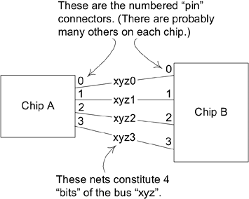
한 번에 8개, 16개, 혹은 256개씩 넷을 버스로 묶음으로써 엔지니어는 작업 규모를 다루기 쉬운 크기로 줄이고 생산성을 높이며 오류를 줄인다. 문제는 레이아웃 도구에 버스라는 개념 자체가 없다는 것이다. 규칙을 수만 개의 넷에 하나씩 일일이 할당해야만 한다.
기계적인 설계
다급해진 엔지니어들은 레이아웃 도구의 데이터 파일을 파싱하고 파일에 규칙을 직접 삽입하여 한 번에 전체 버스에 규칙을 적용하는 스크립트를 작성함으로써 이 한계를 우회했다.
레이아웃 도구는 각 회로 연결을 넷 리스트(net list) 파일에 저장하며, 그 모습은 다음과 비슷하다.
Net Name Component.Pin
-------- -------------
Xyz0 A.0, B.0
Xyz1 A.1, B.1
Xyz2 A.2, B.2
. . .또한 레이아웃 규칙은 다음과 비슷한 파일 형식으로 저장한다.
Net Name Rule Type Parameters
-------- --------- ----------
Xyz1 min_linewidth 5
Xyz1 max_delay 15
Xyz2 min_linewidth 5
Xyz2 max_delay 15
. . .엔지니어들은 데이터 파일을 알파벳순으로 정렬했을 때 한 버스의 넷들이 정렬된 파일 안에 나란히 모이도록 넷의 명명 규칙을 신중하게 사용했다. 그러면 스크립트가 파일을 파싱해 버스에 따라 각 넷을 수정할 수 있다. 실제로 파일을 파싱하고 조작하고 쓰는 코드는 이 예제에서 쓰기에는 너무 장황하고 불투명하므로, 절차의 단계만 나열하겠다.
1. 넷 이름(net name)순으로 넷 리스트 파일을 정렬한다.
2. 버스 이름 패턴으로 시작하는 첫 번째 줄을 찾으며 파일의 각 줄을 읽는다.
3. 이름이 일치하는 각 줄에 대해 줄을 파싱하여 넷 이름을 얻는다.
4. 규칙 텍스트와 함께 넷 이름을 규칙 파일에 덧붙인다.
5. 줄의 왼쪽 부분이 더 이상 버스 이름과 일치하지 않을 때까지 3단계부터 반복한다.따라서 다음과 같은 버스 규칙 입력은:
Bus Name Rule Type Parameters
-------- --------- ----------
Xyz max_vias 3규칙 파일에 다음과 같은 넷 규칙을 추가하는 결과를 낳는다.
Net Name Rule Type Parameters
-------- --------- ----------
. . .
Xyz0 max_vias 3
Xyz1 max_vias 3
Xyz2 max_vias 3
. . .처음으로 이런 스크립트를 작성한 사람에게는 이 단순한 요구사항만 있었을 것이고, 만약 이것이 유일한 요구사항이었다면 이런 스크립트는 충분히 합리적이었을 것이다. 하지만 실제로는 이제 그런 스크립트가 수십 개나 존재한다. 물론 정렬과 문자열 매칭 함수를 공유하도록 리팩토링할 수는 있고, 그 언어가 세부 사항을 캡슐화할 수 있는 함수 호출을 지원한다면 스크립트가 위의 요약 단계처럼 읽히기 시작할 수도 있다. 하지만 여전히 그것은 단지 파일 조작에 불과하다. 버스를 그룹화하고 거기에 규칙을 적용한다는 개념은 동일함에도 불구하고, 파일 형식이 달라지면(그리고 실제로 여러 형식이 존재한다) 처음부터 다시 시작해야 할 것이다. 더 풍부한 기능이나 대화형 동작을 원한다면 한 걸음 내디딜 때마다 대가를 치러야 할 것이다.
스크립트 작성자들이 하려 했던 것은 도구의 도메인 모델에 “버스(bus)”라는 개념을 보충하는 것이었다. 그들의 구현은 정렬과 문자열 매칭을 통해 버스의 존재를 추론하기는 하지만, 그 개념을 명시적으로 다루지는 않는다.
모델 주도 설계
앞선 논의는 도메인 전문가가 자신의 문제를 생각할 때 사용하는 개념들을 이미 설명해 주었다. 이제 우리는 그 개념들을 소프트웨어의 기반으로 삼을 수 있는 모델로 명시적으로 조직화해야 한다.
그림 3.3. 레이아웃 규칙의 효율적인 할당을 지향하는 클래스 다이어그램

이 객체들을 객체 지향 언어로 구현하면 핵심 기능은 거의 사소할 정도로 간단해진다.
assignRule() 메서드는 Abstract Net에 구현할 수 있다. Net의 assignedRules() 메서드는 자기 자신의 규칙과 자신이 속한 Bus의 규칙을 함께 가져온다.
abstract class AbstractNet {
private Set rules;
void assignRule(LayoutRule rule) {
rules.add(rule);
}
Set assignedRules() {
return rules;
}
}
class Net extends AbstractNet {
private Bus bus;
Set assignedRules() {
Set result = new HashSet();
result.addAll(super.assignedRules());
result.addAll(bus.assignedRules());
return result;
}
}물론 수많은 보조 코드가 필요하겠지만, 이 코드로 스크립트의 기본 기능은 모두 다루어진다.
애플리케이션에는 가져오기/내보내기(import/export) 로직이 필요하므로, 이를 몇몇 간단한 서비스(Service)로 캡슐화할 것이다.
| 서비스(Service) | 책임(Responsibility) |
|---|---|
| Net List import | 넷 리스트(Net List) 파일을 읽고 각 항목에 대해 Net 인스턴스를 생성한다. |
| Net Rule export | Net 컬렉션을 받아 연결된 모든 규칙을 규칙 파일(Rules File)에 기록한다. |
또한 몇 가지 유틸리티가 더 필요하다.
| 클래스(Class) | 책임(Responsibility) |
|---|---|
| Net Repository | 이름으로 Net에 대한 접근을 제공한다. |
| Inferred Bus Factory | Net 컬렉션을 받아 명명 규칙을 사용해 Bus를 추론하고 인스턴스를 생성한다. |
| Bus Repository | 이름으로 Bus에 대한 접근을 제공한다. |
이제 애플리케이션을 시작하는 일은 가져온 데이터로 리포지토리(Repository)들을 초기화하는 문제일 뿐이다.
Collection nets = NetListImportService.read(aFile);
NetRepository.addAll(nets);
Collection buses = InferredBusFactory.groupIntoBuses(nets);
BusRepository.addAll(buses);각 서비스와 리포지토리는 단위 테스트를 할 수 있다. 더욱 중요한 점은, 핵심 도메인 로직을 테스트할 수 있다는 것이다. 다음은 가장 중심적인 동작에 대한 단위 테스트다(JUnit 테스트 프레임워크 사용).
public void testBusRuleAssignment() {
Net a0 = new Net("a0");
Net a1 = new Net("a1");
Bus a = new Bus("a"); //Bus is not conceptually dependent
a.addNet(a0); //on name-based recognition, and so
a.addNet(a1); //its tests should not be either.
NetRule minWidth4 = NetRule.create(MIN_WIDTH, 4);
a.assignRule(minWidth4);
assertTrue(a0.assignedRules().contains(minWidth4));
assertEquals(minWidth4, a0.getRule(MIN_WIDTH));
assertEquals(minWidth4, a1.getRule(MIN_WIDTH));
}대화형 사용자 인터페이스는 버스 목록을 보여 주어 사용자가 각 버스에 규칙을 할당할 수 있게 하거나, 하위 호환성을 위해 규칙 파일에서 읽어 들일 수도 있다. 퍼사드(façade)를 두면 어느 인터페이스에서든 접근하기가 간단해진다. 그 구현은 테스트의 내용을 그대로 따른다.
public void assignBusRule(String busName, String ruleType,
double parameter){
Bus bus = BusRepository.getByName(busName);
bus.assignRule(NetRule.create(ruleType, parameter));
}마무리 단계는 다음과 같다.
NetRuleExport.write(aFileName, NetRepository.allNets());(이 서비스는 각 Net에 assignedRules()를 요청한 다음, 이를 완전히 펼쳐서 출력한다.)
물론(예제에서처럼) 연산이 단 하나뿐이라면 스크립트 기반 접근 방식도 그만큼 실용적일 수 있다. 하지만 실제로는 20개 이상의 연산이 존재했다. 모델 주도 설계(MODEL-DRIVEN DESIGN)는 쉽게 확장할 수 있으며, 규칙 조합에 대한 제약 조건이나 다른 개선 사항도 포함할 수 있다.
두 번째 설계는 테스트에도 적합하다. 각 컴포넌트가 잘 정의된 인터페이스를 갖추고 있어 단위 테스트가 가능하다. 반면 스크립트를 테스트할 수 있는 유일한 방법은 파일 입력과 파일 출력을 처음부터 끝까지 비교하는 종단 간(end-to-end) 테스트뿐이다.
이러한 설계는 단번에 나오지 않는다는 점을 명심해야 한다. 도메인의 중요한 개념들을 단순하고 예리한 모델로 정제하려면 여러 차례의 리팩터링과 지식 탐구(knowledge crunching) 반복이 필요하다.
뼈대 드러내기: 모델이 사용자에게 중요한 이유
이론적으로는 시스템 내부에 무엇이 있든 상관없이 사용자에게 어떤 뷰든 제공할 수 있을 것이다. 하지만 실제로는 모델 간의 불일치가 좋게 보아도 혼란을, 나쁘게 보면 버그를 유발한다. 현재 버전의 Microsoft Internet Explorer에서 웹 사이트 북마크에 대해 서로 다른 모델이 겹쳐지며 사용자를 어떻게 오도하는지 보여주는 아주 단순한 예를 살펴보자.1^
2^ 브라이언 매릭(Brian Marick)이 이 예를 내게 알려주었다.
Internet Explorer 사용자는 “즐겨찾기(Favorites)”를 세션 간에 유지되는 웹 사이트 이름 목록으로 생각한다. 하지만 실제 구현은 즐겨찾기를 URL이 담긴 하나의 파일로 취급하며, 그 파일의 이름을 즐겨찾기 목록에 넣는다. 웹 페이지 제목에 Windows 파일명에서 허용되지 않는 문자가 포함되어 있으면 문제가 발생한다. 사용자가 즐겨찾기를 저장하려고 이름을 “Laziness: The Secret to Happiness”라고 입력한다고 가정해 보자. 그러면 “파일 이름에는 다음 문자를 사용할 수 없습니다: / : * ?” < > |“라는 오류 메시지가 뜬다. 도대체 무슨 파일 이름이란 말인가? 반대로 웹 페이지 제목에 이미 허용되지 않는 문자가 들어 있다면, Internet Explorer는 그 문자를 조용히 제거해 버린다. 이 경우 데이터 손실이 크게 해롭지는 않을 수 있지만, 사용자가 기대한 동작은 아니다. 데이터를 조용히 변경하는 행위는 대부분의 애플리케이션에서 결코 용납될 수 없다.
모델 주도 설계(MODEL-DRIVEN DESIGN)는(14장에서 다룰 단일 컨텍스트 내에서는) 오직 하나의 모델만으로 작업할 것을 요구한다. 대부분의 조언과 예제는 분석 모델과 설계 모델을 따로 두었을 때의 문제에 초점을 맞추지만, 여기서는 또 다른 한 쌍의 모델, 즉 사용자 모델과 설계/구현 모델 사이에서 발생하는 문제를 다루고 있다.
물론 대부분의 경우 도메인 모델을 있는 그대로 사용자에게 보여주면 불편할 것이다. 하지만 완벽한 환상을 만들어내지 못할 바에야 UI에서 도메인 모델과 다른 모델이 있는 것처럼 꾸미려 하면 혼란만 초래한다. 웹 즐겨찾기가 실제로는 바로 가기 파일들의 모음일 뿐이라면, 그 사실을 사용자에게 그대로 드러내고 혼란스러운 별도의 모델을 없애라. 그러면 기능이 덜 헷갈릴 뿐만 아니라, 사용자는 파일 시스템에 대해 이미 알고 있는 지식을 웹 즐겨찾기를 다루는 데 활용할 수 있다. 예를 들어 웹 브라우저에 내장된 어색한 도구 대신 파일 탐색기(File Explorer)로 즐겨찾기를 재구성할 수 있다. 숙련된 사용자라면 파일 시스템 어디에나 웹 바로 가기를 저장할 수 있는 유연성을 더 잘 활용할 수 있을 것이다. 오해를 부르는 불필요한 추가 모델을 제거하는 것만으로도 애플리케이션의 힘은 커지고 더 명확해진다. 프로그래머들이 기존 모델로 충분하다고 느꼈다면, 왜 사용자에게 새로운 모델을 억지로 배우게 하는가?
다른 방법으로는 즐겨찾기를 데이터 파일 같은 별도의 방식으로 저장하여 자체 규칙을 따르게 하는 것이다. 그 규칙은 아마도 웹 페이지에 적용되는 이름 지정 규칙일 것이다. 이렇게 해도 역시 단일 모델을 제공하게 된다. 이 모델은 사용자에게 웹 사이트 이름 지정에 대해 알고 있는 모든 것이 즐겨찾기에도 그대로 적용된다는 사실을 알려준다.
사용자들과 도메인 전문가들의 기본적인 관심사를 반영한 모델을 기반으로 설계하면, 다른 설계 접근 방식보다 설계의 뼈대를 사용자에게 훨씬 더 많이 드러낼 수 있다. 모델을 드러내면 사용자는 소프트웨어의 잠재력을 더 많이 활용할 수 있고, 일관되고 예측 가능한 동작을 얻게 된다.
현장 모델러(Hands-On Modelers)
제조업은 소프트웨어 개발에서 흔히 쓰이는 비유다. 이 비유에서 나오는 추론 중 하나는 고도로 숙련된 엔지니어가 설계를 하고, 숙련도가 낮은 노동자가 제품을 조립한다는 것이다. 이 비유는 아주 단순한 이유 때문에 수많은 프로젝트를 망쳐 놓았다. 소프트웨어 개발은 그 전체가 설계이기 때문이다. 모든 팀에는 구성원마다 전문 역할이 있지만, 분석, 모델링, 설계, 프로그래밍의 책임을 지나치게 분리하면 모델 주도 설계(MODEL-DRIVEN DESIGN)를 방해하게 된다.
한 프로젝트에서 내 역할은 여러 애플리케이션 팀을 조율하고 설계를 이끌어갈 도메인 모델을 개발하도록 돕는 것이었다. 하지만 경영진은 모델러는 모델링만 해야 하며 코딩은 그런 역량을 낭비하는 일이라고 생각했기 때문에, 나는 사실상 프로그래밍을 하거나 프로그래머들과 세부 사항을 함께 작업하는 것이 금지되었다.
한동안은 일이 잘 풀리는 듯했다. 도메인 전문가들과 각 팀의 개발 리드들과 함께 지식을 탐구하며 훌륭한 핵심 모델을 다듬어 나갔다. 하지만 그 모델은 두 가지 이유로 실제 작업에 전혀 쓰이지 못했다.
첫째, 인계 과정에서 모델의 의도 중 일부가 손실되었다. 모델의 전반적인 효과는 세부 사항에 매우 민감한데(2부와 3장에서 다룰 것이다), 그러한 세부 사항은 UML 다이어그램이나 일반적인 논의만으로는 항상 온전히 전달되지 않는다. 내가 직접 팔을 걷어붙이고 다른 개발자들과 함께 일하며 본보기가 될 만한 코드를 제공하고 긴밀히 지원할 수 있었다면, 팀은 모델의 추상화를 받아들여 그대로 밀고 나갈 수 있었을 것이다.
또 다른 문제는 모델이 구현 및 기술과 상호작용하면서 나오는 피드백이 너무 간접적이었다는 점이다. 예를 들어 모델의 특정 측면이 우리의 기술 플랫폼에서 극도로 비효율적이라는 사실이 드러났지만, 그 파급 효과가 나에게까지 전해지는 데는 몇 달이 걸렸다. 비교적 사소한 변경만으로도 문제를 해결할 수 있었겠지만, 내가 알게 되었을 때는 이미 소용이 없었다. 개발자들은 이미 실제로 돌아가는 소프트웨어를 작성하는 데 한창이었고, 거기에는 모델이 빠져 있거나 쓰이더라도 단순한 데이터 구조로 전락해 있었다. 개발자들이 목욕물과 함께 아기까지 버린 셈이지만, 그들에게 다른 선택의 여지가 있었을까? 상아탑에 앉은 아키텍트의 지시에 계속 발목이 잡힐 위험을 감수할 수는 없었던 것이다.
이 프로젝트의 초기 상황은 현장과 떨어진(hands-off) 모델러에게 더없이 유리한 편이었다. 나는 이미 프로젝트에 사용된 기술 대부분에 대해 풍부한 실무 경험을 가지고 있었다. 심지어 역할이 바뀌기 전에는 같은 프로젝트에서 소규모 개발 팀을 이끌기도 했으므로 프로젝트의 개발 프로세스와 프로그래밍 환경에도 익숙했다. 하지만 모델러와 구현을 분리한 상황에서는 그러한 요소들조차 내가 제 역할을 발휘하기에 충분하지 않았다.
코드를 작성하는 사람들이 모델에 대한 책임감을 느끼지 못하거나 애플리케이션을 위해 모델을 동작시키는 방법을 이해하지 못한다면, 그 모델은 소프트웨어와 아무런 관련이 없게 된다. 개발자들이 코드를 변경하면 모델도 바뀐다는 사실을 깨닫지 못하면, 그들의 리팩터링은 모델을 강화하기는커녕 오히려 약화시킨다. 한편 모델러가 구현 과정에서 분리되면, 그는 구현상의 제약에 대한 감각을 얻지 못하거나 금방 잃어버리게 된다. 효과적인 구현을 뒷받침하고 핵심 도메인 지식을 추상화한다는 모델 주도 설계(MODEL-DRIVEN DESIGN)의 기본 제약 중 절반이 사라지고, 그 결과로 나오는 모델은 비실용적이 된다. 마지막으로, 모델 주도 설계를 코딩하는 미묘한 기법을 전달하는 협업이 분업으로 인해 가로막히면, 숙련된 설계자의 지식과 기술은 다른 개발자들에게 전수되지 않는다.
현장 모델러(HANDS-ON MODELERS)가 필요하다고 해서 팀원들이 전문 역할을 가질 수 없다는 뜻은 아니다. 익스트림 프로그래밍(Extreme Programming)을 비롯한 모든 애자일 프로세스는 팀원들의 역할을 정의하며, 그 밖의 비공식적인 전문화도 자연스럽게 나타난다. 문제는 모델 주도 설계에서 서로 결합되어 있는 두 작업, 즉 모델링과 구현을 분리할 때 발생한다.
전체 설계의 효과는 세밀한 설계 및 구현 결정의 품질과 일관성에 매우 민감하다. 모델 주도 설계에서는 코드의 일부가 곧 모델의 표현이며, 그 코드를 변경하는 것은 곧 모델을 변경하는 것이다. 누가 좋아하든 싫어하든 프로그래머는 모델러다. 따라서 프로그래머가 훌륭한 모델링 작업을 수행하도록 프로젝트를 구성하는 편이 낫다.
그러므로:
프로젝트에서 맡은 주된 역할이 무엇이든 모델에 기여하는 기술 인력이라면 누구나 직접 코드를 만지는 시간을 가져야 한다. 코드 변경을 책임지는 사람은 누구나 코드를 통해 모델을 표현하는 법을 배워야 한다. 모든 개발자는 모델에 관한 논의에 어느 수준으로든 참여해야 하며 도메인 전문가와 접촉해야 한다. 다른 방식으로 기여하는 사람들도 유비쿼터스 언어(Ubiquitous Language)를 통해 모델 아이디어를 역동적으로 주고받으며 코드를 다루는 사람들과 의식적으로 교류해야 한다.
모델링과 프로그래밍의 날카로운 분리는 효과가 없지만, 대규모 프로젝트에는 여전히 고수준의 설계와 모델링을 조율하고 가장 어렵거나 중요한 결정을 내리는 데 도움을 줄 기술 리더가 필요하다. 4부 “전략적 설계”는 그러한 결정들을 다루며, 고수준 기술 인력의 역할과 책임을 더 생산적으로 정의할 수 있는 아이디어를 제공할 것이다.
도메인 주도 설계는 애플리케이션의 문제를 해결하기 위해 모델을 실제로 활용한다. 지식 탐구를 통해 팀은 혼란스러운 정보의 홍수를 실용적인 모델로 정제한다. 모델 주도 설계(MODEL-DRIVEN DESIGN)는 모델과 구현을 긴밀하게 연결한다. 유비쿼터스 언어(Ubiquitous Language)는 그 모든 정보가 개발자, 도메인 전문가, 그리고 소프트웨어 사이를 흐르는 통로다.
그 결과 핵심 도메인에 대한 근본적인 이해를 바탕으로 풍부한 기능을 제공하는 소프트웨어가 탄생한다.
앞서 언급했듯이 모델 주도 설계의 성공 여부는 세부적인 설계 결정에 민감하며, 이것이 바로 이어지는 몇 개 장의 주제다.
Part II: 모델 주도 설계의 구성 요소(The Building Blocks of a Model-Driven Design)
지저분한 현실 속에서도 소프트웨어 구현을 명쾌하게 유지하고 모델과 보조를 맞추려면, 모델링과 설계의 모범 사례를 적용해야 한다. 이 책은 객체지향 설계 입문서가 아니며, 급진적인 설계 기초를 제안하지도 않는다. 도메인 주도 설계는 기존에 널리 알려진 개념들에서 강조점을 옮긴다. 특정한 종류의 결정들은 모델과 구현이 서로 정렬되도록 유지하며, 각자가 상대방의 효과를 강화하도록 만든다. 이러한 정렬을 이루려면 개별 요소의 세부 사항에 주의를 기울여야 한다. 이 작은 규모에서의 세심한 작업은 개발자들에게 3부와 4부의 모델링 접근 방식을 적용할 수 있는 탄탄한 발판을 제공한다. 이 책의 설계 스타일은 대체로 Wirfs-Brock 등(1990)이 제시하고 Wirfs-Brock(2003)이 최신화한 “책임 주도 설계(responsibility-driven design)” 원칙을 따른다. 또한(특히 3부에서) Meyer(1988)가 설명한 “계약에 의한 설계(design by contract)” 개념에서도 많은 영향을 받았다. 이는 Larman(1998)과 같은 책에서 설명하는 널리 인정받는 다른 객체지향 설계 모범 사례들의 일반적인 배경과도 일관된다. 프로젝트가 크고 작은 난관에 부딪히면 개발자들은 이러한 원칙들을 적용할 수 없는 것처럼 보이는 상황에 놓일 수 있다. 도메인 주도 설계 프로세스를 탄력적으로 유지하려면, 개발자들은 잘 알려진 기본 원칙들이 모델 주도 설계(MODEL-DRIVEN DESIGN)를 어떻게 뒷받침하는지 이해해야 궤도에서 이탈하지 않고 타협점을 찾을 수 있다. 이어지는 세 장의 내용은 “패턴 언어(pattern language)”(부록 A 참조)로 구성되어 있으며, 미묘한 모델 구분과 설계 결정이 도메인 주도 설계 프로세스에 어떤 영향을 미치는지 보여줄 것이다. 다음 페이지 상단의 다이어그램은 탐색 지도다. 이 섹션에서 제시할 패턴들과 그 패턴들이 서로 연관되는 몇 가지 방식을 보여준다. 이러한 표준 패턴을 공유하면 설계에 질서가 잡히고 팀원들이 서로의 작업을 이해하기가 쉬워진다. 표준 패턴을 사용하는 것은 유비쿼터스 언어(Ubiquitous Language)에도 보탬이 되며, 모든 팀원이 이를 사용해 모델과 설계 결정을 논의할 수 있다. 훌륭한 도메인 모델을 개발하는 것은 일종의 예술이다. 하지만 모델의 개별 요소를 실용적으로 설계하고 구현하는 일은 비교적 체계적으로 할 수 있다. 소프트웨어 시스템의 수많은 다른 관심사로부터 도메인 설계를 격리하면 설계와 모델의 연결 고리가 훨씬 명확해진다. 특정 구분 기준에 따라 모델 요소를 정의하면 그 의미가 날카로워진다. 개별 요소에 대해 검증된 패턴을 따르면 구현하기에 실용적인 모델을 만드는 데 도움이 된다. 모델 주도 설계(MODEL-DRIVEN DESIGN) 언어의 탐색 지도
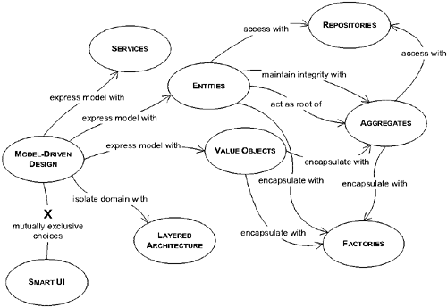
정교한 모델은 기본기를 충실히 다져 팀이 자신 있게 조합할 수 있는 세밀한 요소들을 만들어낼 때만 복잡성을 돌파할 수 있다.
4장. 도메인 격리(Isolating the Domain)
소프트웨어에서 도메인 문제를 구체적으로 해결하는 부분은 그 크기에 비해 중요성이 훨씬 크지만, 보통 전체 소프트웨어 시스템에서는 작은 비중만을 차지한다. 최선의 사고를 적용하려면 모델의 요소들을 바라보고 그것들을 하나의 시스템으로 인식할 수 있어야 한다. 마치 밤하늘에서 별자리를 찾아내듯 훨씬 더 거대한 객체들의 혼합물 속에서 모델 요소들을 골라내야 하는 상황에 놓여서는 안 된다. 도메인 개념을 소프트웨어 기술에만 관련된 다른 개념들과 혼동하거나 시스템의 거대한 덩어리 속에서 도메인을 아예 놓쳐버리는 일이 없도록, 시스템의 다른 기능들로부터 도메인 객체들을 분리(decouple)해야 한다.
이러한 격리를 위한 정교한 기법들이 이미 등장해 있다. 이는 이미 잘 닦인 분야이지만, 도메인 모델링 원칙을 성공적으로 적용하는 데 매우 중요하므로 도메인 주도 관점에서 간략하게 살펴볼 필요가 있다. . . .
계층형 아키텍처(Layered Architecture)

해운 애플리케이션에서 사용자가 도시 목록에서 화물의 목적지를 선택하는 단순한 동작을 지원하려면, (1) 화면에 위젯을 그리고, (2) 데이터베이스에서 가능한 모든 도시를 조회하고, (3) 사용자의 입력을 해석하여 검증하고, (4) 선택된 도시를 화물과 연결하며, (5) 변경 사항을 데이터베이스에 커밋하는 프로그램 코드가 있어야 한다. 이 모든 코드는 같은 프로그램의 일부이지만, 그중 해운 비즈니스와 관련된 것은 아주 일부분에 불과하다.
소프트웨어 프로그램은 다양한 종류의 작업을 수행하기 위한 설계와 코드를 포함한다. 사용자 입력을 받고, 비즈니스 로직을 수행하며, 데이터베이스에 접근하고, 네트워크를 통해 통신하며, 사용자에게 정보를 표시하는 등 여러 일을 한다. 따라서 각 프로그램 기능에 관여하는 코드의 양은 상당할 수 있다.
객체지향 프로그램에서는 UI, 데이터베이스 및 기타 지원 코드가 비즈니스 객체 내부에 직접 작성되는 경우가 흔하다. 또 다른 비즈니스 로직은 UI 위젯의 동작이나 데이터베이스 스크립트 안에 파묻히기도 한다. 단기적으로는 그렇게 하는 편이 일을 돌아가게 만드는 가장 쉬운 방법이기 때문이다.
도메인 관련 코드가 이처럼 방대한 다른 코드들 사이에 흩어지면, 이를 파악하고 추론하기가 극도로 어려워진다. UI를 표면적으로 조금만 수정해도 실제로는 비즈니스 로직이 바뀔 수 있다. 비즈니스 규칙 하나를 변경하려면 UI 코드, 데이터베이스 코드 또는 기타 프로그램 요소들을 꼼꼼히 추적해야 할 수도 있다. 일관성 있는 모델 주도 객체를 구현하는 것은 비현실적이 된다. 자동화된 테스트도 어색해진다. 각 활동에 온갖 기술과 로직이 뒤섞여 있으면, 프로그램은 아주 단순하게 유지되지 않는 한 이해하기 불가능한 수준이 된다.
매우 복잡한 작업을 처리할 수 있는 프로그램을 만들려면 관심사의 분리(separation of concerns)를 통해 설계의 서로 다른 부분에 독립적으로 집중할 수 있어야 한다. 동시에, 이러한 분리에도 불구하고 시스템 내부의 정교한 상호작용은 유지되어야 한다.
소프트웨어 시스템을 나누는 방법은 여러 가지가 있지만, 경험과 관례를 통해 업계는 계층형 아키텍처(LAYERED ARCHITECTURE), 특히 꽤 표준적인 몇 가지 계층으로 수렴해 왔다. 계층화(layering)라는 비유는 너무나 널리 쓰여서 대부분의 개발자에게 직관적으로 와닿는다. 문헌에는 계층화에 대한 훌륭한 논의가 많으며, 때로는 패턴 형식으로 정리되어 있기도 하다(예: Buschmann et al. 1996, pp. 31–51). 핵심 원칙은 어떤 계층의 요소라도 같은 계층의 다른 요소나 그 “아래” 계층의 요소에만 의존한다는 것이다. 위쪽 계층으로의 통신은 어떤 간접적인 메커니즘을 거쳐야 하며, 이에 대해서는 조금 뒤에 논의할 것이다.
계층의 가치는 각 계층이 컴퓨터 프로그램의 특정 측면을 전담한다는 데 있다. 이러한 전문화는 각 측면에 대해 응집도 높은 설계를 가능하게 하고, 그 설계를 훨씬 쉽게 해석할 수 있게 해준다. 물론 가장 중요한 응집된 설계 측면을 격리하는 계층들을 선택하는 것이 필수적이다. 여기서도 경험과 관례가 어느 정도 수렴을 이끌어냈다. 변형은 많지만, 성공적인 아키텍처 대부분은 다음 네 가지 개념적 계층의 변형을 사용한다:
사용자 인터페이스(User Interface, 또는 프레젠테이션 계층): 사용자에게 정보를 보여주고 사용자의 명령을 해석하는 일을 담당한다. 외부 행위자는 인간 사용자 대신 다른 컴퓨터 시스템일 수도 있다.
애플리케이션 계층(Application Layer): 소프트웨어가 수행해야 할 작업을 정의하고, 표현력이 풍부한 도메인 객체들이 문제를 해결하도록 지시한다. 이 계층이 책임지는 작업은 비즈니스에 의미가 있거나 다른 시스템의 애플리케이션 계층과 상호작용하는 데 필요한 것들이다. 이 계층은 얇게 유지한다. 비즈니스 규칙이나 지식을 포함하지 않으며, 오직 작업을 조율하고 바로 아래 계층에 있는 도메인 객체들의 협력에 일을 위임한다. 비즈니스 상황을 반영하는 상태는 가지지 않지만, 사용자나 프로그램의 작업 진행 상황을 반영하는 상태는 가질 수 있다.
도메인 계층(Domain Layer, 또는 모델 계층): 비즈니스의 개념, 비즈니스 상황에 대한 정보, 그리고 비즈니스 규칙을 표현하는 일을 담당한다. 비즈니스 상황을 반영하는 상태는 이를 저장하는 기술적 세부 사항이 인프라 계층에 위임되더라도 이 계층에서 제어하고 사용한다. 이 계층은 비즈니스 소프트웨어의 심장이다.
인프라 계층(Infrastructure Layer): 상위 계층을 지원하는 범용 기술 기능을 제공한다. 애플리케이션을 위한 메시지 전송, 도메인을 위한 영속성(persistence), UI를 위한 위젯 그리기 등이 여기에 속한다. 인프라 계층은 또한 아키텍처 프레임워크를 통해 네 계층 간의 상호작용 패턴을 지원할 수도 있다.
일부 프로젝트에서는 사용자 인터페이스 계층과 애플리케이션 계층을 날카롭게 구분하지 않는다. 또 어떤 프로젝트에는 여러 개의 인프라 계층이 있다. 하지만 모델 주도 설계(MODEL-DRIVEN DESIGN)를 가능하게 하는 것은 바로 도메인 계층의 결정적인 분리다.
그러므로:
복잡한 프로그램을 계층으로 분할하라. 각 계층 내에서 응집도가 높고 오직 하위 계층에만 의존하는 설계를 개발하라. 상위 계층과는 느슨한 결합(loose coupling)을 제공하도록 표준 아키텍처 패턴을 따르라. 도메인 모델과 관련된 모든 코드를 한 계층에 집중시키고 사용자 인터페이스, 애플리케이션, 인프라 코드로부터 격리하라. 자기 자신을 화면에 표시하고, 스스로를 저장하며, 애플리케이션 작업을 관리하는 등의 책임에서 해방된 도메인 객체들은 도메인 모델을 표현하는 데만 집중할 수 있다. 이를 통해 모델은 핵심 비즈니스 지식을 포착하고 이를 실제로 활용할 수 있을 만큼 충분히 풍부하고 명확하게 진화할 수 있다.
인프라 계층 및 사용자 인터페이스 계층으로부터 도메인 계층을 분리하면 각 계층을 훨씬 더 깔끔하게 설계할 수 있다. 격리된 계층들은 서로 다른 속도로 진화하고 서로 다른 요구에 대응하는 경향이 있으므로 유지보수 비용이 훨씬 적게 든다. 또한 이 분리는 분산 시스템에 배포할 때도 도움이 되는데, 통신 오버헤드를 최소화하고 성능을 개선하기 위해 서로 다른 계층을 서로 다른 서버나 클라이언트에 유연하게 배치할 수 있기 때문이다(Fowler 1996).
예제
온라인 뱅킹 기능을 계층으로 분할하기
어떤 애플리케이션은 은행 계좌를 관리하는 다양한 기능을 제공한다. 그중 한 기능은 자금 이체(funds transfer)로, 사용자가 두 계좌 번호와 금액을 입력하거나 선택한 뒤 이체를 시작한다.
이 예제를 다루기 쉽게 만들기 위해 주요 기술적 기능, 특히 보안은 생략했다. 도메인 설계 역시 지나치게 단순화되었다.(현실적인 복잡성이 더해지면 계층형 아키텍처의 필요성은 더욱 커질 뿐이다.) 게다가 여기서 암시된 특정 인프라는 예제를 명확하게 하기 위해 단순하고 자명하게 잡은 것이지, 권장하는 설계는 아니다. 나머지 기능의 책임은 그림 4.1과 같이 계층화될 것이다.
그림 4.1. 객체들은 자신의 계층에 부합하는 책임을 수행하며, 같은 계층의 다른 객체들과 더 강하게 결합된다.
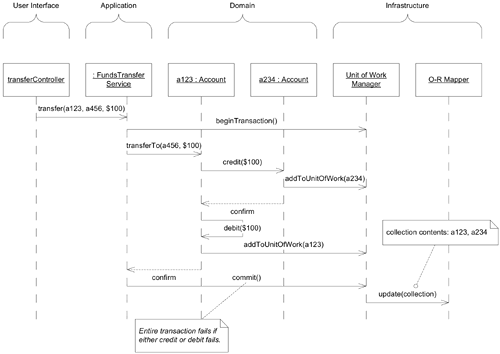
애플리케이션 계층이 아니라 도메인 계층이 근본적인 비즈니스 규칙을 책임진다는 점에 주목하라. 이 경우 그 규칙은 “모든 대변(credit)에는 그에 대응하는 차변(debit)이 있다”이다.
또한 애플리케이션은 이체 요청의 출처에 대해 아무런 가정도 하지 않는다. 프로그램에는 아마 계좌 번호와 금액을 입력하는 필드와 명령 버튼을 갖춘 UI가 포함되어 있을 것이다. 하지만 그 사용자 인터페이스를 XML 기반의 전신 요청(wire request)으로 교체하더라도 애플리케이션 계층이나 그 아래의 어떤 계층에도 영향을 미치지 않는다. 이러한 분리가 중요한 이유는 프로젝트가 사용자 인터페이스를 전신 요청으로 자주 교체해야 해서가 아니라, 깔끔한 관심사의 분리가 각 계층의 설계를 이해하고 유지보수하기 쉽게 만들어 주기 때문이다.
사실 그림 4.1 자체만 봐도 도메인을 격리하지 않았을 때의 문제를 가볍게 엿볼 수 있다. 요청부터 트랜잭션 제어까지 모든 것을 다 포함해야 했기 때문에, 전체 상호작용을 따라가기 쉽게 유지하려면 도메인 계층을 단순하게 낮출 수밖에 없었다. 격리된 도메인 계층의 설계에만 집중했다면, 원장(ledger), 대변/차변 객체, 혹은 화폐 거래(monetary transaction) 객체 등을 포함하여 도메인의 규칙을 더 잘 표현하는 모델을 지면과 머릿속에 그려낼 여유가 있었을 것이다.
계층 연결하기(Relating the Layers)
지금까지의 논의는 계층의 분리와 그 분할이 프로그램의 각 측면, 특히 도메인 계층의 설계를 어떻게 개선하는지에 초점을 맞추었다. 하지만 물론 계층들은 서로 연결되어야 한다. 분리의 이점을 잃지 않으면서 이를 수행하는 것이 여러 패턴의 동기다.
계층은 오직 한 방향으로만 설계 의존성을 가지며 느슨하게 결합되도록 의도된다. 상위 계층은 하위 계층 요소의 공개 인터페이스를 호출하거나, (적어도 일시적으로) 참조를 보유하는 등 일반적인 상호작용 수단을 사용하여 하위 요소를 직관적으로 사용하거나 조작할 수 있다. 하지만 하위 수준의 객체가(직접적인 질의에 응답하는 것 이상으로) 위쪽으로 통신해야 할 때는 콜백이나 옵저버(OBSERVERS, Gamma et al. 1995)와 같이 계층을 연결하는 아키텍처 패턴을 활용한 다른 메커니즘이 필요하다.
UI를 애플리케이션 계층과 도메인 계층에 연결하는 패턴의 시조는 모델-뷰-컨트롤러(MODEL-VIEW-CONTROLLER, MVC)다. 이는 1970년대에 스몰토크(Smalltalk) 진영에서 개척되었으며, 그 뒤를 이은 수많은 UI 아키텍처에 영감을 주었다. Fowler(2002)는 이 패턴과 그 주제를 변형한 여러 유용한 패턴들을 다룬다. Larman(1998)은 모델-뷰 분리 패턴(MODEL-VIEW SEPARATION PATTERN)에서 이러한 문제를 탐구하며, 그의 애플리케이션 코디네이터(APPLICATION COORDINATOR)는 애플리케이션 계층을 연결하는 한 가지 접근 방식이다.
UI와 애플리케이션을 연결하는 스타일은 이 밖에도 더 있다. 우리의 목적상, 어떤 접근 방식이든 도메인 계층의 격리를 유지하여 도메인 객체와 상호작용할 수 있는 사용자 인터페이스를 동시에 고민하지 않고도 도메인 객체를 설계할 수 있게 해준다면 모두 괜찮다.
인프라 계층은 보통 도메인 계층에서 동작을 시작하지 않는다. 도메인 계층 “아래”에 있으므로, 자신이 섬기는 도메인에 대한 구체적인 지식을 가져서는 안 된다. 실제로 이러한 기술적 기능은 대부분 서비스(SERVICES) 형태로 제공된다. 예를 들어 애플리케이션이 이메일을 보내야 한다면, 어떤 메시지 전송 인터페이스를 인프라 계층에 두고 애플리케이션 계층의 요소들이 메시지 전송을 요청할 수 있다. 이러한 분리는 부가적인 유연성을 제공한다. 메시지 전송 인터페이스는 이메일 발송기, 팩스 발송기 또는 사용 가능한 다른 무엇에든 연결될 수 있다. 하지만 주된 이점은 애플리케이션 계층을 단순화하여, 메시지를 언제 보낼지는 알지만 어떻게 보낼지에 대한 부담은 지지 않고 본연의 임무에만 좁게 집중하도록 유지하는 데 있다.
애플리케이션 계층과 도메인 계층은 인프라 계층이 제공하는 서비스(SERVICES)를 호출한다. 서비스의 범위가 잘 선택되고 인터페이스가 잘 설계되었다면, 호출자는 서비스 인터페이스가 캡슐화한 정교한 동작에 얽매이지 않고 느슨한 결합을 유지할 수 있다.
하지만 모든 인프라가 상위 계층에서 호출할 수 있는 서비스 형태로만 제공되는 것은 아니다. 일부 기술 컴포넌트는 다른 계층의 기본 기능을 직접 지원하고(예: 모든 도메인 객체의 추상 기본 클래스 제공), 그 계층들이 서로 연결되는 메커니즘(예: MVC 구현 등)을 제공하도록 설계된다. 이러한 “아키텍처 프레임워크”는 프로그램의 다른 부분의 설계에 훨씬 더 큰 영향을 미친다.
아키텍처 프레임워크(Architectural Frameworks)
인프라가 인터페이스를 통해 호출되는 서비스(SERVICES) 형태로 제공될 때는 계층화가 어떻게 작동하고 계층 간 느슨한 결합을 어떻게 유지하는지 꽤 직관적이다. 하지만 일부 기술적 문제는 더 침투적인 형태의 인프라를 요구한다. 여러 인프라 요구사항을 통합하는 프레임워크는 종종 다른 계층이 매우 특정한 방식으로—예를 들어 프레임워크 클래스의 하위 클래스로 만들거나 정형화된 메서드 시그니처를 갖추어—구현되도록 요구한다.(하위 클래스가 부모 클래스보다 더 높은 계층에 있다는 것이 직관에 어긋나 보일 수 있지만, 어느 클래스가 상대방에 대한 지식을 더 많이 반영하고 있는지 생각해 보라.) 최고의 아키텍처 프레임워크는 복잡한 기술적 문제를 해결하면서도 도메인 개발자가 모델을 표현하는 데 집중할 수 있게 해준다. 그러나 프레임워크는 도메인 설계 선택을 제약하는 너무 많은 가정을 내리거나, 구현을 지나치게 무겁게 만들어 개발 속도를 늦춤으로써 쉽게 방해물이 될 수 있다.
대개 어떤 형태로든 아키텍처 프레임워크가 필요하다(비록 팀이 자신들에게 잘 맞지 않는 프레임워크를 선택하는 경우도 종종 있지만 말이다). 프레임워크를 적용할 때 팀은 자신의 목표, 즉 도메인 모델을 표현하고 이를 사용해 중요한 문제를 해결하는 구현을 구축하는 데 집중해야 한다. 팀은 프레임워크의 모든 기능을 사용하지 않는 것을 의미하더라도 그 목적에 맞게 프레임워크를 활용할 방법을 모색해야 한다. 예를 들어 초기 J2EE 애플리케이션들은 모든 도메인 객체를 “엔티티 빈(entity beans)”으로 구현하곤 했다. 이 접근 방식은 성능과 개발 속도 모두를 늪에 빠뜨렸다. 대신, 현재의 모범 사례는 더 큰 단위의 객체에 J2EE 프레임워크를 사용하고, 대부분의 비즈니스 로직은 일반 Java 객체(generic Java objects)로 구현하는 것이다. 만능 해결책을 찾으려 하지 않고 어려운 문제를 해결하는 데 프레임워크를 선택적으로 적용하면 프레임워크의 단점을 상당 부분 피할 수 있다. 프레임워크에서 가장 가치 있는 기능만 신중하게 적용하면 구현과 프레임워크 사이의 결합도가 낮아져 이후 설계 결정에 더 많은 유연성을 확보할 수 있다. 더 중요한 점은, 현재의 많은 프레임워크를 사용하는 것이 얼마나 복잡한지를 고려할 때, 이러한 미니멀리즘이 비즈니스 객체의 가독성과 표현력을 유지하는 데 도움이 된다는 것이다.
아키텍처 프레임워크와 다른 도구들은 계속 진화할 것이다. 새로운 프레임워크는 애플리케이션의 기술적 측면을 점점 더 많이 자동화하거나 미리 만들어 제공할 것이다. 이것이 올바르게 이루어진다면 애플리케이션 개발자들은 핵심 비즈니스 문제를 모델링하는 데 시간을 점점 더 많이 집중할 수 있어 생산성과 품질이 크게 향상될 것이다. 하지만 이 방향으로 나아갈수록 기술적 해결책에 대한 과도한 열정을 경계해야 한다. 정교한 프레임워크는 애플리케이션 개발자를 구속하는 구속복이 될 수도 있기 때문이다.
도메인 계층은 모델이 사는 곳이다
계층형 아키텍처(LAYERED ARCHITECTURE)는 오늘날 대부분의 시스템에서 다양한 계층화 방식으로 사용된다. 다른 많은 개발 스타일도 계층화의 이점을 누릴 수 있다. 하지만 도메인 주도 설계가 요구하는 것은 오직 특정한 단 하나의 계층이 존재하는 것뿐이다.
도메인 모델은 개념들의 집합이다. “도메인 계층”은 그 모델과 직접 관련된 모든 설계 요소들이 구체화된 것이다. 비즈니스 로직의 설계와 구현이 도메인 계층을 구성한다. 모델 주도 설계(MODEL-DRIVEN DESIGN)에서 도메인 계층의 소프트웨어 구성 요소들은 모델 개념을 그대로 반영한다.
도메인 로직이 프로그램의 다른 관심사들과 뒤섞여 있을 때는 그러한 대응 관계를 달성하는 것이 실용적이지 않다. 도메인 구현을 격리하는 것은 도메인 주도 설계의 전제 조건이다.
스마트 UI(Smart UI) ‘안티패턴’
. . . 이상으로 객체 애플리케이션을 위한 널리 받아들여진 계층형 아키텍처(LAYERED ARCHITECTURE) 패턴을 요약했다. 하지만 UI, 애플리케이션, 도메인의 분리는 너무나 자주 시도되지만 제대로 달성되는 경우는 드물기에, 그 반대 개념 또한 그 자체로 논의할 가치가 있다.
많은 소프트웨어 프로젝트가 내가 스마트 UI(SMART UI)라고 부르는 훨씬 덜 정교한 설계 접근 방식을 취하고 있으며, 앞으로도 계속 그래야 한다. 하지만 스마트 UI는 도메인 주도 설계의 접근 방식과는 양립할 수 없는 상호 배타적인 갈림길이다. 그 길을 택한다면 이 책에 담긴 내용 대부분은 적용할 수 없다. 내 관심사는 스마트 UI가 적용되지 않는 상황에 있으며, 그래서 농담 삼아 이를 “안티패턴”이라고 부른다. 여기서 이를 논의하면 유용한 대조가 이루어지며, 이 책의 나머지 부분에서 택하는 더 어려운 길을 정당화하는 상황들을 명확히 하는 데 도움이 될 것이다.
어떤 프로젝트가 비즈니스 규칙은 거의 없고 데이터 입력과 화면 표시가 주를 이루는 단순한 기능을 제공해야 한다. 인력 역시 숙련된 객체 모델러로 구성되어 있지 않다.
숙련되지 않은 팀이 단순한 프로젝트를 가지고 계층형 아키텍처(LAYERED ARCHITECTURE)를 동반한 모델 주도 설계(MODEL-DRIVEN DESIGN)를 시도하기로 결정하면, 가파른 학습 곡선에 직면하게 된다. 팀원들은 복잡한 신기술을 익혀야 하고(이 책의 도움을 받더라도 만만치 않은) 객체 모델링을 배우는 과정에서 시행착오를 겪어야 한다. 인프라와 계층을 관리하는 오버헤드 때문에 아주 단순한 작업도 더 오래 걸린다. 단순한 프로젝트는 일정이 짧고 기대치도 소박하다. 팀이 맡은 과업을 완료하기도 전에, 그리고 이 접근 방식의 흥미로운 가능성을 보여주기는커녕 프로젝트는 취소되고 말 것이다.
설령 팀에게 더 많은 시간이 주어진다 해도, 전문가의 도움 없이는 팀원들이 그 기법을 숙달하지 못할 가능성이 높다. 그리고 설사 그 도전을 극복해 낸다 해도 결국 만들어낸 것은 단순한 시스템일 뿐이다. 애초에 풍부한 기능은 요구된 적도 없었다.
더 숙련된 팀이라면 동일한 트레이드오프에 직면하지 않을 것이다. 노련한 개발자들은 학습 곡선을 완만하게 만들고 계층을 관리하는 데 드는 시간을 압축할 수 있다. 도메인 주도 설계는 야심 찬 프로젝트에서 가장 큰 성과를 내며, 실제로 탄탄한 기술을 요구한다. 모든 프로젝트가 야심 찬 것은 아니다. 모든 프로젝트 팀이 그만한 기술을 갖출 수 있는 것도 아니다.
그러므로 상황이 요구할 때는:
모든 비즈니스 로직을 사용자 인터페이스에 넣어라. 애플리케이션을 작은 기능들로 쪼개어 별도의 사용자 인터페이스로 구현하고, 그 안에 비즈니스 규칙을 심어라. 공유 데이터 리포지토리로 관계형 데이터베이스를 사용하라. 가용한 가장 자동화된 UI 구축 및 비주얼 프로그래밍 도구를 사용하라.
이단이다! (이 책의 다른 곳을 포함해 어디서나 주창되는) 복음은 도메인과 UI가 분리되어야 한다는 것이다. 실제로 그 분리 없이는 이 책 후반부에서 다루는 어떤 방법도 적용하기 어려우므로, 이 스마트 UI(SMART UI)는 도메인 주도 설계의 맥락에서는 “안티패턴”으로 볼 수 있다. 그럼에도 다른 어떤 맥락에서는 정당한 패턴이다. 사실 스마트 UI에는 장점들이 있으며, 그것이 가장 잘 작동하는 상황들이 존재한다. 이것이 스마트 UI가 그토록 흔한 이유의 일부를 설명해 준다. 여기서 이를 살펴보면 왜 애플리케이션과 도메인을 분리해야 하는지, 그리고 중요하게는 언제 분리하지 말아야 하는지를 이해하는 데 도움이 된다.
장점
- 단순한 애플리케이션의 경우 생산성이 즉각적이고 매우 높다.
- 역량이 다소 부족한 개발자도 적은 훈련만으로 이 방식으로 일할 수 있다.
- 요구사항 분석이 미흡하더라도 프로토타입을 사용자에게 배포한 뒤 요청에 맞게 제품을 빠르게 수정함으로써 극복할 수 있다.
- 애플리케이션들이 서로 분리되어 있어 작은 모듈들의 배포 일정을 비교적 정확하게 계획할 수 있다. 단순한 동작을 추가로 시스템에 확장하는 것도 쉬울 수 있다.
- 관계형 데이터베이스가 잘 작동하며 데이터 수준에서의 통합을 제공한다.
- 4GL 도구가 잘 작동한다.
- 애플리케이션을 인계할 때 변경의 영향이 각 특정 UI에 국한되므로, 유지보수 프로그래머가 이해하기 어려운 부분을 빠르게 새로 고쳐 쓸 수 있다.
단점
- 데이터베이스를 통하지 않고는 애플리케이션들을 통합하기가 어렵다.
- 동작의 재사용이나 비즈니스 문제에 대한 추상화가 없다. 비즈니스 규칙이 적용되는 모든 연산마다 규칙을 중복 작성해야 한다.
- 추상화 부족으로 리팩터링 선택지가 제한되므로 빠른 프로토타이핑과 반복은 자연스러운 한계에 부딪힌다.
- 복잡성이 순식간에 팀을 파묻어 버리므로 성장 경로가 철저히 단순한 애플리케이션을 추가하는 쪽으로만 제한된다. 더 풍부한 동작으로 나아가는 우아한 경로가 없다.
이 패턴을 의식적으로 적용하면, 팀은 다른 접근 방식이 요구하는 엄청난 오버헤드를 떠안지 않을 수 있다. 팀이 끝까지 밀고 나갈 의지가 없으면서도 정교한 설계 접근 방식을 시작하는 것은 흔한 실수다. 또한 필요하지도 않은 프로젝트에 복잡한 인프라를 구축하고 산업용 강도의 도구를 사용하는 것도 흔하고 값비싼 실수다.
(Java와 같이) 가장 유연한 언어들은 이러한 애플리케이션에는 과유불급이며 비싼 대가를 치르게 할 것이다. 4GL 스타일의 도구가 제격이다.
기억하라. 이 패턴의 결과 중 하나는 애플리케이션 전체를 교체하지 않고는 다른 설계 접근 방식으로 마이그레이션할 수 없다는 점이다. Java 같은 범용 언어를 사용한다고 해서 나중에 스마트 UI(SMART UI)를 버릴 수 있는 입지가 마련되는 것은 아니므로, 그 길을 선택했다면 그에 맞춘 개발 도구를 선택해야 한다. 양다리를 걸치려 애쓰지 마라. 유연한 언어를 사용한다고 해서 유연한 시스템이 만들어지는 것은 아니며, 오히려 값비싼 시스템만 만들어낼 가능성이 크다.
마찬가지로 모델 주도 설계(MODEL-DRIVEN DESIGN)를 하기로 마음먹은 팀은 처음부터 그 방식으로 설계해야 한다. 물론 큰 야심을 품은 숙련된 프로젝트 팀조차 단순한 기능부터 시작해 연속적인 반복을 거치며 발전해 나가야 한다. 하지만 그 조심스러운 첫걸음조차 격리된 도메인 계층을 갖춘 모델 주도(MODEL-DRIVEN) 방식이어야 하며, 그렇지 않으면 프로젝트는 스마트 UI에 갇히고 말 것이다. 스마트 UI를 논의한 것은 오직 도메인 계층을 격리하기 위해 왜 그리고 언제 계층형 아키텍처(LAYERED ARCHITECTURE) 같은 패턴이 필요한지를 명확히 하기 위함이다.
스마트 UI와 계층형 아키텍처 사이에는 다른 해결책들도 있다. 예를 들어 Fowler(2002)는 UI와 애플리케이션을 분리하지만 객체 모델을 제공하지는 않는 트랜잭션 스크립트(TRANSACTION SCRIPT)를 설명한다. 핵심은 이것이다. 아키텍처가 시스템의 나머지 부분과 느슨하게 결합된 응집력 있는 도메인 설계를 허용하는 방식으로 도메인 관련 코드를 격리한다면, 그 아키텍처는 아마도 도메인 주도 설계를 지원할 수 있을 것이다.
다른 개발 스타일들도 각자의 자리가 있지만, 복잡성과 유연성에 대한 다양한 한계를 받아들여야 한다. 도메인 설계를 분리하는 데 실패하면 특정 환경에서는 정말 재앙적인 결과를 초래할 수 있다. 복잡한 애플리케이션을 다루면서 모델 주도 설계를 수행하기로 결심했다면, 이를 악물고 필요한 전문가를 확보하며 스마트 UI를 피하라.
다른 종류의 격리
안타깝게도 우리의 섬세한 도메인 모델을 오염시킬 수 있는 영향력은 인프라와 사용자 인터페이스 말고도 더 있다. 여러분은 자신의 모델에 완전히 통합되지 않은 다른 도메인 컴포넌트들을 다루어야 한다. 동일한 도메인에 대해 서로 다른 모델을 사용하는 다른 개발 팀과도 대처해야 한다. 이러한 요인들과 그 밖의 요인들이 모델을 흐리게 만들고 유용성을 앗아갈 수 있다. 14장 “모델의 무결성 유지(Maintaining Model Integrity)”에서는 이 주제를 다루며, 바운디드 컨텍스트(BOUNDED CONTEXT)와 부패 방지 계층(ANTICORRUPTION LAYER) 같은 패턴을 소개한다. 정말 복잡한 도메인 모델은 그 자체로도 다루기 버거워질 수 있다. 15장 “정제(Distillation)”에서는 주변부의 세부 사항으로부터 도메인의 핵심 개념을 해방시킬 수 있도록 도메인 계층 내부를 구분하는 방법을 논의한다.
하지만 그 모든 것은 나중 일이다. 다음으로는 효과적인 도메인 모델과 표현력 있는 구현을 함께 발전시켜 나가는 구체적인 방법(nuts and bolts)을 살펴볼 것이다. 결국 도메인을 격리하는 가장 큰 장점은 다른 모든 것들을 치워두고 우리가 도메인 설계에만 온전히 집중할 수 있게 해준다는 점이다.
5장. 소프트웨어로 표현된 모델(A Model Expressed in Software)
모델 주도 설계(MODEL-DRIVEN DESIGN)의 날카로움을 잃지 않으면서 구현에서 타협하려면 기본기를 재정립해야 한다. 모델과 구현을 연결하는 작업은 세부 수준에서 이루어져야 한다. 이 장에서는 개별 모델 요소들에 초점을 맞추어, 이후 장들에서 다룰 활동들을 뒷받침할 수 있도록 그 요소들을 다듬는다.
이 논의는 연관관계(associations)를 설계하고 간소화하는 문제로 시작할 것이다. 객체 간의 연관관계는 머릿속으로 구상하고 그림으로 그리기는 쉽지만, 이를 구현하는 것은 잠재적인 수렁이다. 연관관계는 세부적인 구현 결정이 모델 주도 설계의 생존 가능성에 얼마나 결정적인지를 잘 보여준다.
객체 자체로 시선을 돌리되 세부적인 모델 선택과 구현 관심사 사이의 관계를 계속 면밀히 살피면서, 모델을 표현하는 세 가지 모델 요소 패턴인 엔티티(ENTITIES), 값 객체(VALUE OBJECTS), 서비스(SERVICES)를 구분하는 데 집중할 것이다.
도메인 개념을 포착하는 객체를 정의하는 일은 겉보기에 매우 직관적으로 보이지만, 의미의 미묘한 차이 속에 심각한 난제들이 도사리고 있다. 모델 요소의 의미를 명확히 하고 특정한 종류의 객체를 깎아내는 데 쓰이는 설계 관행과 연결되는 몇 가지 구분 기준이 등장했다.
어떤 객체가 연속성과 정체성(identity)을 가진 무언가—즉 서로 다른 상태를 거치거나 심지어 서로 다른 구현을 넘나들면서도 추적되는 무언가—를 나타내는가? 아니면 다른 무언가의 상태를 서술하는 속성(attribute)인가? 이것이 엔티티(ENTITY)와 값 객체(VALUE OBJECT) 사이의 기본적인 구분이다. 한 패턴이나 다른 패턴을 명확히 따르는 객체를 정의하면 객체의 모호함이 줄어들고, 견고한 설계를 위한 구체적인 선택의 길이 열린다.
그다음으로는 객체라기보다는 행동(actions)이나 연산(operations)으로 표현하는 편이 더 명확한 도메인의 측면들이 있다. 이는 객체지향 모델링 전통에서 약간 벗어나기는 하지만, 어떤 연산에 대한 책임을 엔티티나 값 객체에 억지로 떠넘기기보다는 서비스(SERVICES)로 표현하는 것이 최선일 때가 많다. 서비스(SERVICE)는 클라이언트의 요청에 따라 수행되는 무언가다. 소프트웨어의 기술 계층들에도 많은 서비스가 존재한다. 도메인에서도 소프트웨어가 수행해야 할 일에 해당하지만 상태와는 대응하지 않는 어떤 활동이 모델링될 때 서비스가 등장한다.
관계형 데이터베이스에 저장하는 경우처럼 객체 모델의 순수성과 타협해야만 하는 불가피한 상황들이 있다. 이 장에서는 이러한 지저분한 현실을 다루어야 할 때 궤도를 이탈하지 않기 위한 몇 가지 지침을 제시할 것이다.
마지막으로 모듈(MODULES)에 대한 논의를 통해 모든 설계 결정이 도메인에 대한 통찰에서 비롯되어야 한다는 점을 분명히 할 것이다. 흔히 기술적 척도로 여겨지는 높은 응집도와 낮은 결합도라는 개념도 개념 자체에 적용할 수 있다. 모델 주도 설계(MODEL-DRIVEN DESIGN)에서 모듈은 모델의 일부이며, 도메인의 개념을 반영해야 한다.
이 장은 소프트웨어 안에서 모델을 구체화하는 이 모든 구성 요소들을 한데 모은다. 이러한 아이디어들은 전통적인 것이며, 이로부터 도출되는 모델링과 설계의 지향점들도 이전부터 많이 쓰여 왔다. 하지만 이를 이 맥락 속에 배치하면 개발자들이 더 큰 모델 및 설계 문제에 맞설 때 도메인 주도 설계의 우선순위에 부합하는 세부 컴포넌트를 만드는 데 도움이 될 것이다. 또한 기본 원칙에 대한 감각을 갖추면 피할 수 없는 타협 속에서도 궤도를 유지하는 데 도움이 된다.
연관관계(Associations)
모델링과 구현 사이의 상호작용은 객체 간의 연관관계에서 특히 까다롭다.
모델에 존재하는 모든 탐색 가능한(traversable) 연관관계마다, 소프트웨어에도 동일한 속성을 가진 메커니즘이 존재한다.
고객과 영업사원 사이의 연관관계를 보여주는 모델은 두 가지에 대응한다. 한편으로 그것은 개발자들이 관련이 있다고 판단한 두 실제 인물 간의 관계를 추상화한다. 다른 한편으로 그것은 두 Java 객체 사이의 객체 포인터, 혹은 데이터베이스 조회의 캡슐화, 또는 그와 유사한 구현에 대응한다.
예를 들어 일대다(one-to-many) 연관관계는 인스턴스 변수 안의 컬렉션으로 구현될 수 있다. 하지만 설계가 반드시 그렇게 직접적일 필요는 없다. 컬렉션이 없을 수도 있으며, 접근자(accessor) 메서드가 데이터베이스를 조회해 적절한 레코드를 찾고 이를 바탕으로 객체를 인스턴스화할 수도 있다. 이 두 설계 모두 동일한 모델을 반영한다. 설계는 모델의 연관관계와 일치하는 동작을 하는 특정 탐색 메커니즘을 명시해야 한다.
현실 세계에는 다대다(many-to-many) 연관관계가 매우 많으며, 상당수가 자연스럽게 양방향(bidirectional)이다. 우리가 브레인스토밍을 하며 도메인을 탐색할 때 나오는 초기 모델 역시 같은 경향을 띤다. 하지만 이러한 일반적인 연관관계는 구현과 유지보수를 복잡하게 만든다. 게다가 관계의 본질에 대해서도 거의 아무것도 말해주지 않는다.
연관관계를 더 다루기 쉽게 만드는 데는 적어도 세 가지 방법이 있다.
- 탐색 방향(traversal direction) 부여하기
- 한정자(qualifier)를 추가하여 다중성(multiplicity)을 실질적으로 줄이기
- 본질적이지 않은 연관관계 제거하기
관계를 가능한 한 많이 제약하는 것이 중요하다. 양방향 연관관계는 두 객체가 서로 함께 있어야만 이해될 수 있음을 의미한다. 애플리케이션 요구사항이 양방향 탐색을 모두 필요로 하지 않는다면, 탐색 방향을 추가하면 상호 의존성이 줄어들고 설계가 단순해진다. 도메인을 이해하다 보면 자연스러운 방향성 편향(directional bias)이 드러날 수 있다.
미국에는 다른 많은 나라들처럼 역대 대통령이 많다. 이것은 양방향 일대다 관계다. 하지만 우리는 “조지 워싱턴”이라는 이름에서 출발해 “그는 어느 나라의 대통령이었는가?”라고 묻는 경우가 거의 없다. 실용적으로 우리는 이 관계를 국가(Country)에서 대통령(President)으로만 탐색 가능한 단방향 연관관계로 축소할 수 있다. 이러한 정제는 더 실용적인 설계를 만들어낼 뿐만 아니라 실제로 도메인에 대한 통찰을 반영한다. 이는 연관관계의 한 방향이 다른 방향보다 훨씬 더 의미 있고 중요하다는 이해를 포착한다. 또한 “사람(Person)” 클래스를 훨씬 덜 근본적인 개념인 “대통령(President)”으로부터 독립적으로 유지해 준다.
그림 5.1. 일부 탐색 방향은 도메인의 자연스러운 편향을 반영한다.

더 깊은 이해에 도달하면 흔히 “한정된(qualified)” 관계로 이어진다. 대통령에 대해 더 깊이 살펴보면, (아마도 내전 상황을 제외하면) 한 나라에는 한 번에 단 한 명의 대통령만 존재한다는 사실을 깨닫게 된다. 이러한 한정자(qualifier)는 다중성(multiplicity)을 일대일로 줄여 주며, 중요한 규칙을 모델에 명시적으로 내장한다. 1790년 미국의 대통령은 누구였는가? 조지 워싱턴(George Washington)이었다.
그림 5.2. 제약이 있는 연관은 더 많은 지식을 전달하며 더 실용적인 설계가 된다.

다대다(many-to-many) 연관의 탐색 방향을 제한하면 그 구현이 사실상 일대다(one-to-many)로 축소되어 훨씬 더 쉬운 설계가 된다.
도메인의 성향(bias)을 반영하는 방식으로 연관을 일관되게 제한하면, 해당 연관이 더 많은 의미를 전달하고 구현하기 쉬워질 뿐만 아니라 남아 있는 양방향 연관에도 의미를 부여하게 된다. 관계의 양방향성이 도메인의 의미론적 특성이거나 애플리케이션 기능에 필요할 때, 양쪽 탐색 방향을 모두 유지함으로써 그 의도를 분명히 드러낼 수 있다.
물론 궁극적인 단순화는, 당면한 작업이나 모델 객체의 근본적인 의미에 필수적이지 않은 연관을 아예 제거하는 것이다.
예제
증권 계좌(Brokerage Account)의 연관
그림 5.3.

이 모델에서 Brokerage Account의 자바(Java) 구현 중 하나는 다음과 같을 것이다.
public class BrokerageAccount {
String accountNumber;
Customer customer;
Set investments;
// Constructors, etc. omitted
public Customer getCustomer() {
return customer;
}
public Set getInvestments() {
return investments;
}
}그러나 관계형 데이터베이스에서 데이터를 가져와야 한다면, 모델과 마찬가지로 일관성을 유지하는 또 다른 구현은 다음과 같을 것이다.
테이블: BROKERAGE_ACCOUNT (ACCOUNT_NUMBER, CUSTOMER_SS_NUMBER)
테이블: CUSTOMER (SS_NUMBER, NAME)
테이블: INVESTMENT (ACCOUNT_NUMBER, STOCK_SYMBOL, AMOUNT)
public class BrokerageAccount {
String accountNumber;
String customerSocialSecurityNumber;
// Omit constructors, etc.
public Customer getCustomer() {
String sqlQuery =
"SELECT * FROM CUSTOMER WHERE" +
"SS_NUMBER='"+customerSocialSecurityNumber+"'";
return QueryService.findSingleCustomerFor(sqlQuery);
}
public Set getInvestments() {
String sqlQuery =
"SELECT * FROM INVESTMENT WHERE" +
"BROKERAGE_ACCOUNT='"+accountNumber+"'";
return QueryService.findInvestmentsFor(sqlQuery);
}
}(참고: 데이터베이스에서 행을 조회해 객체를 생성하는 유틸리티인 QueryService는 예제를 설명하기에는 간단하지만, 실제 프로젝트에서 반드시 좋은 설계라고 볼 수는 없다.)
이제 Brokerage Account와 Investment 사이의 연관을 한정(qualify)하여 다중성을 줄임으로써 모델을 정제해 보자. 이는 종목당 하나의 투자(investment)만 존재할 수 있음을 나타낸다.
그림 5.4.
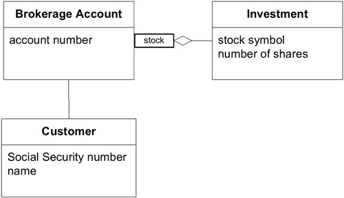
이 규칙이 모든 비즈니스 상황(예를 들어 매수 단위(lot)별로 추적해야 하는 경우)에 적용되는 것은 아니지만, 구체적인 규칙이 무엇이든 연관에 대한 제약이 발견되는 대로 모델과 구현에 포함해야 한다. 이러한 제약은 모델을 더 정밀하게 만들고 구현을 더 쉽게 유지보수할 수 있게 한다.
자바 구현은 다음과 같이 바뀔 수 있다.
public class BrokerageAccount {
String accountNumber;
Customer customer;
Map investments;
// Omitting constructors, etc.
public Customer getCustomer() {
return customer;
}
public Investment getInvestment(String stockSymbol) {
return (Investment)investments.get(stockSymbol);
}
}그리고 SQL 기반 구현은 다음과 같을 것이다.
public class BrokerageAccount {
String accountNumber;
String customerSocialSecurityNumber;
//Omitting constructors, etc.
public Customer getCustomer() {
String sqlQuery = "SELECT * FROM CUSTOMER WHERE SS_NUMBER='"
+ customerSocialSecurityNumber + "'";
return QueryService.findSingleCustomerFor(sqlQuery);
}
public Investment getInvestment(String stockSymbol) {
String sqlQuery = "SELECT * FROM INVESTMENT "
+ "WHERE BROKERAGE_ACCOUNT='" + accountNumber + "'"
+ "AND STOCK_SYMBOL='" + stockSymbol +"'";
return QueryService.findInvestmentFor(sqlQuery);
}
}모델의 연관을 신중하게 정제하고 제약하는 것만으로도 모델 주도 설계(MODEL-DRIVEN DESIGN)에 크게 다가갈 수 있다. 이제 객체 자체로 눈을 돌려 보자. 몇 가지 구분을 도입하면 모델을 명확히 하면서 동시에 더 실용적인 구현을 만들 수 있다. . . .
엔티티(Entity, 참조 객체(Reference Object)라고도 함)

많은 객체는 근본적으로 속성이 아니라 연속성과 정체성(identity)의 흐름에 의해 정의된다.
한 집주인이 자신의 부동산에 큰 피해를 입혔다며 나를 고소했다. 내가 받은 소장에는 벽에 구멍이 뚫리고, 카펫에 얼룩이 졌으며, 싱크대에 고인 유독한 액체에서 부식성 가스가 올라와 주방 벽지가 벗겨진 아파트가 묘사되어 있었다. 법원 문서는 피해에 책임이 있는 세입자로 내 이름과 당시 내 현주소를 적어 나를 지목했다. 나는 그 망가진 집에 가 본 적조차 없었기 때문에 어리둥절했다.
잠시 후, 나는 이것이 사람 착오(mistaken identity)일 것이라고 깨달았다. 원고에게 전화를 걸어 이 사실을 말했지만, 그녀는 믿지 않았다. 이전 세입자가 몇 달째 그녀를 피해 다니고 있었기 때문이다. 그녀에게 그토록 큰 금전적 손실을 입힌 장본인이 내가 아니라는 것을 어떻게 증명할 수 있을까? 전화번호부에는 에릭 에반스(Eric Evans)가 나 혼자뿐이었다.
그런데 바로 그 전화번호부가 나를 구해 주었다. 나는 2년째 같은 아파트에 살고 있었기 때문에, 그녀에게 작년 전화번호부를 아직 가지고 있는지 물었다. 그녀가 작년 번호부를 찾아 내 등재 내용이 그대로인 것(하필 내 동명이인 바로 옆 줄에 있었다)을 확인하고 나서야, 내가 자신이 고소하려던 사람이 아님을 깨닫고 사과하며 소송을 취하하겠다고 약속했다.
컴퓨터는 그만큼 기지를 발휘하지 못한다. 소프트웨어 시스템에서 정체성 착오는 데이터 손상과 프로그램 오류로 이어진다.
여기에는 특별한 기술적 과제들이 있으며 이에 대해서는 곧 다루겠지만, 먼저 근본적인 문제부터 살펴보자. 많은 사물은 어떤 속성이 아니라 정체성에 의해 정의된다. 우리의 일반적인 관념에서 (비기술적 예를 이어 가자면) 한 사람은 태어나서 죽을 때까지, 심지어 그 이후까지도 이어지는 정체성을 지닌다. 그 사람의 신체적 속성은 변하고 결국 사라진다. 이름도 바뀔 수 있다. 재정적 관계도 생겼다 사라진다. 사람에게서 변하지 않을 수 있는 속성은 단 하나도 없지만, 정체성은 여전히 유지된다. 나는 다섯 살 때의 나와 같은 사람인가? 이러한 형이상학적 질문은 효과적인 도메인 모델을 찾는 데 중요하다. 조금 바꾸어 말하면 다음과 같다. 애플리케이션의 사용자는 내가 다섯 살 때의 나와 같은 사람인지 여부에 관심을 두는가?
미수금을 추적하는 소프트웨어 시스템에서, 그 평범해 보이는 “고객(customer)” 객체는 훨씬 더 다채로운 이력을 지닐 수 있다. 제때 대금을 납부해 신용 상태를 쌓기도 하고, 미납으로 인해 채권 추심 기관에 넘겨지기도 한다. 영업팀이 고객 데이터를 연락처 관리 소프트웨어로 추출할 때면 완전히 다른 시스템에서 이중생활을 하기도 한다. 어느 경우든 데이터베이스 테이블에 저장되기 위해 무자비하게 납작하게 펴지기도 한다. 그리고 그 고객으로부터 더 이상 새로운 거래가 들어오지 않으면, 고객 객체는 과거의 그림자만 남긴 채 아카이브(archive)로 은퇴하게 된다.
고객의 이러한 각 형태는 서로 다른 프로그래밍 언어와 기술에 기반한 각기 다른 구현이다. 하지만 주문을 알리는 전화가 걸려 왔을 때 다음을 아는 것은 중요하다. 이 사람이 연체 계좌를 가진 그 고객인가? 이 사람이 잭(Jack, 특정 영업 담당자)이 몇 주 동안 공들여 온 바로 그 고객인가? 아니면 완전히 새로운 고객인가?
개념적 정체성은 객체의 여러 구현, 저장된 형태, 그리고 전화를 건 사람 같은 현실 세계의 행위자 사이에서 서로 일치되어야 한다. 속성이 일치하지 않을 수도 있다. 영업 담당자가 연락처 소프트웨어에 주소 변경 사항을 입력했고, 그것이 이제 막 미수금 시스템으로 전파되는 중일 수 있다. 두 고객 연락처의 이름이 같을 수도 있다. 분산 소프트웨어에서는 여러 사용자가 서로 다른 출처에서 데이터를 입력할 수 있으며, 이로 인해 갱신 트랜잭션이 시스템을 통해 전파되면서 여러 데이터베이스에서 비동기적으로 조정되기도 한다.
객체 모델링은 우리로 하여금 객체의 속성에 집중하게 만드는 경향이 있지만, 엔티티(Entity)의 근본 개념은 생명주기를 관통하며 심지어 여러 형태를 거쳐 가는 추상적인 연속성이다.
어떤 객체들은 주로 속성에 의해 정의되지 않는다. 이들은 시간을 관통하고 종종 서로 다른 표현을 가로지르며 이어지는 정체성의 흐름을 나타낸다. 때로는 속성이 다르더라도 한 객체를 다른 객체와 일치시켜야 한다. 또한 속성이 같더라도 한 객체를 다른 객체와 구별해야 한다. 정체성을 잘못 식별하면 데이터 손상으로 이어질 수 있다.
주로 정체성에 의해 정의되는 객체를 엔티티(Entity)라고 한다.3^ 엔티티에는 특별한 모델링 및 설계 고려사항이 따른다. 엔티티는 형태와 내용이 급격하게 변할 수 있는 생명주기를 갖지만, 연속성의 흐름은 반드시 유지되어야 한다. 효과적으로 추적할 수 있도록 정체성을 정의해야 한다. 클래스 정의, 책임, 속성, 연관 관계는 엔티티가 지닌 특정 속성이 아니라 ’그것이 누구(무엇)인가’를 중심으로 구성되어야 한다. 급격하게 변형되거나 복잡한 생명주기를 갖지 않는 엔티티라 하더라도, 이를 이 의미론적 범주에 배치하면 모델이 더 명료해지고 구현이 더 견고해진다.
4^ 모델의 엔티티(Entity)는 자바의 “엔티티 빈(entity bean)”과 같은 것이 아니다. 엔티티 빈은 어느 정도 엔티티를 구현하기 위한 프레임워크로 의도되었지만, 실제로는 그렇게 작동하지 않았다. 대부분의 엔티티는 평범한 객체로 구현된다. 어떻게 구현되든 간에, 엔티티는 도메인 모델에서 근본적인 구분이다.
물론 소프트웨어 시스템의 대부분 “엔티티”는 일반적인 의미의 사람이나 실체가 아니다. 엔티티는 생명주기를 관통하는 연속성을 지니며, 애플리케이션 사용자에게 중요한 속성 독립적인 구별성을 가지는 모든 것을 말한다. 그것은 사람, 도시, 자동차, 복권, 혹은 은행 거래일 수 있다.
반면에 모델의 모든 객체가 의미 있는 정체성을 가진 엔티티인 것은 아니다. 이 문제는 객체지향 언어가 모든 객체에 “동일성(identity)” 연산(예: 자바의 “==” 연산자)을 내장하고 있다는 사실 때문에 혼란스러워진다. 이러한 연산은 메모리 주소를 비교하거나 다른 메커니즘을 통해 두 참조가 같은 객체를 가리키는지 판단한다. 이런 의미에서는 모든 객체 인스턴스가 정체성을 갖는다. 예컨대 자바 런타임 환경을 만들거나 원격 객체를 로컬에 캐싱하는 기술 프레임워크를 만드는 도메인에서는 실제로 모든 객체 인스턴스가 엔티티일 수도 있다. 하지만 이 정체성 메커니즘은 다른 애플리케이션 도메인에서는 거의 의미가 없다. 정체성은 언어의 자동 기능에 맡겨 둘 수 없는, 엔티티만의 미묘하고 의미 있는 특성이다.
은행 애플리케이션의 거래(transaction)를 생각해 보자. 같은 날 같은 계좌에 같은 금액을 두 번 입금하더라도 여전히 서로 다른 거래이므로, 이들은 정체성을 가지며 엔티티다. 반면에 그 두 거래의 금액 속성은 어떤 화폐(money) 객체의 인스턴스일 것이다. 이러한 값들은 구별할 실익이 없으므로 정체성을 갖지 않는다. 사실 두 객체는 같은 속성을 가지지 않거나 심지어 반드시 같은 클래스에 속하지 않더라도 같은 정체성을 가질 수 있다. 은행 고객이 은행 명세서의 거래 내역과 수표 출납부(check registry)의 거래 내역을 대조(reconcile)할 때, 그 작업은 구체적으로 서로 다른 날짜에 서로 다른 주체가 기록했더라도(은행의 결제일이 수표 발행일보다 늦으므로) 같은 정체성을 가진 거래를 맞추는 것이다. 컴퓨터 프로그램으로 처리하든 수작업으로 처리하든, 수표 번호의 목적은 바로 이 용도의 고유 식별자 역할을 하는 데 있다. 식별 번호가 없는 입금이나 현금 인출은 더 까다로울 수 있지만 같은 원칙이 적용된다. 즉, 각 거래는 최소한 두 가지 형태로 나타나는 하나의 엔티티다.
은행 거래나 아파트 세입자의 경우처럼 정체성이 특정 소프트웨어 시스템 외부에서도 중요한 경우가 흔하다. 하지만 때로는 컴퓨터 프로세스의 정체성처럼 시스템의 컨텍스트 안에서만 정체성이 중요한 경우도 있다.
그러므로:
객체가 속성이 아니라 정체성으로 구별될 때는, 모델 정의에서 이 점을 최우선으로 삼아라. 클래스 정의를 단순하게 유지하고 생명주기 연속성과 정체성에 집중하라. 형태나 이력과 상관없이 각 객체를 구별할 수 있는 수단을 정의하라. 속성으로 객체를 매칭해야 하는 요구사항에 주의를 기울여라. 가급적 고유성이 보장되는 심볼을 부여하여, 각 객체에 대해 고유한 결과를 생성함이 보장되는 연산을 정의하라. 이러한 식별 수단은 외부에서 올 수도 있고 시스템에 의해 시스템을 위해 생성된 임의의 식별자일 수도 있지만, 모델 내의 정체성 구분과 반드시 일치해야 한다. 모델은 ’같은 것’이 무엇을 의미하는지 정의해야 한다.
정체성은 세상의 사물에 본래부터 내재된 것이 아니라, 유용하기 때문에 부여된 의미다. 실제로 현실 세계의 같은 사물이라도 도메인 모델에서 엔티티로 표현될 수도 있고 그렇지 않을 수도 있다.
경기장 좌석 예약 애플리케이션은 좌석과 참석자를 엔티티로 다룰 수 있다. 각 티켓에 좌석 번호가 적혀 있는 지정석의 경우, 좌석은 엔티티다. 그 식별자는 경기장 내에서 고유한 좌석 번호다. 좌석에는 위치, 시야 방해 여부, 가격 등 다른 많은 속성이 있을 수 있지만, 좌석을 식별하고 구별하는 데에는 오직 좌석 번호(또는 고유한 열과 위치)만 사용된다.
반면에 행사가 “자유석(general admission)”이어서 티켓 소지자가 빈자리 아무 곳에나 앉을 수 있다면, 개별 좌석을 구별할 필요가 없다. 오직 전체 좌석 수만 중요하다. 물리적인 좌석에는 여전히 좌석 번호가 새겨져 있겠지만, 소프트웨어가 이를 추적할 필요는 없다. 사실 자유석 행사에는 그런 제약이 없으므로, 모델이 특정 좌석 번호를 티켓과 연관 짓는 것은 오히려 잘못된 것이다. 이런 경우 좌석은 엔티티가 아니며, 식별자도 필요하지 않다.
엔티티(Entity) 모델링하기
객체를 모델링할 때 속성에 대해 생각하는 것은 자연스러운 일이며, 행위에 대해 생각하는 것도 매우 중요하다. 하지만 엔티티의 가장 기본적인 책임은 행위가 명확하고 예측 가능해지도록 연속성을 확립하는 것이다. 엔티티는 간결하게 유지될 때 이 책임을 가장 잘 수행한다. 속성이나 심지어 행위에 집중하기보다는, 엔티티 객체의 정의를 가장 본질적인 특성—특히 엔티티를 식별하거나 이를 찾고 매칭하는 데 흔히 쓰이는 특성—만 남도록 덜어내라. 개념에 필수적인 행위와 그 행위가 요구하는 속성만 추가하라. 그 외의 행위와 속성은 핵심 엔티티와 연관된 다른 객체로 옮기도록 모색하라. 그중 일부는 다른 엔티티가 될 것이고, 일부는 이 장의 다음 패턴인 값 객체(Value Object)가 될 것이다. 정체성 문제 너머에서, 엔티티는 자신이 소유한 객체들의 연산을 조율함으로써 책임을 수행하는 경향이 있다.
그림 5.5에서 customerID는 Customer 엔티티의 유일한 식별자이지만, 전화번호와 주소는 Customer를 찾거나 매칭하는 데 자주 사용될 것이다. 이름이 사람의 정체성을 정의하지는 않지만, 정체성을 판별하는 수단의 일부로 흔히 쓰인다. 이 예제에서는 전화번호와 주소 속성이 Customer로 옮겨졌지만, 실제 프로젝트에서는 도메인에서 고객을 일반적으로 어떻게 매칭하고 구별하는지에 따라 그 선택이 달라진다. 예를 들어, 한 Customer가 용도별로 여러 연락처 전화번호를 가지고 있다면, 전화번호는 정체성과 관련이 없으므로 Sales Contact에 남아 있어야 한다.
그림 5.5. 정체성과 관련된 속성은 엔티티(Entity)에 남는다.

정체성 연산 설계하기
각 엔티티는 다른 객체와의 정체성을 판별할 수 있는 운용 가능한 방법을 가져야 하며, 동일한 서술적 속성을 가진 다른 객체와도 구별될 수 있어야 한다. 식별 속성은 분산되어 있거나 객체가 아카이브된 경우를 포함해 시스템이 정의되는 방식이 무엇이든 그 시스템 내에서 고유함이 보장되어야 한다.
앞서 언급했듯이 객체지향 언어에는 메모리상에서 객체의 위치를 비교하여 두 참조가 같은 객체를 가리키는지 판단하는 “동일성(identity)” 연산이 있다. 이런 종류의 정체성 추적은 우리의 목적에 비추어 너무 취약하다. 객체의 영속적 저장을 위한 대부분의 기술에서는 데이터베이스에서 객체를 조회할 때마다 새로운 인스턴스가 생성되므로 초기의 동일성은 사라진다. 네트워크를 통해 객체를 전송할 때마다 목적지에 새로운 인스턴스가 생성되므로 또다시 동일성은 사라진다. 분산 데이터베이스를 통해 갱신이 전파되는 경우처럼 시스템 내에 동일 객체의 여러 버전이 동시에 존재할 때는 문제가 훨씬 더 심각해질 수 있다.
이러한 기술적 문제를 단순화해 주는 프레임워크가 있더라도 근본적인 질문은 남는다. 두 객체가 같은 개념적 엔티티를 나타낸다는 것을 어떻게 아는가? 정체성의 정의는 모델에서 나온다. 정체성을 정의하려면 도메인에 대한 이해가 필요하다.
경우에 따라 특정 데이터 속성이나 속성들의 조합이 시스템 내에서 고유함을 보장받거나 단순히 고유하도록 제약될 수 있다. 이 접근 방식은 엔티티에 대한 고유 키를 제공한다. 예를 들어 일간 신문은 신문 이름, 도시, 발행일로 식별될 수 있다. (단, 호외 발행이나 제호 변경은 주의해야 한다!)
객체의 속성들로 이루어진 진정한 고유 키가 없을 때 흔히 쓰는 또 다른 해결책은, 클래스 내에서 고유한 심볼(숫자나 문자열 등)을 각 인스턴스에 부여하는 것이다. 일단 이 ID 심볼이 생성되어 엔티티의 속성으로 저장되면 불변(immutable)으로 지정된다. 개발 시스템이 이 규칙을 직접 강제할 수 없더라도 절대 변경되어서는 안 된다. 예를 들어 객체가 데이터베이스에 납작하게 저장되었다가 재구성될 때도 ID 속성은 보존된다. 때로는 기술 프레임워크가 이 과정을 도와주기도 하지만, 그렇지 않다면 오직 엔지니어링 규율로 지켜내야 한다.
ID는 종종 시스템에 의해 자동으로 생성된다. 생성 알고리즘은 시스템 내에서의 고유성을 보장해야 하는데, 동시 처리나 분산 시스템에서는 이것이 까다로운 과제가 될 수 있다. 그러한 ID를 생성하려면 이 책의 범위를 넘어서는 기법들이 필요할 수 있다. 여기서의 목표는 언제 그러한 고려사항이 등장하는지 짚어 주어, 개발자가 풀어야 할 문제가 있음을 인식하고 핵심 영역으로 관심사를 좁힐 수 있게 하는 것이다. 핵심은 정체성에 관한 고민이 모델의 구체적인 측면에 달려 있음을 인식하는 데 있다. 종종 식별 수단을 정하기 위해서도 도메인에 대한 면밀한 연구가 필요하다.
ID가 자동으로 생성될 때, 사용자는 그 ID를 볼 필요가 전혀 없을 수도 있다. 예를 들어 사용자가 사람 이름으로 레코드를 검색하는 연락처 관리 애플리케이션처럼 내부적으로만 ID가 필요할 수 있다. 프로그램은 완전히 같은 이름을 가진 두 연락처를 단순하고 모호하지 않게 구별할 수 있어야 한다. 고유한 내부 ID 덕분에 시스템은 바로 그 일을 해낸다. 서로 다른 두 항목을 조회한 뒤 시스템은 사용자에게 두 개의 분리된 연락처를 보여 주지만, ID 자체는 보이지 않을 수 있다. 사용자는 회사나 위치 등을 기준으로 두 연락처를 구별할 것이다.
마지막으로, 생성된 ID가 사용자에게 관심 대상이 되는 경우도 있다. 택배 서비스를 통해 소포를 보낼 때 나는 배송 회사 소프트웨어가 생성한 운송장 번호(tracking number)를 받으며, 이를 통해 내 소포를 식별하고 추적할 수 있다. 항공권을 예매하거나 호텔을 예약할 때는 해당 거래의 고유 식별자인 예약 확인 번호를 받는다.
어떤 경우에는 ID의 고유성이 컴퓨터 시스템의 경계를 넘어서까지 적용되어야 한다. 예를 들어 서로 다른 컴퓨터 시스템을 운영하는 두 병원 사이에 의료 기록을 교환한다면, 이상적으로는 각 시스템이 동일한 환자 ID를 사용하겠지만 각자 고유한 심볼을 생성한다면 이는 어렵다. 이런 시스템들은 흔히 정부 기관 등 다른 기관이 발급한 식별자를 사용한다. 미국에서는 병원이 개인의 식별자로 사회보장번호(Social Security number)를 자주 사용한다. 그러나 이러한 방법도 완벽하지는 않다. 모든 사람이 사회보장번호를 가진 것은 아니며(특히 어린이나 미국 비거주자), 많은 사람이 프라이버시 문제로 그 사용을 꺼린다.
덜 공식적인 상황(예: 비디오 대여점)에서는 전화번호가 식별자로 사용되기도 한다. 하지만 전화는 여럿이 공유할 수 있다. 번호는 바뀔 수 있다. 심지어 이전 번호가 다른 사람에게 재할당될 수도 있다.
이러한 이유들로 인해 특별히 할당된 식별자(예: 항공 마일리지 회원 번호)가 자주 사용되며, 전화번호나 사회보장번호 같은 다른 속성들은 매칭과 검증을 위해 사용된다. 어쨌든 애플리케이션이 외부 ID를 요구할 때는 시스템의 사용자가 고유한 ID를 제공할 책임을 지게 되며, 시스템은 예외가 발생했을 때 이를 처리할 수 있는 적절한 도구를 사용자에게 제공해야 한다.
이 모든 기술적 문제에 매몰되다 보면, 근저에 있는 개념적 문제를 놓치기 쉽다. 두 객체가 ’같은 것’이라는 말은 무엇을 의미하는가? 각 객체에 ID 도장을 찍거나 두 인스턴스를 비교하는 연산을 작성하는 것은 충분히 쉽다. 하지만 이러한 ID나 연산이 도메인에서 의미 있는 구별과 대응하지 않는다면 오히려 혼란만 가중시킬 뿐이다. 이 때문에 정체성을 부여하는 연산에는 종종 사람의 개입이 수반된다. 예를 들어 수표책 대조 소프트웨어는 일치할 법한 항목들을 제안할 수 있지만, 최종 판단은 사용자가 내리도록 기대한다.
값 객체(Value Object)
많은 객체는 개념적 정체성을 갖지 않는다. 이러한 객체들은 어떤 사물의 특성을 서술한다.
아이가 그림을 그릴 때, 아이는 자신이 고르는 마커의 색상에 신경 쓰고 펜촉이 얼마나 뾰족한지에도 신경 쓸지 모른다. 하지만 색깔과 모양이 같은 마커 두 개가 있다면, 그중 어느 것을 쓰든 크게 신경 쓰지 않을 것이다. 마커 하나를 잃어버려 새 팩에서 같은 색의 다른 마커로 대체하더라도, 아이는 바뀐 것에 아랑곳하지 않고 하던 그림을 계속 그릴 것이다.
냉장고에 붙어 있는 여러 그림에 대해 아이에게 물어보면, 아이는 자신이 그린 그림과 여동생이 그린 그림을 금세 구별할 것이다. 아이와 여동생에게는 유용한 정체성이 있으며, 완성된 그림들 역시 마찬가지다. 하지만 그림 속의 각 선을 어떤 마커로 그렸는지까지 추적해야 한다면 얼마나 복잡해질지 상상해 보라. 그림 그리기는 더 이상 아이들의 놀이가 아니게 될 것이다.
모델에서 가장 눈에 띄는 객체는 보통 엔티티(Entity)이고, 각 엔티티의 정체성을 추적하는 것이 매우 중요하기 때문에, 모든 도메인 객체에 정체성을 부여하려는 생각을 하기 쉽다. 실제로 어떤 프레임워크들은 모든 객체에 고유 ID를 부여하기도 한다.
그러면 시스템은 그 모든 추적을 감당해야 하며, 가능한 많은 성능 최적화가 원천적으로 봉쇄된다. 의미 있는 정체성을 정의하고 분산 시스템이나 데이터베이스 저장소 전반에서 객체를 빈틈없이 추적할 방법을 마련하기 위해 분석적 노력도 투입해야 한다. 그에 못지않게 중요한 점은, 인위적인 정체성을 부여하는 것이 오해를 불러일으킨다는 것이다. 이는 모든 객체를 똑같은 틀에 억지로 밀어 넣어 모델을 흐트러뜨린다.
엔티티의 정체성을 추적하는 것은 필수적이지만, 다른 객체에까지 정체성을 부여하면 시스템 성능을 해치고 분석 작업을 늘리며 모든 객체가 똑같아 보이게 만들어 모델을 흐트러뜨린다.
소프트웨어 설계는 복잡성과의 끊임없는 싸움이다. 우리는 꼭 필요한 곳에만 특별한 처리가 적용되도록 구별을 두어야 한다.
하지만 이 범주의 객체를 단지 ’정체성이 없는 것’으로만 생각한다면, 우리의 도구 상자나 어휘에 별로 보탠 것이 없게 된다. 사실 이 객체들은 고유의 특성과 모델에 대한 고유의 의미를 지닌다. 이들은 사물을 서술하는 객체들이다.
개념적 정체성 없이 도메인의 서술적 측면(descriptive aspect)을 나타내는 객체를 값 객체(Value Object)라고 한다. 값 객체는 설계에서 ’누구인지’나 ’어느 것인지’가 아니라 오직 ’무엇인지’에만 관심이 있는 요소를 나타내기 위해 인스턴스화된다.
“주소(Address)”는 값 객체(Value Object)인가? 누가 묻느냐에 달려 있다. 우편 주문 회사의 소프트웨어에서는 신용카드를 확인하고 소포를 보낼 주소를 적기 위해 주소가 필요하다. 하지만 룸메이트도 같은 회사에서 주문한다고 해서 두 사람이 같은 위치에 있다는 사실까지 파악할 필요는 없다. 주소는 값 객체(Value Object)다. 배송 경로를 편성하기 위한 우체국 소프트웨어에서는, 국가가 지역, 도시, 우편 구역, 블록의 계층 구조로 구성되어 개별 주소로 끝날 수 있다. 이 주소 객체들은 계층 구조의 상위 객체로부터 우편번호를 물려받게 되며, 우체국이 우편 구역을 재조정하기로 결정하면 그 안의 모든 주소도 함께 따라 움직인다. 여기서 주소는 엔티티(Entity)다. 전력 회사의 소프트웨어에서는 주소가 회사의 송전선과 서비스가 도달하는 목적지에 해당한다. 룸메이트가 각자 전화를 걸어 전기 서비스를 신청한다면, 회사는 두 신청이 같은 주소임을 인지해야 한다. 주소는 엔티티(Entity)다. 대안으로, 모델이 전기 서비스를 ’주거지(dwelling)’라는 엔티티와 연결하고 주소는 그 속성으로 둘 수도 있다. 그렇다면 주소는 값 객체(Value Object)가 될 것이다.
색상은 많은 현대 개발 시스템의 기본 라이브러리에서 제공되는 값 객체의 한 예이며, 문자열과 숫자도 마찬가지다. (당신은 내가 가진 “4”가 어느 “4”인지, 혹은 어느 “Q”인지 신경 쓰지 않는다.) 이러한 기본 예제는 단순하지만, 값 객체가 반드시 단순한 것은 아니다. 예를 들어, 색상 혼합 프로그램은 향상된 색상 객체들을 결합해 다른 색상을 만들어 내는 풍부한 모델을 가질 수 있다. 이러한 색상 객체들은 서로 협력하여 새로운 결과 값 객체를 도출하기 위한 복잡한 알고리즘을 가질 수 있다.
값 객체는 다른 객체들의 집합체일 수도 있다. 주택 설계 도면을 그리는 소프트웨어에서는 각 창문 스타일(window style)마다 객체를 만들 수 있다. 이 “창문 스타일”은 높이, 너비, 그리고 이 속성들이 어떻게 변경되고 결합될 수 있는지를 규율하는 규칙들과 함께 “창문(window)” 객체에 포함될 수 있다. 이러한 창문은 다른 값 객체들로 구성된 정교한 값 객체다. 그리고 이들은 다시 “벽(wall)” 객체와 같은 더 큰 도면 요소에 포함될 것이다.
값 객체는 심지어 엔티티를 참조할 수도 있다. 예를 들어 내가 온라인 지도 서비스에 샌프란시스코에서 로스앤젤레스로 가는 경치 좋은 드라이브 경로를 요청하면, 서비스는 퍼시픽 코스트 하이웨이(Pacific Coast Highway)를 경유해 L.A.와 샌프란시스코를 잇는 Route 객체를 도출할 수 있다. 그 Route 객체가 참조하는 세 객체(두 도시와 하나의 고속도로)는 모두 엔티티이지만, Route 객체 자체는 하나의 값(VALUE)이다.
값 객체는 객체 간 메시지의 매개변수로 자주 전달된다. 이들은 어떤 연산을 위해 생성되었다가 버려지는 일시적인(transient) 객체인 경우가 많다. 값 객체는 엔티티(그리고 다른 값 객체)의 속성으로 사용된다. 사람은 정체성을 가진 엔티티로 모델링될 수 있지만, 그 사람의 이름은 하나의 값(VALUE)이다.
모델의 어떤 요소에서 오직 그 속성에만 관심이 있다면, 이를 값 객체(Value Object)로 분류하라. 그 객체가 전달하는 속성의 의미를 표현하도록 만들고, 관련 기능을 부여하라. 값 객체는 불변(immutable)으로 취급하라. 값 객체에 어떤 정체성도 부여하지 말고, 엔티티를 유지하는 데 필요한 설계 복잡성을 피하라.
값 객체를 구성하는 속성들은 하나의 개념적 전체(conceptual whole)를 이루어야 한다.5^ 예를 들어 거리, 도시, 우편번호가 Person 객체의 별개 속성이 되어서는 안 된다. 이들은 하나의 온전한 주소의 일부이며, 이를 하나로 묶으면 Person이 더 단순해지고 값 객체는 더 응집력 있게 된다.
6^ 워드 커닝햄(Ward Cunningham)의 WHOLE VALUE 패턴.
그림 5.6. 값 객체(Value Object)는 엔티티(Entity)에 관한 정보를 제공할 수 있다. 값 객체는 개념적으로 완전한 전체여야 한다.

값 객체(Value Object) 설계하기
우리는 어떤 값 객체(Value Object)의 인스턴스를 가지고 있는지 신경 쓰지 않는다. 이러한 제약의 부재는 설계를 단순화하거나 성능을 최적화하는 데 활용할 수 있는 설계상의 자유를 제공한다. 여기에는 복사, 공유, 불변성(immutability)에 관한 선택이 포함된다.
두 사람의 이름이 같다고 해서 두 사람이 동일인이 되거나 서로 대체할 수 있는 것은 아니다. 하지만 이름을 나타내는 객체는 철자만 중요하므로 서로 대체할 수 있다. Name 객체는 첫 번째 Person 객체에서 두 번째 Person 객체로 복사할 수 있다.
사실 두 Person 객체는 각자의 이름 인스턴스를 따로 가질 필요가 없을 수도 있다. 두 Person 객체가 동일한 Name 객체를 공유하더라도(각각이 같은 이름 인스턴스에 대한 포인터를 가짐) 그 행동이나 식별성(identity)에는 아무런 변화가 없다. 즉, 한 사람의 이름을 변경하기 전까지는 올바르게 동작한다. 그런데 이름을 변경하면 다른 사람의 이름까지 함께 바뀌어 버린다! 이를 방지하여 객체를 안전하게 공유하려면, 객체가 불변(immutable)이어야 한다. 즉, 전체 교체를 제외하고는 변경할 수 없어야 한다.
한 객체가 자신의 속성 중 하나를 다른 객체에 인자나 반환값으로 전달할 때도 동일한 문제가 발생한다. 소유자의 통제를 벗어나 떠돌아다니는 동안 객체에 무슨 일이든 일어날 수 있다. 값이 소유자의 불변식(invariant)을 위반하는 방식으로 변경되어 소유자를 손상시킬 수도 있다. 이 문제는 전달되는 객체를 불변으로 만들거나 복사본을 전달함으로써 피할 수 있다.
값 객체는 그 수가 매우 많아지는 경향이 있으므로, 성능 튜닝을 위한 추가 선택지를 확보하는 것이 중요할 수 있다. 주택 설계 소프트웨어의 예제가 이를 잘 보여 준다. 만약 각 전기 콘센트가 별도의 값 객체라면, 하나의 주택 설계도 한 버전에만도 콘센트가 백 개나 들어갈 수 있다. 하지만 모든 콘센트가 상호 대체 가능하다고 간주된다면, 콘센트 인스턴스 단 하나만 공유하고 백 번 참조하게 만들 수 있다(플라이웨이트(FLYWEIGHT) 패턴의 사례 [Gamma et al. 1995]). 대규모 시스템에서는 이러한 효과가 수천 배로 증폭될 수 있으며, 이런 최적화가 쓸 만한 시스템과 수백만 개의 중복 객체에 발목이 잡혀 느려터진 시스템 사이의 차이를 만들어 낼 수 있다. 이는 엔티티(Entity)에서는 사용할 수 없는 최적화 기법의 한 예일 뿐이다.
복사와 공유의 경제성은 구현 환경에 따라 달라진다. 복사는 시스템에 엄청난 수의 객체를 쌓아 막히게 할 수 있지만, 공유는 분산 시스템의 속도를 떨어뜨릴 수 있다. 두 머신 사이에 복사본을 전달할 때는 단일 메시지만 전송되며, 복사본은 수신 측 머신에서 독립적으로 존재한다. 반면 단일 인스턴스를 공유한다면 참조만 전달되므로, 상호작용할 때마다 원래 객체로 메시지를 되돌려 보내야 한다.
공유는 가장 가치가 크고 문제가 적은 다음 경우로 제한하는 것이 가장 좋다.
- 데이터베이스의 저장 공간이나 객체 수를 절약하는 것이 중요할 때
- (중앙 집중식 서버에서처럼) 통신 오버헤드가 낮을 때
- 공유되는 객체가 엄격하게 불변일 때
속성이나 객체의 불변성은 일부 언어와 환경에서는 명시적으로 선언할 수 있지만, 그렇지 못한 곳도 있다. 이러한 언어적 기능은 설계 결정을 전달하는 데 도움이 되지만 필수적인 것은 아니다. 우리가 모델에서 구분하는 많은 개념들은 현재의 대부분 도구와 프로그래밍 언어에서 구현 수준으로 명시적으로 선언할 수 없다. 예를 들어 엔티티를 선언하고 식별성 연산이 자동으로 강제되게 할 수는 없다. 그러나 개념적 구분에 대한 직접적인 언어 지원이 없다고 해서 그 구분이 유용하지 않다는 뜻은 아니다. 단지 구현에서는 암묵적으로만 존재할 규칙을 유지하기 위해 더 많은 규율이 필요할 뿐이다. 이는 명명 규칙, 선택적인 문서화, 그리고 충분한 논의를 통해 보강할 수 있다.
값 객체가 불변인 한, 변경 관리는 단순하다. 전체 교체를 제외하면 어떤 변경도 없기 때문이다. 불변 객체는 전기 콘센트 예제에서처럼 자유롭게 공유할 수 있다. 가비지 컬렉션이 신뢰할 만하다면, 삭제는 그저 해당 객체에 대한 모든 참조를 끊는 것만으로 끝난다. 설계에서 값 객체를 불변으로 지정하면, 개발자는 애플리케이션이 특정 객체 인스턴스에 의존하지 않는다는 확신을 가지고 복사나 공유 같은 문제를 순수하게 기술적인 관점에서 자유롭게 결정할 수 있다.
예외적인 경우: 가변성(Mutability)을 허용해야 할 때 불변성은 구현을 크게 단순화하여 공유와 참조 전달을 안전하게 만든다. 또한 값의 의미에도 부합한다. 속성의 값이 바뀌면 기존 객체를 수정하는 대신 다른 값 객체를 사용한다. 그럼에도 불구하고 성능상의 이유로 값 객체를 가변(mutable)으로 허용하는 편이 유리한 경우가 있다. 다음 요인들은 가변 구현 쪽에 무게를 실어 준다. 값이 자주 변경되는 경우, 객체 생성이나 삭제 비용이 큰 경우, (앞선 예제에서 논의한 것처럼) 수정 대신 교체를 하면 클러스터링(clustering)이 깨지는 경우, 값의 공유가 많지 않거나 클러스터링 개선 또는 다른 기술적 이유로 공유를 포기한 경우. 다시 한 번 강조하자면, 값의 구현을 가변으로 만들기로 했다면 그 객체는 절대 공유해서는 안 된다. 공유를 하든 하지 않든, 가능할 때는 항상 값 객체를 불변으로 설계하라.
값 객체를 정의하고 불변으로 지정하는 것은 다음과 같은 일반 원칙을 따르는 사례다. 모델에서 불필요한 제약을 피하면 개발자가 순수하게 기술적인 성능 튜닝을 자유롭게 수행할 수 있다. 필수적인 제약을 명시적으로 정의해 두면, 개발자는 의미 있는 행동이 바뀔 걱정 없이 안전하게 설계를 미세 조정할 수 있다. 이러한 설계 조정은 종종 특정 프로젝트에서 사용 중인 기술에 매우 의존적이다.
예제
값 객체로 데이터베이스 튜닝하기
데이터베이스는 가장 낮은 수준에서 데이터를 디스크의 물리적 위치에 배치해야 하며, 물리적 부품이 이동하여 그 데이터를 읽는 데 시간이 걸린다. 정교한 데이터베이스는 단일 물리적 연산으로 관련 데이터를 디스크에서 한꺼번에 가져올 수 있도록 이러한 물리적 주소를 클러스터링(clustering)하려고 시도한다.
어떤 객체가 다른 많은 객체로부터 참조된다면, 그 객체들 중 일부는 가까이(같은 페이지에) 위치하지 못해 데이터를 가져오기 위한 추가 물리적 연산이 필요하게 된다. 동일한 인스턴스에 대한 참조를 공유하는 대신 복사본을 만들면, 여러 엔티티의 속성 역할을 하는 값 객체를 이를 사용하는 각 엔티티와 같은 페이지에 저장할 수 있다. 동일한 데이터의 복사본을 여러 개 저장하는 이 기법을 비정규화(denormalization)라고 하며, 저장 공간이나 유지보수의 단순성보다 접근 시간이 더 중요할 때 종종 사용된다.
관계형 데이터베이스에서는 별도의 테이블에 대한 연관 관계를 만드는 대신, 특정 값을 그것을 소유한 엔티티의 테이블 안에 직접 넣고 싶을 수 있다. 분산 시스템에서는 다른 서버에 있는 값 객체에 대한 참조를 유지하면 메시지 응답이 느려질 가능성이 높다. 대신 객체 전체의 복사본을 다른 서버로 전달해야 한다. 우리가 다루고 있는 대상이 값 객체이기 때문에 이러한 복사를 자유롭게 수행할 수 있다.
값 객체가 포함된 연관 관계 설계하기
앞서 다룬 연관 관계에 대한 논의 대부분은 엔티티와 값 객체 모두에 똑같이 적용된다. 모델 내의 연관 관계는 적고 단순할수록 좋다.
하지만 엔티티 간의 양방향 연관 관계는 유지하기 어려울 뿐이지만, 두 값 객체 간의 양방향 연관 관계는 아예 말이 되지 않는다. 식별성이 없다면, 어떤 객체가 자신을 가리키는 바로 그 값 객체를 다시 가리킨다고 말하는 것은 무의미하다. 기껏해야 자신을 가리키는 객체와 동등한 객체를 가리킨다고 말할 수 있을 뿐이며, 그 불변식을 어딘가에서 강제해야 한다. 물론 그렇게 구현하고 양방향 포인터를 설정할 수는 있겠지만, 그러한 배치가 유용한 사례를 떠올리기는 어렵다. 값 객체 간의 양방향 연관 관계는 완전히 제거하도록 하라. 만약 결국 모델에서 그러한 연관 관계가 꼭 필요해 보인다면, 애초에 그 객체를 값 객체로 선언한 결정부터 다시 생각해 보라. 아직 명시적으로 인식되지 않은 식별성이 그 객체에 있을지도 모른다.
엔티티와 값 객체는 전통적인 객체 모델의 주요 요소이지만, 실용적인 설계자들은 또 하나의 요소인 서비스(Service)를 함께 사용해 왔다. . . .
서비스(Services)

때로는 그저 사물(thing)이 아닌 경우도 있다.
어떤 경우에는 어떤 객체에도 개념적으로 속하지 않는 연산을 포함하는 것이 가장 명확하고 실용적인 설계가 된다. 억지로 객체에 끼워 맞추려 하기보다, 문제 공간의 자연스러운 윤곽을 따라 모델에 서비스(Service)를 명시적으로 포함할 수 있다.
엔티티나 값 객체 안에서 자연스러운 보금자리를 찾지 못하는 중요한 도메인 연산들이 존재한다. 이 중 일부는 본질적으로 사물이 아니라 활동(activity)이나 행동(action)이지만, 우리의 모델링 패러다임이 객체이기 때문에 어떻게든 객체 안에 끼워 맞추려 애쓰곤 한다.
물론 더 흔한 실수는 적절한 객체에 행동을 맞추려는 시도를 너무 쉽게 포기하고 서서히 절차적 프로그래밍으로 미끄러지는 것이다. 하지만 객체의 정의에 맞지 않는 연산을 객체에 억지로 밀어 넣으면, 그 객체는 개념적 명확성을 잃고 이해하거나 리팩토링하기 어려워진다. 복잡한 연산은 단순한 객체를 쉽게 압도하여 그 역할을 모호하게 만든다. 게다가 이러한 연산은 종종 여러 도메인 객체를 끌어모아 조율하고 실행에 옮기기 때문에, 추가된 책임이 그 모든 객체에 대한 의존성을 만들어 독립적으로 이해할 수 있었던 개념들을 뒤엉키게 만든다.
때때로 서비스는 어떤 연산을 수행하는 것 외에는 아무런 의미가 없는 모델 객체인 양 가장하여 나타난다. 이러한 “실행자(doer)”들은 결국 “Manager” 등으로 끝나는 이름을 갖게 된다. 이들은 자체적인 상태도 없고, 자신이 호스팅하는 연산을 제외하면 도메인 내에서 어떤 의미도 갖지 않는다. 그래도 최소한 이 방식은 실제 모델 객체를 망가뜨리지 않으면서 이러한 별개의 행동들에 보금자리를 제공해 주기는 한다.
도메인의 일부 개념은 객체로 모델링하는 것이 자연스럽지 않다. 필요한 도메인 기능을 엔티티나 값 객체의 책임으로 강제하면 모델 기반 객체의 정의가 왜곡되거나 의미 없는 인공적인 객체가 추가된다.
서비스는 엔티티나 값 객체처럼 상태를 캡슐화하지 않고, 모델 내에서 독립된 인터페이스로 제공되는 연산이다. 서비스는 기술 프레임워크에서 흔히 볼 수 있는 패턴이지만, 도메인 계층에도 적용할 수 있다.
서비스라는 이름은 다른 객체와의 관계를 강조한다. 엔티티나 값 객체와 달리, 서비스는 순수하게 클라이언트를 위해 무엇을 할 수 있는가로 정의된다. 서비스는 개체(entity)가 아니라 활동에 따라 이름을 짓는 경향이 있으며, 명사보다는 동사에 가깝다. 서비스 역시 추상적이고 의도를 담은 정의를 가질 수 있지만, 객체의 정의와는 결이 다르다. 서비스는 여전히 정의된 책임을 가져야 하며, 그 책임과 이를 수행하는 인터페이스는 도메인 모델의 일부로 정의되어야 한다. 연산 이름은 유비쿼터스 언어(Ubiquitous Language)에서 가져오거나 유비쿼터스 언어에 도입되어야 한다. 매개변수와 결과는 도메인 객체여야 한다.
서비스는 신중하게 사용해야 하며, 엔티티와 값 객체에서 모든 행동을 앗아가게 두어서는 안 된다. 하지만 어떤 연산이 실제로 중요한 도메인 개념이라면, 서비스는 모델 주도 설계(Model-Driven Design)의 자연스러운 일부를 이룬다. 실제로 아무것도 대변하지 않는 가짜 객체가 아니라 모델에서 서비스로 선언해 두면, 이 독립된 연산이 누구에게도 오해를 불러일으키지 않는다.
좋은 서비스는 세 가지 특징을 갖는다.
연산이 엔티티나 값 객체의 자연스러운 일부가 아닌 도메인 개념과 관련되어 있다.
- 인터페이스가 도메인 모델의 다른 요소들을 기준으로 정의되어 있다.
- 연산이 무상태(stateless)다. 여기서 무상태라는 것은, 어떤 클라이언트든 특정 서비스 인스턴스의 개별 이력과 무관하게 아무 인스턴스나 사용할 수 있다는 뜻이다. 서비스의 실행은 전역적으로 접근 가능한 정보를 사용할 수 있으며, 심지어 그 전역 정보를 변경할 수도 있다(즉, 부수 효과를 가질 수 있다). 그러나 대부분의 도메인 객체와 달리 서비스는 자신의 행동에 영향을 미치는 자체 상태를 보유하지 않는다.
도메인 내의 중요한 프로세스나 변환이 엔티티나 값 객체의 자연스러운 책임이 아니라면, 서비스로 선언된 독립 인터페이스로 그 연산을 모델에 추가하라. 모델의 언어를 사용해 인터페이스를 정의하고, 연산 이름이 유비쿼터스 언어의 일부가 되도록 하라. 서비스는 무상태로 만들어라.
서비스와 격리된 도메인 계층
이 패턴은 그 자체로 도메인에서 중요한 의미를 갖는 서비스에 초점을 맞추고 있지만, 물론 서비스가 도메인 계층에서만 사용되는 것은 아니다. 도메인 계층에 속한 서비스와 다른 계층의 서비스를 구분하고, 그 구분이 선명하게 유지되도록 책임을 분리하는 데 주의를 기울여야 한다.
문헌에서 논의되는 대부분의 서비스는 순수하게 기술적이며 인프라스트럭처 계층에 속한다. 도메인 서비스와 애플리케이션 서비스는 이러한 인프라스트럭처 서비스와 협력한다. 예를 들어, 은행 애플리케이션에서 계좌 잔액이 특정 임계치 아래로 떨어지면 고객에게 이메일을 보내는 기능이 있을 수 있다. 이메일 시스템과 아마도 다른 대체 알림 수단을 캡슐화하는 인터페이스는 인프라스트럭처 계층의 서비스다.
애플리케이션 서비스와 도메인 서비스를 구분하는 일은 더 까다로울 수 있다. 애플리케이션 계층은 알림을 지시할 책임을 진다. 도메인 계층은 임계치 도달 여부를 판단할 책임을 진다—비록 이 작업은 “계좌(account)” 객체의 책임에 잘 들어맞으므로 서비스가 필요하지 않을 가능성이 크지만 말이다. 그 은행 애플리케이션은 자금 이체를 담당할 수도 있다. 자금 이체에 맞는 차변(debit)과 대변(credit) 처리를 수행하도록 서비스가 고안되었다면, 그 기능은 도메인 계층에 속한다. 자금 이체는 은행 도메인 언어에서 의미를 가지며 근본적인 비즈니스 로직을 포함하기 때문이다. 기술 서비스에는 비즈니스 의미가 전혀 없어야 한다.
많은 도메인 서비스나 애플리케이션 서비스는 엔티티와 값 객체들의 집합 위에 구축되어, 실제로 무언가를 완수하기 위해 도메인의 잠재력을 조직하는 스크립트처럼 동작한다. 엔티티와 값 객체는 도메인 계층의 기능에 편리하게 접근하기에는 너무 세분화되어 있는 경우가 많다. 여기서 우리는 도메인 계층과 애플리케이션 계층 사이의 매우 미묘한 경계를 마주하게 된다. 예를 들어, 은행 애플리케이션이 분석을 위해 거래 내역을 스프레드시트 파일로 변환하여 내보낼 수 있다면, 그 내보내기 기능은 애플리케이션 서비스다. 은행 도메인에는 “파일 형식”이라는 의미가 존재하지 않으며, 관련된 비즈니스 규칙도 없기 때문이다.
반면, 한 계좌에서 다른 계좌로 자금을 이체하는 기능은 도메인 서비스다. 중요한 비즈니스 규칙(예를 들어 적절한 계좌에 대변과 차변을 기록하는 것)을 내포하고 있으며, “자금 이체(funds transfer)”가 의미 있는 은행 업무 용어이기 때문이다. 이 경우 서비스가 스스로 많은 일을 하지는 않는다. 대부분의 작업은 두 Account 객체에 요청하여 수행할 것이다. 하지만 “이체” 연산을 Account 객체에 두는 것은 어색하다. 그 연산이 두 개의 계좌와 일부 전역 규칙을 수반하기 때문이다.
두 개의 기장 항목과 이체에 관한 규칙 및 이력을 표현하기 위해 Funds Transfer 객체를 만들고 싶을 수도 있다. 하지만 여전히 은행 간 네트워크의 서비스를 호출해야 하는 문제가 남는다. 게다가 대부분의 개발 시스템에서는 도메인 객체와 외부 리소스 사이에 직접적인 인터페이스를 두기가 어색하다. 우리는 모델의 관점에서 입력을 받고 아마도 결과로 Funds Transfer 객체를 반환하는 퍼사드(Facade)로 그러한 외부 서비스를 감쌀 수 있다. 하지만 어떤 중개자를 두든, 그리고 그것이 우리 소유가 아니더라도, 그 서비스들은 자금 이체라는 도메인 책임을 수행하고 있는 것이다.
서비스를 계층으로 분할하기 — 애플리케이션(Application) — 자금 이체 앱 서비스(Funds Transfer App Service) 입력(예: XML 요청)을 해석한다. 처리를 위해 도메인 서비스에 메시지를 보낸다. 확인 응답을 기다린다. 인프라스트럭처 서비스를 사용해 알림을 보낼지 결정한다. — 도메인(Domain) — 자금 이체 도메인 서비스(Funds Transfer Domain Service) 필요한 Account 및 Ledger 객체와 상호작용하여 적절한 차변(debit)과 대변(credit) 처리를 수행한다. 결과 확인(이체 허용 여부 등)을 제공한다. — 인프라스트럭처(Infrastructure) — 알림 전송 서비스(Send Notification Service) 애플리케이션의 지시에 따라 이메일, 우편 및 기타 통신 수단을 전송한다.
세분도(Granularity)
이 패턴 논의에서는 개념을 서비스로 모델링할 때의 표현력을 강조해 왔지만, 이 패턴은 클라이언트를 엔티티 및 값 객체로부터 디커플링할 뿐만 아니라 도메인 계층 인터페이스의 세분도를 제어하는 수단으로서도 가치가 있다.
중간 크기 단위(medium-grained)의 무상태 서비스는 단순한 인터페이스 뒤에 상당한 기능을 캡슐화하므로 대규모 시스템에서 재사용하기가 더 쉽다. 또한 지나치게 세분화된(fine-grained) 객체는 분산 시스템에서 비효율적인 메시징을 유발할 수 있다.
앞서 논의했듯이, 세분화된 도메인 객체는 도메인 객체의 행동을 조율하는 애플리케이션 계층으로 도메인 지식이 새어 나가는 원인이 될 수 있다. 매우 세세한 상호작용의 복잡성을 결국 애플리케이션 계층에서 처리하게 되어, 도메인 지식이 애플리케이션이나 사용자 인터페이스 코드로 스며들고 도메인 계층에서는 유실된다. 도메인 서비스를 신중하게 도입하면 계층 간의 명확한 경계선을 유지하는 데 도움이 된다.
이 패턴은 클라이언트의 제어권과 다재다능함보다 인터페이스의 단순성을 우선시한다. 대규모 시스템이나 분산 시스템의 컴포넌트를 패키징할 때 매우 유용한 중간 크기의 기능 단위를 제공한다. 그리고 때로는 서비스가 도메인 개념을 표현하는 가장 자연스러운 방법이기도 하다.
서비스에 대한 접근
J2EE나 CORBA 같은 분산 시스템 아키텍처는 서비스 사용 규칙과 함께 특별한 게시(publishing) 메커니즘을 제공하며, 분산 및 접근 기능을 추가한다. 그러나 이러한 프레임워크가 프로젝트에서 항상 사용되는 것은 아니며, 설령 사용되더라도 단순히 관심사의 논리적 분리가 목적일 때는 과도한 선택(overkill)이 될 가능성이 크다.
서비스에 접근하는 수단은 특정 책임을 떼어 내기로 한 설계 결정만큼 중요하지 않다. 서비스 인터페이스의 구현으로는 “실행자(doer)” 객체 하나로도 충분할 수 있다. 접근을 제공하기 위해 간단한 싱글톤(SINGLETON)(Gamma et al. 1995)을 쉽게 작성할 수도 있다. 코딩 규칙을 통해 이러한 객체들이 의미 있는 도메인 객체가 아니라 단지 서비스 인터페이스를 전달하기 위한 메커니즘일 뿐임을 명확히 할 수 있다. 정교한 아키텍처는 시스템을 분산해야 하거나 프레임워크의 기능을 활용해야 할 실질적인 필요가 있을 때만 사용해야 한다.
모듈(Modules, 일명 패키지)
모듈(Module)은 오래되고 확립된 설계 요소다. 기술적인 고려 사항도 있지만, 모듈화의 주된 동기는 인지적 과부하(cognitive overload)다. 모듈은 사람들에게 모델에 대한 두 가지 관점을 제공한다. 전체에 압도당하지 않고 하나의 모듈 내부의 세부 사항을 들여다볼 수도 있고, 내부 세부 사항을 제외한 채 모듈 간의 관계를 살펴볼 수도 있다.
도메인 계층의 모듈은 더 큰 규모에서 도메인의 이야기를 들려주며 모델의 의미 있는 부분으로 드러나야 한다.
누구나 모듈을 사용하지만, 이를 모델의 온전한 구성원으로 대우하는 사람은 드물다. 코드는 기술 아키텍처의 측면에서부터 개발자의 작업 할당에 이르기까지 온갖 기준으로 쪼개진다. 리팩토링을 많이 하는 개발자조차도 프로젝트 초기에 구상한 모듈에 안주하는 경향이 있다.
모듈 간에는 낮은 결합도(low coupling)를, 모듈 내부에는 높은 응집도(high cohesion)를 유지해야 한다는 것은 당연한 이치다. 결합도와 응집도에 대한 설명들은 종종 이 개념들을 연관 관계와 상호작용의 분포에 따라 기계적으로 판단하는 기술적 지표처럼 들리게 만든다. 그러나 모듈로 나뉘는 것은 단지 코드만이 아니라 개념이다. 한 사람이 동시에 생각할 수 있는 대상의 수에는 한계가 있다(따라서 낮은 결합도가 필요하다). 일관성 없는 아이디어의 파편들은 구별 없이 뒤섞인 아이디어의 수프만큼이나 이해하기 어렵다(따라서 높은 응집도가 필요하다).
낮은 결합도와 높은 응집도는 개별 객체만큼이나 모듈에도 적용되는 일반적인 설계 원칙이지만, 이처럼 더 큰 단위의 모델링과 설계에서 특히 중요하다. 이 용어들은 오랫동안 쓰여 왔으며, 패턴 스타일의 설명은 Larman 1998에서 찾아볼 수 있다.
두 모델 요소가 서로 다른 모듈로 분리될 때마다 둘 사이의 관계는 이전보다 덜 직접적이게 되며, 이는 설계 내에서 각 요소의 위치를 이해하는 데 드는 부담을 높인다. 모듈 간의 낮은 결합도는 이러한 비용을 최소화하고, 상호작용하는 다른 모듈을 최소한으로만 참조하면서 한 모듈의 내용을 분석할 수 있게 해 준다.
동시에 좋은 모델의 요소들은 시너지를 내며, 잘 선택된 모듈은 특히 풍부한 개념적 관계를 맺고 있는 모델 요소들을 한데 모은다. 관련된 책임을 가진 객체들의 이러한 높은 응집도는 모델링과 설계 작업이 인간의 정신이 쉽게 다룰 수 있는 복잡도 규모인 단일 모듈 내에 집중될 수 있게 해 준다.
모듈과 더 작은 요소들은 함께 진화(coevolve)해야 하지만, 대개는 그렇지 못하다. 모듈은 객체들의 초기 형태를 정리하기 위해 선택된다. 그 후 객체들은 기존의 모듈 정의 테두리 안에 머무르는 방향으로 변해 가는 경향이 있다. 모듈을 리팩토링하는 것은 클래스를 리팩토링하는 것보다 손이 더 많이 가고 혼란도 커서 그만큼 자주 할 수는 없을 것이다. 하지만 모델 객체들이 처음에는 소박하고 구체적으로 출발했다가 점차 더 깊은 통찰을 드러내도록 변모하는 것과 마찬가지로, 모듈 역시 정교하고 추상적으로 발전할 수 있다. 도메인에 대한 변화하는 이해를 모듈에 반영하면 그 안에 담긴 객체들이 진화할 자유도 커진다.
도메인 주도 설계의 다른 모든 것과 마찬가지로, 모듈 역시 의사소통 메커니즘이다. 분할되는 객체들의 의미가 모듈 선택을 주도해야 한다. 몇몇 클래스를 하나의 모듈에 함께 배치할 때, 여러분은 설계를 보는 다음 개발자에게 그것들을 함께 생각하라고 말하고 있는 셈이다. 모델이 하나의 이야기를 들려주고 있다면, 모듈은 그 책의 장(chapter)이다. 모듈의 이름은 그 의미를 전달한다. 이 이름들은 유비쿼터스 언어에 편입된다. 비즈니스 전문가에게 “이제 ‘고객(customer)’ 모듈에 대해 이야기해 봅시다”라고 말하면, 대화의 맥락이 곧바로 설정된다.
그러므로 다음과 같이 하라.
시스템의 이야기를 들려주고 응집력 있는 개념들의 집합을 담는 모듈을 선택하라. 이렇게 하면 대개 모듈 간 결합도가 낮아지지만, 만약 그렇지 않다면 개념들의 얽힘을 풀 수 있도록 모델을 변경할 방법을 찾거나, 요소들을 의미 있는 방식으로 하나로 묶어 줄 간과된 개념이 있는지 찾아보라. 서로 독립적으로 이해하고 추론할 수 있는 개념이라는 의미에서의 낮은 결합도를 추구하라. 상위 수준의 도메인 개념에 따라 모델이 분할되고 그에 상응하는 코드 역시 디커플링될 때까지 모델을 정제하라.
유비쿼터스 언어의 일부가 될 만한 이름을 모듈에 부여하라. 모듈과 그 이름은 도메인에 대한 통찰을 반영해야 한다.
개념적 관계를 살펴보는 것은 기술적 척도에 대한 대안이 아니다. 둘은 같은 문제의 서로 다른 층위이며, 두 가지 모두 달성되어야 한다. 하지만 모델 중심의 사고는 임시방편적인 해결책이 아니라 더 깊은 해결책을 만들어 낸다. 그리고 트레이드오프가 불가피할 때는, 모듈 간의 참조가 늘어나거나 모듈 수정 시 간혹 파급 효과가 생기더라도 개념적 명확성을 택하는 것이 최선이다. 개발자들은 모델이 들려주는 이야기를 이해하고 있다면 이러한 문제들을 감당할 수 있다.
기민한 모듈(Agile MODULES)
모듈은 모델의 나머지 부분과 함께 진화해야 한다. 이는 모델 및 코드와 더불어 모듈도 바로바로 리팩토링해야 함을 의미한다. 하지만 이러한 리팩토링은 종종 일어나지 않는다. 모듈을 변경하려면 코드 전반에 걸친 광범위한 수정이 필요한 경향이 있다. 이러한 변경은 팀 의사소통에 혼란을 줄 수 있고, 소스 코드 관리 시스템 같은 개발 도구에 차질을 빚게 할 수도 있다. 그 결과, 모듈 구조와 이름은 클래스들보다 훨씬 이전 단계의 모델 형태를 반영하고 있는 경우가 많다.
초기 모듈 선택에서 피할 수 없이 발생하는 실수는 높은 결합도로 이어지며, 이는 리팩토링을 어렵게 만든다. 리팩토링의 부재는 관성을 계속 키울 뿐이다. 이는 문제의 진원지가 어디인지 경험을 바탕으로 파악해 과감하게 모듈을 재구성함으로써만 극복할 수 있다.
일부 개발 도구와 프로그래밍 시스템은 이 문제를 악화시킨다. 구현이 어떤 개발 기술에 기반하든, 우리는 모듈 리팩토링 작업을 최소화하고 다른 개발자들과 의사소통할 때의 불필요한 잡음을 줄일 방법을 찾아야 한다.
예제
Java의 패키지 코딩 규칙
Java에서는 임포트(의존성)를 개별 클래스 안에 선언해야 한다. 모델러는 아마 패키지가 다른 패키지에 의존한다고 생각하겠지만, Java에서는 이를 명시적으로 표현할 수 없다. 일반적인 코딩 규칙은 특정 클래스들을 개별적으로 임포트하도록 권장하며, 그 결과 다음과 같은 코드가 만들어진다.
ClassA1
import packageB.ClassB1;
import packageB.ClassB2;
import packageB.ClassB3;
import packageC.ClassC1;
import packageC.ClassC2;
import packageC.ClassC3;
. . .안타깝게도 Java에서는 개별 클래스 내부에 임포트문을 작성하는 것을 피할 수 없지만, 최소한 패키지 전체를 한 번에 임포트할 수는 있다. 이는 패키지가 높은 응집도를 가진 단위라는 의도를 드러내는 동시에 패키지 이름을 변경할 때의 수고도 덜어 준다.
ClassA1
import packageB.*;
import packageC.*;
. . .물론 이 기법은 두 가지 스케일을 섞어 쓰는 셈이지만(클래스가 패키지에 의존함), 앞선 방대한 클래스 목록보다 훨씬 많은 것을 전달한다. 즉, 특정 모듈들에 대한 의존성을 만든다는 의도를 전달한다.
만약 어떤 개별 클래스가 실제로 다른 패키지의 특정 클래스에 의존하는데, 현재 속한 모듈이 그 다른 모듈에 대해 개념적 의존성을 갖지 않는 것처럼 보인다면, 그 클래스를 옮겨야 하거나 모듈 자체를 재고해야 할지도 모른다.
인프라스트럭처 주도 패키징의 함정
패키징 결정에는 기술 프레임워크로부터 오는 강력한 힘들이 작용한다. 이 중 일부는 도움이 되지만, 일부는 저항해야 한다.
매우 유용한 프레임워크 표준의 예로는, 인프라스트럭처 코드와 사용자 인터페이스 코드를 별도의 패키지 그룹으로 분리해 배치하고 도메인 계층이 독자적인 패키지 집합으로 물리적으로 분리되게 함으로써 계층형 아키텍처(Layered Architecture)를 강제하는 것이 있다.
반면, 티어형(tiered) 아키텍처는 모델 객체의 구현을 파편화할 수 있다. 일부 프레임워크는 단일 도메인 객체의 책임을 여러 객체에 분산시킨 뒤 그 객체들을 서로 다른 패키지에 배치함으로써 티어를 만든다. 예를 들어 J2EE에서는 데이터와 데이터 접근을 “엔티티 빈(entity bean)”에 두고, 연관된 비즈니스 로직은 “세션 빈(session bean)”에 두는 것이 흔한 관행이다. 각 컴포넌트의 구현 복잡도가 증가하는 것에 더해, 이러한 분리는 곧바로 객체 모델에서 응집도를 앗아 간다. 객체의 가장 근본적인 개념 중 하나는 데이터와 그 데이터를 다루는 로직을 함께 캡슐화하는 것이다. 두 컴포넌트가 함께 단일 모델 요소의 구현을 구성하는 것으로 볼 수 있으므로 이러한 티어형 구현이 치명적인 것까지는 아니지만, 설상가상으로 엔티티 빈과 세션 빈이 서로 다른 패키지로 분리되는 경우가 많다. 그 시점에 이르면 여러 객체를 살펴보며 머릿속으로 그것들을 다시 하나의 개념적 엔티티로 조립하는 데 너무 많은 노력이 든다. 우리는 모델과 설계 사이의 연결 고리를 잃어버린다. 모범 사례는 엔티티 객체보다 더 큰 단위로 EJB를 사용하여 티어 분리의 단점을 줄이는 것이다. 하지만 세분화된 객체들 역시 티어로 쪼개지는 경우가 많다.
예를 들어, 나는 꽤 영리하게 운영되던 한 프로젝트에서 각 개념적 객체가 실제로 네 개의 티어로 쪼개져 있는 문제를 겪은 적이 있다. 각 분할에는 그럴듯한 근거가 있었다. 첫 번째 티어는 데이터 영속성 계층으로, 관계형 데이터베이스로의 매핑과 접근을 처리했다. 그다음은 모든 상황에서 객체 본연의 행동을 처리하는 계층이었다. 그다음은 애플리케이션 특화 기능을 덧씌우는 계층이었다. 네 번째 티어는 아래의 모든 구현과 분리된 공개 인터페이스 역할을 하도록 의도되었다. 이 체계는 다소 복잡하긴 했지만 계층들이 잘 정의되어 있었고 관심사의 분리도 꽤 깔끔했다. 하나의 개념적 객체를 이루는 모든 물리적 객체들을 머릿속으로 연결하는 수고 정도는 감수할 만했다. 측면(aspect)들의 분리가 때로는 도움이 되기도 했다. 특히 영속성 코드를 밖으로 빼낸 덕분에 코드의 번잡함이 많이 사라졌다.
그런데 이 모든 것에 더해, 프레임워크는 각 티어가 티어를 식별하는 명명 규칙에 따라 별도의 패키지 집합에 들어가도록 요구했다. 이것이 분할을 위해 쓸 수 있는 정신적 여력을 전부 차지해 버렸다. 그 결과 도메인 개발자들은 너무 많은 모듈을 만드는 것을 피하게 되었고(모듈 하나당 패키지가 네 배로 늘어나기 때문), 모듈을 리팩토링하는 데 드는 수고가 엄두가 나지 않을 정도였기에 모듈을 거의 변경하지 않았다. 더 나쁜 것은, 단일 개념적 클래스를 정의하는 모든 데이터와 행동을 추적해 찾아내는 일이(계층화의 간접성까지 겹쳐) 너무 어려워서 개발자들에게 모델을 고민할 정신적 여유가 거의 남지 않았다는 점이다. 애플리케이션은 납품되었지만, 본질적으로 애플리케이션의 데이터베이스 접근 요구사항만 충족하고 행동은 몇몇 서비스가 공급하는 빈약한 도메인 모델(anemic domain model)이 되어 버렸다. 코드가 모델을 투명하게 드러내고 개발자가 모델을 가지고 작업할 수 있게 해 주지 못했기 때문에, 모델 주도 설계에서 얻었어야 할 레버리지가 제한되고 말았다.
이러한 종류의 프레임워크 설계는 두 가지 타당한 문제를 해결하려고 시도한다. 하나는 관심사의 논리적 분할이다. 즉, 한 객체는 데이터베이스 접근을 책임지고 다른 객체는 비즈니스 로직을 책임지는 식이다. 이러한 분할은 (기술적 수준에서) 각 티어의 동작을 이해하기 쉽게 만들고 계층을 교체하기 쉽게 해 준다. 문제는 애플리케이션 개발에 미치는 비용이 인식되지 않는다는 점이다. 이 책은 프레임워크 설계에 관한 책이 아니므로 그 문제에 대한 대안적 해결책들을 자세히 다루지는 않겠지만, 대안은 분명히 존재한다. 그리고 설령 대안이 없더라도, 더 응집력 있는 도메인 계층을 얻기 위해 이러한 이점들을 맞바꾸는 편이 낫다.
이러한 패키징 방식의 또 다른 동기는 티어의 분산 배치(distribution)다. 코드가 실제로 서로 다른 서버에 배포된다면 이는 강력한 논거가 될 수 있다. 하지만 대개는 그렇지 않다. 혹시 필요할지 모른다는 이유만으로 유연성을 추구하는 것이다. 모델 주도 설계로부터 레버리지를 얻고자 하는 프로젝트에서, 당장 시급한 문제를 해결하는 것이 아니라면 이러한 희생은 너무 크다.
정교한 기술 주도 패키징 방식은 두 가지 비용을 부과한다.
- 프레임워크의 분할 규칙이 개념적 객체를 구현하는 요소들을 찢어 놓으면, 코드는 더 이상 모델을 드러내지 않는다.
- 인간의 정신이 다시 꿰맞출 수 있는 분할의 양에는 한계가 있으며, 프레임워크가 그것을 모두 소진해 버리면 도메인 개발자들은 모델을 의미 있는 조각으로 묶어 낼 능력을 잃어버린다.
단순하게 유지하는 것이 최선이다. 기술 환경에 필수적이거나 실제로 개발에 도움이 되는 최소한의 기술적 분할 규칙만 선택하라. 예를 들어, 복잡한 데이터 영속성 코드를 객체의 행동적 측면에서 분리하면 리팩토링이 더 쉬워질 수 있다.
코드를 서로 다른 서버에 분산 배치할 실질적인 의도가 없다면, 하나의 개념적 객체를 구현하는 모든 코드는 같은 객체 안에 두지는 않더라도 최소한 같은 모듈 안에 두어라.
우리는 “높은 응집도 / 낮은 결합도”라는 오래된 표준에 기대더라도 같은 결론에 도달할 수 있었을 것이다. 비즈니스 로직을 구현하는 “객체”와 데이터베이스 접근을 담당하는 객체 사이의 연결은 너무나 광범위해서 결합도가 매우 높기 때문이다.
프레임워크 설계나 회사 또는 프로젝트의 단순한 관행이 도메인 객체의 자연스러운 응집도를 가려 모델 주도 설계를 저해하는 다른 함정들도 있지만, 핵심 결론은 같다. 그러한 제약이나 단지 요구되는 패키지의 방대한 수 자체가, 도메인 모델의 필요에 맞게 맞춤화된 다른 패키징 방식을 사용하지 못하게 가로막는다.
패키징은 도메인 계층을 다른 코드와 분리하는 데 사용하라. 그 외에는 도메인 개발자들이 자신의 모델과 설계 선택을 뒷받침하는 방식으로 도메인 객체를 패키징할 수 있도록 최대한의 자유를 남겨 두라.
한 가지 예외는 (10장에서 논의하는) 선언적 설계(declarative design)를 기반으로 코드가 생성될 때다. 그 경우 개발자들은 그 코드를 읽을 필요가 없으므로, 개발자가 실제로 작업해야 하는 설계 요소들을 어지럽히지 않도록 별도의 패키지에 치워 두는 편이 낫다.
설계가 커지고 복잡해질수록 모듈성은 더욱 중요해진다. 이 절에서는 기본적인 고려 사항을 제시했다. 4부 “전략적 설계(Strategic Design)”의 상당 부분은 대규모 모델과 설계를 패키징하고 분해하는 접근법과, 사람들의 이해를 안내할 초점을 제공하는 방법을 다룬다.
도메인 모델의 각 개념은 구현 요소에 반영되어야 한다. 엔티티, 값 객체, 그리고 이들의 연관 관계는 몇몇 도메인 서비스 및 구성을 담당하는 모듈과 함께, 구현과 모델 사이의 직접적인 대응 지점이 된다. 구현의 객체, 포인터, 검색 메커니즘은 모델 요소에 곧장, 명백하게 매핑되어야 한다. 그렇지 않다면 코드를 정리하거나, 모델로 돌아가 모델을 변경하거나, 둘 다 수행해야 한다.
도메인 객체가 표현하는 개념과 밀접하게 관련되지 않은 어떤 것도 도메인 객체에 추가하려는 유혹을 물리쳐라. 이러한 설계 요소들은 저마다 할 일이 있다. 바로 모델을 표현하는 것이다. 시스템을 작동시키기 위해 수행되어야 하는 다른 도메인 관련 책임들과 관리되어야 하는 다른 데이터들이 있지만, 그것들은 이 객체들에 속하지 않는다. 6장에서는 데이터베이스 검색을 정의하거나 복잡한 객체 생성을 캡슐화하는 등 도메인 계층의 기술적 책임을 수행하는 몇몇 보조 객체들을 논의할 것이다.
이 장의 네 가지 패턴은 객체 모델의 구성 블록을 제공한다. 하지만 모델 주도 설계가 반드시 모든 것을 객체라는 틀에 억지로 끼워 맞춰야 한다는 뜻은 아니다. 규칙 엔진(rules engine)처럼 도구로 지원되는 다른 모델 패러다임도 존재한다. 프로젝트는 이들 사이에서 실용적인 트레이드오프를 해야 한다. 이러한 다른 도구와 기법들은 모델 주도 설계의 대안이 아니라, 모델 주도 설계라는 목표를 달성하기 위한 수단이다.
모델링 패러다임
모델 주도 설계는 적용 중인 특정 모델링 패러다임과 조화를 이루는 구현 기술을 요구한다. 이러한 패러다임은 많이 실험되어 왔지만, 실무에서 널리 쓰이는 것은 소수에 불과하다. 현재 지배적인 패러다임은 객체지향 설계이며, 오늘날 대부분의 복잡한 프로젝트가 객체를 사용하기로 하고 시작한다. 이러한 우위는 여러 요인에서 비롯되었다. 일부 요인은 객체 본연의 특성에 내재된 것이고, 일부는 상황적인 것이며, 또 다른 요인들은 널리 사용됨으로써 얻어지는 이점에서 비롯된다.
객체 패러다임이 지배적인 이유
팀들이 객체 패러다임을 선택하는 많은 이유는 기술적이거나 객체에 내재된 것이 아니다. 하지만 출발부터 객체 모델링은 단순함과 정교함 사이의 훌륭한 균형을 이루어 낸다.
모델링 패러다임이 너무 난해하면 충분한 수의 개발자가 이를 숙달하지 못해 잘못 사용하게 된다. 팀의 비기술 구성원들이 그 패러다임의 기초조차 파악하지 못한다면, 그들은 모델을 이해할 수 없고 유비쿼터스 언어는 상실될 것이다. 객체지향 설계의 기본은 대부분의 사람들에게 자연스럽게 다가오는 듯하다. 일부 개발자들은 모델링의 미묘한 차이를 놓치기도 하지만, 비기술자조차도 객체 모델 다이어그램을 따라 읽을 수 있다.
그런데도 객체 모델링이라는 개념은 단순함에도 불구하고 중요한 도메인 지식을 포착할 만큼 충분히 풍부하다는 것이 입증되었다. 게다가 처음부터 모델을 소프트웨어로 표현할 수 있게 해 주는 개발 도구의 지원을 받아 왔다.
오늘날 객체 패러다임은 성숙도와 광범위한 채택에서 비롯된 상당한 상황적 이점도 누리고 있다. 성숙한 인프라스트럭처와 도구 지원이 없다면 프로젝트는 기술 R&D로 샛길로 빠질 수 있으며, 이는 애플리케이션 개발을 지연시키고 자원을 분산시키며 기술적 위험을 초래한다. 일부 기술은 다른 기술과 잘 어울리지 않아 업계 표준 솔루션과 통합하는 것이 불가능할 수 있고, 그 결과 팀이 공통 유틸리티를 처음부터 다시 만들어야 할 수도 있다. 그러나 수년에 걸쳐 이러한 문제의 상당수가 객체 분야에서는 해결되었거나 광범위한 채택으로 인해 무의미해졌다. (이제는 주류 객체 기술과 통합할 책임을 다른 접근법들이 떠안게 되었다.) 대부분의 새로운 기술은 인기 있는 객체지향 플랫폼과 통합할 수단을 제공한다. 이는 통합을 더 쉽게 만들며, 심지어 다른 모델링 패러다임에 기반한 서브시스템을 섞어 쓰는 선택지도 열어 둔다(이에 대해서는 이 장의 뒷부분에서 논의할 것이다).
마찬가지로 중요한 것은 개발자 커뮤니티와 설계 문화 자체의 성숙도다. 새로운 패러다임을 채택한 프로젝트는 해당 기술에 전문성을 갖추었거나 선택한 패러다임으로 효과적인 모델을 만들어 본 경험이 있는 개발자를 찾지 못할 수 있다. 그 패러다임과 기술을 최대한 활용하기 위한 패턴들이 아직 정립되지 않았기 때문에 합리적인 시간 내에 개발자들을 교육하는 것이 불가능할 수도 있다. 어쩌면 그 분야의 선구자들은 유능할지 몰라도 아직 자신들의 통찰을 접근하기 쉬운 형태로 출간하지 않았을 수도 있다.
객체는 이미 수천 명의 개발자, 프로젝트 관리자, 그리고 프로젝트 작업에 참여하는 다른 모든 전문가 커뮤니티에 의해 이해되고 있다.
불과 10년 전 한 객체지향 프로젝트의 이야기는 미성숙한 패러다임에서 작업할 때의 위험을 잘 보여 준다. 1990년대 초반, 이 프로젝트는 객체지향 데이터베이스의 대규모 사용을 포함해 여러 최첨단 기술을 도입하기로 결정했다. 그것은 흥미진진한 일이었다. 팀원들은 방문객들에게 우리가 이 기술이 지원한 역사상 가장 큰 데이터베이스를 배포하고 있다고 자랑스럽게 말하곤 했다. 내가 프로젝트에 합류했을 때, 여러 팀이 객체지향 설계를 쏟아내며 객체들을 데이터베이스에 거침없이 저장하고 있었다. 하지만 점차 우리에게 하나의 깨달음이 스며들었다. 테스트 데이터만으로도 데이터베이스 용량의 상당 부분을 차지하기 시작했던 것이다! 실제 데이터베이스는 수십 배 더 클 것이었다. 실제 트랜잭션 양도 수십 배 더 많을 것이었다. 이 애플리케이션에 이 기술을 사용하는 것이 불가능한 것일까? 우리가 잘못 사용한 것일까? 우리는 감당할 수 없는 수준에 빠져 있었다.
다행히도 우리는 이 문제에서 우리를 구해 낼 수 있는 기술을 가진 전 세계 몇 안 되는 사람 중 한 명을 팀에 영입할 수 있었다. 그는 자신이 부르는 가격을 요구했고 우리는 지불했다. 문제의 원인은 세 가지였다. 첫째, 데이터베이스와 함께 제공된 기성(off-the-shelf) 인프라스트럭처가 단순히 우리의 요구 수준까지 확장되지 못했다. 둘째, 세분화된(fine-grained) 객체의 저장 비용이 우리가 깨달았던 것보다 훨씬 더 비쌌다. 셋째, 객체 모델의 일부가 서로 의존성으로 너무 뒤얽혀 있어서 비교적 적은 수의 동시 트랜잭션만으로도 경합(contention)이 문제가 되었다.
초빙한 이 전문가의 도움으로 우리는 인프라스트럭처를 개선했다. 세분화된 객체의 영향을 깨닫게 된 팀은 이 기술과 더 잘 작동하는 모델들을 찾기 시작했다. 우리 모두는 모델에서 관계망을 제한하는 것의 중요성에 대한 생각을 깊게 다졌고, 밀접하게 상호 연관된 애그리게이트(Aggregate) 간의 디커플링을 높여 더 나은 모델을 만드는 데 이 새로운 이해를 적용하기 시작했다.
이 복구 작업에만 몇 달이 허비되었고, 실패한 경로를 따라가며 앞서 보냈던 몇 달도 추가로 날아갔다. 게다가 이것이 선택한 기술들의 미성숙함과 그에 따른 학습 곡선에 대한 우리 자신의 경험 부족으로 팀이 겪은 첫 번째 좌절도 아니었다. 안타깝게도 이 프로젝트는 결국 규모를 축소하고 매우 보수적으로 변해 버렸다. 오늘날까지도 그들은 그 이국적인 기술들을 사용하고 있지만, 아마도 그 기술로부터 진정한 혜택을 얻지는 못할 조심스럽게 범위가 제한된 애플리케이션들에만 쓰고 있다.
10년이 지난 지금, 객체지향 기술은 비교적 성숙했다. 대부분의 일반적인 인프라스트럭처 요구는 현장에서 검증된 기성 솔루션으로 충족할 수 있다. 미션 크리티컬한 도구들은 주요 벤더들(종종 여러 벤더들)이나 안정적인 오픈소스 프로젝트에서 나온다. 이러한 인프라스트럭처 요소들 자체도 워낙 널리 쓰이다 보니 이미 그것을 이해하는 인력 기반이 있고, 이를 설명하는 책들도 나와 있는 등 기반이 탄탄하다. 확립된 기술들의 한계 역시 꽤 잘 알려져 있어서, 지식이 있는 팀이라면 무리한 시도를 할 가능성이 적다.
다른 흥미로운 모델링 패러다임들은 아직 이러한 성숙도를 갖추지 못했다. 어떤 것들은 숙달하기가 너무 어려워 작은 전문 분야 밖에서는 결코 쓰이지 못할 것이다. 또 어떤 것들은 잠재력이 있지만 기술 인프라스트럭처가 여전히 고르지 못하거나 불안정하며, 그것으로 좋은 모델을 만드는 미묘한 기법을 이해하는 사람도 드물다. 이러한 패러다임들도 언젠가 성숙해질 수는 있겠지만, 아직 대부분의 프로젝트에 투입될 준비는 되어 있지 않다.
이것이 바로 현재로서는 모델 주도 설계를 시도하는 대부분의 프로젝트가 시스템의 핵심으로 객체지향 기술을 사용하는 것이 현명한 이유다. 그렇다고 객체 전용 시스템에 갇히게 되지는 않을 것이다. 객체가 업계의 주류가 되었기 때문에 현재 사용 중인 거의 모든 다른 기술과 연결할 수 있는 통합 도구들이 마련되어 있기 때문이다.
그렇다고 해서 사람들이 영원히 객체에만 스스로를 제한해야 한다는 뜻은 아니다. 대세를 따르는 것이 어느 정도 안전을 보장해 주긴 하지만, 그것이 언제나 최선의 길은 아니다. 객체 모델은 실무적인 소프트웨어 문제의 상당수를 해결해 주지만, 캡슐화된 행동들의 이산적인 묶음으로 모델링하는 것이 자연스럽지 않은 도메인도 존재한다. 예를 들어, 고도로 수학적이거나 전역적인 논리 추론이 지배하는 도메인들은 객체지향 패러다임과 잘 맞지 않는다.
객체 세계 속의 비객체(Nonobject)
도메인 모델이 반드시 객체 모델일 필요는 없다. 예를 들어 Prolog로 구현된 모델 주도 설계(MODEL-DRIVEN DESIGN)도 있는데, 이 경우 모델은 논리적 규칙과 사실(fact)로 구성된다. 모델 패러다임은 사람들이 도메인에 관해 생각하는 특정 방식을 다루기 위해 고안되었다. 그리고 그 도메인들의 모델은 해당 패러다임에 의해 형태가 잡힌다. 그 결과 모델링 스타일을 지원하는 도구에서 효과적으로 구현될 수 있도록 패러다임에 부합하는 모델이 만들어진다.
프로젝트의 주된 모델 패러다임이 무엇이든, 다른 패러다임으로 표현하는 편이 훨씬 쉬운 도메인 영역이 있기 마련이다. 한 패러다임 안에서 대체로 잘 동작하는 도메인에 예외적인 요소가 몇 개 있을 뿐이라면, 개발자는 전반적으로 일관된 모델 속에 다소 어색한 객체 몇 개가 섞여 있어도 감수할 수 있다. (반대로 극단적인 경우, 문제 도메인의 대부분이 특정한 다른 패러다임으로 더 자연스럽게 표현된다면 아예 패러다임을 전환해 다른 구현 플랫폼을 선택하는 편이 합리적일 수 있다.) 그러나 도메인의 주요 부분들이 서로 다른 패러다임에 속해 있는 것처럼 보일 때는, 구현을 지원하는 도구 집합을 혼합해 사용하면서 각 부분을 가장 잘 맞는 패러다임으로 모델링하는 것이 지적 매력으로 다가온다. 상호의존성이 작을 때는 단순히 객체가 호출하기만 하면 되는 복잡한 수학 계산처럼 다른 패러다임의 하위 시스템을 캡슐화할 수 있다. 반면 객체 간의 상호작용이 어떤 수학적 관계에 의존하는 경우처럼 서로 다른 측면들이 더 깊게 얽혀 있을 때도 있다.
이것이 바로 비즈니스 규칙 엔진(business rules engine)이나 워크플로 엔진(workflow engine) 같은 비객체 컴포넌트를 객체 시스템에 통합하려는 동기가 된다. 패러다임을 혼합하면 개발자는 특정 개념을 가장 적합한 스타일로 모델링할 수 있다. 게다가 대부분의 시스템은 객체 기반이 아닌 기술 인프라를 일부 사용해야 하며, 그중 가장 흔한 것이 관계형 데이터베이스다. 그러나 여러 패러다임을 아우르는 일관된 모델을 만드는 일은 어렵고, 이를 지원하는 도구들이 공존하게 만드는 일은 복잡하다. 개발자가 소프트웨어에 구현된 일관된 모델을 명확하게 볼 수 없게 되면, 이러한 혼합으로 인해 모델 주도 설계의 필요성이 오히려 커졌음에도 불구하고 모델 주도 설계(MODEL-DRIVEN DESIGN)는 뒷전으로 밀려나 버릴 수 있다.
패러다임을 혼합할 때도 모델 주도 설계(MODEL-DRIVEN DESIGN) 고수하기
규칙 엔진은 객체지향 애플리케이션 개발 프로젝트에 때때로 혼합되는 기술의 좋은 예다. 지식이 풍부한 도메인 모델은 명시적인 규칙을 포함하고 있을 가능성이 높지만, 객체 패러다임에는 규칙과 규칙 간의 상호작용을 기술하기 위한 구체적인 의미론이 부족하다. 규칙을 객체로 모델링할 수도 있고 실제로 성공적으로 그렇게 하는 경우도 많지만, 객체의 캡슐화 때문에 시스템 전체를 가로지르는 전역 규칙을 적용하기는 어색하다. 규칙 엔진 기술은 규칙을 더 자연스럽고 선언적인 방식으로 정의할 수 있게 해주어 사실상 객체 패러다임에 규칙 패러다임을 혼합할 수 있게 해주므로 매력적이다. 논리 패러다임은 잘 발전되어 있고 강력해서, 객체의 장단점을 잘 보완해 주는 것처럼 보인다.
하지만 사람들이 규칙 엔진에서 기대하는 바를 항상 얻는 것은 아니다. 어떤 제품은 그다지 잘 동작하지 않는다. 또 어떤 제품은 두 구현 환경 사이를 오가는 모델 개념들의 연관성을 보여줄 수 있는 매끄러운 뷰(seamless view)가 부족하다. 흔히 나타나는 결과 중 하나는 애플리케이션이 둘로 쪼개지는 것이다. 즉, 객체를 사용하는 정적인 데이터 저장 시스템과, 객체 모델과의 연결고리를 거의 모두 잃어버린 임시방편적인 규칙 처리 애플리케이션으로 갈라져 버린다.
규칙을 다룰 때도 모델 관점에서 계속 생각하는 것이 중요하다. 팀은 두 구현 패러다임 모두에서 동작할 수 있는 단일 모델을 찾아야 한다. 이는 쉬운 일이 아니지만, 규칙 엔진이 표현력 있는 구현을 허용한다면 가능할 것이다. 그렇지 않으면 데이터와 규칙의 연결이 끊어진다. 결국 엔진 속의 규칙은 도메인 모델의 개념적 규칙이라기보다 작은 프로그램 조각처럼 변해 버린다. 규칙과 객체 사이에 긴밀하고 명확한 관계가 유지될 때 비로소 양쪽 모두의 의미가 보존된다.
매끄러운 통합 환경이 없다면, 전체 설계를 하나로 묶어 줄 수 있는 명확하고 근본적인 개념들로 이루어진 모델을 정제해 내는 일은 개발자의 몫이 된다.
각 부분을 하나로 묶는 가장 효과적인 도구는 이질적인 모델 전체의 바탕이 되는 견고한 유비쿼터스 언어(Ubiquitous Language)다. 두 환경에서 이름을 일관되게 적용하고 그 이름들을 유비쿼터스 언어(Ubiquitous Language) 속에서 적극적으로 활용하면 간극을 메우는 데 도움이 된다.
이 주제는 책 한 권을 따로 쓸 만한 가치가 있다. 이 절의 목표는 단지 모델 주도 설계(MODEL-DRIVEN DESIGN)를 포기할 필요가 없으며, 이를 유지하기 위해 노력할 가치가 충분하다는 점을 보여 주는 것이다.
모델 주도 설계(MODEL-DRIVEN DESIGN)가 반드시 객체지향일 필요는 없지만, 객체든 규칙이든 워크플로든 모델의 구성 요소를 표현력 있게 구현하는 데 의존한다. 사용 가능한 도구가 그러한 표현력을 뒷받침하지 못한다면 도구 선택을 재고하라. 표현력이 떨어지는 구현은 추가 패러다임을 도입해 얻는 이점을 무력화한다.
주로 객체지향적인 시스템에 비객체 요소를 혼합할 때 따를 만한 네 가지 경험 법칙은 다음과 같다.
- 구현 패러다임과 싸우지 마라. 도메인을 바라보는 또 다른 방식은 언제나 존재한다. 해당 패러다임에 어울리는 모델 개념을 찾아라.
- 유비쿼터스 언어(Ubiquitous Language)에 의지하라. 도구들 사이에 엄격한 연결고리가 없을 때조차도, 언어를 매우 일관되게 사용하면 설계의 각 부분이 서로 어긋나는 것을 막을 수 있다.
- UML에 집착하지 마라. 때때로 UML 다이어그램 같은 도구에 지나치게 매달리다 보면 쉽게 그릴 수 있는 형태에 맞추기 위해 모델을 왜곡하게 된다. 예를 들어 UML에도 제약을 표현하는 기능이 일부 있지만 항상 충분한 것은 아니다. 다른 스타일의 그림(아마도 다른 패러다임에서 관습적으로 쓰는 방식)이나 단순한 영어 문장 설명이, 특정한 객체 뷰를 위해 만들어진 표기법을 억지로 끼워 맞추는 것보다 낫다.
- 회의적인 태도를 유지하라. 그 도구가 정말 제 몫을 하고 있는가? 규칙이 몇 개 있다고 해서 반드시 규칙 엔진이라는 부담을 떠안아야 하는 것은 아니다. 규칙은 다소 덜 깔끔할지언정 객체로도 표현할 수 있으며, 여러 패러다임을 섞으면 문제가 엄청나게 복잡해진다.
혼합 패러다임이라는 부담을 지기 전에, 주된 패러다임 안에서 쓸 수 있는 선택지부터 모두 소진해 보아야 한다. 일부 도메인 개념이 당장 명확한 객체처럼 보이지 않더라도 그 패러다임 안에서 모델링할 수 있는 경우가 많다. 9장에서는 객체 기술을 사용해 이처럼 전통적이지 않은 유형의 개념을 모델링하는 방법을 다룬다.
관계형 패러다임은 패러다임 혼합의 특수한 사례다. 가장 흔한 비객체 기술인 관계형 데이터베이스는 객체 자체를 구성하는 데이터의 영속 저장소 역할을 하기 때문에 다른 어떤 컴포넌트보다도 객체 모델과 더 밀접하게 관련되어 있다. 관계형 데이터베이스에 객체 데이터를 저장하는 문제는 객체 생명주기의 다른 여러 과제들과 함께 6장에서 다룰 것이다.
6장. 도메인 객체의 생명주기
모든 객체에는 생명주기(life cycle)가 있다. 객체는 태어나고, 다양한 상태를 거치며, 결국 보관되거나 삭제되면서 생을 마감한다. 물론 그중 상당수는 단순하고 일시적인 객체여서, 생성자를 간단히 호출해 만들고 어떤 계산에 사용한 뒤 가비지 컬렉터에 넘겨버리면 그만이다. 이런 객체까지 복잡하게 만들 필요는 없다. 하지만 어떤 객체들은 더 긴 수명을 가지며, 그 수명 전부를 활성 메모리에서 보내지도 않는다. 이들은 다른 객체들과 복잡한 상호의존성을 맺는다. 또한 불변식(invariant)이 적용되는 상태 변화를 겪는다. 이러한 객체들을 관리하는 일은 모델 주도 설계(MODEL-DRIVEN DESIGN) 시도를 쉽게 좌초시킬 수 있는 여러 난제를 안고 있다.
그림 6.1. 도메인 객체의 생명주기
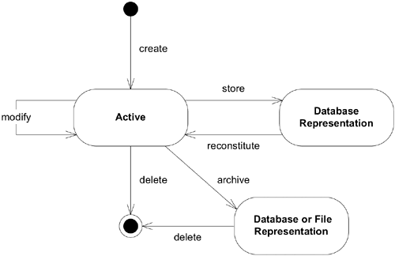
이러한 난제는 두 가지 범주로 나뉜다.
생명주기 전반에 걸쳐 무결성 유지하기
- 생명주기 관리의 복잡성에 모델이 압도당하지 않도록 막기 이 장에서는 세 가지 패턴을 통해 이 문제들을 다룬다. 먼저 애그리게이트(Aggregate)는 명확한 소유권과 경계를 정의해 모델 자체를 단단히 죄어 줌으로써, 혼란스럽고 얽히고설킨 객체 거미줄을 피하게 해 준다. 이 패턴은 생명주기의 모든 단계에서 무결성을 유지하는 데 핵심적이다.
다음으로 생명주기의 시작 지점에 초점을 맞추어, 복잡한 객체와 애그리게이트(Aggregate)를 생성하고 재구성하면서 그 내부 구조를 캡슐화하기 위해 팩토리(Factory)를 사용한다. 마지막으로 리포지토리(Repository)는 생명주기의 중간과 끝을 다루며, 영속 객체를 찾고 조회하는 수단을 제공하는 동시에 그 뒤에 숨어 있는 방대한 인프라를 캡슐화한다.
리포지토리(Repository)와 팩토리(Factory) 자체는 도메인에서 유래한 것이 아니지만, 도메인 설계에서 의미 있는 역할을 맡는다. 이 구성 요소들은 모델 객체에 접근 가능한 핸들(handle)을 제공함으로써 모델 주도 설계(MODEL-DRIVEN DESIGN)를 완성한다.
애그리게이트(Aggregate)를 모델링하고 설계에 팩토리(Factory)와 리포지토리(Repository)를 추가하면, 생명주기 전반에 걸쳐 모델 객체를 체계적이고 의미 있는 단위로 다룰 수 있게 된다. 애그리게이트(Aggregate)는 생명주기의 모든 단계에서 불변식이 유지되어야 하는 범위를 구획한다. 팩토리(Factory)와 리포지토리(Repository)는 애그리게이트(Aggregate) 단위로 동작하며 특정 생명주기 전환의 복잡성을 캡슐화한다.
애그리게이트(Aggregates)
연관 관계를 최소주의적으로 설계하면 탐색이 단순해지고 관계의 폭발적 증가를 어느 정도 억제할 수 있지만, 대부분의 비즈니스 도메인은 서로 너무나 밀접하게 연결되어 있어서 결국 객체 참조를 따라 길고 깊은 경로를 거슬러 올라가게 된다. 어떤 면에서 이러한 얽힘은 좀처럼 날카로운 경계를 내어 주지 않는 현실 세계의 모습을 반영한다. 하지만 소프트웨어 설계에서는 이것이 문제가 된다.
데이터베이스에서 Person 객체 하나를 삭제한다고 해 보자. 그 사람과 함께 이름, 생년월일, 직무 기술도 함께 사라진다. 그런데 주소는 어떻게 해야 할까? 같은 주소에 사는 다른 사람들이 있을 수 있다. 주소를 삭제해 버리면 그 Person 객체들은 삭제된 객체를 참조하게 된다. 반대로 그대로 남겨 두면 데이터베이스에 쓰레기 주소 데이터가 쌓인다. 자동 가비지 컬렉션이 쓰레기 주소를 제거해 줄 수도 있겠지만, 사용 중인 데이터베이스 시스템에서 그런 기능을 지원한다 하더라도 그런 기술적 해결책은 근본적인 모델링 문제를 외면한 것이다.
고립된 단일 트랜잭션을 고려할 때조차도, 전형적인 객체 모델 속 관계의 거미줄은 변경이 미칠 수 있는 잠재적 영향 범위를 명확히 제한해 주지 못한다. 혹시 모를 의존성 때문에 시스템의 모든 객체를 일일이 새로 고침할 수는 없는 노릇이다.
여러 클라이언트가 동일한 객체에 동시 접근하는 시스템에서는 이 문제가 더욱 심각해진다. 많은 사용자가 시스템의 서로 다른 객체를 조회하고 갱신하는 상황에서, 상호의존적인 객체들이 동시에 변경되는 것을 막아야 한다. 범위를 잘못 잡으면 심각한 결과를 초래한다.
복잡한 연관 관계를 가진 모델에서는 객체 변경의 일관성을 보장하기 어렵다. 개별 객체가 아니라 긴밀하게 연관된 객체 그룹 전체에 적용되는 불변식을 유지해야 하기 때문이다. 그렇다고 지나치게 조심스러운 잠금(locking) 기법을 쓰면 여러 사용자가 서로의 작업을 불필요하게 방해해 시스템을 쓸 수 없게 만든다.
달리 말하면, 다른 객체들로 구성된 한 객체가 어디서 시작하고 어디서 끝나는지 어떻게 알 수 있을까? 데이터를 영속적으로 저장하는 모든 시스템에는 데이터를 변경하는 트랜잭션의 범위와, 데이터의 일관성(즉, 불변식)을 유지하는 방법이 있어야 한다. 데이터베이스는 다양한 잠금 기법을 제공하고, 코드로 검사를 구현할 수도 있다. 하지만 이런 임시방편적인 해결책은 모델에서 시선을 돌리게 만들고, 결국 금세 주먹구구식 땜질과 요행에 기대는 상태로 되돌아가게 된다.
사실 이런 문제에 대한 균형 잡힌 해법을 찾으려면 도메인에 대한 더 깊은 이해가 필요하며, 이번에는 특정 클래스 인스턴스들 사이의 변경 빈도 같은 요소까지 이해를 확장해야 한다. 경합(contention)이 높은 지점은 느슨하게 두고, 엄격한 불변식은 더 단단하게 묶는 모델을 찾아야 한다.
이 문제는 데이터베이스 트랜잭션의 기술적 난점으로 표면화되지만, 그 뿌리는 모델 자체, 즉 정의된 경계의 부재에 있다. 모델에서 출발한 해법은 모델을 더 이해하기 쉽게 만들고 설계를 더 소통하기 쉽게 해 준다. 모델이 수정됨에 따라 구현의 변경 방향도 함께 이끌어 준다.
모델에서 소유권 관계를 정의하기 위한 체계들이 개발되어 왔다. 그러한 개념들에서 정제해 낸 다음의 단순하면서도 엄격한 체계에는 객체와 그 소유자를 수정하는 트랜잭션을 구현하기 위한 일련의 규칙이 포함되어 있다.7^
8^ 데이비드 시겔(David Siegel)이 1990년대에 프로젝트에서 이 체계를 고안해 사용했으나 논문 등으로 출판하지는 않았다.
먼저 모델 내에서 참조를 캡슐화하기 위한 추상화가 필요하다. 애그리게이트(AGGREGATE)는 데이터 변경의 목적상 하나의 단위로 취급하는 연관 객체들의 묶음이다. 각 애그리게이트(Aggregate)에는 루트(root)와 경계(boundary)가 있다. 경계는 애그리게이트(Aggregate) 내부에 무엇이 포함되는지를 정의한다. 루트는 애그리게이트(Aggregate)에 포함된 단 하나의 특정 엔티티(Entity)다. 경계 내부의 객체들은 서로에 대한 참조를 가질 수 있지만, 외부 객체가 참조를 보유할 수 있는 애그리게이트(Aggregate) 구성원은 오직 루트뿐이다. 루트가 아닌 엔티티(Entity)들은 지역 식별자(local identity)를 갖지만, 외부 객체는 루트 엔티티(Entity)의 맥락 밖에서 그 객체를 결코 볼 수 없기 때문에 그 식별자는 애그리게이트(Aggregate) 내부에서만 구별 가능하면 된다.
자동차 정비소 소프트웨어에서는 자동차 모델을 사용할 수 있다. 자동차는 전역 식별자(global identity)를 가진 엔티티(Entity)다. 우리는 아주 비슷해 보이는 차들이라도 세상 모든 다른 자동차와 그 차를 구별하고 싶다. 이를 위해 새 차마다 부여되는 고유 식별자인 차대번호(vehicle identification number)를 사용할 수 있다. 네 바퀴 위치에 따른 타이어의 위치 교환 이력을 추적하고 싶을 수도 있다. 각 타이어의 주행거리와 트레드 마모 상태도 알고 싶을 수 있다. 어느 타이어가 어느 것인지 알기 위해서는 타이어 역시 식별되는 엔티티(Entity)여야 한다. 그러나 특정 자동차라는 맥락 밖에서 그 타이어들의 정체성에 관심을 가질 가능성은 매우 낮다. 타이어를 교체하고 낡은 타이어를 재활용 공장으로 보내면, 소프트웨어는 더 이상 그 타이어를 추적하지 않거나 그저 타이어 더미 속 익명의 구성원이 될 뿐이다. 아무도 그 타이어의 위치 교환 이력에 신경 쓰지 않을 것이다. 더 중요한 점은, 타이어가 차에 장착되어 있는 동안에도 아무도 특정 타이어를 먼저 찾은 뒤 그 타이어가 어느 차에 달려 있는지 시스템에 질의하려 하지 않는다는 것이다. 사람들은 데이터베이스에 질의해 자동차를 먼저 찾은 다음, 그 자동차에게 타이어에 대한 일시적 참조를 요청할 것이다. 따라서 자동차는 타이어까지 경계 안에 포함하는 애그리게이트(Aggregate)의 루트 엔티티(Entity)다. 반면 엔진 블록에는 일련번호가 각인되어 있고 때로는 자동차와 독립적으로 추적되기도 한다. 어떤 애플리케이션에서는 엔진이 별도의 애그리게이트(Aggregate)의 루트가 될 수도 있다.
그림 6.2. 지역 식별자 대 전역 식별자와 객체 참조
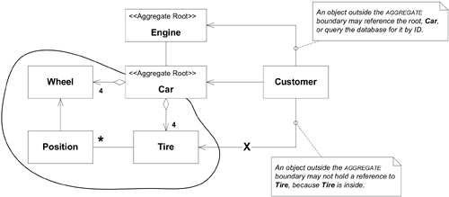
데이터가 변경될 때마다 반드시 유지되어야 하는 일관성 규칙인 불변식(invariant)은 애그리게이트(Aggregate) 구성원들 사이의 관계에 관여한다. 애그리게이트(Aggregate)를 넘나드는 규칙은 항상 최신 상태로 유지될 것을 기대하지 않는다. 이벤트 처리, 배치 처리 또는 다른 갱신 메커니즘을 통해 다른 의존성들은 지정된 시간 내에 해소될 수 있다. 그러나 하나의 애그리게이트(Aggregate) 내부에 적용되는 불변식은 매 트랜잭션이 완료될 때마다 강제된다.
그림 6.3. 애그리게이트(AGGREGATE) 불변식
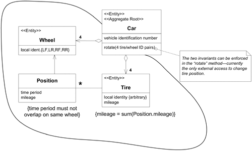
이제 그 개념적 애그리게이트(Aggregate)를 구현으로 옮기기 위해, 모든 트랜잭션에 적용해야 할 일련의 규칙이 필요하다.
- 루트 엔티티(Entity)는 전역 식별자를 가지며 궁극적으로 불변식을 검사할 책임을 진다.
- 루트 엔티티(Entity)는 전역 식별자를 갖는다. 경계 내부의 엔티티(Entity)는 애그리게이트(Aggregate) 내부에서만 유일한 지역 식별자를 갖는다.
- 루트 엔티티(Entity)를 제외하면, 애그리게이트(Aggregate) 경계 밖의 어떤 객체도 내부의 어떤 것에 대한 참조를 보유할 수 없다. 루트 엔티티(Entity)는 내부 엔티티(Entity)에 대한 참조를 다른 객체에 건네줄 수 있지만, 그 객체들은 그 참조를 일시적으로만 사용할 수 있을 뿐 계속 보유해서는 안 된다. 루트는 값 객체(Value Object)의 복사본을 다른 객체에 건네줄 수 있으며, 이는 단지 값(Value)일 뿐 더 이상 애그리게이트(Aggregate)와 아무런 연관이 없으므로 그 복사본에 어떤 일이 일어나든 상관없다.
- 앞선 규칙의 당연한 귀결로, 데이터베이스 질의를 통해 직접 얻을 수 있는 것은 오직 애그리게이트(Aggregate) 루트뿐이다. 다른 모든 객체는 연관 관계를 탐색하여 찾아야 한다.
- 애그리게이트(Aggregate) 내부의 객체는 다른 애그리게이트(Aggregate)의 루트에 대한 참조를 가질 수 있다.
- 삭제 연산은 애그리게이트(Aggregate) 경계 내부의 모든 것을 한꺼번에 제거해야 한다. (가비지 컬렉션이 있다면 이는 쉽다. 루트를 제외한 어떤 것에도 외부 참조가 없으므로, 루트를 삭제하면 나머지 모두 수거된다.)
- 애그리게이트(Aggregate) 경계 내부의 어떤 객체에 대한 변경이든 커밋될 때, 전체 애그리게이트(Aggregate)의 모든 불변식이 충족되어야 한다.
엔티티(Entity)와 값 객체(Value Object)를 애그리게이트(Aggregate)로 묶고 각각의 경계를 정의하라. 각 애그리게이트(Aggregate)의 루트가 될 엔티티(Entity)를 하나 선택하고, 경계 내부 객체에 대한 모든 접근을 루트를 통해 통제하라. 외부 객체가 루트에 대해서만 참조를 보유할 수 있도록 허용하라. 내부 구성원에 대한 일시적 참조는 단일 연산 내에서 사용할 목적으로만 외부로 전달할 수 있다. 루트가 접근을 통제하기 때문에, 내부가 마음대로 변경되어 허를 찔리는 일이 없다. 이러한 구조 덕분에 어떤 상태 변경에서도 애그리게이트(Aggregate) 내 객체들과 애그리게이트(Aggregate) 전체에 대한 모든 불변식을 현실적으로 강제할 수 있다.
애그리게이트(Aggregate)를 선언하면 잠금 기법 등을 자동으로 수행해 주는 기술 프레임워크가 있다면 매우 큰 도움이 될 수 있다. 그러한 지원이 없다면, 팀은 애그리게이트(Aggregate)에 합의하고 그에 맞추어 일관되게 코드를 작성하는 자율적 규율을 갖추어야 한다.
예제
구매 주문(Purchase Order) 무결성
단순화한 구매 주문(purchase order) 시스템에서 발생할 수 있는 복잡한 문제들을 살펴보자.
그림 6.4. 구매 주문 시스템을 위한 모델
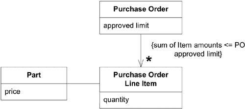
이 다이어그램은 구매 주문(PO)을 주문 항목(line item)으로 세분화한 아주 전형적인 모습을 보여 주며, 주문 항목들의 합계가 PO 전체의 한도를 초과할 수 없다는 불변식 규칙이 있다. 기존 구현에는 서로 연관된 세 가지 문제가 있다.
불변식 강제. 새 주문 항목이 추가되면 PO는 총액을 검사하고, 어떤 항목 때문에 한도를 넘기면 스스로를 유효하지 않음으로 표시한다. 곧 보겠지만 이는 적절한 보호 장치가 아니다.
- 변경 관리. PO가 삭제되거나 보관될 때 주문 항목들도 함께 처리되지만, 모델은 어디서 관계 추적을 멈춰야 하는지에 대한 지침을 주지 않는다. 또한 시점에 따라 부품 가격을 변경했을 때 미치는 영향에 대해서도 혼란이 있다.
- 데이터베이스 공유. 여러 사용자가 데이터베이스에서 경합 문제를 일으키고 있다. 여러 사용자가 동시에 다양한 PO를 입력하고 수정할 것이므로, 서로의 작업을 망치지 않도록 막아야 한다. 사용자가 편집을 시작하는 모든 객체를 해당 사용자가 트랜잭션을 커밋할 때까지 잠그는 매우 단순한 전략부터 시작해 보자. 따라서 조지(George)가 주문 항목 001을 편집하는 동안 아만다(Amanda)는 그 항목에 접근할 수 없다. 그녀는 다른 PO의 어떤 주문 항목이든(조지가 작업 중인 PO의 다른 항목을 포함하여) 편집할 수 있다.
그림 6.5. 데이터베이스에 저장된 PO의 초기 상태
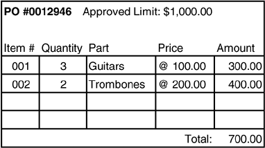
객체들은 데이터베이스에서 읽혀 각 사용자의 메모리 공간에 인스턴스화된다. 그곳에서 조회되고 편집될 수 있다. 데이터베이스 잠금은 편집이 시작될 때만 요청된다. 따라서 조지와 아만다는 서로의 항목을 건드리지 않는 한 동시에 작업할 수 있다. 모든 것이 순조롭다 . . . 조지와 아만다가 같은 PO에 있는 서로 다른 주문 항목을 동시에 작업하기 시작하기 전까지는 말이다.
그림 6.6. 서로 다른 트랜잭션에서의 동시 편집
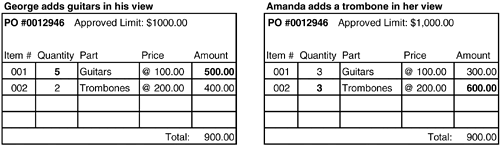
두 사용자와 그들의 소프트웨어 입장에서는 모든 것이 정상처럼 보인다. 트랜잭션 도중 데이터베이스의 다른 부분에서 일어나는 변경을 무시하고 있고, 어느 쪽이 잠근 주문 항목도 상대방의 변경에 직접 관여하지 않기 때문이다.
그림 6.7. 결과로 저장된 PO가 승인 한도를 위반함(깨진 불변식).
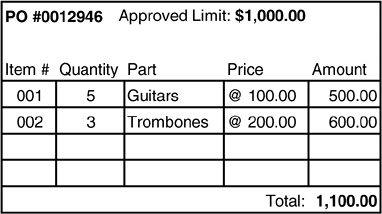
두 사용자가 각자의 변경 사항을 저장하고 나면, 도메인 모델의 불변식을 위반한 PO가 데이터베이스에 저장된다. 중요한 비즈니스 규칙이 깨졌는데도 아무도 그 사실을 모른다.
분명히 단일 주문 항목만 잠그는 것은 적절한 안전장치가 아니다. 대신 한 번에 PO 전체를 잠갔다면 이 문제는 예방할 수 있었을 것이다.
그림 6.8. PO 전체를 잠그면 불변식을 강제할 수 있다.

프로그램은 아만다가 한도를 높이거나 기타를 빼는 등의 방식으로 문제를 해결할 때까지 이 트랜잭션의 저장을 허용하지 않을 것이다. 이 메커니즘은 문제를 방지하며, 작업이 대체로 여러 PO에 널리 분산되어 있다면 훌륭한 해법이 될 수 있다. 하지만 여러 사람이 하나의 큰 PO의 서로 다른 주문 항목을 동시에 작업하는 경우가 흔하다면, 이 잠금은 번거로워질 것이다.
작은 PO가 많다고 가정하더라도 이 단언(assertion)을 위반할 수 있는 다른 경로가 있다. 저 “부품(part)”을 생각해 보자. 아만다가 자신의 주문에 항목을 추가하는 동안 누군가 트롬본의 가격을 바꾼다면, 역시 불변식을 위반하게 되지 않을까?
이번에는 PO 전체에 더해 부품까지 잠가 보자. 조지, 아만다, 샘(Sam)이 서로 다른 PO를 작업할 때 어떤 일이 벌어지는지 보자.
그림 6.9. 지나치게 조심스러운 잠금이 사람들의 작업을 방해하고 있다.
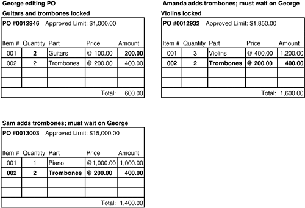
악기(“부품”)에 대한 경합이 많기 때문에 불편함이 점점 커진다. 그리고 결국:
그림 6.10. 교착 상태(Deadlock)
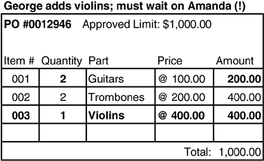
저 세 사람은 한참을 기다리게 될 것이다.
이 시점에서 다음과 같은 비즈니스 지식을 모델에 반영하여 모델을 개선할 수 있다.
부품은 여러 PO에서 사용된다(높은 경합).
- 부품에 대한 변경은 PO에 대한 변경보다 적다.
- 부품 가격 변경이 반드시 기존 PO로 전파되는 것은 아니다. 이는 PO의 상태 대비 가격 변경이 일어난 시점에 따라 달라진다. 세 번째 항목은 이미 배송 완료되어 보관된 PO를 떠올려 보면 특히 분명하다. 보관된 PO에는 당연히 현재 가격이 아니라 주문이 처리되던 당시의 가격이 표시되어야 한다.
그림 6.11. 가격이 주문 항목(Line Item)에 복사됨. 이제 애그리게이트(AGGREGATE) 불변식을 강제할 수 있다.
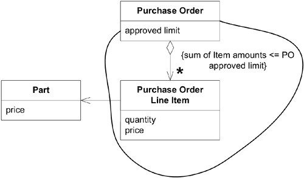
이 모델과 일관된 구현은 PO와 그 항목들 사이의 불변식을 보장하는 한편, 부품 가격의 변경이 그 부품을 참조하는 항목들에 즉각 영향을 미칠 필요는 없게 해 준다. 더 넓은 범위의 일관성 규칙은 다른 방식으로 다룰 수 있다. 예를 들어, 시스템은 매일 가격이 구식이 된 항목들의 대기열을 사용자에게 제시하여 각 항목을 갱신하거나 예외 처리하도록 할 수 있다. 하지만 이는 언제나 강제되어야 하는 불변식은 아니다. 주문 항목이 부품에 의존하는 정도를 느슨하게 만듦으로써 경합을 피하고 비즈니스의 현실을 더 잘 반영하게 된다. 동시에 PO와 주문 항목 간의 관계를 단단히 조여 줌으로써 중요한 비즈니스 규칙이 반드시 지켜지도록 보장한다.
애그리게이트(Aggregate)는 비즈니스 관행과 일치하는 방식으로 PO와 그 항목들에 소유권을 부여한다. PO와 항목의 생성 및 삭제는 자연스럽게 함께 묶이는 반면, 부품의 생성 및 삭제는 독립적이다.
애그리게이트(Aggregate)는 생명주기의 모든 단계에서 불변식이 유지되어야 하는 범위를 구획한다. 다음으로 살펴볼 패턴인 팩토리(Factory)와 리포지토리(Repository)는 애그리게이트(Aggregate) 단위로 동작하며 특정 생명주기 전환의 복잡성을 캡슐화한다. . . .
팩토리(Factories)

객체나 애그리게이트(Aggregate) 전체의 생성 과정이 복잡해지거나 내부 구조를 너무 많이 드러내게 될 때, 팩토리(Factory)가 캡슐화를 제공한다.
객체의 힘 상당 부분은 내부 구조와 연관 관계의 정교한 구성에 있다. 객체는 자신의 의미와 관련이 없거나 상호작용에서의 역할을 뒷받침하지 않는 것이 하나도 남지 않을 때까지 정제되어야 한다. 이러한 수명 중간 단계의 책임만으로도 벅차다. 복잡한 객체에 자기 자신을 생성할 책임까지 과도하게 지우면 문제가 발생한다.
자동차 엔진은 수십 개의 부품이 협력하여 축을 회전시킨다는 엔진의 책임을 수행하는 정교한 기계 장치다. 실린더 블록이 스스로 피스톤 세트를 집어 실린더에 끼워 넣고, 점화 플러그가 제 소켓을 찾아 스스로 나사를 조여 들어가는 엔진을 설계하려 한다고 상상해 볼 수도 있다. 하지만 그렇게 복잡한 기계가 우리가 흔히 쓰는 엔진만큼 신뢰할 만하거나 효율적일 것 같지는 않다. 대신 우리는 다른 무언가가 부품들을 조립하리라고 받아들인다. 그것은 인간 정비사일 수도 있고 산업용 로봇일 수도 있다. 실제로 로봇과 인간 모두 자신이 조립하는 엔진보다 더 복잡하다. 부품을 조립하는 일은 축을 회전시키는 일과 완전히 무관하다. 조립기는 자동차를 만드는 동안에만 기능한다. 운전할 때는 로봇이나 정비사를 데리고 탈 필요가 없다. 자동차가 조립되는 동시에 주행하는 일은 결코 없으므로, 이 두 기능을 같은 메커니즘 안에 합칠 가치가 없다. 마찬가지로, 복잡한 복합 객체를 조립하는 일은 그 객체가 완성된 뒤 수행해야 할 작업과 분리하는 편이 가장 좋다.
하지만 그렇다고 해서 생성 책임을 또 다른 이해당사자인 애플리케이션의 클라이언트 객체로 떠넘기면 훨씬 더 심각한 문제가 생긴다. 클라이언트는 어떤 작업이 수행되어야 하는지 알고 있으며, 필요한 계산을 수행하기 위해 도메인 객체에 의존한다. 만약 클라이언트가 자신이 필요로 하는 도메인 객체를 직접 조립해야 한다면, 클라이언트는 그 객체의 내부 구조에 대해 어느 정도 알고 있어야 한다. 도메인 객체 내부 부품들의 관계에 적용되는 모든 불변식을 강제하려면 클라이언트가 그 객체의 규칙 일부를 알아야만 한다. 심지어 생성자를 직접 호출하는 것만으로도 클라이언트는 자신이 만드는 객체의 구체 클래스(concrete class)에 결합된다. 클라이언트를 고치지 않고는 도메인 객체의 구현을 전혀 바꿀 수 없게 되어 리팩터링이 어려워진다.
객체 생성을 떠맡은 클라이언트는 불필요하게 복잡해지고 자신의 책임이 흐려진다. 이는 생성 중인 도메인 객체와 애그리게이트(Aggregate)의 캡슐화를 침해한다. 더 나쁜 것은, 만약 클라이언트가 애플리케이션 계층에 속해 있다면 도메인 책임이 도메인 계층 밖으로 완전히 새어 나가 버린다는 점이다. 애플리케이션이 구현의 세부 사항에 이처럼 강하게 결합되면 도메인 계층의 추상화가 주는 이점이 대부분 사라지고, 지속적인 변경 비용이 갈수록 커진다.
객체 생성은 그 자체로 중요한 연산이 될 수 있지만, 복잡한 조립 연산은 생성되는 객체의 책임에 어울리지 않는다. 이러한 책임을 한데 섞으면 이해하기 어렵고 볼품없는 설계가 나온다. 클라이언트가 생성을 직접 지휘하게 만들면 클라이언트의 설계가 지저분해지고, 조립되는 객체나 애그리게이트(Aggregate)의 캡슐화가 깨지며, 클라이언트가 생성된 객체의 구현에 지나치게 결합된다.
복잡한 객체 생성은 도메인 계층의 책임이지만, 그 작업이 모델을 표현하는 객체들에 속하는 것은 아니다. “은행 계좌 개설”처럼 객체의 생성과 조립이 도메인에서 중요한 이정표에 해당하는 경우도 일부 있기는 하다. 하지만 대개 객체 생성과 조립은 도메인 안에서 아무런 의미가 없으며 구현상의 필요 때문에 존재한다. 이 문제를 해결하려면, 도메인 설계에 엔티티(Entity)도 값 객체(Value Object)도 서비스(Service)도 아닌 구성 요소를 추가해야 한다. 이는 앞 장과는 다른 접근이므로 요점을 분명히 짚고 넘어갈 필요가 있다. 우리는 모델의 어떤 개념에도 대응하지 않지만 그럼에도 도메인 계층의 책임에 속하는 요소를 설계에 추가하고 있는 것이다.
모든 객체지향 언어는 객체를 생성하는 메커니즘(예: Java와 C++의 생성자, Smalltalk의 인스턴스 생성 클래스 메서드)을 제공하지만, 다른 객체들과 분리된 더 추상적인 생성 메커니즘이 필요하다. 다른 객체를 생성하는 책임을 가진 프로그램 요소를 팩토리(FACTORY)라고 한다.
그림 6.12. 팩토리(FACTORY)와의 기본적인 상호작용

객체의 인터페이스가 구현을 캡슐화하여 클라이언트가 작동 방식을 몰라도 객체의 행위를 사용할 수 있게 해야 하듯이, 팩토리(Factory)는 복잡한 객체나 애그리게이트(Aggregate)를 생성하는 데 필요한 지식을 캡슐화한다. 팩토리(Factory)는 클라이언트의 목표를 반영하는 인터페이스와 생성된 객체에 대한 추상적인 뷰를 제공한다.
그러므로:
복잡한 객체와 애그리게이트(Aggregate)의 인스턴스를 생성하는 책임을 별도의 객체로 옮겨라. 이 객체는 도메인 모델 내에서는 아무런 책임이 없을 수도 있지만 여전히 도메인 설계의 일부다. 모든 복잡한 조립을 캡슐화하고, 클라이언트가 인스턴스화되는 객체의 구체 클래스를 참조할 필요가 없는 인터페이스를 제공하라. 불변식을 강제하면서 애그리게이트(Aggregate) 전체를 하나의 단위로 생성하라.
팩토리(Factory)를 설계하는 방법은 다양하다. 몇 가지 특수 목적의 생성 패턴인 팩토리 메서드(FACTORY METHOD), 추상 팩토리(ABSTRACT FACTORY), 빌더(BUILDER)는 Gamma 등(1995)에서 철저히 다루어진 바 있다. 그 책은 주로 가장 까다로운 객체 생성 문제를 위한 패턴들을 탐구했다. 여기서의 요점은 팩토리(Factory) 설계를 깊이 파고드는 것이 아니라, 도메인 설계의 중요한 구성 요소로서 팩토리(Factory)의 자리를 보여 주는 데 있다. 팩토리(Factory)를 적절히 사용하면 모델 주도 설계(MODEL-DRIVEN DESIGN)를 제 궤도 위에 유지하는 데 도움이 된다.
좋은 팩토리(Factory)가 갖추어야 할 두 가지 기본 요건은 다음과 같다.
각 생성 메서드는 원자적(atomic)이어야 하며 생성되는 객체나 애그리게이트(Aggregate)의 모든 불변식을 강제해야 한다. 팩토리(Factory)는 오직 일관된 상태의 객체만 만들어 낼 수 있어야 한다. 엔티티(Entity)의 경우 이는 모든 불변식이 충족된 애그리게이트(Aggregate) 전체의 생성을 의미하며, 다만 선택적 요소들은 나중에 추가될 여지가 있을 수 있다. 불변 값 객체(Value Object)의 경우 이는 모든 속성이 올바른 최종 상태로 초기화됨을 의미한다. 만약 인터페이스가 올바르게 생성될 수 없는 객체를 요청할 수 있게 되어 있다면, 부적절한 반환값이 절대로 나올 수 없도록 예외를 발생시키거나 다른 메커니즘을 호출해야 한다.
- 팩토리(Factory)는 생성되는 구체 클래스(들)가 아니라 원하는 타입으로 추상화되어야 한다. Gamma 등(1995)의 정교한 팩토리(Factory) 패턴들이 이에 도움을 준다. #### 팩토리(Factory) 선택과 배치 위치
일반적으로 말하면, 세부 사항을 숨기고 싶은 무언가를 만들기 위해 팩토리(Factory)를 만들고, 통제권을 두고 싶은 곳에 팩토리(Factory)를 배치한다. 이러한 결정은 대개 애그리게이트(Aggregate)를 중심으로 이루어진다.
예를 들어 이미 존재하는 애그리게이트(Aggregate) 내부에 요소를 추가해야 한다면, 애그리게이트(Aggregate)의 루트에 팩토리 메서드(FACTORY METHOD)를 만들 수 있다. 이렇게 하면 외부 클라이언트로부터 애그리게이트(Aggregate) 내부 구현을 숨기면서도, 요소가 추가될 때 애그리게이트(Aggregate)의 무결성을 보장할 책임을 루트에게 부여할 수 있다(다음 페이지의 그림 6.13 참고).
그림 6.13. 팩토리 메서드(FACTORY METHOD)가 애그리게이트(AGGREGATE)의 확장을 캡슐화한다.
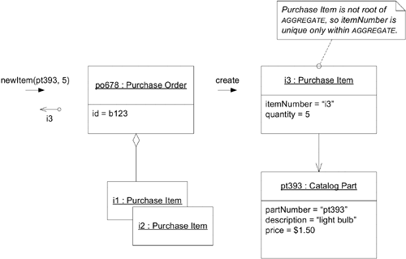
또 다른 예는 다른 객체를 낳는(spawn) 과정에 깊게 관여하는 객체에 팩토리 메서드(FACTORY METHOD)를 배치하는 것이다. 비록 생성된 결과물을 소유하지 않더라도 말이다. 한 객체의 데이터와 아마도 규칙이 어떤 객체를 생성하는 데 매우 지배적인 역할을 한다면, 생성자 측에서 정보를 끄집어내 다른 곳에서 객체를 생성하는 수고를 덜 수 있다. 또한 생성하는 객체와 결과물 사이의 특별한 관계를 드러내기도 한다.
그림 6.14에서 매매 주문(Trade Order)은 중개 계좌(Brokerage Account)와 같은 애그리게이트(Aggregate)의 일부가 아니다. 우선 매매 주문은 앞으로 매매 체결 애플리케이션과 상호작용하게 될 텐데, 거기서는 중개 계좌가 오히려 거치적거리기만 할 것이기 때문이다. 그럼에도 중개 계좌에 매매 주문 생성에 대한 통제권을 주는 것이 자연스러워 보인다. 중개 계좌는 매매 주문에 내장될 정보(우선 자기 자신의 식별자부터 시작해)를 담고 있으며, 어떤 매매가 허용되는지를 규정하는 규칙도 가지고 있기 때문이다. 매매 주문의 구현을 숨김으로써 얻는 이점도 있을 수 있다. 예를 들어 매매 주문은 매수 주문(Buy Order)과 매도 주문(Sell Order)이라는 별도 하위 클래스를 가진 계층 구조로 리팩터링될 수 있다. 팩토리(Factory)는 클라이언트가 구체 클래스에 결합되지 않도록 막아 준다.
그림 6.14. 팩토리 메서드(FACTORY METHOD)가 같은 애그리게이트(AGGREGATE)에 속하지 않은 엔티티(ENTITY)를 생성한다.
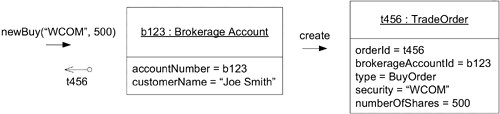
팩토리(Factory)는 자신의 결과물과 매우 강하게 결합되어 있으므로, 결과물과 자연스럽고 긴밀한 관계를 맺고 있는 객체에만 팩토리(Factory)를 붙여야 한다. 구체 구현이든 생성 자체의 순수한 복잡성이든 숨기고 싶은 무언가가 있는데 마땅히 둘 만한 자연스러운 호스트 객체가 보이지 않는다면, 독립된 팩토리(Factory) 객체나 서비스(Service)를 만들어야 한다. 독립형 팩토리(Factory)는 보통 전체 애그리게이트(Aggregate)를 생성해 루트에 대한 참조를 건네주며, 결과물 애그리게이트(Aggregate)의 불변식이 강제되도록 보장한다. 애그리게이트(Aggregate) 내부의 객체에 팩토리(Factory)가 필요하고 애그리게이트(Aggregate) 루트가 그 위치로 적합하지 않다면, 주저하지 말고 독립형 팩토리(Factory)를 만들어라. 단, 애그리게이트(Aggregate) 내부 접근을 제한하는 규칙을 준수하여 애그리게이트(Aggregate) 외부에서 결과물에 대한 참조는 오직 일시적으로만 존재하도록 해야 한다.
그림 6.15. 독립형 팩토리(FACTORY)가 애그리게이트(AGGREGATE)를 생성한다.
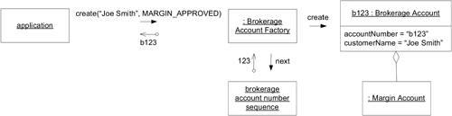
생성자만으로 충분한 경우
나는 모든 인스턴스를 클래스 생성자나 프로그래밍 언어의 원시적인 인스턴스 생성 수단을 직접 호출하여 생성하는 코드를 너무나도 많이 보아 왔다. 팩토리(Factory)를 도입하면 큰 이점이 있으며, 일반적으로는 충분히 활용되지 않고 있다. 그렇지만 생성자의 직접적인 방식이 최선의 선택이 되는 때도 있다. 다형성을 사용하지 않는 단순한 객체에서는 팩토리가 오히려 본질을 흐릴 수 있다.
다음과 같은 상황에서는 순수한 공개(public) 생성자를 사용하는 쪽이 트레이드오프 면에서 유리하다.
- 클래스 자체가 곧 타입인 경우. 의미 있는 계층 구조의 일부가 아니며, 인터페이스를 구현하여 다형적으로 사용되지도 않는다.
- 클라이언트가 구현체에 관심을 갖는 경우. 예를 들어 전략(Strategy)을 선택하는 수단으로 삼는 경우다.
- 객체의 모든 속성을 클라이언트가 알고 있어서, 클라이언트에 노출된 생성자 내부에 다른 객체 생성이 중첩되지 않는 경우.
- 생성 과정이 복잡하지 않은 경우.
- 공개 생성자도 팩토리와 동일한 규칙을 따라야 한다. 즉, 생성된 객체의 모든 불변식(invariant)을 만족시키는 원자적(atomic) 연산이어야 한다.
다른 클래스의 생성자 안에서 생성자를 호출하는 것은 피하라. 생성자는 지극히 단순해야 한다. 특히 애그리게이트(Aggregate) 같은 복잡한 조립에는 팩토리가 필요하다. 작은 팩토리 메서드(Factory Method)를 선택해 사용하는 문턱은 그리 높지 않다.
자바(Java) 클래스 라이브러리는 흥미로운 사례를 보여준다. 모든 컬렉션은 클라이언트를 구체 구현으로부터 분리하는 인터페이스를 구현하고 있다. 그럼에도 모두 생성자를 직접 호출해 생성한다. 팩토리가 컬렉션 계층 구조를 캡슐화할 수도 있었을 것이다. 팩토리의 메서드를 통해 클라이언트가 필요한 기능을 요청하면, 팩토리가 인스턴스화할 적절한 클래스를 선택하게 할 수도 있었다. 그랬다면 컬렉션을 생성하는 코드가 더 표현력이 풍부해졌을 것이고, 기존의 모든 자바 프로그램을 깨뜨리지 않고도 새로운 컬렉션 클래스를 추가할 수 있었을 것이다.
하지만 구체 생성자를 옹호할 만한 근거도 있다. 첫째, 많은 애플리케이션에서 구현체의 선택은 성능에 민감할 수 있으므로 애플리케이션이 직접 제어하기를 원할 수 있다(물론 정말 똑똑한 팩토리라면 그러한 요소까지 수용할 수 있겠지만 말이다). 어쨌든 컬렉션 클래스의 수가 아주 많지는 않으므로 선택이 그렇게 복잡하지 않다.
추상 컬렉션 타입들은 팩토리가 없음에도 불구하고 사용 패턴 덕분에 일정한 가치를 유지한다. 컬렉션은 한 곳에서 생성되어 다른 곳에서 사용되는 경우가 매우 많다. 이는 결국 컬렉션을 사용하는 클라이언트(내용을 추가, 제거, 조회하는 쪽)가 여전히 인터페이스와 대화하며 구현체로부터 분리될 수 있음을 의미한다. 컬렉션 클래스를 선택하는 일은 대개 그 컬렉션을 소유하는 객체나 소유 객체의 팩토리에 맡겨진다.
인터페이스 설계
독립적인 팩토리든 팩토리 메서드든 팩토리의 메서드 시그니처를 설계할 때는 다음 두 가지를 염두에 두어야 한다.
- 각 연산은 원자적이어야 한다. 팩토리와의 단 한 번의 상호작용으로 완성된 결과물을 생성하는 데 필요한 모든 것을 전달해야 한다. 또한 불변식이 충족되지 않아 생성에 실패할 경우 어떻게 할지도 결정해야 한다. 예외를 던질 수도 있고 단순히 null을 반환할 수도 있다. 일관성을 유지하려면 팩토리에서의 실패 처리에 대한 코딩 표준을 정해 두는 것이 좋다.
- 팩토리는 자신의 인자에 결합된다. 입력 매개변수를 신중하게 선택하지 않으면 의존성이 뒤엉킨 골칫거리를 만들 수 있다. 결합의 정도는 인자를 어떻게 다루느냐에 따라 달라진다. 인자를 단순히 결과물에 끼워 넣기만 한다면 완만한 수준의 의존성이 생긴다. 반면 인자에서 부분들을 꺼내어 생성에 사용한다면 결합은 훨씬 더 강해진다.
가장 안전한 매개변수는 더 낮은 설계 계층에서 온 것들이다. 같은 계층 내에서도 상위 수준 객체들이 사용하는 더 기본적인 객체들로 이루어진 자연스러운 층위가 존재하기 마련이다(이러한 계층화에 대해서는 10장 “유연한 설계(Supple Design)”와 16장 “대규모 구조(Large-Scale Structure)”에서 각각 다른 방식으로 다룰 것이다).
매개변수로 좋은 또 다른 선택은 모델상 결과물과 밀접하게 연관된 객체로, 이를 사용하면 새로운 의존성이 추가되지 않는다. 앞선 구매 주문 항목(Purchase Order Item) 예제에서 팩토리 메서드는 카탈로그 부품(Catalog Part)을 인자로 받는데, 이는 해당 항목에 필수적인 연관이다. 이로 인해 구매 주문(Purchase Order) 클래스와 부품(Part) 클래스 사이에 직접적인 의존성이 추가된다. 하지만 이 세 객체는 긴밀한 개념적 그룹을 이룬다. 어차피 구매 주문 애그리게이트는 이미 부품을 참조하고 있었다. 따라서 애그리게이트 루트에 제어권을 주고 애그리게이트의 내부 구조를 캡슐화하는 것은 훌륭한 트레이드오프다.
인자로는 구체 클래스가 아니라 추상 타입을 사용하라. 팩토리는 결과물의 구체 클래스에는 결합되지만, 구체적인 매개변수에까지 결합될 필요는 없다.
불변식 로직은 어디에 두어야 하는가?
팩토리는 자신이 생성하는 객체나 애그리게이트의 모든 불변식이 충족되도록 보장할 책임을 진다. 그러나 객체에 적용되는 규칙을 그 객체 바깥으로 빼내기 전에는 항상 두 번 생각해야 한다. 팩토리는 불변식 검사를 결과물에 위임할 수 있으며, 대개 이것이 최선이다.
하지만 팩토리는 자신의 결과물과 특별한 관계를 맺고 있다. 팩토리는 이미 결과물의 내부 구조를 알고 있으며, 팩토리가 존재하는 이유 자체가 결과물의 구현과 맞닿아 있다. 어떤 상황에서는 불변식 로직을 팩토리에 두어 결과물이 불필요하게 복잡해지는 것을 줄이는 편이 유리하다. 이는 여러 객체에 걸쳐 적용되는 애그리게이트 규칙에서 특히 매력적이다. 반면 다른 도메인 객체에 붙어 있는 팩토리 메서드에서는 특히 바람직하지 않다.
원칙적으로 불변식은 모든 연산이 끝날 때마다 적용되지만, 객체에 허용된 상태 변환들이 그 불변식을 결코 건드리지 않는 경우도 많다. 예를 들어 엔티티(Entity)의 식별자 속성을 할당할 때 적용되는 규칙이 있을 수 있다. 하지만 생성 이후에는 그 식별자가 불변이다. 값 객체(Value Object)는 완전히 불변이다. 객체는 자신의 활성 수명 동안 결코 적용되지 않을 로직을 굳이 지니고 다닐 필요가 없다. 이러한 경우 불변식을 팩토리에 두는 것이 논리적이며, 결과물도 더 단순하게 유지할 수 있다.
엔티티 팩토리 대 값 객체 팩토리
엔티티 팩토리와 값 객체 팩토리는 두 가지 면에서 다르다. 값 객체는 불변이므로 결과물이 처음부터 최종 형태로 완성되어 나온다. 따라서 팩토리 연산은 결과물을 완전히 기술할 수 있는 정보를 받을 수 있어야 한다. 반면 엔티티 팩토리는 유효한 애그리게이트를 만드는 데 필요한 필수 속성만 받는 경향이 있다. 불변식이 요구하지 않는 세부 사항은 나중에 추가할 수 있다.
다음으로 엔티티에 식별자를 부여하는 문제도 있는데, 이는 값 객체와는 무관하다. 5장에서 지적했듯이 식별자는 프로그램이 자동으로 할당할 수도 있고 외부(보통 사용자)에서 공급할 수도 있다. 고객의 식별자를 전화번호로 추적하기로 했다면 당연히 그 전화번호를 팩토리에 인자로 전달해야 한다. 프로그램이 식별자를 할당하는 경우라면 팩토리가 이를 제어하기에 좋은 위치다. 실제 고유 추적 ID 생성은 대개 데이터베이스의 “시퀀스(sequence)”나 다른 인프라 메커니즘이 수행하지만, 팩토리는 무엇을 요청하고 그것을 어디에 넣어야 하는지 알고 있다.
저장된 객체의 재구성
지금까지 팩토리는 객체 생명주기의 가장 처음 단계에서 역할을 수행했다. 어느 시점이 되면 대부분의 객체는 데이터베이스에 저장되거나 네트워크를 통해 전송되는데, 현재의 데이터베이스 기술 중 내용물의 객체 성격을 그대로 보존해 주는 것은 거의 없다. 대부분의 전송 방식 역시 객체를 훨씬 더 제한적인 표현 형태로 평탄화한다. 따라서 객체를 조회할 때는 조각들을 다시 살아 있는 객체로 조립하는 잠재적으로 복잡한 과정이 필요하다.
재구성(reconstitution)에 사용되는 팩토리는 생성에 사용되는 팩토리와 매우 유사하지만, 두 가지 주요한 차이점이 있다.
재구성에 사용되는 엔티티 팩토리는 새로운 추적 ID를 할당하지 않는다. 그렇게 하면 객체의 이전 모습과의 연속성이 끊어지게 된다. 따라서 저장된 객체를 재구성하는 팩토리에서는 식별 속성이 반드시 입력 매개변수의 일부여야 한다.
- 객체를 재구성하는 팩토리는 불변식 위반을 다르게 처리한다. 새 객체를 생성할 때는 불변식이 충족되지 않으면 팩토리가 단순히 작업을 거부하면 되지만, 재구성에서는 더 유연한 대응이 필요할 수 있다. 시스템 어딘가(예를 들어 데이터베이스)에 객체가 이미 존재한다면 그 사실을 무시할 수는 없다. 그렇다고 규칙 위반을 무시할 수도 없다. 이러한 불일치를 복구할 전략이 있어야 하며, 이로 인해 재구성은 새 객체를 생성하는 것보다 더 까다로울 수 있다. 그림 6.16과 6.17(다음 페이지)은 두 가지 종류의 재구성을 보여준다. 데이터베이스에서 재구성하는 경우 객체 매핑 기술이 이러한 서비스의 일부 또는 전부를 제공해 주므로 편리하다. 다른 매체로부터 객체를 재구성할 때 드러나는 복잡성이 존재한다면 언제든 팩토리가 좋은 선택지가 된다.
그림 6.16. 관계형 데이터베이스에서 조회한 엔티티(Entity) 재구성

그림 6.17. XML로 전송된 엔티티(Entity) 재구성

요약하자면, 인스턴스 생성을 위한 접근 지점을 식별하고 그 범위를 명시적으로 정의해야 한다. 이는 단순히 생성자일 수도 있지만, 더 추상적이거나 정교한 인스턴스 생성 메커니즘이 필요한 경우가 많다. 이러한 필요성으로 인해 설계에 새로운 구성 요소인 팩토리(Factory)가 도입된다. 팩토리는 대개 모델의 어떤 부분도 직접 표현하지 않지만, 모델을 표현하는 객체들을 명료하게 유지하는 데 도움을 주는 도메인 설계의 일부다.
팩토리는 생성과 재구성이라는 생명주기 전이를 캡슐화한다. 도메인 설계를 압도할 수 있는 기술적 복잡성을 드러내는 또 하나의 전이는 저장소로 들어가고 나오는 전이다. 이 전이는 또 다른 도메인 설계 구성 요소인 리포지토리(Repository)의 책임이다.
리포지토리(Repositories)
연관(association)을 통해 우리는 한 객체와 다른 객체 간의 관계를 바탕으로 객체를 찾을 수 있다. 하지만 생명주기 중간 단계에 있는 엔티티(Entity)나 값(Value)으로 탐색을 시작하려면 출발점이 있어야 한다.
객체를 가지고 무언가를 하려면 그 객체에 대한 참조를 갖고 있어야 한다. 그 참조는 어떻게 얻는가? 한 가지 방법은 객체를 생성하는 것이다. 생성 연산은 새 객체에 대한 참조를 반환하기 때문이다. 두 번째 방법은 연관을 탐색(traverse)하는 것이다. 이미 알고 있는 객체에서 시작해 연관된 객체를 요청한다. 모든 객체지향 프로그램은 이런 작업을 많이 수행하며, 이러한 연결이 객체 모델에 풍부한 표현력을 부여한다. 하지만 맨 처음 객체는 어디선가 얻어야 한다.
나는 실제로 모델 주도 설계(Model-Driven Design)를 열렬히 받아들인 팀이 모든 객체 접근을 생성이나 탐색으로만 처리하려고 시도했던 프로젝트를 본 적이 있다! 그들의 객체는 객체 데이터베이스에 저장되어 있었고, 그들은 기존의 개념적 관계만으로도 필요한 모든 연관을 제공할 수 있을 것이라고 추론했다. 그 관계를 충분히 분석하기만 하면 전체 도메인 모델이 응집력을 갖출 것이라 생각한 것이다. 그러나 스스로 부과한 이 제약 때문에, 그들은 우리가 지난 몇 장에 걸쳐 엔티티를 신중하게 구현하고 애그리게이트를 적용하며 피하고자 했던 바로 그 끝없는 얽힘을 만들어내고 말았다. 팀원들은 이 전략을 오래 유지하지 못했지만, 이를 대체할 또 다른 일관된 접근법을 마련하지도 못했다. 결국 임시방편적인 해결책들을 이어 붙였고 의욕도 꺾여 버렸다.
대부분의 사람들은 객체를 관계형 데이터베이스에 저장하기 때문에 이런 접근법을 생각조차 하지 않고 유혹을 느끼지도 않는다. 관계형 저장 기술은 참조를 얻는 세 번째 방법을 자연스럽게 사용하게 만든다. 즉, 객체의 속성을 바탕으로 데이터베이스에서 객체를 찾는 쿼리를 실행하거나, 객체의 구성 요소들을 찾은 다음 이를 재구성하는 것이다.
데이터베이스 검색은 전역적으로 접근 가능하며 어떤 객체로든 직접 이동할 수 있게 해 준다. 모든 객체가 서로 연결되어 있을 필요가 없으므로 객체들의 연결망을 관리 가능한 수준으로 유지할 수 있다. 탐색을 제공할 것인지 아니면 검색에 의존할 것인지는 검색이 주는 결합도 감소와 연관이 주는 응집력 사이에서 트레이드오프를 저울질하는 설계 결정이 된다. 고객(Customer) 객체가 자신이 한 모든 주문(Order)의 컬렉션을 들고 있어야 할까? 아니면 주문은 고객 ID 필드를 검색하여 데이터베이스에서 찾아야 할까? 검색과 연관을 적절히 조합하면 이해하기 쉬운 설계가 만들어진다.
안타깝게도 개발자들은 보통 이런 섬세한 설계 문제를 깊이 고민할 여유를 갖지 못한다. 객체를 저장하고 다시 불러오며 마침내 저장소에서 제거하는 일련의 작업을 해내는 데 필요한 메커니즘의 바다에서 허우적거리고 있기 때문이다.
기술적인 관점에서 보면 저장된 객체를 조회하는 것은 실제로 생성의 부분집합이다. 데이터베이스에서 가져온 데이터를 사용해 새 객체를 조립하기 때문이다. 실제로 작성해야 하는 코드를 보면 이 현실을 잊기 어렵다. 하지만 개념적으로 이것은 엔티티 생명주기의 중간 단계다. 고객 객체를 데이터베이스에 저장했다가 다시 조회했다고 해서 그 객체가 새로운 고객을 나타내는 것은 아니다. 이 구분을 명심하기 위해 나는 저장된 데이터로부터 인스턴스를 생성하는 것을 재구성(reconstitution)이라고 부른다.
도메인 주도 설계의 목표는 기술이 아니라 도메인 모델에 집중함으로써 더 나은 소프트웨어를 만드는 것이다. 개발자가 SQL 쿼리를 작성하고, 이를 인프라 계층의 쿼리 서비스에 전달하고, 테이블 행의 결과 집합을 받아, 필요한 정보를 꺼낸 다음 생성자나 팩토리에 넘기는 과정을 거치고 나면 모델에 대한 집중력은 사라지고 만다. 객체를 쿼리가 제공하는 데이터를 담는 컨테이너로 생각하기 쉬워지며, 전체 설계가 데이터 처리 스타일로 기울어진다. 기술의 세부 사항은 달라질 수 있지만, 클라이언트가 모델 개념이 아니라 기술을 다루고 있다는 문제는 그대로 남는다. 메타데이터 매핑 계층(Metadata Mapping Layer)(Fowler 2002) 같은 인프라는 쿼리 결과를 객체로 변환하는 일을 쉽게 만들어 큰 도움이 되지만, 개발자는 여전히 도메인이 아니라 기술적 메커니즘을 생각하게 된다. 더 나쁜 것은, 클라이언트 코드가 데이터베이스를 직접 사용함에 따라 개발자들이 애그리게이트나 심지어 객체 캡슐화 같은 모델의 특성들을 우회하고 필요한 데이터를 직접 가져와 조작하려는 유혹에 빠진다는 점이다. 점점 더 많은 도메인 규칙이 쿼리 코드 속에 묻히거나 아예 사라져 버린다. 객체 데이터베이스는 변환 문제를 없애 주기는 하지만 검색 메커니즘은 여전히 기계적인 경우가 많고, 개발자들은 여전히 원하는 객체를 마음대로 끌어오려는 유혹을 받는다.
클라이언트에는 기존 도메인 객체에 대한 참조를 획득할 실용적인 수단이 필요하다. 인프라가 그렇게 하기 쉽게 만들면 클라이언트 개발자들이 탐색 가능한 연관을 더 많이 추가해 모델을 뒤죽박죽으로 만들 수 있다. 반면에 데이터베이스에서 필요한 정확한 데이터만 끌어오거나 애그리게이트 루트에서 탐색하는 대신 특정 객체 몇 개만 끌어오기 위해 쿼리를 사용할 수도 있다. 도메인 로직은 쿼리와 클라이언트 코드로 이동하고, 엔티티와 값 객체는 단순한 데이터 컨테이너로 전락한다. 대부분의 데이터베이스 접근 인프라를 적용할 때 따르는 순전한 기술적 복잡성은 클라이언트 코드를 금세 압도하며, 이는 개발자가 도메인 계층을 단순화(dumb down)하게 만들고 결국 모델을 무의미하게 만든다.
지금까지 논의한 설계 원칙들을 활용하면, 이러한 원칙들을 적용할 수 있을 만큼 모델의 초점을 날카롭게 유지해 주는 접근 방법을 찾는다는 전제하에 객체 접근 문제의 범위를 어느 정도 좁힐 수 있다. 우선 일시적(transient) 객체는 신경 쓸 필요가 없다. 일시적 객체(보통 값 객체)는 짧은 수명을 가지며, 이를 생성한 클라이언트 연산에서 사용된 뒤 폐기된다. 또한 탐색으로 찾는 편이 더 편리한 영속 객체에 대해서도 쿼리 접근이 필요 없다. 예를 들어 사람의 주소는 Person 객체에게 요청하면 된다. 그리고 가장 중요한 점으로, 애그리게이트 내부에 있는 모든 객체는 루트로부터의 탐색을 통하지 않고는 접근이 금지된다.
영속적인 값 객체는 대개 자신을 캡슐화하는 애그리게이트의 루트 역할을 하는 어떤 엔티티로부터 탐색을 통해 찾아낸다. 사실 값에 대한 전역 검색 접근은 무의미한 경우가 많다. 왜냐하면 어떤 값의 속성으로 그 값을 찾는 것은 그 속성들을 가진 새 인스턴스를 생성하는 것과 다를 바 없기 때문이다. 물론 예외도 있다. 예를 들어 내가 온라인으로 여행 계획을 세울 때, 몇 개의 예상 여정(itinerary)을 저장해 두었다가 나중에 돌아와 그중 하나를 선택해 예약하곤 한다. 그 여정들은 값이다(만약 동일한 항공편들로 구성된 여정이 두 개 있다면 나는 어느 것이 어느 것인지 신경 쓰지 않을 것이다). 하지만 그것들은 내 사용자 이름과 연결되어 저장되었고 나에게 온전한 상태로 다시 조회된다. 또 다른 사례는 한 타입이 엄격히 제한되고 미리 정해진 가능한 값들의 집합을 갖는 “열거형(enumeration)”일 것이다. 하지만 값 객체에 대한 전역 접근은 엔티티에 비해 훨씬 드물며, 만약 기존 값을 데이터베이스에서 검색해야 할 필요가 생긴다면 사실은 당신이 그 식별성을 미처 인식하지 못한 엔티티를 다루고 있는 것은 아닌지 고려해 볼 가치가 있다.
이 논의를 통해 대부분의 객체는 전역 검색으로 접근해서는 안 된다는 점이 분명해졌다. 설계가 전역 검색으로 접근하는 객체들을 드러내 줄 수 있다면 좋을 것이다.
이제 문제를 더 정확하게 다시 진술할 수 있다.
일부 영속 객체는 객체 속성에 기반한 검색을 통해 전역적으로 접근할 수 있어야 한다. 이러한 접근은 탐색으로 도달하기 편리하지 않은 애그리게이트의 루트에 필요하다. 이들은 보통 엔티티이며, 때로는 복잡한 내부 구조를 가진 값 객체이거나 열거형 값일 수도 있다. 다른 객체들에까지 접근을 제공하면 중요한 구분이 흐려진다. 무분별한 데이터베이스 쿼리는 실제로 도메인 객체와 애그리게이트의 캡슐화를 깨뜨릴 수 있다. 기술 인프라와 데이터베이스 접근 메커니즘이 노출되면 클라이언트가 복잡해지고 모델 주도 설계가 가려진다.
데이터베이스 접근의 기술적 과제를 다루기 위한 기법은 많다. 예를 들어 SQL을 쿼리 객체(Query Object)로 캡슐화하거나 메타데이터 매핑 계층(Fowler 2002)으로 객체와 테이블 사이를 변환하는 것이다. 팩토리는 저장된 객체를 재구성하는 데 도움을 줄 수 있다(이 장 뒷부분에서 논의하는 바와 같다). 이러한 기법들과 다른 많은 기법들이 복잡성을 억제하는 데 도움을 준다.
하지만 그렇더라도 무엇을 잃었는지 주목하라. 우리는 더 이상 도메인 모델의 개념에 대해 생각하고 있지 않다. 우리의 코드는 비즈니스에 대해 말하지 않고 데이터 조회 기술을 조작하게 될 것이다. 리포지토리(Repository) 패턴은 그러한 해결책들을 캡슐화하고 우리의 초점을 다시 모델로 되돌려 놓기 위한 단순한 개념적 프레임워크다.
리포지토리는 특정 타입의 모든 객체를 하나의 개념적 집합(대개 에뮬레이션된 집합)으로 표현한다. 이는 컬렉션처럼 동작하지만, 더 정교한 쿼리 기능을 갖추고 있다. 적절한 타입의 객체들이 추가되고 제거되면, 리포지토리 배후의 장치가 그것들을 데이터베이스에 삽입하거나 삭제한다. 이 정의는 초기 생명주기부터 끝까지 애그리게이트 루트에 대한 접근을 제공하는 응집력 있는 책임 집합을 하나로 모아 준다.
클라이언트는 클라이언트가 지정한 기준(일반적으로 특정 속성들의 값)에 따라 객체를 선택하는 쿼리 메서드를 사용해 리포지토리에 객체를 요청한다. 리포지토리는 데이터베이스 쿼리와 메타데이터 매핑 장치를 캡슐화하여 요청된 객체를 조회해 준다. 리포지토리는 클라이언트가 요구하는 어떤 기준에 따라서든 객체를 선택하는 다양한 쿼리를 구현할 수 있다. 또한 어떤 기준을 충족하는 인스턴스가 몇 개인지 세는 것과 같은 요약 정보도 반환할 수 있다. 심지어 일치하는 모든 객체에서 어떤 수치 속성의 합계를 구하는 등의 요약 계산까지 반환할 수 있다.
그림 6.18. 클라이언트를 대신해 검색을 수행하는 리포지토리(Repository)
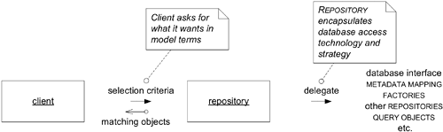
리포지토리는 클라이언트로부터 막대한 부담을 덜어 주며, 이제 클라이언트는 단순하고 의도를 드러내는 인터페이스(Intention-Revealing Interface)와 대화하면서 모델의 관점에서 자신이 필요한 것을 요청할 수 있다. 이 모든 것을 지원하려면 복잡한 기술 인프라가 많이 필요하지만, 인터페이스는 단순하고 도메인 모델과 개념적으로 연결되어 있다.
그러므로:
전역 접근이 필요한 각 객체 타입에 대해, 해당 타입의 모든 객체가 메모리 내 컬렉션에 들어 있는 듯한 환상을 제공할 수 있는 객체를 생성하라. 잘 알려진 전역 인터페이스를 통해 접근하도록 설정하라. 객체를 추가하고 제거하는 메서드를 제공하되, 이들이 데이터 저장소에 데이터를 실제로 삽입하거나 제거하는 작업을 캡슐화하게 하라. 어떤 기준에 따라 객체를 선택하여 그 속성값이 기준을 충족하는 완전히 인스턴스화된 객체나 객체 컬렉션을 반환하는 메서드를 제공함으로써, 실제 저장 및 쿼리 기술을 캡슐화하라. 직접 접근이 실제로 필요한 애그리게이트 루트에 대해서만 리포지토리를 제공하라. 모든 객체 저장과 접근을 리포지토리에 위임함으로써 클라이언트가 모델에 집중하도록 유지하라.
리포지토리는 다음을 포함해 많은 장점을 지닌다.
- 영속 객체를 얻고 그 생명주기를 관리하기 위한 단순한 모델을 클라이언트에 제시한다.
- 애플리케이션 및 도메인 설계를 영속성 기술, 다중 데이터베이스 전략, 심지어 다중 데이터 소스로부터 분리한다.
- 객체 접근에 관한 설계 결정을 전달한다.
- 테스트에 사용할 수 있도록(대개 메모리 내 컬렉션을 이용해) 더미 구현체로 쉽게 교체할 수 있게 해 준다.
리포지토리 쿼리하기
모든 리포지토리는 클라이언트가 어떤 기준에 부합하는 객체를 요청할 수 있는 메서드를 제공하지만, 이 인터페이스를 어떻게 설계할지에 대해서는 여러 선택지가 있다.
가장 만들기 쉬운 리포지토리는 구체적인 매개변수를 받는 하드코딩된 쿼리를 갖추는 것이다. 이러한 쿼리는 다양할 수 있다. 식별자로 엔티티를 조회하는 것(거의 모든 리포지토리가 제공한다), 특정 속성값이나 매개변수들의 복잡한 조합을 가진 객체 컬렉션을 요청하는 것, 값의 범위(날짜 범위 등)를 기준으로 객체를 선택하는 것, 심지어 리포지토리의 일반적 책임 범위 안에 드는 몇 가지 계산을 수행하는 것(특히 기반 데이터베이스가 지원하는 연산을 활용하는 것) 등이 있다.
대부분의 쿼리는 객체 하나나 객체 컬렉션을 반환하지만, 객체 개수나 모델에서 집계하기로 의도된 수치 속성의 합계 같은 몇몇 유형의 요약 계산을 반환하는 것도 이 개념에 부합한다.
그림 6.19. 단순한 리포지토리(Repository)의 하드코딩된 쿼리
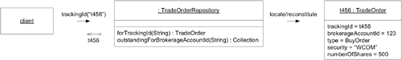
하드코딩된 쿼리는 어차피 어떤 클라이언트가 직접 해야 했을 일을 대신 수행할 뿐이므로, 큰 투자 없이도 어떤 인프라 위에서든 구축할 수 있다.
쿼리가 많은 프로젝트에서는 더 유연한 쿼리를 허용하는 리포지토리 프레임워크를 구축할 수 있다. 이를 위해서는 필요한 기술에 익숙한 인력이 요구되며, 이를 뒷받침해 주는 인프라가 있다면 큰 도움이 된다.
프레임워크를 통해 리포지토리를 일반화하는 데 특히 적합한 접근법 중 하나는 명세(Specification) 기반 쿼리를 사용하는 것이다. 명세는 클라이언트가 원하는 것을 어떻게 얻을지 신경 쓰지 않고도 자신이 원하는 것을 기술(즉, 명시)할 수 있게 해 준다. 그 과정에서 실제로 선택 작업을 수행할 수 있는 객체가 만들어진다. 이 패턴은 9장에서 깊이 있게 다룰 것이다.
그림 6.20. 정교한 리포지토리(Repository)에서 검색 기준을 나타내는 유연하고 선언적인 명세(Specification)
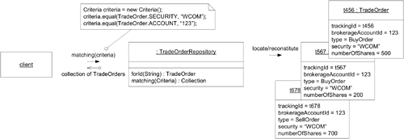
명세 기반 쿼리는 우아하고 유연하다. 사용 가능한 인프라에 따라 적당한 규모의 프레임워크가 될 수도 있고, 감당하기 어려울 만큼 복잡해질 수도 있다. 롭 미(Rob Mee)와 에드워드 하이아트(Edward Hieatt)는 Fowler 2002에서 이러한 리포지토리를 설계할 때의 기술적 문제들을 더 자세히 다루고 있다.
유연한 쿼리를 지원하는 리포지토리 설계라도 특화된 하드코딩 쿼리를 추가할 수 있도록 허용해야 한다. 이는 자주 사용되는 쿼리를 캡슐화한 편의 메서드일 수도 있고, 선택된 객체들의 수학적 요약처럼 객체 자체를 반환하지 않는 쿼리일 수도 있다. 이러한 예외 상황을 허용하지 않는 프레임워크는 도메인 설계를 왜곡하거나 개발자들에 의해 우회되곤 한다.
클라이언트 코드는 리포지토리 구현을 무시하지만, 개발자는 그래서는 안 된다
영속성 기술을 캡슐화하면 클라이언트가 매우 단순해지고 리포지토리 구현체로부터 완전히 분리될 수 있다. 하지만 캡슐화가 대개 그렇듯이 개발자는 그 내부에서 무슨 일이 벌어지고 있는지 이해하고 있어야 한다. 리포지토리가 서로 다른 방식으로 사용되거나 서로 다른 방식으로 동작할 때 성능에 미치는 영향은 극단적일 수 있다.
카일 브라운(Kyle Brown)은 운영 환경에 배포되던 웹스피어(WebSphere) 기반의 제조 애플리케이션 프로젝트에 불려 갔던 이야기를 들려준 적이 있다. 시스템이 몇 시간 사용되고 나면 원인을 알 수 없이 메모리가 고갈되는 현상이 발생했다. 카일이 코드를 훑어보고 원인을 찾아냈다. 어느 지점에서 공장 내 모든 품목에 관한 정보를 요약하고 있었는데, 개발자들이 이를 위해 “all objects”라는 쿼리를 사용해 각각의 객체를 모두 인스턴스화한 다음 필요한 정보만 골라내고 있었던 것이다. 이 코드는 데이터베이스 전체를 한꺼번에 메모리로 불러오는 결과를 낳았다! 테스트 데이터가 적었기 때문에 테스트 단계에서는 이 문제가 드러나지 않았었다.
이는 명백한 금기 사항이지만, 훨씬 더 미묘한 실수들도 그에 못지않게 심각한 문제를 일으킬 수 있다. 개발자는 캡슐화된 동작을 사용할 때 따르는 파급 효과를 이해해야 한다. 그렇다고 해서 구현 세부 사항을 속속들이 잘 알아야 한다는 뜻은 아니다. 잘 설계된 컴포넌트는 그 특성을 파악할 수 있다(이는 10장 “유연한 설계(Supple Design)”의 핵심 요점 중 하나다).
5장에서 논의했듯이 기반 기술은 모델링 선택에 제약을 가할 수 있다. 예를 들어 관계형 데이터베이스는 깊게 합성된 객체 구조에 현실적인 한계를 지울 수 있다. 마찬가지 방식으로, 리포지토리의 사용과 리포지토리 쿼리의 구현 사이에는 개발자를 향한 양방향 피드백이 있어야 한다.
리포지토리 구현
구현 방식은 영속성에 사용하는 기술과 보유한 인프라에 따라 크게 달라진다. 이상적인 방향은(클라이언트 개발자에게는 숨기지 않더라도) 클라이언트 코드로부터 내부 작동 방식을 모두 숨겨서, 데이터가 객체 데이터베이스에 저장되든, 관계형 데이터베이스에 저장되든, 아니면 단순히 메모리에 유지되든 클라이언트 코드가 동일하게 유지되도록 하는 것이다. 리포지토리는 작업을 완수하기 위해 적절한 인프라 서비스에 위임한다. 저장, 조회, 쿼리 메커니즘을 캡슐화하는 것이 리포지토리 구현의 가장 기본적인 특징이다.
그림 6.21. 리포지토리(Repository)는 기반 데이터 저장소를 캡슐화한다.
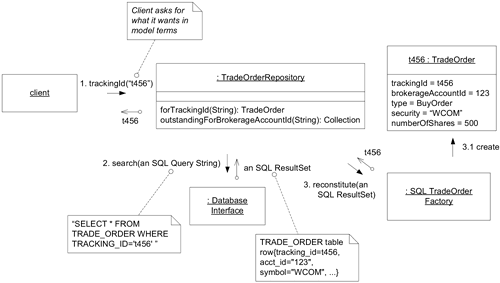
리포지토리 개념은 많은 상황에 맞게 적용할 수 있다. 구현의 가능성이 너무나 다양하기 때문에 염두에 두어야 할 몇 가지 고려 사항만 나열할 수 있을 뿐이다.
- 타입을 추상화하라. 리포지토리는 특정 타입의 모든 인스턴스를 “포함”하지만, 이것이 클래스마다 리포지토리가 하나씩 필요하다는 뜻은 아니다. 그 타입은 계층 구조의 추상 상위 클래스일 수 있다(예를 들어 TradeOrder는 BuyOrder일 수도 있고 SellOrder일 수도 있다). 계층적으로 관련조차 없는 구현체들의 인터페이스일 수도 있다. 혹은 특정 구체 클래스일 수도 있다. 다만 데이터베이스 기술에 이러한 다형성이 결여되어 있어 제약을 받을 수 있다는 점은 염두에 두라.
- 클라이언트와의 분리를 활용하라. 클라이언트가 메커니즘을 직접 호출할 때보다 리포지토리의 구현을 변경할 수 있는 자유도가 훨씬 크다. 이를 활용하여 쿼리 기법을 바꾸거나 객체를 메모리에 캐싱함으로써 성능을 최적화하고, 언제든 영속성 전략을 자유롭게 교체할 수 있다. 또한 손쉽게 조작할 수 있는 더미 인메모리 전략을 제공하여 클라이언트 코드와 도메인 객체의 테스트를 용이하게 만들 수 있다.
- 트랜잭션 제어는 클라이언트에 맡겨라. 리포지토리가 데이터베이스에 삽입하고 삭제하기는 하지만, 보통은 아무것도 커밋(commit)하지 않는다. 예를 들어 저장한 뒤에 커밋하고 싶은 유혹이 들 수 있겠지만, 작업 단위(unit of work)를 올바르게 시작하고 커밋할 문맥(context)은 클라이언트가 가지고 있을 것이다. 리포지토리가 트랜잭션에 손을 대지 않으면 트랜잭션 관리가 더 단순해진다.
일반적으로 팀들은 리포지토리 구현을 지원하기 위해 인프라 계층에 프레임워크를 추가한다. 하위 수준 인프라 컴포넌트와의 협력 외에도, 특히 유연한 쿼리를 구현할 때는 리포지토리 상위 클래스가 몇 가지 기본 쿼리를 구현할 수도 있다. 안타깝게도 자바와 같은 타입 시스템에서는 이러한 접근 방식 때문에 반환되는 객체의 타입을 “Object”로 지정할 수밖에 없고, 클라이언트가 이를 리포지토리가 담고 있는 타입으로 캐스팅(cast)해야 한다. 물론 자바에서는 컬렉션을 반환하는 쿼리라면 어차피 캐스팅을 해야 하긴 하지만 말이다.
리포지토리 구현과 쿼리 객체(Query Object) 같은 관련 기술 패턴에 대한 추가 지침은 Fowler (2002)에서 찾을 수 있다.
프레임워크 내에서 작업하기
리포지토리 같은 것을 구현하기 전에는 자신이 채택한 인프라, 특히 아키텍처 프레임워크에 대해 신중히 생각해 보아야 한다. 프레임워크가 리포지토리를 쉽게 만들 수 있는 서비스를 제공해 줄 수도 있고, 아니면 프레임워크가 끝까지 당신과 맞서 싸울 수도 있다. 아키텍처 프레임워크가 이미 영속 객체를 얻기 위한 동등한 패턴을 정의해 두었을 수도 있다. 혹은 리포지토리와는 전혀 닮지 않은 패턴을 정의했을 수도 있다.
예를 들어 프로젝트에서 J2EE를 사용하기로 되어 있다고 하자. 모델 주도 설계의 패턴들과 프레임워크 사이의 개념적 유사성을 찾다가(참고로 엔티티 빈(entity bean)은 엔티티(Entity)와 같은 것이 아니다), 애그리게이트 루트에 대응하는 요소로 엔티티 빈을 사용하기로 결정했을 수 있다. J2EE 아키텍처 프레임워크 내에서 이러한 객체에 접근할 수 있게 해 주는 구성 요소는 “EJB Home”이다. EJB Home을 리포지토리처럼 보이게 억지로 꾸미려다가는 다른 문제들이 생길 수 있다.
일반적으로 프레임워크와 싸우지 마라. 프레임워크가 적대적일 때는 도메인 주도 설계의 기본 원칙을 지킬 수 있는 방법을 찾고 세부적인 형태에는 연연하지 마라. 도메인 주도 설계의 개념들과 프레임워크의 개념들 사이의 유사성을 찾아라. 이는 해당 프레임워크를 사용할 수밖에 없는 경우를 가정한 것이다. 많은 J2EE 프로젝트들이 엔티티 빈을 전혀 사용하지 않는다. 선택의 자유가 있다면, 사용하고자 하는 설계 스타일과 조화를 이루는 프레임워크나 프레임워크의 일부를 선택하라.
팩토리와의 관계
팩토리는 객체 삶의 시작을 다루고, 리포지토리는 중간과 끝을 관리하는 데 도움을 준다. 객체가 메모리에만 있거나 객체 데이터베이스에 저장될 때는 이것이 간단하다. 하지만 대개는 적어도 일부 객체가 관계형 데이터베이스, 파일, 혹은 그 밖의 비객체지향 시스템에 저장된다. 그러한 경우에는 조회한 데이터를 객체 형태로 재구성해야 한다.
이 경우 리포지토리가 데이터를 기반으로 객체를 생성하고 있으므로, 많은 사람들이 리포지토리를 팩토리로 여긴다. 실제로 기술적인 관점에서 보면 그렇다. 하지만 모델을 전면에 두는 편이 더 유용하며, 앞서 언급했듯이 저장된 객체의 재구성은 새로운 개념적 객체를 생성하는 것이 아니다. 이러한 도메인 주도적 설계 관점에서는 팩토리와 리포지토리가 각자 뚜렷한 책임을 갖는다. 팩토리는 새 객체를 만들고, 리포지토리는 기존 객체를 찾는다. 리포지토리의 클라이언트에게는 객체들이 메모리에 있다는 환상이 주어져야 한다. 객체가 재구성되어야 할 수는 있지만(그렇다, 새 인스턴스가 생성될 수도 있다), 그것은 여전히 생명주기 중간에 있는 동일한 개념적 객체다.
이 두 관점은 리포지토리가 객체 생성을 팩토리에 위임하도록 함으로써 조화시킬 수 있으며, 이 팩토리는(실제로는 드물지만 이론상으로는) 처음부터 새 객체를 생성하는 데에도 사용될 수 있다.
그림 6.22. 리포지토리(Repository)가 팩토리(Factory)를 사용해 기존 객체를 재구성한다.

이러한 명확한 분리는 팩토리에서 영속성에 관한 모든 책임을 덜어내는 데도 도움이 된다. 팩토리의 역할은 데이터로부터 잠재적으로 복잡한 객체를 인스턴스화하는 것이다. 결과물이 새 객체라면 클라이언트가 이를 알 것이고, 그것을 리포지토리에 추가할 수 있다. 그러면 리포지토리가 데이터베이스에 그 객체를 저장하는 일을 캡슐화할 것이다.
그림 6.23. 클라이언트가 새 객체를 저장하기 위해 리포지토리(Repository)를 사용한다.

사람들이 팩토리와 리포지토리를 합치게 만드는 또 하나의 사례는 “찾거나 생성(find or create)” 기능에 대한 욕구다. 즉, 클라이언트가 원하는 객체를 기술하면, 해당 객체가 없을 때 새로 생성해 반환해 주는 기능이다. 이 기능은 피해야 한다. 기껏해야 사소한 편의일 뿐이다. 이것이 유용해 보이는 많은 경우들은 엔티티와 값 객체를 구분하면 사라진다. 값 객체를 원하는 클라이언트는 곧바로 팩토리로 가서 새 객체를 달라고 요청하면 된다. 대개 새 객체와 기존 객체의 구분은 도메인에서 중요하며, 이를 투명하게 합쳐 버리는 프레임워크는 오히려 상황을 흐려 놓는다.
관계형 데이터베이스를 위한 객체 설계
주로 객체지향으로 구성된 소프트웨어 시스템에서 가장 흔한 비객체 컴포넌트는 관계형 데이터베이스다. 이 현실은 패러다임 혼용의 일반적인 문제들을 야기한다(5장 참조). 그러나 데이터베이스는 다른 대부분의 컴포넌트들보다 객체 모델과 훨씬 더 밀접하게 관련되어 있다. 데이터베이스는 단순히 객체와 상호작용만 하는 것이 아니라, 객체 자체를 구성하는 데이터의 영속적 형태를 저장한다. 객체를 관계형 테이블에 매핑하고 효과적으로 저장 및 조회하는 기술적 과제에 대해서는 많은 글이 쓰여 있다. 최근의 논의는 Fowler 2002에서 찾아볼 수 있다. 둘 사이의 매핑을 생성하고 관리하기 위한 꽤 정교한 도구들도 있다. 기술적 고려 사항을 제외하더라도, 이러한 불일치는 객체 모델에 중대한 영향을 미칠 수 있다.
흔한 세 가지 경우가 있다.
데이터베이스가 주로 객체를 위한 저장소 역할을 하는 경우.
데이터베이스가 다른 시스템을 위해 설계된 경우.
데이터베이스가 이 시스템을 위해 설계되었지만 객체 저장소 외의 다른 역할도 수행하는 경우. 데이터베이스 스키마를 특별히 객체들의 저장소로 만들기 위해 생성하는 경우에는, 매핑을 매우 단순하게 유지하기 위해 모델상의 일부 제약을 감수할 가치가 있다. 스키마 설계에 다른 요구 사항이 없다면, 수정이 이루어질 때 애그리게이트의 무결성을 더 안전하고 효율적으로 보장할 수 있도록 데이터베이스를 구조화할 수 있다. 기술적으로 관계형 테이블 설계가 반드시 도메인 모델을 반영할 필요는 없다. 매핑 도구는 상당한 차이도 메워 줄 수 있을 만큼 정교하다. 문제는 서로 겹치는 여러 모델이 존재하면 너무 복잡해진다는 점이다. 모델 주도 설계를 위해 제시했던 많은 논거들—즉 분석 모델과 설계 모델을 분리하지 말라는 논거들—이 이 불일치에도 똑같이 적용된다. 이를 위해서는 객체 모델의 풍부함을 일부 희생해야 하고 때로는 데이터베이스 설계에서도(선택적 비정규화 같은) 타협을 해야 하지만, 그렇지 않으면 모델과 구현 사이의 긴밀한 결합을 잃어버릴 위험이 있다. 이 접근법이 단순한 1객체/1테이블 매핑을 요구하는 것은 아니다. 매핑 도구의 성능에 따라 객체의 집합이나 합성을 어느 정도 표현할 수도 있다. 하지만 결정적으로 중요한 것은 매핑이 투명해야 한다는 점, 즉 코드를 살펴보거나 매핑 도구의 항목을 읽어 보았을 때 쉽게 이해할 수 있어야 한다는 점이다.
데이터베이스를 객체 저장소로 간주할 때는 매핑 도구의 성능이 아무리 뛰어나더라도 데이터 모델과 객체 모델이 멀리 벌어지지 않게 하라. 관계형 모델에 가깝게 유지하기 위해 객체 관계의 풍부함을 일부 희생하라. 객체 매핑을 단순화하는 데 도움이 된다면 정규화 같은 형식적 관계형 표준을 일부 타협하라.
객체 시스템 외부의 프로세스가 이러한 객체 저장소에 접근해서는 안 된다. 외부 프로세스는 객체가 강제하는 불변식을 위반할 수 있다. 또한 외부 접근은 데이터 모델을 고착시켜 객체를 리팩토링할 때 변경하기 어렵게 만든다.
반면에 애초에 객체 저장소로 의도되지 않았던 레거시 시스템이나 외부 시스템에서 데이터가 오는 경우도 많다. 이러한 상황에서는 실제로 하나의 시스템 안에 두 개의 도메인 모델이 공존하게 된다. 14장 “모델 무결성 유지(Maintaining Model Integrity)”에서 이 문제를 깊이 다룬다. 다른 시스템에 암묵적으로 내재된 모델을 따르는 편이 합리적일 수도 있고, 모델을 완전히 분리하는 편이 나을 수도 있다.
예외를 두어야 하는 또 다른 이유는 성능이다. 실행 속도 문제를 해결하기 위해 기이한 설계 변경을 도입해야 할 수도 있다.
그러나 관계형 데이터베이스가 객체지향 도메인의 영속적 형태 역할을 하는 중요한 일반적 사례에서는 단순하고 직접적인 방식이 최선이다. 테이블의 한 행에는 하나의 객체가, 어쩌면 애그리게이트 내의 하위 요소들과 함께 담겨야 한다. 테이블의 외래 키(foreign key)는 다른 엔티티 객체에 대한 참조로 변환되어야 한다. 때때로 이 단순하고 직접적인 방식에서 벗어나야 할 필요가 있다고 해서 단순한 매핑 원칙을 전면적으로 포기해서는 안 된다.
유비쿼터스 언어(Ubiquitous Language)는 객체 컴포넌트와 관계형 컴포넌트를 하나의 단일 모델로 묶어 주는 데 도움이 된다. 객체 내 요소들의 이름과 연관은 관계형 테이블의 이름 및 연관과 빈틈없이 일치해야 한다. 일부 매핑 도구의 강력한 기능 때문에 이것이 불필요해 보일 수도 있지만, 관계상의 미묘한 차이는 많은 혼란을 일으킨다.
객체 세계에 점점 자리 잡아 온 리팩토링의 전통은 관계형 데이터베이스 설계에는 그다지 영향을 미치지 못했다. 게다가 심각한 데이터 마이그레이션 문제 때문에 잦은 변경이 어렵다. 이로 인해 객체 모델의 리팩토링이 더뎌질 수 있지만, 그렇다고 객체 모델과 데이터베이스 모델이 서로 어긋나기 시작하면 투명성을 금세 잃게 된다.
마지막으로, 데이터베이스가 특별히 당신의 시스템을 위해 생성되는 경우에도 객체 모델과 상당히 다른 스키마를 선택할 만한 이유가 있다. 데이터베이스가 객체를 인스턴스화하지 않는 다른 소프트웨어에서도 사용될 수 있다. 또한 객체의 동작이 빠르게 변하거나 진화하는 동안에도 데이터베이스는 거의 변경을 요구하지 않을 수 있다. 둘 사이의 연결 고리를 끊어 버리는 것은 매혹적인 길이다. 팀이 데이터베이스를 모델에 맞춰 최신 상태로 유지하지 못해 의도치 않게 이 길로 들어서는 경우도 흔하다. 하지만 의식적으로 분리를 선택한다면, 작년 객체 모델에 맞추느라 타협투성이가 된 어색한 스키마가 아니라 깔끔한 데이터베이스 스키마를 얻을 수 있다.
7장. 언어의 활용: 확장 예제
앞선 세 장에서는 모델의 세세한 부분을 다듬고 긴밀한 모델 주도 설계를 유지하기 위한 패턴 언어를 소개했다. 앞의 예제들에서는 패턴을 대부분 한 번에 하나씩 적용했지만, 실제 프로젝트에서는 이들을 조합해야 한다. 이 장에서는 하나의 정교한 예제(물론 실제 프로젝트보다는 훨씬 단순화한 것이다)를 제시한다. 이 예제는 가상의 팀이 요구 사항과 구현 문제를 다루며 모델 주도 설계를 발전시켜 나가는 과정에서 모델과 설계를 연이어 정제해 나가는 단계를 따라가며, 어떠한 힘(force)이 작용하고 2부의 패턴들이 어떻게 이를 해결할 수 있는지 보여줄 것이다.
화물 운송 시스템 소개
우리는 화물 운송 회사를 위한 새로운 소프트웨어를 개발하고 있다. 초기 요구 사항은 세 가지 기본 기능이다.
고객 화물의 주요 취급 내역 추적
- 사전에 화물 예약
- 화물 취급이 어느 단계에 도달하면 고객에게 자동으로 송장 발송 실제 프로젝트에서 이 모델의 명료함에 도달하려면 상당한 시간과 반복이 필요할 것이다. 이 책의 3부에서는 그 발견 과정을 깊이 있게 다룰 것이다. 하지만 여기서는 필요한 개념들을 그럴듯한 형태로 갖춘 모델에서 출발하여, 설계를 뒷받침하기 위해 세부 사항을 미세 조정하는 데 집중하겠다.
그림 7.1. 운송 도메인 모델을 나타내는 클래스 다이어그램
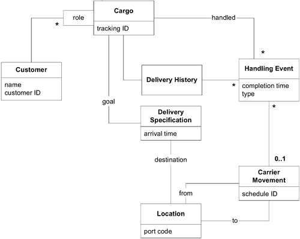
이 모델은 도메인 지식을 체계화하고 팀을 위한 언어를 제공한다. 우리는 다음과 같은 문장을 말할 수 있다.
“하나의 화물(Cargo)에는 여러 고객(Customer)이 관여하며, 각 고객은 서로 다른 역할을 맡는다.” “화물의 배송 목표가 명세되어 있다.” “명세(Specification)를 충족하는 일련의 운송 수단 이동(Carrier Movement)이 배송 목표를 달성할 것이다.”
모델의 각 객체는 명확한 의미를 지닌다.
취급 이벤트(Handling Event)는 화물을 선박에 적재하거나 세관을 통과시키는 등 화물에 대해 수행되는 개별적인 행위이다. 이 클래스는 아마도 적재, 하역, 수령인의 인수 등과 같은 다양한 종류의 사건을 나타내는 계층 구조로 구체화될 것이다.
배송 명세(Delivery Specification)는 배송 목표를 정의한다. 최소한 목적지와 도착 날짜가 포함되겠지만, 더 복잡할 수도 있다. 이 클래스는 명세(Specification) 패턴을 따른다(9장 참조).
이 책임은 화물(Cargo) 객체가 맡을 수도 있었겠지만, 배송 명세라는 추상화는 적어도 세 가지 이점을 제공한다.
배송 명세가 없다면, 화물 객체가 배송 목표를 명세하기 위한 모든 속성과 연관의 세부적인 의미까지 책임져야 할 것이다. 그렇게 되면 화물 객체가 복잡해져서 이해하거나 변경하기 어려워진다.
- 이 추상화는 모델 전체를 설명할 때 세부 사항을 쉽고 안전하게 감출 수 있게 해준다. 예를 들어 배송 명세 내부에 다른 기준들이 캡슐화되어 있을 수 있지만, 이 수준의 상세도를 가진 다이어그램은 이를 드러낼 필요가 없다. 이 다이어그램은 독자에게 배송에 관한 명세(Specification)가 존재하며 그 세부 사항은 지금 당장 신경 쓸 만큼 중요하지 않다는(그리고 실제로 나중에 쉽게 바뀔 수 있다는) 사실을 알려준다.
- 이 모델은 표현력이 더 뛰어나다. 배송 명세를 추가함으로써, 화물을 배송하는 정확한 수단은 아직 정해지지 않았지만 배송 명세에 제시된 목표를 반드시 달성해야 한다는 점을 명시적으로 드러낸다.
역할(Role)은 선적 과정에서 고객(Customer)들이 수행하는 서로 다른 역할을 구분한다. 한 명은 “송하인(shipper)”, 한 명은 “수하인(receiver)”, 한 명은 “지불인(payer)” 식이다. 특정 화물에 대해 주어진 역할을 수행할 수 있는 고객은 오직 한 명뿐이므로, 이 연관은 다대다(many-to-many)가 아닌 한정된(qualified) 다대일(many-to-one) 관계가 된다. 역할은 단순히 문자열로 구현할 수도 있고, 다른 동작이 필요하다면 클래스로 구현할 수도 있다.
운송 수단 이동(Carrier Movement)은 특정 운송 수단(선박이나 트럭 등)이 한 위치(Location)에서 다른 위치로 이동하는 특정 여정을 나타낸다. 화물은 하나 이상의 운송 수단 이동 기간 동안 운송 수단에 적재됨으로써 이곳에서 저곳으로 운반될 수 있다.
배송 이력(Delivery History)은 목표를 기술하는 배송 명세와 달리, 화물에 실제로 일어난 일을 반영한다. 배송 이력 객체는 마지막 적재 또는 하역 기록과 그에 해당하는 운송 수단 이동의 목적지를 분석하여 화물의 현재 위치를 계산할 수 있다. 성공적인 배송은 배송 명세의 목표를 충족하는 배송 이력으로 마무리된다.
방금 설명한 요구사항들을 처리하는 데 필요한 모든 개념은 이 모델 안에 들어 있다. 물론 객체를 영속화하고, 관련 객체를 찾는 등의 적절한 메커니즘이 뒷받침된다는 전제하에서다. 그러한 구현 문제는 모델에서 다루지 않지만, 설계에서는 반드시 다루어야 한다.
탄탄한 구현의 틀을 잡기 위해, 이 모델은 아직 몇 가지 명확화와 다듬기가 필요하다.
기억해야 할 점은, 일반적으로 모델 정제, 설계, 구현은 반복적인 개발 프로세스 속에서 함께 나아가야 한다는 것이다. 하지만 이 장에서는 설명의 명확성을 위해 비교적 성숙한 모델에서 출발하며, 변경은 오직 빌딩 블록 패턴을 활용하여 그 모델을 실용적인 구현과 연결할 필요성에 의해서만 동기부여될 것이다.
일반적으로 모델이 설계를 더 잘 지원하도록 정제될 때, 도메인에 대한 새로운 통찰을 반영하도록 함께 정제되어야 한다. 하지만 이 장에서는 설명의 명확성을 위해, 변경은 오직 빌딩 블록 패턴을 활용하여 실용적인 구현과 연결할 필요성에 의해서만 이루어질 것이다.
도메인 격리하기: 애플리케이션 도입
도메인 책임이 시스템의 다른 부분의 책임과 뒤섞이는 것을 방지하기 위해, 계층형 아키텍처(Layered Architecture)를 적용하여 도메인 계층을 구분하자.
깊은 분석에 들어가지 않고도, 세 가지 사용자 수준의 애플리케이션 기능을 식별하여 세 개의 애플리케이션 계층 클래스에 할당할 수 있다.
특정 화물의 과거 및 현재 취급 내역에 접근할 수 있는 추적 조회(Tracking Query)
- 새로운 화물을 등록하고 시스템이 이를 준비할 수 있게 하는 예약 애플리케이션(Booking Application)
- 화물의 각 취급 내역을 기록할 수 있는(추적 조회에서 찾는 정보를 제공하는) 사고 기록 애플리케이션(Incident Logging Application)
이 애플리케이션 클래스들은 조정자(coordinator)이다. 이들은 자신이 요청한 질문에 대한 답을 직접 계산해서는 안 된다. 그것은 도메인 계층의 역할이다.
엔티티(Entity)와 값 객체(Value Object) 구분하기
각 객체를 차례로 살펴보면서, 추적해야 하는 정체성(identity)이 있는지 아니면 표현되는 기본적인 값인지 찾아볼 것이다. 먼저 명확한 사례부터 살펴본 뒤 더 모호한 사례를 고찰해 보자.
고객(Customer)
쉬운 것부터 시작하자. 고객 객체는 사람이나 회사를 나타내며, 단어의 통상적인 의미 그대로 하나의 실체이다. 고객 객체는 사용자에게 중요한 정체성을 분명히 가지므로, 모델에서 엔티티(Entity)이다. 그렇다면 어떻게 추적할 것인가? 어떤 경우에는 납세자 번호(Tax ID)가 적절할 수 있지만, 국제적인 기업이라면 이를 사용할 수 없다. 이 질문은 도메인 전문가와의 상의를 필요로 한다. 해운 회사의 업무 담당자와 이 문제를 논의한 결과, 회사에는 이미 첫 영업 접촉 시 각 고객에게 ID 번호를 부여하는 고객 데이터베이스가 있다는 사실을 발견했다. 이 ID는 회사 전체에서 이미 사용되고 있으므로, 우리 소프트웨어에서도 이 번호를 사용하면 시스템 간에 정체성의 연속성을 확립할 수 있다. 초기에는 수동으로 입력하게 될 것이다.
화물(Cargo)
똑같이 생긴 두 개의 나무 상자도 서로 구별할 수 있어야 하므로, 화물 객체는 엔티티(Entity)이다. 실제로 모든 해운 회사는 각 화물에 추적 ID(tracking ID)를 부여한다. 이 ID는 자동으로 생성되어 사용자에게 보이며, 이 경우에는 아마 예약 시점에 고객에게 전달될 것이다.
취급 이벤트(Handling Event)와 운송 수단 이동(Carrier Movement)
우리가 이러한 개별 사건에 관심을 갖는 이유는 무슨 일이 일어나고 있는지 계속 추적할 수 있게 해주기 때문이다. 이들은 일반적으로 서로 대체할 수 없는 현실 세계의 사건을 반영하므로 엔티티(Entity)이다. 각 운송 수단 이동은 운항 일정표에서 얻은 코드로 식별될 것이다.
도메인 전문가와의 추가 논의를 통해, 취급 이벤트는 화물 ID, 완료 시각(completion time), 그리고 이벤트 유형의 조합으로 고유하게 식별될 수 있음이 밝혀졌다. 예를 들어, 동일한 화물이 같은 시각에 적재되면서 동시에 하역될 수는 없다.
위치(Location)
이름이 같은 두 장소는 동일한 장소가 아니다. 위도와 경도가 고유한 키를 제공할 수도 있겠지만, 이 시스템의 대부분 목적에서 그러한 측정값은 관심사가 아니며 상당히 복잡할 것이므로 그리 실용적이지 않을 것이다. 그보다는 위치는 항로(shipping lane)와 기타 도메인 특유의 관심사에 따라 장소들을 연결하는 일종의 지리 모델의 일부가 될 가능성이 높다. 따라서 임의로 자동 생성되는 내부 식별자면 충분할 것이다.
배송 이력(Delivery History)
이것은 다소 까다로운 사례이다. 배송 이력은 서로 대체할 수 없으므로 엔티티(Entity)이다. 하지만 배송 이력은 자신의 화물과 일대일 관계를 맺고 있으므로, 실제로 독자적인 정체성을 갖지는 않는다. 그 정체성은 자신을 소유한 화물로부터 빌려 온 것이다. 이 점은 애그리게이트(Aggregate)를 모델링할 때 더 명확해질 것이다.
배송 명세(Delivery Specification)
배송 명세는 화물의 목표를 나타내지만, 이 추상화는 화물에 의존하지 않는다. 이는 실제로는 어떤 배송 이력이 도달할 수 있는 가상의 상태를 표현한다. 우리는 화물에 연결된 배송 이력이 궁극적으로 화물에 연결된 배송 명세를 충족하기를 기대한다. 같은 장소로 가는 두 개의 화물이 있다면, 두 화물은 동일한 배송 명세를 공유할 수 있다. 하지만 배송 이력이 처음에는 둘 다 똑같이 비어 있더라도 동일한 배송 이력을 공유할 수는 없다. 배송 명세는 값 객체(Value Object)이다.
역할(Role)과 기타 속성
역할은 자신이 한정하는 연관에 대해 무언가를 설명해 주지만, 이력이나 연속성이 없다. 이는 값 객체(Value Object)이며, 서로 다른 화물/고객 연관 간에 공유될 수 있다.
타임스탬프나 이름 같은 다른 속성들도 값 객체(Value Object)이다.
해운 도메인에서 연관 설계하기
원래 다이어그램의 연관들은 어느 것도 탐색 방향(traversal direction)을 명시하지 않았지만, 양방향 연관은 설계에서 문제를 일으킨다. 또한 탐색 방향은 종종 도메인에 대한 통찰을 포착하여 모델 자체를 심화시킨다.
만약 고객이 자신이 선적한 모든 화물에 대한 직접 참조를 갖는다면, 장기적인 단골 고객의 경우 매우 다루기 힘들어진다. 또한 고객이라는 개념은 화물에만 국한된 것이 아니다. 큰 시스템에서 고객은 여러 객체와 관련하여 다양한 역할을 맡을 수 있다. 따라서 고객 객체에는 그러한 특정 책임을 지우지 않는 것이 최선이다. 고객별로 화물을 찾는 기능이 필요하다면, 데이터베이스 쿼리를 통해 수행할 수 있다. 이 문제는 이 장 뒷부분의 리포지토리(Repository) 절에서 다시 다룰 것이다.
만약 우리 애플리케이션이 선박의 적재 목록(inventory)을 추적하는 것이었다면, 운송 수단 이동에서 취급 이벤트로의 탐색이 중요했을 것이다. 하지만 우리의 비즈니스는 오직 화물만을 추적하면 된다. 취급 이벤트에서 운송 수단 이동 방향으로만 탐색이 가능하도록 연관을 설정하면, 우리 비즈니스에 대한 그러한 이해를 포착할 수 있다. 또한 다중성(multiplicity)이 있는 방향의 탐색을 허용하지 않음으로써 구현을 단순한 객체 참조로 줄일 수 있다.
나머지 결정들의 근거는 다음 페이지의 그림 7.2에 설명되어 있다.
그림 7.2. 일부 연관에서 탐색 방향이 제한되었다.

우리 모델에는 순환 참조가 하나 있다. 화물은 자신의 배송 이력을 알고, 배송 이력은 일련의 취급 이벤트를 보유하며, 취급 이벤트는 다시 화물을 가리킨다. 순환 참조는 많은 도메인에서 논리적으로 존재하며 때로는 설계에서도 필요하지만, 유지하기가 까다롭다. 구현상의 선택을 통해 동기화를 유지해야 하는 동일한 정보를 두 곳에 보관하지 않도록 도울 수 있다. 이 경우 초기 프로토타입에서는 배송 이력에 취급 이벤트들을 담는 List 객체를 두어 (자바로) 단순하지만 취약한 구현을 할 수 있다. 그러나 어느 시점에는 화물을 키(key)로 사용하는 데이터베이스 조회로 대체하기 위해 그 컬렉션을 없애고 싶어질 것이다. 이 논의는 리포지토리(Repository)를 선택할 때 다시 다룰 것이다. 이력을 조회하는 쿼리가 비교적 드물다면, 이 방식이 좋은 성능을 제공하고 유지보수를 단순화하며 취급 이벤트를 추가할 때의 오버헤드를 줄여줄 것이다. 반대로 이 쿼리가 매우 빈번하다면, 직접 포인터를 계속 유지하는 편이 낫다. 이러한 설계 트레이드오프는 구현의 단순성과 성능 사이의 균형을 맞추는 문제이다. 모델은 동일하며, 순환 구조와 양방향 연관을 그대로 포함한다.
애그리게이트(Aggregate) 경계
고객(Customer), 위치(Location), 운송 수단 이동(Carrier Movement)은 각자의 정체성을 가지며 여러 화물에 의해 공유되므로, 이들은 자신의 속성들과 이 논의의 상세 수준 아래에 있을 수 있는 다른 객체들을 포함하는 각자만의 애그리게이트(Aggregate) 루트여야 한다. 화물(Cargo) 역시 명백한 애그리게이트 루트이지만, 경계를 어디에 그을지에 대해서는 고민이 필요하다.
화물 애그리게이트는 그 특정 화물이 없다면 존재하지 않을 모든 것, 즉 배송 이력, 배송 명세, 취급 이벤트를 모두 쓸어 담을 수도 있다. 이는 배송 이력에는 잘 들어맞는다. 화물 자체를 원하지 않으면서 배송 이력만 직접 조회할 사람은 아무도 없다. 직접적인 전역 접근이 필요 없고 정체성도 사실상 화물로부터 파생되므로, 배송 이력은 화물의 경계 안에 깔끔하게 들어가며 루트가 될 필요가 없다. 배송 명세는 값 객체(Value Object)이므로 화물 애그리게이트에 포함하더라도 아무런 복잡성이 생기지 않는다.
취급 이벤트는 다른 문제이다. 앞서 우리는 취급 이벤트를 검색할 두 가지 데이터베이스 쿼리 가능성을 고려했다. 하나는 컬렉션의 대안으로서 배송 이력에 속한 취급 이벤트들을 찾는 것으로, 이는 화물 애그리게이트 내부의 지역적인 작업일 것이다. 다른 하나는 특정 운송 수단 이동에 적재하고 준비하는 모든 작업을 찾는 데 사용될 것이다. 두 번째 경우를 보면, 화물을 취급하는 활동은 화물 자체와 떨어져서 고려할 때도 나름의 의미를 가지는 것으로 보인다. 따라서 취급 이벤트는 그 자체로 애그리게이트의 루트가 되어야 한다.
그림 7.3. 모델에 부여된 애그리게이트(Aggregate) 경계. (참고: 그려진 경계 밖에 있는 엔티티는 그 자체로 애그리게이트의 루트임을 암시한다.)

리포지토리(Repository) 선택하기
설계에는 애그리게이트 루트인 다섯 개의 엔티티가 있으며, 다른 어떤 객체도 리포지토리(Repository)를 가질 수 없으므로 고려 대상을 이 다섯 개로 한정할 수 있다.
이 후보들 중 실제로 어느 것이 리포지토리를 가져야 하는지 결정하려면, 애플리케이션 요구사항으로 돌아가야 한다. 예약 애플리케이션을 통해 예약을 접수하려면, 사용자는 다양한 역할(송하인, 수하인 등)을 수행할 고객을 선택해야 한다. 따라서 고객 리포지토리가 필요하다. 또한 화물의 목적지로 지정할 위치를 찾아야 하므로, 위치 리포지토리를 만든다.
활동 기록 애플리케이션(Activity Logging Application)은 사용자가 화물이 적재되는 운송 수단 이동을 조회할 수 있게 해야 하므로, 운송 수단 이동 리포지토리가 필요하다. 또한 사용자는 시스템에 어떤 화물이 적재되었는지도 알려주어야 하므로, 화물 리포지토리가 필요하다.
그림 7.4. 리포지토리(Repository)는 선택된 애그리게이트 루트에 대한 접근을 제공한다.

지금 당장은 취급 이벤트 리포지토리가 없다. 첫 번째 반복 주기에서는 배송 이력과의 연관을 컬렉션으로 구현하기로 결정했고, 운송 수단 이동에 무엇이 적재되었는지 찾아야 하는 애플리케이션 요구사항도 없기 때문이다. 이 두 가지 이유 중 어느 하나라도 바뀔 수 있으며, 바뀐다면 그때 리포지토리를 추가할 것이다.
시나리오 따라가 보기
이 모든 결정을 교차 검증하려면, 애플리케이션 문제를 효과적으로 해결할 수 있는지 확인하기 위해 끊임없이 시나리오를 단계별로 밟아 보아야 한다.
애플리케이션 기능 예시: 화물의 목적지 변경하기
가끔 고객이 전화를 걸어 이렇게 말할 때가 있다. “이런! 화물을 해컨색(Hackensack)으로 보내 달라고 했는데, 사실 호보컨(Hoboken)으로 보내야 해요.” 우리는 고객에게 서비스를 제공하기 위해 존재하므로, 시스템은 이러한 변경을 지원해야 한다.
배송 명세는 값 객체(Value Object)이므로, 기존 것을 버리고 새 것을 얻은 다음 화물의 setter 메서드를 사용해 이전 것을 새 것으로 교체하는 것이 가장 간단할 것이다.
애플리케이션 기능 예시: 반복 거래
사용자들은 동일한 고객의 반복적인 예약이 서로 비슷한 경향이 있으므로, 기존 화물을 새로운 화물의 프로토타입으로 사용하고 싶다고 말한다. 애플리케이션은 사용자가 리포지토리에서 화물을 찾은 다음, 선택된 화물을 기반으로 새 화물을 생성하는 명령을 선택할 수 있게 할 것이다. 우리는 이를 프로토타입(PROTOTYPE) 패턴(Gamma et al. 1995)을 사용하여 설계할 것이다.
화물은 엔티티(Entity)이자 애그리게이트(Aggregate)의 루트이다. 따라서 신중하게 복사해야 하며, 애그리게이트 경계로 둘러싸인 각 객체나 속성에 어떤 일이 일어나야 하는지 따져보아야 한다. 하나씩 살펴보자.
- 배송 이력(Delivery History): 새롭고 비어 있는 배송 이력을 생성해야 한다. 이전 화물의 이력은 새 화물에 적용되지 않기 때문이다. 애그리게이트 경계 내부의 엔티티들은 보통 이런 식으로 다룬다.
- 고객 역할(Customer Roles): 고객에 대한 키 기반 참조를 담고 있는
Map(또는 다른 컬렉션)은 키를 포함해 그대로 복사해야 한다. 새 선적에서도 고객들이 같은 역할을 맡을 가능성이 높기 때문이다. 하지만 고객 객체 자체를 복사하지 않도록 주의해야 한다. 이전 화물 객체가 참조하던 것과 동일한 고객 객체를 참조하도록 해야 하는데, 고객은 애그리게이트 경계 밖의 엔티티이기 때문이다. - 추적 ID(Tracking ID): 처음부터 새 화물을 생성할 때와 동일한 출처에서 새 추적 ID를 제공받아야 한다.
우리가 화물 애그리게이트 경계 내부의 모든 것을 복사하고 복사본에 일부 수정을 가했지만, 애그리게이트 경계 밖의 것에는 전혀 영향을 미치지 않았다는 점에 주목하라.
객체 생성
화물(Cargo)을 위한 팩토리(Factory)와 생성자
화물을 위한 멋진 팩토리(Factory)가 있거나, “반복 거래” 시나리오에서처럼 다른 화물을 팩토리로 사용하더라도, 원시적인 생성자(primitive constructor)는 여전히 필요하다. 우리는 생성자가 불변식(invariant)을 충족하는 객체를 생성하거나, 적어도 엔티티의 경우 정체성이 온전한 객체를 생성하기를 원한다.
이러한 결정들을 바탕으로, 화물에 다음과 같은 팩토리 메서드(Factory Method)를 만들 수 있다.
public Cargo copyPrototype(String newTrackingID)또는 독립적인 팩토리(standalone FACTORY)에 다음과 같은 메서드를 만들 수도 있다.
public Cargo newCargo(Cargo prototype, String newTrackingID)독립적인 팩토리는 새 화물을 위한 (자동 생성된) 새 ID를 얻는 과정을 캡슐화할 수도 있으며, 그 경우 인자가 하나만 필요할 것이다.
public Cargo newCargo(Cargo prototype)이러한 팩토리들 중 어느 것에서 반환되는 결과든 동일할 것이다. 즉, 비어 있는 배송 이력과 null인 배송 명세를 가진 화물 객체이다.
화물과 배송 이력 사이의 양방향 연관은 화물이나 배송 이력 어느 쪽도 상대를 가리키지 않고서는 완전하지 않다는 것을 의미하므로, 둘은 함께 생성되어야 한다. 화물이 배송 이력을 포함하는 애그리게이트의 루트임을 기억하라. 따라서 화물의 생성자나 팩토리가 배송 이력을 생성하도록 허용할 수 있다. 배송 이력 생성자는 화물을 인자로 받을 것이다. 결과는 다음과 같은 형태가 될 것이다.
public Cargo(String id) {
trackingID = id;
deliveryHistory = new DeliveryHistory(this);
customerRoles = new HashMap();
}그 결과는 화물을 다시 가리키는 새로운 배송 이력을 가진 새로운 화물이다. 배송 이력 생성자는 자신의 애그리게이트 루트인 화물에 의해서만 독점적으로 사용되므로, 화물의 구성 방식이 캡슐화된다.
취급 이벤트(Handling Event) 추가하기
현실 세계에서 화물이 취급될 때마다, 어떤 사용자가 사고 기록 애플리케이션을 사용하여 취급 이벤트를 입력할 것이다.
모든 클래스에는 원시적인 생성자가 있어야 한다. 취급 이벤트는 엔티티(Entity)이므로, 그 정체성을 정의하는 모든 속성이 생성자에 전달되어야 한다. 앞서 논의했듯이, 취급 이벤트는 화물의 ID, 완료 시각, 이벤트 유형의 조합으로 고유하게 식별된다. 취급 이벤트의 유일한 다른 속성은 운송 수단 이동과의 연관인데, 어떤 유형의 취급 이벤트는 이 연관조차 갖지 않는다. 유효한 취급 이벤트를 생성하는 기본 생성자는 다음과 같을 것이다.
public HandlingEvent(Cargo c, String eventType, Date timeStamp) {
handled = c;
type = eventType;
completionTime = timeStamp;
}엔티티의 비식별(nonidentifying) 속성은 보통 나중에 추가할 수 있다. 이 경우 취급 이벤트의 모든 속성은 초기 트랜잭션에서 설정되고 (데이터 입력 오류를 수정하는 경우를 제외하면) 절대 변경되지 않으므로, 필요한 모든 인자를 받는 간단한 팩토리 메서드(Factory Method)를 각 이벤트 유형별로 취급 이벤트에 추가하는 것이 편리하고 클라이언트 코드의 표현력도 높여줄 수 있다. 예를 들어, “적재 이벤트”는 운송 수단 이동을 수반한다.
public static HandlingEvent newLoading(
Cargo c, CarrierMovement loadedOnto, Date timeStamp) {
HandlingEvent result =
new HandlingEvent(c, LOADING_EVENT, timeStamp);
result.setCarrierMovement(loadedOnto);
return result;
}모델의 취급 이벤트는 적재 및 하역에서부터 봉인, 보관, 그리고 운송 수단과 관련 없는 여타 활동에 이르기까지 다양한 특화된 취급 이벤트 클래스들을 캡슐화할 수 있는 추상화이다. 이들은 여러 서브클래스로 구현되거나 복잡한 초기화 과정을 가질 수도 있고, 둘 다일 수도 있다. 기반 클래스(Handling Event)에 각 유형별로 팩토리 메서드(Factory Method)를 추가하면 인스턴스 생성이 추상화되어, 클라이언트가 구현에 대해 알 필요가 없어진다. 팩토리는 어떤 클래스를 인스턴스화해야 하고 어떻게 초기화해야 하는지를 알 책임을 진다.
안타깝게도 이야기가 그렇게 간단하지만은 않다. 화물에서 배송 이력으로, 취급 이벤트로, 그리고 다시 화물로 돌아오는 참조의 순환 고리가 인스턴스 생성을 복잡하게 만든다. 배송 이력은 자신의 화물과 관련된 취급 이벤트들의 컬렉션을 보관하고 있으며, 새 객체는 트랜잭션의 일부로서 이 컬렉션에 추가되어야 한다. 이 역포인터(back-pointer)가 생성되지 않는다면 객체들의 일관성이 깨질 것이다.
그림 7.5. 취급 이벤트를 추가하려면 이를 배송 이력에 삽입해야 한다.

역포인터의 생성은 팩토리 안에 캡슐화할 수도 있지만(그리고 원래 속해야 할 도메인 계층에 둘 수도 있지만), 이제 이러한 어색한 상호작용을 완전히 제거하는 대안 설계를 살펴볼 것이다.
리팩토링을 위해 잠시 멈추기: ‘Cargo’ 애그리게이트(Aggregate)의 대안 설계
모델링과 설계는 끊임없이 앞으로만 나아가는 과정이 아니다. 새로운 통찰을 활용하여 모델과 설계를 개선하는 빈번한 리팩토링이 없다면 금세 정체되고 말 것이다.
지금쯤 이 설계에는 작동하고 모델을 반영하기는 하지만 몇 가지 번거로운 측면이 드러나고 있다. 설계를 시작할 때는 중요해 보이지 않았던 문제들이 점차 성가시게 느껴지기 시작한다. 그중 하나로 돌아가서, 사후의 지혜를 발휘해 우리에게 유리하도록 설계의 판을 다시 짜 보자.
취급 이벤트를 추가할 때 배송 이력을 갱신해야 한다는 요구사항 때문에 화물 애그리게이트가 트랜잭션에 휘말리게 된다. 만약 다른 사용자가 동시에 화물을 수정하고 있었다면, 취급 이벤트 트랜잭션이 실패하거나 지연될 수 있다. 취급 이벤트를 입력하는 일은 빠르고 단순해야 하는 현장 운영 활동이므로, 경합(contention) 없이 취급 이벤트를 입력할 수 있는 능력이 중요한 애플리케이션 요구사항이다. 이는 우리로 하여금 다른 설계를 고려하게 만든다.
배송 이력의 취급 이벤트 컬렉션을 쿼리로 대체하면, 취급 이벤트가 자신의 애그리게이트 외부에서 어떠한 무결성 문제도 일으키지 않고 추가될 수 있다. 이러한 변경은 해당 트랜잭션이 간섭 없이 완료될 수 있게 해준다. 입력되는 취급 이벤트가 많고 조회가 비교적 적다면, 이 설계가 더 효율적이다. 사실 기반 기술이 관계형 데이터베이스라면, 어차피 내부적으로는 컬렉션을 흉내 내기 위해 쿼리가 사용되고 있었을 가능성이 크다. 컬렉션 대신 쿼리를 사용하면 화물과 취급 이벤트 사이의 순환 참조에서 일관성을 유지하는 어려움도 줄어들 것이다.
쿼리에 대한 책임을 맡기기 위해, 취급 이벤트를 위한 리포지토리(Repository)를 추가하자. 취급 이벤트 리포지토리는 특정 화물과 관련된 이벤트들을 조회하는 쿼리를 지원할 것이다. 게다가 리포지토리는 특정 질문에 효율적으로 답할 수 있도록 최적화된 쿼리도 제공할 수 있다. 예를 들어, 자주 쓰이는 접근 경로가 화물의 현재 상태를 추론하기 위해 배송 이력이 마지막으로 보고된 적재나 하역 기록을 찾는 것이라면, 바로 그 관련 취급 이벤트만 반환하도록 쿼리를 고안할 수 있다. 그리고 특정 운송 수단 이동에 적재된 모든 화물을 찾는 쿼리를 원한다면, 쉽게 추가할 수 있다.
그림 7.6. 배송 이력의 취급 이벤트 컬렉션을 쿼리로 구현하면 취급 이벤트의 삽입이 단순해지고 화물 애그리게이트와의 경합에서 자유로워진다.
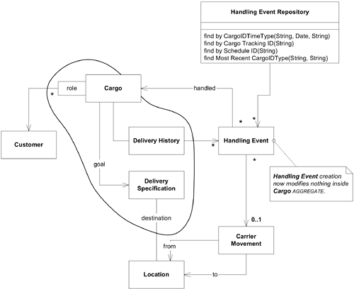
이렇게 하면 배송 이력에는 영속적인 상태(persistent state)가 남지 않게 된다. 이 시점에서는 배송 이력을 계속 유지할 실질적인 필요가 없다. 어떤 질문에 답해야 할 때마다 필요에 따라 배송 이력 자체를 파생시켜 만들어 낼 수 있다. 이 엔티티는 반복적으로 재생성되더라도 동일한 화물 객체와의 연관이 각 생성 주기 사이의 연속성의 맥을 유지해 주므로, 이 객체를 파생시켜 사용할 수 있다.
순환 참조는 더 이상 생성하고 유지하기 까다로운 문제가 아니다. 화물 팩토리는 새 인스턴스에 비어 있는 배송 이력을 붙이지 않아도 되므로 단순화될 것이다. 데이터베이스 공간을 약간 줄일 수 있고, 일부 객체 데이터베이스에서는 제한된 자원인 영속 객체의 실제 개수를 상당히 줄일 수도 있다. 만약 일반적인 사용 패턴이 사용자가 화물이 도착할 때까지 상태를 거의 조회하지 않는 것이라면, 불필요한 작업이 크게 줄어들 것이다.
반면에 객체 데이터베이스를 사용하고 있다면, 연관이나 명시적인 컬렉션을 탐색하는 것이 리포지토리 쿼리보다 훨씬 빠를 가능성이 높다. 접근 패턴이 가끔씩 마지막 위치를 표적 조회하는 것이 아니라 전체 이력을 빈번하게 나열하는 것을 포함한다면, 성능 트레이드오프는 명시적인 컬렉션 쪽에 유리할 수 있다. 그리고 추가된 기능(“이 운송 수단 이동에 무엇이 실려 있는가?”)은 아직 요청되지 않았고 앞으로도 영영 요청되지 않을 수도 있으므로, 그 선택지를 위해 많은 비용을 지불하고 싶지 않다는 점을 기억하라.
이러한 종류의 대안과 설계 트레이드오프는 어디에나 있으며, 이 작고 단순화된 시스템만으로도 수많은 예를 들 수 있을 것이다. 하지만 중요한 점은 이것들이 동일한 모델 내에서의 자유도라는 것이다. 우리가 해온 것처럼 값(Value), 엔티티(Entity), 그리고 그 애그리게이트(Aggregate)를 모델링함으로써, 우리는 이러한 설계 변경의 파급 효과를 줄였다. 예를 들어, 이 경우 모든 변경은 화물의 애그리게이트 경계 내부로 캡슐화되었다. 또한 취급 이벤트 리포지토리의 추가가 필요하기는 했지만, 취급 이벤트 자체의 재설계를 요구하지는 않았다(물론 리포지토리 프레임워크의 세부 사항에 따라 일부 구현 변경이 수반될 수는 있다).
해운 모델의 모듈(Module)
지금까지는 너무 적은 수의 객체만 살펴보았기 때문에 모듈성(modularity)이 문제가 되지 않았다. 이제는 모델의 조직화 방식이 모델에 영향을 미치는 모듈(Module) 구성을 살펴보기 위해, (물론 여전히 단순화되어 있지만) 조금 더 큰 해운 모델의 일부를 들여다보자.
그림 7.7은 이 책의 열정적인 가상의 독자가 깔끔하게 분할한 모델을 보여준다. 이 다이어그램은 5장에서 제기한 인프라스트럭처 주도 패키징(infrastructure-driven packaging) 문제의 변형이다. 이 경우 객체들은 각자가 따르는 패턴에 따라 묶였다. 그 결과 개념적으로 연관성이 거의 없는 객체들(낮은 응집도)이 한데 몰려 있고, 연관들은 모든 모듈 사이를 마구잡이로 가로지른다(높은 결합도). 패키지가 하나의 이야기를 들려주기는 하지만, 그것은 해운의 이야기가 아니다. 개발자가 당시 무엇을 읽고 있었는지에 대한 이야기일 뿐이다.
그림 7.7. 이 모듈(Module)들은 도메인 지식을 전달하지 못한다.
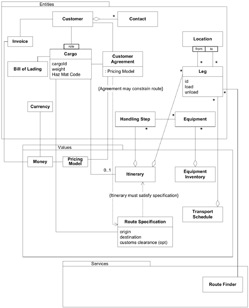
패턴별로 분할하는 것은 명백한 오류처럼 보일지 모르지만, 실제로는 영속 객체와 일시적 객체를 분리하거나 객체의 의미에 기반하지 않은 여타 체계적인 분류 방식과 비교해 크게 더 나쁠 것도 없다.
그 대신, 우리는 응집력 있는 개념들을 찾고 프로젝트의 다른 사람들에게 무엇을 전달하고 싶은지에 집중해야 한다. 더 작은 규모의 모델링 결정들과 마찬가지로, 이를 수행하는 방법은 여러 가지가 있다. 그림 7.8은 그중 직관적인 한 가지 방법을 보여준다.
그림 7.8. 광범위한 도메인 개념에 기반한 모듈(Module)
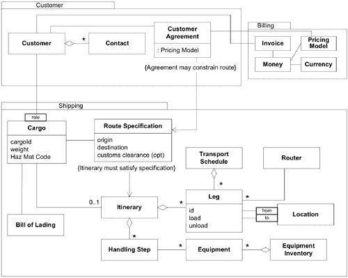
그림 7.8의 모듈(Module) 이름은 팀의 언어에 기여한다. 우리 회사는 고객에게 비용을 청구하기 위해 배송 업무를 수행한다. 영업 및 마케팅 담당자는 고객을 응대하고 고객과 계약을 맺는다. 운영 담당자는 배송을 수행하여 화물을 지정된 목적지까지 운송한다. 백오피스(back office)는 청구를 담당하며 고객의 계약에 명시된 요금에 따라 청구서를 발행한다. 이것이 바로 이 모듈(Module) 집합으로 내가 들려줄 수 있는 하나의 이야기다.
이 직관적인 분류는 분명 후속 반복 주기를 거치며 다듬어지거나 심지어 완전히 대체될 수도 있지만, 현재로서는 모델 주도 설계(MODEL-DRIVEN DESIGN)를 돕고 유비쿼터스 언어(Ubiquitous Language)에 기여하고 있다.
새로운 기능 도입: 할당 확인(Allocation Checking)
지금까지는 초기 요구사항과 모델을 바탕으로 작업해 왔다. 이제 첫 번째 주요 신규 기능이 추가될 예정이다.
이 가상의 해운 회사 영업 부서는 고객 관계, 매출 전망 등을 관리하기 위해 별도의 소프트웨어를 사용한다. 그중 한 기능은 수익 관리(yield management)를 지원하는데, 상품 유형, 출발지와 목적지, 또는 카테고리 이름으로 입력할 수 있는 기타 요소를 기준으로 회사가 예약받을 특정 유형의 화물 물량을 할당할 수 있게 해준다. 이는 각 유형별로 얼마만큼 판매할 것인지에 대한 목표가 된다. 이를 통해 수익성이 높은 사업 유형이 수익성이 낮은 화물에 밀려나지 않도록 하는 동시에, 과소 예약(선박 용량을 충분히 활용하지 못하는 것)이나 과도한 초과 예약(화물을 너무 자주 선적 거절하여 고객 관계가 손상되는 것)을 피할 수 있다.
이제 그들은 이 기능이 예약 시스템과 통합되기를 원한다. 예약이 들어오면 이러한 할당량과 대조하여 예약을 수락해야 하는지 확인하고자 하는 것이다.
필요한 정보는 두 곳에 존재하며, 예약 애플리케이션(Booking Application)은 요청된 예약을 수락할지 거부할지 결정하기 위해 이 두 곳을 조회해야 한다. 전반적인 정보 흐름을 개략적으로 그려보면 다음과 같다.
그림 7.9. 우리의 예약 애플리케이션(Booking Application)은 영업 관리 시스템(Sales Management System)과 우리 도메인의 리포지토리(Repository) 양쪽의 정보를 사용해야 한다.
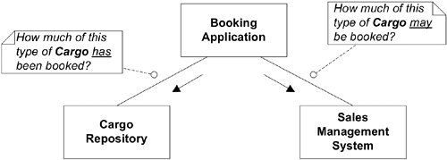
두 시스템 연결하기
영업 관리 시스템(Sales Management System)은 우리가 여기서 다루고 있는 것과 동일한 모델을 염두에 두고 작성되지 않았다. 만약 예약 애플리케이션이 영업 관리 시스템과 직접 상호작용한다면, 우리 애플리케이션은 다른 시스템의 설계에 맞춰야 할 것이며, 이는 명확한 모델 주도 설계(MODEL-DRIVEN DESIGN)를 유지하기 어렵게 만들고 유비쿼터스 언어(Ubiquitous Language)를 혼란스럽게 할 것이다. 대신 우리 도메인 모델과 영업 관리 시스템의 언어 사이를 번역하는 역할을 맡을 별도의 클래스를 만들자. 이 클래스는 범용적인 번역 메커니즘이 아닐 것이다. 우리 애플리케이션이 필요로 하는 기능만 노출하고, 이를 우리 도메인 모델의 관점에서 재추상화(reabstract)할 것이다. 이 클래스는 부패 방지 계층(Anti-Corruption Layer, 14장에서 논의) 역할을 하게 된다.
이것은 영업 관리 시스템에 대한 인터페이스이므로, 처음에는 “Sales Management Interface” 같은 이름을 붙이려 할 수도 있다. 하지만 그렇게 하면 우리에게 더 유용한 방향으로 문제를 재정의하는 데 언어를 활용할 기회를 놓치게 된다. 대신 다른 시스템에서 가져와야 하는 각각의 할당 기능마다 서비스(Service)를 정의하자. 그리고 우리 시스템 내에서의 책임을 반영하는 이름인 “Allocation Checker”라는 클래스로 이 서비스(Service)들을 구현할 것이다.
만약 다른 통합이 필요하다면(예를 들어 우리의 Customer 리포지토리(Repository) 대신 영업 관리 시스템의 고객 데이터베이스를 사용하는 경우), 그 책임을 수행하는 서비스(Service)들을 갖춘 또 다른 번역기를 만들 수 있다. 다른 프로그램과 통신하는 메커니즘을 처리하기 위해 Sales Management System Interface 같은 하위 수준 클래스를 두는 것이 여전히 유용할 수 있지만, 그 클래스가 번역을 담당하지는 않을 것이다. 또한 그 클래스는 Allocation Checker 뒤에 숨겨지므로 도메인 설계에는 드러나지 않는다.
모델 강화하기: 사업 세분화(Segmenting the Business)
이제 두 시스템의 상호작용 윤곽을 잡았으니, “이 유형의 화물(Cargo)을 얼마나 예약할 수 있는가?”라는 질문에 답할 수 있는 어떤 종류의 인터페이스를 제공할 것인가? 까다로운 점은 화물의 “유형(type)”이 무엇인지 정의하는 것이다. 왜냐하면 우리의 도메인 모델은 아직 화물을 분류하지 않기 때문이다. 영업 관리 시스템에서 화물 유형은 단지 카테고리 키워드의 집합일 뿐이며, 우리도 우리의 유형을 그 목록에 맞출 수 있다. 인자로 문자열 컬렉션을 넘길 수도 있을 것이다. 하지만 그렇게 하면 또 다른 기회를 놓치게 된다. 이번에는 다른 시스템의 도메인을 재추상화할 기회다. 화물의 카테고리가 존재한다는 지식을 수용하도록 우리 도메인 모델을 풍부하게 만들어야 한다. 새로운 개념을 도출하기 위해 도메인 전문가와 브레인스토밍을 해야 한다.
때로는(11장에서 논의하겠지만) 분석 패턴(analysis pattern)이 모델링 해결책에 대한 아이디어를 줄 수 있다. 『Analysis Patterns』(Fowler 1996)라는 책은 이러한 종류의 문제를 다루는 패턴, 즉 엔터프라이즈 세그먼트(ENTERPRISE SEGMENT)를 설명한다. 엔터프라이즈 세그먼트(ENTERPRISE SEGMENT)는 비즈니스를 세분화하는 방식을 정의하는 일련의 차원(dimension)이다. 이러한 차원에는 해운 비즈니스에서 이미 언급된 모든 요소뿐만 아니라, 당월 누계(month to date)와 같은 시간 차원도 포함될 수 있다. 할당 모델에 이 개념을 사용하면 모델이 더 표현력 있어지고 인터페이스가 단순해진다. “Enterprise Segment”라는 클래스가 추가적인 값 객체(Value Object)로서 도메인 모델과 설계에 등장하게 되며, 이는 각 화물(Cargo)마다 도출되어야 한다.
그림 7.10. Allocation Checker는 부패 방지 계층(Anti-Corruption Layer) 역할을 하여 영업 관리 시스템에 대해 우리 도메인 모델의 관점에서 선택적인 인터페이스를 제공한다.
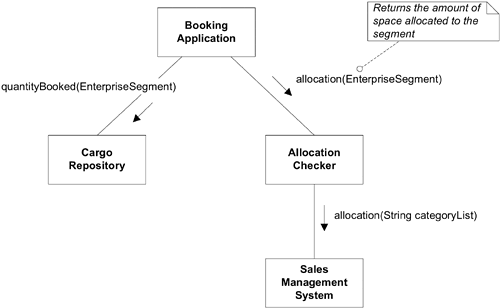
Allocation Checker는 Enterprise Segment와 외부 시스템의 카테고리 이름 사이를 번역할 것이다. Cargo Repository 역시 Enterprise Segment를 기반으로 하는 쿼리를 제공해야 한다. 두 경우 모두 Enterprise Segment 객체와의 협력을 통해 세그먼트의 캡슐화를 깨뜨리거나 자체 구현을 복잡하게 만들지 않고 연산을 수행할 수 있다. (Cargo Repository가 인스턴스 컬렉션이 아니라 개수로 쿼리에 응답한다는 점에 주목하라.)
이 설계에는 여전히 몇 가지 문제가 남아 있다.
우리는 예약 애플리케이션에 다음 규칙을 적용하는 역할을 맡겼다. “화물(Cargo)은 해당 Enterprise Segment에 할당된 공간이 이미 예약된 수량에 새 화물의 크기를 더한 값보다 클 때 수락된다.” 비즈니스 규칙을 강제하는 것은 도메인의 책임이며 애플리케이션 계층에서 수행되어서는 안 된다.
- 예약 애플리케이션이 어떻게 Enterprise Segment를 도출하는지가 명확하지 않다. 이 두 책임 모두 Allocation Checker에 속하는 것으로 보인다. 인터페이스를 변경하면 이 두 서비스(Service)를 분리하고 상호작용을 명확하고 명시적으로 만들 수 있다.
그림 7.11. Booking Application에서 Allocation Checker로 이전된 도메인 책임

이 통합으로 인해 부과되는 유일한 중대한 제약은 영업 관리 시스템이 Allocation Checker가 Enterprise Segment로 변환할 수 없는 차원을 사용해서는 안 된다는 점이다. (엔터프라이즈 세그먼트 패턴을 적용하지 않았다면, 같은 제약으로 인해 영업 시스템은 Cargo Repository에 대한 쿼리에 사용할 수 있는 차원만 사용해야 했을 것이다. 이 접근 방식도 가능하기는 하지만, 영업 시스템이 도메인의 다른 부분들로 흘러 들어가게 된다. 현재 설계에서는 Cargo Repository가 Enterprise Segment만 처리하도록 설계되면 충분하며, 영업 시스템의 변경 사항은 처음부터 파사드(FACADE)로 구상된 Allocation Checker까지만 파급된다.)
성능 튜닝
도메인 설계의 나머지 부분이 관심을 갖는 것은 Allocation Checker의 인터페이스뿐이지만, 내부 구현은 성능 문제가 발생할 경우 이를 해결할 수 있는 기회를 제공한다. 예를 들어, 영업 관리 시스템이 다른 서버(어쩌면 다른 지역)에서 실행 중이라면 통신 오버헤드가 상당할 수 있으며, 할당 확인 한 번마다 두 번의 메시지 교환이 발생한다. 특정 화물을 수락해야 하는지라는 기본적인 질문에 답하기 위해 영업 관리 시스템을 호출하는 두 번째 메시지는 대안이 없다. 그러나 화물에 대한 Enterprise Segment를 도출하는 첫 번째 메시지는 할당 결정 자체에 비해 상대적으로 정적인 데이터와 동작에 기반한다. 한 가지 설계 옵션은 이 정보를 캐싱하여 Allocation Checker와 함께 같은 서버에 배치함으로써 메시지 오버헤드를 절반으로 줄이는 것이다. 이러한 유연성에는 대가가 따른다. 설계가 더 복잡해지고 복제된 데이터를 어떻게든 최신 상태로 유지해야 한다. 하지만 분산 시스템에서 성능이 중요할 때, 유연한 배치는 중요한 설계 목표가 될 수 있다.
마지막 점검
이것으로 끝이다. 이 통합은 우리의 단순하고 개념적으로 일관된 설계를 뒤엉킨 난장판으로 만들 수도 있었지만, 이제 부패 방지 계층(Anti-Corruption Layer), 서비스(Service), 그리고 몇 가지 엔터프라이즈 세그먼트(ENTERPRISE SEGMENT)를 사용하여 영업 관리 시스템의 기능을 예약 시스템에 깔끔하게 통합하고 도메인을 더욱 풍부하게 만들었다.
마지막 설계 질문: 왜 Cargo에게 Enterprise Segment를 도출하는 책임을 주지 않았는가? 언뜻 보면, 도출에 필요한 모든 데이터가 Cargo 안에 있다면 이를 Cargo의 파생 속성으로 만드는 것이 우아해 보인다. 불행히도 그렇게 단순하지 않다. 엔터프라이즈 세그먼트는 비즈니스 전략에 유용한 기준에 따라 임의로 정의된다. 동일한 엔티티(Entity)라도 목적에 따라 다르게 세분화될 수 있다. 우리는 예약 할당 목적을 위해 특정 화물의 세그먼트를 도출하고 있지만, 세무 회계 목적에서는 완전히 다른 Enterprise Segment를 가질 수도 있다. 심지어 새로운 영업 전략 때문에 영업 관리 시스템이 재구성된다면 할당용 Enterprise Segment조차 바뀔 수 있다. 그렇게 되면 Cargo가 자신의 개념적 책임을 훨씬 벗어나는 Allocation Checker에 대해 알아야 할 것이며, 특정 유형의 Enterprise Segment를 도출하는 메서드들로 가득 차게 될 것이다. 따라서 이 값을 도출하는 책임은 그 규칙이 적용되는 데이터를 가진 객체가 아니라, 세분화 규칙을 알고 있는 객체에 두는 것이 적절하다. 이러한 규칙을 별도의 “Strategy” 객체로 분리하여 Cargo가 Enterprise Segment를 도출할 수 있도록 전달할 수도 있다. 그 해결책은 여기서 우리가 가진 요구사항을 넘어서는 것처럼 보이지만, 추후 설계를 위한 선택지가 될 수 있으며 크게 파괴적인 변경은 아닐 것이다.
3부: 더 깊은 통찰을 향한 리팩토링
이 책의 2부는 모델과 구현 사이의 일치를 유지하기 위한 토대를 마련했다. 검증된 기본 빌딩 블록 집합을 일관된 언어와 함께 사용하면 개발 작업에 어느 정도 합리성과 질서가 잡힌다. 물론 진짜 어려움은 도메인 전문가의 미묘한 관심사를 포착하고 실용적인 설계를 이끌어낼 수 있는 예리한 모델을 실제로 찾아내는 데 있다. 궁극적으로 우리는 도메인에 대한 깊은 이해를 담아낸 모델을 개발하고자 한다. 이를 통해 소프트웨어는 도메인 전문가가 생각하는 방식과 더 잘 조화를 이루고, 사용자의 요구에도 더 잘 부응할 수 있다. 이 책의 3부에서는 그 목표를 명확히 하고, 그 목표에 접근할 수 있는 과정을 설명하며, 개발자 자신뿐만 아니라 애플리케이션의 요구도 수용하는 설계를 만들기 위해 적용할 수 있는 몇 가지 설계 원칙과 패턴을 설명할 것이다. 유용한 모델을 성공적으로 개발하는 것은 다음 세 가지로 귀결된다. 정교한 도메인 모델은 달성 가능하며 수고를 들일 만한 가치가 있다. 이러한 모델은 도메인에 대해 배우고자 하는 개발자와 도메인 전문가의 긴밀한 참여를 포함한, 반복적인 리팩토링 과정을 거치지 않고서는 거의 개발되지 않는다. 이를 효과적으로 구현하고 사용하려면 정교한 설계 기술이 필요할 수 있다. 리팩토링(Refactoring)은 소프트웨어의 기능을 변경하지 않으면서 소프트웨어를 재설계하는 것이다. 개발자는 정교한 사전 설계 결정을 내리는 대신, 기존 기능은 그대로 유지하면서도 설계를 더 유연하거나 이해하기 쉽게 만드는 작고 개별적인 설계 변경을 연속적으로 코드에 가한다. 자동화된 단위 테스트 모음은 비교적 안전하게 코드를 실험할 수 있게 해준다. 이 과정 덕분에 개발자는 멀리 앞을 내다보아야 하는 부담에서 벗어날 수 있다. 하지만 리팩토링 방법에 관한 거의 모든 문헌은 매우 세부적인 수준에서 코드를 더 읽기 쉽게 만들거나 개선하기 위한 기계적인 코드 변경에 초점을 맞춘다. 개발자가 확립된 디자인 패턴을 적용할 기회를 포착했을 때 “패턴을 향한 리팩토링(refactoring to patterns)”9^이라는 접근 방식이 리팩토링 과정에 더 높은 수준의 목표를 제시해 줄 수는 있다. 그럼에도 이는 여전히 설계의 품질을 주로 기술적 관점에서 바라본 것이다. 10^ 리팩토링의 목표로서의 패턴은 Gamma 등(1995)에서 간략히 언급된 바 있다. Joshua Kerievsky는 패턴을 향한 리팩토링을 더욱 성숙하고 유용한 형태로 발전시켰다(Kerievsky 2003). 시스템의 생존 가능성에 가장 큰 영향을 미치는 리팩토링은 도메인에 대한 새로운 통찰에서 비롯되거나 코드를 통한 모델의 표현을 명확하게 만드는 리팩토링이다. 이러한 유형의 리팩토링은 디자인 패턴으로의 리팩토링이나 지속적으로 수행되어야 하는 마이크로 리팩토링(micro-refactoring)을 결코 대체하지 않는다. 그 위에 또 하나의 층위, 즉 더 깊은 모델을 향한 리팩토링(refactoring to a deeper model)을 겹쳐 놓는 것이다. 도메인 통찰에 기반해 리팩토링을 실행할 때는 대개 일련의 마이크로 리팩토링을 수반하지만, 그 동기는 단순히 코드의 상태 때문만은 아니다. 오히려 마이크로 리팩토링은 더 통찰력 있는 모델로 나아가기 위한 편리한 변경 단위를 제공한다. 목표는 개발자가 코드가 무엇을 하는지 이해할 뿐만 아니라, 왜 그렇게 하는지도 이해하고, 이를 도메인 전문가와 진행 중인 의사소통과 연결할 수 있게 하는 것이다. 『리팩토링』(Fowler 1999)의 카탈로그는 일상적으로 마주치는 대부분의 마이크로 리팩토링을 다룬다. 각각의 리팩토링은 주로 코드 자체에서 관찰할 수 있는 어떤 문제에 의해 촉발된다. 반면, 도메인 모델은 새로운 통찰이 떠오름에 따라 너무나 다양한 방식으로 변환되기 때문에 포괄적인 카탈로그를 엮는 것은 불가능하다. 모델링은 여느 탐험과 마찬가지로 본질적으로 비정형적이다. 더 깊은 통찰을 향한 리팩토링은 학습과 깊은 사고가 이끄는 곳이라면 어디든 따라가야 한다. 11장에서 논의하겠지만 출간된 성공적인 모델 모음집이 도움이 될 수는 있으나, 도메인 모델링을 요리책이나 도구 상자로 축소하려다가 본질을 놓쳐서는 안 된다. 모델링과 설계에는 창의성이 필요하다. 이어지는 여섯 개의 장에서는 도메인 모델과 그 모델에 생명을 불어넣는 설계를 개선하는 방법에 대한 몇 가지 구체적인 사고 접근법을 제시할 것이다. 객체 분석을 설명하는 전통적인 방식은 요구사항 문서에서 명사와 동사를 식별하여 이를 초기 객체와 메서드로 삼는 것이다. 이러한 설명은 초보자에게 객체 모델링을 가르치는 데는 유용할 수 있지만 지나친 단순화라는 점이 인정되고 있다. 실제로 초기 모델은 보통 피상적인 지식에 기반하기 때문에 순진하고 표피적이다. 예를 들어, 나는 예전에 해운 애플리케이션 작업을 한 적이 있는데, 객체 모델에 대한 나의 초기 아이디어는 선박(ship)과 컨테이너(container)를 중심으로 구성되었다. 선박은 이 장소에서 저 장소로 이동했다. 컨테이너는 적재(load)와 하역(unload) 작업을 통해 연결되거나 분리되었다. 이는 물리적인 해운 활동의 일부를 정확하게 묘사한 것이다. 하지만 해운 비즈니스 소프트웨어를 위한 모델로서는 그리 유용하지 않다는 것이 드러났다. 결국 해운 전문가들과 수개월 동안 여러 차례 반복 작업을 거치면서, 우리는 상당히 다른 모델로 발전시켰다. 그 모델은 비전문가에게는 덜 자명했지만, 전문가들에게는 훨씬 더 적합했다. 그것은 화물 인도(delivering cargo)라는 비즈니스에 초점을 다시 맞춘 모델이었다. 선박은 여전히 존재했지만, 선박이나 기차 또는 다른 운송 수단에 예정된 특정 항차인 “선박 항해(vessel voyage)”의 형태로 추상화되었다. 선박 자체는 부차적인 것이어서, 정비를 받거나 일정이 밀릴 경우 막판에 다른 선박으로 교체될 수 있었고, 그러는 동안에도 선박 항해는 계획대로 진행되었다. 선적 컨테이너는 모델에서 거의 자취를 감췄다. 컨테이너는 화물 취급 애플리케이션에서 다른 매우 복잡한 형태로 등장하기는 했지만, 원래 애플리케이션의 맥락에서는 운영상의 세부 사항에 불과했다. 화물의 물리적 이동은 그 화물에 대한 법적 책임의 이전에 비해 뒷전으로 밀려났다. 대신 “선하증권(bill of lading)”처럼 덜 자명해 보이는 객체들이 전면으로 부각되었다. 새로운 객체 모델러들이 프로젝트에 합류할 때마다 그들의 첫 번째 제안이 무엇이었을까? 바로 누락된 클래스, 즉 선박(ship)과 컨테이너(container)였다. 그들은 똑똑한 사람들이었다. 다만 발견의 과정을 거치지 않았을 뿐이다. 깊은 모델(deep model)은 도메인 전문가의 핵심 관심사와 가장 관련 깊은 지식을 명료하게 표현하는 동시에, 도메인의 표피적인 측면은 털어낸다. 이 정의에는 추상화라는 말이 언급되어 있지 않다. 깊은 모델은 대개 추상적인 요소를 지니지만, 구체적인 요소가 문제의 핵심을 찌른다면 얼마든지 구체적인 요소를 가질 수도 있다. 다재다능함, 단순함, 그리고 설명력은 도메인과 진정으로 조화를 이루는 모델에서 나온다. 그러한 모델이 거의 항상 지니는 한 가지 특징은, 비록 추상적일지라도 비즈니스 전문가들이 즐겨 사용하는 단순한 언어다. 끊임없는 리팩토링 과정 속에서 설계 자체도 변경을 뒷받침할 수 있어야 한다. 10장에서는 설계를 변경하는 사람과 시스템의 다른 부분과 통합하는 사람 모두가 작업하기 쉬운 설계를 만드는 방법을 살펴본다. 설계의 특정 특성들은 설계를 변경하고 사용하기 쉽게 만든다. 그것들은 복잡하지는 않지만 달성하기는 만만치 않다. “유연한 설계(Supple Design)”와 이에 접근하는 방법들이 10장의 주제다. 다행스러운 점 하나는, 각 변경이 새로운 이해를 반영하기만 한다면 모델과 코드를 거듭해서 변형시키는 행위 자체가 바로 변경이 가장 필요한 지점들에 유연성을 불어넣고, 흔한 작업들을 쉽게 수행할 수 있는 길을 만들어 준다는 것이다. 오래 낀 장갑은 손가락이 구부러지는 부위는 부드럽고 유연해지는 반면 다른 부위는 단단하게 손을 보호해 준다. 따라서 이러한 모델링과 설계 접근법에는 많은 시행착오가 따르지만, 실제로는 변경이 점점 더 쉬워질 수 있으며 반복적인 변경은 우리를 유연한 설계(Supple Design)로 이끌어 준다. 변경을 촉진하는 것 외에도, 유연한 설계(Supple Design)는 모델 자체를 다듬는 데 기여한다. 모델 주도 설계(MODEL-DRIVEN DESIGN)는 두 다리로 서 있다. 깊은 모델은 표현력 있는 설계를 가능하게 한다. 동시에 설계는 개발자가 실험할 수 있는 유연성과 무슨 일이 일어나고 있는지 개발자에게 보여줄 수 있는 명확성을 갖출 때, 실제로 모델 발견 과정에 통찰을 되먹임(feedback)할 수 있다. 우리가 찾는 모델은 그저 멋진 아이디어의 모음이 아니라 시스템의 토대이기 때문에, 이 피드백 루프의 나머지 절반은 필수적이다. 눈앞의 문제에 진정으로 부합하는 설계를 만들려면 먼저 도메인의 핵심적이고 관련성 있는 개념을 포착한 도메인 모델을 갖추어야 한다. 이러한 개념을 적극적으로 탐색하여 설계에 끌어들이는 것이 9장, “암묵적 개념을 명시적으로 만들기”의 주제다. 모델과 설계 사이의 밀접한 관계 때문에, 코드를 리팩토링하기 어려워지면 모델링 과정도 멈춰 서게 된다. 10장 “유연한 설계(Supple Design)”에서는 다른 누구보다도 바로 여러분 자신을 포함한 소프트웨어 개발자들을 위해 소프트웨어를 작성하여, 확장과 변경이 생산적으로 이루어지도록 하는 방법을 논한다. 이러한 노력은 모델을 더욱 다듬는 작업과 맞물려 돌아간다. 이는 종종 더 고급 설계 기법과 모델 정의에서의 더 높은 엄밀함을 수반한다. 발견한 개념을 모델링할 좋은 방법을 찾기 위해 대개는 창의성과 시행착오에 의존하게 되지만, 때로는 누군가 미리 닦아 놓은 패턴을 따를 수 있다. 11장과 12장에서는 “분석 패턴”과 “디자인 패턴”의 적용을 다룬다. 이러한 패턴은 기성품 해결책은 아니지만, 지식 탐구(knowledge crunching) 과정에 자양분을 공급하고 탐색 범위를 좁혀 준다. 하지만 3부는 도메인 주도 설계에서 가장 흥미진진한 사건으로 시작하려 한다. 때로는 모델 주도 설계(MODEL-DRIVEN DESIGN)와 명시적 개념들로 무대가 마련되었을 때 돌파구(breakthrough)를 맞이하게 된다. 기대했던 것보다 훨씬 더 표현력이 뛰어나고 다재다능한 무언가로 소프트웨어를 탈바꿈시킬 기회가 열리는 것이다. 이는 새로운 기능을 의미할 수도 있고, 거대하고 경직된 코드 덩어리를 더 깊은 모델에 대한 단순하고 유연한 표현으로 대체하는 것을 의미할 수도 있다. 이러한 돌파구가 매일 찾아오는 것은 아니지만, 너무나 값지기 때문에 실제로 찾아왔을 때 그 기회를 알아보고 붙잡아야 한다. 8장에서는 더 깊은 통찰을 향한 리팩토링 과정이 돌파구로 이어졌던 한 프로젝트의 실화를 들려준다. 이 경험은 미리 계획할 수 있는 성격의 것이 아니다. 그럼에도 불구하고 도메인 리팩토링을 생각하는 데 훌륭한 맥락을 제공한다.
8장. 돌파구(Breakthrough)

리팩토링에서 얻는 수익은 선형적이지 않다. 보통은 작은 노력에 대해 한계 수익이 발생하며, 작은 개선들이 차곡차곡 쌓인다. 이러한 개선들은 엔트로피에 맞서 싸우며, 화석화된 레거시를 막아내는 최전선의 방어선이다. 하지만 가장 중요한 통찰 중 일부는 불현듯 찾아와 프로젝트 전체에 충격을 준다.
느리지만 확실하게 팀은 지식을 흡수하고 이를 모델로 다듬어 나간다(knowledge crunching). 깊은 모델은 한 번에 객체 하나씩, 즉 여기서 연관관계를 살짝 다듬고 저기서 책임을 옮기는 일련의 작은 리팩토링을 통해 점진적으로 나타날 수 있다.
그러나 종종 지속적인 리팩토링은 그보다 덜 질서 정연한 무언가를 위한 길을 닦아 놓는다. 코드와 모델을 한 번씩 다듬을 때마다 개발자들은 더 명확한 시야를 얻게 된다. 이 명확성은 통찰의 돌파구가 열릴 잠재력을 만들어 낸다. 변화의 물결이 밀려들면서 사용자의 현실과 우선순위에 더 깊은 수준에서 부합하는 모델로 이어진다. 복잡성이 증발하는 동시에 다재다능함과 설명력은 갑자기 급증한다.
이러한 종류의 돌파구는 기법이 아니라 하나의 사건이다. 과제는 무슨 일이 일어나고 있는지 알아차리고 이에 어떻게 대처할지 결정하는 데 있다. 이 경험이 어떤 느낌인지 전하기 위해, 내가 몇 년 전에 참여했던 프로젝트에서 어떻게 매우 가치 있는 깊은 모델에 도달했는지에 대한 실화를 들려주겠다.
돌파구 이야기
뉴욕에서 리팩토링으로 긴 겨울을 보낸 끝에, 우리는 도메인의 핵심 지식 일부를 포착한 모델과 애플리케이션에서 실질적인 역할을 해내는 설계에 도달했다. 우리는 한 투자은행에서 신디케이트론(syndicated loan, 협조융자)을 관리하는 대규모 애플리케이션의 핵심 부분을 개발하고 있었다.
인텔(Intel)이 10억 달러 규모의 공장을 짓고자 할 때, 단일 대출 회사가 감당하기에는 너무 큰 대출이 필요하므로 대출 기관들은 자원을 모아 퍼실리티(facility, 대출 한도 약정)를 지원하는 신디케이트(syndicate, 차관단)를 구성한다(사이드바 참조). 보통 투자은행이 신디케이트의 간사(syndicate leader) 역할을 맡아 거래와 기타 서비스를 조율한다. 우리 프로젝트는 이 전체 과정을 추적하고 지원하는 소프트웨어를 구축하는 것이었다.
꽤 괜찮은 모델, 하지만 . . .
우리는 꽤 뿌듯해하고 있었다. 4개월 전만 해도 도저히 손댈 수 없는 물려받은 코드베이스 때문에 깊은 곤경에 빠져 있었는데, 그때 이후로 우리는 그것을 일관된 모델 주도 설계(MODEL-DRIVEN DESIGN)로 씨름하며 탈바꿈시켜 놓았기 때문이다.
그림 8.1에 반영된 모델은 일반적인 경우를 매우 단순하게 만든다. Loan Investment는 Facility에서 해당 투자자가 차지하는 지분에 비례하여, 특정 투자자가 Loan(대출)에 기여한 몫을 나타내는 파생 객체다.
그림 8.1. 대주의 지분이 고정되어 있다고 가정하는 모델

“퍼실리티(Facility)”란 무엇인가? 이 맥락에서 “퍼실리티(facility)”는 건물이나 시설을 뜻하지 않는다. 대부분의 프로젝트에서 그렇듯 도메인 전문가의 전문 용어가 우리 어휘로 들어와 유비쿼터스 언어(Ubiquitous Language)의 일부가 되었다. 상업은행 도메인에서 퍼실리티(facility)란 회사가 돈을 빌려주기로 한 약정(commitment)을 말한다. 여러분의 신용카드도 미리 정해진 한도까지, 미리 정해진 이자율로 필요할 때 언제든 빌릴 수 있는 권리를 부여하는 하나의 퍼실리티다. 카드를 사용하면 미상환 대출(outstanding loan)이 발생하며, 추가로 결제할 때마다 퍼실리티에서 인출(drawdown)이 일어나 대출금이 늘어난다. 결국 여러분은 대출 원금을 상환한다. 또한 연회비를 낼 수도 있다. 이는 카드(즉, 퍼실리티)를 보유할 수 있는 특권에 대한 수수료이며 대출과는 무관하다.
하지만 몇 가지 불안한 징후들이 있었다. 우리는 설계를 복잡하게 만드는 예상치 못한 요구사항들에 계속 걸려 넘어졌다. 대표적인 예로, Facility 내의 지분은 특정 대출 인출(loan drawdown)에 참여할 때의 가이드라인일 뿐이라는 사실을 서서히 깨닫게 된 것이다. 차주가 돈을 요청하면 신디케이트의 간사는 모든 구성원에게 각자의 지분을 납입하라고 요청(call)한다.
요청을 받으면 투자자들은 대개 자기 몫을 내놓지만, 종종 신디케이트의 다른 구성원들과 협상하여 더 적게(또는 더 많이) 투자하기도 한다. 우리는 모델에 Loan Adjustment를 추가함으로써 이를 수용했다.
그림 8.2. 문제 해결을 위해 점진적으로 변경된 모델. Loan Adjustment는 대주가 Facility에서 원래 합의했던 지분에서 벗어난 내역을 추적한다.

이런 식의 개선 덕분에 다양한 거래 규칙이 명확해짐에 따라 보조를 맞출 수 있었다. 하지만 복잡성은 점점 증가했고, 정말 탄탄한 기능으로 빠르게 수렴해 가는 것 같지 않았다.
더욱 골칫거리였던 것은 점점 더 복잡해지는 알고리즘으로도 잡을 수 없었던 미묘한 반올림(rounding) 불일치였다. 물론 1억 달러(MM) 거래에서 몇 페니(penny)가 어디로 갔는지 신경 쓰는 사람은 없지만, 은행가들은 그 몇 페니까지 꼼꼼하게 맞출 수 없는 소프트웨어는 신뢰하지 않는다. 우리는 우리가 겪는 어려움이 근본적인 설계 문제의 증상일지도 모른다고 의심하기 시작했다.
돌파구
어느 주, 문득 무엇이 잘못되었는지 불현듯 깨달음이 왔다. 우리의 모델은 비즈니스에 맞지 않는 방식으로 Facility와 Loan의 지분을 한데 묶어 두고 있었던 것이다. 이 깨달음은 광범위한 파장을 일으켰다. 비즈니스 전문가들이 고개를 끄덕이며 열정적으로 도와주는 가운데—감히 말하건대, 왜 우리가 이토록 오래 걸렸는지 의아해하며—우리는 화이트보드에 새 모델을 그려 나가며 토론했다. 아직 세부 사항이 다 굳어지지는 않았지만, 새 모델의 핵심 특징은 알고 있었다. Loan의 지분과 Facility의 지분이 서로 독립적으로 변할 수 있다는 것이었다. 이 통찰을 바탕으로, 우리는 다음과 비슷한 모양의 새 모델 시각화 자료를 사용해 수많은 시나리오를 검토해 보았다.
그림 8.3. Facility 지분에 기반해 배분된 인출(drawdown)

이 다이어그램은 차주가 Facility 하에서 약정된 1억 달러($100MM) 중 초기 5천만 달러($50MM)를 인출하기로 선택했음을 보여준다. 세 대주는 Facility 지분에 정확히 비례하여 각자의 몫을 분담하고, 그 결과 대주들 사이에 나뉜 5천만 달러($50MM)의 Loan이 만들어진다.
그런 다음 그림 8.4에서 차주는 추가로 3천만 달러($30MM)를 인출하여 미상환 Loan 잔액을 8천만 달러($80MM)로 늘리는데, 이는 여전히 Facility의 1억 달러($100MM) 한도 이내다. 이번에는 B사가 참여하지 않기로 선택하고 A사가 추가 지분을 가져가도록 한다. 이 인출의 지분은 이러한 투자 선택을 반영한다. 인출 금액이 Loan에 더해지면, Loan의 지분은 더 이상 Facility의 지분에 비례하지 않게 된다. 이런 일은 흔히 발생한다.
그림 8.4. 대주 B가 두 번째 인출에서 빠지기로 선택한다.
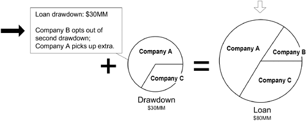
그림 8.5. 원금 상환액은 항상 미상환 Loan의 지분에 비례하여 분배된다.

차주가 Loan을 상환할 때, 그 돈은 Facility가 아니라 Loan의 지분에 따라 대주들에게 나뉜다. 마찬가지로 이자 지급액도 Loan 지분에 따라 나뉠 것이다.
그림 8.6. 수수료 지급액은 항상 Facility의 지분에 비례하여 분배된다.

반면, 차주가 Facility를 이용할 수 있는 특권에 대해 수수료(fee)를 지불할 때, 이 돈은 실제로 돈을 빌려준 사람이 누구인지와 상관없이 Facility 지분에 따라 나뉜다. Loan은 수수료 지급에 의해 변하지 않는다. 심지어 대주들이 이자 지분과는 별도로 수수료 지분을 거래하는 등의 시나리오도 존재한다.
더 깊은 모델
우리는 두 가지 깊은 통찰을 얻었다. 첫 번째는 우리의 “Investments”와 “Loan Investments”가 단지 더 일반적이고 근본적인 개념인 지분(shares)의 두 가지 특수 사례일 뿐이라는 깨달음이었다. Facility의 지분, Loan의 지분, 지급 분배의 지분. 어디에나 지분, 지분, 지분뿐이었다. 나눌 수 있는 모든 가치의 지분 말이다.
격동적인 며칠이 지난 후, 나는 전문가들과의 논의에서 사용된 언어와 함께 탐구했던 시나리오들을 바탕으로 지분(shares) 모델을 스케치했다.
그림 8.7. 지분(shares)에 대한 추상 모델
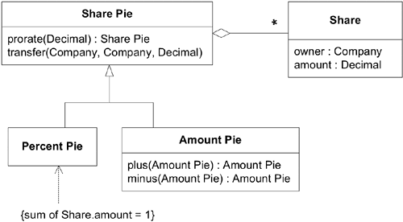
또한 그에 맞춰 새로운 대출 모델도 스케치했다.
그림 8.8. Share Pie를 사용한 Loan 모델
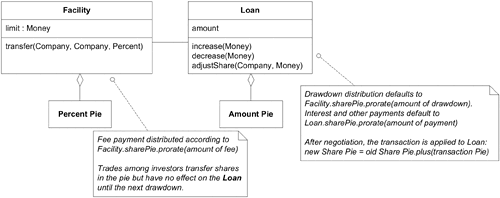
더 이상 Facility나 Loan의 지분을 위한 특화된 객체들은 없었다. 둘 다 훨씬 더 직관적인 “Share Pie”로 분해되었다. 이러한 일반화 덕분에 “지분 수학(shares math)”을 도입할 수 있었고, 모든 거래에서 지분 계산을 대폭 단순화했으며, 계산을 더 표현력 있고 간결하며 쉽게 조합할 수 있게 만들었다.
하지만 무엇보다도, 새로운 모델이 부적절한 제약을 제거했기 때문에 문제들이 사라졌다. 이 모델은 합계, 수수료 분배 등에 대한 유효한 제약 조건은 그대로 유지하면서도, Loan의 Share가 Facility의 Share 비율에서 벗어날 수 있도록 자유롭게 풀어 주었다. Loan의 Share Pie를 직접 조정할 수 있게 되었으므로 Loan Adjustment는 더 이상 필요하지 않았고, 방대한 양의 특수 사례 로직이 제거되었다.
Loan Investment가 사라졌고, 이 시점에서 우리는 “loan investment”가 은행 용어가 아니라는 사실을 깨달았다. 사실 비즈니스 전문가들은 우리에게 그 용어를 이해하지 못하겠다고 여러 번 말했었다. 그들은 우리의 소프트웨어 지식을 존중하여 기술적 설계에 유용하겠거니 하고 넘겼던 것이다. 실제로는 우리가 도메인에 대한 불완전한 이해를 바탕으로 그 용어를 만들어 냈던 것이었다.
갑자기, 도메인을 바라보는 이 새로운 방식을 바탕으로 우리는 이전에 겪었던 모든 시나리오를 이전보다 훨씬 단순하게, 비교적 손쉽게 처리할 수 있게 되었다. 그리고 늘 모델 다이어그램이 “너무 기술적”이라고 말하던 비즈니스 전문가들도 우리의 다이어그램을 완벽하게 이해했다. 화이트보드에 스케치만 해보고도, 우리는 가장 끈질겼던 반올림 문제들이 뿌리째 뽑힐 것이며 복잡한 반올림 코드 일부를 폐기할 수 있다는 것을 알 수 있었다.
우리의 새 모델은 잘 작동했다. 정말로, 정말로 잘 작동했다.
그리고 우리는 모두 속이 울렁거렸다!
냉엄한 결정
이 시점에서 우리가 의기양양했을 것이라고 생각하는 것이 당연할지 모른다. 하지만 그렇지 않았다. 우리는 촉박한 마감 시한에 쫓기고 있었고, 프로젝트는 이미 위험할 정도로 일정이 지연된 상태였다. 우리를 지배한 감정은 두려움이었다.
리팩토링의 복음(gospel)은 항상 작은 단계로 나아가며 항상 모든 것이 계속 작동하도록 유지하라는 것이다. 하지만 이 새로운 모델로 코드를 리팩토링하려면 많은 지원 코드를 변경해야 했고, 그 중간에 안정적으로 멈출 수 있는 지점이 거의, 아니 전혀 없을 것이었다. 우리가 할 수 있는 몇 가지 작은 개선점들은 보였지만, 새로운 개념에 더 가까워지게 해주는 것은 하나도 없었다. 목표에 도달하기 위한 일련의 작은 단계들이 보이기는 했지만, 그 과정에서 애플리케이션의 일부가 작동하지 않게 될 것이었다. 게다가 당시는 그러한 프로젝트에서 자동화 테스트가 널리 쓰이던 시절 이전이었다. 우리에게는 자동화 테스트가 전혀 없었기 때문에, 예기치 못한 고장이 발생할 것이 뻔했다.
그리고 많은 노력이 들 것이었다. 우리는 이미 몇 달간의 강행군으로 지쳐 있었다.
이때 우리는 프로젝트 매니저와 잊지 못할 회의를 가졌다. 우리 매니저는 총명하고 대담한 사람이었다. 그는 일련의 질문을 던졌다.
Q1:새 설계로 현재 기능 수준까지 복구하는 데 얼마나 걸릴 것인가?A1:약 3주 정도 걸립니다.Q2:이 변경 없이 문제들을 해결할 수 있는가?A2:아마 가능할 것입니다. 하지만 장담할 수 없습니다.Q3:지금 하지 않으면 다음 릴리스에서 앞으로 나아갈 수 있는가?A3:이 변경 없이는 진전이 느릴 것입니다. 그리고 이미 설치 기반(installed base)이 생기고 나면 변경하기가 훨씬 더 어려워질 것입니다.Q4:이것이 해야 할 옳은 일이라고 생각하는가?A4:정치적 상황이 불안정하다는 것을 알고 있으니, 어쩔 수 없다면 그냥 버텨 나갈 수는 있습니다. 그리고 우리도 지쳐 있습니다. 하지만 그렇습니다. 이것은 비즈니스에 훨씬 더 잘 맞는 더 단순한 해결책입니다. 장기적으로는 위험이 더 낮습니다.
그는 우리에게 진행 허가를 내주었고, 윗선의 압박(heat)은 자기가 감당하겠다고 말했다. 나는 그가 그 결정을 내리는 데 필요했던 용기와 신뢰에 대해 언제나 깊은 존경심을 가지고 있다.
우리는 죽어라 매달렸고 3주 만에 해냈다. 큰 작업이었지만 놀라울 만큼 순조롭게 진행되었다.
보상
우리를 당혹게 하던 예상치 못한 요구사항 변경들이 멈췄다. 반올림 로직은 여전히 완전히 단순하지는 않았지만 안정화되었고 이치에 맞게 되었다. 우리는 버전 1을 출시했고 버전 2로 가는 길이 열렸다. 내 신경 쇠약도 간신히 피할 수 있었다.
버전 2가 발전해 나가면서, 이 Share Pie는 전체 애플리케이션을 하나로 묶는 통일된 주제가 되었다. 기술 인력과 비즈니스 전문가들이 시스템을 논의할 때 이것을 사용했다. 마케팅 담당자들은 잠재 고객에게 기능을 설명할 때 이것을 사용했다. 그 잠재 고객과 고객들은 즉시 이를 파악하고 기능을 논의할 때 사용했다. 이것이 바로 신디케이트론(loan syndication)의 핵심을 꿰뚫었기 때문에 진정으로 유비쿼터스 언어(Ubiquitous Language)의 일부가 된 것이다.
기회
더 깊은 모델로의 돌파구가 열릴 가능성이 눈앞에 나타나면, 대개 두렵기 마련이다. 그러한 변화는 대부분의 리팩토링보다 더 큰 기회와 더 높은 위험을 동반한다. 게다가 시기도 적절하지 않을 수 있다.
우리가 그렇지 않기를 아무리 바라더라도, 진보는 순탄한 여정이 아니다. 진정으로 깊은 모델로의 전환은 사고방식의 근본적인 전환이며 설계에 대한 대대적인 변경을 요구한다. 많은 프로젝트에서 모델과 설계의 가장 중요한 진전은 바로 이러한 돌파구에서 나온다.
기본에 집중하라
돌파구를 일으키려 애쓰다가 마비 상태에 빠지지 마라. 그 가능성은 대개 수많은 소소한 리팩토링 뒤에 찾아온다. 대부분의 시간은 점진적인 개선을 이루는 데 쓰이며, 연이은 개선 과정에서 모델에 대한 통찰이 서서히 떠오른다.
돌파구가 일어날 무대를 마련하려면 지식 탐구(knowledge crunching)와 견고한 유비쿼터스 언어(Ubiquitous Language)를 가꾸는 데 집중하라. 중요한 도메인 개념을 파헤쳐 모델에서 명시적으로 드러내라(9장에서 논의). 설계가 더 유연해지도록 다듬어라(10장 참조). 모델을 정제(distill)하라(15장 참조). 이처럼 더 예측 가능한 지렛대들을 밀어붙여라. 이것들이 명확성을 높여 주며, 명확성은 대개 돌파구의 전조가 된다.
같은 일반적 개념적 틀 안에 갇혀 있더라도 모델을 점진적으로 깊게 만드는 소소한 개선을 망설이지 마라. 너무 멀리 앞을 내다보느라 주저앉지 마라. 그저 기회가 왔을 때 알아챌 수 있도록 주의를 기울여라.
에필로그: 연쇄적인 새로운 통찰
그 돌파구는 우리를 위기에서 구해냈지만, 그것이 이야기의 끝은 아니었다. 더 깊은 모델은 애플리케이션을 더 풍부하게 하고 설계를 더 명확하게 만들 뜻밖의 기회들을 열어 주었다.
소프트웨어의 Share Pie 버전을 출시한 지 불과 몇 주 만에, 우리는 설계를 복잡하게 만드는 모델의 또 다른 어색한 측면을 발견했다. 중요한 엔티티(Entity) 하나가 빠져 있었고, 그 빈자리 때문에 다른 객체들이 여분의 책임을 떠안고 있었던 것이다. 구체적으로, 대출 인출(loan drawdown), 수수료 지급 등을 지배하는 중요한 규칙들이 있었는데, 이 모든 로직이 Facility와 Loan의 여러 메서드에 쑤셔 넣어져 있었다. Share Pie 돌파구 이전에는 거의 눈에 띄지 않았던 이러한 설계 문제들이 시야가 맑아지자 뚜렷하게 드러났다. 이제 우리는 대화 중에 모델에서는 어디에도 찾아볼 수 없는 용어들이 튀어나오는 것을 알아차렸는데—예를 들어 “거래(transaction)”(금융 거래를 의미함) 같은 용어들이었다—그 복잡한 메서드들 모두가 암묵적으로 이 개념을 가리키고 있었다는 사실을 깨닫기 시작했다.
앞서 설명한 것과 비슷한 과정을 거치면서(다만 다행히도 시간 압박은 훨씬 덜한 상태에서), 또 한 차례의 통찰과 한층 더 깊은 모델로 이어졌다. 이 새로운 모델은 그 암묵적 개념들을 다양한 종류의 Transaction으로 명시화했고, 동시에 Position(Facility와 Loan을 포함하는 추상화)을 단순화했다. 우리가 가진 다양한 거래들과 그 규칙, 협상 절차, 승인 프로세스를 모두 비교적 자명한(self-explanatory) 코드로 쉽게 정의할 수 있게 되었다.
그림 8.9. 몇 주 뒤에 뒤따른 또 하나의 모델 돌파구. Transaction에 대한 제약 조건을 손쉽게 정밀하게 표현할 수 있게 되었다.

깊은 모델로의 진정한 돌파구 이후에 흔히 그러하듯, 새로운 설계의 명확성과 단순함이 새로운 유비쿼터스 언어(Ubiquitous Language)에 기반한 향상된 의사소통과 결합하여 또 다른 모델링 돌파구로 이어진 것이다.
대부분의 프로젝트가 이미 구축된 것의 무게와 복잡성에 짓눌려 발이 묶이기 시작하는 단계에서, 우리의 개발 속도는 오히려 가속화되고 있었다.
9장. 암묵적 개념을 명시적으로 만들기
깊은 모델링(deep modeling)은 듣기에는 훌륭하지만, 실제로는 어떻게 해야 하는가? 깊은 모델이 힘을 발휘하는 이유는 사용자의 활동, 문제, 그리고 해결책에 관한 본질적인 지식을 간결하고 유연하게 표현할 수 있는 핵심 개념과 추상화를 담고 있기 때문이다. 첫 번째 단계는 도메인의 본질적인 개념을 어떤 식으로든 모델에 표현하는 것이다. 정교화는 지식 탐구(knowledge crunching)와 리팩토링을 거듭한 뒤에 뒤따라온다. 하지만 이 과정이 본격적으로 가동되는 것은 중요한 개념이 인식되어 모델과 설계에서 명시적으로 표현될 때다.
도메인 모델과 그에 상응하는 코드의 많은 변환은, 개발자가 논의 중에 암시되었거나 설계에 암묵적으로 존재하던 개념을 인식하고 이를 하나 이상의 객체나 관계로 모델에 명시적으로 표현할 때 일어난다.
때때로 이전에 암묵적이던 개념을 명시적인 개념으로 변환하는 작업 자체가 곧바로 깊은 모델로 이어지는 돌파구가 되기도 한다. 그러나 더 흔하게는, 여러 중요한 개념이 모델에서 명시적으로 드러난 뒤에, 즉 연속적인 리팩토링을 통해 그 개념들의 책임을 반복적으로 다듬고, 다른 객체와의 관계를 바꾸고, 심지어 이름까지 몇 번 바꾼 뒤에야 돌파구가 찾아온다. 마침내 모든 것이 초점이 맞듯 딱 들어맞게 되는 것이다. 하지만 그 과정은 암시된 개념을 아무리 투박한 형태라도 우선 어떤 형태로든 인식하는 것에서 시작된다.
개념 파헤치기
개발자는 숨어 있는 암묵적 개념을 드러내는 단서들에 민감해져야 하며, 때로는 적극적으로 그 개념들을 찾아 나서야 한다. 이러한 발견의 대부분은 팀의 언어에 귀 기울이고, 설계의 어색한 부분과 전문가 진술 속 겉보기 모순을 면밀히 살피고, 도메인 문헌을 파고들며, 수많은 실험을 수행하는 과정에서 나온다.
언어에 귀 기울이기
이런 경험을 떠올려 볼 수 있을 것이다. 사용자들은 늘 보고서에 나오는 어떤 항목에 대해 이야기해 왔다. 그 항목은 여러 객체의 속성들을 모아서 만들며, 심지어 데이터베이스에 직접 쿼리를 날려 조합하기도 한다. 애플리케이션의 다른 부분에서도 무언가를 화면에 표시하거나 보고서를 작성하거나 값을 도출하기 위해 똑같은 데이터 집합을 조합한다. 하지만 개발자는 그것을 별도의 객체로 만들 필요성을 전혀 느끼지 못했다. 아마도 사용자들이 특정 용어로 무엇을 뜻하는지 제대로 이해하지 못했고, 그 용어가 중요하다는 사실조차 깨닫지 못했기 때문일 것이다.
그러다 어느 날 갑자기 머릿속에 불이 켜진다. 그 보고서에 있는 항목의 이름이 사실은 중요한 도메인 개념을 가리킨다는 것을 깨달은 것이다. 당신은 새로운 통찰을 얻고 들뜬 마음으로 도메인 전문가들과 이야기를 나눈다. 전문가들은 당신이 마침내 이해했다는 사실에 안도할 수도 있고, 자신들은 처음부터 당연하게 여기던 개념이라 하품을 할지도 모른다. 어느 쪽이든 당신은 칠판에 모델 다이어그램을 그리기 시작하며, 그동안 어물쩍 넘어가던 부분을 구체적인 모델로 채워 넣는다. 사용자들은 새 모델이 다른 요소들과 어떻게 연결되는지에 대한 세부 사항을 바로잡아 주는데, 이때 당신은 논의의 질 자체가 달라졌음을 느낄 수 있다. 개발자와 사용자는 서로를 훨씬 더 정확하게 이해하게 되고, 특정 시나리오를 해결하기 위해 모델 간의 상호작용을 시연하는 과정도 한층 자연스러워진다. 도메인 모델의 언어가 더 강력해진 것이다. 새 모델을 반영해 코드를 리팩터링하고 나면 설계가 훨씬 깔끔해졌음을 발견하게 된다.
도메인 전문가가 사용하는 언어에 귀를 기울여야 한다. 복잡한 무언가를 간결하게 표현하는 용어가 있는가? 전문가들이 (어쩌면 완곡하게) 당신의 단어 선택을 고쳐 주는가? 특정 표현을 사용했을 때 그들의 얼굴에서 어리둥절한 표정이 사라지는가? 이런 것들은 모두 모델에 도움을 줄 수 있는 개념이 숨어 있다는 단서다.
이는 과거의 단순한 “명사는 곧 객체다”라는 발상이 아니다. 새로운 단어를 듣는 것은 하나의 실마리를 얻는 것이며, 그 실마리를 따라 대화와 지식 탐구(knowledge crunching)를 이어 가면서 깔끔하고 유용한 개념을 깎아 내는 것이 목표다. 사용자나 도메인 전문가가 설계 어디에도 없는 어휘를 사용하고 있다면 그것은 경고 신호다. 개발자와 도메인 전문가 모두가 설계에 없는 용어를 함께 사용하고 있다면 그 경고는 두 배로 강력하다.
어쩌면 이를 하나의 기회로 바라보는 편이 더 나을지도 모른다. 유비쿼터스 언어(Ubiquitous Language)는 대화, 문서, 모델 다이어그램, 심지어 코드에까지 두루 스며드는 어휘로 이루어진다. 어떤 용어가 설계에 빠져 있다면, 그 용어를 설계에 포함시켜 모델과 설계를 개선할 기회인 셈이다.
예제
해운 모델에서 누락된 개념 포착하기
팀은 이미 화물을 예약할 수 있는 동작하는 애플리케이션을 개발한 상태였다. 이제 출발지와 목적지, 그리고 선박 간 환적 지점에서 화물을 싣고 내리는 작업 지시를 조율하는 데 도움을 줄 “운영 지원(operations support)” 애플리케이션을 새로 구축하려던 참이었다.
예약 애플리케이션은 화물의 운송 경로를 계획하기 위해 라우팅 엔진을 사용했다. 여정의 각 구간(leg)은 데이터베이스 테이블의 한 행으로 저장되었으며, 여기에는 화물을 운송하기로 예정된 선박 항차(특정 선박의 특정 항해) ID, 적재 위치, 그리고 양하 위치가 기록되어 있었다.
그림 9.1.

개발자와 해운 전문가 사이에 오간 대화(상당 부분 축약됨)를 살짝 엿들어 보자.
개발자: “화물 예약” 테이블에 운영 애플리케이션이 필요로 할 모든 데이터가 들어 있는지 확인하고 싶습니다.
전문가: 운영팀에서는 화물(Cargo)에 대한 전체 여정(itinerary)이 필요할 겁니다. 지금은 어떤 정보들이 들어 있나요?
개발자: 화물 ID와 각 구간(leg)별 선박 항차, 선적항, 양하항이 들어 있습니다.
전문가: 날짜는요? 운영팀은 예상 시각을 기준으로 하역 작업 계약을 맺어야 합니다.
개발자: 음, 날짜는 선박 항차 일정에서 도출할 수 있습니다. 테이블 데이터는 정규화되어 있거든요.
전문가: 그렇죠, 날짜가 필요한 건 당연합니다. 운영 담당자들은 이런 여정표를 보고 다가올 하역 작업을 계획하니까요.
개발자: 아… 네, 날짜 정보는 확실히 제공할 수 있습니다. 운영 관리 애플리케이션에서 각 하역 작업의 날짜까지 포함한 전체 선적 및 양하 순서를 제공받을 수 있을 겁니다. 말씀하신 그 “여정(itinerary)”이라는 거겠죠.
전문가: 좋습니다. 여정이 가장 핵심적으로 필요한 정보니까요. 사실 예약 애플리케이션 메뉴에 여정표를 인쇄하거나 고객에게 이메일로 보내 주는 기능이 있지 않나요? 그걸 어떻게 활용할 수 없을까요?
개발자: 아, 그건 그냥 보고서 기능일 뿐이에요. 그걸 기반으로 운영 애플리케이션을 만들 수는 없을 겁니다.
[개발자가 잠시 생각에 잠겼다가, 이내 표정이 밝아진다.]
개발자: 그러니까 이 여정이라는 것이 사실상 예약과 운영을 잇는 연결 고리군요.
전문가: 맞습니다. 그리고 일부 고객 응대 업무와도 연결되죠.
개발자: [화이트보드에 다이어그램을 그리며] 그러니까 대략 이런 모습이라고 볼 수 있을까요?
그림 9.2.
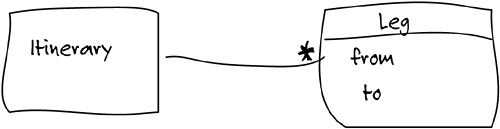
전문가: 네, 기본적으로 맞습니다. 각 구간마다 선박 항차와 선적 및 양하 위치, 그리고 시각이 보이면 되죠.
개발자: 그렇다면 Leg 객체를 만들어 두면 선박 항차 일정에서 시각을 도출할 수 있겠네요. 그리고 Itinerary 객체를 운영 애플리케이션과 맞닿는 핵심 접점으로 삼을 수 있고요. 게다가 그 여정 보고서 기능도 이 객체를 사용하도록 다시 작성하면 도메인 로직을 도메인 계층으로 되돌려 놓을 수 있겠습니다.
전문가: 방금 하신 말씀의 세부 내용은 다 이해하진 못했지만, Itinerary가 주로 쓰이는 두 곳이 예약 쪽 보고서와 운영 애플리케이션이라는 점은 정확히 맞습니다.
개발자: 아! Routing Service 인터페이스가 데이터베이스 테이블에 데이터를 직접 넣는 대신 Itinerary 객체를 반환하도록 만들 수도 있겠네요. 그러면 라우팅 엔진이 우리 테이블 구조를 알 필요가 없어집니다.
전문가: 네?
개발자: 그러니까 라우팅 엔진이 그냥 Itinerary를 반환하게 만들겠다는 겁니다. 그러면 나머지 예약 정보가 저장될 때 예약 애플리케이션이 그 Itinerary를 데이터베이스에 함께 저장하면 되니까요.
전문가: 지금은 그렇게 되어 있지 않았단 말입니까?!
그 후 개발자는 라우팅 프로세스에 관여하는 다른 개발자들을 찾아가 이야기를 나누었다. 그들은 필요할 때마다 해운 전문가들을 불러 자문을 구하며 모델의 변경 사항과 그것이 설계에 미치는 영향을 철저히 논의했다. 그 결과 그림 9.3과 같은 다이어그램을 도출했다.
그림 9.3.

이어서 개발자들은 새 모델을 반영하도록 코드를 리팩터링했다. 이 작업은 두세 차례의 리팩터링으로 나누어 진행되었지만 일주일 안에 빠르게 연이어 완료되었고, 예약 애플리케이션의 여정 보고서를 단순화하는 작업만 그다음 주 초에 마무리되었다.
개발자는 해운 전문가의 말에 충분히 귀를 기울였기에 “여정(itinerary)”이라는 개념이 전문가에게 얼마나 중요한지 알아차릴 수 있었다. 물론 관련된 모든 데이터는 이미 수집되고 있었고 그 동작 역시 여정 보고서 안에 암묵적으로 존재하고 있었지만, 모델의 일부로 명시적인 Itinerary를 도입하자 새로운 기회들이 열렸다.
명시적인 Itinerary 객체로 리팩터링하여 얻은 이점:
Routing Service의 인터페이스를 더욱 표현력 있게 정의한다.
- Routing Service를 예약 데이터베이스 테이블로부터 분리한다.
- 예약 애플리케이션과 운영 지원 애플리케이션 간의 관계(Itinerary 객체의 공유)를 명확히 한다.
- Itinerary가 예약 보고서와 운영 지원 애플리케이션 양쪽 모두를 위해 선적/양하 시각을 도출해 주므로 중복을 줄인다.
- 예약 보고서에서 도메인 로직을 제거하여 격리된 도메인 계층에 배치한다.
- 유비쿼터스 언어(Ubiquitous Language)를 확장하여 개발자와 도메인 전문가 사이, 그리고 개발자들 상호 간에 모델과 설계를 더욱 정밀하게 논의할 수 있게 한다. #### 어색한 부분 파고들기
필요한 개념이 언제나 대화나 문서 속에 수면 위로 드러나 있는 것은 아니다. 때로는 깊이 파고들어 새로운 개념을 만들어 내야 한다. 파고들어야 할 곳은 바로 설계에서 가장 어색한 부분이다. 프로시저가 설명하기조차 어려운 복잡한 일을 처리하고 있는 곳, 새로운 요구사항이 생길 때마다 복잡도가 더해지는 듯한 곳이 바로 그 지점이다.
때로는 누락된 개념이 존재한다는 사실조차 알아차리기 어려울 수 있다. 객체들이 모든 일을 다 처리하고는 있지만, 일부 책임 배분이 어색하게 느껴질 수도 있다. 혹은 무언가 빠졌다는 사실은 깨달았더라도 마땅한 모델 해법이 좀처럼 떠오르지 않을 수도 있다.
이제 그 탐색 과정에 도메인 전문가를 적극적으로 참여시켜야 한다. 운이 좋다면 전문가들도 아이디어를 가지고 놀며 모델을 실험하는 과정을 즐길 것이다. 그렇지 못하다면 당신과 동료 개발자들이 직접 아이디어를 내고, 도메인 전문가를 검증자 역할로 삼아 그들의 표정에 불편함이나 납득의 기색이 스치는지 살펴보아야 한다.
예제
힘겹게 이자 계산하기
다음 이야기는 상업 대출과 기타 이자 발생 자산에 투자하는 가상의 금융 회사를 배경으로 한다. 이러한 투자와 그로부터 발생하는 수익을 추적하는 애플리케이션은 기능 하나하나가 점진적으로 추가되며 발전해 왔다. 매일 밤 한 컴포넌트가 배치 스크립트로 실행되어 그날의 모든 이자와 수수료를 계산한 뒤, 이를 회사 회계 소프트웨어에 적절히 기록했다.
그림 9.4. 어색한 모델

야간 배치 스크립트는 각 Asset(자산)을 순회하면서 해당 날짜를 넘겨 calculateInterestForDate()를 호출했다. 스크립트는 반환값(발생한 수익 금액)을 받아 특정 원장(ledger)의 이름과 함께 회계 프로그램의 공개 인터페이스를 제공하는 서비스(Service)로 전달했다. 그러면 회계 소프트웨어가 지정된 원장에 해당 금액을 전기(post)했다. 스크립트는 각 Asset으로부터 그날의 수수료를 가져와 다른 원장에 전기하는 과정도 이와 비슷하게 처리했다.
한 개발자는 갈수록 복잡해지는 이자 계산 때문에 애를 먹고 있었다. 그녀는 이 작업에 더 적합한 모델로 개선할 기회가 있을 것이라 생각하기 시작했다. 그래서 가장 신뢰하는 도메인 전문가에게 문제 영역을 함께 파고들어 보자고 요청했다.
개발자: 우리 Interest Calculator(이자 계산기)가 점점 통제 불능이 되어 가고 있어요.
전문가: 그 부분이 원래 복잡하죠. 아직 말씀드리지 않고 아껴 둔 사례들도 더 있습니다.
개발자: 알고 있어요. 다른 Interest Calculator로 교체해서 새로운 이자 유형을 추가할 수는 있습니다. 하지만 지금 가장 골치 아픈 건, 예정된 일정대로 이자를 납입하지 않을 때 생기는 온갖 예외 사례들이에요.
전문가: 그건 사실 예외 사례가 아닙니다. 사람들이 언제 돈을 낼지에 대해서는 유연성이 꽤 크거든요.
개발자: 예전에 Asset에서 Interest Calculator를 분리해 냈을 때 꽤 도움이 많이 됐어요. 어쩌면 더 잘게 쪼개야 할지도 모르겠습니다.
전문가: 그렇군요.
개발자: 혹시 이 이자 계산을 설명할 때 쓰시는 특별한 표현 방식이 있지 않을까 싶어서요.
전문가: 무슨 뜻이죠?
개발자: 예를 들어, 회계 기간 내에 납입 기한이 지났지만 아직 미납된 이자를 추적하고 있는데요. 이런 걸 부르는 용어가 있나요?
전문가: 음, 저희는 실제로 그런 식으로 처리하지 않습니다. 발생한 이자와 실제 납입(payment)은 완전히 별개의 전기(posting) 항목이거든요.
개발자: 그럼 그 숫자가 필요 없으신가요?
전문가: 뭐, 가끔 참고로 볼 수는 있겠지만 저희가 비즈니스를 운영하는 방식은 아닙니다.
개발자: 알겠습니다. 그럼 납입과 이자가 별개라면 모델에서도 그렇게 분리해서 표현해야겠군요. 이건 어떤가요? [화이트보드에 그리며]
그림 9.5.
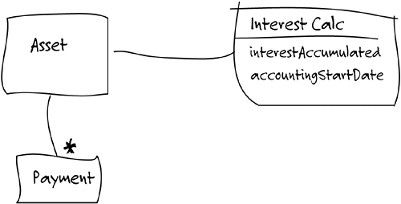
전문가: 이해는 됩니다만, 그냥 한곳에서 다른 곳으로 옮겨 놓은 것뿐 아닌가요?
개발자: 하지만 이제 Interest Calculator는 발생한 이자만 추적하고, Payment가 그 금액을 따로 보관하게 되죠. 크게 단순해진 건 아니지만, 이쪽이 실제 업무 관행을 더 잘 반영하지 않나요?
전문가: 아, 그렇네요. 그럼 Payment History(납입 이력)처럼 이자 이력도 볼 수 있을까요?
개발자: 네, 그건 새로운 기능으로 이미 요청이 들어와 있었습니다. 하지만 그건 원래 설계에서도 추가할 수 있었던 부분이에요.
전문가: 오, 그래요? 방금 이자와 Payment History가 저렇게 분리된 걸 보고, Payment History처럼 정리하려고 이자 쪽을 쪼개신 줄 알았거든요. 혹시 발생주의 회계(accrual basis accounting)에 대해 아시나요?
개발자: 설명해 주시겠어요?
전문가: 매일, 혹은 일정이 정한 날마다 원장에 전기되는 이자 발생분(interest accrual)이 생깁니다. 납입은 또 다른 방식으로 전기되죠. 지금 여기 그려 놓으신 이 집합체(aggregate)는 좀 어색하네요.
개발자: 그러니까 “발생분(accruals)” 목록을 따로 보관해 두면, 필요할 때마다 합산(aggregate)하거나… “전기(post)”할 수 있다는 말씀이신가요?
전문가: 아마 발생일 당일에 바로 전기되겠지만, 네, 합산은 언제든 할 수 있죠. 수수료도 똑같이 작동합니다. 물론 다른 원장에 전기되긴 하지만요.
개발자: 사실 이자 계산도 딱 하루나 한 기간 단위로만 계산하면 훨씬 간단해질 거예요. 그런 다음 그 결과들을 모두 보관하고 있으면 되니까요. 이건 어떨까요?
그림 9.6.
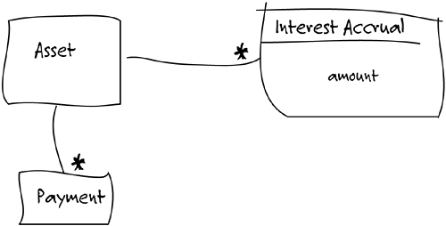
전문가: 좋네요. 괜찮아 보입니다. 이게 왜 더 쉬워지는지는 잘 모르겠지만, 기본적으로 어떤 자산을 가치 있게 만드는 건 그 자산이 이자나 수수료 등으로 얼마나 많은 수익을 발생(accrue)시킬 수 있는가 하는 점이죠.
개발자: 수수료도 똑같은 방식이라고 하셨죠? 아까… 다른 원장에 전기된다고 하셨던가요?
그림 9.7.

개발자: 이 모델을 쓰면 Interest Calculator 안에 있던 이자 계산 로직, 아니 정확히는 발생액 계산 로직을 추적 기능으로부터 분리할 수 있습니다. 그리고 지금까지는 Fee Calculator 안에 중복 코드가 얼마나 많은지도 몰랐네요. 게다가 이제는 다양한 종류의 수수료도 쉽게 추가할 수 있겠어요.
전문가: 맞습니다. 이전에도 계산 자체는 맞았지만, 이제는 전체 구조가 한눈에 들어오네요.
기존의 Calculator 클래스들이 설계의 다른 부분과 직접적으로 결합되어 있지 않았기 때문에 이번 리팩터링은 비교적 수월했다. 개발자는 몇 시간 만에 새로운 언어를 사용하도록 단위 테스트를 다시 작성할 수 있었고, 다음 날 늦게까지 작업해 새로운 설계가 정상 동작하도록 만들었다. 그녀가 최종적으로 완성한 모델은 다음과 같았다.
그림 9.8. 리팩터링 후 도출된 더 깊은 모델
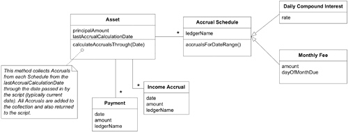
리팩터링된 애플리케이션에서 야간 배치 스크립트는 각 Asset에 calculateAccrualsThroughDate()를 호출한다. 반환값은 Accrual(발생분)들의 컬렉션이며, 스크립트는 각 Accrual의 금액을 지정된 원장에 전기한다.
새 모델에는 몇 가지 장점이 있다. 이 변경은
“발생(accrual)”이라는 용어로 유비쿼터스 언어(Ubiquitous Language)를 풍부하게 만든다.
- 발생(accrual)과 납입(payment)을 서로 분리한다.
- (어느 원장에 전기할지와 같은) 도메인 지식을 스크립트에서 꺼내어 도메인 계층으로 옮긴다.
- 비즈니스에 부합하는 방식으로 수수료와 이자를 하나로 묶고 코드의 중복을 제거한다.
- Accrual Schedules(발생 일정)라는 형태로 새로운 수수료 및 이자 변형을 간단하게 추가할 수 있는 명확한 경로를 제공한다. 이번에는 개발자가 필요한 새로운 개념을 얻기 위해 직접 깊이 파고들어야 했다. 그녀는 이자 계산이 어색하다는 점을 알아차리고 더 깊은 해답을 찾기 위해 꾸준히 노력했다.
그녀는 똑똑하고 적극적인 금융 전문가를 파트너로 만났다는 행운이 있었다. 만약 전문 지식을 제공하는 쪽이 더 수동적이었다면, 헛다리를 짚는 일이 더 많았을 것이고 브레인스토밍 파트너로 다른 개발자들에게 더 많이 의존해야 했을 것이다. 진행 속도는 더 느렸겠지만, 그래도 충분히 가능한 일이었다.
모순 숙고하기
도메인 전문가마다 자신의 경험과 필요에 따라 사물을 서로 다른 방식으로 바라본다. 심지어 한 사람이 제공한 정보조차 면밀히 분석해 보면 논리적으로 일관되지 않는 경우가 있다. 프로그램 요구사항을 파고들 때 늘 마주치는 이런 성가신 모순들은 더 깊은 모델로 나아가는 훌륭한 단서가 될 수 있다. 그중 일부는 단순히 용어 차이이거나 오해에서 비롯된 것이다. 하지만 전문가들이 말한 두 가지 사실적 진술이 서로 모순되어 보이는 경우가 여전히 남는다.
천문학자 갈릴레오는 한때 역설을 하나 제기했다. 감각으로 얻는 증거는 지구가 정지해 있음을 분명히 보여 준다. 사람들이 바람에 날려 뒤처지지 않기 때문이다. 그런데도 코페르니쿠스는 지구가 태양 주위를 매우 빠르게 돌고 있다는 설득력 있는 주장을 펼쳤다. 이 모순을 조화롭게 풀어낼 수 있다면 자연이 작동하는 방식에 관한 심오한 무언가를 밝혀낼 수 있을 터였다.
갈릴레오는 사고 실험을 고안했다. 달리는 말 위에서 기수가 공을 떨어뜨리면 공은 어디에 떨어질까? 물론 공은 마치 말이 서 있을 때와 마찬가지로, 말 발치의 땅에 닿을 때까지 말과 함께 앞으로 나아갈 것이다. 이로부터 그는 관성 기준계(inertial frames of reference) 개념의 초기 형태를 도출해 내어 역설을 해결했고, 운동 물리학에 훨씬 더 유용한 모델로 이어지는 길을 열었다.
물론 우리가 마주하는 모순들은 대개 그만큼 흥미롭지도 않고 그 함의가 그토록 심오하지도 않다. 그럼에도 이와 똑같은 사고방식은 문제 도메인의 피상적인 층위를 뚫고 더 깊은 통찰로 들어가는 데 종종 큰 도움을 준다.
모든 모순을 다 해소하는 것은 현실적이지 않으며, 바람직하지도 않을 수 있다. (14장에서는 이를 어떻게 결정하고 결과를 관리할지 깊이 다룬다.) 하지만 설령 모순을 그대로 남겨 두더라도, 두 진술이 어떻게 동일한 외부 현실에 함께 적용될 수 있는지 깊이 생각해 보는 과정 자체가 많은 것을 일깨워 준다.
책 읽기
모델 개념을 찾을 때 당연해 보이는 방법을 간과해서는 안 된다. 많은 분야에서 기본 개념과 통념을 설명해 주는 책들을 찾아볼 수 있다. 물론 여전히 담당 도메인 전문가들과 함께 일하면서 우리 문제와 관련된 부분을 추려 내고, 이를 객체지향 소프트웨어에 적합한 형태로 다듬어 나가야 한다. 하지만 처음부터 일관되고 깊이 숙고된 관점을 바탕으로 출발할 수 있을 것이다.
예제
책을 통해 이자 개념 익히기
앞선 예제에서 다룬 투자 추적 애플리케이션에 대해 다른 시나리오를 상상해 보자. 전과 마찬가지로 이야기는 개발자가 설계, 특히 Interest Calculator가 점점 다루기 버거워지고 있음을 깨닫는 데서 시작한다. 하지만 이번 시나리오에서는 도메인 전문가의 주된 책임이 다른 곳에 있어서 소프트웨어 개발 프로젝트를 돕는 데 별다른 관심이 없다. 이 상황에서 개발자는 수면 아래에 숨어 있으리라 짐작되는 누락된 개념을 탐색하기 위해 전문가에게 브레인스토밍을 요청할 수가 없었다.
대신 그녀는 서점으로 향했다. 잠시 책을 둘러본 끝에 마음에 드는 회계 입문서를 한 권 찾아 대충 훑어보았다. 그 안에서 그녀는 잘 정의된 개념들로 이루어진 온전한 체계를 발견했다. 특히 그녀의 사고에 불을 지핀 발췌문은 다음과 같다.
발생주의 회계(Accrual Basis Accounting). 이 방법은 대금이 지급되지 않았더라도 수익이 발생한 시점에 이를 인식한다. 모든 비용 역시 이미 지급되었는지 또는 추후 지급되도록 청구되었는지와 관계없이 비용이 발생한 시점에 기록된다. 세금을 포함해 만기가 도래한 모든 의무는 비용으로 표시된다. —『Finance and Accounting: How to Keep Your Books and Manage Your Finances Without an MBA, a CPA or a Ph.D.』, 수잔 캐플런(Suzanne Caplan) 저 (Adams Media, 2000)
이제 그 개발자는 회계 체계를 처음부터 다시 발명할 필요가 없었다. 다른 개발자와 브레인스토밍을 거친 끝에, 그녀는 하나의 모델을 도출했다.
그림 9.9. 책에서 배운 지식을 바탕으로 한 다소 깊어진 모델

그녀는 자산(Asset)이 수익 생성기라는 통찰까지는 얻지 못했으므로 Calculator들은 여전히 남아 있다. 원장(ledger)에 관한 지식도 원래 속해야 할 도메인 계층이 아니라 애플리케이션 계층에 여전히 자리 잡고 있다. 하지만 가장 문제가 되던 영역인 지급(payment) 문제와 수익의 발생(accrual) 문제를 분리해 냈으며, 모델과 유비쿼터스 언어(Ubiquitous Language)에 “발생(accrual)”이라는 단어를 도입했다. 추가적인 정교화는 이후 반복(iteration) 과정에서 이루어질 수 있었다.
마침내 도메인 전문가와 대화할 기회를 얻었을 때, 전문가는 상당히 놀랐다. 프로그래머가 자신이 하는 일에 조금이라도 관심을 보인 것은 처음이었기 때문이다. 그에게 부여된 업무 분장 방식 때문에, 이전 시나리오처럼 전문가가 그녀와 마주 앉아 모델을 함께 검토하는 식으로 깊이 관여하는 일은 없었다. 하지만 개발자가 갖춘 지식이 더 나은 질문을 던질 수 있게 해 주었기 때문에, 그때부터 전문가는 그녀의 말에 귀를 기울였고 질문에 신속하게 답하려고 각별히 노력했다.
물론 이것이 양자택일의 문제는 아니다. 도메인 전문가의 충분한 지원을 받더라도, 해당 분야의 이론을 파악하기 위해 문헌을 살펴보는 것은 분명 가치가 있다. 대부분의 비즈니스에는 회계나 금융 수준으로 정교하게 다듬어진 모델이 없지만, 많은 분야에 걸쳐 비즈니스의 보편적 관행을 체계화하고 추상화한 사상가들이 존재해 왔다.
개발자에게 열려 있던 또 다른 선택지는 이 도메인에서 개발 경험을 쌓은 다른 소프트웨어 전문가가 쓴 글을 읽는 것이었다. 예를 들어, 『Analysis Patterns: Reusable Object Models』(Fowler 1997)의 6장은 그녀를(더 낫다거나 더 나쁘다기보다는) 사뭇 다른 방향으로 이끌었을 것이다. 그런 독서가 곧바로 가져다 쓸 수 있는 기성 해결책을 제공해 주지는 않았을 것이다. 대신 그 영역을 먼저 개척한 사람들의 응축된 경험과 함께, 스스로 실험해 볼 수 있는 여러 새로운 출발점을 제시해 주었을 것이다. 그랬다면 바퀴를 다시 발명하는 수고를 덜 수 있었을 것이다. 11장 “분석 패턴 적용하기(Applying Analysis Patterns)”에서는 이 선택지를 더 깊이 다룰 것이다.
시도하고, 또 시도하라
내가 제시한 예시는 그 과정에 수반되는 시행착오의 규모를 다 전달하지 못한다. 모델에 적용해 볼 만큼 명확하고 유용해 보이는 단서 하나를 찾기까지, 대화 속에서 대여섯 개의 실마리를 따라가 보곤 한다. 그리고 이후 추가적인 경험과 지식 탐구(knowledge crunching)를 통해 더 나은 아이디어가 떠오르면, 결국 그 단서마저 적어도 한 번은 교체하게 된다. 모델러이자 설계자는 자신의 아이디어에 애착을 가질 여유가 없다.
이러한 방향 전환이 모두 그저 헛수고(thrashing)인 것은 아니다. 변화가 거듭될수록 모델에는 더 깊은 통찰이 스며든다. 리팩토링을 거칠 때마다 설계는 더욱 유연해지고, 다음에 변경하기 쉬워지며, 실제로 휘어져야 할 지점에서 유연하게 굽힐 수 있는 상태를 갖추게 된다.
어차피 다른 선택의 여지도 없다. 무엇이 통하고 무엇이 통하지 않는지를 배우는 길은 실험뿐이다. 설계에서 실수를 피하려고만 하면, 더 적은 경험에 근거하게 되므로 결국 품질이 낮은 결과물을 얻게 된다. 게다가 일련의 빠른 실험을 거치는 것보다 시간이 더 오래 걸리기도 쉽다.
덜 분명한 종류의 개념을 모델링하는 방법
객체지향 패러다임은 우리가 특정 종류의 개념을 찾고 만들어 내도록 이끈다. “발생(accrual)”처럼 매우 추상적인 것까지 포함한 사물과 그 사물이 수행하는 동작이 대부분 객체 모델의 핵심을 이룬다. 이것이 바로 객체지향 설계 입문서에서 이야기하는 “명사와 동사”다. 하지만 그 밖의 중요한 범주에 속하는 개념들도 모델 안에서 명시적으로 드러낼 수 있다.
내가 처음 객체지향을 시작했을 때는 분명하게 보이지 않았던 그러한 세 가지 범주를 다루고자 한다. 이 가운데 하나씩 배워 나갈 때마다 내 설계는 더욱 날카로워졌다.
명시적 제약(Explicit Constraints)
제약(Constraint)은 모델 개념 가운데 특히 중요한 범주를 차지한다. 제약은 종종 암묵적으로 나타나는데, 이를 명시적으로 표현하면 설계를 크게 개선할 수 있다.
때때로 제약은 객체나 메서드 안에서 자연스러운 보금자리를 찾는다. 예컨대 “Bucket” 객체는 자신의 용량(capacity) 이상을 담지 않는다는 불변식(invariant)을 보장해야 한다.
그림 9.10.

이와 같은 단순한 불변식은 내용물을 변경할 수 있는 각 연산 안에 조건 분기 로직을 넣어 강제할 수 있다.
class Bucket {
private float capacity;
private float contents;
public void pourIn(float addedVolume) {
if (contents + addedVolume > capacity) {
contents = capacity;
} else {
contents = contents + addedVolume;
}
}
}이 로직은 매우 단순해서 규칙이 한눈에 들어온다. 하지만 더 복잡한 클래스 안에서는 이 제약이 묻혀 버리기 쉽다는 점을 쉽게 상상할 수 있다. 이 제약을 별도의 메서드로 분리하고, 제약의 의미를 명확하고 명시적으로 드러내는 이름을 붙여 보자.
class Bucket {
private float capacity;
private float contents;
public void pourIn(float addedVolume) {
float volumePresent = contents + addedVolume;
contents = constrainedToCapacity(volumePresent);
}
private float constrainedToCapacity(float volumePlacedIn) {
if (volumePlacedIn > capacity) return capacity;
return volumePlacedIn;
}
}두 버전의 코드 모두 제약을 강제하지만, 두 번째 버전이 모델과의 관계를 훨씬 더 분명하게 드러낸다(이는 모델 주도 설계(Model-Driven Design)의 기본 요구사항이다). 이 아주 단순한 규칙은 원래 형태에서도 이해할 수 있었지만, 강제해야 할 규칙이 더 복잡해지면 모든 암묵적 개념이 그렇듯 규칙이 적용되는 객체나 연산을 압도하기 시작한다. 제약을 독립된 메서드로 분리하면 의도를 드러내는 이름을 부여하여 설계 안에서 제약을 명시적으로 만들 수 있다. 이제 그것은 우리가 함께 논의할 수 있는 이름이 붙은 대상이 된다. 또한 이 접근 방식은 제약에 여유 공간을 마련해 준다. 이보다 복잡한 규칙이라면 호출자(이 경우에는 pourIn() 메서드)보다 더 긴 메서드가 되기 쉽다. 이렇게 분리해 두면 호출자는 단순하게 유지되면서 본연의 작업에 집중할 수 있고, 제약은 필요에 따라 얼마든지 복잡하게 확장될 수 있다.
별도의 메서드로 분리하면 제약이 자라날 여지를 어느 정도 줄 수 있지만, 제약을 단일 메서드 안에 무리 없이 담아내기 어려운 경우도 매우 많다. 혹은 메서드가 단순하게 유지되더라도, 객체의 주된 책임에는 필요 없는 정보를 참조해야 할 수도 있다. 아예 기존 객체 어디에도 그 규칙이 놓일 마땅한 자리가 없을 수도 있다.
다음은 제약이 자신을 품고 있는 호스트 객체의 설계를 왜곡하고 있음을 알리는 몇 가지 경고 신호다.
제약을 평가하기 위해 그 외에는 객체의 정의에 맞지 않는 데이터가 필요하다.
- 관련된 규칙이 여러 객체에 나타나, 본래 같은 계통이 아닌 객체들 사이에 중복이나 상속을 강요한다.
- 설계와 요구사항 논의의 상당 부분이 제약을 중심으로 돌아가지만, 구현에서는 제약이 절차적 코드 속에 숨겨져 있다. 제약이 객체의 기본 책임을 가리고 있거나, 도메인에서는 두드러지는 제약이 모델에서는 두드러지지 않을 때는 제약을 명시적인 객체로 분리하거나 심지어 일련의 객체와 관계로 모델링할 수 있다. (이 주제에 대한 깊이 있고 반형식적인(semiformal) 설명은 『The Object Constraint Language: Precise Modeling with UML』[Warmer and Kleppe 1999]에서 찾아볼 수 있다.)
예제
복습: 초과 예약 정책(Overbooking Policy)
1장에서 우리는 해운 업계의 흔한 관행 하나를 다루었다. 운송 수단이 감당할 수 있는 것보다 10퍼센트 더 많은 화물을 예약받는 것이었다. (해운사들은 이러한 초과 예약이 막판 취소를 상쇄하여 선박이 거의 만선에 가까운 상태로 출항할 수 있게 해 준다는 것을 경험으로 터득했다.)
Voyage와 Cargo 사이의 연관관계에 걸린 이 제약은, 그 제약을 나타내는 새로운 클래스를 추가함으로써 다이어그램과 코드 양쪽 모두에서 명시적으로 표현되었다.
그림 9.11. 정책을 명시적으로 드러내기 위해 리팩토링된 모델
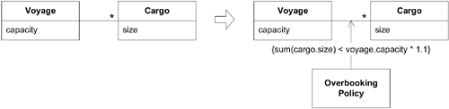
전체 예제의 코드와 추론 과정을 다시 살펴보려면 17쪽을 참조하라.
도메인 객체로서의 프로세스(Processes as Domain Objects)
먼저 분명히 해 둘 점은, 모델에서 절차(procedure)가 두드러지는 모습을 원하지 않는다는 것이다. 객체는 절차를 캡슐화하여 우리가 절차 자체가 아니라 그 목표나 의도에 대해 생각할 수 있도록 하기 위한 것이다.
여기서 말하고자 하는 것은 도메인에 실제로 존재하며 우리가 모델 안에 표현해야 하는 프로세스다. 이런 프로세스가 등장하면 객체 설계가 어색해지기 쉽다.
이 장의 첫 번째 예제에서는 화물 경로를 결정하는 해운 시스템을 설명했다. 이 경로 지정(routing) 프로세스는 비즈니스 의미를 지닌 대상이었다. 서비스(Service)는 극도로 복잡한 알고리즘을 여전히 캡슐화하면서도 이러한 프로세스를 명시적으로 표현하는 한 가지 방법이다.
프로세스를 수행하는 방법이 둘 이상일 때 취할 수 있는 또 다른 접근 방식은, 알고리즘 자체 또는 그 핵심 부분을 독립된 객체로 만드는 것이다. 프로세스 간의 선택은 각각 다른 전략(STRATEGY)을 나타내는 이 객체들 사이의 선택이 된다. (12장에서는 도메인에서 STRATEGY를 활용하는 방법을 더 자세히 살펴볼 것이다.)
명시적으로 드러내야 할 프로세스와 숨겨야 할 프로세스를 구분하는 핵심 기준은 간단하다. 그것은 도메인 전문가들이 이야기하는 대상인가, 아니면 단지 컴퓨터 프로그램 메커니즘의 일부일 뿐인가?
제약과 프로세스는 객체지향 언어로 프로그래밍할 때 곧바로 떠오르지 않는 두 가지 폭넓은 모델 개념 범주이지만, 일단 이들을 모델 요소로 생각하기 시작하면 설계를 한층 더 예리하게 다듬을 수 있다.
어떤 유용한 개념 범주들은 훨씬 더 좁다. 훨씬 더 구체적이면서도 상당히 흔한 한 가지 범주를 다루며 이 장을 마무리하겠다. 명세(Specification)는 특정 종류의 규칙을 조건부 로직에서 끄집어내어 모델 안에 명시적으로, 그리고 간결하게 표현하는 방법을 제공한다.
명세(Specification)는 내가 마틴 파울러(Martin Fowler)와 함께 고안한 것이다(Evans and Fowler 1997). 개념 자체는 단순하지만 적용과 구현에는 미묘한 점이 많기 때문에, 이 절에서는 세부 사항을 상당히 많이 다룬다. 이 패턴을 확장하는 10장에서는 논의가 더 깊어질 것이다. 뒤에 이어지는 패턴의 초기 설명을 읽고 난 뒤에는, 실제로 이 패턴을 적용해 보려 하기 전까지 “명세(Specification)의 적용과 구현” 절은 가볍게 훑어보아도 좋다.
명세(Specification)

온갖 종류의 애플리케이션에서, 사실상 작은 규칙들의 일부에 해당하는 불리언(Boolean) 검사 메서드들이 등장한다. 규칙이 단순한 동안에는 anIterator.hasNext()나 anInvoice.isOverdue() 같은 검사 메서드로 처리한다. Invoice 클래스에서 isOverdue() 내부의 코드는 하나의 규칙을 평가하는 알고리즘이다. 예를 들면 다음과 같다.
public boolean isOverdue() {
Date currentDate = new Date();
return currentDate.after(dueDate);
}하지만 모든 규칙이 이렇게 단순한 것은 아니다. 같은 Invoice 클래스에서 또 다른 규칙인 anInvoice.isDelinquent()는 아마도 해당 송장(Invoice)이 연체되었는지 검사하는 것으로 시작하겠지만, 그것은 시작에 불과할 것이다. 유예 기간(grace period)에 관한 정책은 고객 계정의 상태에 따라 달라질 수 있다. 어떤 연체 송장은 2차 독촉장을 발송할 단계이고, 다른 송장은 채권 추심 기관에 넘길 단계일 것이다. 고객의 납부 이력, 제품군별 회사 정책 등…… 지급 요청이라는 Invoice의 본래 명확한 의미는 이내 엄청난 양의 규칙 평가 코드 속에 묻혀 사라질 것이다. 또한 Invoice는 그 기본 의미를 뒷받침하지 않는 온갖 도메인 클래스와 서브시스템에 대한 의존성을 갖게 될 것이다.
이 시점에서 개발자는 Invoice 클래스를 구하려는 시도로 규칙 평가 코드를 애플리케이션 계층(이 경우 대금 추심 애플리케이션)으로 리팩토링하곤 한다. 이제 규칙들은 도메인 계층에서 완전히 분리되어 버리고, 비즈니스 모델에 내재된 규칙을 표현하지 못하는 죽은 데이터 객체만 남는다. 이러한 규칙은 도메인 계층에 머물러야 하지만, 평가 대상이 되는 객체(이 경우 Invoice) 안에는 어울리지 않는다. 그뿐만 아니라 평가 메서드는 조건문 코드로 비대해져 규칙을 읽기 어렵게 만든다.
논리 프로그래밍 패러다임으로 일하는 개발자라면 이 상황을 다르게 다룰 것이다. 그러한 규칙은 술어(predicate)로 표현될 것이다. 술어는 “참(true)” 또는 “거짓(false)”으로 평가되는 함수이며, “AND”나 “OR” 같은 연산자로 조합해 더 복잡한 규칙을 표현할 수 있다. 술어를 사용하면 규칙을 명시적으로 선언하고 Invoice와 함께 사용할 수 있을 것이다. 우리가 논리 패러다임 안에 있기만 하다면 말이다.
이를 보고 사람들은 논리 규칙을 객체로 구현하려는 시도를 해 왔다. 어떤 시도는 매우 정교했고, 어떤 시도는 소박했다. 야심 찬 시도도 있었고, 겸손한 시도도 있었다. 가치 있는 결실을 맺은 것도 있었고, 실패한 실험으로 버려진 것도 있었다. 몇몇 시도는 프로젝트 전체를 탈선시키기도 했다. 한 가지는 분명하다. 아이디어가 아무리 매력적이라 해도, 객체 안에서 논리를 완전히 구현하는 것은 거대한 작업이라는 점이다. (어쨌든 논리 프로그래밍은 그 자체로 하나의 온전한 모델링 및 설계 패러다임이기 때문이다.)
비즈니스 규칙은 눈에 띄는 엔티티(Entity)나 값 객체(Value Object) 중 어느 하나의 책임에도 딱 들어맞지 않는 경우가 많으며, 규칙의 다양성과 조합은 도메인 객체의 기본 의미를 압도해 버릴 수 있다. 그렇다고 규칙을 도메인 계층 밖으로 옮기는 것은 도메인 코드가 더 이상 모델을 표현하지 못하게 만드므로 훨씬 더 나쁜 선택이다.
논리 프로그래밍은 “술어(predicate)”라는 분리 가능하고 조합 가능한 규칙 객체 개념을 제공하지만, 이 개념을 객체로 온전히 구현하는 일은 번거롭다. 또한 지나치게 일반적이어서, 더 특화된 설계만큼 의도를 잘 전달하지 못한다.
다행히 큰 이점을 얻기 위해 논리 프로그래밍을 완전히 구현할 필요는 없다. 대부분의 규칙은 몇 가지 특수한 경우에 속한다. 술어의 개념을 빌려와 불리언 값으로 평가되는 특화된 객체를 만들 수 있다. 감당하기 어려워진 검사 메서드들은 깔끔하게 각자의 객체로 확장된다. 이들은 별도의 값 객체(Value Object)로 분리해 낼 수 있는 작은 진위 검사(truth test)다. 이 새로운 객체는 다른 객체를 평가하여 해당 객체에 대해 술어가 참인지 확인할 수 있다.
그림 9.12.

달리 말하면, 이 새로운 객체는 하나의 명세(specification)다. 명세(Specification)는 존재할 수도 있고 아직 존재하지 않을 수도 있는 다른 객체의 상태에 대한 제약을 기술한다. 여기에는 여러 용도가 있지만, 가장 기본적인 개념을 전달하는 용도는 명세(Specification)가 어떤 객체든 지정된 기준을 만족하는지 검사할 수 있다는 것이다.
그러므로:
특수한 목적을 위해 술어와 유사한 명시적인 값 객체(Value Object)를 만들어라. 명세(Specification)는 어떤 객체가 특정 기준을 만족하는지 여부를 판단하는 술어다.
많은 명세(Specification)는 연체 송장 예제처럼 단순하고 특수 목적을 가진 검사다. 규칙이 복잡한 경우에는 논리 연산자로 술어를 조합하는 것과 마찬가지로 단순한 명세들을 조합할 수 있도록 개념을 확장할 수 있다. (이 기법은 다음 장에서 다룰 것이다.) 기본 패턴은 그대로 유지되며, 단순한 모델에서 더 복잡한 모델로 나아가는 길을 제공한다.
연체 송장 사례는 연체된다는 것이 무엇을 의미하는지 서술하고, 어떤 Invoice든 평가하여 판단을 내릴 수 있는 명세(Specification)를 사용해 모델링할 수 있다.
그림 9.13. 명세(Specification)로 분리된 보다 정교한 연체 규칙
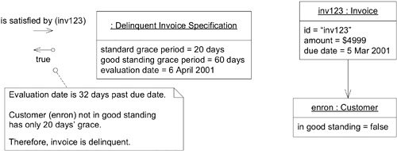
명세(Specification)는 규칙을 도메인 계층 안에 유지한다. 규칙이 온전한 객체이기 때문에, 설계는 모델을 더욱 명시적으로 반영할 수 있다. 팩토리(Factory)는 고객 계정이나 회사 정책 데이터베이스 같은 다른 출처의 정보를 사용해 명세(Specification)를 구성할 수 있다. Invoice에서 이러한 출처에 직접 접근하게 하면 지급 요청이라는 Invoice의 기본 책임과 무관한 방식으로 객체들이 결합될 것이다. 이 사례에서 Delinquent Invoice Specification은 생성된 뒤 몇 개의 Invoice를 평가하는 데 쓰이고 폐기될 예정이었으므로, 특정 평가 날짜를 객체 내부에 직접 넣어 두는 깔끔한 단순화를 택했다. 명세(Specification)에는 제 역할을 수행하는 데 필요한 정보를 단순하고 직접적인 방식으로 전달할 수 있다.
명세(Specification)의 기본 개념은 매우 단순하며 도메인 모델링 문제를 사고하는 데 도움을 준다. 하지만 모델 주도 설계(Model-Driven Design)를 이루려면 그 개념을 코드로도 표현하는 효과적인 구현이 필요하다. 이를 해내려면 이 패턴이 실제로 어떻게 적용되는지 조금 더 깊이 파고들어야 한다. 도메인 패턴은 UML 다이어그램을 위한 깔끔한 아이디어에 그치는 것이 아니라, 모델 주도 설계를 유지하면서 프로그래밍 문제를 해결하는 해법이다.
패턴을 적절히 적용하면 특정 부류의 도메인 모델링 문제에 접근하는 사고 체계 전반을 활용할 수 있고, 효과적인 구현을 찾아낸 수년간의 경험으로부터 이득을 얻을 수 있다. 이어지는 명세(Specification) 논의에는 기능과 구현 접근 방식에 대한 수많은 선택지 등 세부 사항이 많다. 패턴은 요리책이 아니다. 패턴은 경험의 토대 위에서 자신의 해법을 발전시켜 나갈 수 있게 해 주며, 지금 하고 있는 일을 설명할 수 있는 언어를 제공한다.
처음 읽을 때는 핵심 개념만 훑어보는 것도 좋다. 나중에 실제로 그런 상황을 마주쳤을 때 다시 돌아와 상세한 논의에 담긴 경험을 참고하고, 자신의 문제에 맞는 해법을 찾아내면 된다.
명세(Specification)의 적용과 구현
명세(Specification)의 가치 중 상당 부분은 겉보기에 상당히 달라 보이는 애플리케이션 기능들을 하나로 통합한다는 데 있다. 우리는 다음 세 가지 목적 중 하나 이상을 위해 객체의 상태를 명세해야 할 수 있다.
어떤 요구를 충족하는지 또는 어떤 목적에 맞게 준비되었는지 확인하기 위해 객체를 검증(validate)하는 용도
- 컬렉션에서 객체를 선택(select)하는 용도(예: 연체된 송장을 조회하는 경우)
- 특정 요구에 맞도록 새 객체의 생성을 명세(specify)하는 용도 검증, 선택, 주문 제작(building to order)이라는 이 세 가지 용도는 개념적 차원에서 동일하다. 명세(Specification) 같은 패턴이 없다면, 똑같은 규칙이 서로 다른 모습으로, 어쩌면 서로 모순되는 형태로 나타날 수도 있다. 개념적 통일성을 잃어버릴 수 있는 것이다. 명세(Specification) 패턴을 적용하면 구현이 달라져야 하는 경우에도 일관된 모델을 사용할 수 있다.
검증(Validation)
명세(Specification)의 가장 단순한 용도는 검증이며, 개념을 가장 직관적으로 보여 주는 용도이기도 하다.
그림 9.14. 검증을 위해 명세(Specification)를 적용한 모델

class DelinquentInvoiceSpecification extends
InvoiceSpecification {
private Date currentDate;
// An instance is used and discarded on a single date
public DelinquentInvoiceSpecification(Date currentDate) {
this.currentDate = currentDate;
}
public boolean isSatisfiedBy(Invoice candidate) {
int gracePeriod =
candidate.customer().getPaymentGracePeriod();
Date firmDeadline =
DateUtility.addDaysToDate(candidate.dueDate(),
gracePeriod);
return currentDate.after(firmDeadline);
}
}이제 영업 사원이 연체된 청구서가 있는 고객을 조회할 때마다 빨간 깃발(경고 표시)을 띄워야 한다고 가정해 보자. 클라이언트 클래스에 다음과 같은 메서드를 작성하기만 하면 된다.
public boolean accountIsDelinquent(Customer customer) {
Date today = new Date();
Specification delinquentSpec =
new DelinquentInvoiceSpecification(today);
Iterator it = customer.getInvoices().iterator();
while (it.hasNext()) {
Invoice candidate = (Invoice) it.next();
if (delinquentSpec.isSatisfiedBy(candidate)) return true;
}
return false;
}선택(Selection, 또는 조회)
검증은 개별 객체가 특정 기준을 충족하는지 검사하여, 아마도 클라이언트가 그 결론에 따라 조치를 취할 수 있게 한다. 또 다른 흔한 요구는 특정 기준에 따라 객체 컬렉션의 부분집합을 선택하는 것이다. 여기에도 동일한 명세(Specification) 개념을 적용할 수 있지만, 구현상의 쟁점은 다르다.
연체된 송장(Invoice)이 있는 모든 고객을 나열해야 하는 애플리케이션 요구사항이 있다고 가정해 보자. 이론적으로는 앞에서 정의한 Delinquent Invoice Specification을 그대로 쓸 수 있지만, 실제로는 구현을 바꿔야 할 가능성이 크다. 개념이 동일하다는 점을 보여 주기 위해, 먼저 Invoice의 개수가 적고 이미 메모리에 올라와 있다고 가정해 보자. 이 경우에는 검증용으로 개발한 직관적인 구현을 그대로 사용할 수 있다. Invoice 리포지토리(Repository)는 명세(Specification)를 기반으로 Invoice를 선택하는 일반화된 메서드를 가질 수 있다.
public Set selectSatisfying(InvoiceSpecification spec) {
Set results = new HashSet();
Iterator it = invoices.iterator();
while (it.hasNext()) {
Invoice candidate = (Invoice) it.next();
if (spec.isSatisfiedBy(candidate)) results.add(candidate);
}
return results;
}따라서 클라이언트는 단 한 줄의 코드 구문으로 모든 연체 송장(Invoice) 컬렉션을 얻을 수 있다.
Set delinquentInvoices = invoiceRepository.selectSatisfying(
new DelinquentInvoiceSpecification(currentDate));이 한 줄의 코드는 해당 연산의 배후에 있는 개념을 확립한다. 물론 Invoice 객체들이 메모리에 올라와 있지 않을 가능성이 크다. 객체가 수천 개에 달할 수도 있다. 일반적인 비즈니스 시스템에서는 데이터가 관계형 데이터베이스에 저장되어 있을 것이다. 그리고 앞선 장들에서 지적했듯이, 다른 기술과 맞닿는 이러한 교차점에서는 모델에 대한 초점이 흐려지기 쉽다.
관계형 데이터베이스는 강력한 검색 기능을 갖추고 있다. 명세(Specification) 모델을 그대로 유지하면서도 이 강력한 기능을 활용해 문제를 효율적으로 해결하려면 어떻게 해야 할까? 모델 주도 설계(Model-Driven Design)는 모델과 구현이 보폭을 맞추어 함께 나아갈 것을 요구하지만, 모델의 의미를 충실히 포착하는 구현 방식이라면 어떤 것이든 자유롭게 선택할 수 있도록 허용한다. 다행히도 SQL은 명세(Specification)를 작성하기에 매우 자연스러운 수단이다.
다음은 유효성 검사 규칙과 동일한 클래스 안에 쿼리를 캡슐화한 간단한 예제다. Invoice Specification에 단일 메서드를 추가하고, 이를 Delinquent Invoice Specification 하위 클래스에서 구현한다.
public String asSQL() {
return
"SELECT * FROM INVOICE, CUSTOMER" +
" WHERE INVOICE.CUST_ID = CUSTOMER.ID" +
" AND INVOICE.DUE_DATE + CUSTOMER.GRACE_PERIOD" +
" < " + SQLUtility.dateAsSQL(currentDate);
}명세(Specification)는 도메인 객체에 대한 쿼리 접근을 제공하고 데이터베이스 인터페이스를 캡슐화하는 구성 요소 메커니즘인 리포지토리(Repository)와 매끄럽게 맞물린다(그림 9.15 참조).
그림 9.15. 리포지토리(Repository)와 명세(Specification) 간의 상호작용
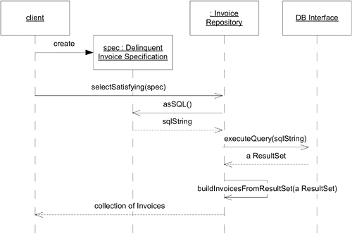
하지만 이 설계에는 몇 가지 문제가 있다. 가장 중요한 문제는 테이블 구조의 세부 사항이 도메인 계층(Domain Layer)으로 누출되었다는 점이다. 테이블 구조 정보는 도메인 객체와 관계형 테이블을 연결하는 매핑 계층에 격리되어야 한다. 이 정보를 여기에 암묵적으로 중복시키면 Invoice와 Customer 객체의 수정 용이성과 유지보수성이 저하될 수 있는데, 매핑이 변경될 때마다 한 곳이 아니라 여러 곳을 추적해 수정해야 하기 때문이다. 그럼에도 이 예제는 규칙을 단 한 곳에만 유지하는 방법을 간단히 보여준다. 일부 객체-관계 매핑(ORM) 프레임워크는 이러한 쿼리를 모델 객체와 속성 관점에서 표현하고 실제 SQL은 인프라 계층에서 생성하는 수단을 제공한다. 이를 활용하면 두 마리 토끼를 모두 잡을 수 있다.
인프라가 이러한 도움을 주지 못할 때는 Invoice Repository에 특화된 쿼리 메서드를 추가함으로써 표현력 있는 도메인 객체로부터 SQL을 리팩터링해 분리할 수 있다. 리포지토리(Repository) 안에 규칙을 직접 내장하지 않으려면, 규칙 자체를 포착하지 않으면서도 규칙을 계산해 내기 위해 조합하거나 맥락 속에 배치할 수 있는 더 범용적인 방식으로 쿼리를 표현해야 한다(이 예제에서는 이중 디스패치(double dispatch)를 사용한다).
public class InvoiceRepository {
public Set selectWhereGracePeriodPast(Date aDate){
//This is not a rule, just a specialized query
String sql = whereGracePeriodPast_SQL(aDate);
ResultSet queryResultSet =
SQLDatabaseInterface.instance().executeQuery(sql);
return buildInvoicesFromResultSet(queryResultSet);
}
public String whereGracePeriodPast_SQL(Date aDate) {
return
"SELECT * FROM INVOICE, CUSTOMER" +
" WHERE INVOICE.CUST_ID = CUSTOMER.ID" +
" AND INVOICE.DUE_DATE + CUSTOMER.GRACE_PERIOD" +
" < " + SQLUtility.dateAsSQL(aDate);
}
public Set selectSatisfying(InvoiceSpecification spec) {
return spec.satisfyingElementsFrom(this);
}
}Invoice Specification의 asSql() 메서드는 satisfyingElementsFrom(InvoiceRepository)로 대체되며, Delinquent Invoice Specification은 이를 다음과 같이 구현한다.
public class DelinquentInvoiceSpecification {
// Basic DelinquentInvoiceSpecification code here
public Set satisfyingElementsFrom(
InvoiceRepository repository) {
//Delinquency rule is defined as:
// "grace period past as of current date"
return repository.selectWhereGracePeriodPast(currentDate);
}
}이렇게 하면 SQL은 리포지토리(Repository)에 두고, 어떤 쿼리를 사용할지는 명세(Specification)가 제어하게 된다. 규칙이 명세(Specification) 안에 아주 깔끔하게 한데 모여 있지는 않지만, 무엇이 연체(즉, 유예 기간 경과)를 구성하는지에 대한 핵심 선언은 그 안에 남아 있다.
이제 리포지토리(Repository)는 이 경우에만 사용될 가능성이 큰 매우 특화된 쿼리를 갖게 되었다. 이것도 수용 가능한 방식이지만, 연체(delinquent)된 송장 대비 지급 기한이 지난(overdue) 송장의 상대적 비율에 따라서는 리포지토리(Repository) 메서드를 더 범용적으로 유지하면서도 여전히 좋은 성능을 내고 명세(Specification)의 자기 설명력(self-explanatory)도 높게 유지하는 중간 해법을 택할 수 있다.
public class InvoiceRepository {
public Set selectWhereDueDateIsBefore(Date aDate) {
String sql = whereDueDateIsBefore_SQL(aDate);
ResultSet queryResultSet =
SQLDatabaseInterface.instance().executeQuery(sql);
return buildInvoicesFromResultSet(queryResultSet);
}
public String whereDueDateIsBefore_SQL(Date aDate) {
return
"SELECT * FROM INVOICE" +
" WHERE INVOICE.DUE_DATE" +
" < " + SQLUtility.dateAsSQL(aDate);
}
public Set selectSatisfying(InvoiceSpecification spec) {
return spec.satisfyingElementsFrom(this);
}
}
public class DelinquentInvoiceSpecification {
//Basic DelinquentInvoiceSpecification code here
public Set satisfyingElementsFrom(
InvoiceRepository repository) {
Collection pastDueInvoices =
repository.selectWhereDueDateIsBefore(currentDate);
Set delinquentInvoices = new HashSet();
Iterator it = pastDueInvoices.iterator();
while (it.hasNext()) {
Invoice anInvoice = (Invoice) it.next();
if (this.isSatisfiedBy(anInvoice))
delinquentInvoices.add(anInvoice);
}
return delinquentInvoices;
}
}이 코드를 사용하면 더 많은 Invoice를 가져온 뒤 메모리에서 필터링해야 하므로 성능 저하가 발생한다. 책임의 더 나은 분리를 위해 이 비용을 감수할 수 있는지는 전적으로 상황에 달려 있다. 기본적인 책임 구조를 그대로 유지하면서도 개발 플랫폼의 장점을 활용하기 위해 명세(Specification)와 리포지토리(Repository) 간의 상호작용을 구현하는 방법은 다양하다.
때로는 성능을 개선하거나, 더 흔히는 보안을 강화하기 위해 쿼리를 서버 측 저장 프로시저(stored procedure)로 구현하기도 한다. 이 경우 명세(Specification)는 저장 프로시저가 허용하는 매개변수만 전달하도록 구성할 수 있다. 그럼에도 불구하고 이러한 다양한 구현 방식들 사이에 모델 관점에서의 차이는 없다. 모델에 의해 특별히 제약되는 부분을 제외하면 구현 방식의 선택은 자유롭다. 다만 쿼리를 작성하고 유지보수하는 방식이 더 번거로워진다는 대가가 따를 뿐이다.
지금까지의 논의는 명세(Specification)와 데이터베이스를 결합할 때 직면하는 과제들의 극히 일부분만 건드렸을 뿐이며, 여기서 발생할 수 있는 모든 고려 사항을 다루려는 것은 아니다. 단지 어떤 종류의 선택을 내려야 하는지 그 감을 전하고자 할 뿐이다. Mee와 Hieatt는 Fowler 2002에서 명세(Specification)와 함께 리포지토리(Repository)를 설계할 때 수반되는 몇 가지 기술적 쟁점을 논의한 바 있다.
주문에 따른 생성(Building to Order / Generating)
미 국방부가 새로운 전투기를 원할 때, 관계자들은 명세(specification)를 작성한다. 이 명세에는 전투기가 마하 2에 도달해야 하고, 항속 거리가 1,800마일이어야 하며, 가격은 5,000만 달러를 넘지 않아야 한다는 등의 요구사항이 담길 수 있다. 하지만 그 명세가 아무리 상세하더라도 그것은 비행기의 설계도가 아니며, 비행기 자체는 더더욱 아니다. 항공우주 공학 회사는 그 명세를 받아 이를 토대로 하나 이상의 설계를 만들어 낼 것이다. 경쟁 관계에 있는 회사들은 서로 다른 설계를 내놓을 수 있지만, 그 설계들은 모두 원래의 명세를 만족시킬 것이다.
많은 컴퓨터 프로그램이 무언가를 생성하며, 그 생성물들은 명세되어야 한다. 워드 프로세서 문서에 그림을 배치하면 텍스트가 그 주위를 감싸며 흐른다. 사용자는 그림의 위치와 아마도 텍스트 흐름의 스타일을 명세했을 것이다. 그러면 페이지 위 단어들의 정확한 배치는 사용자의 명세를 충족하는 방식으로 워드 프로세서가 계산해 낸다.
처음에는 분명해 보이지 않을 수 있지만, 이것 역시 유효성 검사와 선택에 적용되었던 명세(Specification)와 동일한 개념이다. 우리는 아직 존재하지 않는 객체들에 대한 기준을 명세하고 있는 것이다. 다만 구현 방식은 상당히 달라진다. 이번 명세(Specification)는 쿼리에서처럼 기존 객체들을 걸러내는 필터가 아니다. 유효성 검사에서처럼 기존 객체를 시험하는 테스트도 아니다. 이번에는 명세(Specification)를 만족시키기 위해 완전히 새로운 객체나 객체 집합이 만들어지거나 재구성된다.
명세(Specification)를 사용하지 않고도 필요한 객체를 생성하는 절차나 일련의 명령을 담은 생성기(generator)를 작성할 수 있다. 이 경우 해당 코드가 생성기의 동작을 암묵적으로 정의하게 된다.
반면, 서술적인 명세(Specification)를 기반으로 정의된 생성기 인터페이스는 생성기의 결과물을 명시적으로 제약한다. 이 접근 방식에는 여러 가지 장점이 있다.
- 생성기의 구현이 인터페이스로부터 분리된다. 명세(Specification)는 출력물에 대한 요구사항을 선언할 뿐, 그 결과에 도달하는 방법을 정의하지는 않는다.
- 인터페이스가 규칙을 명시적으로 전달하므로, 개발자는 생성기 동작의 모든 세부 사항을 이해하지 않고도 생성기로부터 무엇을 기대할 수 있는지 알 수 있다. 절차적으로 정의된 생성기의 동작을 예측하는 유일한 방법은 사례를 실행해 보거나 코드의 모든 줄을 이해하는 것뿐이다.
- 요청에 대한 서술 권한이 클라이언트에게 있고 생성기는 명세(Specification)의 문구 그대로만 이행할 의무를 지므로, 인터페이스가 더 유연해지거나 더 큰 유연성을 갖추도록 확장하기 쉽다.
- 마지막으로 중요한 점은, 이런 종류의 인터페이스가 테스트하기 더 쉽다는 것이다. 모델이 생성기에 입력을 정의하는 명시적 방법을 포함하는 동시에 출력에 대한 유효성 검사 수단도 제공하기 때문이다. 즉, 생성 프로세스를 제약하기 위해 생성기 인터페이스에 전달된 것과 동일한 명세(Specification)를(구현이 이를 지원한다면) 유효성 검사 역할로도 사용하여 생성된 객체가 올바른지 확인할 수 있다. (이는 10장에서 다루는 어서션(Assertion)의 한 예다.)
주문에 따른 생성은 객체를 처음부터 새로 만드는 것을 의미할 수도 있지만, 명세(Spec)를 만족시키도록 기존 객체들을 구성(configuration)하는 것을 의미할 수도 있다.
예제
화학 물류 창고 적재기(Chemical Warehouse Packer)
유개 화차(boxcar)와 비슷한 대형 컨테이너를 쌓아 두고 다양한 화학 물질을 보관하는 창고가 있다. 어떤 화학 물질은 불활성이어서 아무 곳에나 보관할 수 있다. 어떤 물질은 휘발성이어서 특수 환기 컨테이너에 보관해야 한다. 또 어떤 물질은 폭발성이어서 특수 장갑 컨테이너에 보관해야 한다. 한 컨테이너 안에 함께 보관할 수 있는 물질의 조합에 관한 규칙도 존재한다.
목표는 화학 물질을 컨테이너에 효율적이고 안전하게 적재하는 방법을 찾아내는 소프트웨어를 작성하는 것이다.
그림 9.16. 창고 보관을 위한 모델

화학 물질을 가져와 컨테이너에 배치하는 절차를 작성하는 것부터 시작할 수도 있지만, 대신 유효성 검사 문제부터 시작해 보자. 이렇게 하면 규칙을 명시적으로 드러내게 될 뿐만 아니라 최종 구현을 테스트할 수 있는 수단도 얻게 된다.
각 화학 물질은 컨테이너 명세(Specification)를 갖게 된다.
화학 물질 / 컨테이너 명세: TNT / 장갑 컨테이너 | 모래, 생물학 샘플 / 폭발물과 같은 컨테이너에 보관할 수 없음 | 암모니아 / 환기 컨테이너
이제 이들을 Container Specification으로 작성하면, 적재된 컨테이너 구성을 받아 해당 제약 조건을 충족하는지 검사할 수 있을 것이다.
컨테이너 특징(Container Features) / 내용물(Contents) / 명세 충족 여부(Specification Satisfied?): 장갑(Armored) / TNT 20파운드 모래 500파운드 생물학 샘플 50파운드 암모니아
Container Specification의 메서드인 isSatisfied()는 필요한 ContainerFeatures가 있는지 확인하도록 구현되어야 한다. 예를 들어 폭발성 화학 물질에 연결된 명세(Spec)는 “장갑(armored)” 특징을 찾을 것이다.
public class ContainerSpecification {
private ContainerFeature requiredFeature;
public ContainerSpecification(ContainerFeature required) {
requiredFeature = required;
}
boolean isSatisfiedBy(Container aContainer){
return aContainer.getFeatures().contains(requiredFeature);
}
}다음은 폭발성 화학 물질을 설정하는 클라이언트 코드 예시다.
tnt.setContainerSpecification(
new ContainerSpecification(ARMORED));Container 객체의 메서드인 isSafelyPacked()는 Container가 자신이 담고 있는 화학 물질(Chemical)들이 명세한 모든 특징을 갖추고 있는지 확인한다.
boolean isSafelyPacked(){
Iterator it = contents.iterator();
while (it.hasNext()) {
Drum drum = (Drum) it.next();
if (!drum.containerSpecification().isSatisfiedBy(this))
return false;
}
return true;
}이 시점에서 재고 데이터베이스를 읽어 위험한 상황을 보고하는 모니터링 애플리케이션을 작성할 수도 있을 것이다.
Iterator it = containers.iterator();
while (it.hasNext()) {
Container container = (Container) it.next();
if (!container.isSafelyPacked())
unsafeContainers.add(container);
}우리가 의뢰받은 소프트웨어는 이런 것이 아니다. 비즈니스 담당자들에게 이런 활용 가능성을 알려주는 것도 좋겠지만, 우리에게 맡겨진 임무는 적재기(packer)를 설계하는 것이다. 우리가 지금 확보한 것은 적재기를 위한 테스트다. 도메인에 대한 이러한 이해와 명세(Specification) 기반 모델 덕분에, 이제 Drum과 Container 컬렉션을 받아 규칙을 준수하며 적재하는 서비스(Service)의 명확하고 단순한 인터페이스를 정의할 수 있는 위치에 서게 되었다.
public interface WarehousePacker {
public void pack(Collection containersToFill,
Collection drumsToPack) throws NoAnswerFoundException;
/* ASSERTION: At end of pack(), the ContainerSpecification
of each Drum shall be satisfied by its Container.
If no complete solution can be found, an exception shall
be thrown. */
}이제 Packer 서비스의 책임을 이행할 최적화된 제약 조건 해결기(constraint solver)를 설계하는 작업이 애플리케이션의 나머지 부분으로부터 분리되었으므로, 그러한 메커니즘이 모델을 표현하는 설계 영역을 어지럽히지 않게 된다(10장의 “선언적 설계 스타일(Declarative Style of Design)”과 15장의 응집력 있는 메커니즘(Cohesive Mechanism) 참조). 그러면서도 적재를 관장하는 규칙들은 도메인 객체 밖으로 빠져나가지 않았다.
예제
창고 적재기의 동작하는 프로토타입
창고 적재 소프트웨어가 동작하도록 최적화 로직을 작성하는 일은 규모가 큰 작업이다. 개발자와 비즈니스 전문가로 구성된 소규모 팀이 따로 분리되어 이 작업에 착수했지만, 아직 코딩조차 시작하지 못했다. 한편 또 다른 소규모 팀은 사용자가 데이터베이스에서 재고 데이터를 가져와 Packer에 전달하고 결과를 해석할 수 있게 해주는 애플리케이션을 개발하고 있다. 이들은 앞으로 만들어질 Packer를 염두에 두고 설계를 진행하려 하지만, 지금 할 수 있는 일이라곤 UI 목업을 만들고 데이터베이스 통합 코드를 일부 작성하는 것뿐이다. 의미 있는 동작을 하는 인터페이스를 사용자에게 보여주며 양질의 피드백을 받을 수가 없다. 같은 이유로 Packer 팀 역시 현실과 동떨어진 진공 상태에서 작업하고 있다.
창고 적재기 예제에서 만든 도메인 객체와 서비스(Service) 인터페이스가 있으므로, 애플리케이션 팀은 개발 과정을 진전시킬 수 있는 아주 단순한 Packer 구현체를 직접 만들 수 있다는 사실을 깨닫는다. 이를 통해 작업을 병렬로 진행할 수 있게 되고, 종단 간(end-to-end)으로 동작하는 시스템이 갖추어졌을 때 비로소 온전한 효과를 발휘하는 피드백 루프를 완성할 수 있다.
public class Container {
private double capacity;
private Set contents; //Drums
public boolean hasSpaceFor(Drum aDrum) {
return remainingSpace() >= aDrum.getSize();
}
public double remainingSpace() {
double totalContentSize = 0.0;
Iterator it = contents.iterator();
while (it.hasNext()) {
Drum aDrum = (Drum) it.next();
totalContentSize = totalContentSize + aDrum.getSize();
}
return capacity – totalContentSize;
}
public boolean canAccommodate(Drum aDrum) {
return hasSpaceFor(aDrum) &&
aDrum.getContainerSpecification().isSatisfiedBy(this);
}
}
public class PrototypePacker implements WarehousePacker {
public void pack(Collection containers, Collection drums)
throws NoAnswerFoundException {
/* This method fulfills the ASSERTION as written. However,
when an exception is thrown, Containers' contents may
have changed. Rollback must be handled at a higher
level. */
Iterator it = drums.iterator();
while (it.hasNext()) {
Drum drum = (Drum) it.next();
Container container =
findContainerFor(containers, drum);
container.add(drum);
}
}
public Container findContainerFor(
Collection containers, Drum drum)
throws NoAnswerFoundException {
Iterator it = containers.iterator();
while (it.hasNext()) {
Container container = (Container) it.next();
if (container.canAccommodate(drum))
return container;
}
throw new NoAnswerFoundException();
}
}물론 이 코드에는 부족한 점이 많다. 위험한 화학 물질을 적재하기 전에 모래를 특수 컨테이너에 채워 넣어 공간이 부족해질 수도 있다. 또한 수익을 최적화하지도 못한다. 하지만 애초에 많은 최적화 문제는 완벽하게 풀리지 않는다. 그럼에도 이 구현은 지금까지 언급한 규칙들을 충실히 따른다.
동작하는 프로토타입으로 개발 병목 해소하기 한 팀이 앞으로 나아가기 위해 다른 팀에서 동작하는 코드를 내놓을 때까지 기다려야 하는 경우가 있다. 두 팀 모두 컴포넌트를 실제로 실행해 보거나 사용자로부터 피드백을 받기 위해 완전한 통합이 이루어질 때까지 기다려야 한다. 이러한 병목 현상은 모든 요구사항을 만족하지 않더라도 핵심 컴포넌트의 모델 주도(MODEL-DRIVEN) 프로토타입을 만들어 두면 종종 완화할 수 있다. 구현이 인터페이스와 분리되어 있다면, 어떤 식으로든 동작하는 구현이 하나라도 존재하는 것만으로 프로젝트 작업을 병렬로 진행할 수 있는 유연성이 생긴다. 때가 되면 프로토타입은 더 효과적인 구현으로 교체하면 된다. 그사이 시스템의 다른 모든 부분은 개발 중에 상호작용할 수 있는 대상을 갖게 된다.
이 프로토타입 덕분에 애플리케이션 개발자들은 외부 시스템과의 모든 통합을 포함해 최고 속도로 작업을 진행할 수 있다. Packer 개발팀 역시 도메인 전문가들이 프로토타입과 상호작용하며 아이디어를 구체화하는 과정에서 피드백을 얻고, 이를 통해 요구사항과 우선순위를 명확히 파악할 수 있다. Packer 팀은 이 프로토타입을 인계받아 아이디어를 검증하기 위해 조금씩 수정해 보기로 결정한다.
또한 그들은 최신 설계에 맞춰 인터페이스를 계속 최신 상태로 유지하며, 애플리케이션과 일부 도메인 객체의 리팩터링을 이끌어 내어 통합 문제를 초기에 해결한다.
정교한 Packer가 준비되자마자 통합은 식은 죽 먹기가 된다. 프로토타입과 상호작용할 때 애플리케이션이 맞추어 작성했던 바로 그 명확하게 정의된 인터페이스와 어설션(ASSERTIONS)에 맞춰 작성되었기 때문이다.
최적화 알고리즘 전문가들이 이를 제대로 구현하는 데는 몇 달이 걸렸다. 그들은 프로토타입과 상호작용하는 사용자들로부터 얻은 피드백에서 큰 도움을 받았다. 그사이 시스템의 다른 모든 부분은 개발 중에 상호작용할 수 있는 대상을 확보할 수 있었다.
여기서 우리는 더 정교한 모델 덕분에 오히려 가능해진 “동작할 수 있는 가장 단순한 것”의 사례를 볼 수 있다. 매우 복잡한 컴포넌트의 동작하는 프로토타입을 이해하기 쉬운 수십 줄의 코드로 만들어 낼 수 있었다. 모델 주도(MODEL-DRIVEN) 방식이 덜 적용된 접근법이었다면 이해하기도 더 어렵고, 업그레이드하기도 더 힘들었을 것이며(Packer가 나머지 설계와 더 강하게 결합되었을 것이므로), 이 경우에는 프로토타입을 만드는 데도 더 오랜 시간이 걸렸을 것이다.
10장. 유연한 설계(Supple Design)

소프트웨어의 궁극적인 목적은 사용자에게 봉사하는 것이다. 하지만 그에 앞서, 그 소프트웨어는 먼저 개발자에게 봉사해야 한다. 리팩터링을 강조하는 프로세스에서는 더욱 그렇다. 프로그램이 진화함에 따라 개발자들은 모든 부분을 재배치하고 다시 작성하게 된다. 도메인 객체를 애플리케이션에 통합하고 새로운 도메인 객체들과도 결합한다. 심지어 몇 년이 지난 뒤에도 유지보수 프로그래머들은 코드를 변경하고 확장한다. 사람들은 이 코드를 다루며 일해야 한다. 그런데 과연 그들이 이 코드와 일하고 싶어 할까?
복잡한 행위를 다루는 소프트웨어에 좋은 설계가 결여되어 있으면 요소를 리팩터링하거나 조합하기가 어려워진다. 개발자가 어떤 계산의 전체 영향을 확신 있게 예측할 수 없게 되는 순간 곧바로 중복이 생겨나기 시작한다. 설계 요소가 거대하고 단일체(monolithic)여서 부분을 재조합할 수 없을 때도 중복이 강요된다. 재사용성을 높이기 위해 클래스와 메서드를 잘게 나눌 수는 있지만, 그렇게 하면 수많은 작은 부분들이 각각 무슨 일을 하는지 추적하기가 어려워진다. 소프트웨어에 깔끔한 설계가 없으면 개발자들은 기존의 난장판을 들여다보는 것조차 두려워하게 되며, 얽힘을 악화시키거나 예기치 못한 의존성으로 무언가를 망가뜨릴 수 있는 변경을 가하는 일은 더더욱 꺼리게 된다. 아주 작은 시스템을 제외하면, 이러한 취약성은 구현 가능한 행위의 풍부함에 상한선을 그어 버린다. 리팩터링과 반복적인 정제를 멈추게 만드는 것이다.
개발이 진행될수록 자체 레거시의 무게에 짓눌리지 않고 오히려 프로젝트가 가속화되게 하려면, 함께 작업하기 즐겁고 변경을 반기는 설계가 필요하다. 바로 유연한 설계(supple design)다.
유연한 설계는 심층 모델링(deep modeling)을 보완한다. 암묵적인 개념들을 파내어 명시적으로 드러내고 나면 원재료를 손에 넣은 셈이다. 반복 주기를 거치면서 그 원재료를 유용한 형태로 다듬어 핵심 관심사를 단순하고 명료하게 포착하는 모델을 가꾸고, 클라이언트 개발자가 그 모델을 실제로 업무에 활용할 수 있게 해 주는 설계를 빚어낸다. 설계와 코드의 개발은 모델 개념을 정제하는 통찰로 이어진다. 돌고 돌아 다시 반복 주기와 더 깊은 통찰을 향한 리팩터링으로 돌아오는 것이다. 그렇다면 우리가 도달하고자 하는 설계는 어떤 모습일까? 그 과정에서 어떤 실험들을 시도해 보아야 할까? 이것이 바로 이 장에서 다루는 주제다.
유연성이라는 이름 아래 수많은 과잉 설계(overengineering)가 정당화되어 왔다. 하지만 과도한 추상화 계층과 간접 참조(indirection)는 대부분 오히려 방해가 될 뿐이다. 소프트웨어를 다루는 사람들에게 진정한 힘을 실어 주는 설계를 들여다보면 대개 무언가 단순한 모습이 보인다. 단순함은 결코 쉽지 않다. 정교한 시스템으로 조립할 수 있으면서도 여전히 이해하기 쉬운 요소들을 만들어 내기 위해서는, 모델 주도 설계(MODEL-DRIVEN DESIGN)에 대한 헌신과 적절히 엄격한 설계 스타일이 결합되어야 한다. 이를 창조하거나 사용하는 데는 상당히 정교한 설계 역량이 필요할 수도 있다.
개발자는 두 가지 역할을 수행하며, 설계는 두 역할 모두에 봉사해야 한다. 같은 사람이 두 역할을 모두 맡을 수도 있고 심지어 몇 분 간격으로 역할을 오갈 수도 있지만, 코드와의 관계는 분명히 다르다. 한 가지 역할은 설계가 제공하는 기능을 활용해 도메인 객체를 애플리케이션 코드나 다른 도메인 계층 코드에 엮어 넣는 클라이언트 개발자다. 유연한 설계는 기저에 놓인 깊은 모델을 드러내어 그 잠재력을 명확하게 보여 준다. 클라이언트 개발자는 느슨하게 결합된 최소한의 개념 집합을 유연하게 사용하여 도메인의 다양한 시나리오를 표현할 수 있다. 설계 요소들은 자연스럽게 맞물려 예측 가능하고 명확히 규정되며 견고한 결과를 만들어 낸다.
그에 못지않게 중요한 점은, 설계를 변경하려고 작업하는 개발자에게도 그 설계가 봉사해야 한다는 것이다. 변경에 열려 있으려면 설계가 이해하기 쉬워야 하며, 클라이언트 개발자가 활용하는 바로 그 기저의 모델을 똑같이 드러내야 한다. 도메인의 깊은 모델의 윤곽을 따라야만 대부분의 변경이 설계의 유연한 지점에서 휘어지며 수용된다. 코드의 효과는 투명할 정도로 명백해야 변경의 결과를 쉽게 예측할 수 있다.
설계의 초기 버전은 대개 뻣뻣하다. 많은 설계가 프로젝트의 일정이나 예산 안에서 끝내 유연성을 얻지 못한다. 대규모 프로그램 전체가 이러한 품질을 고루 갖춘 경우를 나는 본 적이 없다. 하지만 복잡성이 발목을 잡고 있을 때, 가장 핵심적이고 까다로운 부분들을 유연한 설계로 연마해 내는 것은 레거시 유지보수의 수렁에 빠져들 것인가, 아니면 복잡성의 천장을 뚫고 나아갈 것인가를 가르는 차이를 만든다.
이와 같은 소프트웨어를 설계하는 공식은 없다. 하지만 내 경험상 상황에 잘 들어맞을 때 설계에 유연함을 불어넣어 주는 경향이 있는 일련의 패턴들을 추려 보았다. 이 패턴들과 예제들이 유연한 설계란 어떤 느낌인지, 그리고 거기에 어떤 사고방식이 들어가는지에 대한 감을 전해 줄 것이다.
그림 10.1. 유연한 설계에 기여하는 몇 가지 패턴

의도를 드러내는 인터페이스(Intention-Revealing Interfaces)
도메인 주도 설계에서 우리는 의미 있는 도메인 로직에 대해 생각하고자 한다. 규칙을 명시적으로 서술하지 않고 규칙의 효과만 만들어 내는 코드는 우리로 하여금 단계별 소프트웨어 절차를 떠올리게 만든다. 어떤 코드를 실행한 결과로 계산이 이루어지긴 하지만 그 계산이 명시적이지 않은 경우도 마찬가지다. 모델과의 명확한 연결고리가 없으면 코드의 효과를 이해하거나 변경의 영향을 예측하기 어렵다. 앞 장에서는 규칙과 계산을 명시적으로 모델링하는 방법을 깊이 있게 다루었다. 그러한 객체를 구현하려면 계산의 세부 사항이나 규칙의 세세한 조항들을 많이 이해해야 한다. 객체의 아름다움은 이 모든 것을 캡슐화하여 클라이언트 코드가 단순해지고 더 높은 수준의 개념으로 해석될 수 있게 만드는 데 있다.
하지만 인터페이스가 클라이언트 개발자에게 객체를 효과적으로 사용하는 데 필요한 정보를 알려 주지 않는다면, 클라이언트 개발자는 어쩔 수 없이 내부 구현을 파헤쳐 세부 사항을 파악해야 한다. 클라이언트 코드를 읽는 사람도 똑같은 일을 해야 한다. 그러면 캡슐화의 가치는 대부분 사라진다. 우리는 늘 인지 과부하와 싸우고 있다. 컴포넌트가 자신의 일을 어떻게 수행하는지에 관한 세부 정보로 클라이언트 개발자의 머릿속이 가득 차 버리면, 클라이언트 설계의 복잡한 문제를 풀어낼 여유가 머릿속에 남지 않는다. 이는 같은 사람이 자신의 코드를 개발하고 사용하는 두 역할을 모두 맡을 때도 마찬가지다. 설령 세부 사항을 새로 배울 필요가 없다 하더라도 한 번에 고려할 수 있는 요소의 수에는 한계가 있기 때문이다.
개발자가 컴포넌트를 사용하기 위해 그 구현을 고려해야만 한다면 캡슐화의 가치는 상실된다. 원작자가 아닌 다른 사람이 구현을 보고 객체나 연산의 목적을 추론해야 한다면, 그 새로운 개발자는 해당 연산이나 클래스가 단지 우연히 충족하고 있을 뿐인 목적을 본래의 목적으로 오인해 추론할 수도 있다. 그것이 원래 의도가 아니었다면 코드는 당장 동작할지 몰라도 설계의 개념적 기반은 훼손되고, 두 개발자는 서로 엇갈린 방향으로 일하게 된다.
클래스나 메서드 형태로 개념을 명시적으로 모델링한 가치를 얻으려면, 그 프로그램 요소들에 해당 개념을 반영하는 이름을 부여해야 한다. 클래스와 메서드의 이름은 개발자 간의 의사소통을 개선하고 시스템의 추상화를 향상시킬 수 있는 훌륭한 기회다.
켄트 벡(Kent Beck)은 의도를 드러내는 셀렉터(INTENTION-REVEALING SELECTOR)를 통해 메서드 이름이 그 목적을 전달하도록 만드는 것에 관해 쓴 바 있다(Beck 1997). 설계의 모든 공개 요소가 함께 모여 인터페이스를 이루며, 그 각 요소의 이름은 설계의 의도를 드러낼 수 있는 기회를 제공한다. 타입 이름, 메서드 이름, 인자 이름이 모두 결합하여 의도를 드러내는 인터페이스(INTENTION-REVEALING INTERFACE)를 형성한다.
따라서:
클래스와 연산의 이름을 지을 때, 그들이 약속한 바를 어떤 수단으로 수행하는지 언급하지 말고 그 효과와 목적을 서술하라. 이렇게 하면 클라이언트 개발자가 내부 구현을 이해할 필요가 없어진다. 이러한 이름들은 팀원들이 의미를 빠르게 추론할 수 있도록 유비쿼터스 언어(UBIQUITOUS LANGUAGE)를 따라야 한다. 행위를 구현하기 전에 그 행위에 대한 테스트를 먼저 작성하여, 클라이언트 개발자 모드로 사고하도록 스스로를 이끌라.
모든 까다로운 메커니즘은 수단이 아니라 의도의 관점에서 말하는 추상 인터페이스 뒤에 캡슐화되어야 한다.
도메인의 공개 인터페이스에서는 관계와 규칙을 서술하되 그것이 어떻게 강제되는지는 서술하지 말라. 이벤트와 액션을 서술하되 그것이 어떻게 수행되는지는 서술하지 말라. 방정식을 세우되 그것을 푸는 수치 해석 기법은 드러내지 말라. 질문을 던지되 답을 찾는 수단은 제시하지 말라.
예제
리팩터링: 페인트 혼합 애플리케이션
페인트 가게용 프로그램은 고객에게 표준 페인트들을 섞었을 때의 결과를 보여 줄 수 있다. 다음은 단일 도메인 클래스를 가진 초기 설계다.
그림 10.2.

paint(Paint) 메서드가 무슨 일을 하는지 짐작할 수 있는 유일한 방법은 코드를 읽어 보는 것뿐이다.
public void paint(Paint paint) {
v = v + paint.getV(); //After mixing, volume is summed
// Omitted many lines of complicated color mixing logic
// ending with the assignment of new r, b, and y values.
}좋다. 이 메서드는 두 개의 Paint를 하나로 합쳐 더 큰 부피와 혼합된 색상을 결과로 만들어 내는 것으로 보인다.
관점을 전환하기 위해 이 메서드에 대한 테스트를 작성해 보자. (이 코드는 JUnit 테스트 프레임워크를 기반으로 한다.)
public void testPaint() {
// Create a pure yellow paint with volume=100
Paint yellow = new Paint(100.0, 0, 50, 0);
// Create a pure blue paint with volume=100
Paint blue = new Paint(100.0, 0, 0, 50);
// Mix the blue into the yellow
yellow.paint(blue);
// Result should be volume of 200.0 of green paint
assertEquals(200.0, yellow.getV(), 0.01);
assertEquals(25, yellow.getB());
assertEquals(25, yellow.getY());
assertEquals(0, yellow.getR());
}통과하는 테스트가 출발점이다. 현 시점에서는 테스트 코드가 자신이 무엇을 하고 있는지 말해 주지 않기 때문에 만족스럽지 않다. 클라이언트 애플리케이션을 작성할 때 Paint 객체를 사용하고 싶은 방식이 드러나도록 테스트를 다시 작성해 보자. 처음에는 이 테스트가 실패할 것이다. 사실 컴파일조차 되지 않을 것이다. 우리는 클라이언트 개발자의 관점에서 Paint 객체의 인터페이스 설계를 탐색하기 위해 이 테스트를 작성하는 것이다.
public void testPaint() {
// Start with a pure yellow paint with volume=100
Paint ourPaint = new Paint(100.0, 0, 50, 0);
// Take a pure blue paint with volume=100
Paint blue = new Paint(100.0, 0, 0, 50);
// Mix the blue into the yellow
ourPaint.mixIn(blue);
// Result should be volume of 200.0 of green paint
assertEquals(200.0, ourPaint.getVolume(), 0.01);
assertEquals(25, ourPaint.getBlue());
assertEquals(25, ourPaint.getYellow());
assertEquals(0, ourPaint.getRed());
}이 객체들과 대화하고 싶은 방식을 반영하는 테스트를 시간을 들여 작성해야 한다. 그런 다음 테스트가 통과하도록 Paint 클래스를 리팩터링한다.
그림 10.3.

새 메서드 이름이 다른 Paint를 “섞어 넣는(mixing in)” 효과에 관한 모든 것을 읽는 이에게 알려 주지는 못할 수도 있다(그 부분에 대해서는 몇 페이지 뒤에서 다룰 어설션(ASSERTIONS)이 필요하다). 하지만 최소한 읽는 이가 이 클래스를 사용하기 시작할 수 있을 만큼의 단서는 제공하며, 테스트가 제공하는 예제와 함께라면 더욱 그렇다. 또한 클라이언트 코드를 읽는 사람이 클라이언트의 의도를 해석할 수 있게 해 준다. 이 장의 다음 몇 가지 예제에서는 이 클래스를 다시 리팩터링하여 한층 더 명확하게 만들어 볼 것이다.
서브도메인 전체를 별도의 모듈로 떼어 내어 의도를 드러내는 인터페이스(INTENTION-REVEALING INTERFACES) 뒤에 캡슐화할 수도 있다. 이처럼 다듬어 나가는 방식을 통해 프로젝트의 초점을 맞추고 대규모 시스템의 복잡성을 관리하는 방법은 15장 “증류(Distillation)”에서 응집된 메커니즘(COHESIVE MECHANISMS) 및 일반 서브도메인(GENERIC SUBDOMAINS)과 함께 더 자세히 다룰 것이다.
하지만 다음 두 패턴에서는 메서드 사용의 결과를 매우 예측 가능하게 만드는 데 주력할 것이다. 복잡한 로직은 부수 효과 없는 함수(SIDE-EFFECT-FREE FUNCTIONS) 안에서 안전하게 처리할 수 있다. 시스템 상태를 변경하는 메서드는 어설션(ASSERTIONS)으로 명확히 규정할 수 있다.
부수 효과 없는 함수(Side-Effect-Free Functions)
연산은 크게 명령(command)과 질의(query)의 두 범주로 나눌 수 있다. 질의는 시스템에서 정보를 얻어 오며, 단순히 변수의 데이터에 접근할 수도 있고 그 데이터를 바탕으로 계산을 수행할 수도 있다. 명령(변경자, modifier라고도 함)은 시스템에 어떤 변화를 일으키는 연산이다(간단한 예로 변수에 값을 설정하는 경우). 일반 영어에서 부수 효과(side effect)라는 말은 의도하지 않은 결과를 암시하지만, 컴퓨터 과학에서는 시스템 상태에 미치는 모든 영향을 의미한다. 우리의 목적을 위해 이 의미를 향후 연산에 영향을 미칠 수 있는 시스템 상태의 모든 변경으로 좁혀 정의하자.
연산이 일으키는 매우 의도적인 변화에 대해서도 왜 부수 효과라는 용어가 채택되어 쓰이게 되었을까? 내 생각에는 복잡한 시스템을 다뤄 본 경험에서 비롯된 듯하다. 대부분의 연산은 다른 연산을 호출하고, 호출된 연산은 또 다른 연산을 호출한다. 이처럼 임의로 깊은 중첩이 개입되기 시작하면 어떤 연산을 호출했을 때의 모든 결과를 예측하기가 매우 어려워진다. 클라이언트의 개발자는 두 번째 계층이나 세 번째 계층 연산의 효과를 의도하지 않았을 수 있으며, 그 효과들은 말 그대로 모든 면에서 부수 효과가 되어 버린다. 복잡한 설계의 요소들은 똑같은 예측 불가능성을 만들어 내는 다른 방식들로도 상호작용한다. 부수 효과라는 용어의 사용은 바로 그 상호작용의 불가피성을 강조한다.
여러 규칙 간의 상호작용이나 계산들의 조합은 예측하기가 극도로 어려워진다. 연산을 호출하는 개발자는 결과를 예측하기 위해 그 연산의 구현과 그것이 위임하는 모든 대상의 구현까지 이해해야만 한다. 개발자들이 장막을 걷어 보고 속을 들여다봐야만 한다면 어떤 인터페이스 추상화의 유용성도 제한될 수밖에 없다. 안전하게 예측 가능한 추상화가 없다면 개발자들은 조합의 폭발을 제한해야만 하고, 그 결과 구현 가능한 행위의 풍부함에 낮은 상한선이 그어지게 된다.
부수 효과를 일으키지 않고 결과를 반환하는 연산을 함수(function)라고 부른다. 함수는 여러 번 호출하더라도 매번 같은 값을 반환한다. 함수는 중첩 깊이를 걱정하지 않고 다른 함수를 호출할 수 있다. 함수는 부수 효과가 있는 연산보다 테스트하기가 훨씬 쉽다. 이러한 이유로 함수는 위험을 낮춘다.
물론 대부분의 소프트웨어 시스템에서 명령을 피할 수는 없지만, 이 문제는 두 가지 방법으로 완화할 수 있다. 첫째, 명령과 질의를 서로 다른 연산으로 엄격히 분리할 수 있다. 변경을 일으키는 메서드는 도메인 데이터를 반환하지 않도록 하고 최대한 단순하게 유지하라. 모든 질의와 계산은 관찰 가능한 부수 효과를 일으키지 않는 메서드에서 수행하라(Meyer 1988).
둘째, 기존 객체를 아예 수정할 필요가 없는 대안 모델과 설계가 존재하는 경우가 많다. 대신 계산의 결과를 나타내는 새로운 값 객체(VALUE OBJECT)를 생성해 반환한다. 이는 흔히 쓰이는 기법으로, 이어지는 예제에서 설명할 것이다. 값 객체(VALUE OBJECT)는 생애주기를 신중하게 관리해야 하는 엔티티(ENTITY)와 달리, 질의에 대한 응답으로 생성되어 건네진 뒤 잊혀질 수 있다.
값 객체(VALUE OBJECTS)는 불변(immutable)이며, 이는 생성 시점에만 호출되는 초기화자(initializer)를 제외하면 값 객체의 모든 연산이 함수임을 뜻한다. 값 객체는 함수와 마찬가지로 사용하기에 더 안전하고 테스트하기도 더 쉽다. 로직이나 계산을 상태 변경과 뒤섞는 연산은 두 개의 분리된 연산으로 리팩터링해야 한다(Fowler 1999, p. 279). 하지만 정의상 부수 효과를 단순한 명령 메서드로 분리하는 이 방식은 엔티티(ENTITIES)에만 적용된다. 수정을 질의와 분리하는 리팩터링을 마친 후에는, 복잡한 계산의 책임을 값 객체(VALUE OBJECT)로 옮기는 두 번째 리팩터링을 고려해 보라. 기존 상태를 변경하는 대신 값 객체를 파생시키거나 전체 책임을 값 객체로 옮김으로써 부수 효과를 완전히 제거할 수 있는 경우가 많다.
따라서:
프로그램의 로직 중 가능한 한 많은 부분을 관찰 가능한 부수 효과 없이 결과를 반환하는 함수에 배치하라. 관찰 가능한 상태의 수정을 유발하는 명령은 도메인 정보를 반환하지 않는 매우 단순한 연산으로 엄격히 분리하라. 책임을 맡기에 적합한 개념이 나타난다면 복잡한 로직을 값 객체(VALUE OBJECTS)로 옮겨 부수 효과를 더욱 통제하라.
특히 불변인 값 객체(VALUE OBJECTS)에 담긴 부수 효과 없는 함수(SIDE-EFFECT-FREE FUNCTIONS)는 연산들을 안전하게 조합할 수 있게 해 준다. 함수가 의도를 드러내는 인터페이스(INTENTION-REVEALING INTERFACE)를 통해 제공되면, 개발자는 구현 세부 사항을 이해하지 않고도 그 함수를 사용할 수 있다.
예제
페인트 혼합 애플리케이션 다시 리팩터링하기
페인트 가게용 프로그램은 고객에게 표준 페인트들을 섞었을 때의 결과를 보여 줄 수 있다. 지난 예제에서 멈췄던 지점에서 이어가자면, 다음은 단일 도메인 클래스다.
그림 10.4.

public void mixIn(Paint other) {
volume = volume.plus(other.getVolume());
// Many lines of complicated color-mixing logic
// ending with the assignment of new red, blue,
// and yellow values.
}그림 10.5. mixIn() 메서드의 부수 효과
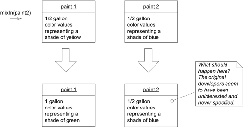
mixIn() 메서드 안에서 많은 일이 일어나고 있긴 하지만, 이 설계는 수정과 질의를 분리하는 규칙을 따르고는 있다. 한 가지 우려되는 점은, 나중에 다시 다룰 문제지만, mixIn() 메서드의 인자인 paint 2 객체의 부피가 어정쩡한 상태(limbo)로 방치된다는 것이다. 이 연산으로 인해 Paint 2의 부피는 변하지 않는데, 이 개념 모델의 맥락에서 보면 그리 논리적으로 보이지 않는다. 짐작건대 원래 개발자들에게는 연산 이후의 paint 2 객체에 관심이 없었기 때문에 이것이 문제가 되지 않았겠지만, 부수 효과나 부수 효과의 부재가 미치는 결과를 예측하기는 어렵다. 이 질문은 곧 어설션(ASSERTIONS)을 논의할 때 다시 다루기로 하자. 지금은 색상에 주목해 보자.
색상은 이 도메인에서 중요한 개념이다. 이를 명시적인 객체로 만들어 보는 실험을 해 보자. 이름은 무엇으로 지어야 할까? “Color”가 가장 먼저 떠오르지만, 앞서 진행한 지식 탐구(knowledge crunching)를 통해 페인트의 색상 혼합은 우리에게 더 친숙한 RGB 빛 디스플레이의 혼합과 다르다는 중요한 통찰을 이미 얻었다. 이름이 이를 반영해야 한다.
그림 10.6.

Pigment Color를 분리해 낸 것만으로도 이전 버전보다 더 많은 의미를 전달하지만, 계산은 여전히 동일하게 mixIn() 메서드 안에 남아 있다. 색상 데이터를 옮겨 냈을 때 관련된 행위도 함께 옮겼어야 했다. 그렇게 하기 전에, Pigment Color가 값 객체(VALUE OBJECT)라는 점에 주목하자. 따라서 불변으로 다루어야 한다. 페인트를 섞을 때는 Paint 객체 자체가 변경되었다. 그것은 계속 이어지는 생애 이야기를 가진 엔티티(ENTITY)였다. 반면 특정 노란색 음영을 나타내는 Pigment Color는 언제나 정확히 그 색상이다. 그 대신 혼합 연산은 새로운 색상을 나타내는 새로운 Pigment Color 객체를 결과로 만들어 낼 것이다.
그림 10.7.

public class PigmentColor {
public PigmentColor mixedWith(PigmentColor other,
double ratio) {
// Many lines of complicated color-mixing logic
// ending with the creation of a new PigmentColor object
// with appropriate new red, blue, and yellow values.
}
}
public class Paint {
public void mixIn(Paint other) {
volume = volume + other.getVolume();
double ratio = other.getVolume() / volume;
pigmentColor =
pigmentColor.mixedWith(other.pigmentColor(), ratio);
}
}그림 10.8.
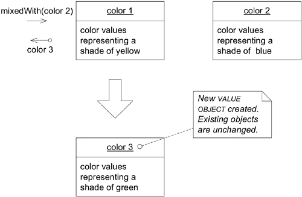
이제 Paint의 수정 코드는 가능한 한 단순해졌다. 새로운 Pigment Color 클래스는 지식을 포착하여 명시적으로 전달하며, 결과가 이해하기 쉽고 테스트하기 쉬우며 다른 연산과 안전하게 사용하거나 조합할 수 있는 부수 효과 없는 함수(SIDE-EFFECT-FREE FUNCTION)를 제공한다. 이처럼 매우 안전하기 때문에 색상 혼합의 복잡한 로직은 진정으로 캡슐화된다. 이 클래스를 사용하는 개발자들은 구현을 이해할 필요가 없다.
어설션(Assertions)
복잡한 계산을 부수 효과 없는 함수(SIDE-EFFECT-FREE FUNCTIONS)로 분리하면 문제의 크기를 다룰 만한 수준으로 줄일 수 있지만, 여전히 엔티티(ENTITIES) 위에는 부수 효과를 일으키는 명령들이 남아 있으며 이를 사용하는 사람은 누구나 그 결과를 이해해야 한다. 어설션(ASSERTIONS)은 부수 효과를 명시적으로 만들고 다루기 쉽게 해 준다.
물론 복잡한 계산이 전혀 들어 있지 않은 명령은 코드만 훑어보아도 해석하기가 상당히 쉬울 수 있다. 하지만 큰 부분이 작은 부분들로 구성되는 설계에서는 한 명령이 다른 명령들을 호출할 수 있다. 고수준 명령을 사용하는 개발자는 그 아래에 있는 각 명령의 결과를 모두 이해해야 한다. 이래서는 캡슐화가 무색해진다. 게다가 객체의 인터페이스는 부수 효과를 제한하지 않기 때문에 같은 인터페이스를 구현하는 두 하위 클래스가 서로 다른 부수 효과를 가질 수도 있다. 이를 사용하는 개발자는 결과를 예측하기 위해 어느 쪽이 어느 쪽인지 알고 싶어 할 것이다. 이래서는 추상화와 다형성도 무색해진다.
연산의 부수 효과가 구현에 의해서만 암묵적으로 정의되면, 위임이 많은 설계는 원인과 결과의 뒤엉킨 타래가 된다. 프로그램을 이해하는 유일한 방법은 분기하는 경로들을 따라 실행을 추적하는 것뿐이다. 캡슐화의 가치는 상실된다. 구체적인 실행을 추적해야만 하는 필요성은 추상화를 무력화한다.
우리는 설계 요소의 의미와 연산 실행의 결과를 내부를 들여다보지 않고도 이해할 수 있는 방법이 필요하다. 의도를 드러내는 인터페이스(INTENTION-REVEALING INTERFACES)가 우리를 어느 정도 그곳까지 데려다주긴 하지만, 의도에 대한 비공식적인 암시만으로는 늘 충분하지 않다. “계약에 의한 설계(design by contract)” 학파는 여기서 한 걸음 더 나아가, 개발자가 반드시 참임을 보장하는 클래스와 메서드에 관한 “어설션(assertions)”을 작성한다. 이 스타일은 Meyer 1988에서 자세히 다루어진다. 간단히 말해, “사후 조건(post-conditions)”은 연산의 부수 효과, 즉 메서드를 호출했을 때 보장되는 결과를 서술한다. “사전 조건(preconditions)”은 계약서의 깨알 같은 단서 조항과 같아서, 사후 조건 보장이 성립하기 위해 반드시 충족되어야 하는 조건을 뜻한다. 클래스 불변식(class invariants)은 어떤 연산이 끝난 시점에서도 객체의 상태에 대해 항상 성립하는 어설션을 선언한다. 불변식은 애그리게이트(AGGREGATES) 전체에 대해서도 선언할 수 있어 무결성 규칙을 엄밀하게 정의할 수 있다.
이러한 모든 어설션은 절차가 아니라 상태를 서술하므로 분석하기가 더 쉽다. 클래스 불변식은 클래스의 의미를 규정하는 데 도움을 주며, 객체를 더 예측 가능하게 만들어 클라이언트 개발자의 작업을 단순화한다. 사후 조건의 보장을 신뢰할 수 있다면 메서드가 어떻게 동작하는지는 신경 쓸 필요가 없다. 위임의 효과는 이미 어설션 안에 반영되어 있어야 한다.
따라서:
연산의 사후 조건과 클래스 및 애그리게이트(AGGREGATES)의 불변식을 명시하라. 사용하는 프로그래밍 언어에서 어설션(ASSERTIONS)을 직접 코드로 작성할 수 없다면 그에 대한 자동화된 단위 테스트를 작성하라. 프로젝트 개발 프로세스의 스타일에 맞는다면 문서나 다이어그램에도 이를 기록하라.
일관된 개념 집합을 갖춘 모델을 추구하라. 그러면 개발자가 의도된 어설션(ASSERTIONS)을 자연스럽게 추론할 수 있어 학습 곡선이 빨라지고 모순된 코드가 생길 위험이 줄어든다.
현재 많은 객체지향 언어가 어설션(ASSERTIONS)을 직접 지원하지는 않지만, 어설션은 여전히 설계에 대해 사고하는 강력한 방법이다. 자동화된 단위 테스트는 언어 지원의 부재를 부분적으로 보완해 줄 수 있다. 어설션은 모두 절차가 아니라 상태에 관한 것이기 때문에 테스트를 작성하기 쉽게 만든다. 테스트 설정(setup)에서 사전 조건을 갖추어 두고, 실행 후에 테스트는 사후 조건이 성립하는지 검사한다.
명확하게 서술된 불변식과 사전·사후 조건 덕분에 개발자는 연산이나 객체를 사용한 결과를 이해할 수 있다. 이론상 서로 모순되지 않는 어설션의 집합이라면 어떤 것이든 동작할 것이다. 하지만 인간은 머릿속에서 술어 논리를 컴파일하기만 하는 존재가 아니다. 개발자들은 모델의 개념을 바탕으로 외삽(extrapolation)과 보간(interpolation)을 하며 추론한다. 따라서 애플리케이션의 요구를 만족시킬 뿐만 아니라 사람들에게도 이치에 맞는 모델을 찾는 것이 중요하다.
예제
다시 페인트 혼합으로
앞선 예제에서 나는 Paint 클래스의 mixIn(Paint) 연산에 전달되는 인자에 무슨 일이 일어나는지가 모호하다는 점을 우려했던 것을 기억할 것이다.
그림 10.9.
수신 객체(receiver)의 부피는 인자 부피만큼 증가한다. 물리적인 페인트에 대한 일반적인 이해에 비추어 보면, 이 혼합 과정은 다른 쪽 페인트의 부피를 같은 양만큼 소모시켜 0으로 만들거나 완전히 없애야 할 것 같다. 현재 구현은 인자를 수정하지 않으며, 어쨌든 인자를 수정하는 것은 특히 위험한 종류의 부수 효과다.
단단한 기반 위에서 출발하기 위해, 현재 상태 그대로의 mixIn() 메서드 사후 조건을 서술해 보자:
p1.mixIn(p2)실행 후:p1.volume은p2.volume의 양만큼 증가한다.p2.volume은 변하지 않는다.
문제는 개발자들이 실수를 저지르게 된다는 점이다. 이러한 속성들이 우리가 개발자들에게 떠올리도록 유도한 개념과 맞지 않기 때문이다. 가장 직관적인 해결책은 다른 쪽 페인트의 부피를 0으로 바꾸는 것이다. 인자를 변경하는 것은 나쁜 관행이지만, 쉽고 직관적이기는 하다. 다음과 같은 불변식(invariant)을 명시할 수도 있다.
페인트의 전체 부피는 혼합해도 변하지 않는다.
하지만 잠깐! 개발자들이 이 선택지를 고민하는 동안 한 가지 사실을 발견했다. 원래 설계자들이 이렇게 구현한 데에는 그럴 만한 타당한 이유가 있었던 것이다. 프로그램은 마지막에 혼합물에 추가된 혼합 전 페인트들의 목록을 보고한다. 결국 이 애플리케이션의 궁극적인 목적은 사용자가 혼합물에 어떤 페인트들을 넣어야 하는지 파악하도록 돕는 것이다.
따라서 부피 모델을 논리적으로 일관되게 만들면 애플리케이션 요구사항에 부적합해진다. 딜레마에 빠진 듯하다. 어색한 사후 조건(post-condition)을 문서화하고 훌륭한 의사소통으로 이를 보완하려 애쓰는 수밖에 없을까? 세상의 모든 것이 직관적인 것은 아니며, 때로는 그것이 최선의 답이기도 하다. 하지만 이 경우, 그 어색함은 누락된 개념이 있음을 가리키는 듯하다. 새로운 모델을 찾아보자.
이제 명확히 보인다
더 나은 모델을 찾는 과정에서, 우리는 그사이에 이루어진 지식 탐구(knowledge crunching)와 더 깊은 통찰을 향한 리팩터링 덕분에 원래 설계자들보다 훨씬 유리한 위치에 있다. 예를 들어, 우리는 값 객체(Value Object) 위의 부수 효과 없는 함수(SIDE-EFFECT-FREE FUNCTION)를 사용해 색상을 계산한다. 이는 필요할 때마다 언제든 계산을 반복할 수 있음을 의미한다. 우리는 이 점을 활용해야 한다.
우리는 Paint에 두 가지 서로 다른 기본 책임을 부여하고 있는 것 같다. 이들을 분리해 보자.
이제 명령(command)은 mixIn() 하나뿐이다. 이 명령은 단지 컬렉션에 객체를 추가할 뿐이며, 그 효과는 모델에 대한 직관적인 이해만으로도 명백하다. 다른 모든 연산은 부수 효과 없는 함수(SIDE-EFFECT-FREE FUNCTIONS)다.
그림 10.10에 나열된 어설션(ASSERTIONS) 중 하나를 확인하는 테스트 메서드는 다음과 같은 형태가 될 수 있다(JUnit 테스트 프레임워크 사용).
public void testMixingVolume {
PigmentColor yellow = new PigmentColor(0, 50, 0);
PigmentColor blue = new PigmentColor(0, 0, 50);
StockPaint paint1 = new StockPaint(1.0, yellow);
StockPaint paint2 = new StockPaint(1.5, blue);
MixedPaint mix = new MixedPaint();
mix.mixIn(paint1);
mix.mixIn(paint2);
assertEquals(2.5, mix.getVolume(), 0.01);
}그림 10.10.
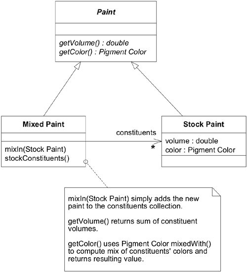
이 모델은 도메인을 더 많이 포착하고 전달한다. 불변식과 사후 조건이 상식에 부합하므로 유지보수하고 사용하기가 더 쉬워진다.
의도를 드러내는 인터페이스(INTENTION-REVEALING INTERFACES)의 소통 능력이 부수 효과 없는 함수(SIDE-EFFECT-FREE FUNCTIONS) 및 어설션(ASSERTIONS)이 제공하는 예측 가능성과 결합되면, 캡슐화와 추상화가 안전해진다.
재조합 가능한 요소의 다음 구성 요소는 효과적인 분해(decomposition)다. . . .
개념적 윤곽(Conceptual Contours)
사람들은 유연한 조합을 허용하기 위해 기능을 잘게 쪼개기도 하고, 복잡성을 캡슐화하기 위해 크게 뭉치기도 한다. 또 어떤 때는 모든 클래스와 연산을 비슷한 규모로 맞추며 일관된 입도(granularity)를 추구하기도 한다. 이는 일반적인 규칙으로는 잘 작동하지 않는 지나친 단순화다. 하지만 이러한 시도들은 근본적인 문제의식에서 비롯된 것이다.
모델이나 설계의 요소들이 거대한 단일 구조(monolithic construct) 안에 파묻혀 있으면, 그 기능이 중복된다. 외부 인터페이스는 클라이언트가 신경 쓸 만한 모든 것을 말해주지 못한다. 서로 다른 개념들이 뒤섞여 있어 의미를 이해하기도 어렵다.
반면에 클래스와 메서드를 지나치게 잘게 나누면 클라이언트를 불필요하게 복잡하게 만들어, 클라이언트 객체가 작은 조각들이 어떻게 맞물리는지 일일이 이해하도록 강요한다. 더 나쁜 점은 개념 자체가 완전히 사라질 수 있다는 것이다. 우라늄 원자의 절반은 우라늄이 아니다. 그리고 물론 중요한 것은 단순히 알갱이의 크기가 아니라, 결이 정확히 어디로 흐르는가다.
요리책 같은 획일적인 규칙은 통하지 않는다. 하지만 대부분의 도메인 깊은 곳에는 논리적 일관성이 존재한다. 그렇지 않다면 해당 영역에서 제대로 작동할 수 없을 것이기 때문이다. 그렇다고 해서 도메인이 완벽히 일관적이라는 뜻은 아니며, 사람들이 도메인에 대해 이야기하는 방식도 결코 일관적이지 않다. 하지만 어딘가에는 조리(rhyme and reason)가 있으며, 그렇지 않다면 모델링 자체가 무의미할 것이다. 이러한 기저의 일관성 때문에, 도메인의 일부와 공명하는 모델을 찾으면 나중에 발견하게 되는 다른 부분들과도 일관될 가능성이 높아진다. 때로는 새로 발견한 사실에 모델이 쉽게 적응하지 못하기도 하는데, 이 경우 우리는 더 깊은 통찰을 향해 리팩터링하고 다음 발견에도 부합하기를 기대한다.
이것이 바로 반복적인 리팩터링이 결국 유연함으로 이어지는 이유 중 하나다. 코드가 새롭게 이해된 개념이나 요구사항에 적응해 나가면서 개념적 윤곽(CONCEPTUAL CONTOURS)이 드러난다.
높은 응집도(high cohesion)와 낮은 결합도(low coupling)라는 두 가지 기본 원칙은 개별 메서드에서부터 클래스, 모듈(MODULES), 그리고 대규모 구조(16장 참조)에 이르기까지 모든 규모의 설계에서 역할을 한다. 이 두 원칙은 코드뿐만 아니라 개념에도 똑같이 적용된다. 이를 기계적인 관점으로만 바라보는 우를 범하지 않으려면, 도메인에 대한 직관과 자주 대조하며 기술적 사고를 조율해야 한다. 결정을 내릴 때마다 스스로에게 물어보라. “이것은 현재 모델과 코드의 특정 관계에 기반한 임시방편인가, 아니면 기저 도메인의 어떤 윤곽을 반영한 것인가?”
개념적으로 의미 있는 기능 단위를 찾으면, 그 결과로 나오는 설계는 유연하면서도 이해하기 쉬워진다. 예를 들어, 두 객체의 “덧셈”이 도메인에서 일관된 의미를 갖는다면 그 수준에서 메서드를 구현하라. add()를 두 단계로 쪼개지 마라. 같은 연산 안에서 다음 단계로까지 넘어가지도 마라. 조금 더 큰 규모에서 보면, 각 객체는 하나의 완전한 개념, 즉 “완전한 값(WHOLE VALUE)”이어야 한다.11^
12^ 워드 커닝햄(Ward Cunningham)의 WHOLE VALUE 패턴.
마찬가지로, 어떤 도메인에나 소프트웨어가 섬기는 사용자들에게는 세부 사항이 중요하지 않은 영역이 존재한다. 우리의 가상 페인트 혼합 애플리케이션 사용자들은 빨간색 안료나 파란색 안료를 직접 넣지 않는다. 그들은 세 가지 안료를 모두 포함하는 완성된 페인트를 조합한다. 분해하거나 재배열할 필요가 없는 것들을 한데 묶어 두면 복잡함이 줄어들고, 실제로 재조합될 요소들을 파악하기가 쉬워진다. 만약 사용자의 물리적 장비가 개별 안료를 추가할 수 있게 되어 있다면, 도메인이 달라졌을 것이고 개별 안료가 직접 조작될 수도 있을 것이다. 페인트 화학자라면 훨씬 더 세밀한 제어가 필요할 것이고, 이는 완전히 다른 분석을 수반하여 페인트 혼합에 쓰이는 추상화된 안료 색상보다 훨씬 더 상세한 페인트 구성 모델을 만들어 낼 것이다. 하지만 페인트 혼합 애플리케이션 프로젝트에 참여하는 사람들에게는 그러한 세부 사항이 전혀 무관하다.
따라서:
도메인의 중요한 구분에 대한 직관을 고려하여, 설계 요소(연산, 인터페이스, 클래스, 그리고 애그리게이트(AGGREGATES))를 응집력 있는 단위로 분해하라. 연속적인 리팩터링을 거치면서 변화의 축과 안정성의 축을 관찰하고, 이러한 전단 패턴(shearing patterns)을 설명해 주는 기저의 개념적 윤곽(CONCEPTUAL CONTOURS)을 찾아라. 모델을 애초에 하나의 실행 가능한 지식 영역으로 만들어 주는 도메인의 일관된 측면에 맞춰 정렬하라.
목표는 유비쿼터스 언어(UBIQUITOUS LANGUAGE)로 합리적인 문장을 만들 수 있도록 논리적으로 결합되는 단순한 인터페이스 집합을 얻는 것이며, 동시에 무관한 선택지들로 인한 주의 분산과 유지보수 부담을 없애는 것이다. 이는 전형적으로 리팩터링의 산물이지, 처음부터 만들어 내기는 어렵다. 또한 기술 중심적인 리팩터링에서는 결코 나타나지 않을 수 있으며, 더 깊은 통찰을 향한 리팩터링을 통해서만 드러난다.
설계가 개념적 윤곽(CONCEPTUAL CONTOURS)을 따르더라도 수정과 리팩터링은 여전히 필요하다. 연속적인 리팩터링이 모델의 여러 광범위한 개념을 뒤흔들지 않고 국소적으로 이루어지는 경향을 보인다면, 이는 모델이 도메인에 잘 들어맞는다는 지표다. 반대로 객체와 메서드의 구성을 대대적으로 변경해야 하는 요구사항을 마주했다면, 그것은 하나의 신호다. 도메인에 대한 우리의 이해를 다듬어야 한다는 뜻이다. 이는 모델을 심화하고 설계를 더 유연하게 만들 기회다.
예제
발생액(Accrual)의 윤곽
9장에서는 회계 개념에 대한 더 깊은 통찰을 바탕으로 대출 추적 시스템을 리팩터링했다.
그림 10.11.
새 모델은 이전 모델보다 객체를 단 하나만 더 포함하고 있었지만, 책임의 분할 방식은 크게 달라졌다.
이전에는 Calculator 클래스 내부의 조건 분기 로직으로 처리되던 일정(Schedules)들이 수수료와 이자의 서로 다른 유형에 따른 개별 클래스들로 분리되었다. 반면에 이전에는 분리되어 있던 수수료 납부와 이자 납부는 하나로 통합되었다.
새롭게 명시적으로 드러난 개념들의 공명과 Accrual Schedule 계층 구조의 응집력 덕분에, 개발자는 이 모델이 도메인의 개념적 윤곽(CONCEPTUAL CONTOURS)을 더 잘 따르고 있다고 판단했다.
그림 10.12. 이 모델은 새로운 종류의 발생 일정(Accrual Schedule) 추가를 수용한다.

개발자가 확실하게 예측할 수 있었던 한 가지 변경 사항은 새로운 발생 일정(Accrual Schedules)의 추가였다. 그 요구사항들은 이미 대기 중이었다. 그래서 기존 기능을 더 명확하고 단순하게 만드는 것에 더해, 그녀는 새로운 일정을 쉽게 도입할 수 있는 모델을 선택했다. 하지만 그녀는 애플리케이션과 비즈니스가 진화함에 따라 도메인 설계가 변화하고 성장하는 데 도움이 될 개념적 윤곽(CONCEPTUAL CONTOUR)을 찾았을까? 설계가 예측하지 못한 변화를 얼마나 잘 감당할지에 대한 보장은 없지만, 그녀는 그 가능성을 높였다고 생각했다.
예기치 못한 변경
프로젝트가 진행되면서, 조기 납부와 연체 납부를 처리하기 위한 상세 규칙이 필요하다는 요구사항이 등장했다. 문제를 살펴보던 개발자는 이자 납부와 수수료 납부에 사실상 동일한 규칙이 적용된다는 사실을 알고 반가워했다. 이는 새로운 모델 요소들이 단일한 Payment 클래스에 자연스럽게 연결될 수 있음을 의미했다.
그림 10.13.
이전 설계였다면 두 개의 Payment History 클래스 사이에 중복이 강제되었을 것이다. (이러한 어려움이 Payment 클래스를 공유해야 한다는 통찰을 촉발하여, 다른 경로를 통해 유사한 모델로 이어졌을 수도 있다.) 이러한 확장의 용이함은 그녀가 변화를 미리 예측했기 때문에 생긴 것이 아니다. 상상 가능한 모든 변화를 수용할 수 있을 만큼 다재다능한 설계를 만들었기 때문도 아니다. 그것은 이전 리팩터링에서 설계가 도메인의 기저 개념과 정렬되었기 때문에 일어난 일이다.
의도를 드러내는 인터페이스(INTENTION-REVEALING INTERFACES)는 클라이언트가 객체를 단순한 메커니즘이 아닌 의미의 단위로 표현할 수 있게 해준다. 부수 효과 없는 함수(SIDE-EFFECT-FREE FUNCTIONS)와 어설션(ASSERTIONS)은 그 단위들을 안전하게 사용하고 복잡한 조합을 만들 수 있게 한다. 개념적 윤곽(CONCEPTUAL CONTOURS)의 등장은 모델의 일부를 안정화하고 단위들을 더 직관적으로 사용하고 결합할 수 있게 만든다.
그럼에도 상호의존성 때문에 한 번에 너무 많은 것을 생각해야 할 때는 여전히 개념적 과부하에 빠질 수 있다. . . .
독립형 클래스(Standalone Classes)
상호의존성은 모델과 설계를 이해하기 어렵게 만든다. 또한 테스트하고 유지보수하기도 어렵게 만든다. 게다가 상호의존성은 쉽게 쌓인다.
당연히 모든 연관(association)은 하나의 의존성이며, 어떤 클래스를 이해하려면 그것이 연결된 대상도 이해해야 한다. 연결된 대상은 또 다른 대상들에 연결되어 있을 것이고, 그것들 역시 이해해야 한다. 모든 메서드의 모든 인자 타입 또한 의존성이다. 반환값도 마찬가지다.
의존성이 하나면 두 클래스와 그 관계의 본질을 동시에 생각해야 한다. 의존성이 둘이면 세 클래스 각각과, 클래스와 각 대상 간의 관계, 그리고 그 대상들끼리 맺고 있을지 모르는 관계까지 모두 생각해야 한다. 그 대상들이 다시 의존성을 갖고 있다면 그것들도 신경 써야 한다. 의존성이 셋이 되면 . . . 눈덩이처럼 불어난다.
모듈(MODULES)과 애그리게이트(AGGREGATES)는 모두 상호의존성의 그물망을 제한하기 위한 것이다. 응집도가 높은 서브도메인을 모듈(MODULE)로 떼어내면 객체 집합이 시스템의 나머지 부분과 분리되어, 상호 관련된 개념의 수가 유한해진다. 하지만 모듈(MODULE) 내부에서도 의존성을 통제하려는 거의 광적인 집념이 없다면 생각해야 할 것이 여전히 너무 많아질 수 있다.
모듈(MODULE) 내부에서조차 의존성이 추가될수록 설계를 해석하는 난이도는 급격히 높아진다. 이는 정신적 과부하를 가중시켜 개발자가 감당할 수 있는 설계 복잡도의 한계를 낮춘다. 명시적인 참조보다 암묵적인 개념이 이러한 부담에 훨씬 더 크게 기여한다.
정제된 모델은 개념들 사이에 남은 모든 연결이 그 개념들의 의미에 본질적인 무언가를 나타낼 때까지 증류된다. 중요한 부분집합에서는 의존성의 수를 0으로 줄일 수도 있으며, 그 결과 몇 가지 기본 타입(primitive)과 기본 라이브러리 개념만으로 그 자체로서 완전히 이해할 수 있는 클래스가 만들어진다.
모든 프로그래밍 환경에는 항상 머릿속에 자리 잡고 있는 몇 가지 기본 요소들이 있다. 예를 들어 Java 개발에서는 기본 타입과 몇몇 표준 라이브러리가 숫자, 문자열, 컬렉션 같은 기본 요소를 제공한다. 실질적으로 “정수(integer)”는 지적 부담을 더하지 않는다. 그 외에 객체를 이해하기 위해 머릿속에 함께 담아두어야 하는 추가적인 개념은 모두 정신적 과부하에 기여한다.
인식했든 못 했든 암묵적인 개념은 명시적인 참조만큼이나 부담이 된다. 정수와 문자열 같은 기본 값에 대한 의존성은 대체로 무시할 수 있지만, 그것들이 무엇을 나타내는지까지는 무시할 수 없다. 예를 들어, 첫 번째 페인트 혼합 예제에서 Paint 객체는 빨강, 노랑, 파랑 색상 값을 나타내는 세 개의 public 정수를 가지고 있었다. Pigment Color 객체를 만들었다고 해서 관련된 개념의 수나 의존성이 늘어난 것은 아니다. 오히려 이미 거기에 있던 개념들을 더 명시적이고 이해하기 쉽게 만들었다. 반면에 Collection의 size() 연산은 단순히 개수, 즉 정수의 기본적인 의미를 담은 int를 반환하므로 새로운 개념이 암시되지 않는다.
객체 뒤에 있는 개념에 본질적이라는 것이 증명되기 전까지는 모든 의존성을 의심해야 한다. 이러한 면밀한 검토는 모델 개념 자체를 분해하는 것에서 시작한다. 그다음에는 각각의 연관과 연산에 주의를 기울여야 한다. 모델과 설계상의 선택을 통해 의존성을 깎아낼 수 있으며, 종종 0으로 만들 수도 있다.
낮은 결합도(low coupling)는 객체 설계의 기본이다. 할 수 있다면 끝까지 밀고 나가라. 그림에서 다른 모든 개념을 제거하라. 그러면 클래스는 완전히 독립적(self-contained)이 되어 그 자체만으로 연구하고 이해할 수 있다. 이러한 독립적인 클래스가 하나씩 생길 때마다 모듈(MODULE)을 이해하는 부담이 크게 줄어든다.
같은 모듈 내의 다른 클래스에 대한 의존성은 모듈 외부에 대한 의존성보다 해가 덜하다. 마찬가지로, 두 객체가 본래 강하게 결합되어 있을 때는 같은 쌍을 다루는 여러 연산이 오히려 관계의 본질을 명확하게 해줄 수 있다. 목표는 모든 의존성을 제거하는 것이 아니라, 본질적이지 않은 모든 의존성을 제거하는 것이다. 모든 의존성을 제거할 수 없더라도, 하나를 제거할 때마다 개발자는 남은 개념적 의존성에 더 집중할 수 있는 여유를 얻는다.
가장 복잡한 계산은 독립형 클래스(STANDALONE CLASSES)로 분리해 내려고 노력하라. 아마도 연결이 많은 클래스가 보유하는 값 객체(VALUE OBJECTS)로 모델링함으로써 이를 달성할 수 있을 것이다.
페인트의 개념은 색상의 개념과 근본적으로 관련이 있다. 하지만 색상은, 심지어 안료(pigment)의 색상조차도 페인트 없이 고찰할 수 있다. 이 두 개념을 명시적으로 만들고 관계를 증류함으로써, 남은 단방향 연관은 중요한 의미를 전달하게 되며, 계산 복잡성의 대부분이 놓여 있는 Pigment Color 클래스는 단독으로 연구하고 테스트할 수 있게 된다.
낮은 결합도는 개념적 과부하를 줄이는 기본적인 방법이다. 독립형 클래스(STANDALONE CLASS)는 낮은 결합도의 극단적인 형태다.
의존성을 제거한다는 것이 모든 것을 무작정 기본 타입(primitive)으로 환원하여 모델을 빈약하게 만드는 것을 의미해서는 안 된다. 이 장의 마지막 패턴인 연산의 닫힘(CLOSURE OF OPERATIONS)은 풍부한 인터페이스를 유지하면서도 의존성을 줄이는 기법의 예다. . . .
연산의 닫힘(Closure of Operations)
두 실수를 취해 서로 곱하면 또 다른 실수를 얻는다. [실수는 모든 유리수와 모든 무리수다.] 이는 항상 참이므로, 실수는 “곱셈 연산에 대해 닫혀 있다(closed under the operation of multiplication)”고 말한다. 즉, 집합에서 벗어날 방법이 없다. 집합의 임의의 두 원소를 결합하면 그 결과 역시 집합에 포함된다. —The Math Forum, Drexel University
물론 의존성은 존재할 것이며, 그 의존성이 개념에 본질적인 것이라면 나쁜 일이 아니다. 인터페이스를 기본 타입만 다루도록 깎아내리면 인터페이스가 빈약해질 수 있다. 하지만 수많은 불필요한 의존성, 심지어 온전한 개념 전체가 인터페이스에서 도입되곤 한다.
대부분의 흥미로운 객체는 결국 기본 타입만으로는 특징지을 수 없는 일들을 수행하게 된다.
정제된 설계에서 흔히 볼 수 있는 또 다른 관행은 내가 “연산의 닫힘(CLOSURE OF OPERATIONS)”이라 부르는 것이다. 이 이름은 개념 체계 중 가장 정제된 수학에서 유래했다. 1 + 1 = 2. 덧셈 연산은 실수 집합에 대해 닫혀 있다. 수학자들은 불필요한 개념을 끌어들이지 않으려 광적으로 노력하며, 닫힘(closure)이라는 속성은 다른 개념을 개입시키지 않고도 연산을 정의할 수 있는 방법을 제공한다. 우리는 수학의 정교함에 너무 익숙해져서 이 작은 기법들이 얼마나 강력한지 깨닫기 어려울 수 있다. 하지만 이 기법은 소프트웨어 설계에서도 광범위하게 사용된다. XSLT의 기본 용도는 하나의 XML 문서를 또 다른 XML 문서로 변환하는 것이다. 이러한 XSLT 연산은 XML 문서 집합에 대해 닫혀 있다. 닫힘이라는 속성은 연산의 해석을 엄청나게 단순화하며, 닫힌 연산들을 연쇄적으로 연결하거나 결합하는 것도 쉽게 떠올릴 수 있게 해준다.
따라서:
적절한 곳에서는 반환 타입이 인자(들)의 타입과 같은 연산을 정의하라. 구현체(implementer)가 계산에 사용되는 상태를 가지고 있다면, 그 구현체는 사실상 연산의 인자이므로 인자(들)와 반환값이 구현체와 같은 타입이어야 한다. 이러한 연산은 해당 타입의 인스턴스 집합에 대해 닫혀 있다. 닫힌 연산은 다른 개념에 대한 의존성을 전혀 도입하지 않으면서도 고수준의 인터페이스를 제공한다.
이 패턴은 값 객체(VALUE OBJECT)의 연산에 가장 자주 적용된다. 엔티티(ENTITY)의 생명주기는 도메인에서 의미를 가지기 때문에, 질문에 답하기 위해 새로운 엔티티를 불쑥 만들어 낼 수는 없다. 물론 엔티티(ENTITY) 타입에 대해 닫혀 있는 연산도 있다. Employee 객체에 상사(supervisor)를 물어 또 다른 Employee를 돌려받을 수는 있다. 하지만 일반적으로 엔티티(ENTITIES)는 계산의 결과가 되기 쉬운 개념이 아니다. 따라서 대체로 이 패턴은 값 객체(VALUE OBJECTS)에서 찾아볼 수 있는 기회다.
연산은 추상 타입에 대해 닫혀 있을 수도 있으며, 이 경우 구체적인 인자들은 서로 다른 구상 클래스일 수 있다. 결국 덧셈은 유리수이거나 무리수일 수 있는 실수에 대해 닫혀 있다.
실험을 하면서 상호의존성을 줄이고 응집도를 높일 방법을 찾다 보면, 때로 이 패턴에 절반쯤 도달하기도 한다. 인자가 구현체와 일치하지만 반환 타입이 다르거나, 반환 타입이 수신자(receiver)와 일치하지만 인자가 다른 경우다. 이러한 연산은 닫혀 있지는 않지만, 닫힘(CLOSURE)이 주는 이점 중 일부를 제공한다. 추가되는 타입이 기본 타입이나 기본 라이브러리 클래스일 때는, 닫힘(CLOSURE)과 거의 맞먹을 정도로 마음을 자유롭게 해준다.
앞선 예제에서 Pigment Color의 mixedWith() 연산은 Pigment Color에 대해 닫혀 있었으며, 이 책 전반에 걸쳐 여러 다른 예제들이 흩어져 있다. 진정한 닫힘(CLOSURE)에 도달하지 못하더라도 이 아이디어가 얼마나 유용할 수 있는지 보여주는 예가 여기에 있다.
예제
컬렉션에서 선택하기
Java에서 Collection으로부터 요소의 부분집합을 선택하고 싶다면, Iterator를 요청한다. 그런 다음 요소들을 순회하며 각각을 검사하고, 아마도 일치하는 것들을 새로운 Collection에 누적할 것이다.
Set employees = (some Set of Employee objects);
Set lowPaidEmployees = new HashSet();
Iterator it = employees.iterator();
while (it.hasNext()) {
Employee anEmployee = it.next();
if (anEmployee.salary() < 40000)
lowPaidEmployees.add(anEmployee);
}개념적으로 나는 집합의 부분집합을 선택했을 뿐이다. 그런데 왜 Iterator라는 추가 개념과 그 모든 기계적인 복잡성이 필요하단 말인가? Smalltalk에서라면 검사 조건을 인자로 넘겨 Collection의 “select” 연산을 호출할 것이다. 반환값은 검사를 통과한 요소들만 담긴 새로운 Collection이 될 것이다.
employees := (some Set of Employee objects).
lowPaidEmployees := employees select:
[:anEmployee | anEmployee salary < 40000].Smalltalk의 Collection들은 여러 구상 클래스가 될 수 있는 파생된 Collection을 반환하는 이러한 함수(FUNCTIONS)들을 추가로 제공한다. 이 연산들은 “블록(block)”을 인자로 받기 때문에 닫혀 있지는 않다. 하지만 블록은 Smalltalk의 기본 라이브러리 타입이므로 개발자의 정신적 부담을 늘리지 않는다. 반환값이 구현체와 일치하므로, 일련의 필터처럼 줄줄이 연결할 수 있다. 작성하기도 쉽고 읽기도 쉽다. 부분집합을 선택하는 문제와 무관한 불필요한 개념을 전혀 도입하지 않는다.
이 장에서 제시한 패턴들은 일반적인 설계 스타일과 설계에 대해 사고하는 방식을 보여준다. 소프트웨어를 명백하고, 예측 가능하며, 소통 가능하게 만들면 추상화와 캡슐화가 효과적이 된다. 모델은 객체가 사용하고 이해하기 단순하면서도 여전히 풍부하고 고수준인 인터페이스를 갖도록 분해될 수 있다.
이러한 기법들은 적용하는 데, 그리고 때로는 클라이언트를 작성하는 데조차 상당히 고도의 설계 기술을 요구한다. 모델 주도 설계(MODEL-DRIVEN DESIGN)의 유용성은 상세 설계와 구현 결정의 품질에 민감하며, 혼란에 빠진 개발자 몇 명만 있어도 프로젝트가 목표에서 벗어날 수 있다.
그렇긴 하지만, 모델링과 설계 기술을 연마하고자 하는 팀에게 이러한 패턴과 그 이면에 담긴 사고방식은 개발자들이 복잡한 소프트웨어를 만들기 위해 계속해서 다듬고 재작업할 수 있는 소프트웨어를 선사한다.
선언적 설계(Declarative Design)
어설션(ASSERTIONS)은 비교적 비공식적인 테스트 방식을 사용하더라도 훨씬 더 나은 설계로 이끌 수 있다. 하지만 손으로 작성한 소프트웨어에는 진정한 보장이란 있을 수 없다. 어설션(ASSERTIONS)을 우회하는 한 가지 방법만 꼽자면, 코드에 명시적으로 배제되지 않은 추가적인 부수 효과가 있을 수 있다. 아무리 모델 주도(MODEL-DRIVEN)로 설계하더라도, 우리는 여전히 개념적 상호작용의 효과를 만들어 내기 위해 절차를 작성하게 된다. 그리고 의미나 동작을 실질적으로 더하지도 않는 상용구 코드(boilerplate code)를 작성하는 데 너무 많은 시간을 허비한다. 이는 지루하고 오류가 발생하기 쉬우며, 방대한 분량 때문에 모델의 의미를 가린다. (어떤 언어들은 다른 언어들보다 낫지만, 모든 언어가 우리에게 많은 고된 단순 작업을 요구한다.) 의도를 드러내는 인터페이스(INTENTION-REVEALING INTERFACES)와 이 장의 다른 패턴들이 도움을 주기는 하지만, 전통적인 객체지향 프로그램에 형식적인 엄밀함을 부여할 수는 없다.
이것이 선언적 설계(declarative design)의 배경이 되는 동기 중 일부다. 이 용어는 사람마다 여러 가지 의미로 쓰이지만, 대개 프로그램이나 프로그램의 일부를 일종의 실행 가능한 명세(executable specification)로 작성하는 방법을 가리킨다. 속성에 대한 매우 정밀한 기술이 실제로 소프트웨어를 제어한다. 다양한 형태에서 이는 리플렉션(reflection) 메커니즘을 통해 이루어지거나, 컴파일 타임에 코드 생성(선언에 기반해 전통적인 코드를 자동으로 생성)을 통해 이루어질 수 있다. 이 접근법을 사용하면 다른 개발자가 선언을 액면 그대로 받아들일 수 있다. 이는 절대적인 보장이다.
모델 속성의 선언으로부터 실행 중인 프로그램을 생성해 내는 것은 모델 주도 설계(MODEL-DRIVEN DESIGN)의 일종의 성배(Holy Grail)이지만, 실제로는 함정이 있다. 예를 들어, 내가 여러 번 겪었던 두 가지 특정한 문제는 다음과 같다.
- 필요한 모든 것을 표현하기에는 선언 언어의 표현력이 부족하지만, 자동화된 부분을 넘어서 소프트웨어를 확장하기가 매우 어렵게 만드는 프레임워크
- 생성된 코드를 손으로 작성한 코드에 병합할 때 재생성을 매우 파괴적으로 만들어, 반복 주기를 마비시키는 코드 생성 기법
선언적 설계를 시도하다 보면 의도치 않게 모델과 애플리케이션이 빈약해지는(dumbing-down) 결과를 낳는 경우가 많다. 프레임워크의 제약에 갇힌 개발자들이 어쨌든 결과물을 납품하기 위해 설계의 우선순위를 급히 타협(design triage)하기 때문이다.
추론 엔진(inference engine)과 규칙 베이스(rule base)를 사용하는 규칙 기반 프로그래밍은 선언적 설계에 대한 또 하나의 유망한 접근법이다. 안타깝게도 미묘한 문제들이 이러한 의도를 훼손할 수 있다.
규칙 기반 프로그램은 원칙적으로 선언적이지만, 대부분의 시스템에는 성능 튜닝을 위해 추가된 “제어 술어(control predicates)”가 존재한다. 이 제어 코드는 부수 효과를 유발하여, 동작이 더 이상 선언된 규칙에 의해서만 완전히 결정되지 않게 만든다. 규칙을 추가하거나 제거하거나 순서를 바꾸면 예기치 않은 잘못된 결과가 발생할 수 있다. 따라서 논리 프로그래머도 객체지향 프로그래머와 마찬가지로 코드의 효과가 명백하게 유지되도록 주의를 기울여야 한다.
많은 선언적 접근법은 개발자가 의도적이든 비의도적이든 그것을 우회할 경우 훼손될 수 있다. 이는 시스템이 사용하기 어렵거나 지나치게 제한적일 때 발생하기 쉽다. 선언적 프로그램의 이점을 얻으려면 모두가 프레임워크의 규칙을 따라야 한다.
내가 보기에 가장 큰 가치가 전달되었던 경우는, 영속성(persistence)이나 객체-관계 매핑(ORM)처럼 특히 지루하고 오류가 발생하기 쉬운 설계 측면을 좁은 범위의 프레임워크가 자동화했을 때였다. 이러한 프레임워크 중 최고의 것들은 개발자에게 설계할 완전한 자유를 남겨두면서도 고된 잡일에서 벗어나게 해준다.
도메인 특화 언어(Domain-Specific Languages)
때때로 선언적이기도 한 흥미로운 접근법은 도메인 특화 언어(domain-specific language)다. 이 스타일에서는 클라이언트 코드가 특정 도메인의 특정 모델에 맞춰진 프로그래밍 언어로 작성된다. 예를 들어, 해운 시스템을 위한 언어에는 cargo와 route 같은 용어와 함께 이들을 연관 짓는 문법이 포함될 수 있다. 그런 다음 이 프로그램은 대개 전통적인 객체지향 언어로 컴파일되며, 그곳에서는 클래스 라이브러리가 언어 속 용어들의 구현을 제공한다.
이러한 언어에서 프로그램은 극도로 높은 표현력을 지닐 수 있으며, 유비쿼터스 언어(UBIQUITOUS LANGUAGE)와 가장 강력한 연결을 맺는다. 이는 흥미로운 개념이지만, 내가 보아 온 객체지향 기술 기반의 접근법들에서는 도메인 특화 언어 역시 단점을 지니고 있었다.
모델을 정제하려면 개발자가 언어를 수정할 수 있어야 한다. 여기에는 기반 클래스 라이브러리를 수정하는 것뿐만 아니라 문법 선언 및 기타 언어 해석 기능을 수정하는 작업이 포함될 수 있다. 나는 첨단 기술과 설계 개념을 배우는 데 전적으로 찬성하지만, 특정 팀의 역량과 미래의 유지보수 팀이 갖출 법한 역량을 냉정하게 평가해야 한다. 또한, 애플리케이션과 모델이 동일한 언어로 구현됨으로써 얻는 매끄러움(seamlessness)의 가치도 있다. 또 다른 단점은 개정된 모델 및 그와 연관된 도메인 특화 언어에 맞게 클라이언트 코드를 리팩터링하기가 어려울 수 있다는 점이다. 물론 누군가 이 리팩터링 문제에 대한 기술적 해결책을 내놓을 수도 있을 것이다.
바닥부터 다시(From the Ground Up) 다른 패러다임은 객체보다 도메인 특화 언어를 더 잘 다룰 수 있다. “함수형 프로그래밍” 계열을 대표하는 Scheme 프로그래밍 언어에서는 매우 유사한 방식이 표준 프로그래밍 스타일의 일부이므로, 시스템을 양분하지 않고도 도메인 특화 언어의 표현력을 만들어 낼 수 있다.
이 기법은 매우 성숙한 모델에서, 아마도 클라이언트 코드를 다른 팀이 작성하는 경우에 가장 유용할 것이다. 일반적으로 이러한 구조는 고도의 기술력을 갖춘 프레임워크 구축자와 기술적으로 미숙한 애플리케이션 구축자라는 해로운 이분법으로 이어지곤 하지만, 반드시 그래야만 하는 것은 아니다.
Scheme 프로그래밍 언어에서는 매우 유사한 방식이 표준 프로그래밍 스타일의 일부이므로, 시스템을 양분하지 않고도 도메인 특화 언어의 표현력을 만들어 낼 수 있다.
선언적 스타일의 설계(A Declarative Style of Design)
설계에 의도를 드러내는 인터페이스(INTENTION-REVEALING INTERFACES), 부수 효과 없는 함수(SIDE-EFFECT-FREE FUNCTIONS), 그리고 어설션(ASSERTIONS)이 갖추어지면, 선언적 영역의 문턱에 들어서게 된다. 의미를 전달하고, 명확히 규정되거나 명백한 효과를 가지며, 혹은 관측 가능한 효과가 전혀 없는 조합 가능한 요소들을 확보하고 나면, 선언적 설계가 주는 많은 이점을 얻을 수 있다.
유연한 설계(supple design)는 클라이언트 코드가 선언적 스타일의 설계를 사용할 수 있게 해준다. 이를 설명하기 위해, 다음 절에서는 이 장의 패턴들 중 일부를 하나로 모아 명세(SPECIFICATION)를 더 유연하고 선언적으로 만들어 볼 것이다.
선언적 스타일로 명세(SPECIFICATION) 확장하기
9장에서는 명세(SPECIFICATION)의 기본 개념과 그것이 프로그램에서 수행할 수 있는 역할, 그리고 구현에 수반되는 사항들을 대략적으로 다루었다. 이제 복잡한 규칙이 있는 상황에서 매우 유용할 수 있는 몇 가지 부가 기능(bells and whistles)을 살펴보자.
명세(SPECIFICATION)는 이미 확립된 형식 체계인 술어(predicate)를 응용한 것이다. 술어에는 우리가 선택적으로 끌어다 쓸 수 있는 다른 유용한 속성들이 있다.
논리 연산자를 사용하여 명세(SPECIFICATION) 결합하기
명세(SPECIFICATIONS)를 사용하다 보면 금방 이들을 결합하고 싶은 상황을 마주하게 된다. 방금 언급했듯이 명세(SPECIFICATION)는 술어의 한 예이며, 술어는 “AND”, “OR”, “NOT” 연산으로 결합하고 수정할 수 있다. 이러한 논리 연산은 술어에 대해 닫혀 있으므로, 명세(SPECIFICATION)의 조합은 연산의 닫힘(CLOSURE OF OPERATIONS)을 보여줄 것이다.
명세(SPECIFICATIONS)에 상당한 수준의 일반화된 기능이 구축됨에 따라, 모든 종류의 명세(SPECIFICATIONS)에 사용할 수 있는 추상 클래스나 인터페이스를 만드는 것이 매우 유용해진다. 이는 인자의 타입을 어떤 고수준의 추상 클래스로 지정하는 것을 의미한다.
public interface Specification {
boolean isSatisfiedBy(Object candidate);
}이러한 추상화는 메서드 시작 부분에 보호 절(guard clause)을 요구하지만, 그 외에는 기능에 영향을 미치지 않는다. 예를 들어, (9장 236쪽 예제의) 컨테이너 명세(Container Specification)는 다음과 같이 수정될 것이다.
public class ContainerSpecification implements Specification {
private ContainerFeature requiredFeature;
public ContainerSpecification(ContainerFeature required) {
requiredFeature = required;
}
boolean isSatisfiedBy(Object candidate){
if (!candidate instanceof Container) return false;
return
(Container)aContainer.getFeatures().contains(requiredFeature);
}
}이제 세 가지 새로운 연산을 추가하여 Specification 인터페이스를 확장해 보자.
public interface Specification {
boolean isSatisfiedBy(Object candidate);
Specification and(Specification other);
Specification or(Specification other);
Specification not();
}일부 컨테이너 명세(Container Specification)는 환기형 컨테이너(ventilated Container)를 요구하도록 구성되었고, 다른 일부는 장갑형 컨테이너(armored Container)를 요구하도록 구성되었던 것을 떠올려 보자. 휘발성과 폭발성을 모두 지닌 화학 물질이라면 아마도 이 두 가지 명세(SPECIFICATION)가 모두 필요할 것이다. 새로운 메서드를 사용하면 이는 손쉽게 구현된다.
Specification ventilated = new ContainerSpecification(VENTILATED);
Specification armored = new ContainerSpecification(ARMORED);
Specification both = ventilated.and(armored);이 선언은 기대하는 속성을 가진 새로운 Specification 객체를 정의한다. 이러한 조합은 이전에는 더 복잡한 컨테이너 명세(Container Specification)를 필요로 했을 것이며, 그럼에도 여전히 특수 목적용에 머물렀을 것이다.
환기형 컨테이너(ventilated Container)의 종류가 하나보다 많다고 가정해 보자. 어떤 품목들은 그중 어느 종류에 포장되는지가 중요하지 않을 수 있다. 어느 유형에나 넣을 수 있는 것이다.
Specification ventilatedType1 =
new ContainerSpecification(VENTILATED_TYPE_1);
Specification ventilatedType2 =
new ContainerSpecification(VENTILATED_TYPE_2);
Specification either = ventilatedType1.or(ventilatedType2);모래를 특수 컨테이너에 보관하는 것이 낭비라고 여겨진다면, 아무런 특수 기능도 없는 “싼(cheap)” 컨테이너를 명세(SPECIFYING)함으로써 이를 금지할 수 있다.
Specification cheap = (ventilated.not()).and(armored.not());이 제약 조건은 9장에서 논의했던 프로토타입 창고 포장기(warehouse packer)의 차선책에 가까운 동작 일부를 방지했을 것이다.
단순한 요소들로부터 복잡한 명세(specification)를 구축할 수 있는 능력은 코드의 표현력을 높여 준다. 이러한 조합은 선언적(declarative) 스타일로 작성된다.
명세(SPECIFICATION)가 어떻게 구현되는지에 따라 이러한 연산자들을 제공하기가 쉬울 수도 있고 어려울 수도 있다. 다음에 나오는 것은 매우 단순한 구현으로, 어떤 상황에서는 비효율적이지만 다른 상황에서는 꽤 실용적이다. 이는 설명을 위한 예제로 의도된 것이다. 다른 어떤 패턴과 마찬가지로, 이를 구현하는 방법은 여러 가지가 있다.
public abstract class AbstractSpecification implements
Specification {
public Specification and(Specification other) {
return new AndSpecification(this, other);
}
public Specification or(Specification other) {
return new OrSpecification(this, other);
}
public Specification not() {
return new NotSpecification(this);
}
}
public class AndSpecification extends AbstractSpecification {
Specification one;
Specification other;
public AndSpecification(Specification x, Specification y) {
one = x;
other = y;
}
public boolean isSatisfiedBy(Object candidate) {
return one.isSatisfiedBy(candidate) &&
other.isSatisfiedBy(candidate);
}
}
public class OrSpecification extends AbstractSpecification {
Specification one;
Specification other;
public OrSpecification(Specification x, Specification y) {
one = x;
other = y;
}
public boolean isSatisfiedBy(Object candidate) {
return one.isSatisfiedBy(candidate) ||
other.isSatisfiedBy(candidate);
}
}
public class NotSpecification extends AbstractSpecification {
Specification wrapped;
public NotSpecification(Specification x) {
wrapped = x;
}
public boolean isSatisfiedBy(Object candidate) {
return !wrapped.isSatisfiedBy(candidate);
}
}그림 10.14. 명세(SPECIFICATION)의 컴포지트(COMPOSITE) 설계

이 코드는 책에서 최대한 읽기 쉽도록 작성되었다. 앞서 말했듯이, 이것이 비효율적인 상황이 있을 수 있다. 그러나 객체 수를 줄이거나 속도를 높이거나, 혹은 특정 프로젝트에 존재하는 특이한 기술들과 호환되도록 하는 다른 구현 선택지들도 가능하다. 중요한 것은 도메인의 핵심 개념을 포착하는 모델과, 그 모델에 충실한 구현이다. 그렇게 하면 성능 문제를 해결할 여지가 많이 남는다.
또한 많은 경우에 이러한 완전한 일반성이 필요하지는 않다. 특히 AND는 다른 연산자들보다 훨씬 더 많이 사용되는 경향이 있으며, 구현 복잡도도 덜 유발하는 경향이 있다. 필요한 것이 그것뿐이라면 AND만 구현하는 것을 두려워하지 마라.
앞서 2장 30쪽의 예제 대화로 거슬러 올라가 보면, 개발자들은 분명히 그들의 명세(SPECIFICATION)에 “충족 여부 판단(satisfied by)” 동작을 구현하지 않았었다. 그 시점까지 명세(SPECIFICATION)는 주문 제작(building to order)에만 사용되었다. 그럼에도 추상화는 온전히 유지되었고, 기능을 추가하는 것은 비교적 쉬웠다. 패턴을 사용한다는 것이 필요하지 않은 기능까지 미리 구축해야 함을 의미하지는 않는다. 개념이 뒤섞이지 않는 한 기능은 나중에 추가할 수 있다.
예제
컴포지트 명세(COMPOSITE SPECIFICATION)의 한 가지 대안 구현
일부 구현 환경은 아주 세분화된(fine-grained) 객체를 잘 수용하지 못한다. 나는 예전에 모든 객체에 객체 ID를 부여하고 이를 추적하기를 고집하는 객체 데이터베이스를 사용하는 프로젝트에 참여한 적이 있다. 각 객체는 메모리 공간과 성능 측면에서 많은 오버헤드를 가졌고, 전체 주소 공간이 제한 요소였다. 나는 도메인 설계의 몇몇 중요한 지점에 명세(SPECIFICATION)를 적용했는데, 이는 좋은 결정이었다고 생각한다. 하지만 이 장에서 설명한 구현의 약간 더 정교한 버전을 사용했는데, 이는 분명히 실수였다. 그 결과 수백만 개의 아주 세분화된 객체가 생겨났고, 이것이 시스템 속도를 떨어뜨리는 원인이 되었다.
다음은 런타임에 해석할 수 있도록 컴포지트 명세(SPECIFICATION)를 논리식을 부호화한 문자열이나 배열로 인코딩하는 대안 구현의 예이다.
(이것을 어떻게 구현할지 바로 떠오르지 않더라도 걱정하지 마라. 중요한 것은 논리 연산자를 가진 명세(SPECIFICATION)를 구현하는 방법이 여러 가지이므로, 단순한 방식이 여러분의 상황에 실용적이지 않더라도 다른 선택지들이 있다는 점을 깨닫는 것이다.)
“Cheap Container”에 대한 명세(SPECIFICATION) 스택 내용: Top | AndSpecificationOperator (FLY WEIGHT) | NotSpecificationOperator (FLY WEIGHT) | Armored | NotSpecificationOperator | Ventilated
후보(candidate)를 검사하고자 할 때는 이 구조를 해석해야 하는데, 각 요소를 하나씩 꺼내어(pop) 평가하거나 연산자가 요구하는 대로 다음 요소를 꺼내는 방식으로 수행할 수 있다. 결국 다음과 같은 식을 얻게 된다.
and(not(armored), not(ventilated))이 설계에는 장점(+)과 단점(–)이 있다.
+ 적은 객체 수
+ 효율적인 메모리 사용
– 더 숙련된 개발자 필요
자신의 상황에 맞는 트레이드오프를 가진 구현을 찾아야 한다. 동일한 패턴과 모델이 매우 다른 구현들의 토대가 될 수 있다.
포섭(Subsumption)
이 마지막 기능은 보통 필요하지 않으며 구현하기도 어려울 수 있지만, 이따금 정말 어려운 문제를 해결해 준다. 또한 명세(SPECIFICATION)의 의미를 명쾌하게 밝혀 주기도 한다.
235쪽 예제에 나왔던 화학 물질 창고 포장기(chemical warehouse packer)를 다시 생각해 보자. 각 화학 물질(Chemical)에는 컨테이너 명세(Container Specification)가 있었고, Packer 서비스(SERVICE)는 드럼(Drum)을 컨테이너(Container)에 배정할 때 이 모든 명세가 충족되도록 보장했음을 떠올려 보자. 모든 것이 순조롭다… 누군가가 규정을 바꾸기 전까지는 말이다.
몇 달마다 새로운 규칙 집합이 발표되는데, 우리 사용자들은 이제 요구 사항이 더 엄격해진 화학 물질 유형의 목록을 생성할 수 있기를 원한다.
물론 새로운 명세(SPECIFICATION)를 적용한 상태에서 재고에 있는 각 드럼(Drum)에 대해 유효성 검사를 실행하고, 더 이상 명세(SPEC)를 충족하지 않는 드럼을 모두 찾아냄으로써 부분적인 답(그리고 아마 사용자들이 역시 원할 법한 답)을 제공할 수도 있다. 이렇게 하면 사용자들은 기존 재고 중 어떤 드럼을 옮겨야 하는지 알 수 있다.
하지만 그들이 요청한 것은 취급 기준이 더 엄격해진 화학 물질의 목록이었다. 어쩌면 지금 당장 창고 내부에 해당 물질이 없을 수도 있고, 우연히 더 엄격한 기준의 컨테이너에 포장되어 있었을 수도 있다. 어느 경우든 방금 설명한 보고서에는 그러한 화학 물질이 나열되지 않을 것이다.
두 명세(SPECIFICATION)를 직접 비교하는 새로운 연산을 도입해 보자.
boolean subsumes(Specification other);더 엄격한 명세(SPEC)는 덜 엄격한 명세를 포섭(subsumes)한다. 즉, 이전의 어떤 요구 사항도 소홀히 하지 않으면서 그 자리를 대신할 수 있다.
그림 10.15. 가솔린 컨테이너에 대한 명세(SPECIFICATION)가 강화되었다.
명세(SPECIFICATION)의 언어로 표현하자면, 새로운 명세(SPEC)를 충족하는 모든 후보는 기존 명세도 함께 충족할 것이므로, 새로운 명세(SPECIFICATION)가 기존 명세(SPECIFICATION)를 포섭(subsume)한다고 말할 수 있다.
이러한 각 명세(SPECIFICATION)를 하나의 술어(predicate)로 본다면, 포섭(subsumption)은 논리적 함의(logical implication)와 동등하다. 관례적인 표기법을 사용하면, AB는 명제 A가 명제 B를 함의함을 뜻하며, 따라서 A가 참이면 B 역시 참이다.
이 논리를 우리의 컨테이너 매칭 요구에 적용해 보자. 명세(SPECIFICATION)가 변경될 때, 제안된 새 명세(SPEC)가 기존 명세의 모든 조건을 충족하는지 알고 싶다.
새 명세(New Spec) 기존 명세(Old Spec)
즉, 새 명세가 참이면 기존 명세도 참이다. 일반적인 방식으로 논리적 함의를 증명하는 것은 매우 어렵지만, 특수한 경우는 쉬울 수 있다. 예를 들어, 특정 매개변수화된 명세(SPEC)들은 자신만의 포섭(subsumption) 규칙을 정의할 수 있다.
public class MinimumAgeSpecification {
int threshold;
public boolean isSatisfiedBy(Person candidate) {
return candidate.getAge() >= threshold;
}
public boolean subsumes(MinimumAgeSpecification other) {
return threshold >= other.getThreshold();
}
}JUnit 테스트에는 다음과 같은 내용이 포함될 수 있다.
drivingAge = new MinimumAgeSpecification(16);
votingAge = new MinimumAgeSpecification(18);
assertTrue(votingAge.subsumes(drivingAge));컨테이너 명세(Container Specification) 문제를 해결하는 데 적합한 또 다른 실용적인 특수 사례는 포섭(subsumption)과 단일 논리 연산자 AND를 결합한 명세(SPECIFICATION) 인터페이스이다.
public interface Specification {
boolean isSatisfiedBy(Object candidate);
Specification and(Specification other);
boolean subsumes(Specification other);
}AND 연산자만으로 함의를 증명하는 것은 간단하다.
A AND B A
또는 좀 더 복잡한 경우에는 다음과 같다.
A AND B AND C A AND B
따라서 컴포지트 명세(Composite Specification)가 “AND”로 함께 묶인 모든 리프 명세(leaf SPECIFICATION)들을 수집할 수 있다면, 우리가 해야 할 일은 포섭하는 명세(SPECIFICATION)가 포섭되는 명세가 가진 모든 리프를 가지고 있는지(그리고 어쩌면 몇 개의 리프를 추가로 더 가지고 있는지), 즉 그 리프들이 다른 명세(SPEC)의 리프 집합의 상위 집합(superset)인지 확인하는 것뿐이다.
public boolean subsumes(Specification other) {
if (other instanceof CompositeSpecification) {
Collection otherLeaves =
(CompositeSpecification) other.leafSpecifications();
Iterator it = otherLeaves.iterator();
while (it.hasNext()) {
if (!leafSpecifications().contains(it.next()))
return false;
}
} else {
if (!leafSpecifications().contains(other))
return false;
}
return true;
}이 상호 작용은 신중하게 선택된 매개변수화된 리프 명세(SPECIFICATION)들과 그 밖의 몇 가지 복잡한 사항들을 비교하도록 개선될 수 있다. 안타깝게도 OR과 NOT이 포함되면 이러한 증명은 훨씬 더 복잡해진다. 대부분의 상황에서는 일부 연산자를 포기하거나 포섭(subsumption)을 포기하는 선택을 함으로써 그러한 복잡성을 피하는 것이 최선이다. 만약 둘 다 필요하다면, 그 이점이 어려움을 정당화할 만큼 충분히 큰지 신중하게 고려하라.
명세(SPECIFICATIONS)에 관한 소크라테스: 모든 인간은 죽는다.
Specification manSpec = new ManSpecification(); Specification mortalSpec = new MortalSpecification(); assert manSpec.subsumes(mortalSpec); 소크라테스는 인간이다.
Man socrates = new Man(); assert manSpec.isSatisfiedBy(socrates); 그러므로 소크라테스는 죽는다.
assert mortalSpec.isSatisfiedBy(socrates);
공략 방향(Angles of Attack)
이 장에서는 코드의 의도를 명확히 하고, 코드를 사용할 때의 결과를 투명하게 드러내며, 모델 요소 간의 결합도를 낮추는 수많은 기법을 살펴보았다. 그렇더라도 이런 종류의 설계는 여전히 어렵다. 거대한 시스템을 두고 무작정 “이걸 유연하게(supple) 만들자”라고 말할 수는 없다. 공략할 대상을 선택해야 한다. 여기서는 크게 두 가지 접근법을 소개한 뒤, 여러 패턴이 어떻게 어우러져 더 큰 설계를 해결하는지 보여 주는 상세한 예제를 살펴보겠다.
서브도메인 떼어 내기(Carve Off Subdomains)
전체 설계를 한꺼번에 다룰 수는 없다. 조금씩 떼어 내며 공략하라. 시스템의 어떤 측면들은 나름의 접근법을 암시하므로, 그런 부분을 분리해 내어 다듬을 수 있다. 모델의 일부를 특수한 수학(specialized math)으로 볼 수 있다면 그 부분을 분리하라. 애플리케이션이 상태 변경을 제한하는 복잡한 규칙을 적용하고 있다면, 이를 별도의 모델이나 규칙을 선언할 수 있는 단순한 프레임워크로 끌어내라. 이렇게 한 단계씩 나아갈 때마다 새로운 모듈(Module)이 깔끔해질 뿐만 아니라, 뒤에 남겨진 부분도 더 작고 명확해진다. 남은 부분의 일부는 특수 수학이나 검증 프레임워크, 혹은 해당 서브도메인이 취하는 어떤 형태로든 이를 기반으로 선언적 스타일로 작성된다.
노력을 여러 곳에 얇게 분산시키는 것보다 한 영역에 큰 효과를 내어 설계의 일부를 진정으로 유연하게(supple) 만드는 편이 훨씬 유용하다. 15장에서는 서브도메인을 선택하고 관리하는 방법을 더 깊이 있게 다룬다.
가능하면 확립된 형식 체계를 활용하라(Draw on Established Formalisms, When You Can)
탄탄한 개념적 프레임워크를 맨바닥에서부터 새로 만들어 내는 일은 매일 할 수 있는 것이 아니다. 때로는 프로젝트가 진행되는 동안 그러한 체계를 발견하고 다듬어 나가기도 한다. 하지만 해당 도메인이나 다른 도메인에 오래전부터 확립된 개념 체계를 가져와 응용할 수 있는 경우가 많으며, 그중 일부는 수 세기에 걸쳐 정제되고 증류되어 온 것들이다. 예를 들어 많은 비즈니스 애플리케이션에는 회계(accounting)가 포함된다. 회계는 깊은 모델과 유연한 설계(Supple Design)에 쉽게 적용할 수 있도록 잘 정립된 엔티티(Entity)와 규칙의 집합을 정의하고 있다.
이처럼 정형화된 개념적 프레임워크는 많지만, 내가 개인적으로 가장 좋아하는 것은 수학이다. 기본적인 산술을 약간 변형해 끌어내는 것이 얼마나 유용할 수 있는지 보면 놀라울 정도다. 많은 도메인 어딘가에는 수학이 숨어 있다. 그것을 찾아내고, 파내어라. 특수한 수학은 깔끔하고 명확한 규칙에 따라 조합할 수 있으며, 사람들도 이해하기 쉽다. 내 과거 경험에서 나온 한 가지 예가 바로 “지분 수학(Shares Math)”이며, 이 예제로 이 장을 마무리하고자 한다.
예제
패턴 통합하기: 지분 수학(Shares Math)
8장에서는 신디케이트론(syndicated loan, 협조융자) 시스템을 구축하는 프로젝트에서 일어난 모델의 획기적 전환(breakthrough)에 대한 이야기를 다루었다. 이제 이 예제에서는 그 프로젝트의 설계와 견줄 만한 설계의 단 한 가지 기능에 초점을 맞추어 자세히 살펴보겠다.
그 애플리케이션의 요구사항 중 하나는 차입자(borrower)가 원금을 상환(principal payment)할 때, 기본적으로 그 금액을 대출에 대한 대주(lender)들의 지분(share)에 따라 비례 배분(prorate)하는 것이었다.
상환금 분배를 위한 초기 설계
리팩터링을 진행하면서 이 코드는 점점 이해하기 쉬워질 것이므로, 이 버전에 너무 얽매이지 말자.
그림 10.16.
public class Loan {
private Map shares;
// 접근자, 생성자 및 아주 단순한 메서드는 제외한다
public Map distributePrincipalPayment(double paymentAmount) {
Map paymentShares = new HashMap();
Map loanShares = getShares();
double total = getAmount();
Iterator it = loanShares.keySet().iterator();
while(it.hasNext()) {
Object owner = it.next();
double initialLoanShareAmount = getShareAmount(owner);
double paymentShareAmount =
initialLoanShareAmount / total * paymentAmount;
Share paymentShare =
new Share(owner, paymentShareAmount);
paymentShares.put(owner, paymentShare);
double newLoanShareAmount =
initialLoanShareAmount - paymentShareAmount;
Share newLoanShare =
new Share(owner, newLoanShareAmount);
loanShares.put(owner, newLoanShare);
}
return paymentShares;
}
public double getAmount() {
Map loanShares = getShares();
double total = 0.0;
Iterator it = loanShares.keySet().iterator();
while(it.hasNext()) {
Share loanShare = (Share) loanShares.get(it.next());
total = total + loanShare.getAmount();
}
return total;
}
}명령과 부수 효과 없는 함수(SIDE-EFFECT-FREE FUNCTIONS) 분리하기
이 설계에는 이미 의도를 드러내는 인터페이스(INTENTION-REVEALING INTERFACES)가 적용되어 있다. 하지만 distributePaymentPrincipal() 메서드는 위험한 일을 하고 있다. 분배할 지분을 계산하는 동시에 Loan을 수정하는 것이다. 조회(query)와 변경자(modifier)를 분리하도록 리팩터링해 보자.
그림 10.17.
public void applyPrincipalPaymentShares(Map paymentShares) {
Map loanShares = getShares();
Iterator it = paymentShares.keySet().iterator();
while(it.hasNext()) {
Object lender = it.next();
Share paymentShare = (Share) paymentShares.get(lender);
Share loanShare = (Share) loanShares.get(lender);
double newLoanShareAmount = loanShare.getAmount() -
paymentShare.getAmount();
Share newLoanShare = new Share(lender, newLoanShareAmount);
loanShares.put(lender, newLoanShare);
}
}
public Map calculatePrincipalPaymentShares(double paymentAmount) {
Map paymentShares = new HashMap();
Map loanShares = getShares();
double total = getAmount();
Iterator it = loanShares.keySet().iterator();
while(it.hasNext()) {
Object lender = it.next();
Share loanShare = (Share) loanShares.get(lender);
double paymentShareAmount =
loanShare.getAmount() / total * paymentAmount;
Share paymentShare = new Share(lender, paymentShareAmount);
paymentShares.put(lender, paymentShare);
}
return paymentShares;
}이제 클라이언트 코드는 다음과 같다.
Map distribution =
aLoan.calculatePrincipalPaymentShares(paymentAmount);
aLoan.applyPrincipalPaymentShares(distribution);나쁘지 않다. 이 함수(FUNCTIONS)들은 많은 복잡성을 의도를 드러내는 인터페이스(INTENTION-REVEALING INTERFACES) 뒤로 캡슐화했다. 하지만 applyDrawdown(), calculateFeePaymentShares() 등을 추가하기 시작하면 코드가 꽤 불어나기 시작한다. 확장이 거듭될수록 코드가 복잡해지고 무거워진다. 이는 설계의 입도(granularity)가 너무 거칠다는 신호일 수 있다. 전통적인 접근법이라면 계산 메서드를 여러 서브루틴으로 쪼개는 것일 테다. 그 역시 나아가는 과정의 좋은 한 걸음이 될 수는 있지만, 우리가 궁극적으로 원하는 것은 그 이면에 있는 개념적 경계를 파악하고 모델을 심화하는 것이다. 이처럼 개념 윤곽에 맞는 입도(CONCEPT-CONTOURING grain)를 지닌 설계의 요소들은 서로 조합하여 필요한 변형을 만들어 낼 수 있다.
암묵적인 개념을 명시적으로 만들기
이제 그 새로운 모델을 탐구해 볼 만한 단서가 충분히 모였다. 이 구현에서 Share 객체들은 수동적이며, 복잡하고 저수준인 방식으로 조작되고 있다. 이는 지분에 관한 규칙과 계산 대부분이 개별 지분이 아니라 지분들의 집합에 적용되기 때문이다. 여기에 빠진 개념이 하나 있다. 바로 지분들이 하나의 전체를 이루는 부분들로서 서로 연관되어 있다는 점이다. 이 개념을 명시적으로 만들면 그러한 규칙과 계산을 훨씬 간결하게 표현할 수 있다.
그림 10.18.
Share Pie는 특정 Loan의 전체 지분 분배 상태를 나타낸다. 이는 Loan의 애그리게이트(Aggregate) 내부에서 지역적 식별성을 가지는 엔티티(Entity)다. 실제 분배 계산은 Share Pie에 위임할 수 있다.
그림 10.19.
public class Loan {
private SharePie shares;
// 접근자, 생성자 및 단순한 메서드는
// 생략한다
public Map calculatePrincipalPaymentDistribution(
double paymentAmount) {
return getShares().prorated(paymentAmount);
}
public void applyPrincipalPayment(Map paymentShares) {
shares.decrease(paymentShares);
}
}Loan은 단순해졌고, Share 계산은 그 책임에 집중하는 값 객체(Value Object) 한 곳에 모였다. 하지만 아직 계산이 그다지 다재다능해지거나 사용하기 쉬워진 것은 아니다.
Share Pie가 값 객체(Value Object)가 되다: 연쇄적인 통찰
새로운 설계를 직접 구현해 보는 경험이 종종 모델 자체에 대한 새로운 통찰을 촉발하곤 한다. 이 경우 Loan과 Share Pie 간의 강한 결합이 Share Pie와 Share 사이의 관계를 가리고 있는 듯하다. 만약 Share Pie를 값 객체(Value Object)로 만든다면 어떻게 될까?
이는 Share Pie가 불변(immutable)이어야 하므로 increase(Map)이나 decrease(Map) 같은 연산이 허용되지 않음을 뜻한다. Share Pie의 값을 바꾸려면 파이 전체를 교체해야 한다. 따라서 완전히 새로운, 더 큰 Share Pie를 반환하는 addShares(Map) 같은 연산을 둘 수 있을 것이다.
한 걸음 더 나아가 연산의 닫힘(CLOSURE OF OPERATIONS)까지 밀어붙여 보자. Share Pie를 “증가시키거나” 거기에 Share를 더하는 대신, 그냥 두 개의 Share Pie를 서로 더하는 것이다. 그 결과가 바로 새롭고 더 큰 Share Pie가 된다.
반환 타입을 바꾸는 것만으로도 prorate() 연산을 Share Pie에 대해 부분적으로 닫히게 만들 수 있다. 이름을 prorated()로 바꾸면 부수 효과가 없음을 더욱 강조할 수 있다. 이렇게 “지분 수학(Shares Math)”이 처음에는 네 가지 연산과 함께 서서히 형태를 갖추기 시작한다.
그림 10.20.
이제 우리의 새로운 값 객체(Value Object)인 Share Pie에 대해 잘 정의된 단언(ASSERTIONS)을 세울 수 있다. 각 메서드는 저마다 명확한 의미를 지닌다.
public class SharePie {
private Map shares = new HashMap();
// 접근자와 기타 단순한 메서드는 생략한다
public double getAmount() {
double total = 0.0;
Iterator it = shares.keySet().iterator();
while(it.hasNext()) { // 전체는 부분의 합과 같다.
Share loanShare = getShare(it.next());
total = total + loanShare.getAmount();
}
return total;
}
public SharePie minus(SharePie otherShares) {
SharePie result = new SharePie();
Set owners = new HashSet();
owners.addAll(getOwners());
owners.addAll(otherShares.getOwners()); // 두 파이(Pie)의 차이는 각 소유자 지분의 차이다.
Iterator it = owners.iterator();
while(it.hasNext()) {
Object owner = it.next();
double resultShareAmount = getShareAmount(owner) –
otherShares.getShareAmount(owner);
result.add(owner, resultShareAmount);
}
return result;
}
public SharePie plus(SharePie otherShares) { // 두 파이(Pie)의 합은
// 각 소유자 지분의 합이다.
// minus()의 구현과 유사하다
}
public SharePie prorated(double amountToProrate) {
SharePie proration = new SharePie();
double basis = getAmount(); // 금액은 모든 지분 보유자(shareholder)에게 비례하여
// 나눌 수 있다.
Iterator it = shares.keySet().iterator();
while(it.hasNext()) {
Object owner = it.next();
Share share = getShare(owner);
double proratedShareAmount =
share.getAmount() / basis * amountToProrate;
proration.add(owner, proratedShareAmount);
}
return proration;
}
}새로운 설계의 유연함(Suppleness)
이 시점에서 가장 중요한 Loan 클래스의 메서드들은 다음처럼 단순해질 수 있다.
public class Loan {
private SharePie shares;
// 접근자, 생성자 및 단순한 메서드는
// 생략한다
public SharePie calculatePrincipalPaymentDistribution(
double paymentAmount) {
return shares.prorated(paymentAmount);
}
public void applyPrincipalPayment(SharePie paymentShares) {
setShares(shares.minus(paymentShares));
}이 짧은 메서드들은 각각 자신의 의미를 그대로 드러낸다. 원금 상환을 적용한다는 것은 대출금에서 상환금을 지분별로 하나씩 뺀다는 뜻이다. 원금 상환금을 분배하는 일은 금액을 지분 보유자(shareholder)들에게 비례 배분(pro rata)함으로써 이루어진다. Share Pie의 설계 덕분에 Loan 코드에서 선언적 스타일을 사용할 수 있게 되었고, 그 결과 코드는 단순한 계산식이 아니라 비즈니스 거래의 개념적 정의처럼 읽히기 시작한다.
(예전에는 너무 복잡해서 나열하기조차 어려웠던) 다른 거래 유형들도 이제 쉽게 선언할 수 있다. 예를 들어, 대출 인출(loan drawdown)은 한도 약정(Facility)에 대한 대주들의 지분에 따라 대주들 사이에 분배된다. 그리고 새로운 인출액은 미상환 대출금(Loan)에 더해진다. 이를 우리의 새로운 도메인 언어로 표현하면 다음과 같다.
public class Facility {
private SharePie shares;
. . .
public SharePie calculateDrawdownDefaultDistribution(
double drawdownAmount) {
return shares.prorated(drawdownAmount);
}
}
public class Loan {
. . .
public void applyDrawdown(SharePie drawdownShares) {
setShares(shares.plus(drawdownShares));
}
}합의된 분담 비율에서 각 대주(lender)가 얼마나 벗어났는지 확인하려면, 미상환 대출(Loan) 금액의 이론적 배분치를 계산한 뒤 실제 대출 지분(shares)에서 빼면 된다.
SharePie originalAgreement =
aFacility.getShares().prorated(aLoan.getAmount());
SharePie actual = aLoan.getShares();
SharePie deviation = actual.minus(originalAgreement);Share Pie 설계의 다음과 같은 특성 덕분에 코드에서 이처럼 손쉽게 재조합하고 의도를 명확히 전달할 수 있다.
- 복잡한 로직은 부수 효과 없는 함수(Side-Effect-Free Functions)를 갖춘 특화된 값 객체(Value Objects)에 캡슐화된다. 대부분의 복잡한 로직은 이러한 불변(immutable) 객체 안에 캡슐화되어 있다. Share Pie가 값 객체(Value Object)이므로 수학 연산은 새로운 인스턴스를 생성해 반환하며, 우리는 이 새 인스턴스로 낡은 인스턴스를 자유롭게 교체할 수 있다. Share Pie의 어떤 메서드도 기존 객체를 변경하지 않는다. 덕분에
plus(),minus(),prorated()를 중간 계산에 마음껏 조합해 사용하면서, 이름에서 드러나는 작업 외에는 아무 일도 일어나지 않으리라 기대할 수 있다. 또한 동일한 메서드를 기반으로 분석 기능도 구축할 수 있다. (이전에는 호출할 때마다 데이터가 바뀌었기 때문에 실제 분배가 이루어질 때만 호출할 수 있었다.) - 상태를 변경하는 연산은 단순하며 단언(Assertions)으로 특성을 규정한다. 지분 연산(Shares Math)의 고수준 추상화 덕분에 트랜잭션의 불변식(invariant)을 선언적 스타일로 간결하게 작성할 수 있다. 예를 들어 편차(deviation)는 실제 파이(actual pie)에서 Facility의 Share Pie를 기준으로 비례 배분(prorated)한 대출 금액을 뺀 값이다.
- 모델 개념들이 디커플링(decoupling)되어 있으며, 연산이 얽히는 다른 타입이 최소화된다. Share Pie의 일부 메서드는 연산의 닫힘(Closure of Operations)을 보인다(덧셈과 뺄셈 메서드는 Share Pie에 대해 닫혀 있다). 다른 메서드들은 단순한 금액(amount)을 인자로 받거나 반환하므로 닫혀 있지는 않지만, 개념적 부담을 거의 늘리지 않는다. Share Pie는 오직 단 하나의 다른 클래스인 Share와만 밀접하게 상호작용한다. 그 결과 Share Pie는 자기 완결적(self-contained)이며, 이해하기 쉽고, 테스트하기 쉬우며, 선언적 트랜잭션을 구성하도록 손쉽게 조합할 수 있다. 이러한 속성들은 수학적 형식 체계에서 물려받은 것이다.
- 친숙한 형식 체계 덕분에 프로토콜을 쉽게 파악할 수 있다. 금융 용어를 바탕으로 지분을 다루는 완전히 독자적인 프로토콜을 고안할 수도 있었을 것이다. 원칙적으로 그것도 유연하게 만들 수 있었을 것이다. 하지만 그렇게 했다면 두 가지 단점이 있었을 것이다. 첫째, 그 체계를 새로 발명해야 하는데, 이는 어렵고 불확실한 작업이다. 둘째, 그 체계를 다루는 사람마다 새로 배워야 한다. 지분 연산(Shares Math)을 접하는 사람들은 자신이 이미 알고 있는 체계를 바로 알아차리며, 설계가 산술 규칙과 세심하게 일관성을 유지하고 있기 때문에 혼동할 여지가 없다.
수학적 형식 체계에 해당하는 문제 영역을 분리해 냄으로써, 우리는 핵심 Loan과 Facility 메서드를 한층 더 정제하는 Shares의 유연한 설계(Supple Design)에 도달했다. (핵심 도메인(Core Domain)에 대한 논의는 15장을 참고하라.)
유연한 설계(Supple Design)는 소프트웨어가 변화와 복잡성에 대처하는 능력에 지대한 영향을 미친다. 이 장의 예제들에서 보았듯이, 이는 종종 상당히 세밀한 모델링 및 설계 결정에 달려 있다. 그 영향력은 특정 모델링이나 설계 문제를 넘어 확장될 수 있다. 15장에서는 크고 복잡한 프로젝트를 더 다루기 쉽게 만들기 위해 도메인 모델을 정제(distilling)하는 여러 도구 가운데 하나로서 유연한 설계의 전략적 가치를 다룰 것이다.
11장. 분석 패턴 적용하기
깊은 모델과 유연한 설계는 저절로 얻어지지 않는다. 도메인에 대한 수많은 학습, 많은 대화, 그리고 거듭된 시행착오를 통해 발전한다. 하지만 때로는 도움을 받아 한 발 앞서 나갈 수도 있다.
경험 많은 개발자가 도메인 문제를 마주하고 익숙한 종류의 책임이나 익숙한 관계망을 발견하면, 예전에 그 문제를 어떻게 해결했는지에 대한 기억을 끌어다 쓸 수 있다. 어떤 모델들을 시도했고 어떤 모델이 효과를 보았는가? 구현 과정에서 어떤 어려움이 생겼고 어떻게 해결했는가? 과거 경험의 시행착오가 갑자기 새로운 상황과 직접 맞닿게 된다. 이러한 패턴 중 일부는 문서화되어 공유되었으며, 덕분에 우리 모두가 축적된 경험을 활용할 수 있다.
2부에서 소개한 기본 빌딩 블록 패턴이나 10장의 유연한 설계(Supple Design) 원칙과 달리, 이러한 패턴은 더 높은 수준에 있으며 더 특화되어 있어서 어떤 개념을 표현하기 위해 몇 개의 객체를 조합해 사용한다. 덕분에 값비싼 시행착오를 건너뛰고, 이미 표현력과 구현 가능성을 갖추었으며 직접 배우려면 비용이 많이 들 미묘한 문제까지 다룬 모델에서 출발할 수 있다. 그 출발점에서부터 리팩토링하고 실험해 나가는 것이다. 이는 곧바로 가져다 쓸 수 있는 완제품 해결책(out-of-the-box solution)이 아니다.
마틴 파울러(Martin Fowler)는 Analysis Patterns: Reusable Object Models에서 자신의 패턴을 다음과 같이 정의했다.
분석 패턴은 비즈니스 모델링에서 흔히 볼 수 있는 구성을 나타내는 개념들의 집합이다. 하나의 도메인에만 관련될 수도 있고, 여러 도메인에 걸쳐 적용될 수도 있다. [Fowler 1997, p. 8]
파울러가 제시한 분석 패턴은 현장의 경험에서 비롯되었기 때문에 적절한 상황에서 매우 실용적이다. 이러한 패턴은 까다로운 도메인에 직면한 사람에게 반복적 개발 프로세스를 위한 대단히 값진 출발점을 제공한다. 이 이름에는 개념적 성격이 강조되어 있다. 분석 패턴은 기술적 해결책이 아니라, 특정 도메인에서 모델을 다듬어 나가는 데 도움을 주는 지침이다.
아쉽게도 그 이름이 미처 전달하지 못하는 점은, 이 패턴들에 일부 코드를 포함하여 구현에 관한 상당한 논의가 담겨 있다는 사실이다. 파울러는 실용적인 설계에 대한 고민 없는 분석이 빠지기 쉬운 함정을 잘 이해하고 있다. 다음은 그가 배포 너머까지 내다보며, 특정 모델 선택이 운영 현장에서 시스템의 장기 유지보수에 미치는 영향을 짚은 흥미로운 예다.
새로운 [회계] 실무를 구축할 때, 우리는 전기 규칙(posting rule)의 새로운 인스턴스들로 이루어진 네트워크를 만든다. 시스템이 여전히 가동 중인 상태에서 재컴파일이나 재빌드 없이도 이를 수행할 수 있다. 전기 규칙의 새로운 하위 타입이 필요한 피할 수 없는 경우가 있겠지만, 그런 일은 드물 것이다. [p. 151]
성숙한 프로젝트에서는 애플리케이션을 다루어 본 경험이 모델 선택에 반영되는 경우가 많다. 여러 컴포넌트에 대해 다양한 구현이 시도되었을 것이고, 그중 일부는 운영 환경에 배포되어 유지보수 단계까지 겪었을 것이다. 그러한 경험을 활용할 수 있다면 많은 문제를 피할 수 있다. 잘 다듬어진 분석 패턴은 모델에 대한 통찰과 설계 방향 및 구현 결과에 관한 폭넓은 논의를 결합하여 다른 프로젝트의 그러한 경험을 전달해 준다. 그러한 맥락을 배제한 채 모델 아이디어를 논의하면 적용하기가 더 어려워질 뿐 아니라, 모델 주도 설계(Model-Driven Design)에 정면으로 반하는 분석과 설계 사이의 치명적인 단절을 초래할 위험이 있다.
분석 패턴의 원리와 적용은 추상적인 설명보다 예제를 통해 더 잘 설명할 수 있다. 이 장에서는 개발자들이 Fowler 1997의 “Inventory and Accounting” 장에 나오는 작고 대표적인 모델 표본을 활용하는 두 가지 예제를 제시한다. 분석 패턴은 예제를 뒷받침하는 데 필요한 만큼만 요약한다. 이는 당연히 이러한 종류의 패턴을 목록화하거나 표본 패턴을 온전히 설명하려는 시도가 아니다. 핵심은 도메인 주도 설계(Domain-Driven Design) 프로세스에 분석 패턴을 통합하는 방식을 보여 주는 데 있다.
예제: 계좌를 이용한 이자 계산
10장에서는 개발자가 특정 특수 회계 애플리케이션을 위해 더 깊은 모델을 탐색할 수 있는 여러 가능한 방법을 살펴보았다. 여기 또 다른 시나리오가 있다. 이번에는 개발자들이 유용한 아이디어를 얻기 위해 파울러의 Analysis Patterns 책을 파고든다.
앞선 내용을 되짚어 보면, 대출과 기타 이자 발생 자산을 추적하는 애플리케이션은 발생한 이자와 수수료를 계산하고 차입자(borrower)의 지급 내역을 추적한다. 야간 배치(nightly batch) 프로세스는 그 수치들을 가져와 각 금액을 어느 원장(ledger)에 전기(post)해야 하는지 지정하면서 레거시 회계 시스템으로 넘긴다. 이 설계는 동작은 하지만, 사용하기 어색하고 변경하기 까다로우며 의도가 잘 전달되지 않는다.
그림 11.1. 초기 클래스 다이어그램
개발자는 Analysis Patterns의 6장 “Inventory and Accounting”을 읽어 보기로 한다. 다음은 그녀가 가장 관련성이 높다고 판단한 부분을 요약한 것이다.
Analysis Patterns의 회계 모델 모든 종류의 비즈니스 애플리케이션은 가치 있는 것, 대개 돈을 보관하는 계좌(Account)를 추적한다. 많은 애플리케이션에서는 계좌의 잔액만 추적하는 것으로는 충분하지 않다. 그 금액에 가해진 모든 변경 사항을 기록하고 통제하는 것이 필수적이다. 이것이 가장 기본적인 회계 모델의 동기다. Entry를 삽입함으로써 가치를 추가할 수 있다. 음수 Entry를 삽입함으로써 가치를 차감할 수 있다. Entry는 결코 삭제되지 않으므로 전체 이력이 보존된다. 잔액(balance)은 모든 Entry의 합산 결과다. 이 잔액은 요청 시 계산할 수도 있고 캐싱할 수도 있는데, 이는 Account 인터페이스로 캡슐화되는 구현 결정이다. 회계의 기본 원칙은 보존(conservation)이다. 돈은 아무 데서나 갑자기 나타나지 않으며, 흔적도 없이 사라지지도 않는다. 단지 한 Account에서 다른 Account로 이동할 뿐이다. 이것이 잘 확립된 복식부기(double-entry book-keeping) 개념이다. 모든 대변(credit)에는 그에 대응하는 차변(debit)이 있다. 물론 다른 보존 법칙과 마찬가지로, 이 원칙은 모든 유입원(source)과 유출처(sink)를 포함하는 닫힌 계(closed system)에서만 성립한다. 많은 단순한 애플리케이션은 이 정도의 엄밀함을 요구하지 않는다. 파울러는 자신의 책에서 이러한 모델들의 더 정교한 형태와 트레이드오프에 대한 상당한 논의를 담고 있다.
이 독서를 통해 개발자(개발자 1)는 몇 가지 새로운 아이디어를 얻는다. 그녀는 이 장의 내용을 자신과 함께 이자 계산 로직 일부를 작업해 왔고 야간 배치 프로그램을 작성한 동료(개발자 2)에게 보여 준다. 둘은 함께 책에서 읽은 모델 요소 몇 가지를 반영해 기존 모델을 바꾸는 초안을 대략 그려 본다.
그림 11.4. 새로운 모델 제안

그런 다음 둘은 도메인 전문가(전문가)를 불러 새로운 모델 아이디어에 대해 논의한다.
개발자 1: 이 새 모델에서는 단순히 interestDueAmount를 조정하는 대신, 발생한 이자에 대해 Interest Account에 Entry를 하나 만듭니다. 그런 다음 지급(payment)에 대한 또 다른 Entry가 이를 상쇄하죠.
전문가: 그럼 이제 지급 이력뿐만 아니라 모든 이자 발생 이력도 볼 수 있게 되는 건가요? 그건 우리가 계속 원해 왔던 기능이에요.
개발자 2: 우리가 “Transaction”을 제대로 사용한 건지 잘 모르겠어요. 책의 정의에서는 돈을 한 Account에서 다른 Account로 옮기는 걸 말하는데, 여기서는 같은 Account 안에서 서로를 상쇄하는 두 개의 Entry를 다루고 있으니까요.
개발자 1: 좋은 지적이에요. 저도 책에서 트랜잭션이 한 번에 생성된다는 점을 꽤 강조하는 것 같아 신경 쓰였거든요. 이자 지급은 며칠씩 늦어질 수도 있는데 말이죠.
전문가: 그 지급들은 꼭 연체된 것만은 아니에요. 언제 지급할지에 대해서는 융통성이 꽤 있거든요.
개발자 1: 그렇다면 이건 막다른 길일 수도 있겠네요. 암묵적인 개념들을 찾아냈다고 생각했는데 말이에요. Interest Calculator가 Entry 객체를 생성하게 하는 편이 확실히 의도를 더 잘 전달해 보이긴 해요. 그리고 Transaction은 계산된 이자와 지급을 깔끔하게 묶어 주는 것처럼 보였고요.
전문가: 발생(accrual)과 지급을 왜 묶어야 하죠? 회계 시스템에서는 별개의 전기(posting)인데요. Account의 잔액이 핵심이에요. 개별 Entry들과 함께라면 우리가 필요한 건 사실 다 있는 셈이죠.
개발자 2: 이자가 지급되었는지 여부를 추적하지 않는다는 말씀이신가요?
전문가: 아뇨, 당연히 추적하죠. 하지만 두 분이 그린 이 ‘발생 1건 대 지급 1건’ 구조처럼 단순하지는 않아요.
개발자 2: 그 연결 고리에 대한 고민을 덜어 내면 실제로 많은 부분이 단순해질 수 있겠네요.
개발자 1: 좋아요, 이건 어떨까요? [예전 클래스 다이어그램 사본을 꺼내 수정을 스케치하기 시작한다] 그나저나 방금 ’발생(accruals)’이라는 단어를 몇 번 쓰셨는데, 정확히 무슨 뜻인지 설명해 주실 수 있나요?
전문가: 물론이죠. 발생(accrual)이란 돈이 실제로 오가는 시점과 무관하게 비용이나 수익이 발생한 시점에 이를 회계에 기록하는 것을 말해요. 예를 들어 이자는 매일 발생(accrue)시키지만, 월말에 그에 대한 지급을 한꺼번에 받는 식이죠.
개발자 1: 네, 우리에게 정말 필요했던 용어네요. 자, 이렇게 바꾸면 어떨까요?
그림 11.5. 기존 클래스 다이어그램에서 발생액(accrual)을 지급(payment)과 분리한 모습

개발자 1: 이제 지급을 연결 짓느라 계산기에 들어가 있던 복잡한 로직을 모두 걷어낼 수 있고, 의도를 더 잘 드러내는 accruals라는 용어도 도입했어요.
전문가: 그럼 Account 객체는 두지 않는 건가요? 저는 거기서 발생액과 지급액, 그리고 잔액을 한꺼번에 볼 수 있을 거라고 기대했는데요.
개발자 1: 정말요?! 음, 그렇다면 이건 어떨까요. [다른 다이어그램을 꺼내 스케치한다]
그림 11.6. Transaction이 없는 계좌 기반 다이어그램

전문가: 이거 꽤 괜찮아 보이네요!
개발자 2: 배치 스크립트도 이 새 객체들을 사용하도록 고치기 쉬울 거예요.
개발자 1: 새 Interest Calculator가 동작하게 만드는 데는 며칠 걸릴 거예요. 고쳐야 할 테스트도 꽤 많고요. 하지만 작업하고 나면 테스트가 훨씬 명확하게 읽힐 겁니다.
두 개발자는 자리로 돌아가 새 모델을 바탕으로 리팩토링을 시작했다. 코드를 직접 만지면서 설계를 다듬어 나가자, 모델을 한층 정교하게 만드는 통찰들이 떠올랐다.
면밀히 살펴보니 애플리케이션 내에서 지급(Payment)과 발생(Accrual)의 책임이 미묘하게 다르고 둘 다 중요한 도메인 개념이었기 때문에, Entry를 Payment와 Accrual이라는 하위 클래스로 나누었다. 반면 Entry가 수수료(fee)에서 비롯되었는지 이자(interest)에서 비롯되었는지에 따른 개념적·행위적 차이는 없었다. 그저 각각 알맞은 Account에 들어가기만 하면 되었다.
하지만 안타깝게도 두 개발자는 구현 단계에서 이 마지막 추상화를 포기해야 했다. 데이터는 관계형 테이블에 저장되었고, 프로그램을 실행하지 않고도 그 테이블들을 해석할 수 있어야 한다는 것이 프로젝트 표준이었기 때문이다. 이는 수수료 항목과 이자 항목을 서로 다른 테이블에 보관해야 함을 의미했다. 개발자들이 사용하던 객체-관계 매핑(ORM) 프레임워크로 이를 구현하는 유일한 방법은 구체적인 하위 클래스(Fee Payments, Interest Payments 등)를 만드는 것뿐이었다. 다른 인프라를 사용했더라면 이처럼 투박한 확장을 피할 수도 있었을 것이다.
대체로 가상의 이야기인 이 사례에 이런 반전을 넣은 이유는, 우리가 현장에서 늘 부딪히는 현실의 제약을 보여 주기 위해서다. 우리는 신중하게 타협점을 찾되, 그 때문에 모델 주도 설계(Model-Driven Design)의 방향을 잃지 않고 계속 나아가야 한다.
그림 11.7. 구현 이후의 클래스 다이어그램
새로운 설계는 가장 복잡한 기능이 부수 효과 없는 함수(Side-Effect-Free Functions)에 들어가 있어 분석하고 테스트하기가 훨씬 수월해졌다. 나머지 명령(command) 메서드는 (여러 함수(Function)를 호출하기 때문에) 코드가 단순하며 단언(Assertions)으로 그 특성이 규정된다.
때로는 우리 프로그램의 어떤 부분이 도메인 모델로부터 이점을 얻을 수 있으리라고는 짐작조차 못 하는 경우가 있다. 처음에 아주 단순하게 시작해 기계적으로 진화해 왔을지도 모른다. 그런 코드는 도메인 로직이라기보다 복잡한 애플리케이션 코드처럼 보인다. 분석 패턴은 이러한 사각지대를 일깨워 주는 데 특히 도움이 될 수 있다.
다음 예제에서는 한 개발자가 그동안 도메인 지향적이라고 여겨지지 않았던 야간 배치라는 블랙박스에 대해 새로운 통찰을 얻는다.
예제: 야간 배치에 대한 통찰
몇 주가 지나면서 개선된 계좌(Account) 기반 모델이 자리를 잡기 시작했다. 흔히 그렇듯, 새 설계가 명료해지자 다른 문제들이 더 뚜렷하게 드러났다. 새 설계와 연동되도록 야간 배치를 수정하던 개발자(개발자 2)는 배치의 동작과 Analysis Patterns에 나오는 몇몇 개념 사이에 연관성이 있음을 알아차리기 시작했다. 다음은 그가 가장 관련성이 높다고 본 개념들을 요약한 것이다.
전기 규칙(Posting Rules) 회계 시스템은 동일한 기본 재무 정보에 대해 여러 관점을 제공하는 경우가 많다. 어떤 계좌는 수익(income)을 추적하고, 다른 계좌는 그 수익에 대한 추정 세금을 추적할 수 있다. 시스템이 추정 세금 계좌를 자동으로 갱신해야 한다면, 두 계좌의 구현은 서로 아주 강하게 얽히게 된다. 계좌 항목의 대다수가 이러한 규칙에 의해 생성되는 시스템도 있으며, 그런 시스템에서는 의존성 로직이 엉망진창이 되기 쉽다. 이보다 소규모인 시스템에서도 이런 교차 전기(cross-posting)는 까다로울 수 있다. 뒤엉킨 의존성을 길들이는 첫걸음은 새로운 객체를 도입해 이러한 규칙을 명시적으로 만드는 것이다.
전기 규칙(posting rule)은 자신의 “입력(input)” 계좌에 새 Entry가 들어올 때 촉발된다. 그런 다음 (자체 계산 Method에 기반해) 새 Entry를 도출하여 “출력(output)” Account에 삽입한다. 급여 시스템에서는 급여 Account에 새 Entry가 들어오면 30퍼센트의 추정 소득세를 계산해 세금 원천징수 Account에 Entry로 삽입하는 전기 규칙이 촉발될 수 있다. 전기 규칙 실행하기(Executing Posting Rules) 전기 규칙(Posting Rule)은 Account들 사이의 개념적 의존성을 정립하지만, 패턴이 거기서 멈춘다면 따라가기 어려울 수 있다. 의존성 설계에서 가장 까다로운 부분 중 하나는 갱신 시점과 제어다. 파울러는 세 가지 옵션을 논의한다. “즉시 실행(Eager firing)”은 가장 직관적이지만 대개 가장 비실용적이다. Account에 Entry가 삽입될 때마다 즉시 전기 규칙을 촉발하고 모든 갱신이 바로 이루어진다. “계좌 기반 실행(Account-based firing)”은 처리를 지연할 수 있게 해 준다. 특정 시점에 Account로 메시지를 보내면, 그 Account는 마지막 실행 이후 삽입된 모든 Entry를 처리하도록 자신의 전기 규칙들을 촉발한다. 마지막으로 “전기 규칙 기반 실행(Posting-Rule-based firing)”은 외부 행위자가 시작하며, 이 행위자가 전기 규칙에 실행을 지시한다. 전기 규칙은 마지막으로 실행된 이후 자신의 입력 Account들에 추가된 모든 Entry를 직접 조회할 책임을 진다. 하나의 시스템에서 여러 실행 방식을 섞어 쓸 수도 있지만, 각 규칙 집합마다 명확하게 정의된 단 하나의 시작 지점과 입력 Account Entry 식별 책임을 갖추어야 한다. 세 가지 실행 방식을 유비쿼터스 언어(Ubiquitous Language)에 추가하는 일은 모델 객체 자체를 정의하는 것만큼이나 이 패턴의 성공에 중요하다. 이는 모호함을 없애고 명확히 정의된 선택지 집합으로 의사 결정을 바로 이끌어 준다. 이 방식들은 간과하기 쉬운 문제를 짚어 내고 명료한 논의를 뒷받침하는 어휘를 제공한다.
개발자 2는 새 아이디어를 함께 검토해 줄 대화 상대가 필요했다. 그는 주로 발생액(accrual) 모델링을 담당했던 동료(개발자 1)를 찾아갔다.
개발자 2: 언젠가부터 야간 배치가 이것저것 껄끄러운 로직을 슬쩍 떠넘겨 숨겨 두는 곳이 되어 버렸어요. 스크립트가 하는 일 안에 도메인 로직이 암묵적으로 녹아 있는데, 갈수록 복잡해지고 있고요. 오래전부터 배치에도 모델 주도 설계를 적용해서 도메인 계층을 분리해 내고, 스크립트 자체는 도메인 위에 얹히는 단순한 계층으로 만들고 싶었어요. 하지만 그 도메인 모델이 어떤 모습이어야 할지 도무지 감이 안 잡혔죠. 그냥 객체로 만들기는 어색한 절차들뿐인 것 같았거든요. 그런데 Analysis Patterns에서 전기 규칙(Posting Rules) 장을 읽다 보니 아이디어가 좀 떠오르네요. 제가 구상한 건 이거예요. [스케치를 건넨다]
그림 11.9. 배치에 Posting Rule을 적용해 본 시도
개발자 1: 이 “Posting Service”는 뭔가요?
개발자 2: 회계 애플리케이션의 API를 노출해서 서비스(Service) 형태로 제공하는 퍼사드(Facade)예요. 얼마 전에 배치 코드를 단순화하려고 만들어 두었는데, 덕분에 레거시 시스템에 전기하는 작업을 위한 의도를 드러내는 인터페이스(Intention-Revealing Interface)도 얻게 됐어요.
개발자 1: 흥미롭네요. 그럼 이 Posting Rule에는 어떤 실행 방식을 쓸 계획인가요?
개발자 2: 아직 거기까지는 생각을 못 해 봤어요.
개발자 1: 발생액(Accrual)에는 배치가 실제로 Asset에게 Entry를 삽입하라고 지시하니까 즉시 실행(Eager Firing)이 먹히겠지만, 낮 동안 입력되는 지급액(Payment)에는 안 통할 거예요.
개발자 2: 어차피 계산 메서드를 배치에 그렇게 강하게 결합하고 싶지도 않아요. 나중에 이자 계산을 다른 시점에 실행하기로 결정하면 다 엉망이 될 테니까요. 그리고 개념적으로도 옳지 않아 보여요.
개발자 1: 그렇다면 전기 규칙 기반 실행(Posting-Rule-based firing)이 맞겠네요. 배치가 각 Posting Rule에게 실행하라고 알리면, 규칙이 알아서 해당하는 새 Entry들을 찾아와 할 일을 처리하는 거죠. 그려 오신 그림과 거의 일치하네요.
개발자 2: 그러면 배치 설계에 대한 의존성을 잔뜩 만들지 않으면서도 배치가 제어권은 유지할 수 있겠네요. 그거 괜찮아 보여요.
개발자 1: 이 객체들이 Account나 Entry와 어떻게 상호작용하는지는 아직 조금 모호하네요.
개발자 2: 저도 마찬가지예요. 책의 예제들은 Account와 Posting Rule을 직접 연결하더군요. 논리적이긴 한데, 우리 상황에는 잘 맞지 않을 것 같아요. 우리는 매번 데이터로부터 이 객체들을 인스턴스화해야 하니까, 연결을 맺으려면 어떤 규칙이 적용되는지 일일이 알아내야 할 거예요. 반면 Asset 객체는 각 Account의 내용을 알고 있고, 따라서 어떤 규칙을 적용해야 하는지도 알고 있어요. 그건 그렇고, 나머지 부분은 어떤 것 같나요?
개발자 1: 괜히 트집 잡으려는 건 아니지만, “Method”를 제대로 쓰고 있지 않은 것 같아요. 제 생각에 Method라는 개념은 수익에 대한 20퍼센트 원천징수세처럼 전기할 금액을 계산하는 역할을 하는 거예요. 하지만 우리 경우에는 그게 단순해서 항상 전액이 전기되잖아요. 대신 어느 Account로 전기할지—즉, 우리 식으로 말하면 “원장 이름(ledger name)”을—아는 책임은 Posting Rule 자체가 져야 하는 것 아닌가요?
개발자 2: 아. 그러니까 Posting Rule이 올바른 원장 이름을 알 책임을 진다면, Method는 아예 필요 없겠군요.
사실 이 올바른 원장 이름을 고르는 일이 갈수록 복잡해지고 있어요. 이미 수익 종류(수수료인지 이자인지)와 “자산 등급(asset class)”(비즈니스가 각 Asset에 부여하는 분류)의 조합으로 결정되고 있거든요. 이 새 모델이 도움을 주기를 기대하는 부분 중 하나가 바로 여기예요.
개발자 1: 좋아요, 거기에 집중해 봅시다. Posting Rule이 Account의 속성을 바탕으로 Ledger를 선택할 책임을 지는 거죠. 당장은 자산 등급과 이자·수수료 구분을 직관적으로 처리할 수 있게 만들고, 앞으로 더 복잡한 경우를 다룰 수 있도록 객체 모델(Object Model)을 확장해 나갈 수 있을 거예요.
개발자 2: 이 부분은 좀 더 고민이 필요하겠어요. 곰곰이 생각해 보고 패턴들도 다시 읽은 다음에 다시 시도해 볼게요. 내일 오후에 이 주제로 다시 이야기할 수 있을까요?
그 후 며칠 동안 두 개발자는 모델을 다듬고 코드를 리팩토링하여, 배치가 단순히 Asset들을 순회하며 각 Asset에 몇 개의 자명한 메시지를 보낸 뒤 데이터베이스 트랜잭션을 커밋하도록 만들었다. 복잡성은 도메인 계층으로 옮겨졌으며, 그곳에서 객체 모델은 로직을 더 명시적이고 더 추상적으로 만들어 주었다.
그림 11.10. Posting Rule이 포함된 클래스 다이어그램

그림 11.11. 규칙 실행(firing)을 보여 주는 시퀀스 다이어그램
두 개발자는 Analysis Patterns에 제시된 모델의 세부 사항에서 상당히 벗어났지만, 개념의 본질은 지켜냈다고 느꼈다. Posting Rule을 선택하는 일에 Asset을 관여시킨 점은 조금 찜찜했다. Asset이 각 Account의 성격(수수료인지 이자인지)을 알고 있었고 스크립트의 자연스러운 진입점이기도 했기 때문에 그런 선택을 한 것이었다. 규칙 객체를 Account와 직접 연결하려면 (배치가 실행될 때마다) 객체를 인스턴스화할 때마다 Asset 객체와 협력해야 했을 것이다. 대신 그들은 Asset 객체가 싱글턴(Singleton) 접근을 통해 관련 규칙 두 개를 조회한 뒤 적절한 Account를 넘겨주도록 했다. 이렇게 하는 편이 코드가 훨씬 직접적으로 보였기에 실용적인 결정을 내린 것이다.
두 사람 모두 개념적으로는 Asset이 발생액(Accrual)을 생성하는 본연의 역할에 집중하도록 두고, Posting Rule은 Account와만 연결하는 편이 더 나았으리라고 느꼈다. 그들은 후속 리팩토링과 더 깊은 통찰을 통해 이 방향으로 되돌아가, 코드의 명료함을 잃지 않으면서도 깔끔하게 책임을 분리할 방법을 찾을 수 있기를 바랐다.
분석 패턴은 끌어다 쓸 수 있는 지식이다
운 좋게도 참고할 만한 분석 패턴을 찾았다 하더라도, 그것이 자신의 특정 요구에 딱 맞는 해답인 경우는 거의 없다. 하지만 탐색 과정에서 귀중한 단서를 제공하고, 깔끔하게 추상화된 어휘를 건네준다. 또한 훗날 겪을 고통을 덜어 줄 구현 결과에 대한 지침도 제공해 주어야 한다.
이 모든 것은 더 깊은 통찰을 향한 지식 탐구(knowledge crunching)와 리팩토링의 원동력으로 흘러 들어가 개발을 촉진한다. 그 결과물은 종종 분석 패턴에 문서화된 형태와 닮아 있지만, 상황에 맞게 각색된 모습을 띤다. 때로는 결과물이 분석 패턴 자체와 겉보기에 뚜렷한 관련이 없어 보일 수도 있지만, 여전히 그 패턴에서 얻은 통찰의 자극을 받아 탄생한 것이다.
피해야 할 변경이 딱 하나 있다. 널리 알려진 분석 패턴에서 가져온 용어를 사용할 때는, 겉모습이 아무리 바뀌더라도 그 용어가 가리키는 기본 개념만큼은 온전히 유지하도록 주의해야 한다. 여기에는 두 가지 이유가 있다. 첫째, 그 패턴에는 문제를 피하는 데 도움이 되는 이해가 담겨 있을 수 있기 때문이다. 둘째, 그리고 더 중요한 이유로, 유비쿼터스 언어(Ubiquitous Language)는 널리 이해되거나 최소한 잘 설명된 용어를 포함할 때 더욱 풍성해지기 때문이다. 모델이 자연스럽게 진화하면서 모델 정의가 바뀐다면, 수고를 들여서라도 이름 역시 함께 바꾸어야 한다.
지금까지 상당히 많은 객체 모델이 문헌으로 다뤄졌는데, 일부는 특정 산업의 한 종류 애플리케이션에 특화되어 있고 일부는 상당히 일반적이다. 대부분은 아이디어의 씨앗을 제공하지만, 분석 패턴에서 가장 유용한 부분인 선택의 이면에 있는 근거와 그에 따른 결과를 담아낸 것은 극소수에 불과하다. 바퀴를 매번 새로 발명하는 일을 줄일 수 있도록, 이처럼 잘 정제된 분석 패턴이 더 많이 나온다면 큰 가치가 있을 것이다. 포괄적인 카탈로그가 나오기를 기대하기는 어렵겠지만, 산업별 카탈로그는 등장할 수 있을 것이다. 그리고 여러 애플리케이션을 관통하는 일부 도메인에 대한 패턴들은 폭넓게 공유될 수 있을 것이다.
이처럼 체계화된 지식을 다시 적용하는 일은, 미처 떠올리지 못했던 아이디어의 씨앗을 줄 수 있다는 점을 제외하면 프레임워크나 컴포넌트를 통해 코드를 재사용하려는 시도와는 완전히 다르다. 아무리 일반화된 프레임워크라 하더라도 모델은 그 자체로 완전히 동작하는 전체(whole)인 반면, 분석 패턴은 모델 조각들로 이루어진 키트(kit)다. 분석 패턴은 가장 핵심적이고 어려운 결정에 초점을 맞추어 대안과 선택지를 비춰 주며, 직접 겪으면서 알아내려면 큰 비용이 드는 후속 결과들을 미리 짚어 준다.
12장. 디자인 패턴을 모델에 연결하기
지금까지 이 책에서 탐구한 패턴들은 모델 주도 설계(Model-Driven Design)의 맥락에서 도메인 모델의 문제를 해결하기 위해 특별히 고안된 것이다. 하지만 실제로 지금까지 출간된 대부분의 패턴은 더 기술적인 측면에 초점을 맞추고 있다. 디자인 패턴과 도메인 패턴의 차이는 무엇일까? 우선, 기념비적인 저서 Design Patterns의 저자들은 다음과 같이 말한 바 있다.
무엇이 패턴이고 무엇이 패턴이 아닌지에 대한 해석은 관점에 따라 달라진다. 한 사람에게는 패턴인 것이 다른 사람에게는 원시 빌딩 블록이 될 수 있다. 이 책에서 우리는 특정 추상화 수준의 패턴에 집중했다. 디자인 패턴은 연결 리스트나 해시 테이블처럼 클래스로 인코딩하여 그대로 재사용할 수 있는 설계에 관한 것이 아니다. 또한 전체 애플리케이션이나 서브시스템을 위한 복잡하고 도메인에 특화된 설계도 아니다. 이 책의 디자인 패턴은 특정 맥락에서 일반적인 설계 문제를 해결하기 위해 맞춤화된, 서로 통신하는 객체와 클래스들에 대한 기술이다. [Gamma et al. 1995, p. 3]
Design Patterns에 수록된 패턴 중 전부는 아니지만 일부는 도메인 패턴으로 사용할 수 있다. 그렇게 하려면 관점의 전환이 필요하다. Design Patterns는 다양한 맥락에서 흔히 마주치는 문제들을 해결해 온 설계 요소들의 카탈로그를 제시한다. 이러한 패턴들의 동기와 패턴 자체는 순수하게 기술적인 용어로 기술되어 있다. 하지만 이 요소들의 부분집합은 여러 도메인에서 공통으로 나타나는 일반적인 개념들에 대응하기 때문에, 도메인 모델링과 설계라는 더 넓은 맥락에 적용할 수 있다.
디자인 패턴(Design Patterns)에 수록된 패턴 외에도 수년에 걸쳐 수많은 기술적 설계 패턴이 제시되었다. 그중 일부는 도메인에서 나타나는 깊은 개념과 맞닿아 있다. 이러한 작업을 활용할 수 있다면 좋을 것이다. 도메인 주도 설계에서 이러한 패턴을 활용하려면 패턴을 두 가지 수준에서 동시에 바라보아야 한다. 한 수준에서 이들은 코드 속의 기술적 설계 패턴이다. 다른 한 수준에서 이들은 모델 속의 개념적 패턴이다.
디자인 패턴에 나오는 몇 가지 구체적인 패턴을 살펴보면, 원래 설계 패턴으로 고안된 패턴이 도메인 모델에 어떻게 적용될 수 있는지 알 수 있고, 기술적 설계 패턴과 도메인 패턴의 차이도 명확히 이해할 수 있다. 컴포지트(COMPOSITE)와 전략(STRATEGY) 패턴은 고전적인 설계 패턴을 다른 관점에서 바라봄으로써 도메인 문제에 어떻게 적용할 수 있는지 보여 준다. . . .
전략(Strategy, 정책(Policy)이라고도 함)
알고리즘군을 정의하고, 각각을 캡슐화하며, 서로 교체 가능하게 만든다. 전략(STRATEGY) 패턴을 사용하면 알고리즘을 사용하는 클라이언트와 독립적으로 알고리즘을 변경할 수 있다. [Gamma et al. 1995]
도메인 모델에는 기술적 동기에서 비롯된 것이 아니라 문제 도메인에서 실제로 의미를 갖는 프로세스가 포함된다. 대안적인 프로세스들을 제공해야 할 때, 적절한 프로세스를 선택하는 복잡성과 여러 프로세스 자체의 복잡성이 결합되면 상황은 통제 불능이 된다.
프로세스를 모델링하다 보면, 이를 수행하는 타당한 방법이 하나 이상 존재한다는 사실을 자주 깨닫게 된다. 이러한 선택지들을 서술하기 시작하면 프로세스의 정의가 어설프고 복잡해진다. 우리가 선택하려는 실제 행위 대안들이 나머지 행위와 뒤섞이면서 불분명해지는 것이다.
우리는 이러한 가변적인 부분을 프로세스의 핵심 개념으로부터 분리하고 싶다. 그러면 주된 프로세스와 선택지 모두를 훨씬 더 명확하게 볼 수 있을 것이다. 소프트웨어 설계 커뮤니티에 이미 잘 확립되어 있는 전략(STRATEGY) 패턴은 비록 초점이 기술적이기는 하지만 바로 이 문제를 다룬다. 여기서는 이 패턴을 모델의 한 개념으로 적용하고, 그 모델의 코드 구현에 반영한다. 프로세스에서 변동성이 큰 부분을 더 안정적인 부분으로부터 디커플링해야 할 필요성은 동일하다.
따라서:
프로세스에서 가변적인 부분을 모델 내의 별도 “전략(strategy)” 객체로 분리하라. 규칙과 그 규칙이 지배하는 행위를 분리하라. 규칙이나 교체 가능한 프로세스를 전략(STRATEGY) 설계 패턴에 따라 구현하라. 전략 객체의 여러 버전은 해당 프로세스를 수행할 수 있는 서로 다른 방식을 나타낸다.
설계 패턴으로서의 전략(STRATEGY)에 대한 전통적인 관점이 서로 다른 알고리즘을 교체할 수 있는 능력에 초점을 맞춘다면, 도메인 패턴으로서의 사용은 개념(보통 프로세스나 정책 규칙)을 표현하는 능력에 초점을 맞춘다.
예제
경로 탐색 정책(Route-Finding Policies)
경로 명세(Route Specification)가 라우팅 서비스(Routing Service)에 전달되고 있으며, 이 서비스의 역할은 해당 명세(SPECIFICATION)를 만족하는 상세한 여정(Itinerary)을 구성하는 것이다. 이 서비스(SERVICE)는 가장 빠른 경로 또는 가장 저렴한 경로를 찾도록 조정할 수 있는 최적화 엔진이다.
그림 12.1. 선택지를 가진 서비스(SERVICE) 인터페이스는 조건부 로직이 필요해진다.
이 구성은 괜찮아 보이지만, 라우팅 코드를 자세히 들여다보면 모든 계산마다 조건문이 들어가 가장 빠른 경로와 가장 저렴한 경로 중 무엇을 택할지 결정하는 코드가 사방에 흩어져 있음을 알게 된다. 경로 사이에서 더 미묘한 선택을 하기 위해 새로운 기준이 추가되면 더 큰 문제가 발생한다.
한 가지 접근법은 이러한 조정 매개변수들을 전략(STRATEGY)으로 분리하는 것이다. 그러면 이들을 명시적으로 표현하여 라우팅 서비스(Routing Service)에 매개변수로 전달할 수 있다.
이제 라우팅 서비스(Routing Service)는 모든 요청을 조건 분기 없이 동일한 방식으로 처리하며, 구간 크기 정책(Leg Magnitude Policy)에 의해 계산된 크기가 작은 구간(Leg)들의 시퀀스를 찾는다.
이 설계는 디자인 패턴에서 전략(STRATEGY) 패턴을 사용하는 동기인 장점을 그대로 갖는다. 애플리케이션의 다재다능함과 유연성 차원에서, 이제 적절한 구간 크기 정책(Leg Magnitude Policy)을 장착함으로써 라우팅 서비스(Routing Service)의 동작을 제어하고 확장할 수 있다. 그림 12.2에 나타난 전략(STRATEGY)들(가장 빠른 경로 또는 가장 저렴한 경로)은 가장 명백한 예일 뿐이다. 속도와 비용의 균형을 맞추는 조합도 얼마든지 가능하다. 다른 해운사의 운송 수단에 하청을 주어 화물을 운송하기보다는 자사 운송 수단에 화물을 예약하는 쪽을 선호하는 편향처럼 완전히 다른 요소들이 개입할 수도 있다. 이러한 수정 사항을 전략(STRATEGY)에 의존하지 않고 구현할 수도 있었겠지만, 그렇게 하면 로직이 라우팅 서비스(Routing Service) 내부를 휘감고 인터페이스를 비대하게 만들었을 것이다. 디커플링을 통해 코드는 명확해지고 테스트하기도 쉬워진다.
그림 12.2. 인자로 전달된 전략(STRATEGY, 정책(POLICY))의 선택에 의해 결정되는 옵션

도메인에서 근본적으로 중요한 규칙, 즉 여정(Itinerary)을 구성할 때 한 구간(Leg)을 다른 구간보다 우선하여 선택하는 기준이 이제 명시적이고 독립적인 형태를 갖추게 되었다. 이는 단일 숫자로 압축된 개별 구간의 특정 속성(파생될 수도 있음)이 라우팅의 기준이 된다는 지식을 전달한다. 이로써 도메인의 언어로 라우팅 서비스(Routing Service)의 동작을 정의하는 간단한 서술이 가능해진다: 라우팅 서비스(Routing Service)는 선택된 전략(STRATEGY)을 바탕으로 구간(Leg)들의 총 크기가 최소가 되는 여정(Itinerary)을 선택한다.
참고: 이 논의는 라우팅 서비스(Routing Service)가 여정(Itinerary)을 탐색하면서 실제로 구간(Leg)들을 평가한다는 것을 전제로 한다. 이 접근법은 개념적으로 직관적이며 합리적인 프로토타입 구현으로는 쓸 수 있겠지만, 실제로는 도저히 받아들일 수 없을 만큼 비효율적일 가능성이 높다. 이 애플리케이션은 14장 “모델 무결성 유지”에서 다시 다룰 것이며, 그곳에서는 동일한 인터페이스를 사용하면서도 완전히 다른 방식으로 라우팅 서비스(Routing Service)를 구현할 것이다.
도메인 계층에서 기술적 설계 패턴을 사용할 때는 추가적인 동기, 즉 또 하나의 의미 계층을 더해야 한다. 전략(STRATEGY)이 실제 비즈니스 전략이나 정책에 대응할 때, 이 패턴은 단순한 유용한 구현 기법(물론 그것만으로도 나름의 가치가 있지만) 이상의 의미를 갖게 된다.
설계 패턴의 결과는 온전히 적용된다. 예를 들어 디자인 패턴에서 Gamma 등은 클라이언트가 서로 다른 전략(STRATEGY)들을 인지하고 있어야 한다고 지적하는데, 이는 모델링 관점에서도 고민해야 할 문제다. 순수하게 구현 차원의 우려로는 전략(STRATEGY)이 애플리케이션 내 객체 수를 증가시킬 수 있다는 점이 있다. 그것이 문제가 된다면, 컨텍스트들이 공유할 수 있는 상태 없는(stateless) 객체로 전략(STRATEGY)을 구현하여 오버헤드를 줄일 수 있다. 디자인 패턴에 나오는 구현 접근법에 대한 방대한 논의는 모두 여기에도 적용된다. 왜냐하면 우리는 여전히 전략(STRATEGY)을 사용하고 있기 때문이다. 우리의 동기가 부분적으로 다르고 그로 인해 일부 선택이 달라질 수는 있지만, 설계 패턴에 축적된 경험은 여전히 우리가 활용할 수 있다.
컴포지트(Composite)

부분-전체 계층 구조를 표현하기 위해 객체들을 트리 구조로 구성한다. 컴포지트(COMPOSITE) 패턴을 사용하면 클라이언트가 개별 객체와 객체들의 복합체를 균일하게 다룰 수 있다. [Gamma et al. 1995]
복잡한 도메인을 모델링하다 보면, 여러 부분으로 구성되고, 그 부분들 역시 또 다른 부분들로 구성되며, 심지어 임의의 깊이로 중첩되기도 하는 중요한 객체를 자주 마주하게 된다. 어떤 도메인에서는 이러한 각 계층이 개념적으로 구별되지만, 다른 경우에는 부분이 전체와 본질적으로 같은 종류의 것이며 단지 크기만 더 작을 뿐인 경우도 있다.
중첩된 컨테이너들 간의 연관성이 모델에 반영되지 않으면, 공통의 동작을 계층의 각 수준마다 중복해서 구현해야 하고 중첩 구조는 경직된다(예를 들어, 컨테이너가 대개 자신과 같은 수준의 다른 컨테이너를 포함할 수 없으며 계층의 깊이가 고정된다). 클라이언트는 신경 쓸 만한 개념적 차이가 전혀 없는데도 서로 다른 인터페이스를 통해 계층의 각 수준을 다루어야 한다. 집계된 정보를 산출하기 위해 계층 구조를 재귀적으로 순회하는 일도 매우 복잡해진다.
어떤 설계 패턴이든 도메인에 적용할 때 가장 먼저 고민해야 할 것은 그 패턴의 아이디어가 실제로 도메인 개념에 잘 들어맞는지 여부다. 연관된 객체들을 재귀적으로 이동하는 것이 편리할 수는 있지만, 거기에 진정한 전체-부분 계층 구조가 존재하는가? 모든 부분이 진정으로 동일한 개념적 유형임을 포괄하는 추상화를 찾아냈는가? 그렇다면, 컴포지트(COMPOSITE) 패턴은 모델의 그러한 측면을 더 명확하게 만들어 주는 동시에, 해당 설계 패턴에 담긴 치밀한 설계 및 구현상의 고려 사항들을 활용할 수 있게 해 준다.
따라서:
컴포지트(COMPOSITE)의 모든 구성원을 포괄하는 추상 타입을 정의하라. 정보를 반환하는 메서드는 컨테이너에서 자신의 내용물에 대해 집계된 정보를 반환하도록 구현한다. “리프(Leaf)” 노드는 자신의 값을 바탕으로 해당 메서드를 구현한다. 클라이언트는 이 추상 타입을 다루며 리프와 컨테이너를 구별할 필요가 없다.
이 패턴은 구조적 수준에서는 비교적 자명하지만, 설계자들은 종종 패턴의 연산적 수준을 구체화하는 데까지 충분히 밀어붙이지 않는다. 컴포지트(COMPOSITE)는 모든 구조적 수준에서 동일한 동작을 제공하며, 작은 부분에 대해서든 큰 부분에 대해서든 그 구성을 투명하게 반영하는 의미 있는 질문을 던질 수 있다. 이러한 엄격한 대칭성이 바로 이 패턴의 힘의 원천이다.
예제
경로들로 이루어진 화물 운송 경로(Shipment Routes Made of Routes)
완전한 화물 운송 경로는 복잡하다. 먼저 컨테이너를 트럭에 실어 철도역까지 옮기고, 철도로 항구까지 운송한 다음, 선박에 실어 다른 항구로 운송하고, 필요하면 다른 선박으로 환적한 뒤, 마지막으로 반대편에서 육상 운송을 해야 한다.
그림 12.3. “구간(leg)”들로 이루어진 “경로(route)”의 개략도

한 애플리케이션 개발 팀은 하나의 경로(route)로 조립되는 임의의 긴 구간(leg)들의 연쇄를 표현하기 위해 객체 모델을 만들었다.
그림 12.4. 구간(Leg)들로 구성된 경로(Route)의 클래스 다이어그램
개발자들은 이 모델을 사용하여 예약 요청을 기반으로 Route 객체를 생성할 수 있었다. 그리고 화물을 단계별로 취급하기 위한 운영 계획으로 Leg들을 처리할 수 있었다. 그러던 중 그들은 한 가지 사실을 발견했다.
개발자들은 줄곧 경로를 임의적이고 서로 구분되지 않는 구간들의 연쇄로만 생각해 왔다.
그림 12.5. 개발자들이 인식한 경로의 개념
알고 보니 도메인 전문가들은 경로를 다섯 개의 논리적 세그먼트(segment)가 이어진 시퀀스로 바라보고 있었다.
그림 12.6. 비즈니스 전문가들이 인식한 경로의 개념

무엇보다도 이러한 하위 경로(subroute)들은 서로 다른 시점에 서로 다른 사람들에 의해 계획될 수 있으므로 별개로 간주되어야 한다. 그리고 자세히 살펴보면 “도어 구간(door leg)”은 정교하게 일정이 잡히는 철도 및 선박 운송과 달리 현지에서 고용한 트럭이나 심지어 고객의 자체 운송 수단을 이용하는 등 다른 구간들과 상당히 다르다.
이 모든 구별을 반영하기 시작하자 객체 모델이 복잡해지기 시작한다.
그림 12.7. 상세화된 Route 클래스 다이어그램
구조적으로 보면 모델이 그리 나쁘지 않지만, 운영 계획을 처리하는 방식의 균일성이 상실되면서 코드나 심지어 동작에 대한 설명마저 훨씬 더 복잡해진다. 다른 복잡성도 수면 위로 드러나기 시작한다. 경로를 한 번 순회하려 해도 서로 다른 타입의 객체들이 담긴 여러 컬렉션을 거쳐야 한다.
이제 컴포지트(COMPOSITE)가 등장할 차례다. 특정 클라이언트 입장에서는 이 구조의 서로 다른 계층을 경로들로 구성된 경로로 균일하게 다룰 수 있다면 좋을 것이다. 개념적으로 이 관점은 타당하다. Route의 모든 수준은 맨 아래의 개별 구간(leg)에 이르기까지 한 지점에서 다른 지점으로의 컨테이너 이동을 나타낸다. (그림 12.8 참조.)
그림 12.8. 컴포지트(COMPOSITE)를 사용한 클래스 다이어그램

이제 정적 클래스 다이어그램만으로는 이전 다이어그램만큼 도어 구간과 다른 세그먼트들이 어떻게 결합되는지 자세히 알려 주지 못한다. 하지만 모델은 정적 클래스 다이어그램 그 이상이다. 조립에 관한 정보는 다른 다이어그램(그림 12.9 참조)과 (이제 훨씬 단순해진) 코드를 통해 전달할 것이다. 이 모델은 서로 다른 종류의 모든 “Route”가 갖는 깊은 연관성을 포착한다. 운영 계획을 생성하는 작업은 다른 경로 순회 연산들과 마찬가지로 다시 단순해진다.
그림 12.9. 완전한 Route를 나타내는 인스턴스들
한 지점에서 다른 지점으로 가기 위해 다른 경로들을 끝과 끝으로 이어 붙여 만든 경로를 사용하면, 상세 정도가 서로 다른 경로 구현을 가질 수 있다. 경로의 끝부분을 잘라 내고 새로운 끝부분을 이어 붙일 수도 있고, 상세 수준을 임의로 중첩할 수도 있으며, 유용할 만한 온갖 선택지를 활용할 수도 있다.
물론 우리에게 아직 그러한 선택지들이 필요한 것은 아니다. 그리고 앞서 말한 경로 세그먼트들과 구별되는 도어 구간들이 필요해지기 전까지는 컴포지트(COMPOSITE) 없이도 아무 문제 없이 잘 해내고 있었다. 설계 패턴은 필요할 때만 적용해야 한다.
왜 플라이웨이트(FLYWEIGHT)는 아닌가?
내가 앞서(5장에서) 플라이웨이트(FLYWEIGHT) 패턴을 언급했기 때문에, 여러분은 그것이 도메인 모델에 적용되는 패턴의 한 예라고 짐작했을지도 모른다. 사실 플라이웨이트(FLYWEIGHT)는 도메인 모델과 아무런 대응 관계가 없는 설계 패턴의 좋은 예이다.
제한된 집합의 값 객체(VALUE OBJECT)가 여러 번 사용될 때(주택 평면도의 전기 콘센트 예제처럼), 이들을 플라이웨이트(FLYWEIGHT)로 구현하는 것이 합리적일 수 있다. 이것은 엔티티(ENTITY)가 아니라 값 객체(VALUE OBJECT)에 사용할 수 있는 구현 옵션이다. 이를 개념적 객체들이 다른 개념적 객체들로 구성되는 컴포지트(COMPOSITE)와 대조해 보라. 그 경우 패턴은 모델과 구현 양쪽에 모두 적용되며, 이것이 도메인 패턴의 본질적인 특징이다.
도메인 패턴으로 사용할 수 있는 설계 패턴의 목록을 굳이 작성하려 하지는 않겠다. 인터프리터(interpreter)를 도메인 패턴으로 사용하는 예가 떠오르지는 않지만, 어떤 도메인의 개념에도 들어맞지 않을 것이라고 단언할 준비는 되어 있지 않다. 유일한 요건은 패턴이 단순히 기술적 문제에 대한 기술적 해결책이 아니라, 개념적 도메인에 대해 무언가를 말해주어야 한다는 점이다.
제13장. 더 깊은 통찰을 향한 리팩터링
더 깊은 통찰을 향한 리팩터링은 다면적인 프로세스이다. 잠시 멈춰 서서 핵심 사항들을 정리해 보는 것이 도움이 될 것이다. 여러분이 집중해야 할 세 가지가 있다.
도메인 속에서 살아가라.
- 계속해서 사물을 다른 방식으로 바라보라.
- 도메인 전문가와의 끊임없는 대화를 유지하라. 도메인에 대한 통찰을 추구하는 일은 리팩터링 프로세스에 더 넓은 맥락을 만들어 준다.
고전적인 리팩터링 시나리오는 한두 명의 개발자가 키보드 앞에 앉아 일부 코드가 개선될 수 있음을 알아채고는 즉석에서 코드를 변경하는(물론 결과를 검증하기 위한 단위 테스트와 함께) 모습이다. 이 실천법은 항상 이루어져야 하지만, 그것이 전부는 아니다.
앞선 다섯 장에서는 기존의 미시적 리팩터링 접근법 위에 겹쳐지는, 확장된 리팩터링 관점을 제시하였다.
시작(Initiation)
더 깊은 통찰을 향한 리팩터링은 여러 방식으로 시작될 수 있다. 코드상의 문제—어떤 복잡함이나 어색함—에 대한 반응일 수 있다. 개발자들은 표준적인 코드 변환을 적용하는 대신 문제의 뿌리가 도메인 모델에 있음을 감지한다. 아마도 어떤 개념이 빠져 있을 것이다. 어쩌면 어떤 관계가 잘못되었을지도 모른다.
전통적인 리팩터링 관점과 달리, 이러한 깨달음은 코드가 깔끔해 보일 때에도 찾아올 수 있다. 모델의 언어가 도메인 전문가들과 괴리되어 보이거나, 새로운 요구사항이 자연스럽게 들어맞지 않을 때 그렇다. 더 깊은 이해를 얻은 개발자가 더 명쾌하거나 유용한 모델의 기회를 발견하면서 학습의 결과로 리팩터링이 일어날 수도 있다.
문제 지점을 찾아내는 것이 가장 어렵고 불확실한 부분인 경우가 많다. 그 이후에는 개발자들이 체계적으로 새로운 모델의 요소들을 찾아 나설 수 있다. 동료 및 도메인 전문가들과 브레인스토밍을 할 수 있다. 분석 패턴이나 설계 패턴으로 정리된 체계적인 지식을 활용할 수도 있다.
탐색 팀(Exploration Teams)
불만족의 원인이 무엇이든, 다음 단계는 모델이 명확하고 자연스럽게 의사소통할 수 있게 해 줄 개선안을 찾는 것이다. 이는 즉시 눈에 띄고 몇 시간 안에 끝낼 수 있는 소소한 변경만 필요할 수도 있다. 그 경우 변경은 전통적인 리팩터링과 닮아 있다. 그러나 새로운 모델을 찾는 일에는 더 많은 시간과 더 많은 사람의 참여가 필요할 수도 있다.
변경을 시작한 사람들은 그 종류의 문제를 잘 풀어내는 능력, 해당 도메인 영역에 대한 지식, 또는 뛰어난 모델링 역량을 갖춘 다른 개발자 한두 명을 고른다. 미묘한 부분이 있다면 반드시 도메인 전문가가 참여하도록 한다. 이 네댓 명의 그룹은 회의실이나 커피숍으로 가서 30분에서 1시간 반 정도 브레인스토밍을 한다. UML 다이어그램을 스케치하고, 객체들을 이용해 시나리오를 따라가 본다. 주제 전문가가 모델을 이해하고 유용하다고 느끼는지 확인한다. 만족할 만한 무언가를 찾으면 돌아가서 코드로 구현한다. 혹은 며칠 동안 곰곰이 생각해 보기로 하고 돌아가서 다른 일을 한다. 이틀쯤 뒤에 그룹이 다시 모여 같은 연습을 반복한다. 이번에는 이전 생각들을 숙성시킨 덕분에 더 자신감이 붙어 몇 가지 결론에 도달한다. 그들은 컴퓨터로 돌아가 새로운 설계를 코드로 구현한다.
이 과정을 생산적으로 유지하기 위한 몇 가지 비결이 있다.
- 자기 결정(Self-determination). 설계 문제를 탐색하기 위해 즉석에서 작은 팀을 꾸릴 수 있다. 팀은 며칠 동안만 운영되다가 해체할 수 있다. 장기적이고 거창한 조직 구조는 필요 없다.
- 범위 설정과 숙성(Scope and sleep). 며칠 간격으로 두세 번의 짧은 회의를 하면 시도해 볼 만한 설계가 나올 것이다. 질질 끄는 것은 도움이 되지 않는다. 막혔다면 한 번에 너무 많은 것을 떠안았을 수 있다. 설계의 더 작은 측면을 골라 거기에 집중하라.
- 유비쿼터스 언어(Ubiquitous Language)의 훈련. 브레인스토밍 세션에 다른 팀원들—특히 주제 전문가—을 참여시키면 유비쿼터스 언어(Ubiquitous Language)를 훈련하고 정제할 기회가 생긴다. 이 노력의 최종 결과물은 언어(LANGUAGE)의 정제이며, 원래의 개발자(들)가 이를 가져가 코드로 공식화하게 된다.
이 책의 앞선 장들에서는 개발자와 도메인 전문가가 더 나은 모델을 탐색하는 여러 대화 장면을 제시했다. 본격적인 브레인스토밍 세션은 역동적이고 비구조적이며 엄청나게 생산적이다.
선행 연구(Prior Art)
바퀴를 매번 새로 발명할 필요는 없다. 누락된 개념과 더 나은 모델을 찾기 위한 브레인스토밍 과정은 어떤 출처에서든 아이디어를 흡수하고, 이를 현장의 지식과 결합하며, 현재 상황에 대한 답을 찾기 위해 지식 탐구(crunching)를 계속 이어갈 수 있는 훌륭한 수용력을 갖추고 있다.
도메인 자체에 관한 책이나 다른 지식 출처에서 아이디어를 얻을 수 있다. 해당 분야의 사람들이 소프트웨어를 실행하기에 적합한 모델을 만들지는 않았더라도, 개념들을 잘 정리하고 유용한 추상화들을 찾아내었을 가능성이 크다. 이런 방식으로 지식 탐구 과정에 자양분을 공급하면 더 풍부하고 빠른 결과를 얻을 수 있으며, 도메인 전문가들에게도 더 친숙하게 다가갈 것이다.
때로는 분석 패턴의 형태로 정리된 타인의 경험을 활용할 수도 있다. 이러한 종류의 입력은 도메인에 관한 책을 읽는 것과 비슷한 효과를 내지만, 특히 소프트웨어 개발을 겨냥하고 있으며 해당 도메인에서 소프트웨어를 구현한 직접적인 경험에 기반해야 한다. 분석 패턴은 미묘한 모델 개념을 제공해 주고 많은 실수를 피하도록 도와줄 수 있다. 하지만 요리책 레시피 같은 정답을 주지는 않는다. 분석 패턴은 지식 탐구 과정에 자양분을 공급할 뿐이다.
조각들을 맞춰 가면서 모델에 관한 고민과 설계에 관한 고민을 병행하여 다루어야 한다. 여기서도 모든 것을 백지에서 새로 발명해야 하는 것은 아니다. 설계 패턴은 구현상의 필요와 모델 개념 모두에 부합할 때 도메인 계층에서 종종 활용될 수 있다.
마찬가지로, 산술이나 술어 논리 같은 보편적인 형식 체계가 도메인의 일부에 들어맞을 때는 그 부분을 분리해 내어 형식 체계의 규칙을 적용할 수 있다. 이는 매우 탄탄하고 쉽게 이해되는 모델을 제공한다.
개발자를 위한 설계
소프트웨어는 사용자만을 위한 것이 아니다. 개발자를 위한 것이기도 하다. 개발자는 코드를 시스템의 다른 부분과 통합해야 한다. 반복적인 프로세스에서 개발자는 코드를 거듭 변경한다. 더 깊은 통찰을 향한 리팩터링은 유연한 설계(Supple Design)로 이어지기도 하고, 유연한 설계로부터 혜택을 얻기도 한다.
유연한 설계(Supple Design)는 그 의도를 전달한다. 이 설계는 코드를 실행했을 때의 효과를 쉽게 예측할 수 있게 해 주며, 따라서 코드를 변경했을 때의 결과도 쉽게 예측할 수 있게 해 준다. 유연한 설계는 주로 의존성과 부수 효과를 줄임으로써 정신적 과부하를 제한하는 데 도움을 준다. 이는 사용자에게 가장 중요한 부분만 세밀하게 다듬어진 도메인의 깊은 모델에 기반한다. 그 덕분에 변경이 가장 잦은 곳에서는 유연성을 확보하고, 그 외의 곳에서는 단순함을 유지할 수 있다.
시기(Timing)
변경을 완전히 정당화할 수 있을 때까지 기다린다면 너무 늦은 것이다. 프로젝트는 이미 막대한 비용을 치르고 있을 것이며, 미뤄 둔 변경은 대상 코드가 더 정교해지고 다른 코드 속에 더 깊숙이 박혀 버렸기 때문에 수행하기가 더 어려워질 것이다.
지속적 리팩터링은 이제 “모범 사례”로 여겨지게 되었지만, 대부분의 프로젝트 팀은 여전히 이에 대해 지나치게 신중하다. 그들은 코드를 변경하는 데 따르는 위험과 개발자 시간이라는 비용은 보지만, 어색한 설계를 유지하는 데 따르는 위험과 그 설계를 우회하여 작업하는 데 드는 비용은 잘 보지 못한다. 리팩터링을 하려는 개발자들은 종종 그 결정을 정당화하라는 요구를 받는다. 합리적으로 들리기는 하지만, 이는 이미 어려운 일을 불가능할 정도로 어렵게 만들며 리팩터링을 억누르는(또는 음지로 몰아넣는) 경향이 있다. 소프트웨어 개발은 변경의 이득이나 변경하지 않을 때의 비용을 정확히 계산할 수 있을 만큼 예측 가능한 프로세스가 아니다.
더 깊은 통찰을 향한 리팩터링은 도메인 주제에 대한 지속적인 탐구, 개발자의 학습, 그리고 개발자와 도메인 전문가의 의견 일치를 이루는 과정의 일부가 되어야 한다. 그러므로 다음과 같을 때 리팩터링하라.
- 설계가 팀의 현재 도메인 이해를 표현하지 못할 때;
- 중요한 개념이 설계에 암묵적으로만 존재할 때(그리고 그것을 명시적으로 만들 방법이 보일 때); 또는
- 설계의 어떤 중요한 부분을 더 유연하게 만들 기회가 보일 때.
이러한 적극적인 태도가 언제든 아무 변경이나 해도 된다는 뜻은 아니다. 릴리스 하루 전에 리팩터링하지 마라. 기술적 기교를 과시할 뿐 도메인의 핵심을 찌르지 못하는 “유연한 설계”를 도입하지 마라. 아무리 우아해 보이더라도 도메인 전문가를 설득해 쓰게 만들 수 없는 “더 깊은 모델”을 도입하지 마라. 어떤 일에든 절대적일 수는 없지만, 리팩터링을 선호하는 방향으로 안주 영역 너머까지 밀어붙여라.
기회로서의 위기(Crisis as Opportunity)
찰스 다윈이 진화론을 소개한 이후 한 세기가 넘도록, 진화의 표준 모델은 종이 시간에 따라 점진적이고 어느 정도 꾸준히 변화한다는 것이었다. 그러다 1970년대에 갑자기 이 모델은 “단속 평형(punctuated equilibrium)” 모델로 대체되었다. 이 확장된 진화 관점에서는 점진적 변화나 안정의 긴 기간이 비교적 짧은 급격한 변화의 폭발에 의해 중단된다. 그런 다음 상황은 새로운 평형 상태로 자리 잡는다. 소프트웨어 개발은 진화에는 없는 의도적 방향성을 뒤에 두고 있지만(일부 프로젝트에서는 잘 드러나지 않을 수도 있지만), 그럼에도 이러한 종류의 리듬을 따른다.
고전적인 리팩터링 설명은 매우 꾸준하게 들린다. 더 깊은 통찰을 향한 리팩터링은 대개 그렇지 않다. 모델을 꾸준히 정제해 나가던 시기가 갑자기 모든 것을 뒤흔드는 통찰로 여러분을 데려다줄 수 있다. 이러한 돌파구는 매일 일어나지 않지만, 깊은 모델과 유연한 설계(Supple Design)로 이어지는 변경의 상당 부분이 바로 여기에서 비롯된다.
이런 상황은 대개 기회처럼 보이지 않고 오히려 위기처럼 보인다. 갑자기 모델에 명백한 부적절함이 드러난다. 모델이 표현할 수 있는 것 사이에 커다란 구멍이 있거나, 어떤 핵심 영역이 불투명하다. 어쩌면 모델이 내뱉는 서술이 아예 틀렸을지도 모른다.
이는 팀이 새로운 수준의 이해에 도달했음을 의미한다. 이제 높아진 시야에서 바라보니 옛 모델이 초라해 보이는 것이다. 그 시야에서 그들은 훨씬 더 나은 모델을 구상할 수 있다.
더 깊은 통찰을 향한 리팩터링은 계속되는 프로세스이다. 암묵적인 개념들이 인식되어 명시적으로 드러난다. 설계의 일부는 아마도 선언적 스타일을 띠며 더 유연해진다. 개발은 갑자기 돌파구의 문턱에 다다라 깊은 모델로 단숨에 뛰어들고—그러고 나면 다시 꾸준한 정제가 시작된다.
4부: 전략적 설계(Strategic Design)
시스템이 너무 복잡해져서 개별 객체 수준에서는 완전히 파악할 수 없게 되면, 큰 모델을 다루고 이해하기 위한 기법이 필요하다. 이 책의 4부에서는 모델링 프로세스를 매우 복잡한 도메인으로 확장할 수 있게 해 주는 원칙들을 제시한다. 이러한 결정의 대부분은 팀 수준에서 내려져야 하며 심지어 팀 간에 협상되어야 한다. 이것들은 설계와 정치가 자주 교차하는 지점의 결정들이다. 가장 야심 찬 엔터프라이즈 시스템의 목표는 비즈니스 전체를 아우르는 긴밀하게 통합된 시스템이다. 하지만 그러한 조직 거의 대부분의 전체 비즈니스 모델은 단일 단위로 관리하거나 심지어 이해하기에도 너무 크고 복잡하다. 시스템은 개념과 구현 양면에서 더 작은 부분들로 나뉘어야 한다. 과제는 통합의 이점을 잃지 않으면서 이러한 모듈성을 달성하여, 다양한 비즈니스 운영의 조정을 지원할 수 있도록 시스템의 서로 다른 부분들이 상호 운용되게 하는 것이다. 거대하고 모든 것을 포괄하는 단일 도메인 모델은 다루기 힘들고 미묘한 중복과 모순으로 가득 차게 될 것이다. 임시방편적인 인터페이스로 이어 붙인 작고 독립적인 서브시스템들의 집합은 전사적 문제를 해결할 힘이 부족하며 모든 통합 지점에서 일관성 문제를 일으키게 된다. 체계적이고 진화하는 설계 전략을 통해 양 극단의 함정을 모두 피할 수 있다. 이 규모에서도 도메인 주도 설계는 구현과 동떨어진 모델을 만들어 내지 않는다. 모든 결정은 시스템 개발에 직접적인 영향을 미쳐야 하며, 그렇지 않다면 무의미하다. 전략적 설계 원칙은 핵심적인 상호 운용성과 시너지를 잃지 않으면서도 부분 간 상호의존성을 줄이고 명확성을 높이도록 설계 결정을 이끌어야 한다. 또한 시스템의 개념적 핵심, 즉 시스템의 “비전”을 포착하도록 모델의 초점을 맞추어야 한다. 그리고 이 모든 일을 프로젝트의 발목을 잡지 않고 해내야 한다. 이러한 목표를 달성하는 데 도움을 주기 위해 4부에서는 세 가지 큰 주제인 컨텍스트(context), 증류(distillation), 그리고 대규모 구조(large-scale structure)를 탐구한다. 컨텍스트는 이 원칙들 가운데 가장 덜 명확해 보이지만 실제로는 가장 근본적이다. 성공적인 모델은 크든 작든 모순되거나 겹치는 정의 없이 전체적으로 논리적 일관성을 유지해야 한다. 엔터프라이즈 시스템은 종종 출처가 다양한 서브시스템을 통합하거나, 도메인의 극히 일부만 같은 시각으로 바라보는 전혀 다른 애플리케이션들을 포함한다. 이처럼 이질적인 부분들에 암묵적으로 들어 있는 모델들을 하나로 통합하려는 것은 무리한 요구일 수 있다. 모델이 적용되는 바운디드 컨텍스트(Bounded Context)를 명시적으로 정의하고, 필요할 때 다른 컨텍스트와의 관계를 정의함으로써 모델러는 모델이 기형적으로 변질되는 것을 막을 수 있다. 증류(Distillation)는 잡음을 줄이고 적절한 곳에 주의를 집중시킨다. 종종 도메인의 주변적인 문제에 엄청난 노력이 쏟아지곤 한다. 전체 도메인 모델은 시스템에서 가장 큰 가치를 더하고 특별한 측면들을 두드러지게 만들어야 하며, 그 부분에 가능한 한 많은 힘을 실어 주도록 구조화되어야 한다. 일부 지원 컴포넌트가 중요하긴 하지만, 그것들은 적절한 위치에 자리 잡아야 한다. 이러한 집중은 시스템의 핵심 부분으로 노력을 향하게 할 뿐만 아니라 시스템의 비전을 잃지 않도록 지켜 준다. 전략적 증류는 큰 모델에 명확성을 가져다줄 수 있다. 그리고 더 선명해진 시야를 바탕으로 핵심 도메인(Core Domain)의 설계를 더욱 유용하게 만들 수 있다. 대규모 구조는 그림을 완성한다. 매우 복잡한 모델에서는 나무만 보느라 숲을 보지 못할 수 있다. 증류는 핵심에 주의를 집중시키고 다른 요소들을 보조 역할로 배치함으로써 도움을 주지만, 시스템 전반에 걸친 설계 요소와 패턴을 적용하는 포괄적인 테마가 없다면 관계들은 여전히 너무 혼란스러울 수 있다. 나는 대규모 구조에 대한 몇 가지 접근법을 개괄한 뒤, 그러한 구조 사용의 함의를 탐구하기 위해 책임 계층(RESPONSIBILITY LAYERS)이라는 패턴 하나를 깊이 파고들 것이다. 논의되는 구체적인 구조들은 단지 예시일 뿐이며 포괄적인 카탈로그가 아니다. 진화하는 질서(EVOLVING ORDER)의 프로세스를 통해 필요에 따라 새로운 구조를 발명하거나 기존 구조를 수정해야 한다. 이러한 구조는 설계에 통일성을 부여하여 개발을 가속화하고 통합을 개선할 수 있다. 따로 쓰여도 유용하지만 함께 어우러질 때 특히 강력한 이 세 가지 원칙은 어느 누구도 완전히 이해하지 못하는 거대하게 퍼져 나간 시스템에서조차 좋은 설계를 만들어 내도록 돕는다. 대규모 구조는 이질적인 부분들이 서로 맞물리도록 일관성을 부여한다. 구조와 증류는 큰 그림을 시야에 두면서도 부분들 간의 복잡한 관계를 이해 가능하게 만든다. 바운디드 컨텍스트(Bounded Context)는 모델을 훼손하거나 의도치 않게 파편화하지 않으면서 서로 다른 부분에서 작업이 진행될 수 있도록 해 준다. 이러한 개념들을 팀의 유비쿼터스 언어(Ubiquitous Language)에 추가하면 개발자들이 스스로 해법을 찾아 나가는 데 도움이 된다.
제14장. 모델 무결성 유지
예전에 나는 여러 팀이 주요 신규 시스템을 병행하여 개발하는 프로젝트에서 일한 적이 있다. 어느 날, 고객 청구(customer-invoicing) 모듈을 작업하던 팀이 자신들이 Charge라고 부르는 객체를 구현할 준비가 되었을 때, 다른 팀이 이미 같은 이름의 객체를 만들어 둔 것을 발견했다. 그들은 성실하게 기존 객체를 재사용하기로 했다. 그들은 거기에 “expense code(비용 코드)”가 없다는 것을 알고 하나를 추가했다. 그 객체에는 이미 그들이 필요로 하던 “posted amount(기표 금액)” 속성이 있었다. 그들은 그것을 “amount due(청구 금액)”라고 부를 계획이었지만—이름이 뭐가 대수랴—그냥 이름을 바꿔 버렸다. 몇 개의 메서드와 연관관계를 더 추가하여, 기존에 있던 것을 건드리지 않고도 원하는 것과 비슷해 보이는 무언가를 만들어 냈다. 필요 없는 많은 연관관계를 무시해야 했지만, 어쨌든 그들의 애플리케이션 모듈은 잘 돌아갔다.
며칠 뒤, 원래 그 Charge가 작성되었던 청구서 지불(bill-payment) 애플리케이션 모듈에서 기이한 문제들이 수면 위로 떠올랐다. 아무도 입력한 기억이 없고 전혀 앞뒤가 맞지 않는 이상한 Charge들이 나타났다. 일부 기능, 특히 월 누적 세금 보고서(month-to-date tax report) 기능을 사용할 때 프로그램이 충돌하기 시작했다. 조사 결과, 당월의 모든 지급액에 대한 공제 가능 금액을 합산하는 함수를 사용할 때 충돌이 발생한다는 사실이 밝혀졌다. 데이터 입력 애플리케이션의 유효성 검사에서는 해당 필드를 필수로 요구하며 심지어 기본값까지 넣어 주었는데도, 그 미스터리한 레코드들에는 “percent deductible(공제율)” 필드에 값이 전혀 들어 있지 않았던 것이다.
문제는 이 두 그룹이 서로 다른 모델을 가지고 있었지만 그 사실을 깨닫지 못했고, 이를 감지할 프로세스도 없었다는 데 있었다. 각 팀은 자신들의 컨텍스트(고객에게 청구하기 대 공급업체에 지불하기)에서 유용한 방식으로 청구(charge)의 본질에 대한 가정을 세웠다. 이러한 모순을 해결하지 않은 채 두 팀의 코드를 합치자, 그 결과는 신뢰할 수 없는 소프트웨어로 이어졌다.
만약 그들이 이러한 현실을 더 잘 인식하고 있었더라면, 이에 어떻게 대처할지 의식적으로 결정할 수 있었을 것이다. 함께 모여 공통 모델을 깎아 다듬은 다음 앞으로의 돌발 상황을 막기 위해 자동화된 테스트 스위트를 작성하기로 할 수도 있었다. 아니면 단순히 서로 다른 모델을 개발하고 서로의 코드에 손을 대지 않기로 합의할 수도 있었다. 어느 쪽이든 출발점은 각 모델이 적용되는 경계에 대한 명시적인 합의이다.
문제를 알게 된 후 그들은 무엇을 했을까? 그들은 별도의 Customer Charge 클래스와 Supplier Charge 클래스를 만들어 각자 해당 팀의 필요에 맞게 정의했다. 당장의 문제가 해결되자 그들은 예전과 똑같은 방식으로 일을 계속했다. 에휴.
우리가 명시적으로 생각하는 경우는 드물지만, 모델의 가장 근본적인 요구사항은 내부적으로 일관성이 있어야 한다는 것이다. 즉, 용어가 항상 같은 의미를 가져야 하며 모순되는 규칙을 포함해서는 안 된다. 각 용어가 모호하지 않고 어떤 규칙도 서로 모순되지 않도록 모델의 내부적 일관성을 유지하는 것을 통합(unification)이라고 부른다. 논리적으로 일관되지 않은 모델은 무의미하다. 이상적인 세상이라면 기업의 전체 도메인을 아우르는 단일 모델을 가질 것이다. 이 모델은 모순되거나 중복되는 용어 정의 없이 통합되어 있을 것이다. 도메인에 대한 모든 논리적 서술은 일관될 것이다.
하지만 대규모 시스템 개발의 세계는 이상적인 세상이 아니다. 전사적 시스템 전체에서 그 수준의 통합을 유지하는 일은 수고에 비해 실익이 적다. 시스템의 서로 다른 부분에서 여러 모델이 발전하도록 허용할 필요가 있지만, 시스템의 어느 부분이 분기되도록 허용할지, 그리고 서로 간의 관계가 어떠해야 할지에 대해서는 신중한 선택을 내려야 한다. 모델의 핵심 부분들을 긴밀하게 통합된 상태로 유지할 방법도 필요하다. 이 중 어느 것도 저절로 일어나거나 선한 의도만으로 이루어지지 않는다. 오직 의식적인 설계 결정과 구체적인 프로세스의 수립을 통해서만 일어난다. 대규모 시스템에서 도메인 모델의 완전한 통합은 실현 가능하지도 않고 비용 효율적이지도 않다.
때때로 사람들은 이 사실에 맞서 싸우려 한다. 대부분의 사람들은 여러 모델이 통합을 제한하고 의사소통을 번거롭게 만들며 치르게 하는 대가를 보게 된다. 게다가 모델이 하나 이상 있다는 것은 왠지 우아하지 않아 보인다. 여러 모델에 대한 이러한 저항감은 때때로 대규모 프로젝트의 모든 소프트웨어를 단일 모델 아래 통합하려는 매우 야심 찬 시도로 이어진다. 나 역시 이런 식으로 과욕을 부린 적이 있음을 알고 있다. 하지만 그 위험을 생각해 보라.
한꺼번에 너무 많은 레거시 시스템 교체를 시도하게 될 수 있다.
- 조정 오버헤드가 역량을 초과하여 대규모 프로젝트가 수렁에 빠질 수 있다.
- 특수한 요구사항을 가진 애플리케이션이 자신의 필요를 완전히 충족하지 못하는 모델을 억지로 사용해야 해서, 행위를 다른 곳에 두어야 할 수 있다.
- 반대로, 단일 모델로 모두를 만족시키려다 보면 모델의 사용을 어렵게 만드는 복잡한 옵션들이 생겨날 수 있다. 게다가 모델의 분기는 기술적 문제만큼이나 정치적 파편화와 서로 다른 경영 우선순위에서 비롯될 가능성이 높다. 또한 서로 다른 모델의 출현은 팀 조직과 개발 프로세스의 결과일 수도 있다. 따라서 완전한 통합을 가로막는 기술적 요인이 전혀 없을 때조차 프로젝트는 여전히 여러 모델에 직면할 수 있다.
기업 전체를 아우르는 통합 모델을 유지하는 것이 현실적으로 불가능하다 하더라도, 우리 자신을 사건의 흐름에 무방비로 내맡길 필요는 없다. 무엇을 통합해야 하는지에 대한 능동적인 결정과 통합되지 않은 것에 대한 실용적인 인식을 결합함으로써, 우리는 상황에 대한 명확하고 공유된 그림을 그려 낼 수 있다. 그 그림을 손에 쥐고 나면, 통합하고자 하는 부분은 그 상태를 유지하도록 하고 통합되지 않은 부분은 혼란이나 부패를 일으키지 않도록 조치를 취할 수 있다.
우리에게는 서로 다른 모델 사이의 경계와 관계를 표시할 방법이 필요하다. 우리는 전략을 의식적으로 선택하고 그 전략을 일관되게 따라야 한다.
이 장에서는 모델의 한계와 다른 모델과의 관계를 인식하고, 소통하며, 선택하기 위한 기법들을 제시한다. 이 모든 것은 프로젝트의 현재 지형을 지도화하는 데서 시작한다. 바운디드 컨텍스트(Bounded Context)는 각 모델의 적용 범위를 정의하고, 컨텍스트 맵(Context Map)은 프로젝트의 컨텍스트들과 그들 사이의 관계에 대한 전역적 개요를 제공한다. 이러한 모호함의 감소만으로도 프로젝트에서 일이 진행되는 방식이 달라지겠지만, 그것만으로는 충분하지 않을 수 있다. 컨텍스트의 경계를 정하고(CONTEXT BOUNDED) 나면, 지속적 통합(CONTINUOUS INTEGRATION) 프로세스가 모델을 통합된 상태로 유지해 줄 것이다.
그런 다음 이 안정적인 상황에서 출발하여, 공유 커널(Shared Kernel)로 긴밀히 연합된 컨텍스트부터 각자의 길(Separate Ways)을 가는 느슨하게 결합된 모델에 이르기까지, 컨텍스트의 경계를 정하고(Bounding Contexts) 관계를 맺기 위한 더 효과적인 전략으로 점차 옮겨갈 수 있다.
그림 14.1. 모델 무결성 패턴의 탐색 지도

바운디드 컨텍스트(Bounded Context)
세포는 세포막이 무엇이 안이고 무엇이 밖인지 정의하고, 무엇이 통과할 수 있는지 결정하기 때문에 존재할 수 있다.
대규모 프로젝트에서는 여러 모델이 공존하며, 많은 경우 이 방식이 문제없이 작동한다. 서로 다른 컨텍스트에서는 서로 다른 모델이 적용된다. 예를 들어, 새로 개발하는 소프트웨어를 팀이 통제할 수 없는 외부 시스템과 통합해야 할 수도 있다. 이와 같은 상황은 현재 개발 중인 모델이 적용되지 않는 별개의 컨텍스트라는 점이 누구에게나 명확할 가능성이 높지만, 다른 상황들은 훨씬 모호하고 혼란스러울 수 있다. 이 장을 열었던 이야기에서는 두 팀이 동일한 새 시스템의 서로 다른 기능을 개발하고 있었다. 그들은 같은 모델을 기반으로 작업하고 있었을까? 그들은 적어도 작업의 일부를 공유하려는 의도가 있었지만, 무엇을 공유하고 무엇을 공유하지 않는지 알려주는 경계선이 없었다. 또한 공유 모델을 하나로 유지하거나 불일치를 빠르게 탐지할 수 있는 프로세스도 갖추고 있지 않았다. 그들은 시스템의 동작이 갑자기 예측 불가능해지고 나서야 자신들의 모델이 어긋났다는 사실을 깨달았다.
단일 팀조차도 여러 모델을 갖게 될 수 있다. 의사소통이 끊어지면 모델에 대해 미묘하게 충돌하는 해석이 생길 수 있다. 오래된 코드는 종종 현재 모델과는 미묘하게 다른, 과거의 모델 개념을 반영하고 있다.
다른 시스템의 데이터 형식이 달라 데이터 변환이 필요하다는 사실은 누구나 알고 있지만, 이는 문제의 기계적인 차원일 뿐이다. 더 근본적인 문제는 두 시스템에 내재된 모델의 차이이다. 이러한 불일치가 외부 시스템과의 사이가 아니라 동일한 코드베이스 내부에 존재할 때는 인식되기조차 어렵다. 그럼에도 이는 모든 대규모 팀 프로젝트에서 발생한다.
어떤 대규모 프로젝트에서든 여러 모델이 작동하고 있다. 그러나 서로 다른 모델에 기반한 코드가 결합되면 소프트웨어는 버그가 많아지고 신뢰할 수 없으며 이해하기 어려워진다. 팀원 간의 의사소통은 혼란스러워진다. 어떤 컨텍스트에서 특정 모델을 적용해서는 안 되는지가 불분명한 경우도 많다.
내용을 명확히 구분하지 못한 실패는 결국 실행 중인 코드가 제대로 동작하지 않을 때 드러나지만, 문제는 팀이 조직되는 방식과 사람들이 상호작용하는 방식에서 시작된다. 따라서 모델의 컨텍스트를 명확히 하려면 프로젝트 자체와 그 최종 산출물(코드, 데이터베이스 스키마 등)을 모두 살펴보아야 한다.
모델은 특정 컨텍스트 안에서 적용된다. 그 컨텍스트는 코드의 특정 부분일 수도 있고, 특정 팀의 작업일 수도 있다. 브레인스토밍 세션에서 고안된 모델이라면 그 컨텍스트는 해당 대화로 한정될 수 있다. 이 책의 예제에서 사용된 모델의 컨텍스트는 해당 예제 절과 그에 이어지는 논의이다. 모델 컨텍스트란 모델의 용어가 특정한 의미를 지닌다고 말할 수 있기 위해 성립해야 하는 일련의 조건을 뜻한다.
여러 모델에서 비롯되는 문제를 해결하기 시작하려면, 단일 모델이 적용되고 가능한 한 일관되게 유지될 소프트웨어 시스템의 경계 지어진 영역으로서 특정 모델의 범위를 명시적으로 정의해야 한다. 이 정의는 팀 조직과 조화를 이루어야 한다.
그러므로:
모델이 적용되는 컨텍스트를 명시적으로 정의하라. 팀 조직, 애플리케이션 내 특정 영역에서의 사용, 그리고 코드베이스와 데이터베이스 스키마 같은 물리적 구현물 측면에서 경계를 명확히 설정하라. 이 경계 안에서는 모델을 엄격하게 일관성 있게 유지하되, 경계 밖의 문제에 주의가 분산되거나 혼란스러워하지 마라.
바운디드 컨텍스트(Bounded Context)는 특정 모델의 적용 가능 범위를 한정함으로써, 팀원들이 무엇이 일관성을 유지해야 하는지, 그리고 그것이 다른 컨텍스트와 어떻게 연결되는지에 대해 명확하고 공통된 이해를 갖도록 한다. 그 컨텍스트 안에서는 모델이 논리적으로 통일되도록 유지하는 데 힘쓰되, 경계 밖에서의 적용 가능성에 대해서는 걱정하지 마라. 다른 컨텍스트에서는 용어, 개념과 규칙, 그리고 유비쿼터스 언어(Ubiquitous Language)의 방언이 다른 또 다른 모델이 적용된다. 명시적인 경계를 그음으로써 모델이 적용되는 영역에서 모델을 순수하게, 따라서 강력하게 유지할 수 있다. 동시에 다른 컨텍스트로 주의를 옮길 때 혼란을 피할 수 있다. 경계를 넘나드는 통합은 필연적으로 일종의 번역을 수반하게 되며, 이를 명시적으로 분석할 수 있다.
바운디드 컨텍스트는 모듈(Module)이 아니다 두 개념이 혼동되는 경우가 간혹 있지만, 이들은 서로 다른 동기를 가진 별개의 패턴이다. 물론 서로 다른 모델을 구성한다고 인식된 두 객체 집합은 거의 항상 별도의 모듈(Module)에 배치된다. 그렇게 하면 서로 다른 네임스페이스(서로 다른 컨텍스트에 필수적인)와 일정 수준의 구분이 제공되기는 한다. 하지만 모듈은 하나의 모델 내부 요소를 구성하는 데에도 사용되므로, 반드시 컨텍스트를 분리하려는 의도를 전달하는 것은 아니다. 바운디드 컨텍스트 내부에 모듈이 만들어내는 분리된 네임스페이스는 오히려 우발적인 모델 파편화를 발견하기 더 어렵게 만들기도 한다.
예제
예약 컨텍스트(Booking Context)
한 해운 회사가 화물 예약을 위한 새 애플리케이션을 개발하는 내부 프로젝트를 진행하고 있다. 이 애플리케이션은 객체 모델로 구동될 예정이다. 이 모델이 적용되는 바운디드 컨텍스트는 무엇일까? 이 질문에 답하려면 프로젝트에서 실제로 일어나고 있는 일을 살펴보아야 한다. 이는 이상적으로 어떻게 되어야 하는지가 아니라, 프로젝트의 현재 모습을 있는 그대로 보는 것임을 명심하라.
한 프로젝트 팀은 예약 애플리케이션 자체를 개발하고 있다. 이 팀은 모델 객체를 수정할 것으로 기대되지는 않지만, 구축 중인 애플리케이션에서 그 객체들을 표시하고 조작해야 한다. 이 팀은 모델의 소비자다. 모델은 애플리케이션(주된 소비자) 내에서 유효하므로, 예약 애플리케이션은 경계 안에 포함된다.
완료된 예약은 레거시 화물 추적 시스템(cargotracking system)으로 전달되어야 한다. 새 모델은 레거시 모델과 달라야 한다는 결정이 사전에 내려졌으므로, 레거시 화물 추적 시스템은 경계 밖에 있다. 새 모델과 레거시 간의 필요한 번역은 레거시 유지보수 팀의 책임이다. 번역 메커니즘은 모델에 의해 주도되지 않으며, 바운디드 컨텍스트 안에 속하지 않는다. (이는 경계 자체의 일부이며, 컨텍스트 맵(Context Map)에서 다룰 것이다.) 번역이 컨텍스트 밖에(모델에 기반하지 않고) 있는 것은 바람직하다. 레거시 팀의 주된 업무가 컨텍스트 밖에 있기 때문에, 그들에게 모델을 실질적으로 활용하라고 요구하는 것은 비현실적일 것이다.
모델을 책임지는 팀은 영속성을 포함하여 각 객체의 전체 생명주기를 다룬다. 이 팀은 데이터베이스 스키마에 대한 통제권을 가지고 있으므로, 객체-관계 매핑(object-relational mapping)을 의도적으로 단순하게 유지해 왔다. 즉, 스키마가 모델에 의해 주도되고 있으므로 경계 안에 포함된다.
또 다른 팀은 화물선의 항해를 스케줄링하기 위한 모델과 애플리케이션을 개발하고 있다. 스케줄링 팀과 예약 팀은 함께 출범했으며, 두 팀 모두 단일하고 통합된 시스템을 만드는 것을 목표로 삼았다. 두 팀은 비공식적으로 서로 조율하며 가끔 객체를 공유하기도 하지만, 체계적으로 진행하고 있지는 않다. 그들은 같은 바운디드 컨텍스트 안에서 일하고 있지 않다. 자신들이 별개의 모델을 다루고 있다고 생각하지 않기 때문에 이는 위험한 상황이다. 통합이 이루어지는 지점에서는 상황을 관리할 프로세스를 마련하지 않는 한 문제가 발생할 것이다. (이 장 뒷부분에서 논의할 공유 커널(Shared Kernel)이 좋은 선택일 수 있다.) 하지만 첫 번째 단계는 상황을 있는 그대로 인식하는 것이다. 그들은 같은 컨텍스트에 있지 않으며, 몇 가지 변화가 이루어지기 전까지는 코드 공유를 중단해야 한다.
이 바운디드 컨텍스트는 이 특정 모델에 의해 주도되는 시스템의 모든 측면, 즉 모델 객체, 모델 객체를 영속화하는 데이터베이스 스키마, 그리고 예약 애플리케이션으로 구성된다. 주로 두 팀이 이 컨텍스트 안에서 일한다. 바로 모델링 팀과 애플리케이션 팀이다. 레거시 추적 시스템과는 정보를 교환해야 하며, 모델링 팀의 협력을 받아 레거시 팀이 이 경계에서의 번역에 대해 일차적인 책임을 진다. 예약 모델과 항해 일정 모델 사이에는 명확히 정의된 관계가 없으며, 그 관계를 정의하는 것이 두 팀이 가장 먼저 해야 할 일 중 하나여야 한다. 그전까지는 코드나 데이터를 공유하는 데 매우 신중해야 한다.
그렇다면 이 바운디드 컨텍스트를 정의함으로써 얻은 것은 무엇일까? 컨텍스트 내부에서 일하는 팀에게는 명확성(clarity)이다. 두 팀은 하나의 모델과 일관성을 유지해야 한다는 사실을 알고 있다. 그들은 이러한 인식을 바탕으로 설계 결정을 내리고 균열이 생기지 않는지 주시한다. 외부 팀에게는 자유(freedom)다. 같은 모델을 사용하고 있지도 않으면서 왠지 그래야 할 것 같은 느낌 속에 회색 지대를 헤매지 않아도 된다. 그러나 이 특정 사례에서 가장 구체적인 이득은 아마도 예약 모델 팀과 항해 일정 팀 사이의 비공식적 공유가 지닌 위험을 깨달은 것일 터다. 문제를 피하려면 공유에 따른 비용 대비 편익의 트레이드오프를 실제로 판단하고, 그것이 작동하도록 만드는 프로세스를 도입해야 한다. 모든 사람이 모델 컨텍스트의 경계가 어디인지 이해하지 못한다면 이런 일은 일어나지 않을 것이다.
물론 경계는 특별한 곳이다. 바운디드 컨텍스트와 이웃 컨텍스트 간의 관계는 세심한 주의와 관심을 필요로 한다. 컨텍스트 맵(Context Map)은 영역을 지도로 그려 컨텍스트들과 그 연결 관계에 대한 큰 그림을 제공하는 반면, 여러 패턴은 컨텍스트 간의 다양한 관계의 성격을 정의한다. 그리고 지속적 통합(Continuous Integration) 프로세스는 하나의 바운디드 컨텍스트 내에서 모델의 통일성을 보존한다.
하지만 그 모든 내용으로 나아가기 전에, 모델의 통일성이 무너질 때는 어떤 모습일까? 개념적 파편화(conceptual splinters)를 어떻게 인식할 수 있을까?
바운디드 컨텍스트 내의 분열 징후 인식하기
인식되지 않은 모델 차이를 나타내는 증상은 많다. 가장 명백한 증상 중 일부는 코드로 구현된 인터페이스가 서로 맞지 않을 때 나타난다. 더 미묘하게는, 예상치 못한 동작이 그 징후일 가능성이 높다. 자동화된 테스트를 갖춘 지속적 통합(Continuous Integration) 프로세스는 이러한 종류의 문제를 포착하는 데 도움이 될 수 있다. 하지만 조기 경보는 보통 언어의 혼란에서 온다.
서로 다른 모델의 요소를 결합하면 두 가지 범주의 문제가 발생한다. 바로 중복 개념(duplicate concepts)과 거짓 동족어(false cognates)다. 개념의 중복은 실제로는 동일한 개념을 나타내는 두 개의 모델 요소(및 그에 따른 구현)가 존재한다는 뜻이다. 이 정보가 바뀔 때마다 변환을 거쳐 두 곳을 모두 업데이트해야 한다. 새로운 지식으로 인해 한 객체가 변경될 때마다 다른 객체도 재분석하고 변경해야 한다. 그러나 현실에서는 재분석이 일어나지 않기 때문에, 결과적으로 서로 다른 규칙을 따르고 심지어 다른 데이터를 가진 두 버전의 동일한 개념이 만들어진다. 게다가 팀원들은 같은 일을 수행하는 한 가지 방법이 아니라 두 가지 방법과 함께, 그 둘을 동기화하는 모든 방식까지 배워야 한다.
거짓 동족어는 다소 덜 흔할 수 있지만, 훨씬 더 교묘하게 해를 끼친다. 이는 같은 용어(또는 구현된 객체)를 사용하는 두 사람이 서로 같은 것에 대해 이야기하고 있다고 생각하지만 실제로는 그렇지 않은 경우다. 이 장의 서두에 나온 예제(모두 Charge라고 불린 두 가지 다른 비즈니스 활동)가 전형적이지만, 두 정의가 실제로는 도메인의 같은 측면과 관련되어 있으면서 약간 다른 방식으로 개념화되었을 때 충돌은 훨씬 더 미묘해질 수 있다. 거짓 동족어는 개발 팀들이 서로의 코드를 밟고 망가뜨리게 만들며, 기이한 모순을 품은 데이터베이스와 팀 내 의사소통의 혼란을 초래한다. 거짓 동족어라는 용어는 본래 자연어에 적용되는 말이다. 예를 들어 스페인어를 배우는 영어 화자들은 종종 embarazada라는 단어를 잘못 사용한다. 이 단어는 “당황한(embarrassed)”이라는 뜻이 아니라 “임신한(pregnant)”이라는 뜻이다. 이런.
이러한 문제를 발견하면 팀은 결정을 내려야 한다. 모델을 다시 하나로 모으고 파편화를 막기 위한 프로세스를 다듬고 싶을 수도 있다. 혹은 그 파편화가 정당한 이유로 모델을 서로 다른 방향으로 끌고 가려는 그룹들 때문에 생긴 결과일 수도 있으며, 그들이 독립적으로 발전하도록 두기로 결정할 수도 있다. 이러한 문제들을 다루는 것이 이 장의 나머지 패턴들이 다루는 주제다.
지속적 통합(Continuous Integration)

바운디드 컨텍스트를 정의했다면, 이제 그 건전성을 유지해야 한다.
여러 사람이 같은 바운디드 컨텍스트에서 일할 때, 모델이 파편화되려는 경향은 강하게 나타난다. 팀이 클수록 문제도 커지지만, 서너 명만 되어도 심각한 문제를 겪을 수 있다. 그렇다고 시스템을 점점 더 작은 컨텍스트로 쪼개다 보면 결국 가치 있는 수준의 통합성과 일관성을 잃게 된다.
때때로 개발자들은 다른 사람이 모델링한 어떤 객체나 상호작용의 의도를 완전히 이해하지 못한 채, 원래 목적에 사용할 수 없도록 변경해 버린다. 때로는 자신이 작업 중인 개념이 모델의 다른 부분에 이미 구현되어 있다는 사실을 깨닫지 못하고 그 개념과 동작을(부정확하게) 중복 구현하기도 한다. 또 때로는 다른 표현이 존재한다는 것을 알면서도 기존 기능을 망가뜨릴까 두려워 손대기를 꺼리고, 결국 개념과 기능을 중복해서 만든다.
어떤 규모든 통일된 시스템을 개발하는 데 필요한 수준의 의사소통을 유지하는 것은 매우 어렵다. 우리는 의사소통을 늘리고 복잡성을 줄이는 방법이 필요하다. 또한 개발자가 기존 코드를 망가뜨릴까 봐 두려워 기능을 중복 구현하는 것과 같은 과도하게 조심스러운 행동을 막아줄 안전망도 필요하다.
익스트림 프로그래밍(Extreme Programming, XP)이 진가를 발휘하는 지점이 바로 이러한 환경이다. 많은 XP 실천법들은 여러 사람에 의해 끊임없이 변경되는 일관된 설계를 유지하는 이 특정 문제에 초점을 맞추고 있다. 순수한 형태의 XP는 단일 바운디드 컨텍스트 내에서 모델 무결성을 유지하는 데 훌륭하게 들어맞는다. 그러나 XP를 사용하든 사용하지 않든, 일종의 지속적 통합(Continuous Integration) 프로세스를 갖추는 것은 필수적이다.
지속적 통합(Continuous Integration)은 컨텍스트 내의 모든 작업이 충분히 자주 병합되고 일관성 있게 맞춰져서, 파편화가 발생하더라도 빠르게 포착되어 수정됨을 의미한다. 도메인 주도 설계의 모든 것이 그러하듯 지속적 통합 역시 두 가지 수준에서 작동한다. (1) 모델 개념의 통합과 (2) 구현의 통합이다.
개념은 팀원 간의 끊임없는 의사소통을 통해 통합된다. 팀은 계속 변화하는 모델에 대해 공유된 이해를 키워야 한다. 여러 실천법이 도움이 되지만, 가장 근본적인 것은 유비쿼터스 언어(Ubiquitous Language)를 끊임없이 다듬고 단련하는 것이다. 한편 구현 산출물은 모델의 파편화를 조기에 드러내는 체계적인 병합/빌드/테스트 프로세스를 통해 통합된다. 통합을 위한 프로세스는 다양하게 사용되지만, 효과적인 프로세스 대부분은 다음과 같은 특징을 공유한다.
- 단계적이고 재현 가능한 병합/빌드 기법
- 자동화된 테스트 스위트(automated test suites)
- 통합되지 않은 변경 사항의 수명에 합리적으로 짧은 상한선을 두는 규칙
효과적인 프로세스의 동전의 양면이자, 공식적으로 포함되는 경우는 드물지만 반드시 필요한 것이 바로 개념적 통합이다.
- 모델과 애플리케이션에 대한 논의에서 유비쿼터스 언어를 끊임없이 활용하기
대부분의 애자일 프로젝트는 적어도 매일 각 개발자의 코드 변경 사항을 병합한다. 그 빈도는 변화의 속도에 맞춰 조정할 수 있으며, 통합되지 않은 변경 사항이 다른 팀원들에 의해 호환되지 않는 작업이 상당량 진행되기 전에 병합되기만 하면 된다.
모델 주도 설계(Model-Driven Design)에서 개념의 통합은 구현의 통합을 위한 길을 닦아주고, 구현의 통합은 모델의 유효성과 일관성을 입증하며 파편화를 드러낸다.
그러므로:
파편화를 신속하게 포착할 수 있도록 자동화된 테스트와 함께 모든 코드 및 기타 구현 산출물을 자주 병합하는 프로세스를 구축하라. 각자의 머릿속에서 개념이 진화함에 따라 모델에 대한 공유된 관점을 다지기 위해 유비쿼터스 언어를 끊임없이 사용하라.
마지막으로, 일을 필요 이상으로 크게 만들지 마라. 지속적 통합(Continuous Integration)은 바운디드 컨텍스트 내부에서만 필수적이다. 번역을 포함하여 이웃 컨텍스트와 관련된 설계 문제는 같은 속도로 다룰 필요가 없다.
지속적 통합은 두 사람 이상의 작업 규모를 가진 모든 개별 바운디드 컨텍스트 내부에 적용되어야 한다. 이는 그 단일 모델의 무결성을 유지한다. 여러 바운디드 컨텍스트가 공존할 때는, 그들 사이의 관계를 결정하고 필요한 인터페이스를 설계해야 한다. . . .
컨텍스트 맵(Context Map)

개별 바운디드 컨텍스트만으로는 여전히 전체적인 관점을 제공하지 못한다. 다른 모델들의 컨텍스트는 여전히 모호하고 유동적일 수 있다.
다른 팀의 사람들은 컨텍스트 경계를 잘 인지하지 못하고 자신도 모르게 경계를 흐리거나 상호 연결을 복잡하게 만드는 변경을 가할 것이다. 서로 다른 컨텍스트 사이에 연결을 만들어야 할 때, 그 경계들은 서로 스며들어 뒤섞이는 경향이 있다.
바운디드 컨텍스트 간의 코드 재사용은 피해야 할 위험 요소다. 기능과 데이터의 통합은 반드시 번역을 거쳐야 한다. 서로 다른 컨텍스트 간의 관계를 정의하고 프로젝트 내 모든 모델 컨텍스트에 대한 전체적인 조감도를 만듦으로써 혼란을 줄 수 있다.
컨텍스트 맵(Context Map)은 프로젝트 관리와 소프트웨어 설계가 겹치는 지점에 있다. 자연스러운 흐름상 경계는 팀 조직의 윤곽을 따라 형성된다. 긴밀하게 일하는 사람들은 자연스럽게 하나의 모델 컨텍스트를 공유한다. 다른 팀에 속한 사람들이나, 같은 팀이라도 서로 대화하지 않는 사람들은 서로 다른 컨텍스트로 갈라진다. 물리적인 사무실 공간 또한 영향을 미칠 수 있는데, 다른 도시는 말할 것도 없고 같은 건물의 양 끝에 떨어져 있는 팀원들조차 추가적인 통합 노력 없이는 생각이 달라질 가능성이 크다. 대부분의 프로젝트 관리자는 이러한 요인을 직관적으로 인식하고 대체로 서브시스템을 중심으로 팀을 구성한다. 하지만 팀 조직과 소프트웨어 모델 및 설계 사이의 상호관계는 여전히 충분히 부각되지 않고 있다. 관리자와 팀원 모두 소프트웨어 모델과 설계에서 진행 중인 개념적 분할을 명확히 바라볼 수 있는 시야가 필요하다.
그러므로:
프로젝트에서 작동 중인 각 모델을 식별하고 그 바운디드 컨텍스트를 정의하라. 여기에는 객체지향적이지 않은 서브시스템의 암묵적인 모델도 포함된다. 각 바운디드 컨텍스트에 이름을 붙이고, 그 이름들을 유비쿼터스 언어(Ubiquitous Language)의 일부로 삼아라.
모델 간의 접점을 기술하고, 모든 의사소통에 대해 명시적인 번역을 개괄하며, 공유되는 요소가 있다면 강조 표시하라.
현재 지형을 있는 그대로 지도에 그려라. 변환 작업은 나중에 다루어라.
각 바운디드 컨텍스트 안에는 유비쿼터스 언어의 일관된 방언이 존재하게 될 것이다. 바운디드 컨텍스트의 이름 자체가 그 언어에 편입되므로, 자신의 컨텍스트를 명확히 밝힘으로써 설계의 어느 부분의 모델에 대해서든 모호함 없이 이야기할 수 있다.
컨텍스트 맵은 특정한 형식으로 문서화할 필요가 없다. 나는 이 장에 나오는 것과 같은 다이어그램이 지도를 시각화하고 전달하는 데 도움이 된다고 생각한다. 다른 사람들은 더 서술적인 텍스트 설명이나 다른 그래픽 표현을 선호할 수도 있다. 어떤 상황에서는 팀원 간의 논의만으로도 충분할 수 있다. 상세 수준은 필요에 따라 달라질 수 있다. 맵이 어떤 형태를 취하든 프로젝트의 모든 사람이 공유하고 이해해야 한다. 각 바운디드 컨텍스트에 명확한 이름을 부여해야 하며, 접점과 그 성격을 분명히 드러내야 한다.
바운디드 컨텍스트 간의 관계는 설계 문제와 프로젝트 조직 문제 모두에 따라 다양한 형태를 띤다. 이 장의 뒷부분에서는 서로 다른 상황에서 효과적인 컨텍스트 간 관계 패턴들을 제시할 것이며, 이는 여러분 자신의 맵에서 발견되는 관계를 기술하는 용어를 제공할 수 있다. 컨텍스트 맵은 항상 현재 있는 그대로의 상황을 나타낸다는 점을 염두에 두면, 여러분이 발견한 관계가 처음에는 이러한 패턴에 들어맞지 않을 수도 있다. 비슷하게 맞아떨어진다면 패턴 이름을 사용하고 싶을 수 있겠지만, 억지로 끼워 맞추지는 마라. 그저 발견한 관계를 있는 그대로 기술하라. 나중에 더 표준화된 관계로 점진적으로 옮겨갈 수 있다.
그렇다면 파편화(splinter)—즉, 완전히 얽혀 있지만 불일치를 내포한 모델—을 발견했다면 어떻게 해야 할까? 지도 위에 용을 그려 넣고(문제 구역을 표시해 두고) 나머지 전체를 끝까지 기술하라. 그런 다음 정확한 전체 조감도를 바탕으로 혼란스러운 지점을 해결하라. 사소한 파편화는 수선할 수 있으며, 이를 보강할 프로세스를 도입할 수 있다. 관계가 모호하다면 가장 가까운 패턴을 선택해 그 방향으로 나아갈 수 있다. 가장 먼저 해야 할 일은 명확한 컨텍스트 맵에 도달하는 것이며, 이를 위해서는 발견한 실질적인 문제를 해결해야 할 수도 있다. 하지만 이 필수적인 수선 작업이 전면적인 조직 개편이나 구조 변경으로 이어지게 두지 마라. 모든 작업을 어떤 바운디드 컨텍스트 안에 배치하고 연결된 모든 모델 사이에 명시적인 관계를 설정한 모호함 없는 컨텍스트 맵을 얻기 전까지는, 명백한 모순만을 수정하라.
일관된 컨텍스트 맵을 확보하고 나면, 바꾸고 싶은 것들이 눈에 들어올 것이다. 그때 팀 조직이나 설계에 대해 심사숙고한 변경을 가할 수 있다. 기억하라. 현실에서의 변경이 완료될 때까지 지도를 바꾸지 마라.
예제
해운 애플리케이션의 두 컨텍스트
다시 해운 시스템으로 돌아가 보자. 이 애플리케이션의 주요 기능 중 하나는 예약 시점에 화물의 경로를 자동으로 설정하는 것이었다. 모델은 대략 다음과 같았다.
그림 14.2.
라우팅 서비스(Routing Service)는 부수 효과 없는 함수(Side-Effect-Free Functions)로 구성된 의도를 드러내는 인터페이스(Intention-Revealing Interface) 뒤에 메커니즘을 캡슐화하는 서비스(Service)다. 그 함수들의 결과는 어설션(Assertions)으로 특징지어진다.
인터페이스는 Route Specification이 전달되면 Itinerary가 반환된다고 선언한다.
- 어설션(Assertion)은 반환된
Itinerary가 전달된Route Specification을 충족할 것이라고 명시한다. 이 매우 어려운 작업이 어떻게 수행되는지에 대해서는 아무것도 명시되어 있지 않다. 이제 커튼 뒤로 들어가 그 메커니즘을 살펴보자.
이 예제의 바탕이 된 프로젝트 초반에, 나는 라우팅 서비스의 내부 구현에 대해 지나치게 교조적이었다. 나는 실제 라우팅 연산이 선박 항해(vessel voyages)를 표현하고 이를 Itinerary의 Leg와 직접 연관 짓는 확장된 도메인 모델로 수행되기를 원했다. 하지만 라우팅 문제를 다루던 팀은 좋은 성능을 내고 검증된 알고리즘을 활용하려면, 항해의 각 구간(leg)을 행렬의 요소로 표현하는 최적화된 네트워크 형태로 솔루션을 구현해야 한다고 지적했다. 그들은 이 목적을 위해 해운 운영에 대한 별도의 모델을 고집했다.
그 당시 설계된 라우팅 프로세스의 계산 요구량에 관해서는 그들이 분명히 옳았고, 더 나은 아이디어가 없던 나는 양보했다. 결과적으로 우리는 각각 해운 운영에 대한 고유한 개념적 구성을 가진 두 개의 분리된 바운디드 컨텍스트를 만들게 되었다. (그림 14.3 참조)
그림 14.3. 효율적인 라우팅 알고리즘을 적용할 수 있도록 형성된 두 개의 바운디드 컨텍스트

우리의 요구사항은 라우팅 서비스 요청을 받아 네트워크 탐색 서비스(Network Traversal Service)가 이해할 수 있는 용어로 번역한 다음, 그 결과를 받아 라우팅 서비스가 반환하기로 기대되는 형태로 번역하는 것이었다.
이는 두 모델의 모든 것을 매핑할 필요는 없으며, 단지 두 가지 특정 번역만 수행할 수 있으면 된다는 뜻이었다.
Route Specification 위치 코드 목록(List of location codes) 노드 ID 목록(List of Node IDs) Itinerary
이를 위해 우리는 한 모델의 요소가 지닌 의미를 살펴보고, 그것을 다른 모델의 용어로 어떻게 표현할지 찾아내야 한다.
첫 번째 번역(Route Specification 위치 코드 목록)부터 시작하려면, 목록에 담긴 위치 순서의 의미를 생각해야 한다. 목록의 첫 번째 항목은 경로의 시작점이 될 것이며, 이후 경로는 목록의 마지막 위치에 도달할 때까지 차례대로 각 위치를 거치도록 강제된다. 따라서 출발지와 목적지가 목록의 첫 번째와 마지막이 되며, 통관 위치(있는 경우)가 그 중간에 들어간다.
그림 14.4. 네트워크 탐색 서비스로의 질의 번역
(다행히도 두 팀이 동일한 위치 코드를 사용했기 때문에 그 수준의 번역까지는 다룰 필요가 없었다.)
역방향 번역은 모호할 수 있다는 점에 주목하라. 네트워크 탐색 입력은 통관 지점으로 특별히 지정된 단 하나의 지점뿐만 아니라 임의의 개수의 중간 지점을 허용하기 때문이다. 다행히 그 방향으로는 번역할 필요가 없기 때문에 문제가 되지 않지만, 이는 왜 어떤 번역은 불가능한지를 엿볼 수 있게 해준다.
이제 결과(노드 ID 목록 Itinerary)를 번역해 보자. 전달받은 노드 ID(Node ID)를 기반으로 리포지토리(Repository)를 사용해 Node와 Shipping Operation 객체를 조회할 수 있다고 가정하자. 그렇다면 그 Node들은 어떻게 Leg로 매핑될까? operationType-Code를 기준으로 노드 목록을 출발/도착 쌍으로 나눌 수 있다. 그러면 각 쌍이 하나의 Leg에 대응된다.
그림 14.5. 네트워크 탐색 서비스가 찾은 경로의 번역

각 노드 쌍의 속성은 다음과 같이 매핑된다.
departureNode.shippingOperation.vesselVoyageId leg.vesselVoyageId
departureNode.shippingOperation.date leg.loadDate
departureNode.locationCode leg.loadLocationCode
arrivalNode.shippingOperation.date leg.unloadDate
arrivalNode.locationCode leg.unloadLocationCode이것이 두 모델 사이의 개념적 번역 지도다. 이제 우리를 대신해 이 번역을 수행할 수 있는 무언가를 구현해야 한다. 이와 같은 단순한 경우에는 보통 이 목적을 위한 객체를 하나 만들고, 우리 서브시스템의 나머지 부분에 해당 서비스를 제공할 또 다른 객체를 찾거나 만든다.
그림 14.6. 양방향 번역기
이 객체가 바로 두 팀이 함께 유지보수해야 하는 유일한 객체다. 설계는 이 객체를 단위 테스트하기 매우 쉽게 만들어야 하며, 두 팀이 협력하여 이 객체에 대한 테스트 스위트를 구축하는 것이 특히 좋은 생각일 것이다. 그 외의 부분에서는 각자의 길을 갈 수 있다.
그림 14.7.
이제 라우팅 서비스(Routing Service)의 구현은 번역기(Translator)와 네트워크 탐색 서비스(Network Traversal Service)에 작업을 위임하는 문제가 된다. 그 단일 연산은 다음과 같은 모습일 것이다.
public Itinerary route(RouteSpecification spec) {
Booking_TransportNetwork_Translator translator =
new Booking_TransportNetwork_Translator();]
List constraintLocations =
translator.convertConstraints(spec);
// Get access to the NetworkTraversalService
List pathNodes =
traversalService.findPath(constraintLocations);
Itinerary result = translator.convert(pathNodes);
return result;
}나쁘지 않다. 바운디드 컨텍스트는 각 모델을 비교적 깔끔하게 유지하고, 팀들이 대체로 독립적으로 일할 수 있게 해주었으며, 초기 가정이 옳았다면 아마도 잘 작동했을 것이다. (이 이야기는 이 장의 뒷부분에서 다시 다룰 것이다.)
두 컨텍스트 사이의 인터페이스는 상당히 작다. 라우팅 서비스의 인터페이스는 경로 탐색 영역에서 일어나는 일로부터 예약 컨텍스트(Booking Context) 설계의 나머지 부분을 격리한다. 이 인터페이스는 부수 효과 없는 함수(Side-Effect-Free Functions)로 구성되어 있어 테스트하기도 쉽다. 다른 컨텍스트와 편안하게 공존하는 비결 중 하나는 인터페이스에 대한 효과적인 테스트 세트를 갖추는 것이다. 레이건 대통령은 군축 협상을 할 때 “신뢰하되 검증하라(Trust, but verify)”라고 말했다.13^
14^ 레이건은 양측 모두에게 핵심을 찌르는 오래된 러시아 속담을 번역해 인용했다—컨텍스트를 연결하는 또 하나의 은유다.
라우팅 서비스에 Route Specification을 입력하고 반환된 Itinerary를 확인하는 자동화된 테스트 세트를 고안하는 일은 쉬울 것이다.
모델 컨텍스트는 언제나 존재하지만, 의식적인 주의를 기울이지 않으면 서로 겹치고 요동칠 수 있다. 바운디드 컨텍스트와 컨텍스트 맵을 명시적으로 정의함으로써, 팀은 모델을 통합하고 서로 다른 모델을 연결하는 과정을 주도해 나갈 수 있다.
컨텍스트 경계에서의 테스트
다른 바운디드 컨텍스트와의 접점은 테스트하는 것이 특히 중요하다. 테스트는 경계에서 흔히 존재하는 번역의 미묘함과 낮은 수준의 의사소통을 보완하는 데 도움을 준다. 테스트는 귀중한 조기 경보 시스템 역할을 할 수 있으며, 특히 여러분이 통제하지 못하는 모델의 세부 사항에 의존해야 하는 경우에 큰 안심을 준다.
컨텍스트 맵 구성 및 문서화
여기서 중요한 점은 두 가지뿐이다.
바운디드 컨텍스트에 대해 이야기할 수 있도록 이름을 붙여야 한다. 그 이름들은 팀의 유비쿼터스 언어에 편입되어야 한다.
- 모든 사람이 경계가 어디에 있는지 알아야 하며, 어떤 코드나 상황에서도 그 컨텍스트를 인식할 수 있어야 한다. 두 번째 요구사항은 팀의 문화에 따라 여러 방식으로 충족될 수 있다. 일단 바운디드 컨텍스트가 정의되면 서로 다른 컨텍스트의 코드를 서로 다른 모듈(Module)로 분리하는 것이 자연스럽게 뒤따르며, 이때 어느 모듈이 어느 컨텍스트에 속하는지 어떻게 추적할 것인가 하는 문제가 남는다. 이를 나타내기 위해 명명 규칙(naming convention)을 사용할 수도 있고, 쉽고 혼란을 피할 수 있는 다른 어떤 메커니즘을 사용할 수도 있다.
팀의 모든 사람이 개념적 경계를 같은 방식으로 이해하도록 전달하는 것 역시 그에 못지않게 중요하다. 이러한 의사소통 목적을 위해 나는 예제에 나온 것과 같은 비공식적인 다이어그램을 선호한다. 각 컨텍스트에 속한 모든 패키지와 함께 접점, 그리고 연결 및 번역을 담당하는 메커니즘을 보여주는 더 엄격한 다이어그램이나 텍스트 목록을 만들 수도 있다. 어떤 팀은 이런 접근 방식을 더 편하게 여길 것이고, 어떤 팀은 구두 합의와 충분한 논의만으로도 무리 없이 잘 해낼 것이다.
어쨌든 컨텍스트 맵(Context Map)의 이름들이 유비쿼터스 언어(Ubiquitous Language)로 자리 잡으려면 논의 과정에서 컨텍스트 맵을 적극적으로 활용하는 것이 필수적이다. “조지 팀의 것이 바뀌고 있으니, 그와 통신하는 우리 쪽 코드도 바꿔야 한다”라고 말하지 마라. 대신 “운송 네트워크(Transport Network) 모델이 바뀌고 있으니, 예약(Booking) 컨텍스트용 변환기를 바꿔야 한다”라고 말해야 한다.
바운디드 컨텍스트(Bounded Context) 간의 관계
다음 패턴들은 전사적 영역을 아우르도록 조합할 수 있는 두 모델을 연관 짓기 위한 다양한 전략을 다룬다. 이 패턴들은 개발 작업을 성공적으로 조직화하기 위한 목표를 제공하는 동시에, 기존 조직을 설명하는 어휘를 공급하는 이중의 목적을 수행한다.
기존의 관계는 우연히든 의도적이든 이 패턴들 중 하나에 가깝게 놓여 있을 수 있으며, 그럴 경우 차이점을 적절히 명시하면서 해당 용어로 그 관계를 설명할 수 있다. 그런 다음 작은 설계 변경을 거듭하며 그 관계를 선택한 패턴에 더 가깝게 끌어당길 수 있다.
반면, 기존의 관계가 뒤얽혀 있거나 지나치게 복잡하다는 사실을 발견할 수도 있다. 명확한 컨텍스트 맵(Context Map)을 그리는 것만으로도 어느 정도의 조직 개편이 필요할 수 있다. 이러한 상황이나 조직 개편을 고려하는 모든 상황에서, 이 패턴들은 각기 다른 여건에 적합한 다양한 선택지를 제시한다. 주요 변수로는 상대 모델에 대한 통제 수준, 팀 간 협력의 수준과 유형, 그리고 기능과 데이터의 통합 정도가 있다.
이어지는 패턴 모음은 가장 흔하고 중요한 사례들을 다루며, 이를 통해 다른 사례들에 어떻게 접근해야 할지에 대한 감을 잡을 수 있을 것이다. 긴밀하게 통합된 제품을 두고 밀접하게 협업하는 정예 팀은 거대한 통합 모델을 배포할 수 있다. 서로 다른 사용자 집단을 지원해야 할 필요성이나 팀의 조율 역량 한계는 공유 커널(Shared Kernel)이나 고객/공급자(Customer/Supplier) 관계로 이어질 수 있다. 때로는 요구사항을 냉철하게 들여다보면 통합이 필수적이지 않으며 시스템들이 각자의 길(Separate Ways)을 가는 것이 최선임이 드러나기도 한다. 그리고 물론 대부분의 프로젝트는 레거시 시스템이나 외부 시스템과 어느 정도 통합해야 하므로, 공개 호스트 서비스(Open Host Service)나 부패 방지 계층(Anti-Corruption Layer)을 도입하게 된다.
공유 커널(Shared Kernel)
기능적 통합이 제한적인 경우, 지속적 통합(Continuous Integration)의 오버헤드가 너무 크다고 여겨질 수 있다. 특히 팀에 지속적 통합을 유지할 기술이나 정치적 조직 체계가 갖추어져 있지 않거나, 단일 팀의 규모가 지나치게 크고 다루기 어려울 때 더욱 그렇다. 따라서 별개의 바운디드 컨텍스트(Bounded Context)를 정의하고 여러 팀을 구성할 수 있다.
서로 조율되지 않은 팀들이 밀접하게 관련된 애플리케이션을 개발하면 한동안은 빠르게 앞으로 나아갈 수 있지만, 결국 각자의 결과물이 서로 맞물리지 않을 수 있다. 이들은 결국 처음부터 지속적 통합에 들었을 비용보다 변환 계층과 사후 수정에 더 많은 비용을 쓰게 되고, 그 과정에서 노력을 중복하며 공통 유비쿼터스 언어(Ubiquitous Language)의 이점마저 잃게 된다.
나는 많은 프로젝트에서 대체로 독립적으로 일하는 팀들이 인프라스트럭처 계층을 공유하는 모습을 보았다. 이와 유사한 방식은 도메인 내부에서도 훌륭하게 작동할 수 있다. 전체 모델과 코드베이스를 완전히 동기화하는 것은 오버헤드가 너무 클 수 있지만, 신중하게 선별된 부분집합은 훨씬 적은 비용으로 상당한 이점을 제공할 수 있다.
그러므로 다음과 같이 하라:
두 팀이 공유하기로 합의한 도메인 모델의 일부를 지정하라. 물론 여기에는 해당 모델 부분과 연관된 코드나 데이터베이스 설계의 일부도 함께 포함된다. 이처럼 명시적으로 공유된 요소들은 특별한 지위를 가지며, 상대 팀과의 협의 없이 변경해서는 안 된다.
팀 내부의 지속적 통합 주기보다는 다소 덜 빈번하더라도, 동작하는 시스템을 자주 통합하라. 이렇게 통합할 때마다 양 팀의 테스트를 모두 실행하라.
이는 세심한 균형이 필요한 작업이다. 공유 커널(Shared Kernel)은 설계의 다른 부분처럼 자유롭게 변경할 수 없다. 결정을 내릴 때는 다른 팀과의 협의가 필요하다. 변경이 이루어질 때 양 팀의 모든 테스트를 통과해야 하므로 자동화된 테스트 스위트도 통합되어야 한다. 보통 각 팀은 커널의 별도 사본에서 변경 작업을 수행하고 일정 간격으로 상대 팀과 통합한다. (예를 들어, 매일 혹은 그 이상 자주 지속적 통합을 하는 팀이라면 커널 병합은 주 단위로 할 수 있다.) 코드 통합 일정이 언제 잡혀 있든, 두 팀이 변경 사항에 대해 일찍 논의할수록 좋다.
공유 커널(Shared Kernel)은 흔히 핵심 도메인(Core Domain)이거나 몇몇 일반 서브도메인(Generic Subdomain)의 집합, 혹은 둘 다인 경우가 많지만(15장 참조), 양 팀 모두에게 필요한 모델의 어떤 부분이라도 될 수 있다. 목표는 중복을 줄이고(단 하나의 바운디드 컨텍스트만 있을 때처럼 중복을 완전히 없애는 것은 아니다) 두 서브시스템 간의 통합을 비교적 쉽게 만드는 것이다.
고객/공급자 개발 팀(Customer/Supplier Development Teams)

종종 한 서브시스템이 본질적으로 다른 서브시스템에 데이터를 공급하는 역할을 한다. “하류(downstream)” 컴포넌트는 “상류(upstream)” 컴포넌트로 거의 되돌려 보내는 것 없이 분석이나 기타 기능을 수행하며, 모든 의존성은 한 방향으로만 흐른다. 두 서브시스템은 대개 서로 다른 일을 하는 매우 다른 사용자 집단을 지원하며, 그에 따라 서로 다른 모델이 유용할 수 있다. 도구 집합 역시 다를 수 있어서 프로그램 코드를 공유하지 못하기도 한다.
상류와 하류 서브시스템은 자연스럽게 두 개의 바운디드 컨텍스트(Bounded Context)로 분리된다. 특히 두 컴포넌트가 서로 다른 기술을 요구하거나 구현에 다른 도구 집합을 사용할 때 더욱 그렇다. 변환 작업은 한 방향으로만 작동하면 되므로 더 쉽다. 하지만 두 팀의 정치적 관계에 따라 문제가 발생할 수 있다.
하류 팀이 변경에 대한 거부권을 행사하거나 변경 요청 절차가 지나치게 번거로우면, 상류 팀의 자유로운 개발 활동이 위축될 수 있다. 상류 팀은 심지어 하류 시스템을 망가뜨릴까 봐 걱정하며 위축될 수도 있다. 반면 하류 팀은 상류 팀의 우선순위에 휘둘리며 무력한 처지에 놓일 수 있다.
하류 팀은 상류 팀으로부터 필요한 것이 있지만, 상류 팀은 하류 팀의 산출물에 대해 책임을 지지 않는다. 상대 팀에 어떤 영향이 미칠지 미리 예측하려면 많은 추가 노력이 들며, 인간의 본성이나 시간 압박이 작용하다 보면 결국 문제가 생기기 마련이다. 두 팀 간의 관계를 공식화하면 모두의 삶이 편해진다. 두 사용자 집단의 요구사항 간 균형을 맞추고 하류에서 필요한 기능 작업을 일정에 반영하도록 프로세스를 구성할 수 있다.
익스트림 프로그래밍(Extreme Programming) 프로젝트에서는 바로 그 일을 하는 메커니즘, 즉 이터레이션 계획(iteration planning) 프로세스가 이미 존재한다. 우리가 해야 할 일은 계획 프로세스의 관점에서 두 팀의 관계를 정의하는 것뿐이다. 하류 팀의 대표자들은 사용자 대표자와 거의 같은 방식으로 기능하며, 계획 회의에 참여해 동료 “고객”들과 함께 원하는 작업의 트레이드오프를 직접 논의할 수 있다. 그 결과, 공급자 팀의 이터레이션 계획에는 하류 팀이 가장 필요로 하는 작업이 포함되거나 합의하에 연기되므로, 전달에 대한 막연한 기대나 오해가 생기지 않는다.
XP 이외의 프로세스를 사용하는 경우에도, 서로 다른 사용자들의 관심사 간 균형을 맞추는 유사한 방법이라면 무엇이든 하류 애플리케이션의 요구사항을 포함하도록 확장할 수 있다.
그러므로 다음과 같이 하라:
두 팀 사이에 명확한 고객/공급자(customer/supplier) 관계를 수립하라. 계획 회의에서 하류 팀이 상류 팀에 대해 고객 역할을 수행하도록 하라. 모두가 약속과 일정을 이해할 수 있도록 하류 요구사항을 위한 작업을 협상하고 예산을 배정하라.
기대하는 인터페이스를 검증할 자동화된 인수 테스트(acceptance test)를 공동으로 개발하라. 이 테스트들을 상류 팀의 테스트 스위트에 추가하여 지속적 통합의 일부로 실행되도록 하라. 이러한 테스트 덕분에 상류 팀은 하류에 부작용을 일으킬 두려움 없이 자유롭게 변경을 가할 수 있다.
이터레이션 동안 하류 팀원들은 기존의 고객들이 그러하듯 상류 개발자들이 질문에 답하고 문제를 해결하는 데 도움을 줄 수 있도록 상시 소통 가능해야 한다.
인수 테스트를 자동화하는 것은 이 고객 관계에서 매우 중요한 부분이다. 아무리 협조적인 프로젝트라 하더라도, 고객이 의존성을 파악해 전달하고 공급자가 변경 사항을 성실히 알리려 노력한다 해도, 테스트가 없다면 예기치 못한 문제가 발생하기 마련이다. 이러한 문제는 하류 팀의 작업을 방해하고 상류 팀이 예정에 없던 긴급 수정을 떠안게 만든다. 대신 고객 팀이 공급자 팀과 협력하여 자신이 기대하는 인터페이스를 검증할 자동화된 인수 테스트를 개발하도록 하라. 상류 팀은 이 테스트를 표준 테스트 스위트의 일부로 실행할 것이다. 이 테스트를 변경하려면 인터페이스를 변경해야 한다는 뜻이므로, 테스트의 변경은 반드시 상대 팀과의 소통을 수반하게 된다.
고객/공급자 관계는 한 고객이 공급자 회사의 비즈니스에 매우 중요한 비중을 차지하는 상황에서 별개의 회사 프로젝트 간에도 나타난다. 꼬리가 개를 흔드는 격(tail can wag the dog)이 될 수도 있다. 영향력 있는 고객은 상류 프로젝트의 성공에 중요한 요구사항을 제시할 수 있지만, 동시에 그 요구사항이 상류 프로젝트의 개발을 교란할 수도 있다. 외부 관계에서는 내부 IT 상황보다 비용/편익의 트레이드오프를 파악하기가 훨씬 더 어렵기 때문에, 양측 모두 요구사항에 대응하는 프로세스를 공식화함으로써 이익을 얻는다.
이 패턴에는 두 가지 핵심 요소가 있다.
이 관계는 고객의 요구사항이 최우선이라는 함의를 지닌 고객과 공급자의 관계여야 한다. 하류 팀이 유일한 고객은 아니므로 여러 고객의 요구를 협상을 통해 조율해야 하지만, 그럼에도 여전히 우선순위를 가진다. 이는 하류 팀이 필요한 것을 얻기 위해 상류 팀에 구걸하러 가야 하는 가난한 친척 신세(poor-cousin)의 관계가 흔히 형성되는 상황과 대조적이다.
- 상류 팀이 하류를 망가뜨릴 걱정 없이 코드를 변경할 수 있게 해주고, 하류 팀이 상류 팀을 끊임없이 감시하지 않고도 자신의 작업에 집중할 수 있게 해주는 자동화된 테스트 스위트가 반드시 있어야 한다. 계주 경기에서 앞선 주자가 내내 뒤를 돌아보며 확인할 수는 없다. 주자는 바통을 들고 오는 동료가 정확히 바통을 넘겨줄 것이라 신뢰할 수 있어야 하며, 그렇지 않으면 팀 전체가 가망 없을 정도로 느려질 것이다.
예제
수익률 분석 대 예약(Yield Analysis Versus Booking)
신뢰할 만한 우리의 해운 예제로 다시 돌아가 보자. 회사 전체를 거쳐 가는 모든 예약을 분석해 수익을 극대화할 방안을 찾는 고도로 전문화된 팀이 구성되었다. 팀원들은 선박에 빈 공간이 있음을 발견하고 초과 예약을 더 많이 받으라고 권고할 수도 있다. 혹은 선박이 벌크 화물로 일찍 가득 차서 회사가 더 수익성 높은 특수 화물을 거절해야 하는 상황을 발견할 수도 있다. 이 경우 특수 화물용 공간을 미리 확보해 두거나 벌크 화물 운임을 인상하라고 권고할 수 있다.
이 분석을 수행하기 위해 그들은 자체적인 복잡한 모델을 사용한다. 구현을 위해서는 분석 모델을 구축하는 도구가 갖춰진 데이터 웨어하우스를 사용한다. 그리고 예약(Booking) 애플리케이션으로부터 많은 정보를 필요로 한다.
처음부터 이들은 서로 다른 구현 도구를 사용하고, 무엇보다도 서로 다른 도메인 모델을 사용하기 때문에 두 개의 바운디드 컨텍스트(Bounded Context)임이 분명하다. 둘 사이의 관계는 어떠해야 하는가?
수익률 분석 팀은 예약 모델의 일부에 관심이 있고 자체 모델에도 화물이나 가격 등 겹치는 개념이 있으므로, 공유 커널(Shared Kernel)이 합리적으로 보일 수 있다. 하지만 서로 다른 구현 기술이 사용되는 경우 공유 커널은 적용하기 어렵다. 게다가 수익률 분석 팀의 모델링 요구사항은 매우 특수하며, 그들은 끊임없이 모델을 다듬고 대안적인 모델들을 시도한다. 따라서 예약 컨텍스트에서 필요한 것을 가져와 자신들의 컨텍스트로 변환하는 편이 훨씬 나을 수 있다. (반면 공유 커널을 사용할 수 있다면 변환 부담은 훨씬 가벼워질 것이다. 여전히 모델을 다시 구현하고 데이터를 새 구현체로 옮겨야 하겠지만, 모델이 같다면 데이터 전송은 간단할 것이다.)
자동으로 정책을 조정할 의도는 없으므로 예약 애플리케이션은 수익률 분석에 전혀 의존하지 않는다. 인간 전문가들이 결정을 내리고 이를 필요한 사람들과 시스템에 전달할 것이다. 따라서 여기에는 상류/하류 관계가 성립한다. 하류 팀이 필요로 하는 것은 다음과 같다.
예약 업무 자체에서는 필요하지 않은 일부 데이터
- 데이터베이스 스키마의 일정한 안정성(또는 최소한 변경에 대한 신뢰할 수 있는 통지)이나 내보내기 유틸리티 다행히 예약 애플리케이션 개발 팀의 프로젝트 관리자는 수익률 분석 팀을 돕고자 하는 의욕이 있었다. 일상적인 예약 업무를 담당하는 운영 부서가 실제로 수익률 분석을 수행하는 사람들과 다른 부사장 산하에 보고 체계를 두고 있었기 때문에 이는 문제가 될 수도 있었다. 하지만 고위 경영진은 수익률 관리에 깊은 관심을 가지고 있었고, 과거 두 부서 간의 협력 문제를 목격한 바 있어 양 팀의 프로젝트 관리자들이 동일한 상급자에게 보고하도록 소프트웨어 개발 프로젝트를 구조화했다.
따라서 고객/공급자 개발 팀(Customer/Supplier Development Teams) 패턴을 적용하기 위한 모든 요건이 갖추어졌다.
나는 분석 소프트웨어 개발자와 운영 소프트웨어 개발자가 고객/공급자 관계를 맺는 이러한 시나리오가 여러 곳에서 전개되는 것을 보았다. 상류 팀원들이 자신들의 역할을 고객을 섬기는 것으로 여길 때 일은 꽤 순조롭게 풀렸다. 이는 거의 언제나 비공식적으로 조직되었으며, 각각의 경우 두 프로젝트 관리자의 개인적 관계만큼이나 잘 작동했다.
한 XP 프로젝트에서 나는 이 관계가 공식화된 사례를 보았는데, 매 이터레이션마다 하류 팀의 대표자들이 고객 역할로 “계획 게임(planning game)”에 참여하여 (애플리케이션 기능의) 보다 전통적인 고객 대표자들과 머리를 맞대고 어떤 작업이 이터레이션 계획에 들어갈지 협상했다. 이 프로젝트는 작은 회사에서 진행되었기 때문에 가장 가까운 공동 상사가 조직 계층상 그리 멀지 않은 곳에 있었다. 이는 매우 잘 작동했다.
고객/공급자 팀은 두 팀이 같은 경영진 아래에서 일하여 궁극적으로 목표를 공유하거나, 실제로 그러한 역할을 수행하는 서로 다른 회사에 속해 있을 때 성공할 가능성이 더 높다. 상류 팀에 동기를 부여할 만한 것이 아무것도 없을 때는 상황이 매우 달라진다. . . .
순응자(Conformist)
상류/하류 관계를 맺은 두 팀이 동일한 출처로부터 실질적인 지휘를 받지 못하는 경우, 고객/공급자 팀(Customer/Supplier Teams)과 같은 협력적 패턴은 작동하지 않는다. 이를 순진하게 적용하려 들면 하류 팀이 곤경에 빠진다. 두 팀이 관리 계층에서 멀리 떨어져 있거나 공동의 상급자가 두 팀의 관계에 무관심한 대기업에서 이런 일이 발생할 수 있다. 또한 고객의 비즈니스가 공급자에게 개별적으로 중요하지 않을 때 서로 다른 회사 팀 간에도 발생한다. 공급자에게 작은 고객이 너무 많거나, 공급자가 시장 방향을 바꾸면서 기존 고객을 더 이상 중시하지 않기 때문일 수도 있다. 단순히 공급자의 경영 상태가 부실할 수도 있고, 아예 폐업했을 수도 있다. 이유가 무엇이든 현실은 하류 팀이 홀로 남겨졌다는 것이다.
두 개발 팀이 상류/하류 관계에 있는데 상류 팀이 하류 팀의 요구를 충족해 줄 동기가 전혀 없다면, 하류 팀은 무력하다. 선의에 의해 상류 개발자들이 약속을 할 수는 있겠지만, 그 약속이 지켜질 가능성은 낮다. 그 좋은 의도를 믿다가는 하류 팀이 결코 제공되지 않을 기능을 전제로 계획을 세우게 된다. 하류 프로젝트는 결국 팀이 주어진 것만으로 살아가는 법을 깨달을 때까지 지연될 것이다. 하류 팀의 요구에 맞춘 인터페이스는 기대할 수 없는 노릇이다.
이러한 상황에서 선택할 수 있는 경로는 세 가지다. 첫 번째는 상류의 사용을 완전히 포기하는 것이다. 이 선택지는 상류가 하류의 요구를 수용해 줄 것이라는 가정 없이 현실적으로 평가해야 한다. 때로 우리는 그러한 의존성의 가치를 과대평가하거나 비용을 과소평가하곤 한다. 하류 팀이 연결 고리를 끊기로 결정한다면, 그들은 각자의 길(Separate Ways)을 가는 것이다(이 장 뒷부분의 패턴 설명 참조).
때로는 상류 소프트웨어를 사용하는 가치가 너무 커서 의존성을 유지해야만 하는 경우가 있다(또는 팀이 바꿀 수 없는 정치적 결정이 내려졌을 수도 있다). 이 경우 두 가지 경로가 남으며, 선택은 상류 설계의 품질과 스타일에 달려 있다. 만약 캡슐화가 부족하거나 추상화가 어색하거나 팀이 사용할 수 없는 패러다임으로 모델링되어 있는 등 설계를 다루기가 매우 어렵다면, 하류 팀은 여전히 자체 모델을 개발해야 한다. 그리고 복잡할 가능성이 높은 변환 계층에 대한 모든 책임을 져야 할 것이다. (이 장 뒷부분의 부패 방지 계층(Anti-Corruption Layer) 참조.)
따라가는 것이 항상 나쁜 것은 아니다 인터페이스가 큰 기성(off-the-shelf) 컴포넌트를 사용할 때는, 일반적으로 그 컴포넌트에 내재된 모델에 순응(Conform)해야 한다. 팀 조직과 통제 권한에 기반할 때 해당 컴포넌트와 애플리케이션은 분명히 서로 다른 바운디드 컨텍스트(Bounded Context)이므로, 사소한 형식 변환을 위한 어댑터가 필요할 수는 있지만 모델 자체는 동등해야 한다. 그렇지 않다면 그 컴포넌트를 사용할 가치가 있는지 의문을 가져야 한다. 그 컴포넌트가 가치를 제공할 만큼 충분히 훌륭하다면, 그 설계에는 이미 깊이 있는 지식이 응축(knowledge crunched)되어 있을 가능성이 높다. 그 좁은 영역 안에서는 우리 자신의 이해보다 훨씬 더 발전해 있을 수 있다. 물론 우리의 모델은 이 컴포넌트의 범위를 넘어 확장될 것이고 그 외의 부분에서는 우리만의 개념이 발전하겠지만, 서로 연결되는 지점에서는 우리의 모델이 컴포넌트의 모델을 따르는 순응자(Conformist)가 된다. 사실상 더 나은 설계 쪽으로 이끌려 가게 되는 셈이다. 컴포넌트와의 인터페이스가 작다면 통합 모델을 공유하는 것이 덜 필수적이며 변환도 실행 가능한 선택지다. 하지만 인터페이스가 크고 통합의 비중이 상당하다면 대개 선도하는 쪽을 따르는 것이 합리적이다.
반면, 품질이 그리 나쁘지 않고 스타일도 꽤 호환된다면, 독립적인 모델을 아예 포기하는 것이 최선일 수 있다. 바로 이러한 상황이 순응자(Conformist)를 필요로 한다.
그러므로 다음과 같이 하라:
상류 팀의 모델을 맹목적일 정도로 충실히 따름으로써 바운디드 컨텍스트(Bounded Context) 간의 변환 복잡성을 제거하라. 비록 이것이 하류 설계자들의 스타일을 제약하고 애플리케이션에 이상적인 모델을 만들어 내지는 못하더라도, 순응(Conformity)을 선택하면 통합이 엄청나게 단순해진다. 또한 공급자 팀과 유비쿼터스 언어(Ubiquitous Language)를 공유하게 된다. 운전대를 잡고 있는 쪽은 공급자이므로 그들과의 의사소통을 쉽게 만들어 주는 것이 좋다. 선의만으로도 그들이 여러분과 정보를 공유하게 만드는 데 충분할 수 있다.
이 결정은 상류에 대한 의존성을 심화시키고, 애플리케이션의 역량을 상류 모델의 기능에 순수한 추가적 확장만을 더한 수준으로 제한한다. 이는 정서적으로 매우 매력적이지 않은 선택이며, 바로 그 때문에 우리가 마땅히 선택해야 할 때보다 덜 선택하게 되는 경향이 있다.
만약 이러한 트레이드오프를 수용할 수 없지만 상류 의존성이 반드시 필요하다면, 두 번째 선택지가 여전히 남아 있다. 즉, 뒤에서 논의할 변환 맵을 구현하는 공격적인 접근 방식인 부패 방지 계층(Anti-Corruption Layer)을 만들어 자신을 최대한 격리하는 것이다.
순응자(Conformist)는 모델이 동일한 중첩 영역과, 확장을 통해 추가된 우리 모델의 영역, 그리고 상대 모델이 우리에게 영향을 미치지 않는 영역이 있다는 점에서 공유 커널(Shared Kernel)과 닮았다. 두 패턴의 차이는 의사결정과 개발 프로세스에 있다. 공유 커널이 긴밀하게 조율하는 두 팀 간의 협업인 반면, 순응자는 협업에 관심이 없는 팀과의 통합을 다룬다.
지금까지 우리는 긴밀히 협력하는 공유 커널이나 고객/공급자 개발자 팀에서부터 일방적인 순응자에 이르기까지, 바운디드 컨텍스트(Bounded Context) 간 통합에서의 협력 스펙트럼을 따라 내려왔다. 이제 협력도 없고 상대편에 쓸 만한 설계도 없다고 가정하는, 훨씬 더 비관적인 관계의 마지막 단계로 나아가 보자. . . .
부패 방지 계층(Anti-Corruption Layer)

새로운 시스템은 거의 언제나 각자의 모델을 가진 레거시 시스템이나 다른 시스템과 통합되어야 한다. 협력적인 팀들과 함께 잘 설계된 바운디드 컨텍스트(Bounded Context)들을 연결할 때는 변환 계층이 단순하고 심지어 우아할 수도 있다. 하지만 경계 너머의 요소들이 스며들어 오기 시작하면, 변환 계층은 보다 방어적인 성격을 띠게 될 수 있다.
다른 시스템과 큰 인터페이스를 가져야 하는 새 시스템을 구축할 때, 두 모델을 연관 짓는 어려움이 결국 새 모델의 의도를 완전히 압도하여, 새 모델이 임기응변식으로 다른 시스템의 모델을 닮도록 수정되는 결과를 낳을 수 있다. 레거시 시스템의 모델은 대개 빈약하며, 예외적으로 잘 발전된 경우라 해도 현재 프로젝트의 요구에 맞지 않을 수 있다. 그럼에도 통합에는 많은 가치가 있을 수 있으며, 때로는 절대적인 요구사항이기도 하다.
다른 시스템과의 모든 통합을 피하는 것은 답이 아니다. 나는 사람들이 의욕적으로 모든 레거시를 한꺼번에 대체하려다 한 번에 너무 많은 것을 떠안게 되는 프로젝트들을 본 적이 있다. 게다가 기존 시스템과의 통합은 가치 있는 형태의 재사용이다. 대규모 프로젝트에서는 한 서브시스템이 독립적으로 개발된 여러 다른 서브시스템과 연동해야 하는 경우가 많다. 이 서브시스템들은 문제 도메인을 각기 다르게 반영한다. 서로 다른 모델에 기반한 시스템들을 결합할 때, 새 시스템이 다른 시스템의 의미 체계(semantics)에 맞춰 적응해야 할 필요성은 새 시스템 자체 모델의 부패로 이어질 수 있다. 상대 시스템이 잘 설계된 경우라도 클라이언트와 같은 모델에 기반하지는 않으며, 심지어 상대 시스템이 잘 설계되지 않은 경우도 흔하다.
외부 시스템과 연동하는 데는 많은 장애물이 있다. 예를 들어, 인프라스트럭처 계층은 다른 플랫폼에 있거나 다른 프로토콜을 사용할 수 있는 상대 시스템과 통신할 수단을 제공해야 한다. 상대 시스템의 데이터 타입도 우리 시스템의 데이터 타입으로 변환해야 한다. 하지만 종종 간과되는 것은 상대 시스템이 동일한 개념적 도메인 모델을 사용하지 않는다는 확실한 사실이다.
한 시스템에서 데이터를 가져와 다른 시스템에서 잘못 해석하면 오류가 발생한다는 것은 충분히 자명해 보인다. 심지어 데이터베이스를 손상시킬 수도 있다. 그럼에도 이 문제는 우리 몰래 슬그머니 다가오곤 하는데, 우리가 시스템 간에 주고받는 것이 의미가 명확하고 양쪽에서 동일할 수밖에 없는 원시 데이터라고 생각하기 때문이다. 이러한 가정은 대개 틀렸다. 각 시스템에서 데이터가 연관되는 방식에 따라 미묘하지만 중요한 의미 차이가 발생한다. 그리고 설령 원시 데이터 요소들이 정확히 같은 의미를 갖는다 하더라도, 다른 시스템과의 인터페이스를 그처럼 낮은 수준에서 동작하도록 만드는 것은 대개 실수다. 저수준 인터페이스는 데이터를 설명하고 그 값과 관계를 제약하는 상대 시스템 모델의 힘을 빼앗는 한편, 새 시스템에는 자신의 모델 관점이 아닌 원시 데이터를 해석해야 하는 부담을 지운다.
서로 다른 모델을 따르는 부분들 사이에 변환을 제공하여, 소화되지 않은 외부 모델의 요소들로 인해 모델이 부패하지 않도록 해야 한다.
그러므로 다음과 같이 하라:
클라이언트에게 자신의 도메인 모델 관점에서 기능을 제공하는 격리 계층을 만들어라. 이 계층은 상대 시스템의 기존 인터페이스를 통해 통신하므로 상대 시스템의 수정은 거의 또는 전혀 필요하지 않다. 내부적으로 이 계층은 두 모델 사이에서 필요에 따라 양방향으로 변환을 수행한다.
두 시스템을 연결하는 메커니즘에 대한 이 논의는 한 프로그램에서 다른 프로그램으로, 혹은 한 서버에서 다른 서버로 데이터를 전송하는 문제를 떠올리게 할 수 있다. 기술적인 통신 메커니즘을 결합하는 문제에 대해서는 곧 논의할 것이다. 하지만 그러한 세부 사항을 부패 방지 계층(Anti-Corruption Layer)과 혼동해서는 안 된다. 부패 방지 계층은 다른 시스템으로 메시지를 보내는 메커니즘이 아니다. 오히려 한 모델과 프로토콜의 개념적 객체와 행위를 다른 모델과 프로토콜로 변환하는 메커니즘이다.
부패 방지 계층(Anti-Corruption Layer)은 그 자체로 복잡한 소프트웨어가 될 수 있다. 다음으로 이를 구현할 때의 몇 가지 설계 고려 사항을 설명하겠다.
부패 방지 계층(Anti-Corruption Layer)의 인터페이스 설계
부패 방지 계층(Anti-Corruption Layer)의 공개 인터페이스는 대개 일련의 서비스(Service)로 나타나지만, 때로는 엔티티(Entity)의 형태를 취할 수도 있다. 두 시스템의 의미 체계 간의 변환을 책임지는 완전히 새로운 계층을 구축하면, 상대 시스템의 행위를 다시 추상화하여 우리 모델과 일관된 방식으로 그 서비스와 정보를 우리 시스템에 제공할 기회를 얻게 된다. 우리 모델에서는 외부 시스템을 단일 컴포넌트로 표현하는 것 자체가 말이 되지 않을 수도 있다. 우리 모델의 관점에서 각각 일관된 책임을 갖는 여러 개의 서비스(Service)(또는 때때로 엔티티(Entity))를 사용하는 것이 최선일 수 있다.
부패 방지 계층(Anti-Corruption Layer) 구현
부패 방지 계층(Anti-Corruption Layer)의 설계를 구성하는 한 가지 방법은 시스템 간 통신에 일반적으로 필요한 통신 및 전송 메커니즘과 더불어 퍼사드(Facade), 어댑터(Adapter)(모두 Gamma 외 1995에서 소개됨), 그리고 변환기(translator)를 조합하는 것이다.
우리는 크고 복잡하며 지저분한 인터페이스를 가진 시스템과 통합해야 하는 경우가 많다. 이는 부패 방지 계층(Anti-Corruption Layer)을 사용하게 만든 개념적 모델 차이의 문제가 아니라 구현상의 문제이지만, 계층을 만들려 할 때 마주하게 되는 문제다. 다루기 힘든 서브시스템 인터페이스까지 동시에 처리하면서 한 모델에서 다른 모델로(특히 한쪽 모델이 모호하다면) 변환하는 것은 쉽지 않은 일이다. 다행히 바로 그런 용도로 퍼사드(Facade)가 있다.
퍼사드(Facade)는 클라이언트의 접근을 단순화하고 서브시스템을 더 쉽게 사용할 수 있게 해주는 서브시스템의 대안 인터페이스다. 우리는 상대 시스템의 어떤 기능을 사용하고 싶은지 정확히 알고 있으므로, 해당 기능에 대한 접근을 원활하고 간결하게 만들고 나머지는 숨기는 퍼사드(Facade)를 만들 수 있다. 퍼사드(Facade)는 기반 시스템의 모델을 바꾸지 않는다. 퍼사드는 철저하게 상대 시스템의 모델에 맞추어 작성되어야 한다. 그렇지 않으면 최악의 경우 상대 시스템에도 속하지 않고 자신의 바운디드 컨텍스트(Bounded Context)에도 속하지 않는 또 하나의 모델을 만들어 버리게 되고, 아무리 좋아도 변환 책임을 여러 객체에 분산시켜 퍼사드(Facade)를 과부하 상태로 만들게 된다. 퍼사드(Facade)는 상대 시스템의 바운디드 컨텍스트(Bounded Context)에 속한다. 그저 우리의 필요에 특화된 더 친절한 얼굴을 보여줄 뿐이다.
어댑터(Adapter)는 클라이언트가 행위 구현자가 이해하는 프로토콜과 다른 프로토콜을 사용할 수 있게 해주는 래퍼(wrapper)다. 클라이언트가 어댑터(Adapter)에 메시지를 보내면, 이는 의미상 동등한 메시지로 변환되어 “피적응자(adaptee)”에게 전달된다. 응답 역시 변환되어 되돌려진다. Gamma 외 1995에서는 감싸진 객체가 클라이언트가 기대하는 표준 인터페이스를 따르게 만드는 데 중점을 두는 반면, 우리는 적응된 인터페이스를 직접 선택할 수 있고 피적응자가 아예 객체조차 아닐 가능성이 크므로 나는 어댑터라는 용어를 조금 느슨하게 사용하고 있다. 우리의 중점은 두 모델 간의 변환에 있지만, 이는 어댑터(Adapter)의 본래 의도와 부합한다고 생각한다.
우리가 정의하는 각 서비스(Service)마다, 그 서비스(Service)의 인터페이스를 지원하고 상대 시스템이나 그 퍼사드(Facade)에 동등한 요청을 보내는 방법을 아는 어댑터(Adapter)가 필요하다.
남은 요소는 변환기(translator)다. 어댑터(Adapter)의 역할은 요청을 만드는 방법을 아는 것이다. 개념적 객체나 데이터의 실제 변환은 별개의 복잡한 작업이므로 자체 객체에 분리해 두면 둘 다 훨씬 이해하기 쉬워진다. 변환기는 필요할 때 인스턴스화되는 경량 객체일 수 있다. 변환기는 상태를 가질 필요가 없으며 자신이 섬기는 어댑터(Adapter)와 함께 속하므로 분산될 필요도 없다.
이것들이 내가 부패 방지 계층(Anti-Corruption Layer)을 만들 때 사용하는 기본 요소들이다. 몇 가지 다른 고려 사항도 있다.
- 일반적으로 그림 14.8이 시사하듯 설계 중인 시스템(여러분의 서브시스템)이 동작을 개시하게 된다. 하지만 다른 서브시스템이 여러분의 서브시스템에 무언가를 요청하거나 어떤 이벤트를 알려야 하는 경우도 있다. 부패 방지 계층(Anti-Corruption Layer)은 양방향일 수 있으며, 양쪽 인터페이스에 각각 자체 어댑터(Adapter)를 두고 대칭적인 변환을 수행하는 동일한 변환기를 잠재적으로 사용하면서 서비스(Service)들을 정의할 수 있다. 부패 방지 계층(Anti-Corruption Layer)을 구현하는 데 보통 다른 서브시스템의 변경이 필요하지는 않지만, 다른 시스템이 부패 방지 계층(Anti-Corruption Layer)의 서비스(Service)를 호출하도록 만들기 위해서는 변경이 필요할 수도 있다. 그림 14.8. 부패 방지 계층(Anti-Corruption Layer)의 구조
- 두 서브시스템을 연결하기 위해 대개 어떤 통신 메커니즘이 필요하며, 두 서브시스템은 별도의 서버에 있을 수도 있다. 이 경우 이러한 통신 링크를 어디에 배치할지 결정해야 한다. 다른 서브시스템에 접근할 수 없다면 퍼사드(Facade)와 다른 서브시스템 사이에 링크를 두어야 할 수도 있다. 그러나 퍼사드(Facade)를 다른 서브시스템과 직접 통합할 수 있다면 어댑터(Adapter)와 퍼사드(Facade) 사이에 통신 링크를 두는 것이 좋은 선택인데, 퍼사드(Facade)의 프로토콜이 감싸고 있는 대상보다 대체로 더 단순하기 때문이다. 또한 부패 방지 계층(Anti-Corruption Layer) 전체를 다른 서브시스템 쪽에 두고, 여러분의 서브시스템과 부패 방지 계층(Anti-Corruption Layer)의 인터페이스를 구성하는 서비스(Service)들 사이에 통신 링크나 분산 메커니즘을 배치하는 경우도 있을 것이다. 이는 실용적으로 내려야 할 구현 및 배포 결정이며, 부패 방지 계층(Anti-Corruption Layer)의 개념적 역할에는 아무런 영향을 미치지 않는다.
- 만약 다른 서브시스템에 접근 권한이 있다면, 그쪽에서 약간의 리팩터링을 수행함으로써 작업이 훨씬 쉬워질 수 있음을 알게 될 것이다. 특히 가능하다면 자동화된 테스트부터 시작하여, 여러분이 사용할 기능에 대해 더 명시적인 인터페이스를 작성해 보라.
- 통합 요구사항이 광범위한 곳에서는 변환 비용이 급격히 상승한다. 변환을 더 쉽게 만들기 위해 설계 중인 시스템의 모델에서 외부 시스템과 더 가깝게 유지하는 선택을 내려야 할 수도 있다. 모델의 무결성을 훼손하지 않도록 매우 신중하게 수행해야 한다. 이는 변환의 어려움이 감당하기 힘들어질 때만 선택적으로 해야 하는 일이다. 만약 문제의 중요한 부분 대부분에 대해 이 접근 방식이 가장 자연스러운 해결책처럼 보인다면, 변환을 없애고 여러분의 서브시스템을 순응자(Conformist) 패턴으로 만드는 것을 고려하라.
- 다른 서브시스템이 단순하거나 깔끔한 인터페이스를 가지고 있다면 퍼사드(Facade)가 필요하지 않을 수도 있다.
- 두 서브시스템 간의 관계에 특화된 기능이라면 부패 방지 계층(Anti-Corruption Layer)에 추가할 수 있다. 외부 시스템 사용에 대한 감사 추적(audit trail)이나 다른 인터페이스 호출을 디버깅하기 위한 추적 로직(trace logic)이 떠오르는 두 가지 유용한 기능이다.
기억하라. 부패 방지 계층(Anti-Corruption Layer)은 두 바운디드 컨텍스트(Bounded Context)를 연결하는 수단이다. 보통 우리는 다른 누군가가 만든 시스템, 즉 우리가 불완전하게 이해하고 있고 통제권도 거의 없는 시스템을 떠올린다. 하지만 서브시스템 사이에 약간의 완충 지대가 필요한 상황이 그것뿐인 것은 아니다. 자신이 직접 설계한 두 서브시스템이라도 서로 다른 모델에 기반하고 있다면 부패 방지 계층(Anti-Corruption Layer)으로 연결하는 것이 합리적인 상황조차 있다. 아마 그런 경우라면 양쪽 모두에 대한 완전한 통제권을 가지고 있을 것이므로 대개 단순한 변환 계층을 사용할 수 있다. 그러나 두 바운디드 컨텍스트(Bounded Context)가 각자의 길(Separate Ways)을 가면서도 여전히 어느 정도 기능적 통합이 필요하다면, 부패 방지 계층(Anti-Corruption Layer)이 둘 사이의 마찰을 줄여줄 수 있다.
예제
레거시 예약(Booking) 애플리케이션
작고 빠른 첫 번째 릴리스를 내기 위해, 우리는 화물 선적(shipment)을 설정한 다음 예약 및 지원 작업을 위해 변환 계층을 거쳐 레거시 시스템으로 전달하는 최소한의 애플리케이션을 작성할 것이다. 레거시 설계의 영향으로부터 발전 중인 우리 모델을 보호하기 위해 특별히 이 변환 계층을 구축했으므로, 이 변환 계층이 곧 부패 방지 계층(Anti-Corruption Layer)이다.
초기에 부패 방지 계층(Anti-Corruption Layer)은 선적을 나타내는 객체들을 받아 변환하고, 레거시 시스템에 전달하여 예약을 요청한 뒤, 확인 응답을 받아 이를 새로운 설계의 확인 객체로 다시 변환해 줄 것이다. 이러한 격리 덕분에 우리는 변환 작업에 적지 않은 투자를 해야 하긴 하지만, 구 시스템과 대체로 독립적으로 새 애플리케이션을 개발할 수 있다.
릴리스를 거듭해 나가면서, 이후의 결정에 따라 새 시스템은 레거시 시스템의 더 많은 기능을 넘겨받거나 기존 역량을 대체하지 않고 새로운 가치만을 추가할 수 있다. 이러한 유연성과 점진적 전환을 수행하는 동안에도 결합된 시스템을 계속 운영할 수 있다는 점은, 부패 방지 계층(Anti-Corruption Layer)을 구축하는 비용을 들일 만한 가치가 있게 만들 것이다.
경계해야 할 이야기(A Cautionary Tale)
초기 중국인들은 이웃한 유목 전사 부족들의 약탈로부터 국경을 보호하기 위해 만리장성을 쌓았다. 그것은 뚫을 수 없는 장벽은 아니었지만, 침략과 여타 원치 않는 영향력을 저지하는 한편 이웃들과 규제된 교역을 할 수 있게 해주었다. 2천 년 동안 그것은 외부의 혼돈으로부터 덜 방해받으며 중국의 농경 문명이 스스로를 규정하는 데 도움을 준 경계 역할을 했다.
중국이 만리장성 없이는 그토록 뚜렷한 문명을 이루지 못했을 수도 있지만, 장성의 축조에는 막대한 비용이 들었고 최소한 한 왕조를 파산시켰으며 아마도 그 몰락에 일조했을 것이다. 격리 전략의 이점은 그 비용과 균형을 이루어야 한다. 때로는 실용적인 태도를 취해 외부 모델과 더 매끄럽게 어울리도록 모델을 신중하게 수정해야 할 때도 있다.
단일 바운디드 컨텍스트(Bounded Context) 내부의 전면적인 지속적 통합(Continuous Integration)부터, 공유 커널(Shared Kernel)이나 고객/공급자 개발자 팀이라는 덜 구속적인 방식, 그리고 순응자(Conformist)의 일방성과 부패 방지 계층(Anti-Corruption Layer)의 방어적 태도에 이르기까지, 어떤 통합에나 오버헤드가 따른다. 통합은 매우 가치 있을 수 있지만 언제나 비용이 많이 든다. 우리는 통합이 정말로 필요한지 확신할 수 있어야 한다. . . .
각자의 길(Separate Ways)

우리는 요구사항의 범위를 냉혹하게 제한해야 한다. 필수적인 관계가 없는 두 기능 집합은 서로 분리해 낼 수 있다.
통합은 언제나 비용이 많이 든다. 때로는 그 이득이 작다.
팀을 조율하는 데 드는 통상적인 비용 외에도, 통합은 타협을 강요한다. 특정 요구를 충족할 수 있는 단순하고 특화된 모델은 모든 상황을 다룰 수 있는 더 추상적인 모델에 자리를 내주어야 한다. 완전히 다른 어떤 기술이 특정 기능을 매우 쉽게 제공할 수 있지만 통합하기는 어려울 수도 있다. 혹은 어떤 팀은 함께 일하기가 너무 까다로워서 다른 팀들이 그들과 협업하려 할 때 제대로 굴러가는 것이 하나도 없을지도 모른다.
많은 상황에서 통합은 별다른 이점을 제공하지 못한다. 두 기능 영역이 서로의 기능을 호출하지 않고, 양쪽 모두가 건드리는 객체들 사이의 상호작용을 요구하지도 않으며, 동작 중에 데이터를 공유하지도 않는다면, 변환 계층을 통한 통합조차 필요하지 않을 수 있다. 단지 유스케이스에서 기능들이 서로 관련되어 있다는 이유만으로 반드시 통합되어야 하는 것은 아니다.
그러므로 다음과 같이 하라:
한 바운디드 컨텍스트(Bounded Context)가 다른 컨텍스트들과 전혀 연결되지 않음을 선언하여, 개발자들이 이 작은 범위 안에서 단순하고 특화된 해결책을 찾을 수 있게 하라.
기능들은 여전히 미들웨어나 UI 계층에서 조합될 수 있지만, 로직의 공유는 전혀 없을 것이며 변환 계층을 통한 데이터 전송도 절대적인 최소한으로—가급적 전혀 없도록—줄어들 것이다.
예제
몸집을 줄인 보험 프로젝트
한 프로젝트 팀은 고객 서비스 상담원이나 손해사정사(claims adjuster)가 필요로 하는 모든 것을 하나의 시스템으로 통합하는 새로운 보험금 청구 소프트웨어를 개발하기로 착수했다. 1년간의 노력 끝에 팀원들은 교착 상태에 빠졌다. 분석 마비(analysis paralysis)와 인프라스트럭처에 대한 대규모 선행 투자가 맞물려, 점점 인내심을 잃어가는 경영진에게 보여줄 수 있는 결과물이 하나도 없었던 것이다. 더 심각한 문제는 그들이 하려던 일의 범위가 팀을 압도하고 있었다는 점이다.
새로 온 프로젝트 관리자는 새로운 계획을 세우기 위해 일주일 동안 모두를 한 방에 몰아넣었다. 먼저 그들은 요구사항 목록을 작성해 난이도를 추정하고 중요도를 매겼다. 어렵고 중요하지 않은 것들은 가차 없이 잘라냈다. 그런 다음 남은 목록에 질서를 잡기 시작했다. 그 주에 그 방에서 많은 현명한 결정이 내려졌지만, 결국 중요한 것은 단 하나뿐이었다. 어느 시점에 통합이 별다른 부가가치를 제공하지 않는 기능들이 있다는 사실이 인식된 것이다. 예를 들어, 손해사정사들은 몇몇 기존 데이터베이스에 접근해야 했는데 현재의 접근 방식은 매우 불편했다. 하지만 사용자들이 이 데이터를 필요로 하긴 해도, 제안된 소프트웨어 시스템의 다른 어떤 기능도 그 데이터를 사용하지 않을 것이었다.
팀원들은 손쉽게 접근할 수 있도록 해주는 다양한 방법을 제안했다. 어떤 경우에는 주요 보고서를 HTML로 내보내 사내 인트라넷에 올릴 수 있었다. 다른 경우에는 표준 소프트웨어 패키지를 사용해 작성한 특화된 쿼리를 손해사정사들에게 제공할 수 있었다. 이 모든 기능은 인트라넷 페이지에 링크를 정리해 두거나 사용자의 바탕화면에 버튼을 배치하는 식으로 통합될 수 있었다.
팀은 같은 메뉴에서 실행하는 것 이상의 통합을 시도하지 않는 일련의 작은 프로젝트들을 시작했다. 여러 가치 있는 기능들이 거의 하룻밤 사이에 전달되었다. 이렇게 불필요한 기능들의 짐을 덜어내고 나자 정제된 요구사항 집합이 남았고, 한동안은 주 애플리케이션의 전달에 대한 희망이 보이는 듯했다.
그대로 잘 될 수도 있었지만, 안타깝게도 팀은 다시 예전 습관으로 되돌아갔다. 그들은 스스로를 다시 마비 상태에 빠뜨렸다. 결국 그들이 남긴 유일한 유산은 각자의 길(Separate Ways)을 갔던 그 작은 애플리케이션들뿐이었다.
각자의 길(Separate Ways)을 택하면 일부 선택지가 닫히게 된다. 지속적인 리팩터링이 결국 어떤 결정이든 되돌릴 수 있다 하더라도, 완전히 격리된 상태에서 발전해 온 모델들을 합치기는 어렵다. 결국 통합이 필요한 것으로 밝혀진다면 변환 계층이 필요해질 것이며 이는 복잡할 수 있다. 물론 이것은 어차피 마주하게 될 문제이기도 하다.
이제 다시 더 협력적인 관계로 돌아가, 통합을 확장(scale up)하는 방법들을 살펴보자. . . .
공개 호스트 서비스(Open Host Service)
일반적으로 각각의 바운디드 컨텍스트(Bounded Context)마다, 통합해야 하는 컨텍스트 외부의 각 컴포넌트에 대해 변환 계층을 정의하게 된다. 통합이 일회성인 경우에는 외부 시스템마다 변환 계층을 삽입하는 이 접근 방식이 최소한의 비용으로 모델의 부패를 막아준다. 하지만 여러분의 서브시스템에 대한 수요가 높아진다면 더 유연한 접근 방식이 필요할 수 있다.
한 서브시스템이 다른 많은 서브시스템과 통합되어야 할 때, 각각에 맞춰 변환기를 커스터마이징하는 일은 팀을 수렁에 빠뜨릴 수 있다. 유지보수해야 할 것은 점점 늘어나고, 변경이 일어날 때마다 걱정해야 할 것도 점점 많아진다.
팀이 똑같은 일을 반복해서 하고 있을지도 모른다. 서브시스템에 어떤 일관성이 있다면, 다른 서브시스템들의 공통된 요구를 포괄하는 일련의 서비스(Service)로 그것을 기술하는 것이 아마 가능할 것이다.
여러 팀이 이해하고 사용할 수 있을 만큼 깔끔한 프로토콜을 설계하는 것은 훨씬 더 어려운 일이므로, 서브시스템의 리소스를 응집력 있는 일련의 서비스(Service)로 기술할 수 있고 통합의 수가 상당할 때만 그만한 값어치를 한다. 그러한 상황에서는 그것이 단순 유지보수 모드에 머무느냐, 아니면 지속적인 발전을 이어가느냐의 차이를 만들어 낼 수 있다.
그러므로 다음과 같이 하라:
서브시스템에 대한 접근을 일련의 서비스(Service)로 제공하는 프로토콜을 정의한다. 통합이 필요한 모든 대상이 사용할 수 있도록 프로토콜을 공개한다. 새로운 통합 요구사항을 처리하기 위해 프로토콜을 개선하고 확장하되, 단일 팀이 특이한 요구사항을 가진 경우는 예외로 둔다. 그런 특수한 경우에는 일회성 변환기(translator)를 사용해 프로토콜을 보완함으로써, 공유 프로토콜이 단순하고 일관되게 유지되도록 한다.
이처럼 의사소통을 공식화한다는 것은 서비스(Service) 인터페이스의 기반이 되는 어떤 공유 모델 어휘를 전제한다는 뜻이다. 그 결과 다른 서브시스템들은 오픈 호스트(Open Host)의 모델에 결합(coupled)되고, 다른 팀들은 호스트(Host) 팀이 사용하는 특정 방언을 익혀야 한다. 어떤 상황에서는 잘 알려진 공표된 언어(Published Language)를 교환 모델로 사용하면 결합도를 낮추고 이해를 도울 수 있다. . . .
공표된 언어(Published Language)
두 바운디드 컨텍스트(Bounded Context)의 모델 간 번역에는 공통 언어가 필요하다.
두 도메인 모델이 공존해야 하고 그 사이로 정보가 오가야 할 때, 번역 과정 자체가 복잡해지고 문서화하거나 이해하기 어려워질 수 있다. 새 시스템을 구축하는 중이라면 보통 우리의 새 모델이 가장 훌륭하다고 믿기 때문에, 새 모델로 직접 번역하는 방식을 떠올리기 쉽다. 하지만 때로는 여러 오래된 시스템을 개선하면서 이들을 통합하려고 할 때도 있다. 이 경우 엉망인 두 모델 중 하나를 고르는 것은 차악을 선택하는 일일 수 있다.
또 다른 상황을 보자. 기업들이 서로 정보를 교환하고자 할 때 어떻게 하는가? 한쪽이 다른 쪽의 도메인 모델을 그대로 채택하리라 기대하는 것은 비현실적일 뿐만 아니라, 양쪽 모두에게 바람직하지 않을 수 있다. 도메인 모델은 사용자를 위한 문제를 해결하려고 개발된 것이므로, 다른 시스템과의 통신을 불필요하게 복잡하게 만드는 요소를 포함할 수 있다. 또한 애플리케이션 중 하나의 기반 모델을 통신 매체로 사용하면, 새로운 요구사항을 충족하기 위해 모델을 자유롭게 변경할 수 없게 되며 지속적인 통신 역할을 지원하기 위해 매우 안정적으로 유지해야만 한다.
기존 도메인 모델로 직접 변환하거나 그로부터 직접 변환하는 방식은 좋은 해결책이 아닐 수 있다. 그 모델들은 지나치게 복잡하거나 분리가 잘 안 되어 있을 수 있다. 게다가 문서화되어 있지 않을 가능성도 크다. 그중 하나를 데이터 교환 언어로 사용하면 사실상 모델이 동결되어 새로운 개발 요구에 대응할 수 없게 된다.
오픈 호스트 서비스(Open Host Service)는 다자간 통합을 위해 표준화된 프로토콜을 사용한다. 이 패턴은 시스템 내부에서 직접 사용되지 않더라도 시스템 간 교환을 위한 도메인 모델을 활용한다. 여기서 우리는 한 걸음 더 나아가 그 언어를 공표(publish)하거나, 이미 공표된 언어를 찾는다. 내가 말하는 공표란 단순히 그 언어를 사용하고자 하는 커뮤니티가 쉽게 접할 수 있고, 독립적인 해석들이 서로 호환될 수 있을 만큼 충분히 문서화되어 있음을 뜻한다.
최근 전자상거래 세계는 새로운 기술에 큰 기대를 걸고 있다. 바로 확장성 마크업 언어(XML)가 데이터 교환을 훨씬 쉽게 만들어 줄 것이라는 전망이다. XML의 매우 가치 있는 특징은 문서 타입 정의(DTD)나 XML 스키마를 통해 데이터를 변환해 담을 수 있는 특화된 도메인 언어를 공식적으로 정의할 수 있다는 점이다. 업계 단체들은 화학식 정보나 유전자 코딩 같은 데이터를 여러 당사자 간에 주고받을 수 있도록 해당 산업을 위한 단일 표준 DTD를 정의하는 모임을 만들기 시작했다. 본질적으로 이 단체들은 언어 정의라는 형태로 공유 도메인 모델을 만들고 있는 것이다.
그러므로:
필요한 도메인 정보를 표현할 수 있고 잘 문서화된 공유 언어를 공통의 통신 매체로 사용하며, 필요에 따라 해당 언어로 변환하거나 해당 언어로부터 변환하라.
그 언어를 꼭 처음부터 새로 만들어야 하는 것은 아니다. 오래전 나는 스몰토크(Smalltalk)로 작성된 소프트웨어 제품을 보유하고 데이터 저장에 DB2를 사용하던 한 회사로부터 계약을 의뢰받은 적이 있다. 그 회사는 DB2 라이선스가 없는 사용자에게도 소프트웨어를 배포할 수 있는 유연성을 원했고, 나에게 무료 런타임 배포 라이선스를 제공하는 더 가벼운 데이터베이스 엔진인 Btrieve용 인터페이스를 구축해 달라고 의뢰했다. Btrieve는 완전한 관계형 데이터베이스는 아니었지만, 고객사는 DB2 기능 중 아주 작은 일부만 사용하고 있었으며 이는 두 데이터베이스의 최소 공통분모 안에 들어 있었다. 회사 개발자들은 DB2 위에 객체 저장 관점의 추상화를 일부 구축해 둔 상태였다. 나는 이 작업을 내 Btrieve 컴포넌트의 인터페이스로 사용하기로 결정했다.
이 접근 방식은 실제로 작동했다. 소프트웨어는 고객사의 시스템과 매끄럽게 통합되었다. 하지만 고객사 설계에 포함된 영속 객체(persistent object) 추상화에 대한 공식 명세나 문서가 부족했기 때문에, 새 컴포넌트의 요구사항을 파악하는 데 많은 노력이 들었다. 또한 다른 애플리케이션을 DB2에서 Btrieve로 마이그레이션하는 데 그 컴포넌트를 재사용할 기회도 별로 없었다. 게다가 새 소프트웨어는 회사의 영속성 모델을 더 깊게 고착화시켜, 나중에 그 영속 객체 모델을 리팩터링하기가 훨씬 더 어려워졌을 것이다.
더 나은 방법은 회사가 사용 중인 DB2 인터페이스의 부분집합을 식별해 그 부분집합을 지원하는 것이었을지도 모른다. DB2의 인터페이스는 SQL과 여러 독점 프로토콜로 이루어져 있다. 매우 복잡하기는 하지만, 인터페이스가 엄격하게 명세되어 있고 철저히 문서화되어 있다. 인터페이스의 아주 작은 부분집합만 사용되고 있었기 때문에 그 복잡성도 완화될 수 있었다. 필요한 DB2 인터페이스 부분집합을 에뮬레이션하는 컴포넌트를 개발했다면, 단순히 그 부분집합을 명시하는 것만으로도 개발자를 위한 문서화가 매우 효과적으로 이루어졌을 것이다. 통합 대상 애플리케이션은 이미 DB2와 대화하는 법을 알고 있었으므로 추가 작업도 거의 필요 없었을 것이다. 향후 영속성 계층을 재설계할 때도, 기능 추가 이전과 마찬가지로 DB2 부분집합의 사용에만 제약을 받았을 것이다.
DB2 인터페이스는 공표된 언어(Published Language)의 한 예다. 이 사례에서 두 모델은 비즈니스 도메인에 속한 것은 아니지만, 모든 원칙은 똑같이 적용된다. 협력에 참여하는 모델 중 하나가 이미 공표된 언어(Published Language)이므로, 제3의 언어를 도입할 필요가 없다.
예제
화학 분야를 위한 공표된 언어(Published Language)
산업계와 학계에서는 화학식을 분류하고, 분석하며, 조작하기 위해 수많은 프로그램을 사용한다. 거의 모든 프로그램이 화학 구조를 표현하기 위해 서로 다른 도메인 모델을 사용하기 때문에 데이터 교환은 언제나 어려웠다. 게다가 대부분은 포트란(FORTRAN)처럼 어차피 도메인 모델을 온전히 표현하지 못하는 언어로 작성되어 있다. 누군가 데이터를 공유하고 싶을 때마다 상대 시스템의 데이터베이스 세부 사항을 파헤쳐 일종의 변환 체계를 짜내야 했다.
이때 학계와 산업계를 대표하는 그룹이 이 도메인용 공통 교환 언어로 개발·관리하는 XML의 한 방언인 화학 마크업 언어(Chemical Markup Language, CML)가 등장했다(Murray-Rust et al. 1995).
화학 정보는 매우 복잡하고 다양하며, 새로운 발견에 따라 끊임없이 변한다. 그래서 그들은 유기 분자와 무기 분자의 화학식, 단백질 서열, 스펙트럼, 물리량 같은 기본 요소를 기술할 수 있는 언어를 개발했다.
이제 언어가 공표되었으므로, 예전 같으면 단 하나의 데이터베이스에서만 쓸 수 있어 작성할 가치가 없던 도구들도 개발할 수 있게 되었다. 예를 들어, CML로 저장된 화학 구조의 그래픽 뷰를 생성하는 JUMBO Browser라는 자바(Java) 애플리케이션이 개발되었다. 따라서 데이터를 CML 형식으로 저장해 두기만 하면 이러한 시각화 도구를 활용할 수 있다.
사실 CML은 일종의 “공표된 메타 언어”인 XML을 사용함으로써 이중의 이점을 얻었다. 사람들이 XML에 친숙한 덕분에 CML의 학습 곡선이 완만해졌고, 파서(parser) 같은 다양한 기성 도구 덕분에 구현이 쉬워졌으며, XML 처리 전반을 다룬 수많은 서적 덕분에 문서화에도 도움을 받았다.
다음은 CML의 아주 작은 샘플이다. 나 같은 비전문가에게는 대략적으로만 이해될 뿐이지만, 그 원리는 명확하다.
<CML.ARR ID="array3" EL.TYPE=FLOAT NAME="ATOMIC ORBITAL ELECTRON POPULATIONS" SIZE=30 GLO
.ENT=CML.THE.AOEPOPS>
1.17947 0.95091 0.97175 1.00000 1.17947 0.95090 0.97174 1.00000
1.17946 0.98215 0.94049 1.00000 1.17946 0.95091 0.97174 1.00000
1.17946 0.95091 0.97174 1.00000 1.17946 0.98215 0.94049 1.00000
0.89789 0.89790 0.89789 0.89789 0.89790 0.89788
</CML.ARR>
코끼리 통합하기
학문에 뜻이 깊은 인두스탄의 여섯 사내가 코끼리를 보러 갔네 (비록 모두 앞을 보지 못했으나), 각자 직접 만져 보며 자기 마음을 채우려 했네.
첫째가 코끼리에게 다가가다가 그만 넓고 단단한 옆구리에 부딪혀 넘어지자, 단박에 외쳤네. “맙소사! 코끼리는 영락없는 벽이로구나!” . . .
셋째가 짐승에게 다가가다가 꿈틀대는 코를 두 손으로 잡게 되자, 당당히 입을 열어 말했네. “알겠소,” 그가 말하길, “코끼리는 영락없는 뱀이로구나.”
넷째가 조급한 손을 뻗어 무릎 부근을 더듬어 보았네. “이 기이한 짐승이 가장 닮은 것은 너무나 명백하오,” 그가 말하길, “코끼리는 분명히 나무와 똑같소!” . . .
여섯째는 짐승을 더듬기 시작하자마자 손에 닿아 흔들리는 꼬리를 단단히 붙잡고서 외쳤네. “알겠소,” 그가 말하길, “코끼리는 영락없는 밧줄이로구나!”
그리하여 인두스탄의 사내들은 목소리를 높여 오래도록 다투었네. 각자 자신의 의견이 옳다고 지나치게 완고하고 강경했으니, 각자 부분적으로는 옳았으나 모두가 틀렸던 것이네! . . . > —힌두 경전 《우다나(Udana)》의 이야기를 바탕으로 한 존 고드프리 색스(John Godfrey Saxe, 1816–1887)의 〈장님들과 코끼리(The Blind Men and the Elephant)〉에서
코끼리와 상호작용하는 목표에 따라, 여러 장님들은 코끼리의 본질에 대해 완전히 합의하지 못하더라도 여전히 진전을 이룰 수 있다. 통합이 전혀 필요 없다면 모델이 하나로 통일되지 않아도 상관없다. 어느 정도 통합이 필요하다면 실제로 코끼리가 무엇인지에 대해 합의할 필요는 없지만, 서로 동의하지 않는다는 사실을 인식하는 것만으로도 큰 가치를 얻을 수 있다. 이렇게 하면 적어도 자신도 모르게 서로 동문서답하는 일은 피할 수 있다.
그림 14.9의 다이어그램은 장님들이 코끼리에 대해 형성한 모델을 UML로 표현한 것이다. 서로 분리된 바운디드 컨텍스트(Bounded Context)를 확립해 두었기 때문에, 그들이 공통으로 관심을 가지는 몇 가지 측면, 가령 코끼리의 위치 같은 것에 관해 서로 의사소통할 방법을 찾아낼 수 있을 만큼 상황이 명확해진다.
그림 14.9. 네 개의 컨텍스트: 통합 없음
그림 14.10. 네 개의 컨텍스트: 최소 통합
장님들이 코끼리에 대해 더 많은 정보를 공유하고자 할수록, 단일 바운디드 컨텍스트(Bounded Context)를 공유하는 가치는 커진다. 하지만 이질적인 모델들을 통합하는 일은 만만치 않다. 그들 중 누구도 자기 모델을 포기하고 다른 사람의 모델을 채택하려 하지 않을 것이다. 결국 꼬리를 만진 사람은 코끼리가 나무 같지 않다는 것을 알고 있으며, 그에게 나무 모델은 무의미하고 쓸모없을 것이기 때문이다. 여러 모델을 통합한다는 것은 거의 언제나 새로운 모델을 만드는 것을 뜻한다.
약간의 상상력과 지속적인 (아마도 격렬한) 토론을 거치면, 장님들은 마침내 자신들이 더 큰 전체의 서로 다른 부분들을 기술하고 모델링해 왔다는 사실을 깨달을 수 있을 것이다. 많은 목적에서 부분-전체 통합은 그다지 많은 추가 작업을 요구하지 않을 수도 있다. 적어도 통합의 첫 단계에서는 부분들이 서로 어떻게 관련되는지 파악하기만 하면 된다. 어떤 요구사항에서는 코끼리를 나무 기둥들이 받치고 있고 한쪽 끝에는 밧줄이, 다른 쪽 끝에는 뱀이 달린 벽으로 보는 것만으로도 충분할 수 있다.
그림 14.11. 하나의 컨텍스트: 조잡한 통합

이 여러 코끼리 모델을 통합하는 일은 대부분의 모델 합병보다 쉬운 편이다. 이 차이가 일부 측면이기는 하지만, 유감스럽게도 두 모델이 순수하게 전체의 서로 다른 부분만을 기술하는 경우는 예외에 가깝다. 두 모델이 같은 부분을 서로 다른 방식으로 바라볼 때는 문제가 훨씬 어려워진다. 만약 두 사람이 코를 만지고 한 사람은 그것을 뱀으로, 다른 사람은 소방 호스로 기술했다면 훨씬 더 큰 어려움을 겪었을 것이다. 어느 쪽도 상대의 모델을 받아들일 수 없는데, 그것이 자신의 경험과 모순되기 때문이다. 사실 그들에게는 뱀의 “살아 움직이는 성질”과 소방 호스의 물 분사 기능을 결합하되, 독니가 있을지도 모른다는 예상이나 몸에서 분리해 돌돌 말아 소방차 수납함에 넣을 수 있다는 능력처럼 첫 번째 모델들이 가진 부적절한 함의는 배제한 새로운 추상화가 필요하다.
부분들을 전체로 결합하기는 했지만, 그 결과로 나온 모델은 조잡하다. 일관성이 없으며 기저 도메인의 윤곽을 따르고 있다는 느낌도 전혀 없다. 지속적인 정제 과정에서 새로운 통찰이 나오면 더 깊은 모델로 나아갈 수 있다. 새로운 애플리케이션 요구사항 역시 더 깊은 모델로의 전환을 강제할 수 있다. 코끼리가 움직이기 시작하면 “나무” 이론은 폐기되고, 우리의 눈먼 모델러들은 “다리”라는 개념으로 돌파구를 찾을지도 모른다.
그림 14.12. 하나의 컨텍스트: 더 깊은 모델

모델 통합의 이 두 번째 단계는 개별 모델의 부수적이거나 잘못된 측면을 털어내고 새로운 개념들—이 경우에는 “코(trunk)”, “다리(leg)”, “몸통(body)”, “꼬리(tail)”라는 부분을 가진 “동물(animal)”—을 만들어 내며, 각 개념은 고유한 속성과 다른 부분들과의 명확한 관계를 갖는다. 성공적인 모델 통합은 상당 부분 최소주의(minimalism)에 달려 있다. 코끼리 코는 뱀보다 더 많은 것을 갖추고 있기도 하고 더 적은 것을 갖추고 있기도 하지만, 아마 “더 적은 것”이 “더 많은 것”보다 중요할 것이다. 잘못된 독니 속성을 갖는 것보다는 물을 뿜는 기능이 빠지는 편이 낫다.
목표가 단순히 코끼리를 찾는 것이라면, 각 모델이 위치를 표현하는 방식 사이를 번역하는 것만으로 충분할 것이다. 더 많은 통합이 필요하더라도 통합 모델이 첫 번째 버전부터 완전히 성숙할 필요는 없다. 어떤 요구사항에서는 코끼리를 나무 기둥들이 받치고 있고 한쪽 끝에는 밧줄이, 다른 쪽 끝에는 뱀이 달린 벽으로 보는 것으로도 충분할 수 있다. 나중에 새로운 요구사항과 향상된 이해 및 의사소통에 힘입어 모델을 더 깊게 만들고 정제해 나갈 수 있다.
서로 충돌하는 여러 도메인 모델을 인정하는 것은 결국 현실을 직시하는 것이다. 각 모델이 적용되는 컨텍스트(Context)를 명시적으로 정의함으로써, 각 모델의 무결성을 유지하고 두 모델 사이에 만들고자 하는 특정 인터페이스가 어떤 영향을 미치는지 명확히 파악할 수 있다. 장님들이 코끼리 전체를 볼 방법은 없지만, 자신의 인식이 불완전하다는 사실만 인식했더라도 그들의 문제는 충분히 다룰 수 있었을 것이다.
모델 컨텍스트 전략 선택하기
어느 시점에서든 현재 상황을 반영하도록 컨텍스트 맵(Context Map)을 그리는 것은 언제나 중요하다. 하지만 일단 맵을 그린 뒤에는 그 현실을 바꾸고 싶어질 수도 있다. 이제 의식적으로 컨텍스트(Context)의 경계와 관계를 선택할 수 있다. 여기 몇 가지 지침이 있다.
팀 차원 또는 그 이상의 결정
먼저, 팀들은 바운디드 컨텍스트(Bounded Context)를 어디에 정의할지, 그리고 그들 사이에 어떤 종류의 관계를 맺을지 결정해야 한다. 팀이 직접 이러한 결정을 내려야 하며, 최소한 그 결정이 팀 전체에 전파되어 모든 구성원이 이해하도록 해야 한다. 사실 이러한 결정은 종종 우리 팀을 넘어서는 합의를 수반한다. 본질적으로 바운디드 컨텍스트(Bounded Context)를 확장할지 분할할지에 대한 결정은 독립적인 팀 활동의 가치와 직접적이고 풍부한 통합의 가치 사이의 비용-편익 트레이드오프에 기반해야 한다. 실제로는 팀 간의 정치적 관계가 시스템 통합 방식을 결정하는 경우가 많다. 기술적으로 유리한 통합이 보고 체계 때문에 불가능할 수도 있다. 경영진이 다루기 힘든 합병을 지시할 수도 있다. 원하는 바를 언제나 얻을 수는 없겠지만, 적어도 그로 인해 발생하는 비용이 어느 정도인지 평가해 전달하고 이를 완화하기 위한 조치를 취할 수는 있다. 현실적인 컨텍스트 맵(Context Map)에서 출발해 실용적으로 전환을 선택하라.
컨텍스트 안에 우리 자신 놓기
소프트웨어 프로젝트를 수행할 때, 우리의 일차적 관심사는 우리 팀이 변경하고 있는 시스템 부분(“설계 대상 시스템”)이고, 이차적 관심사는 그 시스템이 통신할 외부 시스템들이다. 전형적인 사례에서 설계 대상 시스템은 주력 개발 팀들이 작업할 한두 개의 바운디드 컨텍스트(Bounded Context)로 나뉘며, 지원 역할을 하는 한두 개의 컨텍스트(Context)가 더 있을 수 있다. 그에 더해 이러한 컨텍스트(Context)들과 외부 시스템 간의 관계가 존재한다. 이는 여러분이 마주칠 가능성이 큰 상황을 대략적으로 예상할 수 있도록 제시한 단순하고 전형적인 그림이다.
우리는 우리가 작업 중인 그 주된 컨텍스트(Context)의 일부이며, 이는 필연적으로 우리의 컨텍스트 맵(Context Map)에 반영된다. 우리가 이러한 편향을 자각하고 그 맵(Map)의 적용 한계를 벗어나는 시점을 유념하고 있다면 이는 문제가 되지 않는다.
경계 변환하기
상황은 무수히 다양하며 바운디드 컨텍스트(Bounded Context)의 경계를 긋는 선택지 또한 무수히 많다. 하지만 대개는 다음 힘들의 일부 조합 사이에서 균형을 맞추기 위해 고심하게 된다.
더 큰 바운디드 컨텍스트(Bounded Context)를 선호하게 만드는 요인
- 통합된 모델로 더 많은 것을 처리할수록 사용자 작업 간의 흐름이 더 매끄러워진다.
- 서로 다른 두 모델과 그 사이의 매핑을 이해하는 것보다 하나의 일관된 모델을 이해하는 것이 더 쉽다.
- 두 모델 간의 번역은 어려울 수 있다(때로는 불가능하기도 하다).
- 공유된 언어는 팀 내 명확한 의사소통을 촉진한다.
더 작은 바운디드 컨텍스트(Bounded Context)를 선호하게 만드는 요인
- 개발자 간의 의사소통 오버헤드가 줄어든다.
- 팀과 코드베이스가 작을수록 지속적 통합(Continuous Integration)이 더 쉬워진다.
- 더 큰 컨텍스트는 더 다재다능한 추상 모델을 요구할 수 있는데, 이를 다룰 역량은 희소한 경우가 많다.
- 서로 다른 모델은 특수한 요구에 부응하거나, 특화된 유비쿼터스 언어(Ubiquitous Language) 방언과 함께 전문 사용자 집단의 전문 용어를 포괄할 수 있다.
서로 다른 바운디드 컨텍스트(Bounded Context) 간에 기능을 깊이 통합하는 것은 비실용적이다. 통합은 한 모델의 요소 중 다른 모델의 관점에서 엄밀하게 기술할 수 있는 부분으로 제한되며, 이 수준의 통합조차 상당한 노력이 들 수 있다. 이는 두 시스템 사이의 인터페이스가 작을 때 타당하다.
바꿀 수 없는 것을 받아들이기: 외부 시스템의 경계 긋기
가장 쉬운 결정부터 시작하는 것이 최선이다. 일부 서브시스템은 개발 중인 시스템의 어떤 바운디드 컨텍스트(Bounded Context)에도 속하지 않음이 분명할 것이다. 당장 교체하지 않을 대규모 레거시 시스템이나 우리가 필요로 하는 서비스를 제공하는 외부 시스템이 그 예다. 이러한 시스템은 즉시 식별하여 우리의 설계로부터 격리할 준비를 할 수 있다.
여기서 우리는 우리의 가정에 주의해야 한다. 이러한 각 시스템이 각자의 바운디드 컨텍스트(Bounded Context)를 이룬다고 생각하면 편리하지만, 대부분의 외부 시스템은 그 정의를 약하게만 충족한다. 우선, 바운디드 컨텍스트(Bounded Context)는 특정 경계 내에서 모델을 통합하려는 의도에 의해 정의된다. 여러분이 레거시 시스템의 유지보수 통제권을 쥐고 있어 그 의도를 선언할 수 있거나, 레거시 팀이 긴밀히 조율하며 비공식적인 형태의 지속적 통합(Continuous Integration)을 수행하고 있을 수도 있지만, 이를 당연시해서는 안 된다. 실제로 확인해 보고, 개발이 잘 통합되어 있지 않다면 특히 조심하라. 그런 시스템의 서로 다른 부분에서 의미론적 모순을 발견하는 일은 드물지 않다.
외부 시스템과의 관계
여기에는 세 가지 패턴을 적용할 수 있다. 첫 번째로 고려할 것은 각자의 길(Separate Ways)이다. 물론 통합이 필요하지 않았다면 애초에 이 시스템들을 포함하지도 않았을 것이다. 하지만 정말 필요한지 확실히 따져보라. 사용자에게 두 시스템 모두에 쉽게 접근할 수 있게 해주는 것만으로 충분하지 않을까? 통합은 비용이 많이 들고 주의를 분산시키므로, 가능한 한 프로젝트의 부담을 덜어주어야 한다.
통합이 정말 필수적이라면 두 극단 중 하나를 선택할 수 있다. 바로 순응자(Conformist) 또는 부패 방지 계층(Anti-Corruption Layer)이다. 순응자(Conformist)가 되는 것은 즐거운 일이 아니다. 창의성과 새로운 기능에 대한 선택지가 제한되기 때문이다. 대규모 신규 시스템을 구축할 때 레거시나 외부 시스템의 모델을 고수하는 것이 실용적일 가능성은 낮다(애초에 왜 새 시스템을 만들고 있겠는가?). 그러나 계속해서 지배적인 시스템으로 남을 대규모 시스템에 주변 확장을 붙이는 경우라면 레거시 모델을 따르는 편이 적절할 수 있다. 흔히 엑셀(Excel)이나 다른 간단한 도구로 작성되는 경량 의사결정 지원 도구가 이러한 선택의 예다. 여러분의 애플리케이션이 실제로 기존 시스템의 확장이고 그 시스템과의 인터페이스가 클 예정이라면, 컨텍스트(Context) 간 번역 작업이 애플리케이션 자체의 기능보다 훨씬 큰 작업이 되기 쉽다. 그리고 설령 다른 시스템의 바운디드 컨텍스트(Bounded Context) 안에 자신을 두더라도 여전히 좋은 설계 작업을 할 여지는 남아 있다. 다른 시스템 뒤에 식별 가능한 도메인 모델이 존재한다면, 기존 모델을 엄격히 준수하는 한도 내에서 과거 시스템보다 그 모델을 더 명시적으로 드러냄으로써 구현을 개선할 수 있다. 순응자(Conformist) 설계를 결정했다면 전심으로 그렇게 해야 한다. 기존 모델을 수정하지 않고 확장만으로 자신을 제한해야 한다.
설계 대상 시스템의 기능이 기존 시스템의 단순 확장보다 더 복잡하거나, 다른 시스템과의 인터페이스가 작거나, 또는 다른 시스템이 매우 형편없이 설계되어 있다면, 정말로 자신만의 바운디드 컨텍스트(Bounded Context)를 원하게 될 것이며, 이는 번역 계층이나 심지어 부패 방지 계층(Anti-Corruption Layer)을 구축해야 함을 의미한다.
설계 대상 시스템
프로젝트 팀이 실제로 구축하고 있는 소프트웨어가 바로 설계 대상 시스템이다. 이 영역 안에서는 바운디드 컨텍스트(Bounded Context)를 선언하고 각 컨텍스트 내에서 지속적 통합(Continuous Integration)을 적용해 모델을 통합된 상태로 유지할 수 있다. 하지만 몇 개를 두어야 할까? 서로 어떤 관계를 맺어야 할까? 우리는 외부 시스템에 대해서보다 더 많은 자유와 통제권을 가지고 있으므로, 그 답은 그리 명쾌하게 떨어지지 않는다.
아주 단순할 수도 있다. 설계 대상 시스템 전체에 단 하나의 바운디드 컨텍스트(Bounded Context)를 두는 것이다. 예를 들어, 상호 연관성이 높은 기능을 개발하는 10명 미만의 팀이라면 이러한 선택을 할 가능성이 크다.
팀 규모가 더 커지면 지속적 통합(Continuous Integration)이 어려워질 수 있다(물론 좀 더 큰 팀에서도 유지되는 것을 본 적은 있다). 이때는 공유 커널(Shared Kernel)을 찾아보고, 비교적 독립적인 기능 집합들을 각각 10명 미만의 팀이 맡는 별도의 바운디드 컨텍스트(Bounded Context)로 분리할 수 있다. 만약 이 중 두 컨텍스트 사이의 모든 의존성이 한 방향으로만 흐른다면, 고객/공급자 개발 팀(Customer/Supplier Development Teams)을 구성할 수도 있다.
두 집단의 사고방식이 너무 달라 모델링 노력이 끊임없이 충돌한다는 사실을 깨달을 수도 있다. 모델에서 필요로 하는 바가 실제로 상당히 다를 수도 있고, 단지 배경지식의 차이일 수도 있으며, 프로젝트가 속한 관리 구조의 결과일 수도 있다. 충돌의 원인이 바꿀 수 없거나 바꾸고 싶지 않은 것이라면, 모델들이 각자의 길(Separate Ways)을 가도록 허용할 수 있다. 통합이 필요한 지점에서는 두 팀이 공동으로 번역 계층을 개발하고 유지보수하여 지속적 통합(Continuous Integration)의 단일 접점으로 삼을 수 있다. 이는 일반적으로 상대 측의 큰 지원 없이 다른 시스템을 있는 그대로 수용해야 하는 외부 시스템 통합의 부패 방지 계층(Anti-Corruption Layer)과 대조된다.
일반적으로 하나의 바운디드 컨텍스트(Bounded Context)당 하나의 팀이 대응한다. 한 팀이 여러 바운디드 컨텍스트(Bounded Context)를 유지보수할 수는 있지만, 여러 팀이 하나의 컨텍스트를 함께 작업하기는 어렵다(불가능하지는 않더라도).
서로 다른 모델로 특수한 요구에 부응하기
같은 비즈니스 내에서도 서로 다른 집단이 각자의 특화된 전문 용어를 발전시켜 왔고, 이 용어들이 서로 달라졌을 수 있다. 이러한 지역적 전문 용어는 매우 정밀하고 그들의 요구에 꼭 맞게 다듬어져 있을 수 있다. 이를 바꾸려면(예를 들어, 전사적으로 표준화된 용어를 강제함으로써) 차이를 해소하기 위해 광범위한 교육과 분석이 필요하다. 설령 그렇게 하더라도 새 용어가 기존에 그들이 쓰던 정교하게 조율된 용어만큼 제 역할을 못 할 수도 있다.
번역 계층에 대한 지속적 통합(Continuous Integration)을 제외하고는 모델들이 각자의 길(Separate Ways)을 가도록 두어, 별개의 바운디드 컨텍스트(Bounded Context)에서 이러한 특수한 요구에 부응하기로 결정할 수도 있다. 이 모델들과 그 기반이 되는 특화된 전문 용어를 중심으로 서로 다른 유비쿼터스 언어(Ubiquitous Language) 방언이 진화할 것이다. 두 방언이 겹치는 부분이 많다면, 공유 커널(Shared Kernel)이 번역 비용을 최소화하면서도 필요한 특화를 제공할 수 있다.
통합이 필요하지 않거나 비교적 제한적인 곳에서는 이 방식을 통해 관습적인 용어를 계속 사용하면서도 모델의 오염을 피할 수 있다. 물론 여기에도 비용과 위험이 따른다.
- 공유된 언어의 상실로 의사소통이 줄어든다.
- 통합에 추가 오버헤드가 발생한다.
- 동일한 비즈니스 활동과 엔티티(Entity)에 대해 서로 다른 모델이 진화하면서 노력의 중복이 발생한다.
하지만 아마도 가장 큰 위험은 이것이 변화에 반대하는 논거이자 기이하고 편협한 모델을 정당화하는 구실이 될 수 있다는 점이다. 특수한 요구를 충족하기 위해 시스템의 이 개별 부분을 얼마나 맞춤화해야 하는가? 무엇보다도 이 사용자 집단의 특정 전문 용어가 얼마나 가치 있는가? 가치가 전혀 없는 용어 변이를 합리화하는 데 경계를 늦추지 않으면서, 팀의 더 독립적인 행동이 주는 가치와 번역에 따르는 위험을 저울질해야 한다.
때로는 이 서로 다른 언어들을 통합하고 양쪽 집단 모두를 만족시킬 수 있는 깊은 모델이 등장하기도 한다. 함정은 깊은 모델이 설령 등장하더라도 수많은 개발과 지식 탐구(knowledge crunching)를 거친 뒤, 생명 주기 후반부에야 나타난다는 점이다. 깊은 모델을 미리 계획할 수는 없다. 그저 기회가 찾아왔을 때 이를 받아들이고 전략을 바꾸어 리팩터링해야 할 뿐이다.
통합 요구사항이 광범위한 곳에서는 번역 비용이 급격히 상승한다는 점을 명심하라. 복잡한 번역을 수반하는 객체 하나를 콕 집어 수정하는 것부터 공유 커널(Shared Kernel)에 이르기까지 팀 간 일정 수준의 조율을 거치면, 완전한 통합을 요구하지 않으면서도 번역을 더 쉽게 만들 수 있다.
배포
복잡한 시스템의 패키징과 배포를 조율하는 일은 언제나 겉보기보다 훨씬 어려운 지루한 작업 중 하나다. 바운디드 컨텍스트(Bounded Context) 전략의 선택은 배포에 영향을 미친다. 예를 들어 고객/공급자 팀(Customer/Supplier Teams)이 새 버전을 배포할 때는 함께 테스트를 마친 버전을 릴리스하기 위해 서로 조율해야 한다. 이러한 조합에서 코드와 데이터 마이그레이션이 모두 제대로 작동해야 한다. 분산 시스템에서는 여러 버전이 공존하지 않도록 컨텍스트(Context) 간의 번역 계층을 단일 프로세스 안에 함께 두는 것이 도움이 될 수 있다.
데이터 마이그레이션에 시간이 오래 걸리거나 분산 시스템을 동시에 업데이트할 수 없어 코드와 데이터의 두 버전이 공존하게 될 때는, 단일 바운디드 컨텍스트(Bounded Context)의 컴포넌트를 배포하는 것조차 어려울 수 있다.
배포 환경과 기술에 따라 많은 기술적 고려사항이 개입된다. 하지만 바운디드 컨텍스트(Bounded Context) 간의 관계는 문제의 소지가 있는 지점을 가리켜 준다. 번역 인터페이스가 이미 표시되어 있기 때문이다.
배포 계획의 실현 가능성은 컨텍스트(Context) 경계를 그리는 작업에 피드백으로 반영되어야 한다. 두 컨텍스트(Context)가 번역 계층으로 연결되어 있다면, 새 번역 계층이 다른 컨텍스트(Context)에 동일한 인터페이스를 제공하기만 하면 한 컨텍스트(Context)를 독자적으로 업데이트할 수 있다. 반면 공유 커널(Shared Kernel)은 개발뿐만 아니라 배포에서도 훨씬 더 큰 조율 부담을 지운다. 각자의 길(Separate Ways)은 삶을 훨씬 단순하게 만들어 줄 수 있다.
트레이드오프
이 지침들을 요약하면, 모델을 통일하거나 통합하기 위한 전략의 스펙트럼이 존재한다. 일반적으로 여러분은 기능의 매끄러운 통합이 주는 이점과 추가적인 조율 및 의사소통 노력 사이에서 트레이드오프하게 된다. 즉, 더 독립적인 행동과 더 원활한 의사소통을 맞바꾸는 것이다. 더 야심 찬 통합은 관련된 서브시스템들의 설계에 대한 통제권을 요구한다.
그림 14.13. 컨텍스트(Context) 관계 패턴의 상대적 요구 수준
프로젝트가 이미 진행 중일 때
아마도 여러분은 새 프로젝트를 시작하는 것이 아니라 이미 진행 중인 프로젝트를 개선하려 할 가능성이 크다. 이 경우 첫 번째 단계는 지금 현재 상황이 그러한 대로 바운디드 컨텍스트(Bounded Context)를 정의하는 것이다. 이는 매우 중요하다. 컨텍스트 맵(Context Map)이 효과를 발휘하려면, 방금 설명한 지침에 따라 결정할 만한 이상적인 조직도가 아니라 팀들의 실제 관행을 반영해야 한다.
실제 현재의 바운디드 컨텍스트(Bounded Context)를 구분하고 현재 그들이 맺고 있는 관계를 기술했다면, 다음 단계는 그 현재 조직 구조에 맞추어 팀의 관행을 다잡는 것이다. 각 컨텍스트(Context) 내에서 지속적 통합(Continuous Integration)을 개선하라. 여기저기 흩어져 있는 번역 코드는 부패 방지 계층(Anti-Corruption Layer)으로 리팩터링하라. 기존 바운디드 컨텍스트(Bounded Context)에 이름을 붙이고, 그 이름이 프로젝트의 유비쿼터스 언어(Ubiquitous Language)에 포함되도록 하라.
이제 경계와 관계 자체를 변경하는 방안을 고려할 준비가 되었다. 이러한 변경은 자연히 새 프로젝트에 대해 이미 설명한 것과 동일한 원칙에 의해 추진되겠지만, 가장 적은 노력과 혼란으로 가장 큰 가치를 얻을 수 있도록 실용적으로 선택하여 작은 조각으로 나누어 처리해야 한다.
다음 절에서는 컨텍스트(Context) 경계를 변경하기로 결정한 뒤 실제로 어떻게 변화를 만들어 갈 것인지 다룬다.
변환(Transformations)
모델링 및 설계의 다른 모든 측면과 마찬가지로, 바운디드 컨텍스트(Bounded Context)에 관한 결정 역시 돌이킬 수 없는 것은 아니다. 불가피하게 바운디드 컨텍스트(Bounded Context) 간의 경계와 관계에 대한 초기 결정을 바꾸어야 하는 경우가 많이 생길 것이다. 일반적으로 컨텍스트(Context)를 쪼개는 것은 꽤 쉽지만, 병합하거나 그 사이의 관계를 바꾸는 것은 어렵다. 어렵지만 중요한 몇 가지 대표적인 변경 사례를 설명하겠다. 이러한 변환은 보통 단일 리팩터링이나 심지어 단일 프로젝트 이터레이션 안에서 처리하기에는 너무 크다. 그런 이유로 이러한 변환을 관리 가능한 일련의 단계로 수행하기 위한 실행 계획(game plan)을 정리했다. 물론 이는 여러분의 특정 상황과 사건에 맞게 조정해야 할 지침이다.
레거시 시스템의 단계적 폐기
아무리 좋은 것이라도 끝이 있기 마련이며, 레거시 컴퓨터 소프트웨어 역시 마찬가지다. 하지만 저절로 사라지지는 않는다. 이러한 오래된 시스템은 비즈니스와 다른 시스템들에 너무 깊이 얽혀 있어서 완전히 떼어 내는 데 수년이 걸릴 수 있다. 다행히 한 번에 전부 처리할 필요는 없다.
상황마다 경우의 수가 너무 다양해서 여기서는 겉핥기 정도로밖에 다룰 수 없다. 하지만 흔히 볼 수 있는 사례 하나를 살펴보자. 비즈니스에서 매일 사용되는 오래된 시스템이 있고, 최근에 부패 방지 계층(Anti-Corruption Layer)을 통해 이 레거시 시스템과 통신하는 몇몇 현대적인 시스템이 이를 보완하고 있는 경우다.
가장 먼저 해야 할 일 중 하나는 테스트 전략을 결정하는 것이다. 새 시스템의 신규 기능에는 자동화된 단위 테스트를 작성해야 하지만, 레거시 시스템을 단계적으로 폐기할 때는 특별한 테스트 요구가 뒤따른다. 일부 조직에서는 일정 기간 동안 새 시스템과 기존 시스템을 병행 운영하기도 한다.
각 반복 주기(iteration)에서는 다음과 같이 진행한다.
단일 반복 주기 내에 선호되는 새 시스템 중 하나에 추가할 수 있는 레거시 시스템의 구체적인 기능을 식별한다.
- 부패 방지 계층에 추가해야 할 사항을 식별한다.
- 구현한다.
- 배포한다.
레거시 시스템에서 단계적으로 제거할 수 있는 단위와 동등한 기능을 작성하는 데 한 번 이상의 반복 주기가 필요할 때도 있다. 그렇더라도 새로운 기능은 반복 주기 크기의 작은 단위로 계획하고, 배포만 여러 반복 주기를 기다렸다가 진행하도록 한다.
배포 역시 변수가 너무 많아 모든 경우를 다룰 수는 없는 지점이다. 개발 관점에서는 이렇게 작고 점진적인 변경 사항을 곧바로 운영 환경에 배포할 수 있으면 좋겠지만, 대개는 더 큰 규모의 릴리스로 묶어 구성해야 한다. 사용자는 새 소프트웨어를 사용하도록 교육받아야 한다. 병행 운영 기간을 성공적으로 마쳐야 하는 경우도 있다. 수많은 물류적·운영상의 문제도 해결해야 한다.
마침내 현장에서 실제로 가동되기 시작하면 다음과 같이 진행한다.
부패 방지 계층에서 불필요해진 부분을 식별해 제거한다.
- 이제 사용되지 않는 레거시 시스템의 모듈(Module)을 잘라 내는 방안을 고려한다. 다만 이것이 현실적으로 가능하지 않을 수도 있다. 아이러니하게도 레거시 시스템이 잘 설계되어 있을수록 단계적으로 폐기하기가 더 쉽다. 반면 잘못 설계된 소프트웨어는 조금씩 해체하기가 어렵다. 나머지 부분이 모두 단계적으로 폐기되어 전체 시스템의 전원을 끌 수 있는 시점이 올 때까지는 사용되지 않는 부분을 그냥 무시하고 두는 편이 가능할 수도 있다.
이 과정을 계속해서 반복한다. 그러면 레거시 시스템이 비즈니스에 관여하는 비중이 점점 줄어들고, 결국 터널 끝의 빛이 보이며 마침내 구형 시스템을 완전히 끌 수 있게 된다. 그사이 부패 방지 계층은 시스템 간 상호 의존성을 높이거나 낮추는 다양한 조합에 따라 줄어들기도 하고 커지기도 할 것이다. 물론 다른 조건이 모두 같다면 부패 방지 계층을 더 작게 만드는 기능부터 우선 이전해야 한다. 하지만 다른 요인들이 더 크게 작용하는 경우가 많으므로, 전환 과정 중에는 다소 까다롭고 복잡한 변환을 감수해야 할 수도 있다.
공개 호스트 서비스(Open Host Service) 공표된 언어(Published Language)
그동안 임시방편적인(ad hoc) 프로토콜의 연속으로 다른 시스템들과 통합해 왔지만, 접근을 원하는 시스템이 늘어나면서 유지보수 부담이 커지거나 상호작용을 이해하기가 매우 어려워졌을 수 있다. 이제 공표된 언어(Published Language)를 통해 시스템 간의 관계를 공식화해야 할 때다.
산업 표준 언어가 존재한다면 이를 평가하고 가능하면 반드시 사용한다.
- 사용 가능한 표준 언어나 미리 공표된 언어가 없다면, 호스트 역할을 할 시스템의 핵심 도메인(Core Domain)을 날카롭게 다듬는 것부터 시작한다. (15장 참조.)
- 가능하면 XML과 같은 표준 교환 패러다임을 사용하여, 핵심 도메인을 교환 언어(interchange language)의 기반으로 삼는다.
- 최소한 이 협업에 참여하는 모든 대상에게 새로운 언어를 공표한다.
- 새로운 시스템 아키텍처가 수반된다면 그것 역시 함께 공표한다.
- 협업하는 각 시스템을 위한 변환 계층을 구축한다.
- 전환한다.
이 시점에 이르면 새로운 협업 시스템이 추가되더라도 혼란을 최소화하면서 참여할 수 있어야 한다.
공표된 언어는 안정적이어야 하지만, 그럼에도 끊임없는 리팩토링을 계속하면서 호스트의 모델을 자유롭게 변경할 수 있어야 한다는 점을 기억해야 한다. 따라서 교환 언어와 호스트의 모델을 동일시해서는 안 된다. 둘을 가깝게 유지하면 변환 오버헤드를 줄일 수 있고, 호스트를 순응자(Conformist)로 만드는 선택을 할 수도 있다. 하지만 비용 대비 편익의 트레이드오프가 유리하다면 언제든 변환 계층을 보강하고 독자적으로 분기할 수 있는 권리는 남겨 두어야 한다.
프로젝트 리더는 기능적 통합 요구 사항과 개발 팀 간의 관계를 바탕으로 바운디드 컨텍스트(Bounded Context)를 정의해야 한다. 바운디드 컨텍스트와 컨텍스트 맵(Context Map)이 명시적으로 정의되고 존중되면 논리적 일관성이 보호될 것이다. 관련된 의사소통 문제 또한 최소한 수면 위로 드러나 해결할 수 있는 상태가 된다.
하지만 의식적으로 경계를 지었든 자연스럽게 형성되었든, 모델 컨텍스트가 시스템 내 논리적 불일치 해소 외의 다른 문제를 해결하기 위해 잘못 적용되는 경우가 있다. 팀은 큰 컨텍스트의 모델이 전체를 파악하거나 완전히 분석하기에는 너무 복잡하다고 느낄 수 있다. 의도적이든 우연이든 이는 종종 컨텍스트를 더 다루기 쉬운 조각들로 쪼개는 결과를 낳는다. 이러한 파편화는 많은 기회를 놓치게 만든다. 물론 넓은 컨텍스트 안에 큰 모델을 두기로 한 결정을 면밀히 재검토할 가치는 있으며, 조직적·정치적으로 이를 함께 유지할 수 없고 실제로 파편화되고 있다면 맵을 다시 그리고 지킬 수 있는 경계를 정의해야 한다. 그러나 큰 바운디드 컨텍스트가 강력한 통합 요구를 해결하고 있고 모델 자체의 복잡성을 제외하면 충분히 실현 가능하다면, 컨텍스트를 쪼개는 것이 최선의 답은 아닐 수 있다.
이러한 희생을 감수하기 전에, 큰 모델을 다루기 쉽게 만드는 다른 방법들을 먼저 고려해야 한다. 이어지는 두 장에서는 정제(distillation)와 대규모 구조(large-scale structure)라는 두 가지 폭넓은 원칙을 적용하여 큰 모델 내부의 복잡성을 관리하는 데 초점을 맞춘다.
15장. 정제(Distillation)
이 네 개의 방정식은 각 항의 정의와 그 토대가 되는 수학 체계와 더불어 19세기 고전 전자기학 전체를 표현한다. — 제임스 클러크 맥스웰(James Clerk Maxwell), 《전기와 자기에 관한 논문(A Treatise on Electricity and Magnetism)》, 1873
어떻게 하면 부수적인 문제의 바다에 빠지지 않고 중심 문제에 집중할 수 있을까? 계층형 아키텍처(Layered Architecture)는 도메인 개념을 컴퓨터 시스템을 구동하는 기술적 로직과 분리해 주지만, 대규모 시스템에서는 이렇게 격리된 도메인조차 감당하기 어려울 만큼 복잡할 수 있다.
정제(Distillation)는 혼합물의 성분을 분리하여 본질을 더 가치 있고 유용한 형태로 추출하는 과정이다. 모델은 곧 지식의 정제물이다. 더 깊은 통찰을 향한 리팩토링을 거듭할 때마다 우리는 도메인 지식과 우선순위의 핵심 측면을 추상화한다. 이제 전략적인 관점으로 한 걸음 물러나, 이 장에서는 모델의 큰 줄기들을 구분하고 도메인 모델(Domain Model) 전체를 정제하는 방법들을 살펴본다.
많은 화학적 정제 과정에서 그러하듯, 분리된 부산물들 역시 정제 과정을 통해(일반 서브도메인(Generic Subdomain)과 응집된 메커니즘(Cohesive Mechanism)으로서) 그 자체로 더 높은 가치를 지니게 되지만, 이러한 노력을 추동하는 동기는 우리 소프트웨어를 차별화하고 구축할 가치가 있게 만드는 특히 귀중한 한 부분, 즉 “핵심 도메인(Core Domain)”을 추출하고자 하는 열망이다.
도메인 모델의 전략적 정제는 다음과 같은 효과를 모두 제공한다.
모든 팀원이 시스템의 전체 설계와 각 부분이 어떻게 맞물려 돌아가는지 파악하도록 돕는다.
- 유비쿼터스 언어(Ubiquitous Language)에 편입할 수 있는 감당 가능한 크기의 핵심 모델을 식별함으로써 의사소통을 원활하게 한다.
- 리팩토링의 방향을 안내한다.
- 가장 가치가 큰 모델 영역에 작업을 집중시킨다.
- 외주 개발, 기성 컴포넌트 활용, 업무 배정에 관한 결정을 안내한다.
이 장은 핵심 도메인을 전략적으로 정제하는 체계적인 접근법을 제시하고, 팀 내에서 이에 대한 관점을 효과적으로 공유하는 방법과 우리가 하고 있는 일을 표현할 언어를 제공한다.
그림 15.1. 전략적 정제를 위한 탐색 지도
주요 가지가 자랄 길을 열어 주기 위해 나무를 전지하는 정원사처럼, 우리는 일련의 기법을 적용해 모델에서 주의력을 흩뜨리는 요소들을 잘라 내고 가장 중요한 부분에 관심을 집중시킬 것이다. . . .
핵심 도메인(Core Domain)

대규모 시스템을 설계할 때는 성공에 반드시 필요한 복잡한 구성 요소들이 너무나 많이 기여하기 때문에, 도메인 모델의 본질이자 진정한 비즈니스 자산인 부분이 가려지고 소홀해질 수 있다.
이해하기 어려운 시스템은 변경하기도 어렵다. 변경이 미칠 영향을 예측하기 힘들다. 자신이 익숙한 영역 밖으로 발을 내딛는 개발자는 길을 잃기 쉽다. (이는 팀에 새로운 인력이 합류할 때 특히 두드러지지만, 코드가 매우 표현력이 뛰어나고 체계적으로 정리되어 있지 않다면 기존 팀원조차 애를 먹게 된다.) 이로 인해 사람들은 특정 영역에만 전문화되도록 내몰린다. 개발자들이 특정 모듈에만 매달려 일하게 되면 지식 전파는 더욱 줄어든다. 작업이 구획화되면서 시스템의 원활한 통합이 저해되고, 업무 배정의 유연성도 잃게 된다. 개발자가 다른 곳에 이미 해당 동작이 존재한다는 사실을 알지 못해 중복이 생겨나고, 그 결과 시스템은 한층 더 복잡해진다.
이해하기 어려운 설계가 초래하는 결과 중 일부가 이와 같지만, 도메인의 큰 그림을 잃어버릴 때 발생하는 똑같이 심각한 또 하나의 위험이 있다.
냉혹한 현실은 설계의 모든 부분이 똑같이 세련되게 다듬어지지는 않는다는 것이다. 우선순위를 정해야 한다. 도메인 모델을 자산으로 만들려면 모델의 중추적인 핵심이 군더더기 없이 매끈해야 하며, 애플리케이션 기능을 만들어 내는 데 온전히 활용되어야 한다. 그러나 흔치 않은 높은 역량의 개발자들은 기술적 인프라나 특화된 도메인 지식 없이도 이해할 수 있는 깔끔하게 정의된 도메인 문제 쪽으로 몰리는 경향이 있다.
시스템의 그런 부분들은 컴퓨터 과학자의 흥미를 끌고, 다른 곳에서도 통용되는 전문 기술을 쌓아 주며, 이력서를 돋보이게 하는 재료로 여겨진다. 반면 애플리케이션을 진정으로 차별화하고 비즈니스 자산으로 만들어 주는 특화된 핵심 부분은, 대개 숙련도가 떨어지는 개발자들이 DBA와 함께 데이터 스키마를 만든 뒤 모델의 개념적 힘은 전혀 활용하지 않고 기능 단위로 코드를 짜 넣는 식으로 만들어지고 만다.
소프트웨어의 이 부분이 잘못 설계되거나 구현되면, 기술적 인프라가 아무리 잘 동작하고 보조 기능이 아무리 훌륭하더라도 사용자에게 매력적인 가치를 제공하는 애플리케이션은 결코 될 수 없다. 이 교묘한 문제는 프로젝트가 전체 설계와 각 부분의 상대적 중요성에 대한 날카로운 그림을 갖추지 못할 때 뿌리를 내린다.
내가 참여했던 가장 성공적인 프로젝트 중 하나도 초기에는 이 증후군을 앓고 있었다. 목표는 매우 복잡한 신디케이트 론(syndicated loan) 시스템을 개발하는 것이었다. 뛰어난 인재 대부분은 데이터베이스 매핑 계층과 메시징 인터페이스 작업을 즐겁게 하고 있었고, 비즈니스 모델은 객체 기술에 익숙하지 않은 개발자들의 손에 맡겨져 있었다.
유일한 예외로 도메인 문제를 다루던 한 숙련된 객체 개발자는, 수명이 긴 도메인 객체 어디에나 주석(comment)을 붙일 수 있는 방법을 고안했다. 이 주석들은 트레이더들이 과거 특정 결정에 대해 자신이나 다른 사람이 기록한 근거를 볼 수 있도록 체계화할 수 있었다. 그는 또한 주석 모델의 유연한 기능을 직관적으로 사용할 수 있는 우아한 사용자 인터페이스까지 구축했다.
이 기능들은 유용했고 잘 설계되었다. 그리고 운영 환경에도 배포되었다.
안타깝게도 이는 주변부 기능이었다. 이 재능 있는 개발자는 흥미롭고 범용적인 주석 달기 방식을 모델링해 깔끔하게 구현하고 사용자 손에 쥐여 주었다. 그사이 역량이 부족한 한 개발자는 임무 수행에 핵심적인 “대출(loan)” 모듈을 도저히 이해할 수 없는 뒤엉킨 덩어리로 만들어 버렸고, 프로젝트는 하마터면 거기서 회복하지 못할 뻔했다.
계획 수립 프로세스는 모델과 설계에서 가장 결정적인 지점으로 자원이 투입되도록 이끌어야 한다. 그러기 위해서는 계획 수립과 개발 과정에서 모든 구성원이 그 핵심 지점을 식별하고 이해해야 한다.
의도한 애플리케이션의 목적에 독특하고 중심적인 모델의 부분들이 핵심 도메인(Core Domain)을 이룬다. 핵심 도메인은 시스템에서 가장 많은 가치가 더해져야 하는 곳이다.
그러므로:
모델을 핵심만 남도록 압축한다(Boil the model down). 핵심 도메인(Core Domain)을 찾아내고, 이를 수많은 보조 모델 및 코드와 쉽게 구분할 수 있는 수단을 마련한다. 가장 가치 있고 특화된 개념들을 선명하게 부각한다. 핵심(Core)을 작게 유지한다.
핵심 도메인에 최고의 인재를 투입하고, 그에 맞게 인력을 채용한다. 핵심 영역에서는 깊은 모델을 찾고 유연한 설계(Supple Design)를 발전시키는 데 노력을 쏟아, 시스템의 비전을 실현하기에 충분한 수준으로 끌어올린다. 그 외의 다른 부분에 대한 투자는 그것이 정제된 핵심을 어떻게 뒷받침하는지를 기준으로 정당화한다.
핵심 도메인을 정제하는 일은 쉽지 않지만, 몇 가지 쉬운 의사결정을 가능하게 해 준다. 나머지 설계는 현실적인 선에서 가능한 한 범용적으로 유지하면서, 핵심을 차별화하는 데 많은 노력을 기울이게 될 것이다. 경쟁 우위로서 설계의 어떤 측면을 비밀로 유지해야 한다면, 바로 핵심 도메인이다. 나머지를 감추느라 에너지를 낭비할 필요가 없다. 그리고 시간 제약 때문에 두 가지 바람직한 리팩토링 중 하나를 선택해야 할 때마다, 핵심 도메인에 가장 큰 영향을 미치는 쪽을 먼저 선택해야 한다.
이 장의 패턴들은 핵심 도메인을 더 쉽게 보고, 사용하고, 변경할 수 있도록 해 준다.
핵심(Core) 선택하기
우리가 찾고자 하는 것은 비즈니스 도메인을 표현하고 비즈니스 문제를 해결하는 데 고유하게 관여하는 모델의 부분들이다.
어떤 부분을 핵심 도메인으로 선택할지는 관점에 따라 달라진다. 예를 들어 많은 애플리케이션이 다양한 통화와 환율, 환전을 표현할 수 있는 범용적인 화폐(money) 모델을 필요로 한다. 반면 외환 거래를 지원하는 애플리케이션은 더 정교한 화폐 모델이 필요할 수 있으며, 이는 핵심의 일부로 간주될 것이다. 그런 경우라 하더라도 화폐 모델 안에 매우 범용적인 부분이 존재할 수 있다. 경험을 통해 도메인에 대한 통찰이 깊어짐에 따라, 범용적인 화폐 개념을 분리해 내고 특화된 측면의 모델만 핵심 도메인에 남기는 방식으로 정제 과정을 이어 갈 수 있다.
해운 애플리케이션에서는 선적을 위해 화물을 통합 적재하는 방식, 컨테이너가 인수인계될 때 책임이 이전되는 방식, 혹은 특정 컨테이너가 목적지에 도달하기 위해 다양한 운송 수단을 거쳐 경로를 배정받는 방식의 모델이 핵심이 될 수 있다. 투자은행 분야에서는 양수인과 참여자 간에 자산을 신디케이션(syndication)하는 모델이 핵심에 포함될 수 있다.
한 애플리케이션의 핵심 도메인이 다른 애플리케이션에서는 범용적인 보조 컴포넌트가 되기도 한다. 그럼에도 하나의 프로젝트 전반에 걸쳐, 그리고 대개는 하나의 회사 전반에 걸쳐 일관된 핵심을 정의할 수 있다. 설계의 다른 모든 부분과 마찬가지로, 핵심 도메인의 식별 역시 반복 주기를 거치며 진화해야 한다. 특정 관계 집합의 중요성이 처음에는 분명하게 드러나지 않을 수도 있다. 처음에 명백히 중심처럼 보였던 객체가 나중에는 보조 역할로 밝혀질 수도 있다.
이어지는 절들, 특히 일반 서브도메인(Generic Subdomains)에 관한 논의에서 이러한 결정을 내리기 위한 더 많은 지침을 다룰 것이다.
누가 이 작업을 수행하는가?
프로젝트 팀에서 기술적으로 가장 뛰어난 구성원들은 도메인에 대한 지식이 많지 않은 경우가 드물지 않다. 이는 그들의 활용도를 제한하고 그들을 보조 컴포넌트에 배정하는 경향을 강화하여, 도메인 지식의 부족이 도메인 지식을 쌓을 만한 작업으로부터 그들을 멀어지게 하는 악순환을 고착시킨다.
장기적인 헌신과 도메인 지식의 저장소가 되고자 하는 관심을 가진 강력한 개발자들과, 비즈니스를 깊이 아는 한 명 이상의 도메인 전문가를 짝지어 팀을 구성함으로써 이 악순환을 반드시 끊어야 한다. 도메인 설계는 진지하게 접근하면 흥미롭고 기술적으로 도전적인 작업이며, 이를 그렇게 바라보는 개발자들을 찾을 수 있다.
핵심 도메인을 구축하는 실질적인 세부 작업에 단기 외부 설계 전문가를 고용하는 것은 보통 현실적이지 않다. 팀이 도메인 지식을 축적해야 하는데, 임시로 합류한 인력은 밑 빠진 독에 구멍을 내는 셈이기 때문이다. 반면, 가르치고 멘토링하는 역할을 맡은 전문가는 팀이 도메인 설계 역량을 기르고 팀원들이 아직 숙달하지 못한 정교한 원칙을 적용하도록 돕는 데 매우 큰 가치를 발휘할 수 있다.
비슷한 이유로, 핵심 도메인을 외부에서 구매해 오기도 어렵다. 산업 특화 모델 프레임워크를 구축하려는 시도는 꾸준히 있었으며, 눈에 띄는 사례로는 반도체 산업 컨소시엄 SEMATECH의 반도체 제조 자동화용 CIM 프레임워크와 광범위한 비즈니스를 대상으로 한 IBM의 “San Francisco” 프레임워크가 있다. 매우 매력적인 아이디어이긴 하지만, 데이터 교환을 원활하게 하는 공표된 언어(Published Language)로서의 역할을 제외하면(14장 참조) 지금까지의 결과는 그리 설득력이 없었다. 《Domain-Specific Application Frameworks》(Fayad and Johnson 2000)라는 책은 이러한 기술의 현황을 개괄한다. 분야가 발전함에 따라 더 실용적인 프레임워크가 나올 수도 있다.
설령 그렇다 하더라도 신중해야 할 더 근본적인 이유가 있다. 맞춤형 소프트웨어의 가장 큰 가치는 핵심 도메인에 대한 완전한 통제권에서 나온다. 잘 설계된 프레임워크는 사용자가 자신의 용도에 맞게 특화할 수 있는 고수준 추상화를 제공할 수 있을지도 모른다. 또한 더 범용적인 부분을 직접 개발하는 수고를 덜어 주고 핵심에 집중할 여유를 줄 수도 있다. 하지만 프레임워크가 그 이상으로 여러분을 제약한다면, 다음 세 가지 가능성 중 하나일 공산이 크다.
필수적인 소프트웨어 자산을 잃어가고 있다. 핵심 도메인에서 제약적인 프레임워크를 걷어 내야 한다.
- 프레임워크가 다루는 영역이 생각했던 것만큼 중추적이지 않다. 모델에서 진정으로 차별화된 부분으로 핵심 도메인의 경계를 다시 그려야 한다.
- 핵심 도메인에 특별한 요구 사항이 없다. 애플리케이션과 통합할 소프트웨어를 구매하는 등 위험이 더 낮은 해결책을 고려한다.
어느 쪽이든, 차별화된 소프트웨어를 만들어 내는 일은 결국 안정적인 팀이 특화된 지식을 축적하고 이를 풍부한 모델로 벼려 내는(knowledge crunching) 과정으로 귀결된다. 지름길은 없다. 은탄환(magic bullet)도 없다.
정제의 단계적 심화(An Escalation of Distillations)
이 장의 나머지 부분을 구성하는 다양한 정제 기법들은 거의 어떤 순서로든 적용할 수 있지만, 설계를 얼마나 근본적으로 수정하는지에는 스펙트럼이 있다.
단순한 도메인 비전 선언문(Domain Vision Statement)은 최소한의 투자로 기본 개념과 그 가치를 전달한다. 강조된 핵심(Highlighted Core)은 의사소통을 개선하고 의사결정을 안내하는 데 도움을 주면서도 설계 수정은 거의 없거나 전혀 요구하지 않는다.
더 적극적인 리팩토링과 재패키징은 일반 서브도메인(Generic Subdomain)을 명시적으로 분리하며, 이렇게 분리된 서브도메인은 개별적으로 다룰 수 있다. 응집된 메커니즘(Cohesive Mechanism)은 다재다능하고 의사소통이 잘되며 유연한 설계로 캡슐화할 수 있다. 이러한 방해 요소들을 제거하면 얽혀 있던 핵심이 풀려 나온다.
분리된 핵심(Segregated Core)을 재패키징하면 코드 상에서도 핵심이 직접 눈에 띄게 되어 향후 핵심 모델에 대한 작업을 수월하게 만든다.
그리고 가장 야심 찬 기법은 추상 핵심(Abstract Core)으로, 가장 근본적인 개념과 관계를 순수한 형태로 표현한다(이는 모델의 광범위한 재구성 및 리팩토링을 필요로 한다).
이러한 기법들은 각각 단계적으로 더 큰 헌신을 요구하지만, 칼날은 곱게 갈수록 더 날카로워지는 법이다. 도메인 모델을 연속적으로 정제하면 프로젝트에 속도, 민첩성, 그리고 실행의 정밀함을 가져다주는 자산이 만들어진다.
시작 단계에서는 모델에서 가장 특색 없는 측면들부터 끓여 날려 버릴 수 있다. 일반 서브도메인(Generic Subdomain)은 핵심 도메인과의 대비를 통해 양쪽 모두의 의미를 더욱 선명하게 밝혀 준다. . . .
일반 서브도메인(Generic Subdomains)
모델의 일부는 특화된 지식을 포착하거나 전달하지 않으면서 복잡성만 더한다. 부차적인 요소는 무엇이든 핵심 도메인을 식별하고 이해하기 어렵게 만든다. 모델은 누구나 다 아는 일반 원칙들이나, 주된 초점은 아니지만 보조 역할을 하는 전문 분야의 세부 사항들로 인해 막혀 버린다. 그럼에도 불구하고 이러한 다른 요소들은 아무리 일반적이라 할지라도 시스템의 작동과 모델의 온전한 표현에 필수적이다.
모델에는 당연히 주어졌다고 여기고 싶은 부분이 있다. 그것은 부인할 수 없이 도메인 모델의 일부이지만, 수많은 비즈니스에서 필요로 할 법한 개념들을 추상화한다. 예를 들어 기업 조직도는 해운, 은행, 제조처럼 서로 다른 업종에서도 어떤 형태로든 필요하다. 또 다른 예로, 많은 애플리케이션이 매출채권, 비용 원장 및 기타 재무 사항을 추적하며, 이는 모두 범용 회계 모델을 사용해 처리할 수 있다.
종종 도메인 내의 주변부 문제에 엄청난 노력이 투입되곤 한다. 나는 두 개의 서로 다른 프로젝트가 각자 최고의 개발자들을 몇 주 동안 투입해 시간대(time zone)를 포함한 날짜와 시간 모델을 새로 설계하는 광경을 직접 목격한 적이 있다. 그런 컴포넌트가 제대로 동작해야 하는 것은 맞지만, 그것이 시스템의 개념적 핵심은 아니다.
그러한 일반 모델 요소가 중요하다고 판단되더라도, 전체 도메인 모델은 시스템에서 가장 부가가치가 높고 특별한 측면을 두드러지게 드러내야 하며, 그 부분에 가능한 한 많은 힘을 실어 주도록 구조화되어야 한다. 핵심이 모든 관련 요소들과 뒤섞여 있을 때는 이렇게 하기가 어렵다.
그러므로:
프로젝트의 동기가 아닌, 응집력 있는 서브도메인들을 식별한다. 이러한 서브도메인의 일반 모델을 추출하여 별도의 모듈(Module)에 배치한다. 그 안에 여러분만의 특화된 흔적을 남기지 않는다.
일단 분리하고 나면, 이들의 지속적인 개발에는 핵심 도메인(Core Domain)보다 낮은 우선순위를 부여하고, 핵심 개발자들을 이 작업에 배정하지 않는다(거기서는 도메인 지식을 거의 얻을 수 없기 때문이다). 또한 이러한 일반 서브도메인(Generic Subdomain)에 대해서는 기성 솔루션이나 공개된 모델을 사용하는 방안도 검토한다.
이러한 패키지를 개발할 때는 몇 가지 추가 선택지를 고려해 볼 수 있다.
선택지 1: 기성 솔루션(Off-the-Shelf Solution)
때로는 구현체를 구매하거나 오픈 소스 코드를 사용할 수 있다.
장점
- 직접 개발해야 할 코드가 줄어든다.
- 유지보수 부담이 외부로 이전된다.
- 코드가 더 성숙하고 여러 곳에서 사용되었을 가능성이 높으므로, 자체 제작 코드보다 더 견고하고 완성도가 높을 수 있다.
단점
- 사용하기 전에 이를 평가하고 이해하는 데 여전히 시간을 써야 한다.
- 우리 업계의 품질 관리 현실을 고려할 때, 그 코드가 정확하고 안정적일 것이라고 마냥 믿을 수는 없다.
- 목적에 비해 과도하게 설계(overengineered)되어 있을 수 있어, 최소한의 자체 구현보다 통합 작업이 더 클 수 있다.
- 외부 요소는 보통 매끄럽게 통합되지 않는다. 별개의 바운디드 컨텍스트(Bounded Context)가 존재할 수 있다. 그렇지 않더라도 다른 패키지의 엔티티(Entity)를 매끄럽게 참조하기 어려울 수 있다.
- 플랫폼 의존성, 컴파일러 버전 의존성 등이 유입될 수 있다.
기성 서브도메인 솔루션은 조사해 볼 가치는 있지만, 대개 수고를 들일 만한 가치가 없는 경우가 많다. 나는 매우 정교한 워크플로우 요구 사항을 가진 애플리케이션에서 API 훅(hook)을 제공하는 상용 외부 워크플로우 시스템을 사용해 성공을 거둔 사례를 본 적이 있다. 애플리케이션에 깊이 통합된 오류 로깅 패키지로 성공한 사례도 보았다. 때때로 일반 서브도메인 솔루션은 프레임워크 형태로 패키징되어, 애플리케이션에 통합하고 특화할 수 있는 매우 추상적인 모델을 구현하기도 한다. 하위 컴포넌트가 더 일반적일수록, 그리고 그 자체의 모델이 더 잘 정제되어 있을수록 유용할 가능성이 높아진다.
선택지 2: 공개된 설계 또는 모델(Published Design or Model)
장점
- 자체 개발한 모델보다 더 성숙하며 수많은 사람들의 통찰을 반영하고 있다.
- 수준 높은 문서가 즉시 확보된다.
단점
- 여러분의 요구에 딱 맞지 않거나 요구 사항에 비해 과도하게 설계되어 있을 수 있다.
톰 레러(Tom Lehrer, 1950~1960년대의 풍자 작곡가)는 수학에서 성공하는 비결이 “표절하라! 표절하라. 누구의 연구도 눈을 피하게 두지 마라. . . . 단, 언제나 그것을 ’연구(research)’라고 부르는 것만 잊지 마라.”라고 말했다. 도메인 모델링에서도, 특히 일반 서브도메인을 공략할 때 아주 좋은 조언이다.
이는 《Analysis Patterns》(Fowler 1996)에 실린 모델들처럼 널리 보급된 모델이 있을 때 가장 잘 통한다. (11장 참조.)
해당 분야에 이미 고도로 형식화되고 엄밀한 모델이 존재한다면 그것을 사용한다. 당장 떠오르는 두 가지 예는 회계와 물리학이다. 이들은 매우 견고하고 간결할 뿐만 아니라 어디서나 사람들이 널리 이해하고 있으므로, 현재와 미래의 교육 부담을 줄여 준다. (정립된 형식 체계를 활용하는 내용은 10장 참조.)
스스로 일관성을 유지하면서 요구 사항을 충족하는 단순화된 부분집합을 식별할 수 있다면, 공개된 모델의 모든 측면을 다 구현해야 한다는 강박을 가질 필요는 없다. 그러나 잘 다져지고 잘 문서화된—더 나아가 형식화된—모델이 존재한다면, 바퀴를 다시 발명할 이유는 전혀 없다.
선택지 3: 외주 구현(Outsourced Implementation)
장점
- 핵심 팀이 가장 많은 지식이 필요하고 축적되는 핵심 도메인(Core Domain) 작업에 전념할 수 있게 해 준다.
- 핵심 도메인 지식을 분산시키지 않으면서도, 팀 규모를 영구적으로 키우지 않고 더 많은 개발을 진행할 수 있다.
- 명세(Specification)가 외부로 전달되기 때문에 인터페이스 중심 설계를 강제하고, 서브도메인을 일반화된 상태로 유지하는 데 도움이 된다.
단점
- 인터페이스, 코딩 표준, 그리고 기타 중요한 사항들을 전달해야 하므로 여전히 핵심 팀의 시간이 필요하다.
- 코드를 이해해야 하므로 소유권을 다시 내부로 이전하는 데 상당한 오버헤드가 발생한다. (그래도 일반 모델은 이해하는 데 특별한 배경지식이 필요하지 않을 것이므로, 특화된 서브도메인보다는 오버헤드가 적다.)
- 코드 품질이 들쭉날쭉할 수 있다. 이는 두 팀의 상대적인 역량에 따라 장점이 될 수도, 단점이 될 수도 있다.
외주 개발에서는 자동화된 테스트가 중요한 역할을 할 수 있다. 구현 측이 납품하는 코드에 대한 단위 테스트를 함께 제공하도록 요구해야 한다. 일정 수준의 품질을 보장하고, 명세를 명확히 하며, 재통합을 원활하게 만드는 정말 강력한 접근 방식은 외주 컴포넌트에 대한 자동화된 인수 테스트(acceptance test)를 명세하거나 심지어 직접 작성하는 것이다. 또한 “외주 구현”은 “공개된 설계 또는 모델”과 아주 훌륭하게 결합할 수 있다.
선택지 4: 자체 구현(In-House Implementation)
장점
- 통합이 쉽다.
- 불필요한 요소 없이 원하는 것만 정확히 얻는다.
- 임시 계약직 인력을 배정할 수 있다.
단점
- 지속적인 유지보수와 교육 부담이 따른다.
- 그러한 패키지를 개발하는 데 드는 시간과 비용을 과소평가하기 쉽다.
물론 이 역시 “공개된 설계 또는 모델”과 잘 어울린다.
일반 서브도메인(Generic Subdomain)은 외부의 설계 전문성을 적용해 볼 만한 영역이다. 특화된 핵심 도메인(Core Domain)에 대한 깊은 이해가 필요하지 않고, 그 도메인을 학습할 주요한 기회를 제공하지도 않기 때문이다. 이러한 모듈(Module)에는 독점 정보나 비즈니스 관행이 거의 포함되지 않으므로 기밀 유지에 대한 우려도 적다. 일반 서브도메인(Generic Subdomain)은 도메인에 대한 깊은 지식까지 익힐 여건이 되지 않는 인력들의 교육 부담을 덜어 준다.
시간이 흐르면서 무엇이 핵심(Core) 모델을 구성하는지에 대한 우리의 생각은 점점 좁혀지고, 점점 더 많은 일반 모델들이 구현된 프레임워크 형태로나 적어도 공개된 모델 또는 분석 패턴 형태로 제공될 것이라 믿는다. 당장은 대부분을 우리가 직접 개발해야 하지만, 이를 핵심 도메인(Core Domain) 모델로부터 분리해 두는 것만으로도 큰 가치가 있다.
예제
두 시간대 이야기(A Tale of Two Time Zones)
나는 프로젝트에서 가장 뛰어난 개발자들이 시간대(time zone)를 포함한 시간 저장 및 변환 문제를 해결하느라 몇 주씩 시간을 보내는 모습을 두 번이나 지켜본 적이 있다. 나는 언제나 그런 작업에 회의적인 편이지만 때로는 꼭 필요한 경우도 있으며, 이 두 프로젝트는 거의 완벽한 대조를 보여 준다.
첫 번째 프로젝트는 화물 해운용 스케줄링 소프트웨어를 설계하는 작업이었다. 국제 운송 일정을 잡으려면 정확한 시간 계산이 필수적이며, 모든 일정이 현지 시간으로 추적되기 때문에 시간대 변환 없이는 운송을 조율하는 것이 불가능했다.
이 기능의 필요성을 명확히 확인한 팀은 기존에 사용 가능하던 시간 클래스와 더미 데이터를 이용해 핵심 도메인(Core Domain)과 애플리케이션의 초기 반복 주기들을 개발해 나갔다. 애플리케이션이 성숙해지면서 기존의 시간 클래스로는 충분하지 않다는 점과, 여러 국가 간의 차이와 국제 날짜 변경선의 복잡성 때문에 이 문제가 매우 까다롭다는 점이 분명해졌다. 이제 요구 사항이 한층 더 명확해진 상태에서 팀은 기성 솔루션을 찾아보았지만 적당한 것을 찾지 못했다. 결국 직접 구축하는 수밖에 없었다.
이 작업에는 연구와 정밀한 엔지니어링이 필요했으므로 팀 리더들은 최고의 프로그래머 중 한 명을 배정했다. 하지만 이 작업은 해운에 관한 특별한 지식을 요구하지도 않고 그런 지식을 길러 주지도 않으므로, 단기 계약으로 프로젝트에 참여하고 있던 프로그래머를 선택했다.
이 프로그래머는 맨바닥부터 시작하지 않았다. 그는 기존의 여러 시간대 구현체들을 조사했는데 대부분 요구 사항을 충족하지 못했고, 결국 정교한 데이터베이스와 C 언어로 된 구현체를 갖춘 BSD 유닉스의 퍼블릭 도메인 솔루션을 적용하기로 결정했다. 그는 그 로직을 역공학으로 분석하고 데이터베이스를 가져오는 루틴을 작성했다.
이 문제는 예상보다 훨씬 더 어려운 것으로 드러났지만(예를 들어 예외 사례 데이터베이스를 가져오는 작업 등이 포함되었다), 코드는 결국 완성되어 핵심(Core)과 통합되었고 제품도 성공적으로 인도되었다.
다른 프로젝트에서는 상황이 전혀 다르게 흘러갔다. 한 보험 회사가 새로운 보험금 청구 처리 시스템을 개발하고 있었으며, 다양한 사건의 발생 시각(자동차 충돌 시각, 우박 폭풍 시각 등)을 기록할 계획이었다. 이 데이터는 현지 시간으로 기록될 예정이었으므로 시간대 기능이 필요했다.
내가 합류했을 때 그들은 주니어이지만 매우 영리한 개발자에게 이 작업을 맡겨 둔 상태였는데, 당시에는 애플리케이션의 정확한 요구 사항이 아직 확정되지 않았고 초기 반복 주기조차 시도되지 않은 상태였다. 그는 성실하게 사전 설계(a priori) 방식으로 시간대 모델을 구축하기 시작했다.
무엇이 필요할지 모르는 상태에서, 어떤 상황에도 대처할 수 있을 만큼 충분히 유연해야 한다고 가정했다. 이 작업을 맡은 프로그래머는 이처럼 어려운 문제를 푸는 데 도움이 필요했고, 그래서 시니어 개발자 한 명도 추가로 배정되었다. 두 사람은 복잡한 코드를 작성했지만 이를 사용하는 구체적인 애플리케이션이 없었기 때문에 코드가 올바르게 동작하는지조차 불분명했다.
그 프로젝트는 여러 가지 이유로 좌초되었고, 시간대 코드는 한 번도 사용되지 못했다. 설령 사용되었다 하더라도, 이 데이터는 주로 참조용 데이터이지 계산의 기반이 아니었기 때문에 변환 기능 없이 시간대 태그만 붙여 현지 시간을 저장하는 것으로 충분했을 수도 있다. 설령 변환이 필요했더라도 모든 데이터는 시간대 변환이 비교적 단순한 북미 지역에서 수집될 예정이었다.
시간대 문제에 이토록 공을 들인 가장 큰 대가는 핵심 도메인(Core Domain) 모델이 방치되었다는 점이었다. 같은 에너지를 그쪽에 쏟았더라면 실제 애플리케이션의 동작하는 프로토타입과 동작하는 도메인 모델의 초안을 만들어 낼 수 있었을 것이다. 게다가 투입된 개발자들은 프로젝트에 장기적으로 헌신하는 인력들이었으므로, 보험 도메인에 깊이 젖어 들어 팀 내부에 핵심 지식을 축적했어야 했다.
두 프로젝트 모두 잘한 점 한 가지는 일반(Generic) 시간대 모델을 핵심 도메인(Core Domain)에서 깔끔하게 분리했다는 것이다. 해운 특화 또는 보험 특화 시간대 모델을 만들었다면 모델이 이 일반 지원 모델에 결합되어 핵심(Core)을 이해하기 어렵게 만들었을 것이다(시간대에 관한 무관한 세부 사항이 섞여 들기 때문이다). 또한 시간대 모듈(Module)을 유지보수하기도 더 어려워졌을 것이다(유지보수 담당자가 핵심과 시간대의 상호 관계까지 이해해야 하기 때문이다).
해운 프로젝트의 전략 | 보험 프로젝트의 전략 장점: 일반(Generic) 모델을 핵심(Core)과 분리함. 핵심(Core) 모델이 성숙해 있었으므로 성장을 저해하지 않고 자원을 돌릴 수 있었음. 필요한 것이 무엇인지 정확히 알고 있었음. 국제 스케줄링을 위한 핵심 지원 기능이었음. 일반(Generic) 작업에 단기 계약 프로그래머를 활용함. 단점: 최고 수준의 프로그래머를 핵심에서 빼내야 했음. 장점: 일반(Generic) 모델을 핵심(Core)과 분리함. 단점: 핵심(Core) 모델이 미개발 상태였는데 다른 문제에 신경을 쓰면서 이러한 방치가 계속됨. 불명확한 요구 사항으로 인해 더 단순한 북미 전용 변환으로 충분했을 상황에서 완전한 범용성을 추구함. 도메인 지식의 저장소가 될 수 있었던 장기 근속 프로그래머들이 배정됨.
우리 기술자들은 시간대 변환처럼 명확히 정의할 수 있는 문제를 즐기는 경향이 있으며, 거기에 시간을 쓰는 것을 손쉽게 정당화한다. 하지만 우선순위를 엄격하게 살펴보면 대개 핵심 도메인(Core Domain)을 가리키게 마련이다.
일반적이라고 해서 재사용 가능함을 뜻하지는 않는다(Generic Doesn’t Mean Reusable)
지금까지 이 서브도메인들의 일반적 성격을 강조했지만, 코드의 재사용성에 대해서는 언급하지 않았다는 점에 주목하라. 특정 상황에서 기성 솔루션이 타당할 수도 있고 그렇지 않을 수도 있지만, 자체 개발이든 외주든 직접 코드를 구현한다고 가정할 때는 특히 그 코드의 재사용성에 신경 쓰지 말아야 한다. 이는 정제의 기본 동기, 즉 가능한 한 많은 노력을 핵심 도메인(Core Domain)에 기울이고 이를 지원하는 일반 서브도메인(Generic Subdomain)에는 필요한 만큼만 투자해야 한다는 원칙에 어긋난다.
재사용이 일어나기도 하지만, 언제나 코드 재사용인 것은 아니다. 공개된 설계나 모델을 사용할 때처럼, 모델 재사용이 더 나은 수준의 재사용인 경우가 많다. 그리고 자체 모델을 만들어야 하더라도, 나중에 관련된 프로젝트에서 충분히 가치가 있을 수 있다. 그러나 그러한 모델의 개념이 여러 상황에 적용될 수 있다고 해서, 모델을 완전한 범용성까지 갖추도록 개발할 필요는 없다. 여러분의 비즈니스에 필요한 부분만 모델링하고 구현하면 된다.
재사용성을 염두에 두고 설계하는 경우는 드물어야 하지만, 일반 개념의 범위 안에 머무르는 것에는 엄격해야 한다. 산업 특화 모델 요소를 도입하면 두 가지 비용이 발생한다. 첫째, 향후 발전을 저해한다. 지금은 서브도메인 모델의 작은 부분만 필요하더라도, 요구 사항은 자라나게 마련이다. 해당 개념에 속하지 않는 무언가를 설계에 도입하면, 이전 부분을 완전히 다시 만들고 이를 사용하는 다른 모듈들을 재설계하지 않고서는 시스템을 깔끔하게 확장하기가 훨씬 어려워진다.
둘째이자 더 중요한 이유는, 그러한 산업 특화 개념들은 핵심 도메인(Core Domain)에 속하거나 그 자체로 더 특화된 별도의 서브도메인에 속해야 하며, 그렇게 특화된 모델들이 일반적인 모델보다 훨씬 더 가치가 있기 때문이다.
프로젝트 위험 관리(Project Risk Management)
애자일 프로세스는 대개 가장 위험한 작업을 초기에 처리함으로써 위험을 관리하라고 요구한다. XP는 특히 엔드투엔드(end-to-end) 시스템을 즉시 가동할 것을 요구한다. 이 초기 시스템은 종종 기술적 아키텍처를 검증하는 역할을 하며, 대개 분석하기가 더 쉽다는 이유로 몇몇 보조 일반 서브도메인(Generic Subdomain)을 처리하는 주변부 시스템을 먼저 만들고 싶은 유혹에 빠지기 쉽다. 하지만 조심해야 한다. 이는 위험 관리의 목적을 무색하게 만들 수 있다.
프로젝트는 양쪽 모두에서 위험에 직면하며, 어떤 프로젝트는 기술적 위험이 더 크고 어떤 프로젝트는 도메인 모델링 위험이 더 크다. 엔드투엔드 시스템은 실제 시스템에서 도전적인 부분들의 초기 배아(embryonic) 버전일 때만 위험을 완화해 준다. 도메인 모델링 위험은 과소평가하기 쉽다. 이는 예기치 못한 복잡성, 비즈니스 전문가에 대한 접근성 부족, 또는 개발자들의 핵심 역량 공백이라는 형태로 나타날 수 있다.
그러므로 팀에 검증된 역량이 있고 도메인이 매우 익숙한 경우가 아니라면, 첫 번째 초안 시스템은 아무리 단순하더라도 핵심 도메인(Core Domain)의 일부에 기반해야 한다.
고위험 작업을 앞당기려는 모든 프로세스에도 동일한 원칙이 적용된다. 핵심 도메인(Core Domain)은 종종 예상외로 어렵고, 그것 없이는 프로젝트가 성공할 수 없기 때문에 고위험 영역이다.
이 장의 정제 패턴 대부분은 핵심 도메인(Core Domain)을 정제하기 위해 모델과 코드를 어떻게 변경하는지 보여 준다. 그러나 이어지는 두 패턴인 도메인 비전 선언문(Domain Vision Statement)과 강조된 핵심(Highlighted Core)은 보조 문서의 활용이 어떻게 극히 적은 투자만으로도 핵심(Core)에 대한 의사소통과 인식을 높이고 개발 노력을 집중시킬 수 있는지 보여 준다. . . .
도메인 비전 선언문(Domain Vision Statement)
프로젝트 초기에는 대개 모델조차 존재하지 않지만, 모델 개발의 초점을 맞춰야 할 필요성은 이미 존재한다. 개발의 후반 단계에서는 모델을 깊이 파고들지 않고도 시스템의 가치를 설명할 수 있는 자료가 필요하다. 또한 도메인 모델의 중요한 측면들이 여러 바운디드 컨텍스트(Bounded Context)에 걸쳐 있을 수도 있는데, 정의상 이렇게 서로 다른 모델들은 공통의 초점을 드러내도록 구조화할 수가 없다.
많은 프로젝트 팀이 경영진을 위해 “비전 선언문(vision statement)”을 작성한다. 그중 가장 잘 작성된 문서는 애플리케이션이 조직에 가져다줄 구체적인 가치를 제시한다. 일부는 전략적 자산으로서 도메인 모델을 구축한다는 내용을 언급하기도 한다. 대개 비전 선언문은 프로젝트가 예산을 확보한 뒤에는 버려지며, 실제 개발 과정에서 사용되거나 기술 인력이 읽어 보는 일조차 없다.
도메인 비전 선언문(Domain Vision Statement)은 이러한 문서를 본떠 만들지만, 도메인 모델의 본질과 그것이 기업에 어떻게 가치 있는지에 초점을 맞춘다. 이는 자원 배분을 안내하고, 모델링 선택을 이끌며, 팀원들을 교육하기 위해 개발의 모든 단계에서 경영진과 기술 인력이 직접 활용할 수 있다. 도메인 모델이 여러 이해관계자(masters)를 섬겨야 한다면, 이 문서는 그들의 이해관계가 어떻게 균형을 이루는지 보여 줄 수 있다.
그러므로:
핵심 도메인(Core Domain)과 그것이 가져다줄 가치, 즉 “가치 제안(value proposition)”에 대한 짧은 설명(약 한 페이지 분량)을 작성하라. 이 도메인 모델을 다른 모델과 구별 짓지 않는 측면들은 무시하라. 도메인 모델이 어떻게 다양한 이해관계에 부응하고 균형을 맞추는지 보여 주라. 범위를 좁게 유지하라. 이 선언문은 초기에 작성하고, 새로운 통찰을 얻을 때마다 개정하라.
도메인 비전 선언문(Domain Vision Statement)은 모델과 코드 자체를 정제해 나가는 지속적인 과정에서 개발 팀이 공통된 방향을 향해 나아가도록 붙잡아 주는 이정표로 활용될 수 있다. 이는 비기술 팀원, 경영진, 심지어 고객과도 공유할 수 있다(물론 독점 정보가 포함된 경우는 제외한다).
다음은 도메인 비전 선언문(Domain Vision Statement)의 일부이다 | 다음은 중요하지만 도메인 비전 선언문(Domain Vision Statement)의 일부가 아니다
항공사 예약 시스템(Airline Booking System) 모델은 승객의 우선순위와 항공사의 예약 전략을 표현하고, 유연한 정책을 바탕으로 이들 사이의 균형을 맞출 수 있다. 승객 모델은 항공사가 재방문 고객과 구축하고자 하는 “관계”를 반영해야 한다. 따라서 승객의 이력을 유용하게 요약된 형태로 표현하고, 특별 프로그램 참여 여부, 전략적 기업 고객과의 제휴 등을 나타내야 한다. 서로 다른 사용자(승객, 대리점 직원, 관리자 등)의 다양한 역할을 표현하여 관계 모델을 풍부하게 하고, 보안 프레임워크에 필요한 정보를 제공해야 한다. 모델은 효율적인 노선/좌석 검색과 기존의 다른 항공 예약 시스템과의 통합을 지원해야 한다.
항공사 예약 시스템(Airline Booking System) UI는 숙련된 사용자에게 간결하게 최적화되어야 하지만 처음 사용하는 사람도 쉽게 접근할 수 있어야 한다. 접근은 웹, 타 시스템으로의 데이터 전송, 그리고 경우에 따라 다른 UI를 통해 제공될 것이므로, 인터페이스는 웹 페이지를 제공하거나 타 시스템으로 변환하는 변환 계층을 둔 XML 중심으로 설계될 것이다. 재방문 시 빠르게 불러올 수 있도록 로고의 다채로운 애니메이션 버전을 클라이언트 머신에 캐싱해야 한다. 고객이 예약을 제출하면 5초 이내에 시각적 확인을 제공하라. 보안 프레임워크는 사용자의 신원을 인증한 뒤 정의된 사용자 역할에 부여된 권한에 따라 특정 기능에 대한 접근을 제한할 것이다.
다음은 도메인 비전 선언문(Domain Vision Statement)의 일부이다 | 다음은 중요하지만 도메인 비전 선언문(Domain Vision Statement)의 일부가 아니다
반도체 공장 자동화(Semiconductor Factory Automation) 도메인 모델은 필요한 감사 추적(audit trail)을 제공하고 자동화된 제품 라우팅을 지원할 수 있는 방식으로 웨이퍼 팹(wafer fab) 내부의 자재와 설비 상태를 표현할 것이다. 모델에는 공정에 필요한 인적 자원은 포함하지 않지만, 레시피 다운로드를 통한 선택적 공정 자동화는 허용해야 한다. 공장 상태의 표현은 인간 관리자가 이해할 수 있어야 하며, 이를 통해 관리자에게 더 깊은 통찰을 제공하고 더 나은 의사결정을 지원해야 한다.
반도체 공장 자동화(Semiconductor Factory Automation) 소프트웨어는 서블릿을 통해 웹으로 사용할 수 있어야 하지만, 대안적인 인터페이스도 허용하도록 구조화되어야 한다. 자체 개발 및 유지보수 비용을 피하고 외부 전문 인력에 대한 접근성을 극대화하기 위해 가능한 한 산업 표준 기술을 사용해야 한다. 오픈 소스 솔루션(예: Apache 웹 서버)을 선호한다. 웹 서버는 전용 서버에서 실행될 것이다. 애플리케이션은 단일 전용 서버에서 실행될 것이다.
도메인 비전 선언문(Domain Vision Statement)은 팀에 공유된 방향을 제시한다. 대개는 고수준의 선언문과 코드 또는 모델의 완전한 세부 사항 사이를 이어 주는 어떤 다리가 필요할 것이다. . . .
강조된 핵심(Highlighted Core)
도메인 비전 선언문(Domain Vision Statement)은 핵심 도메인(Core Domain)을 큰 틀에서 식별하지만, 구체적인 핵심(Core) 모델 요소를 가려내는 일은 개인의 변덕스러운 해석에 맡겨 둔다. 팀 내 의사소통 수준이 예외적으로 높지 않은 한, 비전 선언문만으로는 별다른 영향력을 발휘하기 어렵다.
팀원들이 무엇이 핵심 도메인(Core Domain)을 이루는지 대략적으로는 알고 있더라도, 사람마다 정확히 같은 요소들을 집어내지는 않으며 심지어 같은 사람조차 어제와 오늘의 판단이 일관되지 않을 것이다. 핵심 부분을 가려내기 위해 모델을 끊임없이 머릿속으로 걸러 내는 정신적 노동은 설계 사고에 쓰여야 할 집중력을 빼앗고, 모델에 대한 포괄적인 지식을 요구한다. 핵심 도메인(Core Domain)은 더 보기 쉽게 만들어져야 한다.
코드에 중대한 구조적 변경을 가하는 것이 핵심 도메인(Core Domain)을 식별하는 이상적인 방법이지만, 단기적으로는 항상 현실적인 방안이 아니다. 사실상 팀이 바로 그 결여된 관점을 갖지 못한 상태에서는 그러한 대규모 코드 변경을 착수하기조차 어렵다.
일반 서브도메인(Generic Subdomain)을 분리하거나 이 장의 후반부에 나올 몇 가지 기법처럼 모델의 구성을 구조적으로 변경하면 모듈(Module)이 스스로 이야기를 들려주게 할 수 있다. 하지만 핵심 도메인(Core Domain)을 전달하는 유일한 수단으로 삼기에는 처음부터 노리기에 지나치게 야심 찬 목표다.
아마도 이러한 적극적인 기법들을 보완할 더 가벼운 해결책이 필요할 것이다. 핵심(Core)을 물리적으로 분리하지 못하게 막는 제약이 있을 수도 있다. 혹은 핵심을 제대로 구분하지 못하는 기존 코드에서 출발하되, 더 나은 정제를 향해 효과적으로 리팩토링하기 위해 핵심을 보고 그 관점을 공유해야만 하는 상황일 수도 있다. 그리고 진전이 많이 이루어진 단계에서조차, 신중하게 고른 몇 개의 다이어그램이나 문서는 팀을 위한 정신적 닻(anchor point)이자 진입점 역할을 해 준다.
이러한 문제는 정교한 UML 모델을 사용하는 프로젝트에서나 외부 문서를 거의 두지 않고 코드를 모델의 주 저장소로 삼는 프로젝트(XP 프로젝트 등)에서나 똑같이 발생한다. 익스트림 프로그래밍(Extreme Programming) 팀은 더 미니멀한 방식을 취하여 이러한 보조 수단을 더 가볍고 일시적인 형태(예: 모두가 볼 수 있도록 벽에 그려 둔 손그림 다이어그램)로 유지할 수도 있지만, 이 기법들은 프로세스에 무리 없이 녹아들 수 있다.
모델과 이를 구현한 코드에서 특별한 영역을 표시해 두는 것은 모델 그 자체의 일부라기보다 모델에 대한 성찰에 가깝다. 모든 사람이 핵심 도메인(Core Domain)을 쉽게 알 수 있게 만드는 기법이라면 무엇이든 통한다. 구체적인 두 가지 기법이 이러한 부류의 해법을 대표한다.
정제 문서(The Distillation Document)
나는 종종 핵심 도메인(Core Domain)을 설명하고 해설하는 별도의 문서를 작성한다. 이는 가장 필수적인 개념 객체들의 목록처럼 단순할 수도 있고, 그러한 객체들에 초점을 맞추어 가장 핵심적인 관계들을 보여 주는 다이어그램 모음일 수도 있다. 추상적인 수준이나 예제를 통해 기본적인 상호작용을 따라가며 설명할 수도 있다. UML 클래스 다이어그램이나 시퀀스 다이어그램, 해당 도메인에 특화된 비표준 다이어그램, 신중하게 다듬은 텍스트 설명, 또는 이들의 조합을 사용할 수도 있다. 정제 문서는 완전한 설계 문서가 아니다. 이는 핵심(Core)의 윤곽을 잡고 설명하며, 특정 부분을 더 면밀히 살펴보아야 할 이유를 제시하는 미니멀리스트 진입점이다. 독자는 각 조각이 어떻게 맞물리는지에 대한 큰 그림을 얻고, 더 자세한 내용을 확인하기 위해 코드의 적절한 위치로 안내받는다.
그러므로(강조된 핵심(Highlighted Core)의 한 형태로서):
핵심 도메인(Core Domain)과 핵심 요소들 간의 주요 상호작용을 설명하는 매우 간결한 문서(여백이 많은 3~7페이지 분량)를 작성하라.
별도 문서에 따르는 일반적인 위험은 모두 적용된다.
문서가 유지보수되지 않을 수 있다.
- 문서가 읽히지 않을 수 있다.
- 정보 출처가 늘어나면서 복잡성을 걷어 내려던 본래의 목적을 스스로 무력화할 수 있다. 이러한 위험을 제한하는 가장 좋은 방법은 철저하게 미니멀해지는 것이다. 자질구레한 세부 사항을 피하고 중심 추상화와 그 상호작용에 집중하면, 모델의 이 수준은 대개 더 안정적이기 때문에 문서의 노후화 속도가 느려진다.
문서는 팀의 비기술 구성원들도 이해할 수 있도록 작성한다. 모든 사람이 알아야 할 내용을 구분해 보여 주는 공유된 관점이자, 모든 팀원이 모델과 코드를 탐색할 때 출발점으로 삼는 안내서로 활용한다.
표시된 핵심(The Flagged CORE)
한 대형 보험사의 프로젝트에 투입된 첫날, 나는 산업 컨소시엄으로부터 막대한 비용을 들여 구매한 200페이지짜리 문서인 “도메인 모델” 사본을 건네받았다. 나는 보험 증권의 세부 구성부터 사람들 간의 관계에 관한 극도로 추상적인 모델에 이르기까지 온갖 것이 담긴 클래스 다이어그램 더미를 헤치고 나아가는 데 며칠을 보냈다. 이 모델들의 분해 품질은 고등학생 프로젝트 수준부터 꽤 괜찮은 수준까지 제각각이었다(일부는 적어도 부수 설명문에서 비즈니스 규칙을 서술하고 있었다). 그런데 대체 어디서부터 시작해야 할까? 200페이지나 되는데 말이다.
그 프로젝트의 문화는 추상 프레임워크 구축을 강하게 선호했고, 내 전임자들은 사람과 사람, 사물, 활동 또는 계약 간의 관계에 관한 매우 추상적인 모델에 몰두해 있었다. 사실 그것은 이러한 관계에 대한 꽤 훌륭한 분석이었고, 그 모델로 수행한 실험들은 학술 연구 프로젝트 같은 성격을 띠고 있었다. 하지만 우리를 보험 애플리케이션에 조금도 가까이 데려다주지는 못하고 있었다.
내 첫 번째 본능은 당장 잘라 내기를 시작해, 기댈 수 있는 작은 핵심 도메인(Core Domain)을 찾아낸 뒤 그것을 리팩토링하고 진행하면서 다른 복잡성들을 다시 도입하는 것이었다. 그러나 경영진은 이런 태도에 깜짝 놀랐다. 그 문서는 막대한 권위를 부여받고 있었다. 업계 전반의 전문가들이 제작에 참여했고, 어쨌든 회사는 나에게 지급하는 비용보다 훨씬 더 큰돈을 컨소시엄에 지불했기 때문에, 과격한 변경을 권고하는 내 말을 그리 무겁게 받아들일 리가 없었다. 하지만 나는 우리가 핵심 도메인(Core Domain)에 대한 공유된 그림을 확보하고 모두의 노력을 거기에 집중시켜야 한다는 사실을 알고 있었다.
리팩토링을 하는 대신, 나는 문서를 훑어보면서 보험 업계 전반과 특히 우리가 구축할 애플리케이션의 요구 사항을 잘 알고 있던 비즈니스 분석가의 도움을 받아, 우리가 다루어야 할 본질적이고 차별화된 개념을 담고 있는 소수의 절들을 추려 냈다. 나는 핵심(Core)과 그것이 보조 기능들과 맺는 관계를 명확히 보여 주는 모델 탐색 지도를 제공했다.
이 관점에서 출발한 새로운 프로토타이핑 작업은 곧바로 요구되는 기능 일부를 시연할 수 있는 단순화된 애플리케이션을 산출해 냈다.
2파운드 무게의 재활용지 뭉치가 몇 개의 페이지 탭과 노란 형광펜만으로 비즈니스 자산으로 탈바꿈했다.
이 기법은 종이 위의 객체 다이어그램에만 국한되지 않는다. UML 다이어그램을 폭넓게 사용하는 팀이라면 “스테레오타입(stereotype)”을 사용해 핵심 요소를 식별할 수 있다. 코드를 모델의 유일한 저장소로 사용하는 팀이라면 주석(어쩌면 JavaDoc 형식으로 구조화된 주석)을 활용하거나 개발 환경의 도구를 사용할 수도 있다. 개발자가 무엇이 핵심 도메인(Core Domain)에 속하고 무엇이 속하지 않는지 힘들이지 않고 볼 수만 있다면, 구체적인 기법이 무엇인지는 중요하지 않다.
그러므로(강조된 핵심(Highlighted Core)의 또 다른 형태로서):
모델의 주 저장소 내부에 핵심 도메인(Core Domain)의 요소들을 표시(flag)하되, 그 역할을 구구절절 설명하려고 애쓰지는 말라. 개발자가 무엇이 핵심(Core)에 속하고 무엇이 속하지 않는지 수고 없이 알 수 있게 하라.
이제 모델과 함께 일하는 사람들은 꽤 적은 노력과 낮은 유지보수 비용만으로도 핵심 도메인(Core Domain)을 명확히 볼 수 있다. 적어도 모델이 각 부분의 기여도를 구별할 수 있을 만큼 충분히 세밀하게 분해되어 있는 범위 내에서는 그렇다.
프로세스 도구로서의 정제 문서(The Distillation Document as Process Tool)
이론적으로 XP 프로젝트에서는 어떤 페어(함께 작업하는 두 명의 프로그래머)라도 시스템의 어떤 코드든 변경할 수 있다. 실제로는 어떤 변경들은 파급 효과가 커서 더 많은 협의와 조율을 필요로 한다. 인프라 계층에서 작업할 때는 변경의 영향이 명확할 수 있지만, 일반적으로 구성되는 도메인 계층에서는 그 영향이 그리 분명하지 않을 수 있다.
핵심 도메인(Core Domain) 개념을 사용하면 이 영향을 명확히 드러낼 수 있다. 핵심 도메인(Core Domain) 모델에 대한 변경은 큰 파급 효과를 가져야 한다. 널리 쓰이는 일반 요소에 대한 변경은 많은 코드 수정을 요구할 수는 있지만, 핵심 변경이 일으키는 개념적 전환까지 만들어 내지는 않아야 한다.
정제 문서를 안내 지표로 활용하라. 개발자들이 코드나 모델의 변경과 보조를 맞추기 위해 정제 문서 자체를 수정해야 한다는 사실을 깨달았다면, 그때가 바로 협의가 필요한 시점이다. 그들은 핵심 도메인(Core Domain)의 요소나 관계를 근본적으로 바꾸고 있거나, 핵심의 경계를 변경해 무언가를 새로 포함하거나 제외하고 있는 것이다. 팀이 사용하는 어떤 의사소통 채널을 통해서든—정제 문서의 새 버전을 배포하는 일을 포함하여—모델 변경 사항을 팀 전체에 전파하는 일이 필요하다.
정제 문서가 핵심 도메인(Core Domain)의 본질을 개괄하고 있다면, 그것은 모델 변경의 중요도를 가늠하는 실용적인 지표 역할을 한다. 모델이나 코드 변경이 정제 문서에 영향을 미칠 때는 다른 팀원들과의 협의가 필요하다. 변경이 이루어지면 모든 팀원에게 즉시 알리고 문서의 새 버전을 전파해야 한다. 핵심 외부의 변경이나 정제 문서에 포함되지 않은 세부 사항에 대한 변경은 협의나 공지 없이도 통합할 수 있으며, 다른 팀원들은 각자 작업하는 과정에서 자연스럽게 이를 접하게 될 것이다. 그러면 개발자들은 XP가 제시하는 완전한 자율성을 누릴 수 있다.
비전 선언문(Vision Statement)과 강조된 핵심(Highlighted Core)이 정보를 제공하고 안내해 주기는 하지만, 모델이나 코드 자체를 실제로 수정하지는 않는다. 일반 서브도메인(Generic Subdomain)을 분리해 내면 주의를 흩뜨리는 요소들 일부가 물리적으로 제거된다. 다음 패턴들은 핵심 도메인(Core Domain)을 더 잘 보이고 더 다루기 쉽게 만들기 위해 모델과 설계 자체를 구조적으로 변경하는 방법들을 살펴본다. . . .
응집된 메커니즘(Cohesive Mechanisms)
메커니즘을 캡슐화하는 것은 객체지향 설계의 표준 원칙이다. 복잡한 알고리즘을 의도를 드러내는 이름을 가진 메서드 안에 숨기면 “무엇(what)”과 “어떻게(how)”를 분리할 수 있다. 이 기법은 설계를 더 이해하기 쉽고 사용하기 쉽게 만들어 준다. 하지만 이 기법도 자연스러운 한계에 부딪힌다.
때로는 계산의 복잡도가 높아지면서 설계를 비대하게 만들기 시작한다. 개념적인 “무엇”이 메커니즘적인 “어떻게”에 압도당하는 것이다. 문제를 해결하기 위한 알고리즘을 제공하는 수많은 메서드가 문제를 표현하는 메서드들을 가려 버린다.
이처럼 프로시저가 무분별하게 늘어나는 현상은 모델에 문제가 있다는 징후다. 더 깊은 통찰을 향한 리팩토링을 거치면 문제를 해결하는 데 더 적합한 요소들로 이루어진 모델과 설계를 얻을 수 있다. 가장 먼저 찾아야 할 해법은 계산 메커니즘 자체를 단순하게 만드는 모델이다. 하지만 가끔씩 메커니즘의 어떤 부분이 그 자체로 개념적 응집력을 지닌다는 통찰이 떠오를 때가 있다. 이 개념적 계산은 아마도 여러분에게 필요한 지저분한 계산 전부를 포괄하지는 못할 것이다. 만능 “계산기” 같은 것을 이야기하는 게 아니다. 그러나 응집된 부분을 추출해 내면 나머지 메커니즘을 이해하기가 한결 쉬워질 것이다.
그러므로:
개념적으로 응집된 메커니즘(Cohesive Mechanism)을 별도의 경량 프레임워크로 분리하라. 특히 형식 체계(formalism)나 잘 문서화된 알고리즘 범주에 주목하라. 프레임워크의 역량은 의도를 드러내는 인터페이스(Intention-Revealing Interface)로 노출하라. 이제 도메인의 다른 요소들은 해결 방법의 세세한 내막(“어떻게”)을 프레임워크에 위임하고, 문제(“무엇”)를 표현하는 데 집중할 수 있다.
이렇게 분리된 메커니즘은 지원하는 역할에 배치되고, 그 결과 더 작고 표현력이 풍부해진 핵심 도메인(Core Domain)은 인터페이스를 통해 보다 선언적인 스타일로 그 메커니즘을 사용하게 된다.
표준 알고리즘이나 형식 체계를 인식하면 설계의 복잡성 일부가 이미 충분히 연구된 개념 집합으로 옮겨 간다. 그러한 길잡이가 있으면 시행착오를 거의 거치지 않고도 자신 있게 해법을 구현할 수 있다. 다른 개발자들도 그것을 알고 있거나 적어도 찾아볼 수 있을 것이라 기대할 수 있다. 이는 공개된 일반 서브도메인(Generic Subdomain) 모델이 주는 이점과 비슷하지만, 컴퓨터 과학의 이 수준은 연구가 더 많이 이루어져 있기 때문에 문서화된 알고리즘이나 형식 계산법을 찾을 가능성이 더 높다. 그렇더라도 대개는 새로운 것을 직접 만들어야 할 때가 더 많다. 계산에만 좁게 초점을 맞추고 표현력 있는 도메인 모델을 그 안에 섞지 않도록 하라. 여기에는 책임의 분리가 존재한다. 핵심 도메인(Core Domain)이나 일반 서브도메인(Generic Subdomain)의 모델은 사실, 규칙, 또는 문제를 공식화한다. 응집된 메커니즘(Cohesive Mechanism)은 모델이 명세한 대로 규칙을 해결하거나 계산을 완수한다.
예제
조직도 속의 메커니즘(A Mechanism in an Organization Chart)
나는 상당히 정교한 조직도 모델이 필요했던 프로젝트에서 이 과정을 겪었다. 이 모델은 한 사람이 다른 사람의 지휘 아래에서 일하며 조직의 어느 부서에 속해 있다는 사실을 표현했고, 관련된 질문을 던지고 답을 얻을 수 있는 인터페이스를 제공했다. 이러한 질문의 대부분은 “이 지휘 체계에서 누가 이것을 승인할 권한이 있는가?” 또는 “이 부서에서 누가 이런 종류의 문제를 처리할 역량이 있는가?”와 같은 식이었기 때문에, 팀은 복잡성의 대부분이 조직 트리의 특정 분기를 순회하며 특정 인물이나 관계를 탐색하는 데 있다는 점을 깨달았다. 이는 그래프라는 잘 정립된 형식 체계, 즉 간선(edge)이라고 부르는 호(arc)로 연결된 노드(node) 집합과 그래프를 순회하는 데 필요한 규칙 및 알고리즘으로 정확히 해결할 수 있는 문제였다.
한 하청 개발자가 응집된 메커니즘(Cohesive Mechanism)으로서 그래프 순회 프레임워크를 구현했다. 이 프레임워크는 대부분의 컴퓨터 과학자에게 친숙하고 교과서에 풍부하게 문서화된 표준 그래프 용어와 알고리즘을 사용했다. 그는 결코 완전한 범용 그래프를 구현한 것이 아니었다. 그것은 우리 조직 모델에 필요한 기능들을 다루는 그 개념적 프레임워크의 부분집합이었다. 그리고 의도를 드러내는 인터페이스(Intention-Revealing Interface) 덕분에 답을 얻어 내는 구체적인 수단은 주된 관심사가 되지 않았다.
이제 조직 모델은 표준 그래프 용어를 사용하여, 각 사람은 노드이고 사람 간의 각 관계는 그 노드들을 연결하는 간선(호)이라고 단순히 진술하기만 하면 되었다. 그다음에는 아마도 그래프 프레임워크 내부의 메커니즘이 임의의 두 사람 사이의 관계를 찾아낼 수 있을 것이다.
이 메커니즘이 도메인 모델 내부에 편입되어 있었더라면 두 가지 측면에서 대가를 치렀을 것이다. 모델이 문제를 해결하는 특정 방식에 결합되어 향후 선택지가 제한되었을 것이다. 더 중요한 점은, 조직에 관한 모델이 크게 복잡해지고 흐려졌을 것이라는 사실이다. 메커니즘과 모델을 분리해 둔 덕분에 조직을 기술하는 훨씬 더 명료한 선언적 스타일이 가능해졌다. 그리고 그래프 조작을 위한 까다로운 코드는 검증된 알고리즘에 기반한 순수 메커니즘 프레임워크 안에 격리되어 독립적으로 유지보수하고 단위 테스트를 수행할 수 있었다.
응집된 메커니즘(Cohesive Mechanism)의 또 다른 예로는, 명세(Specification) 객체를 생성하고 이에 기대되는 기본적인 비교 및 조합 연산을 지원하는 프레임워크를 들 수 있다. 이러한 프레임워크를 도입하면 핵심 도메인(Core Domain)과 일반 서브도메인(Generic Subdomain)은 명세(Specification) 패턴에서 설명한 명료하고 이해하기 쉬운 언어로 각자의 명세(Specification)를 선언할 수 있다(10장 참조). 비교와 조합을 수행하는 데 따르는 까다로운 연산들은 프레임워크에 맡겨 둘 수 있다.
일반 서브도메인(Generic Subdomain) 대 응집된 메커니즘(Cohesive Mechanism)
일반 서브도메인(Generic Subdomain)과 응집된 메커니즘(Cohesive Mechanism)은 모두 핵심 도메인(Core Domain)의 부담을 덜어 주려는 동일한 동기에서 비롯된다. 차이는 떠맡는 책임의 성격에 있다. 일반 서브도메인(Generic Subdomain)은 팀이 도메인을 바라보는 방식의 어떤 측면을 나타내는 표현력 있는 모델에 기반한다. 이 점에서 핵심 도메인(Core Domain)과 다를 바 없으며, 다만 덜 중심적이고, 덜 중요하며, 덜 특화되었을 뿐이다. 반면 응집된 메커니즘(Cohesive Mechanism)은 도메인을 표현하지 않는다. 그것은 표현력 있는 모델들이 제기하는 까다로운 계산 문제를 해결한다.
모델이 제안하면 응집된 메커니즘(Cohesive Mechanism)이 해결한다.
실제로는 공식화되고 공개된 계산법을 알아보는 경우가 아니라면, 적어도 처음에는 이 구분이 순수하지 않은 경우가 많다. 연속적인 리팩토링을 거치면서 더 순수한 메커니즘으로 정제될 수도 있고, 아니면 이전에는 인식하지 못했던 모델 개념들을 찾아내어 메커니즘을 단순하게 만드는 일반 서브도메인(Generic Subdomain)으로 탈바꿈할 수도 있다.
메커니즘이 핵심 도메인(Core Domain)의 일부인 경우
거의 언제나 메커니즘(Mechanism)은 핵심 도메인(Core Domain)에서 제거하고 싶기 마련이다. 유일한 예외는 메커니즘 자체가 독점적이며 소프트웨어 가치의 핵심 부분일 때다. 고도로 특화된 알고리즘의 경우 가끔 이런 일이 발생한다. 예를 들어 해운 물류 애플리케이션의 차별화 요소 중 하나가 일정을 산출하는 특별히 효과적인 알고리즘이라면, 그 메커니즘은 개념적 핵심(Core)의 일부로 간주될 수 있다. 나는 과거 한 투자은행 프로젝트에서 일한 적이 있는데, 그곳에서는 위험 등급을 산정하는 극도로 독점적인 알고리즘들이 확실히 핵심 도메인(Core Domain)에 속했다. (실제로 그 알고리즘들은 너무 엄격히 기밀로 유지되어 대부분의 핵심(Core) 개발자조차 볼 수 없었다.) 물론 이 알고리즘들도 실제로는 위험을 예측하는 일련의 규칙을 특정한 방식으로 구현한 것일 터이다. 더 깊이 분석하다 보면 그러한 규칙들을 명시적으로 드러내고 풀이 메커니즘을 캡슐화할 수 있는 더 깊은 모델로 이어질 수도 있다.
하지만 그것은 또 다른 날을 위한 또 한 번의 점진적 설계 개선일 것이다. 그다음 단계로 나아갈지 여부는 비용 편익 분석에 달려 있다. 그 새로운 설계를 도출하는 것이 얼마나 어려울까? 현재 설계는 이해하고 수정하기가 얼마나 어려운가? 이 작업을 수행할 것으로 예상되는 유형의 인력들에게 더 진보된 설계가 얼마나 더 쉬워질까? 그리고 물론, 새로운 모델이 어떤 형태를 띨지 누구라도 짐작하는 바가 있는가?
예제
원점으로의 회귀: 조직도가 메커니즘을 다시 흡수하다
사실 앞선 예제의 조직 모델을 완성하고 1년 뒤, 다른 개발자들이 그래프 프레임워크의 분리를 없애도록 모델을 재설계했다. 그들은 객체 수가 늘어나고 메커니즘(Mechanism)을 별도 패키지로 분리하는 복잡함이 정당화되지 않는다고 느꼈다. 대신 조직 엔티티(Entity)들의 상위 클래스에 노드 동작을 추가했다. 그러면서도 조직 모델의 선언적인 공개 인터페이스는 그대로 유지했다. 심지어 메커니즘(Mechanism)을 조직 엔티티(Entity)들 내부에 계속 캡슐화해 두었다.
이러한 원점 회귀는 흔히 일어나지만, 출발점으로 되돌아가는 것은 아니다. 그 최종 결과물은 보통 사실, 목표, 그리고 메커니즘(Mechanism)을 한층 더 명확히 구분하는 더 깊은 모델이다. 실용적인 리팩토링은 불필요한 복잡성은 털어 내면서도 중간 단계들이 지닌 중요한 미덕들은 그대로 간직한다.
선언적 스타일로 정제하기(Distilling to a Declarative Style)
선언적 설계와 “선언적 스타일”은 10장의 주제이지만, 이 설계 스타일은 전략적 정제를 다루는 이 장에서도 특별히 언급할 가치가 있다. 정제의 가치는 무관한 세부 사항에 정신을 빼앗기지 않고 본질에 곧장 도달하여 자신이 무엇을 하고 있는지 볼 수 있게 하는 데 있다. 기반이 되는 설계가 핵심(Core)의 개념과 규칙을 표현하는 경제적인 언어를 제공하면서 이를 계산하거나 강제하는 수단을 캡슐화할 수 있다면, 핵심 도메인(Core Domain)의 중요한 부분들이 선언적 스타일을 따를 수 있을 것이다.
응집된 메커니즘(Cohesive Mechanism)은 개념적으로 일관된 단언(Assertion)과 부수 효과 없는 함수(Side-Effect-Free Function)를 갖춘 의도를 드러내는 인터페이스(Intention-Revealing Interface)를 통해 접근을 제공할 때 단연 가장 유용하다. 메커니즘과 유연한 설계(Supple Design)는 핵심 도메인(Core Domain)이 난해한 함수를 호출하는 대신 의미 있는 문장을 구사할 수 있게 해 준다. 그러나 가장 큰 보상은 핵심 도메인(Core Domain)의 일부가 스스로 깊은 모델을 돌파해 내어 가장 중요한 애플리케이션 시나리오를 유연하고 간결하게 표현할 수 있는 하나의 언어처럼 기능하기 시작할 때 찾아온다.
깊은 모델에는 대개 그에 걸맞은 유연한 설계(Supple Design)가 따라온다. 유연한 설계가 성숙에 이르면, 마치 단어들을 조합해 문장을 만들 듯이 복잡한 과업을 완수하거나 복잡한 정보를 표현하기 위해 모호함 없이 조합할 수 있는, 이해하기 쉬운 요소들의 집합을 제공한다. 그 지점에 이르면 클라이언트 코드는 선언적 스타일을 띠게 되며 훨씬 더 순도 높게 정제될 수 있다.
일반 서브도메인(Generic Subdomain)을 분리해 내면 어수선함이 줄어들고, 응집된 메커니즘(Cohesive Mechanism)은 복잡한 연산을 캡슐화하는 역할을 한다. 이렇게 해서 사용자가 활동을 수행하는 방식에 특별한 가치를 더하지 않는 방해 요소들이 줄어든, 더 집중된 모델이 남는다. 하지만 도메인 모델에서 핵심(Core)이 아닌 모든 요소에 딱 맞는 보금자리를 찾기란 쉽지 않을 것이다. 분리된 핵심(Segregated Core)은 핵심 도메인(Core Domain)을 구조적으로 구분 짓는 직접적인 접근법을 취한다. . . .
분리된 핵심(Segregated Core)
모델의 요소들이 일부는 핵심 도메인(Core Domain) 역할을 하고 일부는 보조 역할을 수행할 수도 있다. 핵심(Core) 요소들이 일반 요소들과 강하게 결합되어 있을 수도 있다. 핵심의 개념적 응집력이 강하지 않거나 눈에 띄지 않을 수도 있다. 이 모든 잡동사니와 얽힘이 핵심을 질식시킨다. 설계자들은 가장 중요한 관계들을 명확히 보지 못하게 되고, 이는 빈약한 설계로 이어진다.
일반 서브도메인(Generic Subdomain)을 분리해 내면 도메인을 가리던 일부 세부 사항을 걷어 내어 핵심(Core)을 더 잘 보이게 할 수 있다. 하지만 이 모든 서브도메인을 식별하고 명확히 정리하는 일은 고된 작업이며, 그중 일부는 그만한 수고를 들일 가치가 없어 보이기도 한다. 그러는 사이, 무엇보다 중요한 핵심 도메인(Core Domain)은 여전히 잔여물들과 얽힌 채로 남아 있게 된다.
따라서 다음과 같이 한다.
핵심(Core) 개념을 지원 역할의 요소들(불명확하게 정의된 요소 포함)로부터 분리하도록 모델을 리팩터링하고, 다른 코드와의 결합도는 낮추면서 핵심(Core)의 응집도는 강화한다. 일반적이거나 지원 역할을 하는 모든 요소는 다른 객체로 분리하여 다른 패키지에 배치한다. 비록 강하게 결합된 요소들을 떼어내는 방식으로 모델을 리팩터링해야 하더라도 그렇게 한다.
이는 기본적으로 일반 서브도메인(Generic Subdomain)에 적용했던 것과 같은 원칙을 반대 방향에서 적용하는 것이다. 애플리케이션의 중심이 되는 응집력 있는 서브도메인들을 식별하여 그 자체로 일관성 있는 별도의 패키지로 분할할 수 있다. 그 뒤에 남겨진 미분화 상태의 덩어리를 어떻게 처리할지는 중요하기는 하지만 그만큼 중요하지는 않다. 대략 원래 있던 자리에 그대로 두거나 눈에 띄는 주요 클래스를 기준으로 패키지에 배치해도 된다. 결국에는 남은 부분도 점점 더 많은 일반 서브도메인(Generic Subdomain)으로 분리해 낼 수 있지만, 단기적으로는 분리된 핵심(Segregated Core)에 초점을 유지할 수만 있다면 손쉬운 해결책이면 무엇이든 충분하다.
분리된 핵심(Segregated Core)으로 리팩터링하는 데 필요한 단계는 일반적으로 다음과 같다.
핵심(Core) 서브도메인을 식별한다(아마도 증류 문서에서 도출할 수 있을 것이다).
- 관련된 클래스들을 그들을 묶어주는 개념의 이름을 딴 새로운 모듈(Module)로 옮긴다.
- 해당 개념을 직접적으로 표현하지 않는 데이터와 기능을 끊어내도록 코드를 리팩터링한다. 제거한 측면들은 다른 패키지의 클래스(필요하다면 새 클래스)로 옮긴다. 개념적으로 관련된 작업들과 함께 배치하려 노력하되, 완벽을 기하느라 너무 많은 시간을 낭비하지는 않는다. 핵심(Core) 서브도메인을 정제하고, 거기서 다른 패키지를 가리키는 참조를 명시적이고 자명하게 만드는 데 계속 집중한다.
- 새로 분리된 핵심(Segregated Core) 모듈(Module)을 리팩터링하여 그 내부의 관계와 상호작용을 더 단순하고 의사소통이 잘되게 만들고, 다른 모듈(Module)과의 관계는 최소화하고 명확히 한다. (이는 지속적인 리팩터링 목표가 된다.)
- 분리된 핵심(Segregated Core)이 완성될 때까지 다른 핵심(Core) 서브도메인에 대해서도 이 과정을 반복한다. #### 분리된 핵심(Segregated Core)을 만드는 데 드는 비용
핵심(Core)을 분리하면 때로는 강하게 결합된 비핵심(non-Core) 클래스들과의 관계가 더 불분명해지거나 심지어 더 복잡해질 수도 있다. 하지만 그러한 비용보다 핵심 도메인(Core Domain)을 명확히 하고 훨씬 작업하기 쉽게 만드는 이점이 훨씬 크다.
분리된 핵심(Segregated Core)은 해당 핵심 도메인(Core Domain)의 응집도를 높여준다. 모델을 분해하는 데는 여러 의미 있는 방법이 있으며, 분리된 핵심(Segregated Core)을 만드는 과정에서 핵심 도메인(Core Domain)의 응집성을 드러내기 위해 기존의 응집력 있던 모듈(Module)을 깨뜨려 희생해야 하는 경우도 있다. 그럼에도 이는 순이익이다. 엔터프라이즈 소프트웨어의 가장 큰 부가가치는 바로 기업 특유의 모델 측면에서 나오기 때문이다.
물론 또 다른 비용은 핵심(Core)을 분리하는 데 많은 작업이 필요하다는 점이다. 분리된 핵심(Segregated Core)으로 가기로 결정하면 시스템 전반에 걸쳐 개발자들이 변경 작업에 매달리게 될 수 있음을 인정해야 한다.
분리된 핵심(Segregated Core)을 잘라내야 할 때는 시스템에 매우 중요하지만 수많은 지원 기능에 가려져 모델의 본질적인 부분이 잘 보이지 않는 거대한 바운디드 컨텍스트(Bounded Context)를 마주했을 때다.
진화하는 팀의 의사결정
많은 전략적 설계 결정과 마찬가지로, 팀 전체가 함께 분리된 핵심(Segregated Core)으로 나아가야 한다. 이 단계에는 팀의 의사결정 프로세스와 그 결정을 실행에 옮길 수 있을 만큼 규율 있고 조율된 팀이 필요하다. 여기서 과제는 모든 사람이 핵심(Core)에 대해 동일한 정의를 사용하도록 제약하면서도 그 정의를 고정해 버리지 않는 것이다. 핵심 도메인(Core Domain)은 설계의 다른 모든 측면과 마찬가지로 진화하므로, 분리된 핵심(Segregated Core)으로 작업한 경험은 무엇이 본질적이고 무엇이 지원 요소인지에 대한 새로운 통찰로 이어진다. 이러한 통찰은 다시 핵심 도메인(Core Domain)과 분리된 핵심(Segregated Core) 모듈(Module)의 정의를 정교하게 다듬는 데 반영되어야 한다.
이는 새로운 통찰을 팀과 지속적으로 공유해야 함을 의미하며, 개인(또는 페어 프로그래밍 짝)이 그 통찰을 바탕으로 일방적으로 행동해서는 안 된다. 합의에 의한 것이든 팀 리더의 지시에 의한 것이든, 공동의 의사결정 프로세스는 반복적인 방향 수정이 가능할 만큼 기민해야 한다. 또한 모든 사람이 핵심(Core)에 대한 하나의 관점을 함께 유지할 수 있을 만큼 의사소통이 효과적이어야 한다.
예제
화물 운송 모델의 핵심(Core) 분리하기
화물 운송 조율 소프트웨어의 기반으로서 그림 15.2에 나타난 모델로 시작한다.
그림 15.2.

이 모델은 실제 애플리케이션에 필요할 법한 수준에 비하면 매우 단순화되어 있음에 유의하라. 현실적인 모델은 예제로 쓰기에 너무 번거로울 것이다. 따라서 이 예제가 우리를 분리된 핵심(Segregated Core)으로 이끌 만큼 복잡하지 않더라도, 이 모델이 너무 복잡해서 한눈에 해석하고 전체로 다루기 어렵다고 상상력을 발휘해 보자.
자, 이제 이 운송 모델의 본질은 무엇인가? 보통 살펴보기 좋은 출발점은 “최종 수익(bottom line)”이다. 그렇게 생각하면 가격 책정과 송장 발행에 초점을 맞추게 될지도 모른다. 하지만 우리는 도메인 비전 선언문(Domain Vision Statement)을 살펴보아야 한다. 다음은 그 선언문에서 발췌한 내용이다.
. . . 운영의 가시성을 높이고 고객 요구사항을 더 빠르고 신뢰성 있게 충족할 수 있는 도구를 제공한다…
이 애플리케이션은 영업 부서를 위해 설계되는 것이 아니다. 회사의 현장 운영 담당자들이 사용할 것이다. 따라서 돈과 관련된 모든 문제는 (물론 중요하긴 하지만) 지원 역할로 물려두자. 누군가 이미 이 항목들 중 일부를 별도의 패키지(Billing)에 배치해 두었다. 그것은 그대로 유지하면서, 그 패키지가 지원 역할을 한다는 점을 더욱 명확히 인식한다.
초점은 화물 취급, 즉 고객 요구사항에 따른 화물 배송에 맞추어야 한다. 이러한 활동에 가장 직접적으로 관여하는 클래스들을 추출하면 그림 15.3과 같이 Delivery라는 새로운 패키지에 분리된 핵심(Segregated Core)이 만들어진다.
그림 15.3. 고객 요구사항을 준수하는 신뢰성 있는 배송이 이 프로젝트의 핵심 목표다.
대부분의 경우 클래스들이 그저 새 패키지로 이동했을 뿐이지만, 모델 자체에도 몇 가지 변화가 생겼다.
첫째, 이제 Customer Agreement가 Handling Step을 제약한다. 이는 팀이 핵심(Core)을 분리할 때 흔히 떠오르는 통찰의 전형이다. 효과적이고 정확한 배송에 관심이 집중되면서, Customer Agreement에 담긴 배송 제약 조건들이 근본적인 요소이며 모델에 명시적으로 드러나야 한다는 점이 분명해진다.
다른 변화는 좀 더 실용적이다. 리팩터링된 모델에서는 Customer를 거쳐 탐색할 필요 없이 Customer Agreement가 Cargo에 직접 연결된다. (Customer와 마찬가지로 Cargo가 예약될 때 연결되어야 할 것이다.) 실제 배송 시점에는 운영 측면에서 Customer 자체보다 계약 내용 자체가 더 중요하다. 이전 모델에서는 운송에서 맡은 역할에 따라 올바른 Customer를 찾은 다음, 그 Customer에게 Customer Agreement를 조회해야 했다. 이러한 상호작용은 모델에 대해 이야기하려는 모든 시나리오를 번잡하게 만들었을 것이다. 새로운 연관관계는 가장 중요한 시나리오들을 가능한 한 단순하고 직접적으로 만들어 준다. 이제 Customer를 핵심(Core)에서 아예 빼내기가 쉬워진다.
그런데 애초에 Customer를 빼낸다는 것은 어떤 의미인가? 초점이 고객의 요구사항을 충족하는 데 있으므로 처음에는 Customer가 핵심(Core)에 속하는 것처럼 보인다. 하지만 이제 Customer Agreement를 직접 사용할 수 있으므로, 배송 중의 상호작용에는 대개 Customer 클래스가 관여할 필요가 없다. 게다가 Customer의 기본 모델은 꽤 일반적이다.
Leg를 핵심(Core)에 남겨두어야 한다는 강력한 주장도 있을 수 있다. 나는 핵심(Core)에서는 최소주의를 지향하는 편이고, Leg는 Transport Schedule, Routing Service, Location과 더 긴밀하게 응집되어 있는데, 이들은 모두 핵심(Core)에 있을 필요가 없었다. 하지만 이 모델에 대해 내가 들려주고 싶은 이야기의 상당 부분이 Leg와 관련되어 있다면, Leg를 Delivery 패키지로 옮기고 다른 클래스들과 분리됨으로써 생기는 어색함을 감수할 것이다.
이 예제에서는 모든 클래스 정의가 이전과 동일하지만, 종종 증류 과정에서는 일반적 책임과 도메인 특화 책임을 분리하기 위해 클래스 자체를 리팩터링해야 하며, 그 뒤에야 그것들을 분리할 수 있다.
이제 분리된 핵심(Segregated Core)을 얻었으므로 리팩터링은 완료되었다. 하지만 남겨진 Shipping 패키지는 그저 “핵심(Core)을 빼내고 남은 모든 것”일 뿐이다. 그림 15.4처럼 의사소통이 더 잘되는 패키징을 얻기 위해 다른 리팩터링을 후속으로 진행할 수 있다.
그림 15.4. 분리된 핵심(Segregated Core)이 완성된 후 비핵심 서브도메인을 위한 의미 있는 모듈(Module)들이 뒤따른다.

이 지점에 도달하려면 여러 번의 리팩터링이 필요할 수 있으며, 한 번에 다 해낼 필요는 없다. 여기서는 하나의 분리된 핵심(Segregated Core) 패키지, 하나의 일반 서브도메인(Generic Subdomain), 그리고 지원 역할을 하는 두 개의 도메인 특화 패키지로 귀결되었다. 더 깊은 통찰이 쌓이면 결국 Customer를 위한 일반 서브도메인(Generic Subdomain)을 만들어 내거나, 운송에 더 특화된 형태로 자리 잡게 될 수도 있다.
유용하고 의미 있는 모듈(Module)을 인식하는 것은 (5장에서 논의했듯이) 모델링 활동이다. 개발자와 도메인 전문가는 지식 탐구(knowledge crunching) 과정의 일환으로 전략적 증류에 협력한다.
추상 핵심(Abstract Core)

핵심 도메인(Core Domain) 모델조차도 보통 너무 많은 세부 사항을 담고 있어 큰 그림을 전달하기가 어려울 수 있다.
보통 큰 모델을 다룰 때는 파악할 수 있을 만큼 작은, 더 좁은 서브도메인들로 나누어 별도의 모듈(Module)에 배치한다. 이러한 환원적 방식의 패키징은 복잡한 모델을 관리 가능하게 만드는 데 종종 효과를 발휘한다. 하지만 때로는 별도의 모듈(Module)을 만드는 것이 서브도메인 간의 상호작용을 가리거나 심지어 더 복잡하게 만들기도 한다.
별도의 모듈(Module)에 있는 서브도메인 간에 상호작용이 많을 때는, 모듈(Module) 사이에 수많은 참조를 만들어야 해서 분할의 가치가 크게 떨어지거나, 아니면 상호작용을 간접적으로 만들어 모델이 불명확해지게 된다.
수직이 아니라 수평으로 자르는 것을 고려해 보라. 다형성(Polymorphism)은 추상 타입의 인스턴스들 사이에 존재하는 수많은 세부적인 변이를 무시할 수 있는 힘을 준다. 모듈(Module) 간 상호작용의 대부분을 다형성 인터페이스 수준에서 표현할 수 있다면, 이러한 타입들을 리팩터링하여 특별한 핵심(Core) 모듈(Module)로 옮기는 것이 타당할 수 있다.
여기서 우리가 찾는 것은 기술적인 트릭이 아니다. 이 기법은 다형성 인터페이스가 도메인의 근본적인 개념과 일치할 때만 가치가 있다. 그런 경우 이러한 추상화를 분리해 내면 모듈(Module) 간의 결합을 끊는 동시에 더 작고 응집력 있는 핵심 도메인(Core Domain)을 증류해 낼 수 있다.
따라서 다음과 같이 한다.
모델에서 가장 근본적인 개념들을 식별하고, 이들을 별개의 클래스, 추상 클래스, 또는 인터페이스로 분리한다. 주요 컴포넌트들 간의 상호작용 대부분을 표현할 수 있도록 이 추상 모델을 설계한다. 이 전체 추상 모델은 자체 모듈(Module)에 배치하고, 특화되고 상세한 구현 클래스들은 서브도메인별로 정의된 각자의 모듈(Module)에 남겨둔다.
이제 대부분의 특화된 클래스들은 다른 특화된 모듈(Module)이 아니라 추상 핵심(Abstract Core) 모듈(Module)을 참조하게 된다. 추상 핵심(Abstract Core)은 주요 개념과 그 상호작용에 대한 간결한 뷰를 제공한다.
추상 핵심(Abstract Core)을 분리해 내는 과정은 기계적이지 않다. 예를 들어 모듈(Module) 간에 빈번하게 참조되는 모든 클래스를 자동으로 별도의 모듈(Module)로 옮긴다면 의미 없는 뒤죽박죽이 될 가능성이 높다. 추상 핵심(Abstract Core)을 모델링하려면 핵심 개념들과 그 개념들이 시스템의 주요 상호작용에서 수행하는 역할에 대한 깊은 이해가 필요하다. 다시 말해, 이는 더 깊은 통찰을 향한 리팩터링의 한 사례다. 그리고 대개 상당한 재설계가 필요하다.
추상 핵심(Abstract Core)은 (같은 프로젝트에서 둘 다 사용되었고, 통찰이 깊어짐에 따라 증류 문서도 애플리케이션과 함께 진화했다면) 결국 증류 문서와 매우 흡사한 모습을 띠게 될 것이다. 물론 추상 핵심(Abstract Core)은 코드로 작성되므로 훨씬 더 엄밀하고 완전할 것이다.
본질을 증류하는 깊은 모델(Deep Models Distill)
증류는 핵심(Core)에서 도메인의 다른 부분들을 떼어내는 거시적 수준에서만 작동하는 것이 아니다. 이는 또한 더 깊은 통찰을 향해 지속적으로 리팩터링함으로써 그 서브도메인들, 특히 핵심 도메인(Core Domain)을 정제하고, 깊은 모델과 유연한 설계(Supple Design)로 나아가는 것을 의미한다. 목표는 모델을 자명하게 만드는 설계, 즉 도메인을 단순하게 표현하는 모델이다. 깊은 모델은 도메인의 가장 본질적인 측면들을 증류하여, 애플리케이션의 중요한 문제들을 해결하기 위해 조합할 수 있는 단순한 요소들로 만들어 낸다.
깊은 모델로의 돌파구는 어디에서 일어나든 가치를 제공하지만, 프로젝트 전체의 궤적을 바꿀 수 있는 곳은 바로 핵심 도메인(Core Domain)이다.
리팩터링 대상 선택하기
잘못 분할된 대규모 시스템을 마주했을 때 어디서부터 시작해야 할까? XP 커뮤니티에서는 답이 다음 두 가지 중 하나로 기우는 경향이 있다.
어차피 전부 리팩터링해야 하니 그냥 아무 데서나 시작한다.
- 아픈 곳부터 시작한다. 내 특정 작업을 끝내는 데 필요한 부분만 리팩터링한다. 나는 이 두 가지 모두에 동의하지 않는다. 첫 번째 방법은 전원 최고 수준의 프로그래머로 구성된 극소수의 프로젝트를 제외하면 비현실적이다. 두 번째 방법은 가장자리만 건드리며 근본 원인은 무시하고 증상만 치료하며 가장 심하게 얽힌 부분은 피하려는 경향이 있다. 결국 코드는 점점 더 리팩터링하기 어려워진다.
그렇다면 전부를 다 할 수도 없고, 고통에만 이끌려서(pain-driven) 할 수도 없다면 무엇을 해야 할까?
고통에 이끌린 리팩터링을 할 때도, 그 근본 원인이 핵심 도메인(Core Domain)이나 핵심(Core)과 지원 요소 간의 관계와 맞닿아 있는지 살펴본다. 만약 그렇다면, 이를 악물고 그 부분부터 먼저 고친다.
- 자유롭게 리팩터링할 수 있는 여유가 있을 때는, 핵심 도메인(Core Domain)을 더 잘 분해하고, 핵심(Core)의 분리를 개선하며, 지원 서브도메인들을 일반(Generic) 서브도메인으로 순화하는 데 우선적으로 집중한다. 이것이 리팩터링에 들인 비용 대비 최대의 효과를 얻는 방법이다.
제16장. 대규모 구조(Large-Scale Structure)
수천 명의 사람들이 각자 독립적으로 작업하여 에이즈 퀼트(AIDS Quilt)를 만들었다.
실리콘밸리의 한 소규모 설계 회사가 위성 통신 시스템 시뮬레이터를 제작하는 계약을 맺었다. 작업은 순조롭게 진행되고 있었다. 광범위한 네트워크 조건과 장애를 표현하고 시뮬레이션할 수 있는 모델 주도 설계(Model-Driven Design)가 발전하고 있었다.
하지만 프로젝트의 수석 개발자들은 마음이 편치 않았다. 문제는 본질적으로 복잡했다. 모델의 얽히고설킨 관계를 명확히 해야 할 필요성에 따라, 그들은 설계를 다루기 쉬운 크기의 응집력 있는 모듈(Module)들로 분해했다. 이제 모듈(Module)이 아주 많아졌다. 개발자가 특정 기능 측면을 찾으려면 어느 패키지를 뒤져야 할까? 새로운 클래스는 어디에 두어야 할까? 이 작은 패키지들 중 일부는 실제로 무슨 의미일까? 이것들이 전부 어떻게 맞물려 돌아가는 것일까? 게다가 앞으로 만들어야 할 것들도 여전히 더 남아 있었다.
개발자들은 서로 원활하게 소통했고 당장 매일 해야 할 일은 여전히 알아낼 수 있었지만, 프로젝트 리더들은 이해 가능성의 아슬아슬한 경계선에 걸려 있는 상태에 만족하지 못했다. 그들은 시스템이 다음 단계의 복잡성으로 나아가더라도 이해하고 다룰 수 있도록 설계를 체계화할 방법을 원했다.
그들은 브레인스토밍을 했다. 여러 가능성이 나왔다. 대안적인 패키징 방식들이 제안되었다. 어쩌면 어떤 문서로 시스템의 개요를 제공할 수도 있고, 모델링 도구의 클래스 다이어그램에 새로운 뷰를 추가해 개발자를 올바른 모듈(Module)로 안내할 수도 있을 것이었다. 하지만 프로젝트 리더들은 이런 임기응변식 방편에 만족하지 않았다.
그들은 자신들의 시뮬레이션에 대한 단순한 이야기, 즉 데이터가 인프라를 통해 정돈되어 전달되고, 계층화된 통신 기술에 의해 무결성과 라우팅이 보장되는 방식을 이야기로 풀어서 설명할 수는 있었다. 그 이야기의 모든 세부 사항은 모델 안에 있었지만, 정작 이야기의 큰 줄기는 보이지 않았다.
도메인에서 어떤 본질적인 개념이 빠져 있었다. 하지만 이번에는 객체 모델에서 클래스 한두 개가 빠진 것이 아니라, 모델 전체를 아우르는 구조가 빠져 있었다.
개발자들이 한두 주 동안 그 문제를 곱씹은 끝에 아이디어가 구체화되기 시작했다. 설계에 하나의 구조를 부여하기로 한 것이다. 전체 시뮬레이터를 통신 시스템의 측면들과 관련된 일련의 계층으로 바라보기로 했다. 맨 아래 계층은 물리적 인프라, 즉 한 노드에서 다른 노드로 비트를 전송하는 기본 기능을 나타낸다. 그 위에는 특정 데이터 스트림이 어떻게 전달될지에 관한 관심사를 모은 패킷 라우팅 계층이 있다. 다른 계층들은 문제의 다른 개념적 수준들을 식별한다. 이 계층들이 시스템에 대한 그들의 이야기의 윤곽을 잡아줄 것이었다.
그들은 이 새로운 구조에 부합하도록 코드를 리팩터링하기 시작했다. 계층을 넘나들지 않도록 모듈(Module)을 재정의해야 했다. 어떤 경우에는 각 객체가 명확히 하나의 계층에 속하도록 객체의 책임을 리팩터링했다. 반대로 이 과정을 거치는 동안, 개념적 계층들의 정의 자체도 실제로 적용해 본 경험을 바탕으로 정교해졌다. 계층, 모듈(Module), 객체가 함께 공진화하여, 마침내 전체 설계가 이 계층화된 구조의 윤곽을 따르게 되었다.
이 계층들은 코드 내의 모듈(Module)이나 다른 어떤 산출물이 아니었다. 그것은 다른 시스템과의 인터페이스에서조차 설계 전반에 걸쳐 특정 모듈(Module)이나 객체의 경계와 관계를 제약하는 포괄적인 규칙 집합이었다.
이러한 질서를 부여하자 설계는 다시 편안하게 이해할 수 있는 수준으로 돌아왔다. 사람들은 특정 기능을 대략 어디에서 찾아야 할지 알게 되었다. 독립적으로 작업하는 개인들도 서로 대체로 일관성 있는 설계 결정을 내릴 수 있게 되었다. 복잡성의 한계선이 한 단계 높아진 것이다.
모듈(Module) 단위로 분해하더라도 큰 모델은 너무 복잡해서 파악하기 어려울 수 있다. 모듈(Module)은 설계를 다루기 쉬운 조각으로 나누어 주지만, 그 수가 매우 많아질 수 있다. 또한 모듈화가 설계에 일관된 통일성을 자동으로 가져다주지도 않는다. 객체마다, 패키지마다 각기 나름의 논리는 있지만 제멋대로인 설계 결정들이 뒤섞여 적용될 수 있다.
바운디드 컨텍스트(Bounded Context)가 부과하는 엄격한 분리는 오염과 혼란을 막아주지만, 그 자체만으로 시스템 전체를 한눈에 보기 쉽게 만들어 주지는 않는다.
증류는 핵심 도메인(Core Domain)에 주의를 집중시키고 다른 서브도메인들을 지원 역할에 배치함으로써 도움을 준다. 하지만 여전히 지원 요소들과 핵심 도메인(Core Domain) 간의 관계, 그리고 지원 요소들 서로 간의 관계를 이해할 필요가 있다. 또한 이상적으로는 핵심 도메인(Core Domain)이 너무나 명확하고 이해하기 쉬워서 추가 안내가 필요 없어야겠지만, 우리가 항상 그 수준에 도달해 있는 것은 아니다.
어느 정도 규모가 있는 프로젝트에서는 사람들이 시스템의 서로 다른 부분에서 다소 독립적으로 작업해야만 한다. 조율이나 규칙이 없다면 동일한 문제에 대해 서로 다른 스타일과 별개의 해법이 난립하는 혼란이 발생하여, 부분들이 어떻게 맞물리는지 이해하기 어렵고 큰 그림을 보는 것이 불가능해진다. 설계의 한 부분에서 배운 내용이 다른 부분으로 전이되지 않으므로, 프로젝트에는 좁은 영역 밖에서는 서로를 도울 수 없는 각 모듈(Module)의 전문가들만 남게 된다. 지속적 통합(Continuous Integration)은 무너지고 바운디드 컨텍스트(Bounded Context)는 파편화된다.
설계 전체를 관통하는 패턴 속에서 각 요소가 맡은 역할로 그 요소를 해석할 수 있게 해주는 포괄적인 원칙이 없는 대규모 시스템에서는, 개발자들이 나무만 보고 숲을 보지 못한다. 우리는 전체의 세부 사항을 파고들지 않고도 전체 속에서 개별 부분이 차지하는 역할을 이해할 수 있어야 한다.
“대규모 구조(large-scale structure)”는 시스템을 큰 틀에서 논의하고 이해할 수 있게 해주는 언어다. 고수준의 개념이나 규칙, 또는 이 둘의 결합이 전체 시스템에 대한 설계 패턴을 확립한다. 이 조직화 원칙은 이해를 도울 뿐 아니라 설계를 안내한다. 다양한 부분의 역할이 전체를 어떻게 형성하는지에 대한 공유된 큰 그림의 개념이 있으므로, 독립적인 작업을 조율하는 데 도움이 된다.
시스템 전체를 관통하며, 각 부분의 책임에 대한 세부 지식 없이도 전체 속에서 각 부분이 차지하는 위치를 어느 정도 이해할 수 있게 해주는 규칙이나 역할 및 관계의 패턴을 고안하라.
구조는 하나의 바운디드 컨텍스트(Bounded Context) 안에 국한될 수도 있지만 대개는 둘 이상을 아우르며, 프로젝트에 관여하는 모든 팀과 서브시스템을 하나로 묶어주는 개념적 조직 체계를 제공한다. 좋은 구조는 모델에 대한 통찰을 주며 증류를 보완한다.
대부분의 대규모 구조는 UML로 표현할 수 없으며, 그럴 필요도 없다. 대부분의 대규모 구조는 모델과 설계를 형성하고 설명하지만 모델 안에 직접 나타나지는 않는다. 그것은 설계에 대한 한 차원 더 높은 의사소통 수단을 제공한다. 이 장의 예제들에서는 내가 대규모 구조에 관한 정보를 덧씌운 비공식적인 UML 다이어그램들을 많이 보게 될 것이다.
팀 규모가 적당히 작고 모델이 너무 복잡하지 않다면, 이름 잘 지어진 모듈(Module)로의 분해, 일정 수준의 증류, 그리고 개발자 간의 비공식적 조율만으로도 모델을 정돈된 상태로 유지하기에 충분할 수 있다.
대규모 구조는 프로젝트를 구해낼 수도 있지만, 맞지 않는 구조는 개발을 심각하게 저해할 수 있다. 이 장에서는 이 수준에서 설계를 성공적으로 구조화하기 위한 패턴들을 살펴본다.
그림 16.1. 대규모 구조의 몇 가지 패턴
진화하는 질서(Evolving Order)
많은 개발자가 구조화되지 않은 설계의 대가를 경험해 보았다. 무정부 상태를 피하기 위해 프로젝트들은 다양한 방식으로 개발을 제약하는 아키텍처를 도입한다. 일부 기술 아키텍처는 네트워킹이나 데이터 영속성 같은 기술적 문제들을 해결해 주지만, 아키텍처가 애플리케이션과 도메인 모델의 영역으로 파고들기 시작하면 자체적인 문제를 일으킬 수 있다. 아키텍처는 종종 개발자들이 해당 문제의 특수성에 잘 맞는 설계와 모델을 만들어 내는 것을 가로막는다. 가장 야심 찬 아키텍처는 심지어 애플리케이션 개발자에게서 프로그래밍 언어 자체의 친숙함과 기술적 힘마저 빼앗아 갈 수 있다. 그리고 기술 지향적이든 도메인 지향적이든, 수많은 사전 설계 결정을 고정해 버리는 아키텍처는 요구사항이 변하고 이해가 깊어짐에 따라 구속복(straitjacket)이 될 수 있다.
(J2EE 같은) 일부 기술 아키텍처는 수년간 두각을 나타내 왔지만, 도메인 계층의 대규모 구조는 그다지 탐구되지 않았다. 요구사항이 애플리케이션마다 천차만별이기 때문이다.
대규모 구조를 사전에 일방적으로 부과하는 것은 큰 비용을 초래할 가능성이 높다. 개발이 진행되면서 거의 확실히 더 적합한 구조를 발견하게 될 것이며, 심지어는 규정된 구조가 애플리케이션을 크게 명료하게 하거나 단순화할 수 있는 설계 경로를 택하지 못하도록 막고 있음을 알게 될 수도 있다. 그 구조의 일부를 활용할 수는 있겠지만 기회를 놓치고 있는 셈이다. 우회로를 찾거나 아키텍트와 협상하느라 작업 속도는 느려진다. 그러나 관리자들은 아키텍처가 이미 끝났다고 생각한다. 이 아키텍처는 애플리케이션을 쉽게 만들어 주기로 되어 있었는데, 왜 이 모든 아키텍처 문제를 처리하느라 정작 애플리케이션 작업을 하지 않는가? 관리자들과 아키텍처 팀이 의견 수렴에 열려 있더라도, 변경 하나하나가 영웅적인 투쟁이 되어버린다면 너무 지치기 마련이다.
자유방임식 설계는 누구도 전체로서 이해할 수 없고 유지보수하기 매우 어려운 시스템을 낳는다. 하지만 아키텍처는 사전 설계 가정으로 프로젝트를 옭아매고 애플리케이션의 특정 부분을 담당하는 개발자/설계자에게서 너무 많은 권한을 빼앗을 수 있다. 머지않아 개발자들은 그 구조에 맞추기 위해 애플리케이션을 억지로 단순화해 버리거나, 아니면 그 구조를 전복하고 아예 구조 없이 가버려서 조율되지 않은 개발의 문제들을 다시 불러올 것이다.
문제는 안내 규칙의 존재 자체가 아니라, 그 규칙의 경직성과 출처다. 설계를 규율하는 규칙이 상황에 정말 잘 맞는다면, 방해가 되기는커녕 실제로 개발을 유용한 방향으로 밀어주고 일관성도 제공할 것이다.
따라서 다음과 같이 한다.
이 개념적인 대규모 구조가 애플리케이션과 함께 진화하도록 하라. 도중에 완전히 다른 유형의 구조로 바뀌는 것도 가능하게 하라. 상세한 지식을 바탕으로 내려야 하는 세부 설계 및 모델 결정을 지나치게 제약하지 마라.
개별 부분에는 전체에 적용되지는 않을 수도 있는 자연스럽거나 유용한 조직화 및 표현 방식이 있으므로, 전역적인 규칙을 부과하면 이 부분들이 덜 이상적이게 된다. 대규모 구조를 사용하기로 선택하는 것은 개별 부분의 최적화된 구조화보다 전체 모델의 관리 가능성을 우선시하는 것이다. 따라서 통일된 구조와 개별 컴포넌트를 가장 자연스러운 방식으로 표현할 자유 사이에는 어느 정도 타협이 있을 것이다. 이는 도메인에 대한 실제 경험과 지식을 바탕으로 구조를 선택하고, 지나치게 제약적인 구조를 피함으로써 완화할 수 있다. 도메인과 요구사항에 정말 잘 맞는 구조는 실제로 많은 선택지를 빠르게 제거해 줌으로써 세부 모델링과 설계를 더 쉽게 만들어 준다.
또한 이 구조는 원칙적으로 개별 객체 수준에서 작업하여 찾을 수도 있지만 실제로는 시간이 너무 오래 걸리고 일관성 없는 결과를 낳을 수 있는 설계 결정들에 대한 지름길을 제공할 수 있다. 물론 지속적인 리팩터링은 여전히 필요하지만, 구조가 있으면 리팩터링 과정이 더 관리하기 쉬워지고 서로 다른 사람들이 일관된 해법을 도출하도록 도울 수 있다.
대규모 구조는 일반적으로 바운디드 컨텍스트(Bounded Context)들을 가로질러 적용될 수 있어야 한다. 실제 프로젝트에서 반복을 거치면서, 구조는 특정 모델에 강하게 묶여 있던 특성들을 덜어내고 도메인의 개념적 윤곽(Conceptual Contours)에 부합하는 특성들을 발전시켜 나간다. 이것이 모델에 대한 가정이 전혀 없을 것이라는 뜻은 아니지만, 특정한 지역적 상황에 맞춘 아이디어를 프로젝트 전체에 강요하지는 않을 것이다. 서로 다른 컨텍스트(Context)에 있는 개발 팀들이 각자의 지역적 필요를 해결하는 방향으로 모델을 변형할 수 있는 자유를 남겨두어야 한다.
또한 대규모 구조는 개발상의 현실적인 제약을 수용해야 한다. 예를 들어, 설계자들은 시스템 일부의 모델—특히 외부 시스템이나 레거시 서브시스템의 경우—에 대해 아무런 통제권이 없을 수 있다. 이는 특정 외부 요소들에 더 잘 맞도록 구조를 변경함으로써 다룰 수 있다. 애플리케이션이 외부 요소들과 관계를 맺는 방식을 명시함으로써 다룰 수도 있다. 혹은 어색한 현실을 감싸며 휘어질 수 있을 만큼 구조를 느슨하게 만들어 다룰 수도 있다.
컨텍스트 맵(Context Map)과 달리, 대규모 구조는 선택 사항이다. 비용보다 이익이 클 때, 그리고 잘 맞는 구조를 찾았을 때 도입해야 한다. 사실 모듈(Module)로 분해했을 때 충분히 이해할 수 있을 만큼 단순한 시스템에는 대규모 구조가 필요하지 않다. 대규모 구조는 모델 발전에 부자연스러운 제약을 강요하지 않으면서 시스템을 크게 명료하게 해주는 구조를 찾을 수 있을 때 적용해야 한다. 맞지 않는 구조는 아예 없는 것보다 못하므로, 포괄성을 추구하기보다는 드러난 문제들을 해결해 주는 최소한의 집합을 찾는 것이 최선이다. 적을수록 좋다(Less is more).
대규모 구조는 몇 가지 예외가 있더라도 매우 유용할 수 있지만, 그러한 예외는 어떻게든 표시를 해두어 개발자들이 별도 표기가 없는 한 구조가 지켜지고 있다고 가정할 수 있게 해야 한다. 그리고 그 예외가 많아지기 시작하면 구조를 변경하거나 폐기해야 한다.
앞서 언급했듯이, 혼돈을 피하면서도 개발자들에게 필요한 자유를 주는 구조를 만들어 내는 것은 결코 쉬운 일이 아니다. 소프트웨어 시스템의 기술 아키텍처에 대해서는 많은 연구가 이루어졌지만, 도메인 계층의 구조화에 대해서는 출판된 내용이 거의 없다. 애플리케이션 작업이나 유스케이스별로 도메인을 분해하는 접근법처럼 객체지향 패러다임을 약화시키는 접근법도 있다. 이 영역 전체가 아직 미개척 상태다. 나는 여러 프로젝트에서 자연스럽게 등장한 몇 가지 일반적인 대규모 구조 패턴을 관찰해 왔다. 이 장에서는 그중 네 가지를 논의한다. 이 중 하나가 여러분의 필요에 맞거나, 여러분의 프로젝트에 맞춘 구조에 대한 아이디어로 이어질 수 있을 것이다.
시스템 메타포(System Metaphor)
은유적 사고는 소프트웨어 개발 전반, 특히 모델에서 널리 쓰인다. 하지만 익스트림 프로그래밍(Extreme Programming)의 “메타포(metaphor)” 실천법은 전체 시스템의 개발에 질서를 부여하기 위해 메타포를 사용하는 특정한 방식을 뜻하게 되었다.
방화벽(firewall)이 이웃 건물에 번진 불로부터 건물을 구해낼 수 있듯이, 소프트웨어 “방화벽”은 외부의 거대한 네트워크가 가진 위험으로부터 로컬 네트워크를 보호한다. 이 메타포는 네트워크 아키텍처에 영향을 미쳤고 하나의 제품군 전체를 형성했다. 서로 독립적으로 개발되었지만 어느 정도 상호 교환이 가능한 것으로 이해되는 여러 경쟁 방화벽 제품이 소비자들에게 제공되고 있다. 네트워킹 초보자도 이 개념을 쉽게 파악한다. 업계 전반과 고객들 사이에서 공유되는 이러한 이해는 상당 부분 이 메타포 덕분이다.
하지만 그것은 부정확한 비유이며, 그 힘은 양날의 검이다. 방화벽 메타포의 사용으로 인해 때로는 충분히 선택적이지 못해 바람직한 교류마저 가로막는 반면, 벽 내부에서 발생하는 위협에 대해서는 아무런 보호도 제공하지 못하는 소프트웨어 장벽이 개발되기도 했다. 예를 들어 무선 LAN은 이에 취약하다. 방화벽이 주는 명료함은 큰 축복이었지만, 모든 메타포에는 대가(불필요한 짐)가 따른다.15^
16^ 워크숍 강의에서 워드 커닝햄(Ward Cunningham)이 이 방화벽 예제를 사용하는 것을 들었을 때 비로소 시스템 메타포(System Metaphor)가 명확히 이해되었다.
소프트웨어 설계는 매우 추상적이고 파악하기 어려운 경향이 있다. 개발자와 사용자 모두 시스템을 이해하고 시스템 전체에 대한 관점을 공유할 수 있는 구체적인 방법이 필요하다.
어느 수준에서 보면, 메타포는 우리가 사고하는 방식에 너무나 깊이 자리 잡고 있어 모든 설계에 스며들어 있다. 시스템에는 서로의 “위에 놓이는” “계층(layer)”이 있다. 시스템의 “중심(center)”에는 “커널(kernel)”이 있다. 하지만 때로는 전체 설계의 중심 주제를 전달하고 모든 팀원에게 공유된 이해를 제공할 수 있는 메타포가 등장하기도 한다.
이런 일이 일어나면 시스템은 실제로 그 메타포에 의해 형성된다. 개발자는 시스템 메타포와 일관된 설계 결정을 내리게 된다. 이러한 일관성 덕분에 다른 개발자들은 복잡한 시스템의 수많은 부분을 동일한 메타포의 관점에서 해석할 수 있게 된다. 개발자와 전문가들은 논의 과정에서 모델 자체보다 더 구체적일 수 있는 기준점을 갖게 된다.
시스템 메타포(System Metaphor)는 객체 패러다임과 조화를 이루는 느슨하고 이해하기 쉬운 대규모 구조다. 시스템 메타포(System Metaphor)는 어차피 도메인에 대한 하나의 비유일 뿐이므로 서로 다른 모델들이 근사적인 방식으로 거기에 매핑될 수 있으며, 덕분에 여러 바운디드 컨텍스트(Bounded Context)에 걸쳐 적용되어 그들 사이의 작업을 조율하는 데 도움을 줄 수 있다.
시스템 메타포(System Metaphor)는 익스트림 프로그래밍(Beck 2000)의 핵심 실천법 중 하나이기 때문에 인기 있는 접근법이 되었다. 불행히도 정말 유용한 메타포를 찾은 프로젝트는 소수에 불과하며, 사람들은 오히려 역효과가 나는 도메인에까지 그 아이디어를 밀어붙이려 해왔다. 설득력 있는 메타포는 당면한 문제에 바람직하지 않은 비유의 측면들까지 설계가 떠안게 될 위험, 혹은 그럴듯하고 매혹적이지만 실제로는 적절하지 않은 비유일 위험을 수반한다.
그렇기는 해도 시스템 메타포(System Metaphor)는 일부 프로젝트에서 유용하게 쓰이는 잘 알려진 형태의 대규모 구조이며, 구조라는 일반적 개념을 훌륭하게 보여준다.
따라서 다음과 같이 한다.
팀원들의 상상력을 사로잡고 사고를 유용한 방향으로 이끄는 것처럼 보이는 시스템에 대한 구체적인 비유가 떠오른다면, 그것을 대규모 구조로 채택하라. 이 메타포를 중심으로 설계를 조직하고 유비쿼터스 언어(Ubiquitous Language)로 흡수하라. 시스템 메타포(System Metaphor)는 시스템에 관한 의사소통을 촉진하는 동시에 시스템 개발을 안내해야 한다. 이는 시스템의 서로 다른 부분들, 심지어 서로 다른 바운디드 컨텍스트(Bounded Context)에 걸쳐 일관성을 높여준다. 하지만 모든 메타포는 부정확하므로, 과도하게 확장되거나 부적절해지지 않았는지 지속적으로 재검토하고, 방해가 된다면 언제든 버릴 준비를 하라.
“순진한 메타포(Naive Metaphor)”와 그것이 필요 없는 이유
대부분의 프로젝트에서 유용한 메타포가 스스로 모습을 드러내지 않기 때문에, XP 커뮤니티의 일부 사람들은 “순진한 메타포(naive metaphor)”라는 말을 쓰기 시작했는데, 이는 도메인 모델 그 자체를 의미한다.
이 용어의 한 가지 문제점은, 성숙한 도메인 모델은 결코 순진하지 않다는 것이다. 사실 “급여 처리는 조립 라인과 같다”라는 식의 표현이, 도메인 전문가들과 함께 수많은 지식 탐구 반복을 거쳐 나온 산물이며 동작하는 애플리케이션의 구현 속에 긴밀하게 짜여 들어감으로써 입증된 모델보다 훨씬 더 순진한 관점일 가능성이 크다.
’순진한 메타포’라는 용어는 폐기되어야 한다.
시스템 메타포(System Metaphor)가 모든 프로젝트에 유용한 것은 아니다. 대규모 구조 자체가 일반적으로 필수적인 것은 아니다. 익스트림 프로그래밍의 12가지 실천법에서 시스템 메타포(System Metaphor)의 역할은 유비쿼터스 언어(Ubiquitous Language)로 대체될 수 있다. 프로젝트는 잘 맞는 것을 찾았을 때만 시스템 메타포(System Metaphor)나 다른 대규모 구조로 그 언어(Language)를 보강해야 한다.
책임 계층(Responsibility Layers)
이 책 전반에 걸쳐 개별 객체들에는 서로 관련된 좁은 범위의 책임들이 할당되어 왔다. 책임 주도 설계(Responsibility-driven design)는 더 큰 규모에도 적용된다.
각 개별 객체가 수작업으로 빚어낸 듯한 제각각의 책임을 가지게 되면 지침도 없고, 통일성도 없으며, 도메인의 넓은 영역을 함께 다룰 수 있는 능력도 없어진다. 큰 모델에 일관성을 부여하려면 그러한 책임의 할당에 어떤 구조를 부여하는 것이 유용하다.
도메인에 대한 깊은 이해를 얻게 되면 폭넓은 패턴들이 보이기 시작한다. 일부 도메인은 자연스러운 계층화(stratification)를 지니고 있다. 특정 개념과 활동은 서로 다른 이유로, 서로 다른 속도로 독립적으로 변화하는 다른 요소들을 배경으로 하여 일어난다. 어떻게 하면 이 자연스러운 구조를 활용하고, 더 잘 보이게 하며, 더 유용하게 만들 수 있을까? 이러한 계층화는 가장 성공적인 아키텍처 설계 패턴 중 하나인 계층화(layering)를 시사한다(Buschmann et al. 1996 등).
계층(Layer)은 시스템의 분할 영역으로, 각 분할 영역의 구성원은 “아래” 계층의 서비스를 인지하고 사용할 수 있지만 “위” 계층에 대해서는 알지 못하며 그로부터 독립적이다. 모듈(Module)의 의존성을 그릴 때는 흔히 의존하는 대상(dependent)을 가진 모듈이 자신을 의존하는 모듈의 아래에 위치하도록 배치한다. 이런 식으로 하위 수준의 어떤 객체도 상위 계층의 객체에 개념적으로 의존하지 않도록 계층이 저절로 정리되기도 한다.
그러나 이러한 임기응변식 계층화는 의존성을 추적하기 쉽게 만들어 주고 때로는 직관적으로 그럴듯해 보일지 몰라도, 모델에 대한 통찰을 제공하거나 모델링 결정을 이끌어 주지는 못한다. 우리에게는 좀 더 의도적인 무언가가 필요하다.
그림 16.2. 임기응변식 계층화: 이 패키지들은 무엇에 관한 것인가?

자연스러운 층위(stratification)를 지닌 모델에서는 계층화와 책임 주도 설계(responsibility-driven design)라는 두 가지 강력한 원칙을 결합하여 주요 책임을 중심으로 개념적 계층을 정의할 수 있다.
곧 예제를 통해 살펴보겠지만, 이러한 책임은 일반적으로 개별 객체에 할당되는 책임보다 훨씬 포괄적이어야 한다. 개별 모듈(Module)과 애그리게이트(Aggregate)를 설계할 때는 이러한 주요 책임 중 하나의 경계 안에 머무르도록 분해한다. 이렇게 이름을 붙인 책임의 묶음 자체만으로도 모듈(Module)의 책임을 더 쉽게 해석할 수 있어 모듈화된 시스템의 이해도를 높일 수 있다. 여기에 고수준의 책임을 계층화와 결합하면 시스템을 위한 하나의 조직화 원칙을 얻게 된다.
책임 계층(RESPONSIBILITY LAYERS)에 가장 잘 맞는 계층화 패턴은 완화된 계층 시스템(RELAXED LAYERED SYSTEM)(Buschmann et al. 1996, p. 45)이라 불리는 변형으로, 한 계층의 컴포넌트가 바로 아래 계층뿐만 아니라 그 아래의 어느 계층에든 접근할 수 있도록 허용한다.
따라서:
모델의 개념적 의존성과 도메인 각 부분의 서로 다른 변화 속도 및 변화 원인을 살펴보라. 도메인에서 자연스러운 층위가 식별된다면, 이를 포괄적이고 추상적인 책임으로 규정하라. 이러한 책임들은 시스템의 고수준 목적과 설계에 관한 이야기를 들려주어야 한다. 각 도메인 객체, 애그리게이트(Aggregate), 모듈(Module)의 책임이 하나의 계층 책임 안에 깔끔하게 들어맞도록 모델을 리팩터링하라.
이는 꽤 추상적인 설명이지만, 몇 가지 예제를 살펴보면 명확해질 것이다. 이 장의 서두를 연 위성 통신 시뮬레이터 이야기도 책임을 계층화한 사례였다. 나는 제조 제어에서부터 금융 관리에 이르기까지 다양한 도메인에서 책임 계층(RESPONSIBILITY LAYERS)이 훌륭한 효과를 발휘하는 것을 보아 왔다.
다음 예제에서는 책임 계층(RESPONSIBILITY LAYERS)을 자세히 살펴봄으로써 어떤 종류의 대규모 구조든 이를 발견하는 과정과, 대규모 구조가 모델링과 설계를 이끌고 제약하는 방식을 실감해 본다.
예제
심층 탐구: 해운 시스템의 계층화
이전 장들의 예제에서 다룬 화물 해운 애플리케이션에 책임 계층(RESPONSIBILITY LAYERS)을 적용했을 때 어떤 의미가 있는지 살펴보자.
이야기로 다시 돌아가 보면, 팀은 모델 주도 설계(MODEL-DRIVEN DESIGN)를 만들고 핵심 도메인(Core Domain)을 정제하는 데 상당한 진전을 이루었다. 하지만 설계가 구체화될수록 모든 부분이 서로 어떻게 맞물리는지 조율하는 데 어려움을 겪고 있다. 팀은 시스템의 주요 주제를 드러내고 모두가 같은 관점을 유지할 수 있게 해 주는 대규모 구조를 찾고 있다.
모델의 대표적인 일부를 살펴보자.
그림 16.3. 화물 경로 지정을 위한 기본 해운 도메인 모델

그림 16.4. 예약 중 화물 경로 지정을 위한 모델 활용

팀원들은 수개월 동안 해운 도메인에 몰두해 왔으며, 그 개념들 사이에 자연스러운 층위가 있다는 점에 주목했다. 선박과 기차의 예정된 항해인 운송 일정(transport schedule)은 그 운송 수단에 실린 화물을 언급하지 않고도 충분히 논의할 수 있다. 반면 화물을 추적하는 이야기는 그것을 실어 나르는 운송 수단을 언급하지 않고는 하기 어렵다. 개념적 의존성은 꽤 분명하다. 팀은 두 개의 계층, 즉 “운영(Operations)”과 그 운영의 기반이 되며 팀이 “역량(Capability)”이라 명명한 계층을 손쉽게 구분할 수 있었다.
“운영(Operational)” 책임
과거, 현재, 그리고 계획된 회사의 활동들이 운영 계층에 모인다. 가장 뚜렷한 운영 객체는 회사 일상 활동 대부분의 중심이 되는 화물(Cargo)이다. 경로 명세(Route Specification)는 배송 요구사항을 나타내는 화물의 필수적인 부분이다. 여정(Itinerary)은 운영상의 배송 계획이다. 이 두 객체는 모두 화물 애그리게이트(Aggregate)의 일부이며, 그 생명주기는 진행 중인 배송의 시간 범위와 맞물려 있다.
“역량(Capability)” 책임
이 계층은 회사가 운영을 수행하기 위해 활용하는 자원을 반영한다. 운송 구간(Transit Leg)이 전형적인 예다. 선박은 운항이 예정되어 있고 화물을 실을 수 있는 일정한 적재 용량을 지니며, 이 용량은 완전히 활용될 수도 있고 그렇지 않을 수도 있다.
물론 우리가 선단(shipping fleet) 자체의 운영에 초점을 맞추고 있었다면, 운송 구간(Transit Leg)은 운영 계층에 속했을 것이다. 하지만 이 시스템의 사용자들은 그 문제에는 관심이 없다. (만약 회사가 두 활동에 모두 관여하고 둘을 조율하기를 원했다면, 개발 팀은 예컨대 “운송 운영(Transport Operations)”과 “화물 운영(Cargo Operations)”처럼 두 개의 구별된 계층을 두는 등 다른 계층화 방식을 고려해야 했을지도 모른다.)
좀 더 까다로운 결정은 고객(Customer)을 어디에 둘 것인가이다. 어떤 비즈니스에서는 고객이 일시적인 경향이 있다. 소포가 배송되는 동안에만 관심을 받다가 그 후에는 다음번까지 대체로 잊힌다. 이러한 특성은 일반 소비자를 대상으로 하는 택배 서비스에서는 고객을 단지 운영상의 관심사로만 만들 것이다. 그러나 우리의 가설 속 해운 회사는 고객과 장기적인 관계를 구축하는 경향이 있으며, 대부분의 업무가 반복 거래에서 나온다. 비즈니스 사용자의 이러한 의도를 고려할 때, 고객(Customer)은 잠재력(Potential) 계층에 속한다. 보시다시피 이는 기술적 결정이 아니었다. 도메인 지식을 포착하고 전달하려는 시도였다.
화물(Cargo)과 고객(Customer) 사이의 연관(association)은 한 방향으로만 탐색할 수 있으므로, 화물 리포지토리(Repository)에는 특정 고객에 대한 모든 화물을 찾는 쿼리가 필요해진다. 어차피 그렇게 설계할 만한 타당한 이유들이 있었지만, 대규모 구조를 도입함으로써 이제 그것은 필수 요구사항이 되었다.
그림 16.5. 계층화를 위반하는 양방향 연관을 대체하는 쿼리
그림 16.6. 1차 계층화 모델

운영(Operations)과 역량(Capability)의 구분이 전체 그림을 명확하게 해 주지만, 질서는 계속 진화한다. 몇 주간의 실험 끝에 팀은 또 다른 구분점에 초점을 맞춘다. 대체로 앞의 두 초기 계층은 현재의 상황이나 있는 그대로의 계획에 초점을 둔다. 하지만 라우터(Router)(그리고 이 예제에서는 제외된 많은 다른 요소들)는 현재 운영상의 현실이나 계획의 일부가 아니다. 그것은 그러한 계획을 변경하는 데 관한 의사결정을 돕는다. 팀은 “의사결정 지원(Decision Support)”을 담당하는 새로운 계층을 정의한다.
“의사결정 지원(Decision Support)” 책임
소프트웨어의 이 계층은 사용자에게 계획 수립과 의사결정을 위한 도구를 제공하며, 잠재적으로는 일부 의사결정을 자동화할 수도 있다(예: 운송 일정이 변경될 때 자동으로 화물의 경로를 재지정하는 것).
라우터(Router)는 예약 담당자가 화물을 보내는 최적의 방법을 선택하도록 돕는 서비스(Service)이다. 이로써 라우터는 명백히 의사결정 지원 계층에 자리 잡는다.
이 모델 내부의 참조들은 한 가지 부조화한 요소를 제외하면 모두 세 계층과 일관된다. 바로 운송 구간(Transport Leg)에 있는 “선호 여부(is preferred)” 속성이다. 이 속성이 존재하는 이유는 회사가 가능하면 자사 선박을 이용하거나, 유리한 계약을 맺은 특정 타사 선박을 이용하는 것을 선호하기 때문이다. “선호 여부” 속성은 라우터가 이러한 선호 운송 수단 쪽으로 치우쳐 선택하도록 유도하는 데 쓰인다. 이 속성은 “역량(Capability)”과는 아무런 관련이 없다. 그것은 의사결정의 방향을 잡는 정책(policy)이다. 새로운 책임 계층(RESPONSIBILITY LAYERS)을 사용하려면 모델을 리팩터링해야 한다.
그림 16.7. 새로운 계층화 구조에 맞추기 위한 모델 리팩터링

이 분해는 운송 구간(Transport Leg)이 운송 역량이라는 근본 개념에 더욱 집중하게 만드는 동시에, 경로 편향 정책(Route Bias Policy)을 더 명시적으로 드러낸다. 도메인에 대한 깊은 이해에 기반한 대규모 구조는 흔히 모델의 의미를 명확히 하는 방향으로 모델을 밀어붙인다.
이 새로운 모델은 이제 대규모 구조 안에 매끄럽게 들어맞는다.
그림 16.8. 재구성 및 리팩터링된 모델

선택된 계층들에 익숙해진 개발자는 각 부분의 역할과 의존성을 훨씬 쉽게 파악할 수 있다. 대규모 구조의 가치는 복잡도가 커질수록 증가한다.
이 예제를 변형된 UML 다이어그램으로 설명하고는 있지만, 그 그림은 단지 계층화를 전달하는 수단일 뿐이라는 점에 유의하라. UML에는 이러한 표기법이 포함되어 있지 않으므로, 이는 독자를 위해 덧붙인 추가 정보이다. 프로젝트에서 코드가 궁극적인 설계 문서라면, 계층별로 클래스를 탐색하거나 최소한 계층별로 보고해 주는 도구가 있으면 도움이 될 것이다.
이 구조는 지속적인 설계에 어떤 영향을 미치는가?
일단 대규모 구조가 채택되면, 그 이후의 모델링과 설계 결정은 반드시 이 구조를 고려해야 한다. 이를 설명하기 위해, 이미 계층화된 이 설계에 새로운 기능을 추가해야 한다고 가정해 보자. 도메인 전문가가 방금 우리에게 특정 범주의 위험물(hazardous materials)에는 경로 제한이 적용된다고 알려 주었다. 특정 물질은 일부 운송 수단이나 일부 항구에서 허용되지 않을 수 있다. 우리는 라우터가 이러한 규정을 준수하도록 만들어야 한다.
가능한 접근 방법은 여러 가지다. 대규모 구조가 없다면, 매력적인 설계 중 하나는 이러한 경로 지정 규칙을 반영할 책임을 경로 명세(Route Specification)와 위험물(HazMat) 코드를 소유한 객체, 즉 화물(Cargo)에 부여하는 것이다.
그림 16.9. 위험물 화물의 경로 지정을 위한 가능한 설계

그림 16.10.
문제는 이 설계가 대규모 구조에 맞지 않는다는 점이다. 위험물 경로 정책 서비스(HazMat Route Policy Service)가 문제인 것은 아니다. 그것은 의사결정 지원 계층의 책임 안에 깔끔하게 들어맞는다. 문제는 운영(Operational) 객체인 화물(Cargo)이 의사결정 지원(Decision Support) 객체인 위험물 경로 정책 서비스에 의존한다는 점이다. 프로젝트가 이 계층들을 지키기로 한 이상, 이러한 모델은 허용될 수 없다. 구조가 지켜질 것이라 기대하는 개발자들에게 혼란을 줄 것이기 때문이다.
설계 가능성은 언제나 다양하며, 우리는 그중 다른 하나, 즉 대규모 구조의 규칙을 따르는 설계를 선택해야만 한다. 위험물 경로 정책 서비스 자체는 괜찮지만, 정책을 사용하는 책임은 옮겨야 한다. 경로를 탐색하기 전에 적절한 정책들을 수집할 책임을 라우터(Router)에 부여해 보자. 이는 정책이 의존할 만한 객체들을 포함하도록 라우터 인터페이스를 변경해야 함을 뜻한다. 가능한 설계는 다음과 같다.
그림 16.11. 계층화와 일관된 설계

전형적인 상호작용이 다음 페이지의 그림 16.12에 나타나 있다.
그림 16.12.

자, 이 설계가 다른 설계보다 반드시 더 낫다고 할 수는 없다. 둘 다 장단점이 있다. 하지만 프로젝트의 모든 사람이 일관된 방식으로 결정을 내린다면 설계 전체가 훨씬 더 이해하기 쉬워지며, 이는 세부 설계 선택에서의 소소한 트레이드오프를 감수할 만한 가치가 있다.
만약 그 구조가 너무 많은 어색한 설계 선택을 강요한다면, 진화하는 질서(EVOLVING ORDER)에 따라 구조를 평가하고 어쩌면 수정하거나 심지어 폐기해야 한다.
적절한 계층 선택하기
좋은 책임 계층(RESPONSIBILITY LAYERS)이나 어떤 대규모 구조든 이를 찾는 일은 문제 도메인을 이해하고 실험하는 문제다. 진화하는 질서(EVOLVING ORDER)를 허용한다면 초기 출발점은 그리 중요하지 않지만, 잘못된 선택은 작업량을 늘리기는 한다. 구조는 전혀 알아볼 수 없는 모습으로 진화할 수도 있다. 따라서 여기서 제안하는 지침들은 처음부터 새로 선택할 때만큼이나 구조의 변환을 고려할 때도 적용되어야 한다.
계층이 교체되고, 병합되고, 분할되고, 재정의되는 과정에서 찾고 보존해야 할 유용한 특성들은 다음과 같다.
- 스토리텔링(Storytelling). 계층은 도메인의 기본적인 현실이나 우선순위를 전달해야 한다. 대규모 구조를 선택하는 일은 기술적 결정이라기보다 비즈니스 모델링 결정에 가깝다. 계층은 비즈니스의 우선순위를 부각해야 한다.
- 개념적 의존성(Conceptual dependency). “상위” 계층의 개념들은 “하위” 계층을 배경으로 삼아 의미를 가져야 하는 반면, 하위 계층의 개념들은 홀로 서도 의미를 지녀야 한다.
- 개념적 윤곽(CONCEPTUAL CONTOURS). 서로 다른 계층의 객체들이 서로 다른 변화 속도나 변화 원인을 가져야 한다면, 계층은 그들 사이의 전단(shearing)을 수용한다.
새로운 모델을 만들 때마다 항상 맨바닥에서부터 계층을 정의할 필요는 없다. 특정 계층들은 관련된 도메인 계열 전체에 걸쳐 반복적으로 나타난다.
예를 들어 공장이나 화물선 같은 대규모 고정 자본 자산을 활용하는 비즈니스에서 물류 소프트웨어는 흔히 “잠재력(Potential)” 계층(앞의 예제에서 “역량(Capability)” 계층에 대한 또 다른 이름)과 “운영(Operations)” 계층으로 조직화할 수 있다.
- 잠재력(Potential). 무엇을 할 수 있는가? 우리가 무엇을 하려 계획하고 있는지는 신경 쓰지 말자. 우리는 무엇을 할 수 있는가? 인력을 포함한 조직의 자원과 그 자원들이 조직된 방식이 잠재력 계층의 핵심이다. 공급업체와의 계약 역시 잠재력을 정의한다. 이 계층은 거의 모든 비즈니스 도메인에서 인식할 수 있지만, 비즈니스를 가능하게 하는 비교적 큰 고정 자본 투자가 존재하는 운송 및 제조 같은 비즈니스에서 이야기의 두드러진 부분을 차지한다. 잠재력에는 일시적인 자산도 포함되지만, 주로 일시적인 자산으로 움직이는 비즈니스는 뒤에서 논의할 바와 같이 이를 강조하는 계층을 선택할 수도 있다. (이 계층은 앞의 예제에서 “역량(Capability)”이라 불렸다.)
- 운영(Operation). 무엇이 행해지고 있는가? 그 잠재력으로부터 무엇을 이끌어 내고 있는가? 잠재력 계층과 마찬가지로, 이 계층은 우리가 바라는 모습이 아니라 상황의 현실을 반영해야 한다. 이 계층에서 우리는 우리 자신의 노력과 활동, 즉 우리가 판매할 수 있게 해 주는 것이 아니라 실제로 무엇을 판매하고 있는지를 보려고 한다. 운영 객체가 잠재력 객체를 참조하거나 심지어 잠재력 객체로 구성되는 것은 매우 전형적이지만, 잠재력 객체가 운영 계층을 참조해서는 안 된다.
이런 종류의 도메인에 속한 기존 시스템들 중 많은 경우, 어쩌면 대부분은 이 두 계층이 모든 것을 포괄한다(물론 전혀 다르면서도 더 많은 것을 드러내는 분류가 있을 수도 있다). 그 시스템들은 현재 상황과 진행 중인 운영 계획을 추적하고 그에 관한 보고서나 문서를 발행한다. 하지만 추적만으로는 항상 충분하지 않다. 프로젝트가 사용자를 안내하거나 지원하고, 혹은 의사결정을 자동화하려 할 때, 운영 위에 놓이는 또 하나의 계층으로 조직화할 수 있는 추가적인 책임 집합이 생긴다.
- 의사결정 지원(Decision Support). 어떤 조치를 취해야 하며 어떤 정책을 세워야 하는가? 이 계층은 분석과 의사결정을 위한 것이다. 분석의 기반은 잠재력이나 운영 같은 하위 계층의 정보에 둔다. 의사결정 지원 소프트웨어는 현재와 미래의 운영을 위한 기회를 능동적으로 찾기 위해 이력 정보를 활용할 수도 있다.
의사결정은 진공 상태에서 내려지지 않으므로 의사결정 지원 시스템은 운영이나 잠재력 같은 다른 계층에 개념적 의존성을 갖는다. 많은 프로젝트가 데이터 웨어하우스 기술을 사용해 의사결정 지원을 구현한다. 이 계층은 운영 소프트웨어와 고객/공급자(CUSTOMER/SUPPLIER) 관계를 맺는 별도의 바운디드 컨텍스트(Bounded Context)가 된다. 다른 프로젝트에서는 앞서 길게 다룬 예제에서처럼 훨씬 더 깊이 통합된다. 그리고 계층의 내재적 장점 중 하나는 하위 계층이 상위 계층 없이도 존재할 수 있다는 점이다. 이는 기존 운영 시스템 위에 고수준 기능을 덧붙이거나 단계적으로 도입하는 일을 수월하게 해 준다.
또 다른 사례로는 정교한 비즈니스 규칙이나 법적 요구사항을 강제하는 소프트웨어가 있으며, 이는 하나의 책임 계층(RESPONSIBILITY LAYER)을 구성할 수 있다.
- 정책(Policy). 규칙과 목표는 무엇인가? 규칙과 목표는 대체로 수동적이지만, 다른 계층의 동작을 제약한다. 이러한 상호작용을 설계하는 일은 미묘할 수 있다. 때로는 정책이 하위 수준 메서드의 인자로 전달되기도 하고, 때로는 전략(STRATEGY) 패턴이 적용되기도 한다. 정책은 의사결정 지원 계층과 함께 사용할 때 잘 어울리는데, 의사결정 지원 계층은 정책이 정한 규칙의 제약을 받으면서 정책이 설정한 목표를 추구하는 수단을 제공한다.
정책 계층은 다른 계층과 같은 언어로 작성될 수도 있지만, 때로는 규칙 엔진(rules engine)을 사용해 구현되기도 한다. 그렇다고 해서 반드시 별도의 바운디드 컨텍스트(Bounded Context)에 놓이는 것은 아니다. 사실, 이처럼 서로 다른 구현 기술들을 조율하는 어려움은 양쪽 모두에서 동일한 모델을 꼼꼼하게 사용함으로써 완화할 수 있다. 규칙이 적용 대상 객체와 다른 모델에 기반해 작성되면, 복잡도가 급격히 증가하거나 관리 가능한 수준을 유지하기 위해 객체가 지나치게 단순화된다.
그림 16.13. 공장 자동화 시스템에서의 개념적 의존성과 전단 지점
많은 비즈니스가 설비와 장비에 역량의 기반을 두지 않는다. 두 가지만 꼽자면 금융 서비스나 보험 분야에서는 잠재력이 상당 부분 현재의 운영에 의해 결정된다. 보험 회사가 새로운 보험 증권을 인수하여 새로운 위험을 떠안을 수 있는 능력은 현재 비즈니스의 분산 정도에 기초한다. 이 경우 잠재력 계층은 아마도 운영 계층으로 통합될 것이고, 다른 계층화가 진화할 것이다.
이러한 상황에서 흔히 전면에 부각되는 한 영역은 고객에게 한 약정(commitment)이다.
- 약정(Commitment). 우리가 무엇을 약속했는가? 이 계층은 미래 운영을 지시하는 목표를 명시한다는 점에서 정책(Policy)의 성격을 띠지만, 약정이 진행 중인 비즈니스 활동의 일부로서 생겨나고 변한다는 점에서는 운영(Operations)의 성격을 띤다.
그림 16.14. 투자 은행 시스템에서의 개념적 의존성과 전단 지점

잠재력 계층과 약정 계층은 상호 배타적이지 않다. 맞춤형 배송 서비스가 많은 운송 회사처럼 두 가지가 모두 두드러지는 도메인에서는 둘 다 사용할 수도 있다. 그 도메인에 더 특화된 다른 계층들 역시 유용할 수 있다. 바꿔 보고 실험해 보라. 하지만 계층 시스템은 단순하게 유지하는 것이 최선이다. 4개 혹은 기껏해야 5개를 넘어가면 다루기 힘들어진다. 계층이 너무 많으면 이야기를 전달하는 데 효과적이지 못하고, 대규모 구조가 해결하고자 했던 복잡도의 문제가 새로운 형태로 되돌아온다. 대규모 구조는 치열하게 정제되어야 한다.
이 다섯 가지 계층이 다양한 엔터프라이즈 시스템에 적용 가능하기는 하지만, 모든 도메인의 두드러진 책임을 포착하지는 못한다. 다른 경우에는 설계를 이 틀에 억지로 끼워 맞추려 하면 역효과가 날 수 있지만, 대신 제대로 작동하는 자연스러운 책임 계층(RESPONSIBILITY LAYERS) 집합이 존재할 수 있다. 우리가 논의한 것들과 전혀 무관한 도메인이라면, 이 계층들은 완전히 독창적이어야 할지도 모른다. 궁극적으로는 직관을 발휘해 어딘가에서 시작하고 질서가 진화하도록(ORDER EVOLVE) 두어야 한다.
지식 수준(Knowledge Level)
[지식 수준(KNOWLEDGE LEVEL)이란] 다른 객체 그룹이 어떻게 동작해야 하는지를 기술하는 객체 그룹이다. [Martin Fowler, “Accountability,” www.martinfowler.com]
지식 수준(KNOWLEDGE LEVEL)은 모델의 일부가 사용자 손에서 유연하게 변형될 수 있으면서도 더 넓은 규칙 집합의 제약을 받도록 해야 할 때 얽힌 문제를 풀어 준다. 이는 설치 시점이나 심지어 런타임에도 엔티티(Entity)들 간의 역할과 관계가 변경되어야 하는, 구성 가능한 동작을 갖춘 소프트웨어 요구사항을 다룬다.
《Analysis Patterns》(Fowler 1996, pp. 24–27)에서 이 패턴은 조직 내 책임 소재(accountability)를 모델링하는 논의에서 등장하며, 나중에는 회계의 분개 규칙(posting rules)에도 적용된다. 이 패턴은 여러 장에 걸쳐 등장하지만 독자적인 장을 차지하지는 않는데, 그 책의 다른 대부분 패턴들과 성격이 다르기 때문이다. 다른 분석 패턴들이 도메인 자체를 모델링하는 반면, 지식 수준(KNOWLEDGE LEVEL)은 모델을 구조화한다.
문제를 구체적으로 보기 위해 “책임 소재(accountability)” 모델을 생각해 보자. 조직은 사람과 더 작은 조직들로 이루어지며, 그들이 수행하는 역할과 그들 사이의 관계를 정의한다. 그러한 역할과 관계를 지배하는 규칙은 조직마다 크게 다르다. 어떤 회사에서는 “부서(department)”를 “부장(Director)”이 이끌고 그 부장이 “부사장(Vice President)”에게 보고할 수 있다. 다른 회사에서는 “모듈(module)”을 “매니저(Manager)”가 이끌고 “시니어 매니저(Senior Manager)”에게 보고한다. 또한 각 사람이 목적에 따라 서로 다른 매니저에게 보고하는 “매트릭스(matrix)” 조직도 있다.
전형적인 애플리케이션은 몇 가지 가정을 세우기 마련이다. 그 가정이 맞지 않으면, 사용자들은 데이터 입력 필드를 원래 의도와는 다른 방식으로 사용하기 시작한다. 사용자들에 의해 의미 체계(semantics)가 바뀌어 버리므로 애플리케이션이 가진 모든 동작은 헛발질을 하게 된다. 사용자들은 그 동작을 우회하는 편법을 만들어 내거나, 애플리케이션의 상위 수준 기능들을 꺼 버리게 된다. 그들은 자신이 업무에서 하는 일과 소프트웨어가 작동하는 방식 사이의 복잡한 매핑을 억지로 익혀야만 한다. 결코 제대로 된 지원을 받지 못하게 된다.
시스템을 변경하거나 교체해야 할 때가 되면, 개발자들은(조만간) 기능들의 의미가 겉으로 보이던 것과 다르다는 사실을 발견하게 된다. 그 기능들은 서로 다른 사용자 커뮤니티나 서로 다른 상황에서 전혀 다른 것을 의미하고 있을 수 있다. 이렇게 덧씌워진 용법들을 망가뜨리지 않고 무언가를 변경하는 일은 벅찬 작업이 된다. 좀 더 맞춤화된 시스템으로 데이터를 마이그레이션하려면 그러한 온갖 기이한 관행들을 모두 이해하고 코드로 처리해야 할 것이다.
예제
직원 급여와 연금, 1부
한 중견 기업의 인사부에는 급여와 연금 기여금을 계산하는 간단한 프로그램이 있다.
그림 16.15. 새로운 요구사항에 대해 과도하게 제약된 기존 모델

그림 16.16. 기존 모델을 사용해 표현된 일부 직원들

그런데 이제 경영진이 사무 관리자(office administrators)를 “확정급여형(defined benefit)” 퇴직 연금에 가입시키기로 결정했다. 문제는 사무 관리자가 시급제(paid hourly)로 급여를 받는다는 점이며, 이 모델은 이러한 조합을 허용하지 않는다. 모델을 변경해야만 한다.
다음으로 제안된 모델은 아주 단순하다. 그저 제약을 없애는 것이다.
그림 16.17. 이제 제약이 부족해진 제안 모델
그림 16.18. 직원이 잘못된 연금 플랜과 연결될 수 있다.

이 모델은 각 직원이 어느 종류의 퇴직 연금과도 연결될 수 있게 해 주므로, 각 사무 관리자의 연금을 바꿀 수 있다. 하지만 이 모델은 회사 정책을 반영하지 못한다는 이유로 경영진에게 거부된다. 일부 관리자만 바뀌고 다른 관리자는 바뀌지 않을 수도 있다. 혹은 청소부의 연금이 바뀔 수도 있다. 경영진은 다음과 같은 정책을 강제하는 모델을 원한다.
사무 관리자는 확정급여형 퇴직 연금을 받는 시급제 직원이다.
이 정책은 “직무명(job title)” 필드가 이제 중요한 도메인 개념을 나타낸다는 점을 시사한다. 개발자들은 이 개념을 “직원 유형(Employee Type)”으로 명시적으로 만들도록 리팩터링할 수 있다.
그림 16.19. Type 객체가 요구사항을 충족할 수 있게 해 준다.

그림 16.20. 각 직원 유형(Employee Type)에 퇴직 연금(Retirement Plan)이 배정된다.
요구사항은 유비쿼터스 언어(Ubiquitous Language)로 다음과 같이 진술할 수 있다.
직원 유형(Employee Type)은 두 퇴직 연금(Retirement Plan) 중 하나와 두 급여 체계(payroll) 중 하나에 배정된다. 직원(Employee)은 직원 유형(Employee Type)의 제약을 받는다.
직원 유형 객체를 편집할 수 있는 접근 권한은 “슈퍼유저(superuser)”에게만 제한되며, 슈퍼유저는 회사 정책이 바뀔 때만 변경 작업을 수행할 것이다. 인사 부서의 일반 사용자는 직원(Employee)을 변경하거나 직원이 다른 직원 유형(Employee Type)을 가리키도록 바꿀 수 있다.
이 모델은 요구사항을 충족한다. 개발자들은 암묵적인 개념 한두 가지가 있음을 감지하지만, 당장은 그저 찜찜한 느낌일 뿐이다. 당장 파고들 만한 뚜렷한 아이디어가 없으므로, 그들은 그날 작업을 마무리한다.
정적인 모델은 문제를 일으킬 수 있다. 하지만 가능한 모든 관계가 표현될 수 있도록 허용하는 완전히 유연한 시스템 역시 문제가 심각하기는 마찬가지다. 그런 시스템은 사용하기 불편할 뿐만 아니라 조직 고유의 규칙을 강제할 수도 없다.
각 조직에 맞추어 소프트웨어를 완전히 커스터마이징하는 것은 현실적이지 않다. 설령 각 조직이 맞춤형 소프트웨어 비용을 지불할 수 있다 하더라도, 조직 구조는 자주 바뀔 가능성이 높기 때문이다.
따라서 그러한 소프트웨어는 사용자가 조직의 현재 구조를 반영하도록 구성할 수 있는 옵션을 제공해야 한다. 문제는 그러한 옵션을 모델 객체에 추가하면 객체가 다루기 힘들어진다는 것이다. 유연성을 더 많이 추가할수록 모든 것이 더 복잡해진다.
엔티티(Entity)들 간의 역할과 관계가 상황에 따라 달라지는 애플리케이션에서는 복잡도가 폭발할 수 있다. 완전히 범용적인 모델도, 고도로 맞춤화된 모델도 사용자의 필요를 충족하지 못한다. 객체는 다양한 사례를 포괄하기 위해 다른 타입에 대한 참조를 떠안게 되거나, 상황마다 다른 방식으로 쓰이는 속성을 갖게 된다. 데이터와 동작은 동일한데 단지 조립 규칙이 다르다는 이유만으로 클래스들이 증식할 수도 있다.
우리 모델 속에는 우리 모델에 관한 또 하나의 모델이 자리 잡고 있다. 지식 수준(KNOWLEDGE LEVEL)은 모델의 그 자기 정의적(self-defining) 측면을 분리해 내고 그 제약을 명시적으로 만든다.
지식 수준(KNOWLEDGE LEVEL)은 많은 소프트웨어 아키텍처와 기술 인프라에서 사용되며 Buschmann et al. 1996에 잘 설명된 리플렉션(REFLECTION) 패턴을 도메인 계층에 적용한 것이다. 리플렉션(REFLECTION)은 소프트웨어를 “자기 인식적(self-aware)”으로 만들고 그 구조와 동작의 선택된 측면을 적응과 변경이 가능하도록 노출함으로써 변화하는 요구에 대응한다. 이는 소프트웨어를 애플리케이션의 운영 책임을 수행하는 “기반 수준(base level)”과, 소프트웨어의 구조 및 동작에 관한 지식을 나타내는 “메타 수준(meta level)”으로 분할함으로써 이루어진다.
중요한 점은 이 패턴을 지식 “계층(layer)”이라고 부르지 않는다는 것이다. 계층화와 매우 닮아 있기는 하지만, 리플렉션(REFLECTION)은 양방향으로 흐르는 상호 의존성을 수반한다.
자바(Java)에는 클래스의 메서드 등을 조회하기 위한 프로토콜 형태로 최소한의 내장 리플렉션(REFLECTION)이 있다. 이러한 메커니즘은 프로그램이 자기 자신의 설계에 대해 질문할 수 있게 해 준다. 코바(CORBA)에는 이와 비슷하지만 다소 더 광범위한 리플렉션 프로토콜이 있다. 일부 영속성 기술은 데이터베이스 테이블과 객체 간의 부분 자동 매핑을 지원하기 위해 그러한 자기 기술(self-description)의 풍부함을 확장한다. 그 밖에도 기술적인 예시는 더 있다. 이 패턴은 도메인 계층 내부에서도 적용될 수 있다.
지식 수준(KNOWLEDGE LEVEL)은 두 가지 유용한 차별점을 제공한다. 첫째, 리플렉션(REFLECTION)의 친숙한 응용 사례들과 달리 애플리케이션 도메인에 초점을 맞춘다. 둘째, 완전한 범용성을 추구하지 않는다. 명세(Specification)가 범용 술어(predicate)보다 더 유용할 수 있듯이, 일련의 객체들과 그 관계에 대한 매우 특화된 제약 집합은 범용화된 프레임워크보다 더 유용할 수 있다. 지식 수준(KNOWLEDGE LEVEL)은 더 단순하며 설계자의 구체적인 의도를 전달할 수 있다.
파울러(Fowler)의 용어 / POSA 용어17^: 지식 수준(Knowledge Level) / 메타 수준(Meta Level), 운영 수준(Operations Level) / 기반 수준(Base Level)
18^ POSA는 부슈만(Buschmann) 등이 1996년에 저술한 《패턴 지향 소프트웨어 아키텍처(Pattern-Oriented Software Architecture)》의 약자이다.
지식 수준(KNOWLEDGE LEVEL)과 리플렉션(REFLECTION)의 용어 비교
분명히 해 두자면, 프로그래밍 언어의 리플렉션 도구는 도메인 모델의 지식 수준(KNOWLEDGE LEVEL)을 구현하는 데 사용하는 것이 아니다. 그러한 메타 객체(meta-object)는 언어 구성 요소 자체의 구조와 행위를 설명할 뿐이다. 그 대신 지식 수준은 평범한 일반 객체들로 구축되어야 한다.
지식 수준은 두 가지 유용한 차이점을 제공한다. 첫째, 리플렉션의 흔한 용도와 달리 애플리케이션 도메인에 집중한다. 둘째, 완전한 범용성을 추구하지 않는다. 명세(Specification)가 일반적인 술어(predicate)보다 더 유용할 수 있듯이, 일련의 객체와 그 관계에 대한 매우 특화된 제약 조건 집합이 범용 프레임워크보다 더 유용할 수 있다. 지식 수준은 더 단순하며, 설계자의 구체적인 의도를 명확하게 전달할 수 있다.
그러므로 다음과 같이 하라.
기본 모델의 구조와 행위를 설명하고 제약하는 데 사용할 수 있는 별개의 객체 집합을 만들어라. 이러한 관심사를 두 개의 “수준(level)”으로 분리하여 유지하라. 하나는 매우 구체적인 수준이고, 다른 하나는 사용자나 슈퍼유저(superuser)가 맞춤 설정할 수 있는 규칙과 지식을 반영하는 수준이다.
모든 강력한 아이디어가 그렇듯, 리플렉션과 지식 수준 역시 사람을 도취시킬 수 있다. 이 패턴은 아껴서 사용해야 한다. 운영 객체가 온갖 일을 도맡아 처리해야 하는 부담을 덜어 줌으로써 복잡성을 풀어낼 수 있지만, 이 패턴이 도입하는 간접 계층(indirection)은 그 모호함의 일부를 다시 끌어들인다. 지식 수준이 복잡해지면 개발자와 사용자 모두에게 시스템의 행위를 이해하기 어려워진다. 이를 설정하는 사용자(또는 슈퍼유저)는 결국 프로그래머의 기술, 그것도 메타 수준 프로그래머의 기술을 필요로 하게 된다. 그들이 실수하면 애플리케이션은 잘못 동작할 것이다.
또한 데이터 마이그레이션의 기본적인 문제도 완전히 사라지지는 않는다. 지식 수준의 구조가 변경될 때 기존의 운영 수준(operations-level) 객체를 어떻게 다룰지 처리해야 한다. 이전 버전과 새 버전이 공존할 수 있게 만들 수도 있겠지만, 어떤 방식으로든 신중한 분석이 필요하다.
이러한 모든 문제는 지식 수준을 설계하는 사람에게 큰 부담을 안겨 준다. 설계는 개발 단계에서 제시된 시나리오뿐만 아니라, 사용자가 향후 소프트웨어를 설정하여 만들어 낼 수 있는 어떤 시나리오도 처리할 수 있을 만큼 견고해야 한다. 맞춤 설정이 핵심적이고 그렇지 않으면 설계가 왜곡될 수밖에 없는 지점에 신중하게 적용한다면, 지식 수준은 다른 방법으로는 다루기 매우 어려운 문제들을 해결할 수 있다.
예제
직원 급여와 연금, 2부: 지식 수준(KNOWLEDGE LEVEL)
우리 팀원들이 돌아왔고, 밤새 푹 자고 기운을 차린 팀원 중 한 명이 어색한 지점 중 하나를 파고들기 시작했다. 왜 어떤 객체들은 보안으로 보호되면서 다른 객체들은 자유롭게 편집될까? 제한된 객체들의 무리는 그에게 지식 수준 패턴을 떠올리게 했고, 그는 모델을 바라보는 방식으로 이 패턴을 시험해 보기로 했다. 그는 기존 모델을 이미 이러한 방식으로 바라볼 수 있다는 사실을 발견했다.
그림 16.21. 기존 모델에 암묵적으로 내재된 지식 수준(KNOWLEDGE LEVEL) 인식하기
제한된 편집은 지식 수준에 있었고, 일상적인 편집은 운영 수준(operational level)에 있었다. 아주 잘 들어맞았다. 선 위의 모든 객체는 유형이나 오랫동안 유지되는 정책을 설명하고 있었다. 직원 유형(Employee Type)은 사실상 직원(Employee)에게 행위를 부과하고 있었다.
그 개발자가 동료들에게 자신의 통찰을 공유하던 중, 다른 개발자 한 명이 또 다른 통찰을 얻었다. 지식 수준으로 정리된 모델을 명확하게 보자, 전날부터 그녀를 괴롭히던 문제가 눈에 들어온 것이다. 두 개의 서로 다른 개념이 같은 객체 안에 합쳐져 있었다. 그녀는 전날 사용된 말 속에서 그것을 들었으나 정확히 짚어내지 못했던 것이었다.
직원 유형(Employee Type)은 퇴직 연금 플랜(Retirement Plan) 또는 급여 체계(payroll) 중 하나에 배정된다.
하지만 그것은 진정한 유비쿼터스 언어(Ubiquitous Language)의 문장이 아니었다. 모델 안에는 “급여 체계(payroll)”가 없었기 때문이다. 그들은 자신들이 가진 언어가 아니라 자신들이 원하던 언어로 말하고 있었던 것이다. 급여 체계라는 개념은 모델에 암묵적으로만 존재하며 직원 유형과 한데 뭉쳐 있었다. 지식 수준을 분리해 내기 전에는 그리 분명하지 않았지만, 그 핵심 문장의 요소들이 모두 같은 수준에 나란히 나타나면서 . . . 단 하나만 빠져 있다는 것이 드러났다.
이 통찰을 바탕으로 그녀는 그 문장을 실제로 지원하는 모델로 다시 리팩터링했다.
객체를 연결하는 규칙을 사용자가 제어해야 할 필요가 있었기에, 팀은 암묵적인 지식 수준을 가진 모델로 나아가게 되었다.
그림 16.22. 이제 급여 체계(Payroll)가 직원 유형(Employee Type)과 구별되어 명시적으로 드러난다.
그림 16.23. 이제 각 직원 유형(Employee Type)은 퇴직 연금 플랜(Retirement Plan)과 급여 체계(Payroll)를 가진다.

지식 수준은 특징적인 접근 제한과 “사물-사물(thing-thing)” 유형 관계를 통해 암시되었다. 일단 지식 수준이 자리를 잡자, 그것이 제공한 명확성 덕분에 급여 체계(Payroll)를 분리해 내어 두 개의 중요한 도메인 개념을 풀어내는 또 하나의 통찰을 이끌어낼 수 있었다.
지식 수준은 다른 대규모 구조와 마찬가지로 반드시 있어야만 하는 것은 아니다. 그것이 없어도 객체들은 여전히 동작할 것이며, 직원 유형에서 급여 체계를 분리해 내는 통찰 역시 여전히 발견되어 활용될 수 있었을 것이다. 언젠가는 이 구조가 제 몫을 하지 못하는 것처럼 보여 버릴 수도 있을 것이다. 하지만 지금으로서는 시스템에 대해 유용한 이야기를 들려주고 개발자들이 모델과 씨름하는 데 도움을 주는 것처럼 보인다.
언뜻 보기에 지식 수준은 책임 계층(RESPONSIBILITY LAYERS), 특히 “정책(policy)” 계층의 특수한 경우처럼 보이지만 그렇지 않다. 무엇보다 수준 간에는 의존성이 양방향으로 흐르지만, 계층(LAYERS)에서는 하위 계층이 상위 계층에 독립적이기 때문이다.
사실 지식 수준은 대부분의 다른 대규모 구조와 공존할 수 있으며, 추가적인 구성 차원을 제공한다.
플러그형 컴포넌트 프레임워크(Pluggable Component Framework)
기회는 깊고 정제된, 매우 성숙한 모델에서 찾아온다. 플러그형 컴포넌트 프레임워크(PLUGGABLE COMPONENT FRAMEWORK)는 보통 같은 도메인에서 이미 몇 개의 애플리케이션이 구현된 후에야 등장한다.
모두 동일한 추상화에 기반하지만 독립적으로 설계된 다양한 애플리케이션들이 상호운용되어야 할 때, 여러 바운디드 컨텍스트(Bounded Context) 간의 번역은 통합을 제한한다. 긴밀하게 협업하지 않는 팀들에게 공유 커널(Shared Kernel)은 현실적이지 않다. 중복과 파편화는 개발 및 설치 비용을 높이고, 상호운용성은 매우 어려워진다.
성공적인 일부 프로젝트는 설계를 컴포넌트로 나누고, 각 컴포넌트가 특정 범주의 기능을 책임지도록 한다. 보통 모든 컴포넌트는 중앙 허브(central hub)에 꽂히며, 이 허브는 컴포넌트들이 필요로 하는 모든 프로토콜을 지원하고 컴포넌트가 제공하는 인터페이스와 대화하는 방법을 알고 있다. 컴포넌트를 연결하는 다른 패턴들도 가능하다. 이러한 인터페이스와 이를 연결하는 허브의 설계는 조율되어야 하지만, 내부를 설계할 때는 더 많은 독립성이 보장된다.
널리 사용되는 여러 기술 프레임워크가 이 패턴을 지원하지만, 그것은 부차적인 문제이다. 기술 프레임워크는 분산 처리나 여러 애플리케이션 간 컴포넌트 공유 같은 본질적인 기술 문제를 해결할 때만 필요하다. 기본 패턴은 책임의 개념적 조직화이다. 이는 단일 자바 프로그램 내에서도 쉽게 적용할 수 있다.
그러므로 다음과 같이 하라.
인터페이스와 상호작용으로 이루어진 추상 코어(ABSTRACT CORE)를 정제하고, 해당 인터페이스의 다양한 구현체를 자유롭게 교체할 수 있는 프레임워크를 만들어라. 마찬가지로, 어떤 애플리케이션이든 추상 코어의 인터페이스를 통해서만 엄격하게 동작한다면 그 컴포넌트들을 사용할 수 있게 하라.
고수준의 추상화가 식별되어 시스템 전반에 걸쳐 공유되고, 특화(specialization)는 모듈(Module) 안에서 이루어진다. 애플리케이션의 중앙 허브는 공유 커널(Shared Kernel) 내에 있는 추상 코어이다. 하지만 캡슐화된 컴포넌트 인터페이스 뒤에는 여러 바운디드 컨텍스트(Bounded Context)가 놓일 수 있으므로, 이 구조는 많은 컴포넌트가 다양한 출처에서 오거나 컴포넌트가 통합을 위해 기존 소프트웨어를 캡슐화할 때 특히 편리할 수 있다.
그렇다고 해서 컴포넌트들이 반드시 서로 다른 모델을 가져야 한다는 뜻은 아니다. 팀들이 지속적으로 통합(CONTINUOUSLY INTEGRATE)한다면 단일 컨텍스트 내에서 여러 컴포넌트를 개발할 수도 있고, 밀접하게 관련된 컴포넌트 집합이 공동으로 유지하는 또 다른 공유 커널(Shared Kernel)을 정의할 수도 있다. 이 모든 전략은 플러그형 컴포넌트(PLUGGABLE COMPONENTS)라는 대규모 구조 안에서 쉽게 공존할 수 있다. 어떤 경우에는 허브의 플러그인 인터페이스를 위해 공표된 언어(PUBLISHED LANGUAGE)를 사용하는 것도 또 하나의 선택지이다.
플러그형 컴포넌트 프레임워크에는 몇 가지 단점이 있다. 하나는 이 패턴을 적용하기가 매우 어렵다는 점이다. 이를 위해서는 인터페이스 설계의 정밀함과 추상 코어에 필요한 행위를 포착할 수 있을 만큼 충분히 깊은 모델이 요구된다. 또 다른 큰 단점은 애플리케이션의 선택지가 제한된다는 것이다. 만약 어떤 애플리케이션이 핵심 도메인(Core Domain)에 대해 매우 다른 접근 방식을 필요로 한다면, 이 구조가 걸림돌이 될 것이다. 개발자들은 모델을 특화할 수는 있지만, 모든 다양한 컴포넌트의 프로토콜을 바꾸지 않고서는 추상 코어를 변경할 수 없다. 그 결과, 코어를 지속적으로 다듬고 더 깊은 통찰을 향해 리팩터링하는 과정이 사실상 제자리에 얼어붙게 된다.
파야드(Fayad)와 존슨(Johnson)(2000)은 세마테크 CIM(SEMATECH CIM)에 대한 논의를 포함하여 여러 도메인에서 플러그형 컴포넌트 프레임워크를 구축하려던 야심 찬 시도들을 잘 살펴보고 있다. 이러한 프레임워크의 성공 여부는 엇갈린 평가를 받는다. 아마도 가장 큰 걸림돌은 유용한 프레임워크를 설계하는 데 필요한 이해의 성숙도일 것이다. 플러그형 컴포넌트 프레임워크는 프로젝트에 처음 적용하는 대규모 구조여서는 안 되며, 두 번째여서도 안 된다. 가장 성공적인 사례들은 여러 특화된 애플리케이션이 완전히 개발된 이후에 뒤따라 나왔다.
예제
세마테크 CIM 프레임워크(The SEMATECH CIM Framework)
컴퓨터 칩을 생산하는 공장에서는 실리콘 웨이퍼 묶음(로트(lot)라고 부른다)이 수백 단계의 공정을 거쳐 미세 회로가 인쇄되고 식각될 때까지 한 기계에서 다른 기계로 이동한다. 공장에는 개별 로트를 추적하여 그 로트에 수행된 정확한 공정을 기록하고, 공장 작업자나 자동화 장비에게 로트를 다음의 적절한 기계로 옮겨 다음의 적절한 공정을 적용하도록 지시할 수 있는 소프트웨어가 필요하다. 이러한 소프트웨어를 생산 실행 시스템(MES, manufacturing execution system)이라고 부른다.
수십 개 벤더의 서로 다른 수백 대의 기계가 사용되며, 그 과정의 각 단계마다 세심하게 조정된 레시피가 적용된다. 이처럼 복잡한 조합을 다룰 수 있는 MES 소프트웨어를 개발하는 것은 벅차고 감당하기 어려울 정도로 비용이 많이 드는 일이었다. 이에 대응하여 산업 컨소시엄인 세마테크(SEMATECH)가 CIM 프레임워크(CIM Framework)를 개발했다.
CIM 프레임워크는 크고 복잡하며 여러 측면을 가지고 있지만, 여기서는 두 가지가 관련이 있다. 첫째, 이 프레임워크는 반도체 MES 도메인의 기본 개념에 대한 추상 인터페이스, 즉 추상 코어(ABSTRACT CORE) 형태의 핵심 도메인(Core Domain)을 정의한다. 이러한 인터페이스 정의에는 행위와 의미론(semantics)이 모두 포함된다.
그림 16.24. 샘플 구현체를 포함한 CIM 인터페이스의 매우 단순화된 부분집합

벤더가 새로운 기계를 생산하면, 그들은 공정 기계(Process Machine) 인터페이스의 특화된 구현체를 개발해야 한다. 그 인터페이스를 준수하기만 하면, 그들의 기계 제어 컴포넌트는 CIM 프레임워크 기반의 어떤 애플리케이션에든 꽂아서(plug into) 사용할 수 있다.
이러한 인터페이스를 정의한 다음, 세마테크는 애플리케이션 내에서 이들이 상호작용할 수 있는 규칙을 정의했다. CIM 프레임워크에 기반한 모든 애플리케이션은 해당 인터페이스의 일부 집합을 구현하는 객체들을 호스팅하는 프로토콜을 구현해야 한다. 이 프로토콜이 구현되고 애플리케이션이 추상 인터페이스를 엄격히 준수한다면, 애플리케이션은 구현체가 무엇이든 상관없이 그 인터페이스가 약속한 서비스에 의존할 수 있다. 이러한 인터페이스와 이를 사용하는 프로토콜의 조합은 매우 엄격하게 제한하는 대규모 구조를 구성한다.
그림 16.25. 사용자가 로트를 다음 기계에 넣고 그 이동을 컴퓨터에 기록한다.

이 프레임워크는 매우 구체적인 인프라스트럭처 요구사항을 가진다. 영속성, 트랜잭션, 이벤트 및 기타 기술적 서비스를 제공하기 위해 CORBA와 강하게 결합되어 있다. 하지만 흥미로운 점은 사람들이 독립적으로 소프트웨어를 개발하고 거대한 시스템으로 매끄럽게 통합할 수 있게 해 주는 플러그형 컴포넌트 프레임워크의 정의이다. 누구도 그러한 시스템의 모든 세부 사항을 알지는 못하지만, 모두가 전체적인 개요는 이해하고 있다.
수천 명의 사람들이 어떻게 독립적으로 작업하여 40,000개가 넘는 패널로 이루어진 퀼트를 만들 수 있을까?
몇 가지 단순한 규칙이 에이즈 추모 퀼트(AIDS Memorial Quilt)를 위한 대규모 구조를 제공하고, 세부 사항은 개별 참여자들에게 맡긴다. 규칙이 어떻게 전체적인 사명(에이즈로 사망한 사람들을 추모하는 것), 통합을 실용적으로 만드는 컴포넌트의 특징, 그리고 퀼트를 더 큰 단위로 다룰 수 있는 능력(예: 접는 것)에 초점을 맞추는지 주목하라.
퀼트 패널 제작 방법
[에이즈 추모 퀼트 프로젝트 웹사이트(www.aidsquilt.org)에서 인용]
패널 디자인하기
기억하고자 하는 사람의 이름을 포함하세요. 생년월일과 사망일, 고향 같은 추가 정보를 자유롭게 넣으셔도 됩니다. . . . 패널 하나에는 한 사람만 담아 주시기 바랍니다 . . . .
재료 선택하기
퀼트는 여러 번 접었다 펴게 되므로 내구성이 매우 중요하다는 점을 기억하세요. 접착제는 시간이 지나면 손상되므로, 패널에 장식을 바느질로 꿰매는 것이 가장 좋습니다. 면 덕(cotton duck)이나 포플린(poplin)처럼 늘어나지 않는 중간 무게의 천이 가장 좋습니다.
디자인은 세로형이나 가로형 모두 가능하지만, 단을 접어 마무리한 완성된 패널의 크기는 반드시 가로세로 3피트 x 6피트(90cm x 180cm)여야 합니다. 더 크거나 작아서는 안 됩니다! 천을 재단할 때 각 면에 단 접기용 여유분 2~3인치를 남겨 두세요. 직접 단을 처리하기 어렵다면 저희가 해 드립니다. 패널 안에 솜을 넣을 필요는 없지만, 뒷감(backing)을 대는 것은 권장합니다. 뒷감은 퀼트를 바닥에 펼쳤을 때 패널이 깨끗하게 유지되도록 돕고, 천의 모양을 유지하는 데도 도움이 됩니다.
패널 제작하기
패널을 구성할 때 다음 기법 중 일부를 활용하실 수 있습니다.
- 아플리케(Appliqué): 천, 글자, 작은 기념품들을 바탕 천에 바느질로 꿰매세요. 접착제에 의존하지 마세요. 오래가지 못합니다.
- 페인트(Paint): 직물용 물감이나 색이 바래지 않는 염료를 붓으로 칠하거나, 지워지지 않는 잉크 펜을 사용하세요. “퍼피(puffy)” 페인트(입체 물감)는 너무 끈적이므로 사용하지 마세요.
- 스텐실(Stencil): 연필로 천에 도안을 따라 그린 뒤 스텐실을 떼어 내고, 붓을 사용해 직물용 물감이나 지워지지 않는 마커를 칠하세요.
- 콜라주(Collage): 패널에 추가하는 재료가 천을 찢지 않도록 확인하시고(이 때문에 유리와 스팽글은 피하세요), 부피가 너무 큰 물건은 반드시 피해 주세요.
- 사진(Photos): 사진이나 편지를 넣는 가장 좋은 방법은 다리미 전사지(iron-on transfer)에 복사해 100% 면 천에 다림질로 붙인 뒤 그 천을 패널에 바느질로 꿰매는 것입니다. 투명 비닐 플라스틱에 사진을 넣어 패널에 바느질로 고정할 수도 있습니다(접히는 부분을 피하도록 가운데에서 비껴서 배치하세요).
구조는 얼마나 제한적이어야 하는가?
이 장에서 다룬 대규모 구조 패턴은 매우 느슨한 시스템 메타포(SYSTEM METAPHOR)에서부터 제한적인 플러그형 컴포넌트 프레임워크(PLUGGABLE COMPONENT FRAMEWORK)에 이르기까지 다양하다. 물론 다른 구조도 가능하며, 심지어 하나의 일반적인 구조 패턴 안에서도 규칙을 얼마나 제한적으로 만들지에 대해서는 선택의 폭이 넓다.
예를 들어, 책임 계층(RESPONSIBILITY LAYERS)은 모델 개념과 그 의존성을 분리하는 일종의 방식을 지시하지만, 계층 간의 통신 패턴을 명시하는 규칙을 추가할 수도 있다.
소프트웨어가 각 부품을 어떤 레시피에 따라 처리되는 기계로 보내도록 지시하는 제조 공장을 생각해 보자. 올바른 공정은 정책(Policy) 계층에서 지시되고 운영(Operations) 계층에서 실행된다. 하지만 공장 현장에서는 필연적으로 실수가 발생하기 마련이다. 실제 상황은 소프트웨어의 규칙과 일치하지 않을 것이다. 그런데 운영 계층은 현실 세계를 있는 그대로 반영해야 하므로, 부품이 간혹 잘못된 기계에 투입되더라도 그 정보는 무조건 받아들여져야 한다. 어떻게든 이 예외적인 상황을 상위 계층에 알려야 한다. 그러면 의사 결정(decision-making) 계층은 다른 정책을 사용하여, 아마도 부품을 수리 공정으로 다시 보내거나 폐기함으로써 상황을 바로잡을 수 있다. 하지만 운영 계층은 상위 계층에 대해 아무것도 모른다. 통신은 하위 계층에서 상위 계층으로 향하는 양방향 의존성을 만들지 않는 방식으로 이루어져야 한다.
일반적으로 이러한 신호 전달은 일종의 이벤트 메커니즘을 통해 이루어진다. 운영 객체는 상태가 변할 때마다 이벤트를 생성한다. 정책 계층 객체는 하위 계층에서 발생하는 관심 있는 이벤트를 수신 대기한다. 규칙을 위반하는 이벤트가 발생하면, 그 규칙은 적절한 대응을 수행하는 액션(규칙 정의의 일부)을 실행하거나, 훨씬 더 상위의 계층을 위해 이벤트를 생성할 수도 있다.
은행 예제에서는 자산의 가치가 변하여(운영) 포트폴리오 내 각 부문의 가치가 달라진다. 이 값들이 포트폴리오 배분 한도(정책)를 초과하면, 아마도 트레이더에게 알림이 가고 트레이더는 균형을 되돌리기 위해 자산을 매수하거나 매도할 수 있을 것이다.
우리는 이를 사안별로 해결할 수도 있고, 특정 계층의 객체들이 상호작용할 때 모두가 따르는 일관된 패턴을 정할 수도 있다. 더 제한적인 구조는 일관성을 높여 설계를 해석하기 쉽게 만든다. 구조가 잘 들어맞는다면, 규칙은 개발자들을 좋은 설계로 이끌 가능성이 크다. 제각각인 조각들도 서로 더 잘 맞물릴 가능성이 높다.
반면에 제한은 개발자에게 필요한 유연성을 앗아갈 수도 있다. 매우 특정한 통신 경로는 특히 이기종 시스템에서 서로 다른 구현 기술을 사용하는 바운디드 컨텍스트(Bounded Context)들을 가로질러 적용하기에는 비현실적일 수 있다.
따라서 프레임워크를 구축하고 대규모 구조의 구현을 획일적으로 통제하려는 유혹과 싸워야 한다. 대규모 구조의 가장 중요한 기여는 개념적 일관성과 도메인에 대한 통찰을 제공하는 것이다. 각각의 구조적 규칙은 개발을 더 쉽게 만들어야 한다.
적합한 구조를 향한 리팩터링
업계가 과도한 사전 설계를 벗어던지고 있는 시대에, 어떤 이들은 대규모 구조를 구시대적 폭포수(waterfall) 아키텍처로의 회귀로 볼지도 모른다. 하지만 사실 유용한 구조를 찾을 수 있는 유일한 방법은 도메인과 문제에 대한 매우 깊은 이해에서 비롯되며, 그 이해에 도달하는 현실적인 방법은 반복적 개발 프로세스이다.
진화하는 질서(EVOLVING ORDER)에 헌신하는 팀은 프로젝트 수명 주기 전반에 걸쳐 대규모 구조를 두려움 없이 다시 생각해야 한다. 아무도 도메인이나 요구사항을 잘 이해하지 못했던 초기에 고안된 구조에 팀이 얽매여서는 안 된다.
안타깝게도 그러한 진화는 최종 구조를 시작 시점에는 손에 쥘 수 없다는 것을 의미하며, 진행하면서 그 구조를 적용하기 위해 리팩터링을 해야 한다는 뜻이기도 하다. 이는 비용이 많이 들고 어려울 수 있지만 반드시 필요하다. 비용을 통제하고 이득을 극대화하는 일반적인 몇 가지 방법이 있다.
최소주의
비용을 낮추는 한 가지 열쇠는 구조를 단순하고 가볍게 유지하는 것이다. 모든 것을 포괄하려고 하지 마라. 가장 심각한 관심사만 다루고 나머지는 사안별로 처리하도록 남겨 두어라.
초기에는 시스템 메타포(SYSTEM METAPHOR)나 몇 개의 책임 계층(RESPONSIBILITY LAYERS)처럼 느슨한 구조를 선택하는 것이 도움이 될 수 있다. 최소한의 느슨한 구조라도 혼란을 방지하는 데 도움이 되는 가벼운 지침을 제공할 수 있다.
의사소통과 자기 절제
팀 전체가 새로운 개발과 리팩터링에서 그 구조를 따라야 한다. 이를 위해서는 팀 전체가 구조를 이해해야 한다. 용어와 관계가 유비쿼터스 언어(Ubiquitous Language) 안으로 들어와야 한다.
대규모 구조는 프로젝트가 시스템을 폭넓게 다루고, 서로 다른 사람들이 독립적으로도 조화로운 결정을 내릴 수 있는 어휘를 제공할 수 있다. 하지만 대부분의 대규모 구조는 느슨한 개념적 지침이므로 팀은 자기 절제(self-discipline)를 발휘해야 한다.
관련된 많은 사람들이 일관되게 준수하지 않으면 구조는 무너지는 경향이 있다. 모델이나 구현의 세부 부분과 구조 간의 관계는 보통 코드에 명시적으로 드러나지 않으며, 기능 테스트 역시 구조에 의존하지 않는다. 게다가 구조는 추상적인 경향이 있어서 큰 팀(또는 여러 팀) 전체에 걸쳐 적용의 일관성을 유지하기가 어려울 수 있다.
대부분의 팀에서 오가는 일상적인 대화만으로는 시스템에서 일관된 대규모 구조를 유지하기에 충분하지 않다. 대규모 구조를 프로젝트의 유비쿼터스 언어(Ubiquitous Language)에 통합하고, 모두가 그 언어를 끈질기게 사용하는 것이 결정적으로 중요하다.
재구조화는 유연한 설계(Supple Design)를 낳는다
둘째, 구조를 변경하면 많은 리팩터링으로 이어질 수 있다. 시스템의 복잡성이 증가하고 이해가 깊어짐에 따라 구조는 진화한다. 구조가 바뀔 때마다 전체 시스템이 새로운 질서를 따르도록 변경되어야 한다. 당연히 이는 많은 작업이다.
이는 들리는 것만큼 나쁘지는 않다. 내가 관찰한 바에 따르면, 대규모 구조가 있는 설계는 없는 설계보다 변환하기가 훨씬 더 쉬운 경우가 많다. 이는 메타포(METAPHOR)에서 계층(LAYERS)으로 바꾸는 것처럼 한 종류의 구조에서 다른 종류로 바꿀 때도 마찬가지인 듯하다. 나는 이것을 완전히 설명할 수는 없다. 그 해답의 일부는 현재 배치를 이해할 수 있을 때 무언가를 재배치하기가 더 쉬우며, 기존 구조가 그 이해를 더 쉽게 만들어 준다는 점이다. 또 다른 일부는 이전 구조를 유지하는 데 들었던 규율이 시스템의 모든 측면에 스며들어 있기 때문이다. 하지만 그 이상의 무언가가 더 있다고 생각하는데, 이전에 두 번의 구조를 거쳤던 시스템을 변경하는 것이 훨씬 더 쉬웠기 때문이다.
새 가죽 재킷은 뻣뻣하고 불편하지만, 하루 동안 입고 나면 팔꿈치 부분이 몇 번 구부러지면서 점점 구부리기 쉬워진다. 몇 번 더 입으면 어깨 부분이 부드러워져 재킷을 입기가 한결 편해진다. 몇 달 동안 입고 나면 가죽이 유연해져서(supple) 편안하고 움직이기 쉬워진다. 건전한 변환을 통해 반복적으로 탈바꿈한 모델도 마찬가지인 것 같다. 점점 더 많은 지식이 모델에 녹아들고, 변화의 주요 축들이 식별되어 유연해지는 한편, 안정적인 측면들은 단순화된다. 기반 도메인의 더 넓은 개념적 윤곽(CONCEPTUAL CONTOURS)이 모델 구조 속에 드러나고 있는 것이다.
정제는 부담을 덜어 준다
모델에 가해져야 할 또 하나의 결정적인 힘은 지속적인 정제(distillation)이다. 이는 구조를 변경하는 어려움을 여러 면에서 줄여 준다. 첫째, 메커니즘, 일반 서브도메인(Generic Subdomain), 그리고 기타 지원 구조를 핵심 도메인(Core Domain)에서 제거함으로써 재구조화해야 할 대상 자체가 단순히 줄어든다.
가능하다면 이러한 지원 요소들은 대규모 구조에 단순한 방식으로 들어맞도록 정의되어야 한다. 예를 들어, 책임 계층(RESPONSIBILITY LAYERS) 시스템에서 일반 서브도메인(Generic Subdomain)은 단일 계층 안에 들어가도록 정의될 수 있다. 플러그형 컴포넌트(PLUGGABLE COMPONENTS)에서는 일반 서브도메인이 단일 컴포넌트에 의해 전적으로 소유되거나, 관련된 일련의 컴포넌트들 사이의 공유 커널(Shared Kernel)이 될 수 있다. 이러한 지원 요소들은 구조 내에서 제자리를 찾기 위해 리팩터링되어야 할 수도 있지만, 핵심 도메인(Core Domain)과 독립적으로 움직이며 더 좁은 범위에 집중되는 경향이 있어 작업이 더 쉽다. 그리고 궁극적으로 덜 핵심적이므로 다듬는 작업의 중요도도 낮다.
정제와 더 깊은 통찰을 향한 리팩터링 원칙은 대규모 구조 자체에도 적용된다. 예를 들어, 계층들은 처음에는 도메인에 대한 피상적인 이해를 바탕으로 선택될 수 있지만, 점차 시스템의 근본적인 책임을 표현하는 더 깊은 추상화로 대체된다. 이처럼 날카롭게 벼려진 명확성은 사람들이 설계 속을 깊이 들여다볼 수 있게 해 주며, 이것이 바로 목표이다. 또한 이는 대규모로 시스템을 조작하는 일을 더 쉽고 안전하게 만들어 주므로 목표를 달성하기 위한 수단의 일부이기도 하다.
Chapter Seventeen. 전략 통합하기(Bringing the Strategy Together)
앞선 세 장에서는 도메인 주도 전략적 설계를 위한 많은 원칙과 기법을 제시했다. 크고 복잡한 시스템에서는 동일한 설계에 그중 여러 가지를 적용해야 할 수도 있다. 대규모 구조는 컨텍스트 맵(Context Map)과 어떻게 공존하는가? 빌딩 블록들은 어디에 들어맞는가? 무엇을 먼저 해야 하는가? 두 번째는? 세 번째는? 어떻게 전략을 수립해 나가는가?
대규모 구조와 바운디드 컨텍스트(Bounded Context)의 결합
그림 17.1.
전략적 설계의 세 가지 기본 원칙(컨텍스트, 정제, 대규모 구조)은 서로를 대체하는 것이 아니다. 이들은 상호 보완적이며 여러 방식으로 상호작용한다. 예를 들어, 대규모 구조는 하나의 바운디드 컨텍스트(Bounded Context) 내에 존재할 수도 있고, 여러 바운디드 컨텍스트를 가로지르며 컨텍스트 맵(Context Map)을 조직할 수도 있다.
앞서 살펴본 책임 계층(RESPONSIBILITY LAYERS)의 예제는 하나의 바운디드 컨텍스트에 국한되어 있었다. 이것이 아이디어를 설명하는 가장 쉬운 방법이며, 이 패턴의 흔한 활용법이기도 하다. 이처럼 단순한 시나리오에서는 계층 이름의 의미가 해당 컨텍스트로 제한되며, 그 컨텍스트 내에 존재하는 모델 요소나 서브시스템 인터페이스의 이름도 마찬가지이다.
그림 17.2. 단일 바운디드 컨텍스트(Bounded Context) 내에서 모델 구조화하기

이러한 국소적 구조는 매우 복잡하지만 통합된 모델에서 유용할 수 있으며, 단일 바운디드 컨텍스트 내에서 유지 관리할 수 있는 복잡성의 상한선을 높여 준다.
하지만 많은 프로젝트에서 더 큰 과제는 서로 다른 부분들이 어떻게 맞물리는지 이해하는 것이다. 그 부분들은 별개의 컨텍스트로 분할되어 있을 수 있지만, 전체 통합 시스템에서 각각 어떤 역할을 하며 서로 어떻게 관련되는가? 이때 대규모 구조를 사용하여 컨텍스트 맵(Context Map)을 조직할 수 있다. 이 경우 구조의 용어는 전체 프로젝트(또는 적어도 명확하게 경계가 지어진 프로젝트의 일부)에 적용된다.
그림 17.3. 서로 다른 바운디드 컨텍스트(Bounded Context) 컴포넌트 간의 관계에 부과된 구조
책임 계층(RESPONSIBILITY LAYERS)을 채택하고 싶지만, 원하는 대규모 구조와 일치하지 않는 조직 구조를 가진 레거시 시스템이 있다고 가정해 보자. 그렇다면 계층(LAYERS)을 포기해야 하는가? 아니다. 하지만 그 구조 내에서 레거시가 차지하는 실제 위치를 인정해야 한다. 사실 그렇게 하면 레거시의 특성을 규정하는 데 도움이 될 수 있다. 레거시가 제공하는 서비스(Service)는 실제로 몇 개의 계층에만 국한될 수 있다. 레거시 시스템이 특정 책임 계층 내에 들어맞는다고 말할 수 있다면, 그 범위와 역할의 핵심 측면을 간결하게 설명하는 셈이다.
그림 17.4. 일부 컴포넌트가 여러 계층에 걸치는 것을 허용하는 구조
레거시 서브시스템의 기능에 퍼사드(FACADE)를 통해 접근하고 있다면, 퍼사드가 제공하는 각 서비스(Service)를 하나의 계층 안에 들어가도록 설계할 수도 있을 것이다.
이 예제에서 레거시인 선적 조정(Shipping Coordination) 애플리케이션의 내부는 구분되지 않은 덩어리로 표현되어 있다. 하지만 컨텍스트 맵(Context Map) 전반에 걸쳐 잘 정립된 대규모 구조를 가진 프로젝트의 팀은, 자신들의 컨텍스트 내에서도 동일한 친숙한 계층(LAYERS)에 따라 모델을 정렬하기로 선택할 수 있다.
그림 17.5. 하나의 컨텍스트 내부와 전체 컨텍스트 맵(Context Map) 전반에 걸쳐 적용된 동일한 구조

물론 각 바운디드 컨텍스트(Bounded Context)는 고유한 네임스페이스이므로, 한 컨텍스트 내의 모델을 조직하는 데는 하나의 구조를 사용하고, 이웃 컨텍스트에서는 다른 구조를 사용하며, 컨텍스트 맵(Context Map)을 조직하는 데는 또 다른 구조를 사용할 수도 있다. 그러나 그 방향으로 너무 멀리 나가면 프로젝트 전체를 아우르는 통합된 개념 집합으로서 대규모 구조가 갖는 가치가 퇴색될 수 있다.
대규모 구조와 정제의 결합
대규모 구조와 정제(distillation)의 개념 또한 서로를 보완한다. 대규모 구조는 핵심 도메인(Core Domain) 내부의 관계와 일반 서브도메인(Generic Subdomain)들 사이의 관계를 설명하는 데 도움을 줄 수 있다.
그림 17.6. 핵심 도메인(Core Domain)의 모듈(Module)(굵게 표시)과 일반 서브도메인(Generic Subdomain)이 계층에 의해 명확해진다.
동시에 대규모 구조 그 자체가 핵심 도메인(Core Domain)의 중요한 일부가 될 수도 있다. 예를 들어, 잠재력(potential), 운영(operations), 정책(policy), 의사 결정 지원(decision support)의 계층을 구분하는 것은 소프트웨어가 해결하고자 하는 비즈니스 문제에 근본적인 통찰을 정제해 낸다. 이러한 통찰은 프로젝트가 많은 바운디드 컨텍스트(Bounded Context)로 쪼개져 있어 핵심 도메인의 모델 객체들이 프로젝트의 상당 부분에 걸쳐 동일한 의미를 갖지 못할 때 특히 유용하다.
평가가 먼저다
프로젝트에서 전략적 설계를 다룰 때는 현재 상황에 대한 명확한 평가에서 시작해야 한다.
컨텍스트 맵(Context Map)을 그려라. 일관된 맵을 그릴 수 있는가, 아니면 모호한 상황들이 있는가?
- 프로젝트에서 언어가 어떻게 사용되는지 주의를 기울여라. 유비쿼터스 언어(Ubiquitous Language)가 존재하는가? 개발에 도움이 될 만큼 충분히 풍부한가?
- 무엇이 중요한지 이해하라. 핵심 도메인(Core Domain)이 식별되어 있는가? 도메인 비전 선언문(DOMAIN VISION STATEMENT)이 있는가? 하나 작성할 수 있는가?
- 프로젝트의 기술이 모델 주도 설계(MODEL-DRIVEN DESIGN)에 유리하게 작용하는가, 아니면 불리하게 작용하는가?
- 팀의 개발자들은 필요한 기술 역량을 갖추고 있는가?
- 개발자들은 도메인에 대해 잘 알고 있는가? 도메인에 관심이 있는가? 물론 완벽한 답을 찾지는 못할 것이다. 당신은 이 프로젝트에 대해 앞으로 알게 될 어느 시점보다 지금 가장 적게 알고 있다. 하지만 이러한 질문들은 탄탄한 출발점을 제공한다. 이 질문들에 대해 구체적인 초기 답변을 얻고 나면, 가장 시급하게 해야 할 일이 무엇인지에 대한 통찰을 얻기 시작할 것이다. 시간이 지남에 따라 변화된 상황과 새로운 통찰을 반영하도록 답변들, 특히 컨텍스트 맵(Context Map), 도메인 비전 선언문(DOMAIN VISION STATEMENT), 그리고 당신이 만든 다른 산출물들을 다듬어 나갈 수 있다.
누가 전략을 수립하는가?
전통적으로 아키텍처는 애플리케이션 개발이 시작되기 전에, 조직 내에서 애플리케이션 개발팀보다 더 큰 권한을 가진 팀에 의해 하달되는 방식으로 만들어진다. 하지만 꼭 그럴 필요는 없다. 그런 방식은 대개 그리 잘 작동하지 않는다.
전략적 설계(strategic design)는 정의상 프로젝트 전반에 걸쳐 적용되어야 한다. 프로젝트를 조직하는 데에는 여러 가지 방법이 있으며, 나는 지나치게 규범적인 틀을 강요하고 싶지는 않다. 하지만 어떤 의사결정 프로세스든 효과적으로 작동하려면 몇 가지 기본 원칙이 반드시 필요하다.
먼저, 실무에서 어느 정도 가치를 발휘하는 것을 본 두 가지 방식을 간단히 살펴보자(따라서 낡은 “위에서 내려오는 지혜” 방식은 제쳐 두기로 한다).
애플리케이션 개발에서 창발하는 구조
의사소통 능력이 매우 뛰어난 사람들로 구성된 자기 규율적인 팀은 중앙의 권위 없이도 운영될 수 있으며, 진화하는 질서(EVOLVING ORDER)를 따라 공통의 원칙 집합에 도달함으로써 명령이 아니라 유기적으로 질서가 자라나게 할 수 있다.
이것은 익스트림 프로그래밍(Extreme Programming) 팀의 전형적인 모델이다. 이론적으로는 어떤 프로그래밍 페어(pair)의 통찰에서든 구조가 완전히 자발적으로 창발할 수 있다. 하지만 대개는 대규모 구조에 대한 일정한 감독 책임을 맡은 개인이나 팀 내 일부 구성원이 있으면 구조를 일관되게 유지하는 데 도움이 된다. 이러한 접근법은 특히 그 비공식 리더가 직접 코드를 다루는 실무 개발자일 때, 즉 아이디어의 유일한 원천이 아니라 중재자이자 소통가 역할을 할 때 잘 작동한다. 내가 지켜본 익스트림 프로그래밍 팀들에서는 이러한 전략적 설계 리더십이 대개 코치의 역할을 통해 자연스럽게 형성되곤 했다. 이 자연스러운 리더가 누구든 그 사람은 여전히 개발팀의 일원이다. 따라서 개발팀에는 프로젝트 전체에 영향을 미칠 설계 결정을 내릴 수 있는 역량을 갖춘 사람이 적어도 몇 명은 있어야 한다.
대규모 구조가 여러 팀에 걸쳐 있을 때, 긴밀하게 연계된 팀들은 비공식적으로 협업을 시작할 수 있다. 이러한 상황에서도 대규모 구조에 관한 아이디어를 이끌어 내는 발견은 여전히 각 애플리케이션 팀이 수행하지만, 구체적인 대안들은 여러 팀의 대표자들로 구성된 비공식 위원회에서 논의된다. 참여자들은 설계의 영향을 평가한 뒤 이를 채택하거나, 수정하거나, 보류하기로 결정할 수 있다. 팀들은 이 느슨한 연대 속에서 함께 보조를 맞추려 노력한다. 이러한 구성은 팀의 수가 비교적 적고, 모든 팀이 서로 조율하는 데 헌신적이며, 설계 역량이 서로 비슷하고, 구조적 요구사항이 하나의 대규모 구조로 충족될 수 있을 만큼 충분히 유사할 때 효과를 발휘할 수 있다.
고객 중심 아키텍처 팀
전략을 여러 팀이 공유해야 할 때는 의사결정을 어느 정도 중앙 집중화하는 것이 매력적으로 보인다. 실패로 끝난 상아탑 속 아키텍트 모델이 유일한 선택지는 아니다. 아키텍처 팀은 여러 애플리케이션 팀과 대등한 동료로 행동하며, 바운디드 컨텍스트(Bounded Context) 경계와 그 밖의 팀 간 기술적 문제는 물론이고 각 팀의 대규모 구조를 조율하고 조화시키는 일을 도울 수 있다. 이 역할을 제대로 해내려면 아키텍처 팀은 애플리케이션 개발을 중시하는 사고방식을 지녀야 한다.
조직도상으로는 이 팀이 전통적인 아키텍처 팀과 똑같아 보일 수 있지만, 실제로는 모든 활동 면에서 전혀 다르다. 팀원들은 개발팀의 진정한 협력자로서, 개발자들과 함께 패턴을 발견하고, 여러 팀과 함께 실험하여 정제(distillation)에 도달하며, 직접 손에 흙을 묻히고 실무에 뛰어든다.
나는 프로젝트에 다음 목록의 일들을 대부분 수행하는 리드 아키텍트가 자리 잡았을 때, 이와 같은 시나리오가 펼쳐지는 것을 몇 차례 보았다.
전략적 설계 의사결정을 위한 여섯 가지 필수 요소
결정은 팀 전체에 전달되어야 한다
당연한 말이지만, 모든 구성원이 전략을 알고 따르지 않는다면 그 전략은 아무 소용이 없다. 이러한 필요성 때문에 사람들은 공식적인 “권한”을 가진 중앙 집중형 아키텍처 팀을 중심으로 조직을 꾸려, 어디서나 동일한 규칙이 적용되게 하려고 한다. 아이러니하게도 상아탑 속 아키텍트들은 종종 무시되거나 우회당한다. 아키텍트들이 자신의 규칙을 실제 애플리케이션에 직접 적용해 보며 피드백을 얻지 못해 비현실적인 계획이 나오면, 개발자들로서는 달리 선택할 길이 없기 때문이다.
의사소통이 매우 원활한 프로젝트에서는 애플리케이션 팀에서 창발한 전략적 설계가 실제로 모든 사람에게 더 효과적으로 전달될 수 있다. 그 전략은 현실과 맞닿아 있을 것이며, 지적인 공동체의 결정에 따르는 권위를 갖게 될 것이다.
어떤 체계를 택하든, 경영진이 부여한 권한보다 개발자들이 그 전략과 맺고 있는 실제 관계에 더 신경을 써야 한다.
의사결정 프로세스는 피드백을 흡수해야 한다
그토록 섬세한 구성 원칙이나 대규모 구조, 또는 정제를 만들어 내기 위해서는 프로젝트의 요구사항과 도메인 개념에 대한 정말 깊은 이해가 필요하다. 그 정도로 깊은 지식을 가진 사람들은 오직 애플리케이션 개발팀의 구성원뿐이다. 많은 아키텍트들이 부인할 수 없는 재능을 지녔음에도 불구하고, 아키텍처 팀이 만든 애플리케이션 아키텍처가 좀처럼 도움이 되지 않는 이유가 바로 여기에 있다.
기술 인프라나 기술 아키텍처와 달리, 전략적 설계는 모든 개발에 영향을 미치기는 하지만 그 자체로 많은 코드를 작성하는 일은 아니다. 대신 반드시 필요한 것은 애플리케이션 개발팀과의 밀접한 관여다. 숙련된 아키텍트라면 여러 팀에서 나오는 아이디어에 귀를 기울이고 일반화된 해결책이 발전하도록 촉진할 수 있다.
내가 함께 일했던 한 기술 아키텍처 팀은 실제로 자사 프레임워크를 사용하려는 여러 애플리케이션 개발팀에 자팀 구성원들을 순환 배치했다. 이러한 순환 근무는 개발자들이 직면한 어려움에 대한 현장 경험을 아키텍처 팀으로 끌어들이는 동시에, 프레임워크의 미묘한 부분을 적용하는 방법에 관한 지식을 개발팀에 전수하는 효과를 냈다. 전략적 설계에도 이와 똑같이 긴밀한 피드백 루프가 필요하다.
계획은 진화를 허용해야 한다
효과적인 소프트웨어 개발은 매우 역동적인 과정이다. 최상위 수준의 결정이 돌에 새긴 듯 고정되어 있으면, 팀이 변화에 대응해야 할 때 선택지가 줄어든다. 진화하는 질서(EVOLVING ORDER)는 통찰이 깊어짐에 따라 대규모 구조를 지속적으로 변화시키는 점을 강조함으로써 이러한 함정을 피한다.
너무 많은 설계 결정이 미리 정해져 있으면, 개발팀은 맡은 문제를 해결할 유연성을 잃고 발목이 잡힐 수 있다. 따라서 조화를 이루는 원칙이 가치 있을 수는 있지만, 그 원칙은 개발 프로젝트가 살아 움직이는 동안 함께 성장하고 변화해야 하며, 그렇지 않아도 충분히 힘든 일을 하는 애플리케이션 개발자들로부터 지나치게 많은 권한을 빼앗아서는 안 된다.
강력한 피드백이 있으면 애플리케이션을 구축하면서 장애물을 만나고 뜻밖의 기회를 발견할 때마다 혁신이 솟아난다.
아키텍처 팀이 가장 유능하고 뛰어난 인재를 모두 빨아들여서는 안 된다
이 수준의 설계에는 아마도 공급이 부족할 수밖에 없는 정교한 역량이 요구된다. 관리자들은 뛰어난 설계자들의 역량을 활용하고 싶다는 이유로 기술적으로 가장 재능 있는 개발자들을 아키텍처 팀이나 인프라 팀으로 옮기는 경향이 있다. 개발자들 입장에서도 더 넓은 영향력을 발휘하거나 “더 흥미로운” 문제를 다룰 기회에 끌린다. 게다가 엘리트 팀의 일원이 된다는 위신도 따른다.
이러한 힘들이 작용하면 정작 실제 애플리케이션을 구축하는 자리에는 기술적으로 가장 덜 숙련된 개발자들만 남게 되는 경우가 많다. 하지만 좋은 애플리케이션을 만드는 데에는 설계 역량이 필요하므로, 이는 실패를 자초하는 구도다. 설령 전략 팀이 훌륭한 전략적 설계를 만들어 낸다고 해도, 애플리케이션 팀에 이를 따를 만한 정교한 설계 역량이 없을 것이다.
반대로 그러한 팀에는 설계 역량은 다소 약할지 몰라도 도메인 경험이 가장 풍부한 개발자가 포함되는 경우가 거의 없다. 전략적 설계는 순수하게 기술적인 작업이 아니다. 깊은 도메인 지식을 갖춘 개발자들과 단절되면 아키텍트들의 노력은 한층 더 제약을 받는다. 그리고 도메인 전문가 역시 필요하다.
모든 애플리케이션 팀에 유능한 설계자가 있는 것이 필수적이다. 전략적 설계를 시도하는 모든 팀에는 도메인 지식이 있는 것이 필수적이다. 단순히 더 뛰어난 설계자를 더 많이 채용해야 할 수도 있다. 아키텍처 팀을 파트타임 형태로 유지하는 것도 도움이 될 수 있다. 작동하는 방식은 여러 가지가 있겠지만, 어떤 효과적인 전략 팀이든 유능한 애플리케이션 팀을 파트너로 두어야만 한다.
전략적 설계는 미니멀리즘과 겸손을 요구한다
정제와 미니멀리즘은 어떤 좋은 설계 작업에서나 필수적이지만, 전략적 설계에서는 미니멀리즘이 한층 더 결정적이다. 아주 사소한 부조화조차 앞길을 가로막는 끔찍한 잠재력을 지니기 때문이다. 분리된 아키텍처 팀은 자신이 애플리케이션 팀 앞에 어떤 장애물을 놓게 될지 체감하기 어렵기 때문에 특히 조심해야 한다. 동시에 아키텍트들은 자신의 주된 책임에 대한 열정 때문에 지나치게 앞서 나가기도 쉽다. 나는 이런 현상을 수없이 보았고, 심지어 나 스스로도 그렇게 한 적이 있다. 좋은 아이디어 하나가 또 다른 아이디어로 이어지다 보면 결국 과잉 구축되어 오히려 역효과를 내는 아키텍처에 이르게 된다.
그 대신 우리는 설계의 명확성을 크게 높여 주지 않는 것은 아무것도 담지 않도록 군더더기를 깎아 낸 구성 원칙과 핵심 모델을 만들어 내도록 스스로를 단련해야 한다. 사실 거의 모든 요소는 무언가의 방해가 되기 마련이므로, 각 요소는 그만한 가치가 있어야 한다. 자신의 가장 훌륭한 아이디어조차 누군가의 발목을 잡을 가능성이 크다는 사실을 깨닫는 데에는 겸손이 필요하다.
객체는 전문가이고, 개발자는 제너럴리스트다
좋은 객체 설계의 본질은 각 객체에 명확하고 좁은 책임을 부여하고 상호 의존성을 절대적인 최소한으로 줄이는 데 있다. 때때로 우리는 소프트웨어에서 그래야 하듯이 팀 내의 상호작용도 깔끔하게 정돈하려고 든다. 좋은 프로젝트에서는 많은 사람들이 남의 일에도 적극적으로 끼어든다. 개발자들이 프레임워크를 만져 보고, 아키텍트들이 애플리케이션 코드를 작성한다. 모두가 모두와 이야기한다. 그것은 효율적으로 혼돈스럽다. 객체는 전문가로 만들고, 개발자는 제너럴리스트가 되게 하라.
관련된 작업들을 명확히 하기 위해 내가 전략적 설계와 다른 종류의 설계를 구분하기는 했지만, 두 종류의 설계 활동이 있다고 해서 두 부류의 사람이 있어야 하는 것은 아니라는 점을 분명히 짚고 넘어가야겠다. 깊은 모델에 기반해 유연한 설계(Supple Design)를 만드는 일은 고도의 설계 활동이지만, 세부 사항이 매우 중요하기 때문에 반드시 코드를 직접 다루는 사람이 수행해야 한다. 전략적 설계는 애플리케이션 설계에서 창발하지만, 경우에 따라 여러 팀을 아우르는 활동 전반을 조망하는 큰 그림의 시야를 요구한다. 사람들은 설계 전문가가 비즈니스를 몰라도 되고 도메인 전문가가 기술을 이해하지 않아도 되도록 작업을 잘게 쪼개는 방법을 찾기를 좋아한다. 개인이 배울 수 있는 양에는 한계가 있지만, 과도한 전문화는 도메인 주도 설계의 추진력을 앗아 간다.
기술 프레임워크에도 마찬가지다
기술 프레임워크는 애플리케이션이 기본적인 서비스를 직접 구현할 부담을 덜어 주는 인프라 계층을 제공하고 도메인을 다른 관심사로부터 격리하도록 도와줌으로써, 도메인 계층을 포함한 애플리케이션 개발을 크게 가속할 수 있다. 하지만 아키텍처가 도메인 모델의 표현력 있는 구현과 손쉬운 변경을 방해할 위험이 있다. 이러한 일은 프레임워크 설계자들이 도메인 계층이나 애플리케이션 계층에 발을 들일 의도가 전혀 없었을 때조차 발생할 수 있다.
전략적 설계의 부작용을 줄여 주는 것과 같은 지향점이 기술 아키텍처에도 도움이 된다. 진화, 미니멀리즘, 그리고 애플리케이션 개발팀과의 긴밀한 관여는 방해가 되지 않으면서 애플리케이션 개발을 진정으로 돕는, 지속적으로 정제되는 서비스와 규칙 집합으로 이어질 수 있다. 이 길을 따르지 않는 아키텍처는 애플리케이션 개발의 창의성을 억누르거나, 아니면 개발자들이 아키텍처를 우회하게 만들어 결과적으로 애플리케이션 개발에 실질적인 아키텍처가 전혀 없는 상태를 초래할 것이다.
프레임워크를 확실히 망가뜨리는 특정한 태도가 하나 있다.
바보들을 위한 프레임워크를 작성하지 마라
일부 개발자들이 설계를 할 만큼 똑똑하지 못하다고 가정하는 팀 분업은 애플리케이션 개발의 난이도를 과소평가하기 때문에 실패하기 쉽다. 만약 그 사람들이 설계할 만큼 똑똑하지 않다면 애초에 소프트웨어 개발 업무를 맡겨서는 안 된다. 반대로 그들이 충분히 똑똑하다면, 그들을 과보호하려는 시도는 그들과 그들에게 필요한 도구 사이에 장벽만 세울 뿐이다.
이러한 태도는 팀 간의 관계도 망가뜨린다. 나 역시 이런 오만한 팀에 합류한 적이 있는데, 그 팀의 일원이라는 사실이 부끄러워 개발자들과 대화할 때마다 매번 사과하게 되곤 했다. (안타깝게도 그런 팀을 바꾸는 데에는 한 번도 성공하지 못했다.)
물론 무관한 기술적 세부 사항을 캡슐화하는 것은 내가 비판하는 식의 사전 패키징(prepackaging)과는 완전히 다르다. 프레임워크는 개발자의 손에 강력한 추상화와 도구를 쥐여 주고 고된 반복 작업에서 해방시켜 줄 수 있다. 그 차이를 일반화해서 설명하기는 어렵지만, 프레임워크 설계자들에게 그 도구/프레임워크/컴포넌트를 사용할 사람에게 무엇을 기대하는지 물어보면 차이를 알아볼 수 있다. 설계자들이 프레임워크 사용자에 대해 높은 수준의 존중을 보인다면, 그들은 아마 올바른 길을 가고 있을 것이다.
마스터플랜을 경계하라
크리스토퍼 알렉산더(Christopher Alexander)가 이끈 한 무리의 건축가들(실제 건물을 설계하는 건축가들)은 건축과 도시 계획 영역에서 점진적 성장(piecemeal growth)을 옹호했다. 그들은 마스터플랜이 왜 실패하는지 아주 명쾌하게 설명했다.
어떤 종류의 계획 프로세스도 없다면, 오리건 대학교가 케임브리지 대학교의 기저에 있는 것과 조금이라도 비슷한 깊고 조화로운 질서를 갖추게 될 가능성은 전혀 없다. 마스터플랜은 이러한 어려움에 접근하는 전통적인 방식이었다. 마스터플랜은 환경 전체의 일관성을 확보할 수 있을 만큼 충분한 지침을 정해 두면서도, 개별 건물과 열린 공간이 지역의 필요에 맞게 적응할 수 있는 자유는 남겨 두려 시도한다. . . . 그리고 이 미래의 대학을 구성하는 다양한 부분들은 모두 설계의 빈자리에 단순히 끼워 맞춰졌기 때문에 하나의 일관된 전체를 이루게 될 것이다. . . . 실제로 마스터플랜은 실패한다. 유기적인 질서가 아니라 전체주의적인 질서를 만들어 내기 때문이다. 마스터플랜은 지나치게 경직되어 있어서, 공동체의 삶에서 필연적으로 발생하는 자연스럽고 예측 불가능한 변화에 쉽게 적응하지 못한다. 이러한 변화가 일어남에 따라 . . . 마스터플랜은 시대에 뒤떨어지게 되고 더 이상 지켜지지 않는다. 그리고 설령 마스터플랜이 지켜진다 하더라도 . . . 건물 간의 연결, 인간적 척도, 균형 잡힌 기능 등에 대해서는 충분히 구체적으로 명시하지 못하기 때문에, 개별 지역에서의 건축과 설계 행위가 전체 환경과 잘 어우러지도록 돕지 못한다. . . . 그러한 방향을 따라가려는 시도는 마치 어린이용 색칠 공부 책에 색을 채워 넣는 것과 같다 . . . . 그러한 과정에서 나오는 질서는 기껏해야 진부할 뿐이다. . . . 따라서 유기적인 질서의 원천으로서 마스터플랜은 너무 정확하면서도 동시에 충분히 정확하지 않다. 전체는 지나치게 정확하지만, 세부 사항은 충분히 정확하지 않은 것이다. . . . 마스터플랜의 존재는 사용자들을 소외시킨다. [정의상] 중요한 결정 대부분이 이미 내려져 있기 때문에 공동체 구성원들이 자신의 공동체가 앞으로 어떤 모습을 띠게 될지에 거의 영향을 미칠 수 없기 때문이다. —『오리건 실험(The Oregon Experiment)』, 16–28쪽 (Alexander et al. 1975)
그 대신 알렉산더와 동료들은 모든 공동체 구성원이 점진적 성장의 모든 행위에 적용할 수 있는 일련의 원칙들을 옹호했으며, 이를 통해 상황에 잘 적응하는 “유기적인 질서”가 창발하도록 했다.
결론
에필로그
최첨단 프로젝트에서 일하며 흥미로운 아이디어와 도구를 실험하는 것은 무척 보람찬 일이지만, 그 소프트웨어가 실제로 생산적으로 쓰이지 못한다면 나에게는 공허한 경험일 뿐이다. 사실 진정한 성공의 시험대는 그 소프트웨어가 오랜 시간 동안 얼마나 잘 쓰이느냐에 달려 있다. 나는 수년에 걸쳐 예전에 참여했던 몇몇 프로젝트들의 뒷이야기를 지켜볼 수 있었다.
여기서는 그중 다섯 가지를 이야기해 보려 한다. 각 프로젝트는 물론 체계적이지도 않았고 그런 이름으로 불리지도 않았지만, 모두 도메인 주도 설계를 진지하게 시도했다. 이 프로젝트들은 모두 소프트웨어를 납품하는 데에는 성공했다. 일부는 끝까지 밀고 나가 모델 주도 설계를 산출해 낸 반면, 한 프로젝트는 그 궤도에서 이탈했다. 어떤 애플리케이션들은 수년 동안 계속 성장하고 변화한 반면, 하나는 정체되었고 다른 하나는 일찍 생을 마감했다.
1장에서 설명한 PCB 설계 소프트웨어는 현장의 베타 사용자들 사이에서 대성공을 거두었다. 안타깝게도 이 프로젝트를 시작했던 스타트업 회사는 마케팅 기능에서 완전히 실패했고 결국 문을 닫고 말았다. 그 소프트웨어는 현재 베타 프로그램 시절의 옛 사본을 간직하고 있는 소수의 PCB 엔지니어들이 사용하고 있다. 다른 주인 없는 소프트웨어와 마찬가지로, 이 소프트웨어 역시 연동되는 프로그램 중 하나에 치명적인 변화가 생길 때까지는 계속 작동할 것이다.
9장에서 이야기를 다룬 대출 소프트웨어는 내가 책에 쓴 돌파구를 마련한 뒤로도 3년 동안 거의 같은 궤도를 따라 번창하고 진화했다. 그 시점에 프로젝트는 독립 회사로 분사되었다. 이 조직 개편의 소용돌이 속에서 처음부터 프로젝트를 이끌어 온 프로젝트 관리자가 축출되었고, 핵심 개발자 중 일부도 그와 함께 회사를 떠났다. 새 팀은 객체 모델링에 그만큼 전폭적으로 헌신하지는 않는, 다소 다른 설계 철학을 가지고 있었다. 하지만 그들은 복잡한 행위를 지닌 독립적인 도메인 계층을 유지했고, 개발팀 내에서 도메인 지식을 중시하는 태도도 계속 이어 갔다. 분사 후 7년이 지난 지금도 이 소프트웨어는 새로운 기능이 추가되며 계속 고도화되고 있다. 이 소프트웨어는 해당 분야를 선도하는 애플리케이션으로 점점 더 많은 고객 기관에 서비스를 제공하고 있으며, 회사에서 가장 큰 수익원이기도 하다.
새로 심은 올리브 숲
도메인 주도 접근법이 더 널리 퍼지기 전까지는, 많은 프로젝트에서 흥미로운 소프트웨어란 짧고 생산성이 매우 높은 시기에 만들어질 것이다. 결국 프로젝트는 더 관습적인 형태로 변모하여, 앞서 정제해 놓은 깊은 모델의 힘을 온전히 활용하기는커녕 강화하지도 못할 수 있다. 더 많은 것을 바랄 수도 있겠지만, 수년 동안 사용자에게 지속적인 가치를 전달한다면 그것만으로도 진정한 성공이다.
어느 프로젝트에서 나는 다른 개발자와 짝을 이루어 고객이 핵심 제품을 생산하는 데 필요한 유틸리티를 작성했다. 기능들은 꽤 복잡했고 정교한 방식으로 조합되었다. 나는 프로젝트 작업이 즐거웠고, 우리는 추상 핵심(ABSTRACT CORE)을 갖춘 유연한 설계(Supple Design)를 만들어 냈다. 이 소프트웨어를 인계하고 나서는 초기에 개발에 참여했던 모든 사람의 관여가 끝났다. 그토록 갑작스러운 전환이었기에, 나는 조합 가능한 요소들을 지원하는 설계 요소들이 혼란스럽게 여겨져 좀 더 전형적인 분기(case) 로직으로 대체될지도 모른다고 예상했다. 처음에는 그런 일이 일어나지 않았다. 우리가 인계할 때 패키지에는 철저한 테스트 스위트와 정제 문서가 포함되어 있었다. 새 팀원들은 그 문서를 길잡이 삼아 코드를 탐색했고, 내용을 살펴보면서 그 설계가 열어 주는 가능성에 흥미를 느꼈다. 1년 뒤 그들의 이야기를 전해 들었을 때, 나는 유비쿼터스 언어(Ubiquitous Language)가 다른 팀으로도 불꽃처럼 옮겨 붙어 살아 숨 쉬며 계속 진화하고 있음을 깨달았다.
7년 뒤

그런데 그로부터 또 1년 뒤, 나는 다른 이야기를 들었다. 팀이 물려받은 설계 안에서는 해결할 방법을 찾을 수 없는 새로운 요구사항에 부딪혔다는 것이었다. 그들은 설계를 거의 알아볼 수 없을 정도로 바꿔야만 했다. 자세한 내용을 캐물어 보니, 우리 모델의 몇몇 측면 때문에 그 문제들을 풀기가 어색했을 것임을 알 수 있었다. 바로 이런 순간에야말로, 특히 이 사례처럼 개발자들이 도메인에 대한 깊은 지식과 경험을 축적했을 때 더 깊은 모델로의 돌파구가 열리는 경우가 많다. 실제로 그들은 새로운 통찰이 한꺼번에 밀려드는 경험을 했고, 그 통찰을 바탕으로 결국 모델과 설계를 탈바꿈시켰다.
그들은 아마 내가 자신의 작업물 상당 부분이 폐기된 데 실망할 것이라 생각했는지, 이 이야기를 조심스럽고 완곡하게 들려주었다. 나는 내 설계에 그렇게까지 감상적인 애착을 갖지는 않는다. 설계의 성공이 반드시 정체되어 변하지 않음으로 입증되는 것은 아니다. 사람들이 의존하는 시스템을 불투명하게 만들어 두면, 그것은 누구도 손대지 못하는 레거시로 영원히 남게 된다. 깊은 모델은 새로운 통찰을 낳을 수 있는 명료한 시야를 제공하고, 유연한 설계(Supple Design)는 지속적인 변화를 촉진한다. 그들이 내놓은 모델은 더 깊었고, 사용자들의 실제 관심사에 더 잘 부합했다. 그들의 설계는 실제 문제를 해결했다. 변화는 소프트웨어의 본성이며, 이 프로그램은 이를 소유한 팀의 손에서 계속 진화해 왔다.
이 책 곳곳에 등장하는 해운 예제는 한 대형 국제 컨테이너 해운사를 위한 프로젝트에 느슨하게 바탕을 두고 있다. 초기에 프로젝트 리더십은 도메인 주도 접근법에 헌신적이었지만, 이를 온전히 뒷받침할 수 있는 개발 문화를 끝내 만들어 내지 못했다. 설계 역량과 객체 지향 경험 수준이 제각각인 여러 팀이 모듈(Module)을 만들기 시작했고, 팀 리더들 간의 비공식적인 협력과 고객 중심 아키텍처 팀을 통해 느슨하게 조율되었다. 우리는 핵심 도메인(Core Domain)에 대해 꽤 깊은 모델을 개발했고, 실질적으로 작동하는 유비쿼터스 언어(Ubiquitous Language)도 갖추고 있었다.
하지만 회사 문화는 반복적 개발에 완강히 저항했고, 우리는 작동하는 내부 릴리스를 내놓기까지 너무 오래 기다렸다. 그 결과 문제들은 수정하기에 훨씬 위험하고 비용이 큰 뒤늦은 단계에 가서야 드러났다. 어느 시점에는 모델의 특정 측면들이 데이터베이스에서 성능 문제를 일으킨다는 사실을 발견했다. 구현상의 문제가 모델의 변경으로 이어지는 피드백은 모델 주도 설계(MODEL-DRIVEN DESIGN)의 자연스러운 일부이지만, 그때쯤에는 근본적인 모델을 바꾸기에는 이미 너무 멀리 와 버렸다는 인식이 자리 잡고 있었다. 그 대신 코드를 더 효율적으로 만들기 위한 변경이 이루어졌고, 코드와 모델의 연결고리는 약해졌다. 초기 릴리스에서는 기술 인프라의 확장성 한계도 드러나 경영진을 놀라게 했다. 인프라 문제를 해결하기 위해 전문가가 투입되었고 프로젝트는 다시 회복되었다. 하지만 구현과 도메인 모델링 사이의 피드백 고리는 끝내 닫히지 못했다.
몇몇 팀은 복잡한 기능과 표현력 있는 모델을 갖춘 훌륭한 소프트웨어를 만들어 냈다. 다른 팀들은 모델을 단순한 자료구조로 축소시킨 경직된 소프트웨어를 내놓았지만, 그들조차도 유비쿼터스 언어(Ubiquitous Language)의 흔적은 간직하고 있었다. 여러 팀의 산출물 간 관계가 제멋대로였기 때문에, 아마 컨텍스트 맵(Context Map)이 그 무엇보다도 큰 도움이 되었을 것이다. 그럼에도 유비쿼터스 언어(Ubiquitous Language)에 담긴 그 핵심(CORE) 모델은 결국 팀들이 하나의 시스템으로 엮어 내는 데 도움을 주었다.
비록 범위는 축소되었지만, 이 프로젝트는 여러 레거시 시스템을 대체했다. 설계 대부분이 그다지 유연하지는 않았음에도 전체 시스템은 공유된 개념 집합에 의해 하나로 묶여 있었다. 수년이 지난 지금, 그 시스템 자체도 대체로 레거시로 화석화되었지만 여전히 하루 24시간 글로벌 비즈니스를 지탱하고 있다. 더 성공적이었던 팀들의 영향력이 점차 퍼져 나가기는 했지만, 아무리 부유한 회사라도 결국 시간은 다하기 마련이다. 프로젝트 문화는 끝내 모델 주도 설계(MODEL-DRIVEN DESIGN)를 진정으로 흡수하지 못했다. 오늘날 새로운 개발은 다른 플랫폼에서 이루어지고 있으며, 새로운 개발자들이 자신들의 레거시에 순응(CONFORM)하는 과정에서 우리가 했던 작업의 영향을 간접적으로만 받고 있을 뿐이다.
일부 진영에서는 그 해운사가 초기에 세웠던 것과 같은 야심 찬 목표가 신뢰를 잃기도 했다. 우리가 납품할 줄 아는 작은 애플리케이션들을 만드는 편이 낫고, 단순한 일을 처리하기 위해 설계의 최소 공통분모에 머무르는 편이 낫다는 식이다. 이러한 보수적인 접근법도 나름의 자리가 있으며, 범위가 깔끔하게 정해진 신속 대응 프로젝트를 가능하게 한다. 하지만 통합된 모델 주도 시스템은 그런 짜깁기 시스템이 줄 수 없는 가치를 약속한다. 여기에는 제3의 길이 있다. 도메인 주도 설계는 깊은 모델과 유연한 설계(Supple Design)를 토대로 구축함으로써, 풍부한 기능을 갖춘 대규모 시스템의 점진적 성장을 가능하게 한다.
이 목록의 마지막으로 재고 관리 소프트웨어를 개발하는 회사인 이반트(Evant) 이야기를 하려 한다. 그곳에서 나는 보조적인 지원 역할을 맡아 이미 탄탄하게 자리 잡은 설계 문화에 기여했다. 다른 사람들은 이 프로젝트를 익스트림 프로그래밍의 모범 사례로 다루곤 했지만, 대개 간과되는 점은 이 프로젝트가 지극히 도메인 주도적이었다는 사실이다. 갈수록 더 깊은 모델이 정제되었고, 갈수록 더 유연한 설계(Supple Design)로 표현되었다. 이 프로젝트는 2001년 “닷컴” 붕괴 전까지 번창했다. 그러다 투자 자금이 마르면서 회사가 축소되었고, 소프트웨어 개발은 거의 휴면 상태에 빠졌으며, 끝이 다가온 것처럼 보였다. 하지만 2002년 여름, 세계 10대 소매업체 중 한 곳이 이반트에 접촉해 왔다. 이 잠재 고객은 제품을 마음에 들어 했지만, 방대한 재고 계획 업무를 감당할 수 있도록 애플리케이션을 확장할 설계 변경이 필요했다. 이반트에게는 마지막 기회였다.
개발자가 네 명으로 줄어들긴 했지만 팀에게는 자산이 있었다. 그들은 숙련되어 있었고 도메인 지식을 갖추고 있었으며, 한 명은 확장성 문제에 전문성을 가지고 있었다. 또한 매우 효과적인 개발 문화를 지니고 있었다. 그리고 변경을 촉진하는 유연한 설계(Supple Design)로 이루어진 코드베이스를 보유하고 있었다. 그해 여름, 그 네 명의 개발자는 영웅적인 개발 노력을 쏟아부어 수십억 개의 계획 요소와 수백 명의 사용자를 처리할 수 있는 역량을 구현해 냈다. 그러한 역량에 힘입어 이반트는 그 거대 고객을 수주했고, 곧이어 그들의 소프트웨어와 새로운 요구사항을 수용할 수 있는 입증된 역량을 활용하고자 한 다른 회사에 인수되었다.
도메인 주도 설계 문화(그리고 익스트림 프로그래밍 문화)는 인수 과정을 거쳐서도 살아남아 다시 활기를 되찾았다. 내가 기여했던 때로부터 2년이 지난 오늘날에도 모델과 설계는 훨씬 더 풍부하고 유연해지며 계속 진화하고 있다. 게다가 이반트 팀원들은 인수한 회사에 동화되기보다는 오히려 그 회사의 기존 프로젝트 팀들에게 영감을 주어 자신들의 방식을 따르도록 이끌고 있는 듯하다. 이 이야기는 아직 끝나지 않았다.
이 책에 나온 모든 기법을 다 사용하는 프로젝트는 결코 없을 것이다. 그럼에도 도메인 주도 설계에 헌신하는 프로젝트라면 몇 가지 특징으로 알아볼 수 있다. 가장 본질적인 특징은 대상 도메인을 이해하고 그 이해를 소프트웨어에 녹여 내는 데 최우선 순위를 둔다는 점이다. 다른 모든 것은 그 전제에서 흘러나온다. 팀원들은 프로젝트에서 사용하는 언어를 의식하고 이를 다듬어 나간다. 도메인에 대해 계속해서 더 많이 배우기 때문에 도메인 모델의 품질에 좀처럼 만족하지 않는다. 지속적인 정제를 기회로 보고, 맞지 않는 모델을 위험으로 본다. 도메인 모델을 명확히 반영하는 프로덕션 품질의 소프트웨어를 개발하는 것이 쉽지 않기 때문에 설계 역량을 진지하게 대한다. 장애물에 걸려 넘어지기도 하지만, 다시 일어나 앞으로 나아가면서도 원칙을 굳건히 지켜 나간다.
앞으로를 내다보며
기상, 생태계, 생물학은 예전에 물리학이나 화학과 대조적으로 지저분하고 “연성(soft)”인 분야로 여겨지곤 했다. 하지만 최근 들어 사람들은 겉보기에는 “지저분해” 보이는 이 현상들이 사실은 매우 복잡한 현상 속의 질서를 발견하고 이해해야 하는 심오한 기술적 도전이라는 사실을 인식하게 되었다. “복잡계(complexity)”라 불리는 분야는 여러 과학의 최전선에 서 있다. 유능한 소프트웨어 엔지니어들에게는 대체로 순수 기술적 과제가 가장 흥미롭고 도전적으로 보였지만, 도메인 주도 설계는 그에 못지않은 새로운 도전 영역을 열어 준다. 비즈니스 소프트웨어가 억지로 이어 붙인 누더기일 필요는 없다. 복잡한 도메인과 씨름하여 이해 가능한 소프트웨어 설계로 빚어내는 일은 뛰어난 기술 인재들에게 가슴 뛰는 도전이다.
비전문가가 제대로 작동하는 복잡한 소프트웨어를 만들어 내는 시대는 아직 멀었다. 기초적인 기술만 갖춘 수많은 프로그래머들이 특정 종류의 소프트웨어는 만들어 낼 수 있을지 몰라도, 막다른 골목에 몰린 회사를 구해 내는 종류의 소프트웨어는 만들지 못한다. 필요한 것은 도구 제작자들이 유능한 소프트웨어 개발자들의 역량과 생산성을 확장하는 일에 지혜를 모으는 것이다. 필요한 것은 도메인 모델을 탐색하고 이를 작동하는 소프트웨어로 표현하는 더 예리한 방법들이다. 나는 이 목적을 위해 고안될 새로운 도구와 기술들을 실험해 볼 날을 고대한다.
하지만 향상된 도구가 아무리 가치 있다 하더라도, 그것에 정신이 팔려 좋은 소프트웨어를 만드는 일이 본질적으로 학습과 사고의 활동이라는 핵심 사실을 놓쳐서는 안 된다. 모델링에는 상상력과 자기 규율이 필요하다. 우리가 생각하거나 불필요한 방해를 피하도록 돕는 도구는 좋다. 그러나 반드시 사고의 산물이어야만 하는 것을 자동화하려는 시도는 순진하며 역효과를 낳는다.
우리가 이미 가진 도구와 기술만으로도 오늘날 대부분의 프로젝트가 만드는 것보다 훨씬 더 가치 있는 시스템을 구축할 수 있다. 사용하기에도 즐겁고 작업하기에도 즐거운 소프트웨어, 커질수록 우리를 가두는 것이 아니라 새로운 기회를 창출하고 소유자에게 계속해서 가치를 더해 주는 소프트웨어를 작성할 수 있다.
부록 이 책에서의 패턴 활용
대학을 졸업한 직후 내가 물려받은 첫 “괜찮은 차”는 8년 된 푸조(Peugeot)였다. 때때로 “프랑스의 메르세데스”라고 불리던 이 차는 만듦새가 좋았고, 운전하는 재미가 있었으며, 그동안 매우 튼튼하게 잘 굴러갔다. 하지만 내 손에 들어왔을 무렵에는 슬슬 고장이 나기 시작하고 더 많은 정비가 필요한 연식에 접어들고 있었다.
푸조는 역사가 오래된 회사이며 수십 년에 걸쳐 독자적인 진화의 길을 걸어왔다. 자체적인 기계 용어를 사용하고 설계도 특이해서, 심지어 기능을 부품으로 나누는 방식조차 비표준적인 경우가 있다. 그 결과 푸조 전문가만 다룰 수 있는 차가 되었고, 이는 대학원생 수입으로 살아가는 사람에게는 큰 문제가 될 수 있었다.
어느 전형적인 날, 나는 오일 누유를 살펴보기 위해 동네 정비소에 차를 가져갔다. 정비사는 차 하부를 살펴보더니 “뒤쪽으로 3분의 2쯤 떨어진 지점에 있는 작은 상자에서 오일이 새고 있는데, 앞뒤 제동력을 분배하는 것과 관련이 있는 것 같다”고 말했다. 그러고는 차에 손대기를 거부하며 50마일 떨어진 공식 딜러점에 가 보라고 권했다. 포드나 혼다는 누구나 정비할 수 있다. 기계적으로 똑같이 복잡함에도 그 차들이 소유하기에 더 편리하고 비용이 덜 드는 이유가 바로 거기에 있다.
나는 그 차를 정말 좋아했지만, 다시는 별난 차를 소유하지 않을 것이다. 유독 수리비가 많이 나오는 고장이 진단된 어느 날, 나는 푸조에 완전히 질려 버렸다. 자동차 기부를 받는 지역 자선 단체에 그 차를 넘겼다. 그리고 수리비와 비슷한 돈을 주고 낡고 찌그러진 혼다 시빅(Honda Civic)을 한 대 샀다.
도메인 개발에는 표준 설계 요소가 부족하다 보니, 모든 도메인 모델과 그에 따른 구현이 제각각 별나고 이해하기 어렵다. 게다가 모든 팀이 매번 바퀴(또는 기어, 아니면 앞유리 와이퍼)를 새로 발명해야 한다. 객체 지향 설계의 세계에서는 모든 것이 객체, 참조, 또는 메시지다. 물론 이는 유용한 추상화다. 하지만 그것만으로는 도메인 설계 선택지의 범위를 충분히 좁혀 주지 못하며, 도메인 모델에 대한 경제적인 논의를 뒷받침하지도 못한다.
“모든 것은 객체다”에서 멈추는 것은 목수나 건축가가 집을 두고 “모든 것은 방이다”라고 요약하는 것과 같다. 그러면 고전압 콘센트와 싱크대가 있어서 요리를 할 수도 있는 큰 방이 있고, 위층에는 잠을 잘 수도 있는 작은 방이 있다고 설명해야 할 것이다. 평범한 집 한 채를 묘사하는 데만도 여러 페이지가 걸릴 것이다. 집을 짓거나 사용하는 사람들은 방이 패턴을 따르며, 그 패턴에는 “부엌”과 같은 특별한 이름이 있다는 사실을 안다. 이러한 언어는 주택 설계에 대한 경제적인 논의를 가능하게 한다.
게다가 모든 기능의 조합이 실용적인 것은 아니다. 목욕하고 잠자는 방을 하나로 합치면 어떨까? 편리하지 않겠는가. 하지만 오랜 경험이 관습으로 굳어져 우리는 “침실”과 “욕실”을 분리한다. 결국 목욕 시설은 침실보다 더 많은 사람이 함께 쓰는 경향이 있고, 심지어 같은 침실을 쓰는 사람들에게서조차 최대한의 프라이버시를 요구하기 때문이다. 또한 욕실에는 특수하고 비용이 많이 드는 설비 요건이 따른다. 욕조와 변기가 대개 같은 방에 놓이는 이유는 둘 다 동일한 설비(상수도와 배수)가 필요하고 둘 다 사적인 공간에서 사용되기 때문이다.
특수한 설비 요건을 가진 또 다른 방은 음식을 준비하는 곳, 즉 “부엌”으로 알려진 공간이다. 욕실과 달리 부엌에는 특별한 프라이버시 요건이 없다. 설비 비용 때문에 비교적 큰 집에서도 대개 하나만 둔다. 이러한 단일성은 또한 우리가 함께 음식을 준비하고 식사하는 관습을 수월하게 해 준다.
내가 오픈형 부엌에 침실 세 개, 욕실 두 개가 있는 집을 원한다고 말하면, 짧은 한 문장에 엄청난 양의 정보를 담아낸 셈이며, 냉장고 옆에 변기를 두는 것과 같은 수많은 어리석은 실수도 피하게 된다.
집이든 자동차든 나룻배든 소프트웨어든, 모든 설계 영역에서 우리는 과거에 효과가 입증된 패턴을 바탕으로 삼고 확립된 주제 안에서 변주를 시도한다. 때로는 완전히 새로운 것을 발명해야 할 때도 있다. 하지만 표준 요소들을 패턴에 기반해 두면 이미 해법이 알려진 문제에 에너지를 낭비하지 않고 우리만의 특수한 요구사항에 집중할 수 있다. 또한 관용적인 패턴을 토대로 구축하면 너무 특이해서 의사소통하기 어려운 설계를 피하는 데에도 도움이 된다.
비록 소프트웨어 도메인 설계가 다른 설계 분야만큼 성숙하지 않았고—어쨌든 자동차 부품이나 방에 쓰이는 것만큼 구체적인 패턴을 수용하기에는 너무 다양할 수도 있지만—그렇더라도 “모든 것은 객체다”를 넘어서 적어도 볼트와 스프링을 구별하는 수준까지는 나아갈 필요가 있다.
설계 통찰을 공유하고 표준화하는 형식은 1970년대에 크리스토퍼 알렉산더(Christopher Alexander)가 이끈 한 무리의 건축가들에 의해 소개되었다(Alexander et al. 1977). 그들의 “패턴 언어(pattern language)”는 흔한 문제들에 대해 검증된 설계 해법들을 서로 엮어 놓았다(아마 알렉산더의 책을 읽은 독자라면 움찔했을 나의 “부엌” 예시보다 훨씬 더 정교하게 말이다). 그 의도는 건축가와 사용자가 이 언어로 소통하고, 패턴의 안내를 받아 잘 작동할 뿐 아니라 사용하는 사람들에게도 기분 좋은 느낌을 주는 아름다운 건물을 만들어 내는 데 있었다.
건축가들이 이 아이디어에 대해 어떻게 생각하든, 이 패턴 언어는 소프트웨어 설계에 큰 영향을 미쳤다. 1990년대에 소프트웨어 패턴은 여러 방면에 적용되어 상당한 성공을 거두었으며, 특히 상세 설계(Gamma et al. 1995)와 기술 아키텍처(Buschmann et al. 1996) 분야에서 두드러졌다. 더 최근에는 기본적인 객체 지향 설계 기법(Larman 1998)과 엔터프라이즈 아키텍처(Fowler 2002, Alur et al. 2001)를 문서화하는 데에도 패턴이 사용되었다. 패턴의 언어는 이제 소프트웨어 설계 아이디어를 체계화하는 주류 기법으로 자리 잡았다.
패턴 이름은 팀이 사용하는 언어의 용어가 되도록 의도된 것이며, 나 역시 이 책에서 그렇게 사용했다. 논의 중에 패턴 이름이 등장할 때는 주의를 환기하기 위해 작은 대문자(SMALL CAPS)로 서식을 지정하여 표기했다.
이 책에서 패턴을 구성한 형식은 다음과 같다. 엄격한 구조보다는 사안별 명확성과 가독성을 우선시했기 때문에, 이 기본 틀에서 약간의 변형이 있을 수 있다.